四心坐標幾何 · 技巧鏈分類筆記
Concept guide, bilingual questions, working spaces and detailed bilingual solutions.
How to Read This Note / 如何閱讀本筆記
中文：本冊按考核技巧鏈排列，不按外心、垂心、內心或形心名稱分章。先讀每群的第一步，再比較核心方法及最終輸出；完整同型題相鄰，歷屆公開題在同型群內先於 Mock。
English: This note is ordered by assessed solution chains, not by centre names. Read the first move, core method and final output of each group. Exact patterns stay adjacent, with public HKDSE questions before mocks inside the same group.
Release Scope / 發布範圍
- 244 questions: 137 MCQ and 107 Structured Long / Integrated.
- 60 teaching clusters and 200 displayed exact similarity groups.
- Seven exact duplicates are mapping-only. Q223 and Q258 retain permanent IDs but are deferred from v1.1.
Student Decision Table / 學生決策表
- 見到「到兩頂點等距」：先寫中垂線或距離平方相等。 / Equal distances from vertices: start with a perpendicular bisector or squared-distance equality.
- 見到「高、垂心」：先找水平／鉛直邊，再寫負倒數斜率。 / Altitude or orthocentre: first exploit a horizontal or vertical side, then use negative reciprocal slopes.
- 見到「到兩邊等距」：先判斷內角平分線分支。 / Equal distances from sides: identify the correct internal angle-bisector branch.
- 見到直角三角形：垂心是直角頂點，外心是斜邊中點。 / In a right triangle, the orthocentre is the right-angle vertex and the circumcentre is the hypotenuse midpoint.
- 見到圖像變換：先配方找頂點，再依題目次序逐次變換。 / For graph transformations, complete the square first and apply transformations in the stated order.
- 見到聲稱題：先算精確值及限制，再寫同意／不同意。 / For a claim, compute the exact value and restrictions before stating agree or disagree.
Contents / 目錄1/3
Teaching clusters follow the assessed first move and dependency chain. / 教學群按第一步及完整依賴鏈排列。
| Cluster | Teaching route | 教學路線 | Starts |
|---|---|---|---|
| M1.1_axis_symmetry_to_circumcentre_equal_distance | Axis Symmetry To Circumcentre Equal Distance | 外心坐標基礎 | Q082 · p.45 |
| M1.1_circumcentre_coordinate_fundamentals | Circumcentre Coordinate Fundamentals | 外心坐標基礎 | Q038 · p.53 |
| M1.2_direct_orthocentre_axis_aligned_side | Direct Orthocentre Axis Aligned Side | 垂心坐標基礎 | Q039 · p.75 |
| M1.2_orthocentre_coordinate_fundamentals | Orthocentre Coordinate Fundamentals | 垂心坐標基礎 | Q179 · p.94 |
| M1.3_reverse_orthocentre_vertex_recovery | Reverse Orthocentre Vertex Recovery | 垂心坐標基礎 | Q044 · p.111 |
| M1.4_circumcircle_to_right_vertex_to_centroid | Circumcircle To Right Vertex To Centroid | 外心坐標基礎 | Q174 · p.127 |
| M1.4_incentre_coordinate_fundamentals | Incentre Coordinate Fundamentals | 內心坐標基礎 | Q115 · p.131 |
| M1.5_centroid_coordinate_fundamentals | Centroid Coordinate Fundamentals | 形心坐標基礎 | Q180 · p.147 |
| M2.1_right_triangle_multi_centre_parameters | Right Triangle Multi Centre Parameters | 直角三角形多心參數 | Q188 · p.164 |
| M2.2_line_or_axis_to_orthocentre_parameters | Line Or Axis To Orthocentre Parameters | 直線及垂心參數 | Q183 · p.224 |
| M2.3_centre_axis_side_equation_circumcircle | Centre Axis Side Equation Circumcircle | 多心參數限制 | Q106 · p.265 |
| M2.4_equal_distance_to_circumcentre_parameters | Equal Distance To Circumcentre Parameters | 外心、直線及比例參數 | Q190 · p.272 |
| M2.5_circumcentre_line_and_ratio_parameters | Circumcentre Line And Ratio Parameters | 外心、直線及比例參數 | Q213 · p.291 |
| M2.6_angle_bisector_incentre_parameters | Angle Bisector Incentre Parameters | 角平分線及內心參數 | Q046 · p.310 |
| M2.7_centroid_line_and_ratio_parameters | Centroid Line And Ratio Parameters | 形心、直線及比例參數 | Q132 · p.344 |
| M2.9_multi_centre_parameter_constraints | Multi Centre Parameter Constraints | 多心參數限制 | Q189 · p.360 |
| M3.1_angle_data_to_right_triangle_audits | Angle Data To Right Triangle Audits | 直角三角形四心判斷 | Q175 · p.364 |
| M3.1_angle_sum_to_right_triangle_statement_audits | Angle Sum To Right Triangle Statement Audits | 直角三角形四心判斷 | Q246 · p.396 |
| M3.1_converse_right_triangle_centre_audits | Converse Right Triangle Centre Audits | 直角三角形四心判斷 | Q244 · p.409 |
| M3.1_direct_right_triangle_centre_position_audits | Direct Right Triangle Centre Position Audits | 直角三角形四心判斷 | Q042 · p.413 |
Contents / 目錄2/3
Teaching clusters follow the assessed first move and dependency chain. / 教學群按第一步及完整依賴鏈排列。
| Cluster | Teaching route | 教學路線 | Starts |
|---|---|---|---|
| M3.1_isosceles_right_triangle_coordinate_audits | Isosceles Right Triangle Coordinate Audits | 鈍角及等腰三角形四心判斷 | Q248 · p.424 |
| M3.2_obtuse_isosceles_symmetry_audits | Obtuse Isosceles Symmetry Audits | 鈍角及等腰三角形四心判斷 | Q047 · p.428 |
| M3.2_obtuse_or_isosceles_statement_audits | Obtuse Or Isosceles Statement Audits | 鈍角及等腰三角形四心判斷 | Q243 · p.441 |
| M3.3_perpendicular_bisector_and_symmetry_axis_audits | Perpendicular Bisector And Symmetry Axis Audits | 中垂線及對稱軸判斷 | Q130 · p.448 |
| M3.5_median_centroid_statement_audits | Median Centroid Statement Audits | 中線及形心判斷 | Q240 · p.452 |
| M3.9_integrated_centre_statement_audits | Integrated Centre Statement Audits | 直角三角形四心判斷 | Q057 · p.456 |
| M4.1_chord_circumradius_angle_relations | Chord Circumradius Angle Relations | 弦、外接圓半徑及角度 | Q089 · p.460 |
| M4.1_chord_circumradius_relations | Chord Circumradius Relations | 弦、外接圓半徑及角度 | Q250 · p.464 |
| M4.2_axis_triangle_incentre_and_tangent_distance | Axis Triangle Incentre And Tangent Distance | 切線、內心及圓周角 | Q104 · p.468 |
| M4.3_circle_euler_chord_area | Circle Euler Chord Area | 弦、外接圓半徑及角度 | Q109 · p.472 |
| M4.4_incentre_angle_relations | Incentre Angle Relations | 內心角及坐標差 | Q255 · p.476 |
| M4.4_incentre_angle_to_coordinate_difference | Incentre Angle To Coordinate Difference | 內心角及坐標差 | Q120 · p.481 |
| M4.5_tangent_incentre_angle_chase | Tangent Incentre Angle Chase | 切線、內心及圓周角 | Q058 · p.488 |
| M4.5_tangent_incentre_cyclic_angle_chase | Tangent Incentre Cyclic Angle Chase | 切線、內心及圓周角 | Q252 · p.492 |
| L1_perpendicular_bisectors_and_direct_constructions | Perpendicular Bisectors And Direct Constructions | 中垂線及直接坐標建構 | Q012 · p.499 |
| L2.1_equal_distance_parabola_to_centre | Equal Distance Parabola To Centre | 等距軌跡、拋物線及四心 | Q215 · p.509 |
| L2.2_perpendicular_bisector_to_orthocentre | Perpendicular Bisector To Orthocentre | 中垂線軌跡至垂心 | Q013 · p.519 |
| L2.3_perpendicular_bisector_to_circle_or_circumcentre | Perpendicular Bisector To Circle Or Circumcentre | 中垂線軌跡至圓或外心 | Q192 · p.523 |
| L2.5_angle_bisector_locus_to_incentre_or_incircle | Angle Bisector Locus To Incentre Or Incircle | 角平分線軌跡至內心或內切圓 | Q159 · p.549 |
| L3_line_circle_intersections_chords_and_extrema | Line Circle Intersections Chords And Extrema | 直線與圓、弦及極值 | Q143 · p.562 |
Contents / 目錄3/3
Teaching clusters follow the assessed first move and dependency chain. / 教學群按第一步及完整依賴鏈排列。
| Cluster | Teaching route | 教學路線 | Starts |
|---|---|---|---|
| L4.1_tangent_circle_sequences_and_invariants | Tangent Circle Sequences And Invariants | 相切圓數列及不變量 | Q006 · p.569 |
| L4.2_tangent_incircle_and_circumcircle_synthesis | Tangent Incircle And Circumcircle Synthesis | 切線、內切圓及外接圓綜合 | Q145 · p.574 |
| L4.3_tangent_triangle_to_incircle | Tangent Triangle To Incircle | 切線三角形至內切圓 | Q003 · p.586 |
| L4.4_tangent_circle_to_orthocentre_or_euler_geometry | Tangent Circle To Orthocentre Or Euler Geometry | 相切圓至垂心或歐拉幾何 | Q193 · p.600 |
| L4.9_tangent_circle_parameter_and_claim_audits | Tangent Circle Parameter And Claim Audits | 相切圓參數及聲稱判斷 | Q198 · p.614 |
| L5.2_transformed_vertices_to_circumcentre | Transformed Vertices To Circumcentre | 二次圖像頂點變換至外心 | Q218 · p.629 |
| L5.3_transformed_vertices_to_orthocentre | Transformed Vertices To Orthocentre | 二次圖像頂點變換至垂心 | Q197 · p.657 |
| L5.4_transformed_vertices_to_incentre_or_incircle | Transformed Vertices To Incentre Or Incircle | 二次圖像頂點變換至內心 | Q163 · p.696 |
| L5.5_transformed_vertices_to_circle_or_concyclic_claim | Transformed Vertices To Circle Or Concyclic Claim | 二次圖像頂點變換至圓或共圓 | Q008 · p.703 |
| L5.6_transformed_vertices_centroid_area_orthocentre_circle_audit | Transformed Vertices Centroid Area Orthocentre Circle Audit | 二次圖像頂點變換至垂心 | Q235 · p.721 |
| L5.6_transformed_vertices_multi_centre_with_centroid | Transformed Vertices Multi Centre With Centroid | 二次圖像頂點變換及形心綜合 | Q234 · p.729 |
| L5.7_transformed_vertices_multi_centre_synthesis | Transformed Vertices Multi Centre Synthesis | 二次圖像頂點變換及多心綜合 | Q232 · p.733 |
| L5.8_existence_impossibility_and_degeneracy_audits | Existence Impossibility And Degeneracy Audits | 存在性、不可能性及退化判斷 | Q034 · p.767 |
| L5.8_shared_core_with_extended_centroid_euler_output | Shared Core With Extended Centroid Euler Output | 二次圖像頂點變換及形心綜合 | Q222 · p.790 |
| L5.9_other_quadratic_transform_dependency_chains | Other Quadratic Transform Dependency Chains | 其他二次圖像變換技巧鏈 | Q203 · p.794 |
| L6.1_median_midpoint_to_multiple_centres | Median Midpoint To Multiple Centres | 中線、中點及多心綜合 | Q036 · p.804 |
| L6.2_right_triangle_radius_and_four_centre_synthesis | Right Triangle Radius And Four Centre Synthesis | 直角三角形半徑及四心綜合 | Q196 · p.825 |
| L6.3_centre_collinearity_and_area_audits | Centre Collinearity And Area Audits | 多心共線及面積判斷 | Q148 · p.838 |
| L6.4_multi_centre_radius_and_area_comparisons | Multi Centre Radius And Area Comparisons | 多心半徑及面積比較 | Q154 · p.852 |
| L7_proof_to_coordinate_integrated_judgements | Proof To Coordinate Integrated Judgements | 證明至坐標綜合判斷 | Q261 · p.860 |
Skill Index / 技巧索引1/17
Only questions with the same trigger, core route and assessed output share one exact group. / 只有訊號、核心路線及考核輸出一致的題目才屬同型群。
| Similarity group | Skill chain / 技巧鏈 | Questions · pages |
|---|---|---|
| SG-M1-USE-AXIS-SYMMETRY-RESTRICTION-IMPOSE-EQUAL-15DE16CF | Axis Symmetry To Circumcentre Equal Distance · Pattern 01 外心坐標基礎 · 同型 01 use symmetry to place the circumcentre on the axis → solve the centre coordinate | Q082 p.45, Q169 p.48 |
| SG-M1-TRANSLATE-CENTRE-CONDITIONS-INTO-EQUAL-DIS-441D7A53 | Circumcentre Coordinate Fundamentals · Pattern 01 外心坐標基礎 · 同型 01 translate centre conditions into equal distances/perpendicular bisectors → report requested output | Q038 p.53, Q051 p.56, Q053 p.59, Q069 p.62, Q081 p.65, Q099 p.68 |
| SG-M1-EQUAL-DISTANCES-FROM-CIRCUMCENTRE-SOLVE-CO-FDE791E1 | Circumcentre Coordinate Fundamentals · Pattern 02 外心坐標基礎 · 同型 02 equal distances from circumcentre → add parameters | Q209 p.71 |
| SG-M1-SPOT-HORIZONTAL-VERTICAL-SIDE-WRITE-IMMEDI-3C87FA4B | Direct Orthocentre Axis Aligned Side · Pattern 01 垂心坐標基礎 · 同型 01 identify an easy altitude → report requested output | Q039 p.75, Q055 p.78, Q056 p.81, Q063 p.84, Q185 p.87, Q080 p.90 |
| SG-M1-CIRCUMCENTRE-EQUAL-DISTANCE-EULER-COORDINA-246C338E | Orthocentre Coordinate Fundamentals · Pattern 01 垂心坐標基礎 · 同型 01 circumcentre equal distance → horizontal condition | Q179 p.94 |
| SG-M1-RECOGNIZE-RIGHT-TRIANGLE-EULER-COORDINATE-B27AF4FC | Orthocentre Coordinate Fundamentals · Pattern 02 垂心坐標基礎 · 同型 02 recognize right triangle → solve orthocentre coordinate | Q211 p.97 |
| SG-M1-SIDE-SLOPES-NEGATIVE-RECIPROCAL-ALTITUDES-062EE08F | Orthocentre Coordinate Fundamentals · Pattern 03 垂心坐標基礎 · 同型 03 side slopes → simultaneous equations | Q187 p.101 |
| SG-M1-IDENTIFY-AN-EASY-ALTITUDE-USE-A-NEGATIVE-R-94E8D83D | Orthocentre Coordinate Fundamentals · Pattern 04 垂心坐標基礎 · 同型 04 identify an easy altitude → report requested output | Q095 p.104 |
| SG-M1-READ-SIDE-LINE-SLOPES-INTERSECTIONS-CONSTR-2FB43029 | Orthocentre Coordinate Fundamentals · Pattern 05 垂心坐標基礎 · 同型 05 read side-line slopes/intersections → report requested output | Q090 p.107 |
| SG-M1-START-FROM-KNOWN-ORTHOCENTRE-IMPOSE-TWO-AL-0AF36D8E | Reverse Orthocentre Vertex Recovery · Pattern 01 垂心坐標基礎 · 同型 01 start from known orthocentre → report requested output | Q044 p.111, Q052 p.114, Q064 p.117, Q067 p.120 |
| SG-M2-START-FROM-KNOWN-ORTHOCENTRE-IMPOSE-TWO-AL-918FC65E | Reverse Orthocentre Vertex Recovery · Pattern 02 垂心坐標基礎 · 同型 02 start from known orthocentre → report requested output | Q123 p.123 |
| SG-M2-COMPLETE-SQUARE-FOR-CIRCUMCENTRE-USE-ORTHO-E06946DF | Circumcircle To Right Vertex To Centroid · Pattern 01 外心坐標基礎 · 同型 01 complete the square for the circumcircle centre → select the coordinate | Q174 p.127 |
Skill Index / 技巧索引2/17
Only questions with the same trigger, core route and assessed output share one exact group. / 只有訊號、核心路線及考核輸出一致的題目才屬同型群。
| Similarity group | Skill chain / 技巧鏈 | Questions · pages |
|---|---|---|
| SG-M1-READ-THE-COORDINATE-CONDITIONS-CALCULATE-T-1518969A | Incentre Coordinate Fundamentals · Pattern 01 內心坐標基礎 · 同型 01 read the coordinate conditions → compare with the options | Q115 p.131 |
| SG-M1-IDENTIFY-ANGLE-BISECTOR-OR-EQUAL-SIDE-DIST-D8E57751 | Incentre Coordinate Fundamentals · Pattern 02 內心坐標基礎 · 同型 02 identify angle-bisector or equal-side-distance conditions → report requested output | Q073 p.134, Q078 p.137, Q128 p.140, Q083 p.143 |
| SG-M1-CENTROID-COORDINATES-LINE-SUBSTITUTION-RAT-C2D70D38 | Centroid Coordinate Fundamentals · Pattern 01 形心坐標基礎 · 同型 01 centroid coordinates → ratio | Q180 p.147 |
| SG-M1-IDENTIFY-THE-THREE-VERTICES-AVERAGE-CORRES-1C0F7911 | Centroid Coordinate Fundamentals · Pattern 02 形心坐標基礎 · 同型 02 identify the three vertices → apply the requested line or ratio condition | Q060 p.150, Q103 p.153 |
| SG-M1-READ-THE-THREE-VERTICES-AVERAGE-THE-X-COOR-AD5F62CC | Centroid Coordinate Fundamentals · Pattern 03 形心坐標基礎 · 同型 03 read the three vertices → select the matching option | Q168 p.156 |
| SG-M1-SUM-OF-ROOTS-CENTROID-COORDINATE-PARAMETER-0870F5B2 | Centroid Coordinate Fundamentals · Pattern 04 形心坐標基礎 · 同型 04 sum of roots → parameter | Q186 p.159 |
| SG-M2-PERPENDICULAR-SIDES-HYPOTENUSE-MIDPOINT-CE-23B512E9 | Right Triangle Multi Centre Parameters · Pattern 01 直角三角形多心參數 · 同型 01 perpendicular sides → centre-on-line ratio | Q188 p.164 |
| SG-M2-RECOGNISE-THE-AXIS-RIGHT-TRIANGLE-DOUBLE-T-D8487B97 | Right Triangle Multi Centre Parameters · Pattern 02 直角三角形多心參數 · 同型 02 recognise the axis right triangle → write the intercept-form hypotenuse equation | Q088 p.167 |
| SG-M2-FIND-INTERCEPTS-USE-RIGHT-TRIANGLE-INRADIU-2A62AB09 | Right Triangle Multi Centre Parameters · Pattern 03 直角三角形多心參數 · 同型 03 find intercepts → project incentre to hypotenuse | Q214 p.170 |
| SG-M2-FIND-THE-RIGHT-ANGLE-AND-AXIS-VERTEX-USE-T-A665511A | Right Triangle Multi Centre Parameters · Pattern 04 直角三角形多心參數 · 同型 04 find the right-angle and axis vertex → take the hypotenuse midpoint as circumcentre | Q068 p.174 |
| SG-M2-IDENTIFY-THE-SCALED-PYTHAGOREAN-RIGHT-TRIA-DEEAA22F | Right Triangle Multi Centre Parameters · Pattern 05 直角三角形多心參數 · 同型 05 identify the scaled Pythagorean right triangle → solve the scale | Q096 p.177 |
| SG-M2-READ-THE-AXIS-INTERCEPT-TRIANGLE-LOCATE-TH-AAE01E96 | Right Triangle Multi Centre Parameters · Pattern 06 直角三角形多心參數 · 同型 06 read the axis intercept triangle → equate the centre distance to solve k | Q173 p.180 |
Skill Index / 技巧索引3/17
Only questions with the same trigger, core route and assessed output share one exact group. / 只有訊號、核心路線及考核輸出一致的題目才屬同型群。
| Similarity group | Skill chain / 技巧鏈 | Questions · pages |
|---|---|---|
| SG-M2-READ-THE-AXIS-INTERCEPTS-PLACE-THE-ORTHOCE-632868CF | Right Triangle Multi Centre Parameters · Pattern 07 直角三角形多心參數 · 同型 07 read the axis intercepts → find the distance between the two centres | Q086 p.184 |
| SG-M2-READ-THE-SCALED-AXIS-INTERCEPT-TRIANGLE-PL-87BBA2F1 | Right Triangle Multi Centre Parameters · Pattern 08 直角三角形多心參數 · 同型 08 read the scaled axis intercept triangle → use the centre distance to solve the scale | Q136 p.187 |
| SG-M2-READ-THE-SCALED-AXIS-RIGHT-TRIANGLE-LOCATE-A200FD23 | Right Triangle Multi Centre Parameters · Pattern 09 直角三角形多心參數 · 同型 09 read the scaled axis right triangle → use the centre distance to solve the scale | Q066 p.190 |
| SG-M2-RECOGNISE-A-90-DEGREE-COORDINATE-ROTATION-FF7B952D | Right Triangle Multi Centre Parameters · Pattern 10 直角三角形多心參數 · 同型 10 recognise a 90-degree coordinate rotation → report the requested slope | Q059 p.193, Q071 p.196, Q108 p.199 |
| SG-M2-RECOGNISE-PERPENDICULAR-SIDE-LINES-IDENTIF-3C7E90CD | Right Triangle Multi Centre Parameters · Pattern 11 直角三角形多心參數 · 同型 11 recognise perpendicular side lines → take its midpoint | Q105 p.202 |
| SG-M2-RECOGNISE-A-RIGHT-TRIANGLE-TAKE-THE-HYPOTE-C0A85028 | Right Triangle Multi Centre Parameters · Pattern 12 直角三角形多心參數 · 同型 12 recognise a right triangle → simplify the parameter ratio | Q045 p.205, Q121 p.208, Q129 p.211 |
| SG-M2-RECOGNIZE-THE-RIGHT-ANGLE-FROM-FIXED-HORIZ-FF70B8B5 | Right Triangle Multi Centre Parameters · Pattern 13 直角三角形多心參數 · 同型 13 recognize the right angle from fixed horizontal and vertical sides → solve all admissible parameter values | Q172 p.214 |
| SG-M2-RECOGNISE-THE-RIGHT-ANGLE-VERTEX-USE-THE-C-496D6BF2 | Right Triangle Multi Centre Parameters · Pattern 14 直角三角形多心參數 · 同型 14 recognise the right-angle vertex → reject the degenerate root | Q062 p.217 |
| SG-M2-DETECT-PERPENDICULAR-SIDE-LINES-SOLVE-THE-98FC01DF | Right Triangle Multi Centre Parameters · Pattern 15 直角三角形多心參數 · 同型 15 detect perpendicular side lines → solve the side parameter | Q114 p.220 |
| SG-M2-QUADRATIC-INTERCEPTS-HORIZONTAL-BASE-ALTIT-AE3A99B9 | Line Or Axis To Orthocentre Parameters · Pattern 01 直線及垂心參數 · 同型 01 quadratic intercepts → graph condition | Q183 p.224 |
| SG-M2-FIND-THE-THREE-VERTICES-FROM-TWO-SIDE-LINE-D114E5B9 | Line Or Axis To Orthocentre Parameters · Pattern 02 直線及垂心參數 · 同型 02 find the three vertices from two side lines → report the slope of the line through the origin | Q070 p.228, Q125 p.231 |
| SG-M2-READ-THE-AXIS-INTERCEPTS-USE-PERPENDICULAR-5BED9B24 | Line Or Axis To Orthocentre Parameters · Pattern 03 直線及垂心參數 · 同型 03 read the axis intercepts → solve the x-axis point | Q170 p.234, Q171 p.237 |
Skill Index / 技巧索引4/17
Only questions with the same trigger, core route and assessed output share one exact group. / 只有訊號、核心路線及考核輸出一致的題目才屬同型群。
| Similarity group | Skill chain / 技巧鏈 | Questions · pages |
|---|---|---|
| SG-M2-READ-THE-AXIS-INTERCEPTS-USE-THE-AXIS-ALIG-3E2DCFC9 | Line Or Axis To Orthocentre Parameters · Pattern 04 直線及垂心參數 · 同型 04 read the axis intercepts → recover that point | Q041 p.240, Q075 p.243, Q126 p.246, Q093 p.249 |
| SG-M2-READ-THE-THREE-AXIS-BASED-VERTICES-USE-THE-EDF53CB8 | Line Or Axis To Orthocentre Parameters · Pattern 05 直線及垂心參數 · 同型 05 read the three axis-based vertices → report the orthocentre coordinate | Q124 p.252 |
| SG-M2-PERPENDICULAR-SIDE-EQUATIONS-ORTHOCENTRE-V-5AC79567 | Line Or Axis To Orthocentre Parameters · Pattern 06 直線及垂心參數 · 同型 06 perpendicular side equations → parameter | Q181 p.255, Q182 p.258 |
| SG-M2-USE-SYMMETRIC-INTERCEPTS-TO-PLACE-THE-ORTH-3322DA9F | Line Or Axis To Orthocentre Parameters · Pattern 07 直線及垂心參數 · 同型 07 use symmetric intercepts to place the orthocentre on the y-axis → impose the stated distance and parameter restriction | Q076 p.261 |
| SG-M2-USE-CENTRE-ON-Y-AXIS-CONDITIONS-TO-CONSTRA-26210C19 | Centre Axis Side Equation Circumcircle · Pattern 01 多心參數限制 · 同型 01 find the three vertices from side equations → use equal radii to find the circumcircle area | Q106 p.265, Q107 p.268 |
| SG-M2-SYMMETRY-CIRCUMCENTRE-AXIS-EQUAL-DISTANCES-FD4F3A2B | Equal Distance To Circumcentre Parameters · Pattern 01 外心、直線及比例參數 · 同型 01 symmetry → equal distances | Q190 p.272 |
| SG-M2-USE-A-PERPENDICULAR-BISECTOR-TO-RECOVER-TH-DCF95FC8 | Equal Distance To Circumcentre Parameters · Pattern 02 外心、直線及比例參數 · 同型 02 use a perpendicular bisector to recover the full circumcentre → test the moving vertex coordinate against the circle feasibility inequality | Q085 p.275 |
| SG-M2-RECOVER-THE-THREE-VERTICES-FROM-THE-SIDE-M-1114016B | Equal Distance To Circumcentre Parameters · Pattern 03 外心、直線及比例參數 · 同型 03 recover the three vertices from the side midpoints → report the requested coordinate | Q134 p.278 |
| SG-M2-FIND-THE-FIXED-VERTICES-IMPOSE-THE-CIRCUMC-2F279D63 | Equal Distance To Circumcentre Parameters · Pattern 04 外心、直線及比例參數 · 同型 04 find the fixed vertices → solve equal radii and reject the coincident-vertex root | Q054 p.281 |
| SG-M2-FIND-THE-FIXED-VERTICES-RECOVER-THE-FULL-C-8862A519 | Equal Distance To Circumcentre Parameters · Pattern 05 外心、直線及比例參數 · 同型 05 find the fixed vertices → equate radii and reject the coincident-vertex root | Q131 p.284 |
| SG-M2-USE-A-PERPENDICULAR-BISECTOR-TO-FIX-ONE-CI-6BD38503 | Equal Distance To Circumcentre Parameters · Pattern 06 外心、直線及比例參數 · 同型 06 use a perpendicular bisector to fix one circumcentre coordinate → simplify the parameter ratio | Q084 p.287 |
| SG-M2-FIND-LINE-INTERSECTIONS-IMPOSE-INCENTRE-ON-784DF73E | Circumcentre Line And Ratio Parameters · Pattern 01 外心、直線及比例參數 · 同型 01 find line intersections → find circumcentre | Q213 p.291 |
Skill Index / 技巧索引5/17
Only questions with the same trigger, core route and assessed output share one exact group. / 只有訊號、核心路線及考核輸出一致的題目才屬同型群。
| Similarity group | Skill chain / 技巧鏈 | Questions · pages |
|---|---|---|
| SG-M2-TURN-THE-CIRCUMCENTRE-ON-SIDE-CONDITION-IN-211E2F63 | Circumcentre Line And Ratio Parameters · Pattern 02 外心、直線及比例參數 · 同型 02 turn the circumcentre-on-side condition into a diameter and right angle → reflect the known side and recover the third vertex | Q119 p.294 |
| SG-M2-CALCULATE-ONE-KNOWN-SQUARED-RADIUS-EQUATE-724F3738 | Circumcentre Line And Ratio Parameters · Pattern 03 外心、直線及比例參數 · 同型 03 calculate one known squared radius → retain every admissible value | Q127 p.297 |
| SG-M2-USE-PARAMETER-RELATION-EQUIDISTANCE-EQUATI-A9E137E8 | Circumcentre Line And Ratio Parameters · Pattern 04 外心、直線及比例參數 · 同型 04 use parameter relation → select parameter | Q212 p.300 |
| SG-M2-USE-THE-HORIZONTAL-CHORD-MIDPOINT-AND-RADI-78F8728F | Circumcentre Line And Ratio Parameters · Pattern 05 外心、直線及比例參數 · 同型 05 use the horizontal chord midpoint and radius to locate the circumcentre → reject the already known vertex | Q137 p.303 |
| SG-M2-USE-THE-STATED-AXIS-RESTRICTION-EQUATE-SQU-DF270056 | Circumcentre Line And Ratio Parameters · Pattern 06 外心、直線及比例參數 · 同型 06 use the stated axis restriction → report the requested coordinate | Q092 p.306 |
| SG-M2-FIND-THE-VERTEX-ON-THE-STATED-HORIZONTAL-O-B7DFACE4 | Angle Bisector Incentre Parameters · Pattern 01 角平分線及內心參數 · 同型 01 find the vertex on the stated horizontal or vertical line → intersect with the other side to recover the third point | Q046 p.310, Q112 p.313, Q113 p.316, Q116 p.319 |
| SG-M2-PLACE-THE-INCENTRE-AT-EQUAL-AXIS-DISTANCES-E14360CA | Angle Bisector Incentre Parameters · Pattern 02 角平分線及內心參數 · 同型 02 place the incentre at equal axis distances → simplify the side ratio | Q040 p.322, Q094 p.325 |
| SG-M2-READ-THE-INRADIUS-FROM-THE-AXIS-IN-CENTRE-4F19052F | Angle Bisector Incentre Parameters · Pattern 03 角平分線及內心參數 · 同型 03 read the inradius from the axis in-centre coordinate → calculate the area | Q048 p.328 |
| SG-M2-FIND-SIGNED-AXIS-INTERCEPTS-USE-THE-IN-CEN-D655B1A1 | Angle Bisector Incentre Parameters · Pattern 04 角平分線及內心參數 · 同型 04 find signed axis intercepts → solve the parameter | Q091 p.331 |
| SG-M2-FIND-THE-THREE-VERTICES-EXPLOIT-THE-ISOSCE-7130202D | Angle Bisector Incentre Parameters · Pattern 05 角平分線及內心參數 · 同型 05 find the three vertices → use scale invariance of the centre distance and the sign restriction | Q087 p.334 |
| SG-M2-USE-SYMMETRY-TO-PLACE-THE-INCENTRE-ON-THE-7668637A | Angle Bisector Incentre Parameters · Pattern 06 角平分線及內心參數 · 同型 06 use symmetry to place the incentre on the axis → retain the branch that keeps the incentre inside | Q043 p.337 |
| SG-M2-PLACE-THE-INCENTRE-FROM-THE-QUADRANT-CONVE-15FC0559 | Angle Bisector Incentre Parameters · Pattern 07 角平分線及內心參數 · 同型 07 place the incentre from the quadrant → audit the statements | Q117 p.340 |
Skill Index / 技巧索引6/17
Only questions with the same trigger, core route and assessed output share one exact group. / 只有訊號、核心路線及考核輸出一致的題目才屬同型群。
| Similarity group | Skill chain / 技巧鏈 | Questions · pages |
|---|---|---|
| SG-M2-FIND-THE-TWO-AXIS-INTERCEPTS-AND-THE-LINE-D5713D83 | Centroid Line And Ratio Parameters · Pattern 01 形心、直線及比例參數 · 同型 01 find the two axis intercepts and the line intersection → simplify the requested centroid coordinate ratio | Q132 p.344 |
| SG-M2-FIND-THE-FIXED-VERTICES-USE-THE-CENTROID-A-B1787284 | Centroid Line And Ratio Parameters · Pattern 02 形心、直線及比例參數 · 同型 02 find the fixed vertices → report the other coordinate | Q074 p.347 |
| SG-M2-AVERAGE-THE-THREE-VERTEX-COORDINATES-SUBST-34C83D90 | Centroid Line And Ratio Parameters · Pattern 03 形心、直線及比例參數 · 同型 03 average the three vertex coordinates → simplify the parameter ratio | Q072 p.350, Q079 p.353 |
| SG-M2-CONVERT-THE-CENTROID-INTO-THE-SUM-OF-TWO-V-B0251F8B | Centroid Line And Ratio Parameters · Pattern 04 形心、直線及比例參數 · 同型 04 convert the centroid into the sum of two vertices → remove the degenerate endpoint case | Q098 p.356 |
| SG-M2-RIGHT-ISOSCELES-RECOGNITION-FOUR-CENTRE-CO-8DE1F217 | Multi Centre Parameter Constraints · Pattern 01 多心參數限制 · 同型 01 right isosceles recognition → inside-boundary audit | Q189 p.360 |
| SG-M3-CONSTRUCT-THE-RIGHT-TRIANGLE-FROM-TRANSLAT-27BFA011 | Angle Data To Right Triangle Audits · Pattern 01 直角三角形四心判斷 · 同型 01 construct the right triangle from translations → compare their x-coordinates as an arithmetic sequence | Q175 p.364 |
| SG-M3-MARK-RIGHT-ANGLE-FEET-USE-DIAMETER-CIRCLE-966E8FA3 | Angle Data To Right Triangle Audits · Pattern 02 直角三角形四心判斷 · 同型 02 mark right-angle feet → identify reciprocal orthocentre | Q241 p.367 |
| SG-M3-READ-THE-COORDINATE-CONDITIONS-CALCULATE-T-3F957F12 | Angle Data To Right Triangle Audits · Pattern 03 直角三角形四心判斷 · 同型 03 read the coordinate conditions → compare with the options | Q135 p.370 |
| SG-M3-UNSPECIFIED-49DA0330 | Angle Data To Right Triangle Audits · Pattern 04 直角三角形四心判斷 · 同型 04 三邊長平方 → 逐項審核 | Q061 p.373 |
| SG-M3-RECOGNISE-AN-AXIS-RIGHT-TRIANGLE-LOCATE-AL-9D6D4C08 | Angle Data To Right Triangle Audits · Pattern 05 直角三角形四心判斷 · 同型 05 recognise an axis right triangle → audit coordinate statements | Q122 p.376, Q097 p.379 |
| SG-M3-CHECK-CONVERSE-PYTHAGORAS-LOCATE-CIRCUMCEN-1FC4CC74 | Angle Data To Right Triangle Audits · Pattern 06 直角三角形四心判斷 · 同型 06 check converse Pythagoras → audit the statements | Q249 p.382 |
| SG-M3-INTERSECT-PERPENDICULAR-BISECTORS-IDENTIFY-A206712F | Angle Data To Right Triangle Audits · Pattern 07 直角三角形四心判斷 · 同型 07 intersect perpendicular bisectors → audit the statements | Q251 p.385 |
Skill Index / 技巧索引7/17
Only questions with the same trigger, core route and assessed output share one exact group. / 只有訊號、核心路線及考核輸出一致的題目才屬同型群。
| Similarity group | Skill chain / 技巧鏈 | Questions · pages |
|---|---|---|
| SG-M3-MARK-RIGHT-ANGLES-PROVE-AA-SIMILARITY-COMP-48B24E6B | Angle Data To Right Triangle Audits · Pattern 08 直角三角形四心判斷 · 同型 08 mark right angles → reject unsupported congruence | Q242 p.389 |
| SG-M3-READ-THE-PERPENDICULAR-BISECTORS-IDENTIFY-4CFA8C7E | Angle Data To Right Triangle Audits · Pattern 09 直角三角形四心判斷 · 同型 09 read the perpendicular bisectors → audit the statements | Q254 p.392 |
| SG-M3-SUM-GIVEN-ANGLES-IDENTIFY-RIGHT-ANGLE-VERT-1FF6E6B8 | Angle Sum To Right Triangle Statement Audits · Pattern 01 直角三角形四心判斷 · 同型 01 use the angle sum → audit statements | Q246 p.396, Q247 p.399, Q101 p.402, Q138 p.405 |
| SG-M3-CIRCUMCENTRE-LIES-ON-SIDE-APPLY-CONVERSE-T-74D0E75C | Converse Right Triangle Centre Audits · Pattern 01 直角三角形四心判斷 · 同型 01 circumcentre on side → Euler-line statement audit | Q244 p.409 |
| SG-M3-RECOGNIZE-STATED-RIGHT-TRIANGLE-LOCATE-ORT-6090717D | Direct Right Triangle Centre Position Audits · Pattern 01 直角三角形四心判斷 · 同型 01 derive the triangle type from the given data → select the valid combination | Q042 p.413, Q176 p.416 |
| SG-M3-USE-GIVEN-RIGHT-ANGLE-MIDPOINT-GIVES-CIRCU-AE0E2D28 | Direct Right Triangle Centre Position Audits · Pattern 02 直角三角形四心判斷 · 同型 02 right angle → Euler line | Q245 p.420 |
| SG-M3-USE-ISOSCELES-RIGHT-SYMMETRY-ESTABLISH-COO-480467E7 | Isosceles Right Triangle Coordinate Audits · Pattern 01 鈍角及等腰三角形四心判斷 · 同型 01 recognize isosceles right triangle → coordinate-test GI direction | Q248 p.424 |
| SG-M3-DERIVE-OBTUSE-ISOSCELES-STRUCTURE-LOCATE-F-DA3589A4 | Obtuse Isosceles Symmetry Audits · Pattern 01 鈍角及等腰三角形四心判斷 · 同型 01 derive the triangle type from the given data → select the valid combination | Q047 p.428, Q065 p.431, Q077 p.434, Q133 p.437 |
| SG-M3-RECOGNIZE-ALTITUDE-LINE-EXTEND-ALTITUDE-OU-F09BAECA | Obtuse Or Isosceles Statement Audits · Pattern 01 鈍角及等腰三角形四心判斷 · 同型 01 recognize altitude line → test necessary statements | Q243 p.441 |
| SG-M3-IDENTIFY-ALWAYS-INSIDE-OBJECTS-DISTINGUISH-258576CA | Obtuse Or Isosceles Statement Audits · Pattern 02 鈍角及等腰三角形四心判斷 · 同型 02 identify always-inside objects → reject outside orthocentre | Q239 p.444 |
| SG-M3-PROVE-PERPENDICULAR-BISECTOR-CONDITION-IDE-DC90DD35 | Perpendicular Bisector And Symmetry Axis Audits · Pattern 01 中垂線及對稱軸判斷 · 同型 01 derive the triangle type from the given data → select the valid combination | Q130 p.448 |
| SG-M3-IDENTIFY-CENTROID-TEST-CYCLIC-CLAIM-USE-MI-0C389DAF | Median Centroid Statement Audits · Pattern 01 中線及形心判斷 · 同型 01 identify centroid → bound median lengths | Q240 p.452 |
Skill Index / 技巧索引8/17
Only questions with the same trigger, core route and assessed output share one exact group. / 只有訊號、核心路線及考核輸出一致的題目才屬同型群。
| Similarity group | Skill chain / 技巧鏈 | Questions · pages |
|---|---|---|
| SG-M3-EULER-LINE-D2D26457 | Integrated Centre Statement Audits · Pattern 01 直角三角形四心判斷 · 同型 01 辨認直角 → 驗證形心 | Q057 p.456 |
| SG-M4-READ-LINE-DIRECTION-RATIO-COMPUTE-SINE-OF-6CEEE5F1 | Chord Circumradius Angle Relations · Pattern 01 弦、外接圓半徑及角度 · 同型 01 translate the circle or tangent condition → solve and compare | Q089 p.460 |
| SG-M4-RECOGNIZE-THE-CIRCUMRADIUS-APPLY-THE-EXTEN-8AC8047E | Chord Circumradius Relations · Pattern 01 弦、外接圓半徑及角度 · 同型 01 recognize the circumradius → audit the statements | Q250 p.464 |
| SG-M4-RECOGNIZE-AXIS-RIGHT-TRIANGLE-WRITE-INCENT-90756EC6 | Axis Triangle Incentre And Tangent Distance · Pattern 01 切線、內心及圓周角 · 同型 01 identify angle-bisector or equal-side-distance conditions → report requested output | Q104 p.468 |
| SG-M4-COMPLETE-SQUARE-FOR-CIRCUMCENTRE-USE-EULER-2F0EC387 | Circle Euler Chord Area · Pattern 01 弦、外接圓半徑及角度 · 同型 01 identify an easy altitude → report requested output | Q109 p.472 |
| SG-M4-USE-INCENTER-ANGLE-THEOREM-SOLVE-VERTEX-AN-55638971 | Incentre Angle Relations · Pattern 01 內心角及坐標差 · 同型 01 use incenter angle theorem → test remaining statements independently | Q255 p.476 |
| SG-M4-CONVERT-INCENTRE-ANGLE-TO-TRIANGLE-ANGLE-U-1BBB853D | Incentre Angle To Coordinate Difference · Pattern 01 內心角及坐標差 · 同型 01 in-centre angle theorem → coordinate difference squared | Q120 p.481, Q177 p.484 |
| SG-M4-UNSPECIFIED-DE3CE88C | Tangent Incentre Angle Chase · Pattern 01 切線、內心及圓周角 · 同型 01 圓心及半徑 → 直角三角形外心 | Q058 p.488 |
| SG-M4-USE-INCENTRE-ANGLE-BISECTOR-USE-CYCLIC-SUP-38683BC9 | Tangent Incentre Cyclic Angle Chase · Pattern 01 切線、內心及圓周角 · 同型 01 incentre halves exterior-triangle angles → cyclic angle equation | Q252 p.492, Q253 p.495 |
| SG-L1-CONSTRUCT-TWO-PERPENDICULAR-BISECTORS-FIND-4C8F9E9E | Perpendicular Bisectors And Direct Constructions · Pattern 01 中垂線及直接坐標建構 · 同型 01 construct two perpendicular bisectors → conclude square | Q012 p.499 |
| SG-L1-READ-THE-AXIS-INTERCEPTS-OF-THE-LINE-USE-T-17DFCFB2 | Perpendicular Bisectors And Direct Constructions · Pattern 02 中垂線及直接坐標建構 · 同型 02 read the axis intercepts of the line → construct the circumcentre and audit the centre-distance claim | Q150 p.503 |
| SG-L2-EQUAL-POINT-LINE-DISTANCE-DERIVE-PARABOLA-C8958BB0 | Equal Distance Parabola To Centre · Pattern 01 等距軌跡、拋物線及四心 · 同型 01 equal point-line distance → incentre | Q215 p.509 |
Skill Index / 技巧索引9/17
Only questions with the same trigger, core route and assessed output share one exact group. / 只有訊號、核心路線及考核輸出一致的題目才屬同型群。
| Similarity group | Skill chain / 技巧鏈 | Questions · pages |
|---|---|---|
| SG-L2-DERIVE-THE-FOCUS-DIRECTRIX-PARABOLA-CONVER-26D211C7 | Equal Distance Parabola To Centre · Pattern 02 等距軌跡、拋物線及四心 · 同型 02 derive the focus-directrix parabola → intersect them to obtain the incentre | Q015 p.514 |
| SG-L2-IDENTIFY-AND-DERIVE-THE-PERPENDICULAR-BISE-21E8B5D0 | Perpendicular Bisector To Orthocentre · Pattern 01 中垂線軌跡至垂心 · 同型 01 identify and derive the perpendicular-bisector locus → intersect a second altitude to obtain the orthocentre | Q013 p.519 |
| SG-L2-PERPENDICULAR-BISECTOR-LOCUS-CIRCLE-CENTRE-1DDBCF21 | Perpendicular Bisector To Circle Or Circumcentre · Pattern 01 中垂線軌跡至圓或外心 · 同型 01 perpendicular-bisector locus → isosceles incentre | Q192 p.523 |
| SG-L2-CONSTRUCT-THE-EQUAL-POINT-DISTANCE-PERPEND-69BB40F4 | Perpendicular Bisector To Circle Or Circumcentre · Pattern 02 中垂線軌跡至圓或外心 · 同型 02 construct the equal-point-distance perpendicular bisector → calculate and compare the new circumcircle area | Q037 p.527 |
| SG-L2-RIGHT-ANGLE-DIAMETER-CIRCLE-PERPENDICULAR-91ED3F98 | Perpendicular Bisector To Circle Or Circumcentre · Pattern 03 中垂線軌跡至圓或外心 · 同型 03 right angle → distance comparison | Q191 p.531 |
| SG-L2-CONSTRUCT-THE-PERPENDICULAR-BISECTOR-LOCUS-323F7B87 | Perpendicular Bisector To Circle Or Circumcentre · Pattern 04 中垂線軌跡至圓或外心 · 同型 04 construct the perpendicular-bisector locus → use the two right angles to identify a diameter and the new circumcentre | Q160 p.534 |
| SG-L2-CONVERT-EQUAL-POINT-DISTANCES-INTO-A-PERPE-49D8F180 | Perpendicular Bisector To Circle Or Circumcentre · Pattern 05 中垂線軌跡至圓或外心 · 同型 05 convert equal point distances into a perpendicular-bisector locus → locate the derived circumcentre and count admissible parameters | Q140 p.538 |
| SG-L2-CONSTRUCT-THE-CHORD-PERPENDICULAR-BISECTOR-A7E2C117 | Perpendicular Bisector To Circle Or Circumcentre · Pattern 06 中垂線軌跡至圓或外心 · 同型 06 construct the chord perpendicular bisector → reject the degenerate chord and calculate the final area | Q016 p.541 |
| SG-L2-DERIVE-THE-FIXED-POINT-DIRECTION-FROM-A-PE-823711F3 | Perpendicular Bisector To Circle Or Circumcentre · Pattern 07 中垂線軌跡至圓或外心 · 同型 07 derive the fixed-point direction from a perpendicular-bisector locus → apply sign and range restrictions to audit the parameter-count claim | Q014 p.545 |
| SG-L2-IDENTIFY-THE-INTERNAL-ANGLE-BISECTOR-LOCUS-1B1D23EF | Angle Bisector Locus To Incentre Or Incircle · Pattern 01 角平分線軌跡至內心或內切圓 · 同型 01 identify the internal angle-bisector locus → use equal tangent lengths and section to locate the contact point | Q159 p.549 |
| SG-L2-USE-THE-LINE-SLOPE-TO-LOCATE-THE-INTERCEPT-A17D925C | Angle Bisector Locus To Incentre Or Incircle · Pattern 02 角平分線軌跡至內心或內切圓 · 同型 02 use the line slope to locate the intercept point → recover the required point | Q141 p.552 |
| SG-L2-PROVE-THE-ANGLE-BISECTOR-RATIO-USE-THE-RAT-7739804B | Angle Bisector Locus To Incentre Or Incircle · Pattern 03 角平分線軌跡至內心或內切圓 · 同型 03 prove the angle-bisector ratio → use the derived intersections to compare the two circle areas | Q142 p.555 |
Skill Index / 技巧索引10/17
Only questions with the same trigger, core route and assessed output share one exact group. / 只有訊號、核心路線及考核輸出一致的題目才屬同型群。
| Similarity group | Skill chain / 技巧鏈 | Questions · pages |
|---|---|---|
| SG-L2-PROVE-THE-AREA-PERIMETER-INRADIUS-IDENTITY-64D0C3A4 | Angle Bisector Locus To Incentre Or Incircle · Pattern 04 角平分線軌跡至內心或內切圓 · 同型 04 prove the area-perimeter-inradius identity → write the locus equation | Q032 p.558 |
| SG-L3-SUBSTITUTE-THE-LINE-INTO-THE-CIRCLE-USE-VI-DD5F66DD | Line Circle Intersections Chords And Extrema · Pattern 01 直線與圓、弦及極值 · 同型 01 substitute the line into the circle → use the in-centre angle-bisector identity to audit the angle claim | Q143 p.562 |
| SG-L3-USE-A-PERPENDICULAR-BISECTOR-TO-RELATE-THE-144B682B | Line Circle Intersections Chords And Extrema · Pattern 02 直線與圓、弦及極值 · 同型 02 use a perpendicular bisector to relate the circumcentre parameters → apply distance and extremal point conditions to audit concyclicity | Q144 p.565 |
| SG-L4-CONSTRUCT-THE-PERPENDICULAR-BISECTOR-LOCUS-09956E8A | Tangent Circle Sequences And Invariants · Pattern 01 相切圓數列及不變量 · 同型 01 construct the perpendicular-bisector locus and first circle → evaluate the infinite area sum | Q006 p.569 |
| SG-L4-COMPLETE-THE-SQUARE-TO-FIND-THE-GIVEN-CIRC-2EA6E4B7 | Tangent Incircle And Circumcircle Synthesis · Pattern 01 切線、內切圓及外接圓綜合 · 同型 01 complete the square to find the given circle centre → test whether the incentre also lies on that line | Q145 p.574 |
| SG-L4-FIND-THE-SOURCE-CIRCLE-RADIUS-AND-TANGENT-6271F140 | Tangent Incircle And Circumcircle Synthesis · Pattern 02 切線、內切圓及外接圓綜合 · 同型 02 find the source circle radius and tangent symmetry axis → compare the two circle areas | Q035 p.577 |
| SG-L4-TANGENT-DISCRIMINANT-CONTACT-COORDINATES-S-663AFF09 | Tangent Incircle And Circumcircle Synthesis · Pattern 03 切線、內切圓及外接圓綜合 · 同型 03 tangent discriminant → circumcentre distance | Q217 p.581 |
| SG-L4-SOLVE-THE-CIRCLE-CENTRE-FROM-TWO-POINTS-AN-5A5C5CB4 | Tangent Triangle To Incircle · Pattern 01 切線三角形至內切圓 · 同型 01 solve the circle centre from two points and a radius → use intersecting-circle symmetry and cosine rule to audit the central angle | Q003 p.586 |
| SG-L4-USE-THE-CIRCLE-POINT-AND-TANGENT-REPEATED-FEC49BFD | Tangent Triangle To Incircle · Pattern 02 切線三角形至內切圓 · 同型 02 use the circle point and tangent repeated root to solve the circle → apply the sine rule to audit the circumradius claim | Q001 p.589 |
| SG-L4-SUBSTITUTE-THE-TANGENT-LINE-AND-IMPOSE-A-Z-338B5474 | Tangent Triangle To Incircle · Pattern 03 切線三角形至內切圓 · 同型 03 substitute the tangent line and impose a zero discriminant → double them and audit the remaining triangle angle | Q031 p.592 |
| SG-L4-USE-RADIUS-TANGENT-PERPENDICULARITY-TO-SOL-A395ED0E | Tangent Triangle To Incircle · Pattern 04 切線三角形至內切圓 · 同型 04 use radius-tangent perpendicularity to solve the circle parameter → locate the incentre and audit the area ratio | Q151 p.595 |
| SG-L4-CIRCLE-CENTRE-TWO-TANGENTS-NEW-CIRCUMCENTR-0310C880 | Tangent Circle To Orthocentre Or Euler Geometry · Pattern 01 相切圓至垂心或歐拉幾何 · 同型 01 circle centre → midpoint audit | Q193 p.600 |
Skill Index / 技巧索引11/17
Only questions with the same trigger, core route and assessed output share one exact group. / 只有訊號、核心路線及考核輸出一致的題目才屬同型群。
| Similarity group | Skill chain / 技巧鏈 | Questions · pages |
|---|---|---|
| SG-L4-HALF-CHORD-SECTION-RATIO-TWO-TANGENTS-CENT-57B287C9 | Tangent Circle To Orthocentre Or Euler Geometry · Pattern 02 相切圓至垂心或歐拉幾何 · 同型 02 half chord → centroid circle-position audit | Q194 p.603 |
| SG-L4-COMPLETE-THE-CIRCLE-SQUARE-AND-MINIMIZE-TH-61CDAB8C | Tangent Circle To Orthocentre Or Euler Geometry · Pattern 03 相切圓至垂心或歐拉幾何 · 同型 03 complete the circle square and minimize the radius → calculate and audit the triangle area | Q019 p.606 |
| SG-L4-COMPLETE-THE-CIRCLE-SQUARE-TO-EXPRESS-AND-00D6A0E8 | Tangent Circle To Orthocentre Or Euler Geometry · Pattern 04 相切圓至垂心或歐拉幾何 · 同型 04 complete the circle square to express and minimise the radius → solve and filter the parameter | Q018 p.610 |
| SG-L4-CENTRE-COLLINEARITY-ISOSCELES-PROOF-CIRCLE-533E4C5B | Tangent Circle Parameter And Claim Audits · Pattern 01 相切圓參數及聲稱判斷 · 同型 01 centre collinearity → tangent slope roots | Q198 p.614 |
| SG-L4-SUBSTITUTE-THE-TANGENT-LINE-AND-IMPOSE-EQU-EEDD558E | Tangent Circle Parameter And Claim Audits · Pattern 02 相切圓參數及聲稱判斷 · 同型 02 substitute the tangent line and impose equal roots → use cosine rule to audit the side-length claim | Q004 p.618 |
| SG-L4-COMPLETE-SQUARE-SOLVE-POINT-AND-RADIUS-PRO-4A8D5F7F | Tangent Circle Parameter And Claim Audits · Pattern 03 相切圓參數及聲稱判斷 · 同型 03 complete square → circumcentre construction | Q216 p.621 |
| SG-L4-USE-PERPENDICULAR-SLOPES-TO-IDENTIFY-A-RIG-22661AD9 | Tangent Circle Parameter And Claim Audits · Pattern 04 相切圓參數及聲稱判斷 · 同型 04 use perpendicular slopes to identify a right triangle → solve the positive parameter and audit the circle-area claim | Q146 p.625 |
| SG-L5-COMPLETE-SQUARE-TRANSFORM-VERTICES-DOT-PRO-E24F0D5E | Transformed Vertices To Circumcentre · Pattern 01 二次圖像頂點變換至外心 · 同型 01 complete square → midpoint of hypotenuse | Q218 p.629 |
| SG-L5-SOLVE-PARTIAL-VARIATION-FUNCTION-COMPLETE-B80656D9 | Transformed Vertices To Circumcentre · Pattern 02 二次圖像頂點變換至外心 · 同型 02 solve_partial_variation_function → use_perpendicular_bisectors_for_circumcentre | Q030 p.632 |
| SG-L5-TRANSFORMED-VERTICES-PERPENDICULAR-BISECTO-7507498E | Transformed Vertices To Circumcentre · Pattern 03 二次圖像頂點變換至外心 · 同型 03 transformed vertices → tangent square condition | Q201 p.635 |
| SG-L5-ROOT-SEPARATION-PARAMETER-RESTRICTION-TRAN-52A92DF7 | Transformed Vertices To Circumcentre · Pattern 04 二次圖像頂點變換至外心 · 同型 04 root separation → right-triangle circumcentre | Q204 p.638 |
| SG-L5-TRANSFORMED-VERTICES-DISCRETE-PARAMETER-CI-26DB1FC7 | Transformed Vertices To Circumcentre · Pattern 05 二次圖像頂點變換至外心 · 同型 05 transformed vertices → right-angle diameter | Q207 p.641 |
Skill Index / 技巧索引12/17
Only questions with the same trigger, core route and assessed output share one exact group. / 只有訊號、核心路線及考核輸出一致的題目才屬同型群。
| Similarity group | Skill chain / 技巧鏈 | Questions · pages |
|---|---|---|
| SG-L5-COMPLETE-THE-SQUARE-TO-FIND-THE-FIRST-VERT-7A642AB6 | Transformed Vertices To Circumcentre · Pattern 06 二次圖像頂點變換至外心 · 同型 06 complete the square to find the first vertex → use the right-triangle hypotenuse midpoint as the circumcentre | Q161 p.644 |
| SG-L5-COMPLETING-SQUARE-NEAREST-SYMMETRIC-VERTIC-FB1E461E | Transformed Vertices To Circumcentre · Pattern 07 二次圖像頂點變換至外心 · 同型 07 completing square → degeneracy audit | Q206 p.647 |
| SG-L5-USE-DISCRIMINANT-FOR-AXIS-INTERSECTION-COM-A4B47330 | Transformed Vertices To Circumcentre · Pattern 08 二次圖像頂點變換至外心 · 同型 08 use_discriminant_for_axis_intersection → test_circumcentre_claim | Q028 p.650 |
| SG-L5-USE-THE-DISCRIMINANT-TO-AUDIT-X-AXIS-INTER-C419D059 | Transformed Vertices To Circumcentre · Pattern 09 二次圖像頂點變換至外心 · 同型 09 use the discriminant to audit x-axis intersections → audit its vertical position | Q158 p.653 |
| SG-L5-COMPLETING-SQUARE-TRANSFORMED-VERTICES-ORT-4E9B2DD8 | Transformed Vertices To Orthocentre · Pattern 01 二次圖像頂點變換至垂心 · 同型 01 completing square → tangent angle-bisector proof | Q197 p.657 |
| SG-L5-COMPLETE-SQUARE-REFLECTED-VERTEX-USE-PRESC-35423A3A | Transformed Vertices To Orthocentre · Pattern 02 二次圖像頂點變換至垂心 · 同型 02 complete square → count integers | Q219 p.660 |
| SG-L5-COMPLETE-THE-SQUARE-AND-TRANSFORM-THE-VERT-D8F417F4 | Transformed Vertices To Orthocentre · Pattern 03 二次圖像頂點變換至垂心 · 同型 03 complete the square and transform the vertex → minimise the square area by completing the parameter square | Q011 p.663 |
| SG-L5-COMPLETE-SQUARE-FOR-VERTEX-TRANSLATE-GRAPH-3865A52C | Transformed Vertices To Orthocentre · Pattern 04 二次圖像頂點變換至垂心 · 同型 04 complete_square_for_vertex → solve_parameter | Q050 p.666 |
| SG-L5-COMPLETE-THE-SQUARE-TO-FIND-BOTH-VERTICES-F22CF740 | Transformed Vertices To Orthocentre · Pattern 05 二次圖像頂點變換至垂心 · 同型 05 complete the square to find both vertices → apply quadrant and positivity restrictions to obtain the parameter range | Q157 p.669 |
| SG-L5-COMPLETE-THE-SQUARE-TO-FIND-R-TRANSLATE-TH-44BD0EF0 | Transformed Vertices To Orthocentre · Pattern 06 二次圖像頂點變換至垂心 · 同型 06 complete the square to find R → use concyclicity to solve the positive parameter | Q165 p.672 |
| SG-L5-COMPLETE-SQUARE-HORIZONTAL-COMPRESSION-AND-2AD261F6 | Transformed Vertices To Orthocentre · Pattern 07 二次圖像頂點變換至垂心 · 同型 07 complete square → shoelace area | Q259 p.675 |
| SG-L5-COMPLETE-SQUARE-TRANSLATE-VERTEX-RECOVER-T-28EC1BB1 | Transformed Vertices To Orthocentre · Pattern 08 二次圖像頂點變換至垂心 · 同型 08 complete square → solve parameter | Q226 p.679 |
Skill Index / 技巧索引13/17
Only questions with the same trigger, core route and assessed output share one exact group. / 只有訊號、核心路線及考核輸出一致的題目才屬同型群。
| Similarity group | Skill chain / 技巧鏈 | Questions · pages |
|---|---|---|
| SG-L5-KNOWN-GRAPH-POINT-COMPLETING-SQUARE-TRANSL-23D5380D | Transformed Vertices To Orthocentre · Pattern 09 二次圖像頂點變換至垂心 · 同型 09 known graph point → altitude-height claim | Q205 p.682 |
| SG-L5-TRANSFORMED-VERTICES-ORTHOCENTRE-OBTUSE-AU-9C187C7B | Transformed Vertices To Orthocentre · Pattern 10 二次圖像頂點變換至垂心 · 同型 10 transformed vertices → inradius and circumradius | Q208 p.685 |
| SG-L5-COMPLETE-SQUARE-SOLVE-SCALE-FROM-VERTEX-DI-FC8C5B9A | Transformed Vertices To Orthocentre · Pattern 11 二次圖像頂點變換至垂心 · 同型 11 complete square → angle-bisector audit | Q227 p.689 |
| SG-L5-COMPLETE-SQUARE-TRANSFORMED-VERTEX-RIGHT-A-AF8548E7 | Transformed Vertices To Orthocentre · Pattern 12 二次圖像頂點變換至垂心 · 同型 12 complete square → minimum-area audit | Q221 p.692 |
| SG-L5-COMPLETE-THE-SQUARE-TO-FIND-THE-FIRST-VERT-61B41B21 | Transformed Vertices To Incentre Or Incircle · Pattern 01 二次圖像頂點變換至內心 · 同型 01 complete the square to find the first vertex → find the circumradius and audit the area-ratio claim | Q163 p.696 |
| SG-L5-TRANSFORMED-VERTICES-DIAMETER-CIRCLE-CONTA-946B283C | Transformed Vertices To Incentre Or Incircle · Pattern 02 二次圖像頂點變換至內心 · 同型 02 transformed vertices → trapezium audit | Q200 p.699 |
| SG-L5-COMPLETE-THE-SQUARE-AND-TRANSFORM-BOTH-VER-6D968E63 | Transformed Vertices To Circle Or Concyclic Claim · Pattern 01 二次圖像頂點變換至圓或共圓 · 同型 01 complete the square and transform both vertices → use Heron and the inradius identity to compare circle areas | Q008 p.703 |
| SG-L5-COMPLETE-THE-SQUARE-TRACK-HORIZONTAL-AND-V-FBB144F0 | Transformed Vertices To Circle Or Concyclic Claim · Pattern 02 二次圖像頂點變換至圓或共圓 · 同型 02 complete the square → compare circle areas | Q021 p.706 |
| SG-L5-VERIFY-THE-FIXED-GRAPH-POINT-COMPLETE-THE-6F1ACD88 | Transformed Vertices To Circle Or Concyclic Claim · Pattern 03 二次圖像頂點變換至圓或共圓 · 同型 03 verify the fixed graph point → build the diameter circle and test the fixed transformed point | Q010 p.710 |
| SG-L5-VERIFY-FIXED-POINT-ON-QUADRATIC-REFLECT-AN-F6BA0EFB | Transformed Vertices To Circle Or Concyclic Claim · Pattern 04 二次圖像頂點變換至圓或共圓 · 同型 04 verify_fixed_point_on_quadratic → audit_concyclic_claim | Q033 p.713 |
| SG-L5-COMPLETE-SQUARE-TRANSLATE-VERTEX-RIGHT-ANG-F65D175D | Transformed Vertices To Circle Or Concyclic Claim · Pattern 05 二次圖像頂點變換至圓或共圓 · 同型 05 complete square → circumradius and area audit | Q220 p.717 |
| SG-L5-COMPLETE-SQUARE-TRANSFORMED-VERTEX-CENTROI-AB974D31 | Transformed Vertices Centroid Area Orthocentre Circle Audit · Pattern 01 二次圖像頂點變換至垂心 · 同型 01 complete square → circle position audit | Q235 p.721 |
Skill Index / 技巧索引14/17
Only questions with the same trigger, core route and assessed output share one exact group. / 只有訊號、核心路線及考核輸出一致的題目才屬同型群。
| Similarity group | Skill chain / 技巧鏈 | Questions · pages |
|---|---|---|
| SG-L5-COMPLETE-SQUARE-TRANSFORMED-VERTEX-CENTROI-D9B13F25 | Transformed Vertices Centroid Area Orthocentre Circle Audit · Pattern 02 二次圖像頂點變換至垂心 · 同型 02 complete square → concyclicity audit | Q236 p.724 |
| SG-L5-COMPLETE-SQUARE-TRANSFORMED-VERTICES-USE-I-CD81A7B1 | Transformed Vertices Multi Centre With Centroid · Pattern 01 二次圖像頂點變換及形心綜合 · 同型 01 complete square → centroid area ratio | Q234 p.729 |
| SG-L5-READ-TRANSFORMED-VERTICES-SOLVE-ORTHOCENTR-4B16CD23 | Transformed Vertices Multi Centre Synthesis · Pattern 01 二次圖像頂點變換及多心綜合 · 同型 01 read transformed vertices → point-to-circle distance | Q232 p.733 |
| SG-L5-COMPLETE-SQUARE-COMPOSE-REFLECTIONS-AND-TR-92767A14 | Transformed Vertices Multi Centre Synthesis · Pattern 03 二次圖像頂點變換及多心綜合 · 同型 03 complete square → side-length incentre ratio | Q225 p.736 |
| SG-L5-COMPLETE-SQUARE-REFLECT-VERTEX-ORTHOCENTRE-D0DEC9FC | Transformed Vertices Multi Centre Synthesis · Pattern 04 二次圖像頂點變換及多心綜合 · 同型 04 complete square → compare incentre coordinate | Q224 p.739 |
| SG-L5-COMPLETE-THE-SQUARE-TO-FIND-THE-FIRST-VERT-27821DF2 | Transformed Vertices Multi Centre Synthesis · Pattern 05 二次圖像頂點變換及多心綜合 · 同型 05 complete the square to find the first vertex → construct the right-triangle incircle | Q147 p.742 |
| SG-L5-COMPLETE-SQUARE-ROOTS-ORTHOCENTRE-AND-INCE-F4725F91 | Transformed Vertices Multi Centre Synthesis · Pattern 06 二次圖像頂點變換及多心綜合 · 同型 06 complete square → compare lengths | Q228 p.745 |
| SG-L5-COMPLETE-SQUARE-TRANSFORMED-VERTICES-SIDE-7D775A6C | Transformed Vertices Multi Centre Synthesis · Pattern 07 二次圖像頂點變換及多心綜合 · 同型 07 complete square → square-vector audit | Q233 p.748 |
| SG-L5-COMPLETE-SQUARE-ROOTS-WITH-AP-AND-GP-CONDI-63B4E763 | Transformed Vertices Multi Centre Synthesis · Pattern 08 二次圖像頂點變換及多心綜合 · 同型 08 complete square → inequality audit | Q231 p.751 |
| SG-L5-DISCRIMINANT-SIGN-COMPLETE-SQUARE-TRANSFOR-4F3E668A | Transformed Vertices Multi Centre Synthesis · Pattern 09 二次圖像頂點變換及多心綜合 · 同型 09 discriminant sign → circumcentre claim | Q257 p.754 |
| SG-L5-COMPLETE-THE-SQUARE-TO-FIND-THE-VERTEX-REF-AE879DE1 | Transformed Vertices Multi Centre Synthesis · Pattern 10 二次圖像頂點變換及多心綜合 · 同型 10 complete the square to find the vertex → use equal distances from sides to locate the incentre and audit the bound | Q164 p.757 |
| SG-L5-COMPLETE-SQUARE-REFLECT-AND-TRANSLATE-VERT-8A15219F | Transformed Vertices Multi Centre Synthesis · Pattern 11 二次圖像頂點變換及多心綜合 · 同型 11 complete square → area audit | Q230 p.760 |
Skill Index / 技巧索引15/17
Only questions with the same trigger, core route and assessed output share one exact group. / 只有訊號、核心路線及考核輸出一致的題目才屬同型群。
| Similarity group | Skill chain / 技巧鏈 | Questions · pages |
|---|---|---|
| SG-L5-COMPLETE-SQUARE-TRANSFORMED-VERTEX-CIRCUMC-E2D52386 | Transformed Vertices Multi Centre Synthesis · Pattern 12 二次圖像頂點變換及多心綜合 · 同型 12 complete square → inradius area audit | Q229 p.763 |
| SG-L5-COMPLETE-SQUARE-FOR-VERTEX-TRANSFORM-VERTI-40B8C459 | Existence Impossibility And Degeneracy Audits · Pattern 01 存在性、不可能性及退化判斷 · 同型 01 complete_square_for_vertex → solve_existence_condition | Q034 p.767 |
| SG-L5-VERIFY-THE-FIXED-INTERCEPT-COMPLETE-THE-SQ-8267673E | Existence Impossibility And Degeneracy Audits · Pattern 02 存在性、不可能性及退化判斷 · 同型 02 verify the fixed intercept → compare Q's height with the parabola maximum | Q005 p.770 |
| SG-L5-COMPLETE-THE-SQUARE-LOCATE-BOTH-TRANSFORME-1D0C3893 | Existence Impossibility And Degeneracy Audits · Pattern 03 存在性、不可能性及退化判斷 · 同型 03 complete the square → reject the coincident-vertex triangle | Q256 p.773 |
| SG-L5-FIXED-POINT-TRANSFORMED-VERTEX-CIRCUMCENTR-62EECC52 | Existence Impossibility And Degeneracy Audits · Pattern 04 存在性、不可能性及退化判斷 · 同型 04 fixed point → degenerate-root audit | Q202 p.776 |
| SG-L5-COMPLETE-THE-SQUARE-TO-FIND-A-TRANSLATE-TH-802637EB | Existence Impossibility And Degeneracy Audits · Pattern 05 存在性、不可能性及退化判斷 · 同型 05 complete the square to find A → use the maximum-area circle point and parallelogram condition to audit existence | Q166 p.779 |
| SG-L5-PROVE-TWO-LINE-QUADRATIC-INTERSECTIONS-BY-477CFC56 | Existence Impossibility And Degeneracy Audits · Pattern 06 存在性、不可能性及退化判斷 · 同型 06 prove two line-quadratic intersections by a positive discriminant → write the fixed-diameter locus and exclude degenerate vertices | Q009 p.783 |
| SG-L5-COMPLETE-THE-SQUARE-AND-TRANSFORM-THE-VERT-6125D5E1 | Existence Impossibility And Degeneracy Audits · Pattern 07 存在性、不可能性及退化判斷 · 同型 07 complete the square and transform the vertex → audit the radius inequality | Q007 p.786 |
| SG-L5-COMPLETE-SQUARE-HORIZONTAL-AND-VERTICAL-TR-7A82C093 | Shared Core With Extended Centroid Euler Output · Pattern 01 二次圖像頂點變換及形心綜合 · 同型 01 complete square → orthocentre | Q222 p.790 |
| SG-L5-COMPLETING-SQUARE-REFLECTED-TRANSLATED-VER-CFAA45D9 | Other Quadratic Transform Dependency Chains · Pattern 01 其他二次圖像變換技巧鏈 · 同型 01 completing square → median through centroid | Q203 p.794 |
| SG-L5-COMPLETE-THE-SQUARE-TO-FIND-THE-FIRST-VERT-343BF12D | Other Quadratic Transform Dependency Chains · Pattern 02 其他二次圖像變換技巧鏈 · 同型 02 complete the square to find the first vertex → check the non-zero parameter restriction | Q162 p.797 |
| SG-L5-COMPLETE-SQUARE-FOR-VERTEX-APPLY-GRAPH-TRA-887D132A | Other Quadratic Transform Dependency Chains · Pattern 03 其他二次圖像變換技巧鏈 · 同型 03 complete_square_for_vertex → audit_rhombus_condition | Q049 p.800 |
Skill Index / 技巧索引16/17
Only questions with the same trigger, core route and assessed output share one exact group. / 只有訊號、核心路線及考核輸出一致的題目才屬同型群。
| Similarity group | Skill chain / 技巧鏈 | Questions · pages |
|---|---|---|
| SG-L6-CONSTRUCT-VERTEX-FROM-MEDIAN-FIND-CIRCUMCE-DE92B8B2 | Median Midpoint To Multiple Centres · Pattern 01 中線、中點及多心綜合 · 同型 01 construct_vertex_from_median → compare_centre_based_areas | Q036 p.804 |
| SG-L6-MEDIAN-MIDPOINT-PARAMETRIC-CENTRES-ANGLE-C-162FC125 | Median Midpoint To Multiple Centres · Pattern 02 中線、中點及多心綜合 · 同型 02 median midpoint → centre alignment and area ratio | Q199 p.807 |
| SG-L6-USE-MIDPOINT-SYMMETRY-TO-CONSTRUCT-THE-CIR-DEA05141 | Median Midpoint To Multiple Centres · Pattern 03 中線、中點及多心綜合 · 同型 03 use midpoint symmetry to construct the circumcentre → compare circumcircle and incircle circumferences | Q152 p.810 |
| SG-L6-USE-THE-MEDIAN-MIDPOINT-CONDITION-CONSTRUC-AE8330A2 | Median Midpoint To Multiple Centres · Pattern 04 中線、中點及多心綜合 · 同型 04 use the median midpoint condition → find the two-centre circle separation | Q002 p.813 |
| SG-L6-USE-THE-MEDIAN-TO-FORM-ITS-EQUATION-USE-DI-EA0DCDD8 | Median Midpoint To Multiple Centres · Pattern 05 中線、中點及多心綜合 · 同型 05 use the median to form its equation → use projections to audit the area claim | Q153 p.817 |
| SG-L6-USE-THE-MEDIAN-MIDPOINT-CONDITION-TO-RECOV-F8A14B9C | Median Midpoint To Multiple Centres · Pattern 06 中線、中點及多心綜合 · 同型 06 use the median midpoint condition to recover the third vertex → audit collinearity and midpoint claims among three centres | Q149 p.821 |
| SG-L6-RIGHT-TRIANGLE-FOUR-CENTRES-HORIZONTAL-CON-2FDD7AD9 | Right Triangle Radius And Four Centre Synthesis · Pattern 01 直角三角形半徑及四心綜合 · 同型 01 right triangle → incircle and trapezium area | Q196 p.825 |
| SG-L6-PROVE-THE-RIGHT-TRIANGLE-INRADIUS-IDENTITY-6BA7F43F | Right Triangle Radius And Four Centre Synthesis · Pattern 02 直角三角形半徑及四心綜合 · 同型 02 prove the right-triangle inradius identity → identify the valid trapezium and audit its area | Q155 p.828 |
| SG-L6-PROVE-THE-RIGHT-TRIANGLE-PERIMETER-INRADIU-3172E6AE | Right Triangle Radius And Four Centre Synthesis · Pattern 03 直角三角形半徑及四心綜合 · 同型 03 prove the right-triangle perimeter-inradius identity → audit the numerical claim | Q022 p.833 |
| SG-L6-CONSTRUCT-THE-CIRCUMCENTRE-FROM-PERPENDICU-CA74C959 | Centre Collinearity And Area Audits · Pattern 01 多心共線及面積判斷 · 同型 01 construct the circumcentre from perpendicular bisectors → compare two centre-based triangle areas | Q148 p.838 |
| SG-L6-PARAMETRIC-CIRCUMCENTRE-AND-ORTHOCENTRE-AL-AC4BAE1D | Centre Collinearity And Area Audits · Pattern 02 多心共線及面積判斷 · 同型 02 parametric circumcentre and orthocentre → similar-area audit | Q195 p.841 |
| SG-L6-USE-INCENTRE-CIRCUMCENTRE-COLLINEARITY-TO-0E66C5D1 | Centre Collinearity And Area Audits · Pattern 03 多心共線及面積判斷 · 同型 03 use_incentre_circumcentre_collinearity_to_prove_isosceles → audit_area_claim | Q029 p.844 |
Skill Index / 技巧索引17/17
Only questions with the same trigger, core route and assessed output share one exact group. / 只有訊號、核心路線及考核輸出一致的題目才屬同型群。
| Similarity group | Skill chain / 技巧鏈 | Questions · pages |
|---|---|---|
| SG-L6-VERTICAL-SCALE-COMPLETE-SQUARE-SYMMETRIC-T-5A23F229 | Centre Collinearity And Area Audits · Pattern 04 多心共線及面積判斷 · 同型 04 vertical scale → incentre collinearity audit | Q237 p.847 |
| SG-L6-USE-THE-FIXED-COORDINATES-TO-OBTAIN-SIDE-L-940458EA | Multi Centre Radius And Area Comparisons · Pattern 01 多心半徑及面積比較 · 同型 01 use the fixed coordinates to obtain side lengths and area → use the incentre-aligned section to compare the two requested areas | Q154 p.852 |
| SG-L6-PROVE-THE-PERIMETER-AREA-CIRCUMRADIUS-IDEN-29FBFC55 | Multi Centre Radius And Area Comparisons · Pattern 02 多心半徑及面積比較 · 同型 02 prove the perimeter-area-circumradius identity → recover the incentre from the touchpoint | Q167 p.855 |
| SG-L7-DIAMETER-RIGHT-ANGLES-PARALLELOGRAM-PROOF-D12AB233 | Proof To Coordinate Integrated Judgements · Pattern 01 證明至坐標綜合判斷 · 同型 01 diameter right angles → vector parallelogram test | Q261 p.860 |
| SG-L7-TANGENT-AND-CYCLIC-ANGLE-PROOF-INTRODUCE-C-BC52CD2C | Proof To Coordinate Integrated Judgements · Pattern 02 證明至坐標綜合判斷 · 同型 02 tangent and cyclic angle proof → test small-triangle orthocentre claim | Q238 p.863 |
| SG-L7-USE-THE-CENTROID-ON-MEDIAN-CONDITION-TO-PR-10A567CF | Proof To Coordinate Integrated Judgements · Pattern 03 證明至坐標綜合判斷 · 同型 03 use the centroid-on-median condition to prove equal base segments → solve the coordinate intersection | Q156 p.866 |
| SG-L7-PROVE-THE-EXTENDED-SINE-RELATION-USING-A-D-D3026CF6 | Proof To Coordinate Integrated Judgements · Pattern 04 證明至坐標綜合判斷 · 同型 04 prove the extended sine relation using a diameter → audit the area-multiple claim | Q024 p.869 |
| SG-L7-MIDPOINT-THEOREM-IDENTIFY-CIRCLE-CENTRE-TA-0F51AC73 | Proof To Coordinate Integrated Judgements · Pattern 05 證明至坐標綜合判斷 · 同型 05 midpoint theorem → angle-bisector impossibility | Q260 p.872 |
Circumcentre Index / 外心索引1/2
Centre names are secondary tags; the teaching order remains skill-chain based. / 四心名稱只作副索引，正文仍按技巧鏈排列。
Circumcentre Index / 外心索引2/2
Centre names are secondary tags; the teaching order remains skill-chain based. / 四心名稱只作副索引，正文仍按技巧鏈排列。
Orthocentre Index / 垂心索引1/2
Centre names are secondary tags; the teaching order remains skill-chain based. / 四心名稱只作副索引，正文仍按技巧鏈排列。
Orthocentre Index / 垂心索引2/2
Centre names are secondary tags; the teaching order remains skill-chain based. / 四心名稱只作副索引，正文仍按技巧鏈排列。
Incentre Index / 內心索引1/2
Centre names are secondary tags; the teaching order remains skill-chain based. / 四心名稱只作副索引，正文仍按技巧鏈排列。
Incentre Index / 內心索引2/2
Centre names are secondary tags; the teaching order remains skill-chain based. / 四心名稱只作副索引，正文仍按技巧鏈排列。
Centroid Index / 形心索引1/1
Centre names are secondary tags; the teaching order remains skill-chain based. / 四心名稱只作副索引，正文仍按技巧鏈排列。
Integrated Centres Index / 綜合四心索引1/1
Centre names are secondary tags; the teaching order remains skill-chain based. / 四心名稱只作副索引，正文仍按技巧鏈排列。
Source Index / 來源索引1/13
Permanent Q IDs are independent of display order. / 永久 Q 題號與展示次序分開管理。
| Q ID | School / Provider | Verified source | Page |
|---|---|---|---|
| Q082 | SCSG | Mock · 2024/25 · P2 · Original Q41 | p.45 |
| Q169 | Tang Hin Mock | Tang Hin Mock · 2021/22 · P2 · Original Q41 | p.48 |
| Q038 | HKEAA / HKDSE | HKDSE · 2013 · P2 · Original Q43 | p.53 |
| Q051 | ASPIRE | Mock · 2023/24 · P2 · Original Q41 | p.56 |
| Q053 | BHJS | Mock · 2023/24 · P2 · Original Q41 | p.59 |
| Q069 | YWGS | Mock · 2023/24 · P2 · Original Q37 | p.62 |
| Q081 | HKTL C PreMock | Mock · 2025/26 · P2 · Original Q41 | p.65 |
| Q099 | SPSLT | Mock · 2025/26 · P2 · Original Q41 | p.68 |
| Q209 | OLR Mock | OLR Mock · 2023/24 · P2 · Original Q41 | p.71 |
| Q039 | HKEAA / HKDSE | HKDSE · 2015 · P2 · Original Q42 | p.75 |
| Q055 | DGS | Mock · 2023/24 · P2 · Original Q40 | p.78 |
| Q056 | Dmhcsmss | Mock · 2023/24 · P2 · Original Q41 | p.81 |
| Q063 | SMCC | Mock · 2023/24 · P2 · Original Q41 | p.84 |
| Q185 | LSC Mock | LSC Mock · 2024/25 · P2 · Original Q36 | p.87 |
| Q080 | LSC | Mock · 2025/26 · P2 · Original Q17 | p.90 |
| Q179 | BHJS Mock | BHJS Mock · 2025/26 · P2 · Original Q41 | p.94 |
| Q211 | LWMSS Mock | LWMSS Mock · 2023/24 · P2 · Original Q41 | p.97 |
| Q187 | St. Joseph's College Mock | St. Joseph's College Mock · 2025/26 · P2 · Original Q41 | p.101 |
| Q095 | Munsang | Mock · 2025/26 · P2 · Original Q41 | p.104 |
Source Index / 來源索引2/13
Permanent Q IDs are independent of display order. / 永久 Q 題號與展示次序分開管理。
| Q ID | School / Provider | Verified source | Page |
|---|---|---|---|
| Q090 | Canotta | Mock · 2025/26 · P2 · Original Q40 | p.107 |
| Q044 | HKEAA / HKDSE | HKDSE · 2021 · P2 · Original Q41 | p.111 |
| Q052 | BBSS | Mock · 2023/24 · P2 · Original Q41 | p.114 |
| Q064 | SPC | Mock · 2023/24 · P2 · Original Q41 | p.117 |
| Q067 | UCCKE | Mock · 2023/24 · P2 · Original Q41 | p.120 |
| Q123 | QC | Mock · 2024/25 · P2 · Original Q40 | p.123 |
| Q174 | Kinysley Mock | Kinysley Mock · 2024/25 · P2 · Original Q41 | p.127 |
| Q115 | Publisher HKEP MOCK11 | Mock · 2025/26 · P2 · Original Q41 | p.131 |
| Q073 | GHS | Mock · 2024/25 · P2 · Original Q38 | p.134 |
| Q078 | LSC | Mock · 2024/25 · P2 · Original Q16 | p.137 |
| Q128 | SPYC | Mock · 2024/25 · P2 · Original Q41 | p.140 |
| Q083 | CCCHWC | Mock · 2025/26 · P2 · Original Q42 | p.143 |
| Q180 | Canossa College Mock | Canossa College Mock · 2025/26 · P2 · Original Q39 | p.147 |
| Q060 | Makopan | Mock · 2023/24 · P2 · Original Q41 | p.150 |
| Q103 | DBS | Mock · 2025/26 · P2 · Original Q41 | p.153 |
| Q168 | HSA Mock | HSA Mock · 2023/24 · P2 · Original Q41 | p.156 |
| Q186 | SCGS Mock | SCGS Mock · 2024/25 · P2 · Original Q41 | p.159 |
| Q188 | SKHTST Mock | SKHTST Mock · 2025/26 · P2 · Original Q41 | p.164 |
| Q088 | SSC | Mock · 2025/26 · P2 · Original Q41 | p.167 |
Source Index / 來源索引3/13
Permanent Q IDs are independent of display order. / 永久 Q 題號與展示次序分開管理。
| Q ID | School / Provider | Verified source | Page |
|---|---|---|---|
| Q214 | Evangel College Mock | Evangel College Mock · 2025/26 · P2 · Original Q41 | p.170 |
| Q068 | WYC | Mock · 2023/24 · P2 · Original Q41 | p.174 |
| Q096 | PCMS | Mock · 2025/26 · P2 · Original Q41 | p.177 |
| Q173 | HYC Mock | HYC Mock · 2022/23 · P2 · Original Q41 | p.180 |
| Q086 | WYK | Extra Mock · 2023/24 · P2 · Original Q40 | p.184 |
| Q136 | WYK | Mock · 2024/25 · P2 · Original Q41 | p.187 |
| Q066 | STCEC | Mock · 2023/24 · P2 · Original Q41 | p.190 |
| Q059 | LSC | Mock · 2023/24 · P2 · Original Q40 | p.193 |
| Q071 | CDGFSS | Mock · 2024/25 · P2 · Original Q41 | p.196 |
| Q108 | TKPSS | Mock · 2025/26 · P2 · Original Q41 | p.199 |
| Q105 | Yottkpss | Mock · 2025/26 · P2 · Original Q41 | p.202 |
| Q045 | HKEAA / HKDSE | HKDSE · 2022 · P2 · Original Q41 | p.205 |
| Q121 | Publisher Chungtai | Mock · 2024/25 · P2 · Original Q41 | p.208 |
| Q129 | TTCA | Mock · 2024/25 · P2 · Original Q40 | p.211 |
| Q172 | GHS Mock | GHS Mock · 2023/24 · P2 · Original Q40 | p.214 |
| Q062 | SLCSS | Mock · 2023/24 · P2 · Original Q39 | p.217 |
| Q114 | Plktytc | Mock · 2025/26 · P2 · Original Q41 | p.220 |
| Q183 | DBS Mock | DBS Mock · 2023/24 · P2 · Original Q40 | p.224 |
| Q070 | CCCHWC | Mock · 2024/25 · P2 · Original Q39 | p.228 |
Source Index / 來源索引4/13
Permanent Q IDs are independent of display order. / 永久 Q 題號與展示次序分開管理。
| Q ID | School / Provider | Verified source | Page |
|---|---|---|---|
| Q125 | SCC | Mock · 2024/25 · P2 · Original Q41 | p.231 |
| Q170 | DBS Mock | DBS Mock · 2021/22 · P2 · Original Q41 | p.234 |
| Q171 | HKUGAC Mock | HKUGAC Mock · 2023/24 · P2 · Original Q41 | p.237 |
| Q041 | HKEAA / HKDSE | HKDSE · 2018 · P2 · Original Q40 | p.240 |
| Q075 | Hoiping | Mock · 2024/25 · P2 · Original Q41 | p.243 |
| Q126 | SJAC | Mock · 2024/25 · P2 · Original Q41 | p.246 |
| Q093 | HKUGAC | Mock · 2025/26 · P2 · Original Q40 | p.249 |
| Q124 | QES | Mock · 2024/25 · P2 · Original Q41 | p.252 |
| Q181 | CCCKYC Mock | CCCKYC Mock · 2024/25 · P2 · Original Q40 | p.255 |
| Q182 | CMS Mock | CMS Mock · 2024/25 · P2 · Original Q41 | p.258 |
| Q076 | HYS | Mock · 2024/25 · P2 · Original Q39 | p.261 |
| Q106 | Cmaskss | Mock · 2025/26 · P2 · Original Q41 | p.265 |
| Q107 | SCC | Mock · 2025/26 · P2 · Original Q40 | p.268 |
| Q190 | TWGHSKYDC Mock | TWGHSKYDC Mock · 2024/25 · P2 · Original Q40 | p.272 |
| Q085 | St. Louis | Mock · 2025/26 · P2 · Original Q41 | p.275 |
| Q134 | WFN | Mock · 2024/25 · P2 · Original Q41 | p.278 |
| Q054 | CPU | Mock · 2023/24 · P2 · Original Q41 | p.281 |
| Q131 | SSGC | Mock · 2024/25 · P2 · Original Q41 | p.284 |
| Q084 | CMS | Mock · 2025/26 · P2 · Original Q41 | p.287 |
Source Index / 來源索引5/13
Permanent Q IDs are independent of display order. / 永久 Q 題號與展示次序分開管理。
| Q ID | School / Provider | Verified source | Page |
|---|---|---|---|
| Q213 | WYC Mock | WYC Mock · 2025/26 · P2 · Original Q41 | p.291 |
| Q119 | SKHLMC | Mock · 2025/26 · P2 · Original Q40 | p.294 |
| Q127 | SKHMST | Mock · 2024/25 · P2 · Original Q41 | p.297 |
| Q212 | MC Mock | MC Mock · 2025/26 · P2 · Original Q40 | p.300 |
| Q137 | SPCC | Mock · 2024/25 · P2 · Original Q38 | p.303 |
| Q092 | CCCMYC | Mock · 2025/26 · P2 · Original Q41 | p.306 |
| Q046 | HKEAA / HKDSE | HKDSE · 2023 · P2 · Original Q41 | p.310 |
| Q112 | PLKCHC | Mock · 2025/26 · P2 · Original Q41 | p.313 |
| Q113 | PLKLFC | Mock · 2025/26 · P2 · Original Q41 | p.316 |
| Q116 | SHCC | Mock · 2025/26 · P2 · Original Q40 | p.319 |
| Q040 | HKEAA / HKDSE | HKDSE · 2017 · P2 · Original Q41 | p.322 |
| Q094 | Hoiping | Mock · 2025/26 · P2 · Original Q41 | p.325 |
| Q048 | HKEAA / HKDSE | HKDSE · 2025 · P2 · Original Q41 | p.328 |
| Q091 | CCCKYC | Mock · 2025/26 · P2 · Original Q41 | p.331 |
| Q087 | HYS | Mock · 2025/26 · P2 · Original Q41 | p.334 |
| Q043 | HKEAA / HKDSE | HKDSE · 2020 · P2 · Original Q40 | p.337 |
| Q117 | WYK | Mock · 2025/26 · P2 · Original Q41 | p.340 |
| Q132 | TLMSHK | Mock · 2024/25 · P2 · Original Q42 | p.344 |
| Q074 | HKMADLKP | Mock · 2024/25 · P2 · Original Q41 | p.347 |
Source Index / 來源索引6/13
Permanent Q IDs are independent of display order. / 永久 Q 題號與展示次序分開管理。
| Q ID | School / Provider | Verified source | Page |
|---|---|---|---|
| Q072 | Chuenyuen | Mock · 2024/25 · P2 · Original Q41 | p.350 |
| Q079 | OLR | Mock · 2024/25 · P2 · Original Q41 | p.353 |
| Q098 | JOINT US | Mock · 2025/26 · P2 · Original Q41 | p.356 |
| Q189 | SLCSS Mock | SLCSS Mock · 2024/25 · P2 · Original Q41 | p.360 |
| Q175 | Chalet Mock | Chalet Mock · 2024/25 · P2 · Original Q41 | p.364 |
| Q241 | CNECCC Mock | CNECCC Mock · 2025/26 · P2 · Original Q41 | p.367 |
| Q135 | WYC | Mock · 2024/25 · P2 · Original Q41 | p.370 |
| Q061 | NPL | Mock · 2023/24 · P2 · Original Q39 | p.373 |
| Q122 | Publisher OXFORD SET2 | Mock · 2024/25 · P2 · Original Q41 | p.376 |
| Q097 | SKHMST | Mock · 2025/26 · P2 · Original Q41 | p.379 |
| Q249 | Canotta Mock | Canotta Set 1 · 2025/26 · P2 · Original Q41 | p.382 |
| Q251 | TWGHsLKSC Mock | TWGHsLKSC Final · 2025/26 · P2 · Original Q21 | p.385 |
| Q242 | SLCSS Mock | SLCSS Mock · 2023/24 · P2 · Original Q17 | p.389 |
| Q254 | HKTATHMSS Mock | HKTATHMSS Mock · 2024/25 · P2 · Original Q41 | p.392 |
| Q246 | Aristo Mock | Aristo Mock · 2024/25 · P2 · Original Q41 | p.396 |
| Q247 | Oxford Mock | Oxford Set 1 Mock · 2024/25 · P2 · Original Q41 | p.399 |
| Q101 | FSSKT | Mock · 2025/26 · P2 · Original Q39 | p.402 |
| Q138 | SFXC | Mock · 2025/26 · P2 · Original Q45 | p.405 |
| Q244 | DBS Mock | DBS Mock · 2024/25 · P2 · Original Q41 | p.409 |
Source Index / 來源索引7/13
Permanent Q IDs are independent of display order. / 永久 Q 題號與展示次序分開管理。
| Q ID | School / Provider | Verified source | Page |
|---|---|---|---|
| Q042 | HKEAA / HKDSE | HKDSE · 2019 · P2 · Original Q41 | p.413 |
| Q176 | Oxford Mock | Oxford Mock · 2021 · P2 · Original Q41 | p.416 |
| Q245 | MSC Mock | MSC Mock · 2024/25 · P2 · Original Q41 | p.420 |
| Q248 | Pearson Mock | Pearson Mock · 2024/25 · P2 · Original Q41 | p.424 |
| Q047 | HKEAA / HKDSE | HKDSE · 2024 · P2 · Original Q41 | p.428 |
| Q065 | St. Rose | Mock · 2023/24 · P2 · Original Q41 | p.431 |
| Q077 | LKKC | Mock · 2024/25 · P2 · Original Q41 | p.434 |
| Q133 | UCCKE | Mock · 2024/25 · P2 · Original Q41 | p.437 |
| Q243 | WYHK Mock | WYHK Mock · 2025/26 · P2 · Original Q41 | p.441 |
| Q239 | HYS Mock | HYS Mock · 2021 · P2 · Original Q41 | p.444 |
| Q130 | SFCC | Mock · 2024/25 · P2 · Original Q42 | p.448 |
| Q240 | SCSG Mock | SCSG Mock · 2022/23 · P2 · Original Q39 | p.452 |
| Q057 | HYS | Mock · 2023/24 · P2 · Original Q41 | p.456 |
| Q089 | YWGS | Mock · 2025/26 · P2 · Original Q41 | p.460 |
| Q250 | SKHLKM Mock | SKHLKM Mock · 2025/26 · P2 · Original Q41 | p.464 |
| Q104 | LSC | Mock · 2025/26 · P2 · Original Q23 | p.468 |
| Q109 | ASPIRE | Mock · 2025/26 · P2 · Original Q41 | p.472 |
| Q255 | TWGHsLKTMC Mock | TWGHsLKTMC Mock · 2025/26 · P2 · Original Q41 | p.476 |
| Q120 | DBS | Mock · 2025/26 · P2 · Original Q40 | p.481 |
Source Index / 來源索引8/13
Permanent Q IDs are independent of display order. / 永久 Q 題號與展示次序分開管理。
| Q ID | School / Provider | Verified source | Page |
|---|---|---|---|
| Q177 | Ho Fung College Mock | Ho Fung College Mock · 2022/23 · P2 · Original Q40 | p.484 |
| Q058 | LSC | Mock · 2023/24 · P2 · Original Q38 | p.488 |
| Q252 | HKEAA | 2014 HKDSE Mathematics · P2 · Original Q41 | p.492 |
| Q253 | WYK Mock | WYK Mock · 2021/22 · P2 · Original Q41 | p.495 |
| Q012 | Canotta | Mock · 2025/26 · P1 · Original Q12 | p.499 |
| Q150 | Kingsley Future Mock | Kingsley Future Mock · 2025/26 · P1 · Original Q18 | p.503 |
| Q215 | CMASKSS Mock | CMASKSS Mock · 2025/26 · P1 · Original Q19 | p.509 |
| Q015 | SKSS | Mock · 2025/26 · P1 · Original Q19 | p.514 |
| Q013 | DBS | Mock · 2025/26 · P1 · Original Q11 | p.519 |
| Q192 | WYC Mock | WYC Mock · 2024/25 · P1 · Original Q17 | p.523 |
| Q037 | HKEAA / HKDSE | HKDSE · 2024 · P1 · Original Q17 | p.527 |
| Q191 | Evangel College Mock | Evangel College Mock · 2024/25 · P1 · Original Q17 | p.531 |
| Q160 | YWGS Mock | YWGS Mock · 2025/26 · P1 · Original Q18 | p.534 |
| Q140 | EPPHK Extra Mock | EPPHK Extra Mock · 2024/25 · P1 · Original Q19 | p.538 |
| Q016 | WFN | Mock · 2025/26 · P1 · Original Q14 | p.541 |
| Q014 | HKMADLKP | Mock · 2025/26 · P1 · Original Q19 | p.545 |
| Q159 | YOTTKPSS Mock | YOTTKPSS Mock · 2025/26 · P1 · Original Q17 | p.549 |
| Q141 | MCS Extra Mock | MCS Extra Mock · 2023/24 · P1 · Original Q18 | p.552 |
| Q142 | WYC Extra Mock | WYC Extra Mock · 2023/24 · P1 · Original Q19 | p.555 |
Source Index / 來源索引9/13
Permanent Q IDs are independent of display order. / 永久 Q 題號與展示次序分開管理。
| Q ID | School / Provider | Verified source | Page |
|---|---|---|---|
| Q032 | HKEAA / HKDSE | HKDSE · 2019 · P1 · Original Q17 | p.558 |
| Q143 | Aspire Mock | Aspire Mock · 2025/26 · P1 · Original Q18 | p.562 |
| Q144 | SKHLMC Mock | SKHLMC Mock · 2025/26 · P1 · Original Q19 | p.565 |
| Q006 | Verified source | Mock · Original Q19 | p.569 |
| Q145 | HYC Extra Mock | HYC Extra Mock · 2022/23 · P1 · Original Q19 | p.574 |
| Q035 | HKEAA / HKDSE | HKDSE · 2022 · P1 · Original Q19 | p.577 |
| Q217 | MCS Mock | MCS Mock · 2025/26 · P1 · Original Q19 | p.581 |
| Q003 | Verified source | Mock · Original Q19 | p.586 |
| Q001 | Verified source | Mock · Original Q19 | p.589 |
| Q031 | HKEAA / HKDSE | HKDSE · 2018 · P1 · Original Q19 | p.592 |
| Q151 | Ho Lap Mock | Ho Lap Mock · 2025/26 · P1 · Original Q19 | p.595 |
| Q193 | CCCKYC Mock | CCCKYC Mock · 2024/25 · P1 · Original Q17 | p.600 |
| Q194 | GHS Mock | GHS Mock · 2024/25 · P1 · Original Q19 | p.603 |
| Q019 | HYS | Mock · 2024/25 · P1 · Original Q19 | p.606 |
| Q018 | CFSS | Mock · 2025/26 · P1 · Original Q19 | p.610 |
| Q198 | BHJS Mock | BHJS Mock · 2024/25 · P1 · Original Q19 | p.614 |
| Q004 | Verified source | Mock · Original Q19 | p.618 |
| Q216 | Munsang College Mock | Munsang College Mock · 2025/26 · P1 · Original Q19 | p.621 |
| Q146 | HFC Mock | HFC Mock · 2025/26 · P1 · Original Q18 | p.625 |
Source Index / 來源索引10/13
Permanent Q IDs are independent of display order. / 永久 Q 題號與展示次序分開管理。
| Q ID | School / Provider | Verified source | Page |
|---|---|---|---|
| Q218 | PLKCHC Mock | PLKCHC Mock · 2025/26 · P1 · Original Q18 | p.629 |
| Q030 | HKEAA / HKDSE | HKDSE · 2018 · P1 · Original Q18 | p.632 |
| Q201 | Queen's College Mock | Queen's College Mock · 2024/25 · P1 · Original Q19 | p.635 |
| Q204 | SMCC Mock | SMCC Mock · 2023/24 · P1 · Original Q19 | p.638 |
| Q207 | DBS Mock | DBS Mock · 2025/26 · P1 · Original Q19 | p.641 |
| Q161 | BLMCSS Mock | BLMCSS Mock · 2025/26 · P1 · Original Q17 | p.644 |
| Q206 | Canossa College Mock | Canossa College Mock · 2025/26 · P1 · Original Q18 | p.647 |
| Q028 | HKEAA / HKDSE | HKDSE · 2015 · P1 · Original Q18 | p.650 |
| Q158 | YWGS Mock | YWGS Mock · 2025/26 · P1 · Original Q17 | p.653 |
| Q197 | Canossa College Mock | Canossa College Mock · 2024/25 · P1 · Original Q19 | p.657 |
| Q219 | Canotta & Data Mock | Canotta & Data Mock · 2025/26 · P1 · Original Q18 | p.660 |
| Q011 | Verified source | Mock · Original Q19 | p.663 |
| Q050 | HKEAA / HKDSE | HKDSE · 2025 · P1 · Original Q18 | p.666 |
| Q157 | Canotta Practice Paper Set 3 | Canotta Practice Paper Set 3 · 2025/26 · P1 · Original Q17 | p.669 |
| Q165 | Publisher Mock | Publisher Mock · 2025/26 · P1 · Original Q18 | p.672 |
| Q259 | LKKC Mock | LKKC Mock · 2024/25 · P1 · Original Q19 | p.675 |
| Q226 | HKEP Publisher Mock | HKEP Publisher Mock · 2025/26 · P1 · Original Q18 | p.679 |
| Q205 | UCCKE Mock | UCCKE Mock · 2023/24 · P1 · Original Q17 | p.682 |
| Q208 | FSSKT Mock | FSSKT Mock · 2025/26 · P1 · Original Q19 | p.685 |
Source Index / 來源索引11/13
Permanent Q IDs are independent of display order. / 永久 Q 題號與展示次序分開管理。
| Q ID | School / Provider | Verified source | Page |
|---|---|---|---|
| Q227 | TWGHSLKSS Mock | TWGHSLKSS Mock · 2024/25 · P1 · Original Q18 | p.689 |
| Q221 | HKTLC Pre-Mock | HKTLC Pre-Mock · 2025/26 · P1 · Original Q18 | p.692 |
| Q163 | CNECCC Mock | CNECCC Mock · 2025/26 · P1 · Original Q19 | p.696 |
| Q200 | CMS Mock | CMS Mock · 2024/25 · P1 · Original Q19 | p.699 |
| Q008 | Verified source | Mock · Original Q19 | p.703 |
| Q021 | GHS | Mock · 2025/26 · P1 · Original Q19 | p.706 |
| Q010 | Verified source | Mock · Original Q19 | p.710 |
| Q033 | HKEAA / HKDSE | HKDSE · 2019 · P1 · Original Q19 | p.713 |
| Q220 | Holap Mock | Holap Mock · 2025/26 · P1 · Original Q17 | p.717 |
| Q235 | WYK Mock | WYK Mock · 2024/25 · P1 · Original Q19 | p.721 |
| Q236 | QC Mock | QC Mock · 2025/26 · P1 · Original Q19 | p.724 |
| Q234 | WFN Mock | WFN Mock · 2025/26 · P1 · Original Q19 | p.729 |
| Q232 | SKHTST Mock | SKHTST Mock · 2025/26 · P1 · Original Q19 | p.733 |
| Q225 | HFC Mock | HFC Mock · 2025/26 · P1 · Original Q19 | p.736 |
| Q224 | Kingsley Pre-Mock | Kingsley Pre-Mock · 2025/26 · P1 · Original Q18 | p.739 |
| Q147 | BHJS Mock | BHJS Mock · 2025/26 · P1 · Original Q19 | p.742 |
| Q228 | CCSC Mock | CCSC Mock · 2025/26 · P1 · Original Q19 | p.745 |
| Q233 | Tojai Mock | Tojai Mock · 2025/26 · P1 · Original Q19 | p.748 |
| Q231 | SFXC Mock | SFXC Mock · 2025/26 · P1 · Original Q19 | p.751 |
Source Index / 來源索引12/13
Permanent Q IDs are independent of display order. / 永久 Q 題號與展示次序分開管理。
| Q ID | School / Provider | Verified source | Page |
|---|---|---|---|
| Q257 | Canotta Mock | Canotta Set 6 · 2025/26 · P1 · Original Q19 | p.754 |
| Q164 | Kingsley Mock | Kingsley Mock · 2025/26 · P1 · Original Q18 | p.757 |
| Q230 | PLKTYTC Mock | PLKTYTC Mock · 2025/26 · P1 · Original Q18 | p.760 |
| Q229 | CDGFSS Mock | CDGFSS Mock · 2025/26 · P1 · Original Q19 | p.763 |
| Q034 | HKEAA / HKDSE | HKDSE · 2020 · P1 · Original Q17 | p.767 |
| Q005 | Verified source | Mock · Original Q19 | p.770 |
| Q256 | Canotta Mock | Canotta Set 4 · 2025/26 · P1 · Original Q17 | p.773 |
| Q202 | Queen Elizabeth School Mock | Queen Elizabeth School Mock · 2024/25 · P1 · Original Q19 | p.776 |
| Q166 | TKPSS Mock | TKPSS Mock · 2025/26 · P1 · Original Q19 | p.779 |
| Q009 | Verified source | Mock · Original Q19 | p.783 |
| Q007 | Verified source | Mock · Original Q19 | p.786 |
| Q222 | KC Mock | KC Mock · 2025/26 · P1 · Original Q17 | p.790 |
| Q203 | SCSG Mock | SCSG Mock · 2024/25 · P1 · Original Q18 | p.794 |
| Q162 | CMS Mock | CMS Mock · 2025/26 · P1 · Original Q17 | p.797 |
| Q049 | HKEAA / HKDSE | HKDSE · 2024 · P1 · Original Q19 | p.800 |
| Q036 | HKEAA / HKDSE | HKDSE · 2023 · P1 · Original Q19 | p.804 |
| Q199 | CCCHWC Mock | CCCHWC Mock · 2024/25 · P1 · Original Q19 | p.807 |
| Q152 | SSGC Extra Mock | SSGC Extra Mock · 2023/24 · P1 · Original Q19 | p.810 |
| Q002 | Verified source | Mock · Original Q19 | p.813 |
Source Index / 來源索引13/13
Permanent Q IDs are independent of display order. / 永久 Q 題號與展示次序分開管理。
| Q ID | School / Provider | Verified source | Page |
|---|---|---|---|
| Q153 | Oxford Extra Mock | Oxford Extra Mock · 2023/24 · P1 · Original Q19 | p.817 |
| Q149 | HYC Extra Mock | HYC Extra Mock · 2023/24 · P1 · Original Q19 | p.821 |
| Q196 | SKHTST Mock | SKHTST Mock · 2024/25 · P1 · Original Q19 | p.825 |
| Q155 | SPC Internal Mock | SPC Internal Mock · 2025/26 · P1 · Original Q18 | p.828 |
| Q022 | SLCSS | Mock · 2024/25 · P1 · Original Q19 | p.833 |
| Q148 | MC Mock | MC Mock · 2025/26 · P1 · Original Q18 | p.838 |
| Q195 | Methodist College Mock | Methodist College Mock · 2025/26 · P1 · Original Q18 | p.841 |
| Q029 | HKEAA / HKDSE | HKDSE · 2016 · P1 · Original Q20 | p.844 |
| Q237 | NTHYKYLDSS Mock | NTHYKYLDSS Mock · 2025/26 · P1 · Original Q17 | p.847 |
| Q154 | HoFung Extra Mock | HoFung Extra Mock · 2023/24 · P1 · Original Q19 | p.852 |
| Q167 | SHCC Mock | SHCC Mock · 2025/26 · P1 · Original Q18 | p.855 |
| Q261 | NTHYKYLDSS Mock | NTHYKYLDSS Mock · 2025/26 · P1 · Original Q19 | p.860 |
| Q238 | Canotta Set 2 Mock | Canotta Set 2 Mock · 2025/26 · P1 · Original Q17 | p.863 |
| Q156 | Dick Hui Pre-mock | Dick Hui Pre-mock · 2025/26 · P1 · Original Q18 | p.866 |
| Q024 | HKUGAC | Mock · 2024/25 · P1 · Original Q19 | p.869 |
| Q260 | Chalet Mock | Chalet G281 · 2024/25 · P1 · Original Q18 | p.872 |
把相近技巧連續教授；若第一步、依賴鏈或考核輸出不同，則保留為相鄰但不同的同型群。
Keep related techniques together while separating questions whose first move, dependency chain or assessed output differs.
use symmetry to place the circumcentre on the axis
Do not classify a question only by the centre name; follow the complete assessed chain.
Use this divider as a teaching checkpoint before starting the next question group.
設 \(O\) 為原點，\(A=(8,6)\)、\(B=(-8,6)\)。求 \(\triangle OAB\) 的外心。
- A. (0,16/3)
- B. (0,25/3)
- C. (0,3)
- D. (5,5)
Let \(O\) be the origin. Let \(A=(8,6)\) and \(B=(-8,6)\). Find the circumcentre of \(\triangle OAB\).
- A. (0,16/3)
- B. (0,25/3)
- C. (0,3)
- D. (5,5)
Framework / 解題框架
Translate the centre definition into a coordinate condition, keep the key algebraic steps, and verify the selected option.
中文詳解
AB 是水平線，且 A、B 關於 y 軸對稱，所以外心位於 y 軸，設 \(G=(0,t)\)。由 \(GO=GA\)：
展開後
核對：把結果代回原本的幾何定義，並檢查符號、分母及參數限制，避免只滿足部分條件。
English Solution
AB is horizontal and A, B are symmetric about the y-axis, so the circumcentre lies on the y-axis. Let it be \(G=(0,t)\). Since \(GO=GA\),
Expanding and simplifying,
Check: substitute the result back into the original geometric definition and check signs, denominators and parameter restrictions, so that no option satisfies only part of the condition.
Final Answer / 最終答案
答案 / Answer: B
三角形其中兩個頂點為 \((-2,4)\) 及 \((8,6)\)。若外心在 x 軸上，外心的 x 坐標是：
A. \(3\)
B. \(4\)
C. \(5\)
D. \(10\)
Two vertices of a triangle are \((-2,4)\) and \((8,6)\). If its circumcentre lies on the x-axis, the x-coordinate of the circumcentre is:
A. \(3\)
B. \(4\)
C. \(5\)
D. \(10\)
Framework / 解題框架
設軸上外心 → 到兩已知頂點距離相等 → 消去平方項。
中文詳解
第一眼訊號：外心到所有頂點等距，而「在 x 軸上」可設為 \((h,0)\)。
策略地圖：寫兩個距離平方 → 相等 → 展開後消去 \(h^2\)。
完整詳解 / Complete Worked Solution
展開：
故選 B。
陰濕位：外心不一定是這兩點的中點；它只是位於兩點的中垂線上。
English Solution
First-Look Signal: A circumcentre is equidistant from the vertices. Write it as \((h,0)\).
Strategy Map: Equate two squared distances and cancel \(h^2\).
Complete Worked Solution / 完整詳解
Expanding,
Therefore the answer is B.
Common Trap: The circumcentre is not necessarily the midpoint of the two given vertices.
Final Answer / 最終答案
\(\boxed{\text{B. }4}\)
由截距建三角形，利用水平、垂直邊，把高線或中心距離轉成單一方程。
Read intercepts, exploit horizontal and vertical sides, and translate altitude or centre-distance information into one equation.
Write the intercept coordinates before doing any centre calculation.
Keep the sign of an x-axis point when using an altitude slope.
Use this divider as a teaching checkpoint before starting the next question group.
把相近技巧連續教授；若第一步、依賴鏈或考核輸出不同，則保留為相鄰但不同的同型群。
Keep related techniques together while separating questions whose first move, dependency chain or assessed output differs.
translate centre conditions into equal distances/perpendicular bisectors
Do not classify a question only by the centre name; follow the complete assessed chain.
Use this divider as a teaching checkpoint before starting the next question group.
設 \(O\) 為原點。點 \(A\) 和 \(B\) 的坐標分別為 \((0,12)\) 和 \((30,12)\)。\(\triangle OAB\) 的外心的 \(y\) 坐標為
Let \(O\) be the origin. If the coordinates of \(A\) and \(B\) are \((0,12)\) and \((30,12)\), the \(y\)-coordinate of the circumcentre of \(\triangle OAB\) is
Framework / 解題框架
Translate the wording into coordinate conditions first, then choose the shortest DSE tool.
中文詳解
第一眼訊號：\(AB\) 是水平線，所以外心必在 \(AB\) 的垂直平分線上。
\(A\) 和 \(B\) 的中點為
因此 \(AB\) 的垂直平分線是 \(x=15\)。外心又必須與 \(O=(0,0)\) 及 \(A\) 等距。設外心為 \((15,y)\)：
展開：
所以答案是 A。
常見誤區：外心不是 \(AB\) 的中點；中點只用來建立垂直平分線。
English Solution
Since \(AB\) is horizontal, the circumcentre lies on the perpendicular bisector of \(AB\). The midpoint is
so the perpendicular bisector is \(x=15\). Let the circumcentre be \((15,y)\). Equal distances to \(O\) and \(A\) give
Hence
Therefore the answer is A.
Final Answer / 最終答案
\(\boxed{\text{A}}\)
點 \(A(-11,2)\)、\(B(0,5)\) 及 \(C\) 位於直角坐標平面上。\(\triangle ABC\) 的垂心及外心分別為 \(K\) 及 \(G\)。若 \(K\) 位於直線 \(2x+y-5=0\) 上，且 \(A,B,G\) 共線，求 \(C\) 的 y 坐標。
- A. 5
- B. 6
- C. 7
- D. 8
\(A(-11,2), B(0,5)\) and \(C\) are points on the rectangular coordinate system. The orthocentre and the circumcentre of \(\triangle A B C\) are \(K\) and \(G\) respectively. If \(K\) lies on \(2 x+y-5=0\), find the \(y\)-coordinate of \(C\) such that \(A, B\) and \(G\) are collinear.
- A. 5
- B. 6
- C. 7
- D. 8
Framework / 解題框架
Translate the centre definition into a coordinate condition, preserve the key algebraic steps, and compare with the options.
中文詳解
因為外心 \(G\) 在 \(AB\) 上，而且 \(GA=GB\)，所以 \(G\) 是 \(AB\) 的中點，\(AB\) 是外接圓直徑。因此 \(\angle ACB=90^\circ\)，垂心就是直角頂點 \(C=(x,y)\)。由 \(K=C\) 且 \(K\) 在 \(2x+y-5=0\) 上，得 \(x=(5-y)/2\)。再用 \(AC\perp BC\)：
代入並乘以 4：
\(y=5\) 會令 \(C=B\)，三角形退化，故 \(y=7\)。
核對：把求得的坐標重新放回原有定義。例如形心要逐坐標取平均，外心要同時滿足兩個等距方程，垂心要落在兩條高線上，內心則要符合邊距離相等。這一步可以排除只滿足其中一條條件的錯誤選項。
English Solution
Since the circumcentre \(G\) lies on \(AB\) and \(GA=GB\), it is the midpoint of \(AB\); hence \(AB\) is a diameter and \(\angle ACB=90^\circ\). The orthocentre is therefore \(C=(x,y)\). From \(2x+y-5=0\), \(x=(5-y)/2\). Using \(AC\perp BC\),
Substitution gives
The root \(y=5\) makes \(C=B\), so the non-degenerate solution is \(y=7\).
Check: substitute the result back into the defining condition. A centroid must satisfy both coordinate averages, a circumcentre must satisfy both equal-distance equations, an orthocentre must lie on two altitudes, and an in-centre must satisfy equal distances from the sides. This rules out options that satisfy only one condition.
Final Answer / 最終答案
答案 / Answer: C
某三角形的三邊方程為 \(2x+y=7\)、\(3x-4y=60\) 及 \(y=k\)。若外心的 x 坐標是 28，求外心的 y 坐標。
- A. 31 .
- B. \( 39\).
- C. \( 56\).
- D. \( 72\).
The equations of the three sides of a triangle are \(2 x+y=7,3 x-4 y=60\) and \(y=k\), where \(k\) is a constant. If the \(x\)-coordinate of the circumcentre of the triangle is 28 , then the \(y\)-coordinate of the circumcentre is
- A. 31 .
- B. \( 39\).
- C. \( 56\).
- D. \( 72\).
Framework / 解題框架
Translate the centre definition into a coordinate condition, preserve the key algebraic steps, and compare with the options.
中文詳解
與 \(y=k\) 的兩個交點 x 坐標為 \((7-k)/2\) 及 \(20+4k/3\)。這條邊水平，所以外心的 x 坐標是兩端點 x 坐標的平均：
化簡得 \(5k=195\)，故 \(k=39\)，兩端點為 \((-16,39)\)、\((72,39)\)。其餘兩線交於 \((8,-9)\)。設外心為 \((28,t)\)，比較到 \((-16,39)\) 及 \((8,-9)\) 的距離平方：
展開後 \(2976=96t\)，所以 \(t=31\)。
核對：把求得的坐標重新放回原有定義。例如形心要逐坐標取平均，外心要同時滿足兩個等距方程，垂心要落在兩條高線上，內心則要符合邊距離相等。這一步可以排除只滿足其中一條條件的錯誤選項。
English Solution
The intersections with \(y=k\) have x-coordinates \((7-k)/2\) and \(20+4k/3\). Since this side is horizontal, its perpendicular bisector has x-coordinate 28:
Thus \(k=39\), giving endpoints \((-16,39)\) and \((72,39)\). The other two lines meet at \((8,-9)\). Let the circumcentre be \((28,t)\). Equating squared distances gives
hence \(2976=96t\) and \(t=31\).
Check: substitute the result back into the defining condition. A centroid must satisfy both coordinate averages, a circumcentre must satisfy both equal-distance equations, an orthocentre must lie on two altitudes, and an in-centre must satisfy equal distances from the sides. This rules out options that satisfy only one condition.
Final Answer / 最終答案
答案 / Answer: A
設 \(O\) 為原點，\(P=(2k,0)\)、\(Q=(k,-8)\)，其中 \(k>0\)。求 \(\triangle OPQ\) 的外心 y 坐標。
- A. \(\frac{64-k^{2}}{8}\).
- B. \(\frac{k^{2}-64}{8}\).
- C. \(\frac{k^{2}-64}{16}\).
- D. \(\frac{64-k^{2}}{16}\).
Let \(O\) be the origin. The coordinates of \(P\) and \(Q\) are \((2 k, 0)\) and \((k,-8)\) respectively, where \(k\) is a positive real number. The \(y\)-coordinate of the circumcentre of \(\triangle O P Q\) is
- A. \(\frac{64-k^{2}}{8}\).
- B. \(\frac{k^{2}-64}{8}\).
- C. \(\frac{k^{2}-64}{16}\).
- D. \(\frac{64-k^{2}}{16}\).
Framework / 解題框架
Translate the centre definition into a coordinate condition, preserve the key algebraic steps, and compare with the options.
中文詳解
\(OP\) 水平，因此外心在 \(OP\) 的垂直平分線 \(x=k\) 上。設外心為 \((k,t)\)。比較它到 \(O\) 及 \(Q\) 的距離平方：
展開並消去 \(t^2\)：
所以
核對：把求得的坐標重新放回原有定義。例如形心要逐坐標取平均，外心要同時滿足兩個等距方程，垂心要落在兩條高線上，內心則要符合邊距離相等。這一步可以排除只滿足其中一條條件的錯誤選項。
English Solution
Since \(OP\) is horizontal, its perpendicular bisector is \(x=k\). Let the circumcentre be \((k,t)\). Equating squared distances to \(O\) and \(Q\),
Hence \(k^2=16t+64\), so
Check: substitute the result back into the defining condition. A centroid must satisfy both coordinate averages, a circumcentre must satisfy both equal-distance equations, an orthocentre must lie on two altitudes, and an in-centre must satisfy equal distances from the sides. This rules out options that satisfy only one condition.
Final Answer / 最終答案
答案 / Answer: C
設 \(O\) 為原點，\(C=(-50,0)\)、\(D=(-50,-16)\)。求 \(\triangle OCD\) 的外心 x 坐標。
- A. -8
- B. -16
- C. -25
- D. -50
Let \(O\) be the origin. Let \(C=(-50,0)\) and \(D=(-50,-16)\). Find the x-coordinate of the circumcentre of \(\triangle OCD\).
- A. -8
- B. -16
- C. -25
- D. -50
Framework / 解題框架
Translate the centre definition into a coordinate condition, keep the key algebraic steps, and verify the selected option.
中文詳解
OC 水平而 CD 垂直，所以三角形在 C 處為直角。直角三角形的外心是斜邊 OD 的中點：
因此外心 x 坐標為 -25。
核對：把結果代回原本的幾何定義，並檢查符號、分母及參數限制，避免只滿足部分條件。
English Solution
OC is horizontal and CD is vertical, so the triangle is right-angled at C. The circumcentre of a right triangle is the midpoint of its hypotenuse OD:
Thus its x-coordinate is -25.
Check: substitute the result back into the original geometric definition and check signs, denominators and parameter restrictions, so that no option satisfies only part of the condition.
Final Answer / 最終答案
答案 / Answer: C
設 \(O\) 為原點。\(P\)、\(Q\) 分別在直線 \(5x-12y=0\) 及 \(5x+12y=0\) 上。已知 \(\triangle OPQ\) 的內心為 \((91,0)\)，而外心在 \(OQ\) 上。求 \(PQ\) 的長度。
- A. \(85\)
- B. \(119\)
- C. \(120\)
- D. \(169\)
Let \(O\) be the origin. Points \(P\) and \(Q\) lie on \(5x-12y=0\) and \(5x+12y=0\) respectively. The in-centre of \(\triangle OPQ\) is \((91,0)\), while its circumcentre lies on \(OQ\). Find the length of \(PQ\).
- A. \(85\)
- B. \(119\)
- C. \(120\)
- D. \(169\)
Framework / 解題框架
Identify the centre definition, translate it into a coordinate condition, show the decisive algebra, and verify the geometry.
中文詳解
由兩條直線的方向，可設
其中 \(u,v\gt 0\)。
外心在 \(OQ\) 上，而外心到 \(O\)、\(Q\) 等距，所以外心是 \(OQ\) 的中點。故 \(OQ\) 是直角三角形的斜邊，直角在 \(P\)，即 \(OP\) 垂直 \(PQ\)。
\(OP\) 的斜率為 \(5/12\)，所以 \(PQ\) 的斜率為 \(-12/5\)。另一方面，
令它等於 \(-12/5\)：
交叉相乘：
展開及整理：
所以
由 \(5\)-\(12\)-\(13\) 比例：
因 \(OQ\) 是斜邊，
代入並提出 \(13u/119\)：
而
所以
內心坐標可用三邊長作頂點加權。與頂點 \(O\)、\(P\)、\(Q\) 相對的邊長分別是 \(PQ\)、\(OQ\)、\(OP\)，故內心的 \(x\) 坐標為
代入：
把 \(v=169u/119\) 及 \(PQ=1560u/119\) 代入，分子為
分母為
因此
已知內心為 \((91,0)\)，所以
最後
故正確選項是 C。
English Solution
Using the directions of the two lines, write
where \(u,v\gt 0\).
The circumcentre lies on \(OQ\) and is equidistant from \(O\) and \(Q\), so it is the midpoint of \(OQ\). Therefore \(OQ\) is the hypotenuse and the right angle is at \(P\). Thus \(OP\) is perpendicular to \(PQ\).
The slope of \(OP\) is \(5/12\), so the slope of \(PQ\) is \(-12/5\). Also,
Equating the slopes,
Cross-multiplying,
Hence
so
Using the \(5\)-\(12\)-\(13\) ratio,
Since \(OQ\) is the hypotenuse,
Now
so
Use the side-length weighted coordinate formula for the in-centre. The sides opposite \(O\), \(P\) and \(Q\) are \(PQ\), \(OQ\) and \(OP\) respectively. Therefore
Substituting the coordinates and side lengths,
With \(v=169u/119\) and \(PQ=1560u/119\), the numerator is
and the denominator is
Thus
The in-centre is \((91,0)\), so
and hence
Finally,
Therefore the correct option is C.
Final Answer / 最終答案
答案 / Answer: C
O 為原點，\(X=(6,-6)\)，\(Y=(6,b)\)。若 \(C=(a,-2)\) 是 \(\triangle OXY\) 的外心，求 \(a+b\)。
A. 5 B. 6 C. 7 D. 8
O is the origin, \(X=(6,-6)\) and \(Y=(6,b)\). If \(C=(a,-2)\) is the circumcentre of \(\triangle OXY\), find \(a+b\).
A. 5 B. 6 C. 7 D. 8
Framework / 解題框架
用 (CO=CX=CY) 分別求 (a) 及 (b)。
中文詳解
第一眼訊號：外心到三個頂點的距離相等。
策略地圖：比較 \(CO\) 與 \(CX\) → 求 \(a\) → 比較 \(CO\) 與 \(CY\) → 求 \(b\)。
先用 \(CO=CX\)。為免開根號，直接比較距離平方：
展開：
再用 \(CO=CY\)：
若 \(b=-6\)，則 Y 與 X 重合，三角形退化，必須排除。因此 \(b=2\)，
陰濕位：平方後有兩個 \(b\) 值；必須排除令兩個頂點重合的退化情況。
English Solution
First-Look Signal: A circumcentre is equidistant from all three vertices.
Strategy Map: Compare the distances from C to O and X → find \(a\) → compare the distances from C to O and Y → find \(b\).
First use \(CO=CX\). Compare squared distances to avoid square roots:
Expanding,
Now use \(CO=CY\):
If \(b=-6\), then Y coincides with X, making the triangle degenerate. Therefore this branch must be rejected, and \(b=2\). Hence
Common Trap: Do not keep the root that makes two vertices coincide.
Final Answer / 最終答案
\(\boxed{\text{B. }6}\)
把相近技巧連續教授；若第一步、依賴鏈或考核輸出不同，則保留為相鄰但不同的同型群。
Keep related techniques together while separating questions whose first move, dependency chain or assessed output differs.
identify an easy altitude
Do not classify a question only by the centre name; follow the complete assessed chain.
Use this divider as a teaching checkpoint before starting the next question group.
設 \(O\) 為原點。點 \(P,Q\) 的坐標分別為 \((0,60)\) 和 \((96,48)\)。\(\triangle OPQ\) 的垂心的 \(x\) 坐標為
Let \(O\) be the origin. The coordinates of \(P,Q\) are \((0,60)\) and \((96,48)\). The \(x\)-coordinate of the orthocentre of \(\triangle OPQ\) is
Framework / 解題框架
Translate the wording into coordinate conditions first, then choose the shortest DSE tool.
中文詳解
\(OP\) 是垂直線，因此從 \(Q\) 作出的高是水平線：
直線 \(OQ\) 的斜率為
所以從 \(P\) 作出的高斜率為 \(-2\)，方程為
與 \(y=48\) 聯立：
答案是 A。
English Solution
Because \(OP\) is vertical, the altitude through \(Q\) is horizontal:
The slope of \(OQ\) is \(1/2\), so the altitude through \(P\) has slope \(-2\):
Putting \(y=48\) gives
Thus the answer is A.
Final Answer / 最終答案
\(\boxed{\text{A}}\)
點 \(A,B,C\) 的坐標分別為 \((2,a)\)、\((-16,k)\) 及 \((20,k)\)。若 \(\triangle ABC\) 的垂心為 \((2,10)\)，以 \(k\) 表示 \(a\)。
- A. \(\frac{10-k}{k^{2}-10 k-324}\)
- B. \(\frac{k-10}{k^{2}-10 k-324}\)
- C. \(\frac{k^{2}-10 k-324}{10-k}\)
- D. \(\frac{k^{2}-10 k-324}{k-10}\)
The coordinates of \(A, B\) and \(C\) are \((2, a),(-16, k)\) and \((20, k)\) respectively, where \(a\) and \(k\) are real numbers. If the orthocenter of \(\triangle A B C\) is \((2,10)\), express \(a\) in terms of \(k\).
- A. \(\frac{10-k}{k^{2}-10 k-324}\)
- B. \(\frac{k-10}{k^{2}-10 k-324}\)
- C. \(\frac{k^{2}-10 k-324}{10-k}\)
- D. \(\frac{k^{2}-10 k-324}{k-10}\)
Framework / 解題框架
Translate the centre definition into a coordinate condition, preserve the key algebraic steps, and compare with the options.
中文詳解
因 \(BC\) 水平，從 \(A\) 作出的高線是 \(x=2\)，與垂心坐標一致。\(AC\) 的斜率為 \((k-a)/18\)，而 \(BH\) 的斜率為 \((10-k)/18\)。兩者垂直：
所以 \((k-a)(10-k)=-324\)，即 \(k-a=324/(k-10)\)。因此
核對：把求得的坐標重新放回原有定義。例如形心要逐坐標取平均，外心要同時滿足兩個等距方程，垂心要落在兩條高線上，內心則要符合邊距離相等。這一步可以排除只滿足其中一條條件的錯誤選項。
English Solution
Since \(BC\) is horizontal, the altitude from \(A\) is \(x=2\). The slope of \(AC\) is \((k-a)/18\), while the slope of \(BH\) is \((10-k)/18\). Perpendicularity gives
Hence \(k-a=324/(k-10)\), and
Check: substitute the result back into the defining condition. A centroid must satisfy both coordinate averages, a circumcentre must satisfy both equal-distance equations, an orthocentre must lie on two altitudes, and an in-centre must satisfy equal distances from the sides. This rules out options that satisfy only one condition.
Final Answer / 最終答案
答案 / Answer: D
設 \(O\) 為原點，\(P=(32,0)\)、\(Q=(16,p)\)，其中 \(p>0\)。若 \(\triangle OPQ\) 的垂心 y 坐標為 4，求 \(p\)。
- A. 8.
- B. \( 16\).
- C. 32 .
- D. 64.
Let \(O\) be the origin. The coordinates of the points \(P\) and \(Q\) are \((32,0)\) and \((16, p)\) respectively, where \(p\) is a positive number. Denote the orthocentre of \(\triangle O P Q\) by \(G\). If the \(y\)-coordinate of \(G\) is 4 , then \(p=\)
- A. 8.
- B. \( 16\).
- C. 32 .
- D. 64.
Framework / 解題框架
Translate the centre definition into a coordinate condition, preserve the key algebraic steps, and compare with the options.
中文詳解
\(OP\) 水平，所以從 \(Q\) 作出的高線是 \(x=16\)，垂心為 \(H=(16,4)\)。\(OQ\) 的斜率是 \(p/16\)，故從 \(P\) 作出的高線斜率是 \(-16/p\)。由點 \(P(32,0)\) 到 \(H(16,4)\) 的斜率為 \(4/(16-32)=-1/4\)。因此 \(-16/p=-1/4\)，得 \(p=64\)。
核對：把求得的坐標重新放回原有定義。例如形心要逐坐標取平均，外心要同時滿足兩個等距方程，垂心要落在兩條高線上，內心則要符合邊距離相等。這一步可以排除只滿足其中一條條件的錯誤選項。
English Solution
Since \(OP\) is horizontal, the altitude from \(Q\) is \(x=16\), so \(H=(16,4)\). The slope of \(OQ\) is \(p/16\); therefore the altitude from \(P\) has slope \(-16/p\). But the slope from \(P(32,0)\) to \(H(16,4)\) is \(-1/4\). Thus \(-16/p=-1/4\), giving \(p=64\).
Check: substitute the result back into the defining condition. A centroid must satisfy both coordinate averages, a circumcentre must satisfy both equal-distance equations, an orthocentre must lie on two altitudes, and an in-centre must satisfy equal distances from the sides. This rules out options that satisfy only one condition.
Final Answer / 最終答案
答案 / Answer: D
點 \(A,B,C\) 的坐標分別為 \((2,3)\)、\((-4,-3)\) 及 \((0,-3)\)。求 \(\triangle ABC\) 的垂心 y 坐標。
- A. -1
- B. -5
- C. -15
- D. \( -21\)
The coordinates of the points \(A, B\) and \(C\) are \((2,3),(-4,-3)\) and \((0,-3)\) respectively. Find the \(y\)-coordinate of the orthocentre of \(\triangle A B C\).
- A. -1
- B. -5
- C. -15
- D. \( -21\)
Framework / 解題框架
Translate the centre definition into a coordinate condition, preserve the key algebraic steps, and compare with the options.
中文詳解
因 \(BC\) 是水平線 \(y=-3\)，從 \(A\) 作出的高線是 \(x=2\)。\(AB\) 的斜率為 1，所以從 \(C(0,-3)\) 作出的高線斜率為 -1：
代入 \(x=2\)，得 \(y=-5\)。
核對：把求得的坐標重新放回原有定義。例如形心要逐坐標取平均，外心要同時滿足兩個等距方程，垂心要落在兩條高線上，內心則要符合邊距離相等。這一步可以排除只滿足其中一條條件的錯誤選項。
English Solution
Since \(BC\) is horizontal, the altitude from \(A\) is \(x=2\). The slope of \(AB\) is 1, so the altitude from \(C(0,-3)\) is \(y+3=-x\). At \(x=2\), \(y=-5\).
Check: substitute the result back into the defining condition. A centroid must satisfy both coordinate averages, a circumcentre must satisfy both equal-distance equations, an orthocentre must lie on two altitudes, and an in-centre must satisfy equal distances from the sides. This rules out options that satisfy only one condition.
Final Answer / 最終答案
答案 / Answer: B
在直角坐標平面上，\(A=(8,8)\)，\(B=(14,0)\)，O 為原點。求 \(\triangle ABO\) 的垂心的 y 坐標。
A. 3 B. 4 C. 5 D. 6
In a rectangular coordinate plane, \(A=(8,8)\), \(B=(14,0)\), and O is the origin. Find the y-coordinate of the orthocentre of \(\triangle ABO\).
A. 3 B. 4 C. 5 D. 6
Framework / 解題框架
找水平邊 → 寫垂直高 → 用負倒數寫另一條高。
中文詳解
第一眼訊號：OB 在 x 軸上，即 \(y=0\)，是水平線，所以由 A 出發的高為垂直線 \(x=8\)。
OA 的斜率為
故由 B 出發的高的斜率為 \(-1\)：
把 \(x=8\) 代入 \(y=-x+14\)：
所以垂心是 \((8,6)\)，其 y 坐標為 6。陰濕位：高線垂直於對邊，不是垂直於經過該頂點的邊。
English Solution
First-look signal: OB lies on the x-axis, namely \(y=0\), so it is horizontal. Hence the altitude from A is the vertical line \(x=8\).
The slope of OA is
Therefore the altitude from B has slope \(-1\):
Substitute \(x=8\) into \(y=-x+14\):
Thus the orthocentre is \((8,6)\), and its y-coordinate is 6. Common Trap: An altitude is perpendicular to the opposite side, not a side through its starting vertex.
Final Answer / 最終答案
\(\boxed{\text{D. }6}\)
設 O 為原點。點 A、B 的坐標分別為 (-6,0) 及 (2,6)，求三角形 OAB 的垂心 y 坐標。
- A. -8/3
- B. -3/5
- C. 0
- D. 2
Let O be the origin. If the coordinates of A and B are (-6,0) and (2,6) respectively, find the y-coordinate of the orthocentre of triangle OAB.
- A. -8/3
- B. -3/5
- C. 0
- D. 2
Framework / 解題框架
Translate the centre definition into a coordinate condition, keep the key algebraic steps, and verify the selected option.
中文詳解
OA 是水平線，所以從 B 作出的高線為 x=2。OB 的斜率為 6/2=3，因此從 A 作出的高線斜率為 -1/3：
代入 x=2，得
核對：把結果代回原本的幾何定義，並檢查符號、分母及參數限制，避免只滿足部分條件。
English Solution
OA is horizontal, so the altitude from B is x=2. The slope of OB is 3, so the altitude from A has slope -1/3:
At x=2,
Check: substitute the result back into the original geometric definition and check signs, denominators and parameter restrictions, so that no option satisfies only part of the condition.
Final Answer / 最終答案
答案 / Answer: A
把相近技巧連續教授；若第一步、依賴鏈或考核輸出不同，則保留為相鄰但不同的同型群。
Keep related techniques together while separating questions whose first move, dependency chain or assessed output differs.
circumcentre equal distance
Do not classify a question only by the centre name; follow the complete assessed chain.
Use this divider as a teaching checkpoint before starting the next question group.
A、B 是直角坐標平面上的點，O 為原點。A 位於 x 軸上，而 \(\triangle OAB\) 的外心是 \((2,1)\)。若該外心與垂心位於同一水平線上，則 B 的 y 坐標是：
A. 1 B. 2 C. 3 D. 4
A and B are points in a rectangular coordinate plane and O is the origin. A lies on the x-axis, and the circumcentre of \(\triangle OAB\) is \((2,1)\). If the circumcentre and orthocentre lie on the same horizontal line, find the y-coordinate of B.
A. 1 B. 2 C. 3 D. 4
Framework / 解題框架
由外心反求 A → 用 \(H=A+B+O-2U\) → 比較 y 坐標。
中文詳解
設外心為 \(U=(2,1)\)，\(A=(a,0)\)。由 \(UO=UA\)：
\(a=0\) 會令 A 與 O 重合，三角形退化，故 \(a=4\)。設 \(B=(x,y)\)。三角形的 Euler 坐標關係為
H 與 U 在同一水平線，故 \(y-2=1\)，所以 \(y=3\)。陰濕位：必須排除 \(a=0\) 的退化三角形。
English Solution
Let \(U=(2,1)\) and \(A=(a,0)\). From \(UO=UA\),
The two possible values are 0 and 4. The value \(a=0\) makes A coincide with O, so it is rejected. The remaining value is \(a=4\). If \(B=(x,y)\), then
The horizontal-line condition gives \(y-2=1\), hence \(y=3\). Common Trap: Reject the degenerate root \(a=0\).
Final Answer / 最終答案
\(\boxed{\text{C. }3}\)
互相垂直的直線 \(L_1,L_2\) 相交於 P。Q、R 分別是 \(L_1,L_2\) 上異於 P 的點。若 \(\triangle PQR\) 的形心與外心的 x 坐標分別是 11 及 10，求垂心的 x 坐標。
A. 9 B. 13 C. 17 D. 21
Two perpendicular lines \(L_1,L_2\) intersect at P. Points Q and R, other than P, lie on \(L_1,L_2\) respectively. The x-coordinates of the centroid and circumcentre of \(\triangle PQR\) are 11 and 10 respectively. Find the x-coordinate of the orthocentre.
A. 9 B. 13 C. 17 D. 21
Framework / 解題框架
認出 P 是直角頂點，再用 (H=3G-2C)。
中文詳解
第一眼訊號：\(PQ\perp PR\)，所以 \(\angle QPR=90^\circ\)，垂心就是直角頂點 P。
策略地圖：使用三角形的 Euler 坐標關係 \(G=\frac{H+2C}{3}\) → 只比較 x 坐標。
設形心、外心、垂心分別為 G、C、H。Euler 關係為
因此
陰濕位：Euler 線上的距離比不是直接把 11 與 10 相減；應使用 \(H=3G-2C\)。
English Solution
First-Look Signal: Since \(PQ\perp PR\), \(\angle QPR=90^\circ\), so P is the right-angle vertex and hence the orthocentre.
Strategy Map: Use the Euler coordinate relation \(G=\frac{H+2C}{3}\), then compare only the x-coordinates.
Let the centroid, circumcentre and orthocentre be G, C and H respectively. The Euler relation is
Therefore
Common Trap: Do not treat the Euler relation as a simple difference of the two given coordinates. Use \(H=3G-2C\).
Final Answer / 最終答案
\(\boxed{\text{B. }13}\)
先把直線資料變成頂點，再處理外心、內心及參數。
Convert line data into vertices before solving centre conditions.
Write every given vertex explicitly from the line equations.
Keep track of signs when an intercept lies below the x-axis.
Use this divider as a teaching checkpoint before starting the next question group.
\(O=(0,0)\)、\(A=(5,5)\)、\(B=(-4,2)\) 是 \(\triangle OAB\) 的頂點。其垂心坐標是：
A. \((0,5)\) B. \((1,-3)\) C. \(\left(\frac{1}{3},\frac{7}{3}\right)\) D. \(\left(-\frac{1}{2},\frac{7}{2}\right)\)
\(O=(0,0)\), \(A=(5,5)\) and \(B=(-4,2)\) are the vertices of \(\triangle OAB\). Find its orthocentre.
A. \((0,5)\) B. \((1,-3)\) C. \(\left(\frac{1}{3},\frac{7}{3}\right)\) D. \(\left(-\frac{1}{2},\frac{7}{2}\right)\)
Framework / 解題框架
求 OA、OB 斜率 → 寫由相對頂點出發的高 → 聯立。
中文詳解
先求兩條對邊的斜率。OA 的斜率為
故由 B 出發的高的斜率為 \(-1\)，且通過 \((-4,2)\)：
OB 的斜率為
故由 A 出發的高的斜率為 \(2\)：
聯立兩條高：
代回 \(y=-x-2\)：
所以垂心是 \((1,-3)\)。陰濕位：求負倒數時，正負號和分子分母都要改。
English Solution
First find the slopes of the opposite sides. The slope of OA is
Therefore the altitude from B has slope \(-1\) and passes through \((-4,2)\):
The slope of OB is
Therefore the altitude from A has slope \(2\):
Solve the two altitude equations:
Substitute into \(y=-x-2\):
Thus the orthocentre is \((1,-3)\). Common Trap: Use the negative reciprocal, not merely the reciprocal; both its sign and numerator/denominator change.
Final Answer / 最終答案
\(\boxed{\text{B. }(1,-3)}\)
某三角形的三邊方程為 \(x-2y+10=0\)、\(2x+y+a=0\) 及 \(y=a\)，其中 \(a\) 為常數。若三角形垂心的 \(x\) 坐標為 \(-6\)，求 \(a\)。
- A. \(10\)
- B. \(50\)
- C. \(-10\)
- D. \(-22\)
The three sides of a triangle are \(x-2y+10=0\), \(2x+y+a=0\) and \(y=a\), where \(a\) is a constant. If the \(x\)-coordinate of the orthocentre is \(-6\), find \(a\).
- A. \(10\)
- B. \(50\)
- C. \(-10\)
- D. \(-22\)
Framework / 解題框架
Identify the centre definition, translate it into a coordinate condition, show the decisive algebra, and verify the geometry.
中文詳解
第一條直線可寫成
斜率是 \(1/2\)。第二條直線可寫成
斜率是 \(-2\)。因為
兩線互相垂直，所以它們的交點是三角形的直角頂點。直角三角形的垂心就是直角頂點。
已知垂心的 \(x\) 坐標為 \(-6\)。代入第一條直線：
故垂心為 \((-6,2)\)。把它代入第二條直線 \(2x+y+a=0\)：
整理得
故正確選項是 A。
English Solution
The first line can be written as
so its slope is \(1/2\). The second line can be written as
so its slope is \(-2\). Since
the two lines are perpendicular. Their intersection is the right-angle vertex, which is also the orthocentre of a right triangle.
The orthocentre has \(x\)-coordinate \(-6\). Substitute this into the first line:
Thus the orthocentre is \((-6,2)\). Substitute it into \(2x+y+a=0\):
Therefore
The correct option is A.
Final Answer / 最終答案
答案 / Answer: A
某三角形的三邊方程為 \(x-4y+27=0\)、\(x+2y-15=0\) 及 \(y=k\)，其中 \(k\) 為常數。若三角形的垂心在 \(x\) 軸上，求 \(k\)。
- A. \(6\)
- B. \(7\)
- C. \(8\)
- D. \(13\)
The equations of the three sides of a triangle are \(x-4y+27=0\), \(x+2y-15=0\) and \(y=k\), where \(k\) is a constant. If the orthocentre of the triangle lies on the \(x\)-axis, find \(k\).
- A. \(6\)
- B. \(7\)
- C. \(8\)
- D. \(13\)
Framework / 解題框架
Identify the centre definition, translate it into a coordinate condition, show the decisive algebra, and verify the geometry.
中文詳解
先求直線 \(x-4y+27=0\) 與 \(x+2y-15=0\) 的交點。由
得
所以
這個頂點是 \(A=(1,7)\)。由於第三邊 \(y=k\) 是水平線，從 \(A\) 作出的高線是
垂心又在 \(x\) 軸上，所以垂心必為 \(H=(1,0)\)。
直線 \(x-4y+27=0\) 與 \(y=k\) 的交點為
另一斜邊 \(x+2y-15=0\) 的斜率為 \(-\frac{1}{2}\)，所以由 \(B\) 作出的高線斜率為 \(2\)。其方程為
代入垂心 \(H=(1,0)\)：
因此
故正確選項是 C。
English Solution
First find the intersection of \(x-4y+27=0\) and \(x+2y-15=0\). Since
we have
Hence
This vertex is \(A=(1,7)\). Since the third side \(y=k\) is horizontal, the altitude from \(A\) is
The orthocentre also lies on the \(x\)-axis, so it must be \(H=(1,0)\).
The intersection of \(x-4y+27=0\) and \(y=k\) is
The line \(x+2y-15=0\) has slope \(-\frac{1}{2}\), so the altitude from \(B\) has slope \(2\). Its equation is
Substitute \(H=(1,0)\):
Therefore
Thus the correct option is C.
Final Answer / 最終答案
答案 / Answer: C
把相近技巧連續教授；若第一步、依賴鏈或考核輸出不同，則保留為相鄰但不同的同型群。
Keep related techniques together while separating questions whose first move, dependency chain or assessed output differs.
start from known orthocentre
Do not classify a question only by the centre name; follow the complete assessed chain.
Use this divider as a teaching checkpoint before starting the next question group.
設 \(O\) 為原點，\(P=(26,-18)\)。若 \(\triangle OPQ\) 的垂心為 \((21,-3)\)，則 \(Q\) 的 \(y\) 坐標為
Let \(O\) be the origin and \(P=(26,-18)\). If the orthocentre of \(\triangle OPQ\) is \((21,-3)\), the \(y\)-coordinate of \(Q\) is
Framework / 解題框架
Translate the wording into coordinate conditions first, then choose the shortest DSE tool.
中文詳解
設 \(Q=(x,y)\)，垂心為 \(H=(21,-3)\)。先由 \(OP\) 的斜率得到
因為 \(QH\) 是垂直於 \(OP\) 的高，
另一方面，
因為 \(PH\perp OQ\)，所以 \(OQ\) 的斜率為 \(\frac{1}{3}\)。由 \(O\) 是原點，
將 (2) 代入 (1)：
保留展開步驟：
English Solution
Let \(Q=(x,y)\) and \(H=(21,-3)\). First calculate the slope of \(OP\):
Since \(QH\) is an altitude, it is perpendicular to \(OP\), so
Next,
Because \(PH\perp OQ\), the slope of \(OQ\) is \(\frac{1}{3}\). As \(O=(0,0)\),
Substituting (2) into (1),
Expanding and simplifying carefully,
Final Answer / 最終答案
\(\boxed{\text{C. }10}\)
設 \(O\) 為原點，\(A=(48,36)\)。若 \(\triangle OAB\) 的垂心是 \((36,12)\)，求 \(B\) 的 x 坐標。
- A. -36
- B. -12
- C. 72
- D. 96
Let \(O\) be the origin. The coordinates of the point \(A\) are \((48,36)\). If the coordinates of the orthocentre of \(\triangle O A B\) are \((36,12)\), then the \(x\)-coordinate of \(B\) is
- A. -36
- B. -12
- C. 72
- D. 96
Framework / 解題框架
Translate the centre definition into a coordinate condition, preserve the key algebraic steps, and compare with the options.
中文詳解
設 \(B=(u,v)\)，垂心為 \(H=(36,12)\)。直線 \(AH\) 的斜率為 \((12-36)/(36-48)=2\)，所以 \(OB\) 的斜率為 \(-1/2\)，即 \(v=-u/2\)。另一方面，\(OA\) 的斜率是 \(3/4\)，故 \(BH\) 的斜率是 \(-4/3\)：
代入 \(v=-u/2\)：
核對：把求得的坐標重新放回原有定義。例如形心要逐坐標取平均，外心要同時滿足兩個等距方程，垂心要落在兩條高線上，內心則要符合邊距離相等。這一步可以排除只滿足其中一條條件的錯誤選項。
English Solution
Let \(B=(u,v)\) and \(H=(36,12)\). The slope of \(AH\) is \((12-36)/(36-48)=2\), so \(OB\) has slope \(-1/2\), giving \(v=-u/2\). Also \(OA\) has slope \(3/4\), so altitude \(BH\) has slope \(-4/3\):
Substitute \(v=-u/2\):
so \(u=72\).
Check: substitute the result back into the defining condition. A centroid must satisfy both coordinate averages, a circumcentre must satisfy both equal-distance equations, an orthocentre must lie on two altitudes, and an in-centre must satisfy equal distances from the sides. This rules out options that satisfy only one condition.
Final Answer / 最終答案
答案 / Answer: C
三角形的兩個頂點為 \((5,0)\) 及 \((-3,-4)\)。若原點 \(O\) 是垂心，求第三個頂點的坐標。
- A. \((-2,4)\).
- B. \((-3,6)\).
- C. \((-3,4)\).
- D. \((-1,2)\).
Let \((5,0),(-3,-4)\) be two vertices of a triangle. If the origin \(O\) is the orthocentre of the triangle, then the coordinates of the third vertex of the triangle are
- A. \((-2,4)\).
- B. \((-3,6)\).
- C. \((-3,4)\).
- D. \((-1,2)\).
Framework / 解題框架
Translate the centre definition into a coordinate condition, preserve the key algebraic steps, and compare with the options.
中文詳解
設第三點為 \(V=(x,y)\)。因原點是垂心，\(OA\perp BV\)。\(OA\) 水平，所以 \(BV\) 垂直，故 \(x=-3\)。又 \(OB\) 斜率為 \(4/3\)，所以 \(AV\) 斜率為 \(-3/4\)：
代入 \(x=-3\)，得 \(y=6\)，故 \(V=(-3,6)\)。
核對：把求得的坐標重新放回原有定義。例如形心要逐坐標取平均，外心要同時滿足兩個等距方程，垂心要落在兩條高線上，內心則要符合邊距離相等。這一步可以排除只滿足其中一條條件的錯誤選項。
English Solution
Let the third vertex be \(V=(x,y)\). Since the origin is the orthocentre, \(OA\perp BV\). As \(OA\) is horizontal, \(BV\) is vertical, so \(x=-3\). Also \(OB\) has slope \(4/3\), hence \(AV\) has slope \(-3/4\): \(y/(x-5)=-3/4\). With \(x=-3\), \(y=6\), so \(V=(-3,6)\).
Check: substitute the result back into the defining condition. A centroid must satisfy both coordinate averages, a circumcentre must satisfy both equal-distance equations, an orthocentre must lie on two altitudes, and an in-centre must satisfy equal distances from the sides. This rules out options that satisfy only one condition.
Final Answer / 最終答案
答案 / Answer: B
點 \(P,Q,R\) 的坐標分別為 \((2,6)\)、\((6,18)\)、\((5,9)\)。若 \(R\) 是 \(\triangle PQV\) 的垂心，而 \(V=(a,b)\)，求 \(a\)。
- A. 20 .
- B. \( 12\).
- C. 8 .
- D. 4 .
The coordinates of the points \(P, Q\) and \(R\) are \((2,6),(6,18)\) and \((5,9)\) respectively. Let \((a, b)\) the coordinates of \(V\). If \(R\) is the orthocentre of \(\triangle P Q V\), then \(a=\)
- A. 20 .
- B. \( 12\).
- C. 8 .
- D. 4 .
Framework / 解題框架
Translate the centre definition into a coordinate condition, preserve the key algebraic steps, and compare with the options.
中文詳解
因 \(R\) 是垂心，\(PR\perp QV\) 及 \(QR\perp PV\)。\(PR\) 斜率為 1，所以 \(QV\) 斜率為 -1：
\(QR\) 斜率為 9，所以 \(PV\) 斜率為 \(-1/9\)：
聯立並乘以 9：
核對：把求得的坐標重新放回原有定義。例如形心要逐坐標取平均，外心要同時滿足兩個等距方程，垂心要落在兩條高線上，內心則要符合邊距離相等。這一步可以排除只滿足其中一條條件的錯誤選項。
English Solution
Because \(R\) is the orthocentre, \(PR\perp QV\) and \(QR\perp PV\). The slope of \(PR\) is 1, so \(QV: y=-x+24\). The slope of \(QR\) is 9, so \(PV: y-6=-(x-2)/9\). Solving, \(-9x+216=-x+56\), hence \(x=20\).
Check: substitute the result back into the defining condition. A centroid must satisfy both coordinate averages, a circumcentre must satisfy both equal-distance equations, an orthocentre must lie on two altitudes, and an in-centre must satisfy equal distances from the sides. This rules out options that satisfy only one condition.
Final Answer / 最終答案
答案 / Answer: A
設 \(O\) 為原點，\(A=(24,36)\)。若 \(\triangle OAB\) 的垂心為 \(H=(27,21)\)，求 \(\triangle OAB\) 的形心的 \(x\) 坐標。
- A. \(15\)
- B. \(17\)
- C. \(19\)
- D. \(23\)
Let \(O\) be the origin and \(A=(24,36)\). If the orthocentre of \(\triangle OAB\) is \(H=(27,21)\), find the \(x\)-coordinate of the centroid.
- A. \(15\)
- B. \(17\)
- C. \(19\)
- D. \(23\)
Framework / 解題框架
Use two perpendicularity conditions to recover the unknown vertex, then average coordinates.
中文詳解
由 \(AH\perp OB\)，而 \(H-A=(3,-15)\)，可得
再由 \(BH\perp OA\)，其中 \(OA\) 的方向變化為 \((24,36)\)，故
展開：
代入 \(x=5y\)：
因此形心的 \(x\) 坐標為
English Solution
Let \(B=(x,y)\). Since \(AH\perp OB\) and \(H-A=(3,-15)\),
Since \(BH\perp OA\),
Expanding and simplifying gives
Substitute \(x=5y\): \(13y=117\), so \(y=9\) and \(x=45\). Hence the centroid's \(x\)-coordinate is
Final Answer / 最終答案
答案 / Answer: D. \(23\)
把相近技巧連續教授；若第一步、依賴鏈或考核輸出不同，則保留為相鄰但不同的同型群。
Keep related techniques together while separating questions whose first move, dependency chain or assessed output differs.
complete the square for the circumcircle centre
Do not classify a question only by the centre name; follow the complete assessed chain.
Use this divider as a teaching checkpoint before starting the next question group.
一個直角三角形的外接圓為
其垂心為 \((a,23)\)，其中 \(a>8\)。三角形的重心是：
A. \((9,18)\)
B. \((10,19)\)
C. \((11,20)\)
D. \((12,21)\)
The circumcircle of a right-angled triangle is
Its orthocentre is \((a,23)\), where \(a>8\). The centroid is:
A. \((9,18)\)
B. \((10,19)\)
C. \((11,20)\)
D. \((12,21)\)
Framework / 解題框架
配方求圓心半徑 → 垂心是直角頂點 → 圓上條件 → 重心坐標。
中文詳解
第一眼訊號：直角三角形的垂心就是直角頂點，因此垂心在外接圓上。
策略地圖：配方求圓心 → 代入垂心求 a → 用 \(G=(H+2O_c)/3\)。
完整詳解 / Complete Worked Solution
外接圓為
故圓心 \(O_c=(8,17)\)。把 \(H=(a,23)\) 代入：
因 \(a>8\)，\(a=14\)，所以 \(H=(14,23)\)。在 Euler 線上，HG 與 \(GO_c\) 的長度比為 \(2:1\)，因此
故選 B。
陰濕位：\(a>8\) 用來捨去 \(a=2\)。
English Solution
First-Look Signal: In a right triangle, the orthocentre is the right-angle vertex and lies on the circumcircle.
Strategy Map: Complete the square → use \(G=(H+2O_c)/3\) → substitute H → select a from the stated inequality → use the centroid relation.
Complete Worked Solution / 完整詳解
so the circumcentre is \(O_c=(8,17)\). Substitute \(H=(a,23)\):
Since \(a>8\), \(a=14\), so \(H=(14,23)\). On the Euler line, the relevant ratio is \(2:1\). Therefore
The answer is B.
Common Trap: Use \(a>8\) to reject \(a=2\), the other point on the circle.
Final Answer / 最終答案
\(\boxed{\text{B. }(10,19)}\)
把相近技巧連續教授；若第一步、依賴鏈或考核輸出不同，則保留為相鄰但不同的同型群。
Keep related techniques together while separating questions whose first move, dependency chain or assessed output differs.
read the coordinate conditions
Do not classify a question only by the centre name; follow the complete assessed chain.
Use this divider as a teaching checkpoint before starting the next question group.
設 \(O\) 為原點。點 \(U\) 及 \(V\) 分別位於正 \(x\) 軸及正 \(y\) 軸上。若 \(\triangle OUV\) 的面積為 \(150\)，而其內切圓面積為 \(25\pi\)，求 \(UV\)。
- A. \(15\)
- B. \(20\)
- C. \(25\)
- D. \(35\)
Let \(O\) be the origin. Points \(U\) and \(V\) lie on the positive \(x\)-axis and positive \(y\)-axis respectively. If the area of \(\triangle OUV\) is \(150\) and the area of its incircle is \(25\pi\), find \(UV\).
- A. \(15\)
- B. \(20\)
- C. \(25\)
- D. \(35\)
Framework / 解題框架
Convert the two areas into \(uv\) and \(r\), then combine the right-triangle inradius formula with Pythagoras.
中文詳解
設兩直角邊長為 \(u,v\)，斜邊 \(UV=c\)。由三角形面積：
內切圓面積給出
直角三角形滿足
所以
另一方面，由畢氏定理，
代入 \(c=u+v-10\)：
展開並消去 \((u+v)^2\)：
因此
故選 C。
English Solution
Let the perpendicular legs be \(u,v\) and let \(UV=c\). The triangle area gives
The incircle area gives
For a right triangle,
Also,
Substitution gives
Therefore
The correct option is C.
Final Answer / 最終答案
答案 / Answer: C, \(25\)
設 \(O\) 為原點，\(P=(72,96)\)。若 \(\triangle OPQ\) 的外心及內心均在 x 軸上，求內心的 x 坐標。
- A. \( 32\).
- B. 40 .
- C. 48 .
- D. \( 60\).
Let \(O\) be the origin. The coordinates of the point \(P\) are \((72,96)\). If both the circumcentre and the incentre of \(\triangle O P Q\) lie on the \(x\)-axis, then the \(x\)-coordinate of the incentre of \(\triangle O P Q\) is
- A. \( 32\).
- B. 40 .
- C. 48 .
- D. \( 60\).
Framework / 解題框架
Translate the centre definition into a coordinate condition, preserve the key algebraic steps, and compare with the options.
中文詳解
外心在 x 軸上。設外心為 \((h,0)\)，由它到 \(O\) 及 \(P\) 等距：
得 \(h=100\)，半徑也是 100。內心亦在同一對稱軸上，因此第三點是 \(P\) 關於 x 軸的對稱點 \((72,-96)\)。三邊長為 \(OP=OQ=120\)、\(PQ=192\)。用內心坐標加權公式：
核對：把求得的坐標重新放回原有定義。例如形心要逐坐標取平均，外心要同時滿足兩個等距方程，垂心要落在兩條高線上，內心則要符合邊距離相等。這一步可以排除只滿足其中一條條件的錯誤選項。
English Solution
Let the circumcentre be \((h,0)\). Equal distances to \(O\) and \(P\) give
so \(h=100\). Since the in-centre is on the same symmetry axis, \(Q\) is the reflection of \(P\) in the x-axis: \((72,-96)\). The side lengths are 120, 120 and 192. Using the in-centre coordinate formula,
Check: substitute the result back into the defining condition. A centroid must satisfy both coordinate averages, a circumcentre must satisfy both equal-distance equations, an orthocentre must lie on two altitudes, and an in-centre must satisfy equal distances from the sides. This rules out options that satisfy only one condition.
Final Answer / 最終答案
答案 / Answer: B
點 \(A(-6,0)\)、\(B(0,k)\)、\(C(6,0)\) 位於直角坐標平面上。若 \(\triangle ABC\) 的內心為 \((0,2)\)，求 \(k\)。
- A. 4
- B. \( 4.5\)
- C. 6
- D. 9
\(A(-6,0), B(0, k)\) and \(C(6,0)\) are three points on a rectangular coordinate plane. If the coordinates of the incentre of \(\triangle A B C\) are \((0,2)\), find the value of \(k\).
- A. 4
- B. \( 4.5\)
- C. 6
- D. 9
Framework / 解題框架
Translate the centre definition into a coordinate condition, preserve the key algebraic steps, and compare with the options.
中文詳解
三角形關於 y 軸對稱，高為 \(k\)，底為 12。兩腰長均為 \(\sqrt{k^2+36}\)。面積 \(=6k\)，半周長 \(s=6+\sqrt{k^2+36}\)。內切圓半徑為 2，所以由 \(A=rs\)：
整理得 \(\sqrt{k^2+36}=3k-6\)。平方：
因 \(k>0\)，故 \(k=9/2=4.5\)。
核對：把求得的坐標重新放回原有定義。例如形心要逐坐標取平均，外心要同時滿足兩個等距方程，垂心要落在兩條高線上，內心則要符合邊距離相等。這一步可以排除只滿足其中一條條件的錯誤選項。
English Solution
The triangle is symmetric about the y-axis. Its base is 12, height is \(k\), and each equal side is \(\sqrt{k^2+36}\). Thus area \(=6k\) and semiperimeter \(s=6+\sqrt{k^2+36}\). With inradius 2,
Hence \(\sqrt{k^2+36}=3k-6\). Squaring gives \(4k(2k-9)=0\); since \(k>0\), \(k=9/2=4.5\).
Check: substitute the result back into the defining condition. A centroid must satisfy both coordinate averages, a circumcentre must satisfy both equal-distance equations, an orthocentre must lie on two altitudes, and an in-centre must satisfy equal distances from the sides. This rules out options that satisfy only one condition.
Final Answer / 最終答案
答案 / Answer: B
設 \(O\) 為原點，\(A=(3,0)\)，而 \(B\) 位於正 \(y\) 軸。若 \(\triangle OAB\) 的內心為 \((1,1)\)，求 \(B\) 的 \(y\) 坐標。
- A. \(4\)
- B. \(5\)
- C. \(6\)
- D. \(7\)
Let \(O\) be the origin, \(A=(3,0)\), and \(B\) lie on the positive \(y\)-axis. If the in-centre of \(\triangle OAB\) is \((1,1)\), find the \(y\)-coordinate of \(B\).
- A. \(4\)
- B. \(5\)
- C. \(6\)
- D. \(7\)
Framework / 解題框架
The in-centre of an axis-aligned right triangle is \((r,r)\); use area and semiperimeter.
中文詳解
設 \(B=(0,b)\)，其中 \(b>0\)。斜邊長為 \(\sqrt{b^2+9}\)。面積及半周長分別為
由 \(K=rs\) 及 \(r=1\)：
所以
平方並展開：
因 \(b>0\)，故 \(b=4\)。
English Solution
Let \(B=(0,b)\), where \(b>0\). The hypotenuse is \(\sqrt{b^2+9}\), so
The in-centre \((1,1)\) gives \(r=1\). From \(K=rs\),
so \(\sqrt{b^2+9}=2b-3\). Squaring,
which gives \(3b(b-4)=0\). Since \(b>0\), \(b=4\).
Final Answer / 最終答案
答案 / Answer: A. \(4\)
\(A=(-5,7)\)、\(B=(7,2)\)、\(C=(-5,2)\)。設 \(I\) 為 \(\triangle ABC\) 的內心。P 在 AB 上且 \(PI\perp AB\)，求 P 的 y 坐標。
- A. 64/13
- B. 76/13
- C. 37/6
- D. 81/13
Let \(A=(-5,7)\), \(B=(7,2)\) and \(C=(-5,2)\). Let \(I\) be the incentre of \(\triangle ABC\). P lies on AB and \(PI\perp AB\). Find the y-coordinate of P.
- A. 64/13
- B. 76/13
- C. 37/6
- D. 81/13
Framework / 解題框架
Translate the centre definition into a coordinate condition, keep the key algebraic steps, and verify the selected option.
中文詳解
這是直角三角形，直角在 C。兩股長為 5、12，斜邊為 13，所以內切圓半徑 \(r=(5+12-13)/2=2\)。內心在 C 的右上方，故 \(I=(-3,4)\)。
先求 \(AB\) 的斜率：\(m_{AB}=(2-7)/(12-(-5))=-5/12\)。因為 \(PI\perp AB\)，過 \(I=(-3,4)\) 的垂線為 \(y-4=(12/5)(x+3)\)；而 \(AB\) 為 \(y-7=-(5/12)(x+5)\)。聯立得 \(x_P=-17/13\)、\(y_P=76/13\)。
核對：把結果代回原本的幾何定義，並檢查符號、分母及參數限制，避免只滿足部分條件。
English Solution
The triangle is right-angled at C. Its legs are 5 and 12 and its hypotenuse is 13, so the inradius is \(r=(5+12-13)/2=2\). Hence \(I=(-3,4)\).
The slope of \(AB\) is \(m_{AB}=(2-7)/(12-(-5))=-5/12\). Since \(PI\perp AB\), the perpendicular through \(I=(-3,4)\) is \(y-4=(12/5)(x+3)\), while \(AB\) is \(y-7=-(5/12)(x+5)\). Solving gives \(x_P=-17/13\) and \(y_P=76/13\).
Check: substitute the result back into the original geometric definition and check signs, denominators and parameter restrictions, so that no option satisfies only part of the condition.
Final Answer / 最終答案
答案 / Answer: B
把相近技巧連續教授；若第一步、依賴鏈或考核輸出不同，則保留為相鄰但不同的同型群。
Keep related techniques together while separating questions whose first move, dependency chain or assessed output differs.
centroid coordinates
Do not classify a question only by the centre name; follow the complete assessed chain.
Use this divider as a teaching checkpoint before starting the next question group.
O 為原點。\(A=(a,0)\)，\(B=(0,b)\)，其中 \(a,b\) 為正常數。若 \(\triangle AOB\) 的形心位於直線 \(5x+4y=4b\) 上，則 \(a:b\) 是：
A. \(4:5\) B. \(5:2\) C. \(8:5\) D. \(9:40\)
O is the origin. \(A=(a,0)\) and \(B=(0,b)\), where \(a,b\) are positive constants. If the centroid of \(\triangle AOB\) lies on \(5x+4y=4b\), find \(a:b\).
A. \(4:5\) B. \(5:2\) C. \(8:5\) D. \(9:40\)
Framework / 解題框架
形心坐標平均 → 代入直線 → 整理比例。
中文詳解
第一眼訊號：形心坐標是三個頂點坐標的平均。
策略地圖：求形心 → 代入直線 → 比較 \(a,b\)。
形心為
代入 \(5x+4y=4b\)：
所以 \(a:b=8:5\)。陰濕位：不可只取 A、B 的中點；形心要平均三個頂點，包括原點 O。
English Solution
First-Look Signal: The centroid is the average of all three vertex coordinates.
Strategy Map: Find the centroid → substitute it into the given line → simplify the ratio.
Substitute into \(5x+4y=4b\):
Hence \(a:b=8:5\). Common Trap: A centroid is not the midpoint of A and B; the origin is the third vertex.
Final Answer / 最終答案
\(\boxed{\text{C. }8:5}\)
設 \(O\) 為原點，\(P=(0,-48)\)、\(Q=(-144,72)\)。求 \(\triangle OPQ\) 的形心 x 坐標。
- A. -102 .
- B. -72 .
- C. -48 .
- D. 60 .
Let \(O\) be the origin. The coordinates of the points \(P\) and \(Q\) are \((0,-48)\) and \((-144,72)\) respectively. The \(x\)-coordinate of the centroid of \(\triangle O P Q\) is
- A. -102 .
- B. -72 .
- C. -48 .
- D. 60 .
Framework / 解題框架
Translate the centre definition into a coordinate condition, preserve the key algebraic steps, and compare with the options.
中文詳解
形心 x 坐標是三個頂點 x 坐標的平均：
核對：把求得的坐標重新放回原有定義。例如形心要逐坐標取平均，外心要同時滿足兩個等距方程，垂心要落在兩條高線上，內心則要符合邊距離相等。這一步可以排除只滿足其中一條條件的錯誤選項。
English Solution
The centroid x-coordinate is the average of the three vertex x-coordinates:
Check: substitute the result back into the defining condition. A centroid must satisfy both coordinate averages, a circumcentre must satisfy both equal-distance equations, an orthocentre must lie on two altitudes, and an in-centre must satisfy equal distances from the sides. This rules out options that satisfy only one condition.
Final Answer / 最終答案
答案 / Answer: C
\(ABC\) 是直角三角形，其中 \(\angle ACB=90^\circ\)、\(AC=CB\)，而 \(G\) 是 \(\triangle ABC\) 的形心。求 \(\sin\angle AGC\)。
- A. \(\dfrac{\sqrt{10}}{10}\)
- B. \(\dfrac{3\sqrt{10}}{10}\)
- C. \(\dfrac{\sqrt{5}}{5}\)
- D. \(\dfrac{3\sqrt{5}}{5}\)
\(ABC\) is a right-angled triangle, where \(\angle ACB=90^\circ\), \(AC=CB\), and \(G\) is the centroid of \(\triangle ABC\). Find \(\sin\angle AGC\).
- A. \(\dfrac{\sqrt{10}}{10}\)
- B. \(\dfrac{3\sqrt{10}}{10}\)
- C. \(\dfrac{\sqrt{5}}{5}\)
- D. \(\dfrac{3\sqrt{5}}{5}\)
Framework / 解題框架
Assign convenient coordinates to the isosceles right triangle, find the centroid, then use coordinate differences in the sine formula.
中文詳解
不失一般性，設
形心是三個頂點坐標的平均：
因此
把兩組坐標差同乘 \(3\) 不會改變夾角，所以可改用 \((2,-1)\) 及 \((-1,-1)\)。設 \(\theta=\angle AGC\)，則
有理化分母：
故選 B。
English Solution
Choose convenient coordinates
The centroid is
Hence
Multiplying both coordinate-difference pairs by \(3\) does not change their angle, so use \((2,-1)\) and \((-1,-1)\). If \(\theta=\angle AGC\),
Therefore the correct option is B.
Final Answer / 最終答案
答案 / Answer: B
O 為原點，\(P=(0,-48)\)，\(Q=(-144,72)\)。\(\triangle OPQ\) 的重心 x 坐標是：
A. \(-102\)
B. \(-72\)
C. \(-48\)
D. \(60\)
O is the origin, \(P=(0,-48)\), and \(Q=(-144,72)\). The x-coordinate of the centroid of \(\triangle OPQ\) is:
A. \(-102\)
B. \(-72\)
C. \(-48\)
D. \(60\)
Framework / 解題框架
寫三頂點 → 分別取 x、y 平均 → 只回答所求坐標。
中文詳解
第一眼訊號：重心坐標是三個頂點坐標的平均。
策略地圖：只取三個 x 坐標 → 除以 3。
完整詳解 / Complete Worked Solution
故選 C。
陰濕位：題目只問 x 坐標，不需要先求完整重心。
English Solution
First-Look Signal: A centroid is the coordinate average of the three vertices.
Strategy Map: Average the three x-coordinates only.
Complete Worked Solution / 完整詳解
Therefore the answer is C.
Common Trap: Do not divide by 2 as if finding a midpoint.
Final Answer / 最終答案
\(\boxed{\text{C. }-48}\)
\(k\) 為常數。二次函數 \(f(x)=x^2+kx-27\) 的圖像與 x 軸相交於 P、R，與 y 軸相交於 Q。若 \(\triangle PQR\) 的形心 x 坐標是 \(-2\)，求 \(k\)。
A. \(-12\) B. \(-6\) C. \(6\) D. \(12\)
The graph of \(f(x)=x^2+kx-27\) cuts the x-axis at P and R and the y-axis at Q. If the x-coordinate of the centroid of \(\triangle PQR\) is \(-2\), find \(k\).
A. \(-12\) B. \(-6\) C. \(6\) D. \(12\)
Framework / 解題框架
兩個 x 截點根和 → 加上 y 截點 → 形心 x 坐標。
中文詳解
設 P、R 的 x 坐標為 \(\alpha,\beta\)。因為它們是
的兩根，由根與係數，
又 Q 是 y 截點，所以 \(Q=(0,-27)\)，其 x 坐標為 0。因此形心的 x 坐標為
陰濕位：題目只需要根和，不必真的解二次方程。
English Solution
Let the x-coordinates of P and R be \(\alpha\) and \(\beta\). Since they are the roots of
the sum-of-roots relation gives
Also, Q is the y-intercept, so \(Q=(0,-27)\) and its x-coordinate is 0. Hence the x-coordinate of the centroid is
Common Trap: Use the sum of roots; solving for both roots wastes time.
Final Answer / 最終答案
\(\boxed{\text{C. }6}\)
由邊方程找交點前，先檢查垂直、對稱及水平底，縮短運算。
Convert side equations into vertices or exploit perpendicular sides before solving centre parameters.
Compare side slopes and identify whether the orthocentre is already a vertex.
Do not calculate three vertices when two given sides are already perpendicular.
Use this divider as a teaching checkpoint before starting the next question group.
把相近技巧連續教授；若第一步、依賴鏈或考核輸出不同，則保留為相鄰但不同的同型群。
Keep related techniques together while separating questions whose first move, dependency chain or assessed output differs.
perpendicular sides
Do not classify a question only by the centre name; follow the complete assessed chain.
Use this divider as a teaching checkpoint before starting the next question group.
\(a,b,m\) 為正常數。\(L_1:y=mx+3\)，\(L_2:y=-\frac{1}{m} x-5\)，兩線交於 A。直線 \(L_3\) 與 \(L_1\) 交於 \(B=(0,b)\)，與 \(L_2\) 交於 \(C=(2,-2b)\)。若 \(\triangle ABC\) 的外心位於 \(ax+y=0\) 上，求 \(a:b\)。
A. \(1:2\) B. \(2:1\) C. \(3:2\) D. \(5:3\)
\(a,b,m\) are positive constants. \(L_1:y=mx+3\) and \(L_2:y=-\frac{1}{m} x-5\) meet at A. A line \(L_3\) meets \(L_1\) at \(B=(0,b)\) and \(L_2\) at \(C=(2,-2b)\). If the circumcentre of \(\triangle ABC\) lies on \(ax+y=0\), find \(a:b\).
A. \(1:2\) B. \(2:1\) C. \(3:2\) D. \(5:3\)
Framework / 解題框架
\(L_1\perp L_2\) → BC 是斜邊 → 外心為 BC 中點 → 代入 \(ax+y=0\)。
中文詳解
\(L_1\) 和 \(L_2\) 的斜率乘積是
所以 \(\angle A=90^\circ\)，而 BC 是斜邊。直角三角形的外心是斜邊的中點，因此
由於 \(U\) 位於 \(ax+y=0\)，代入 \(x=1\)、\(y=-\frac b2\)：
陰濕位：參數 \(m\) 用來保證兩線垂直，最後不必求 A 的坐標。
English Solution
The product of the slopes of \(L_1\) and \(L_2\) is
Hence \(\angle A=90^\circ\), so BC is the hypotenuse. In a right triangle, the circumcentre is the midpoint of the hypotenuse. Therefore
Since \(U\) lies on \(ax+y=0\), substitute \(x=1\) and \(y=-\frac b2\):
Common Trap: The parameter \(m\) establishes perpendicularity; its value is not required.
Final Answer / 最終答案
\(\boxed{\text{A. }1:2}\)
O 為原點。P、Q 分別在 x 軸及 y 軸上。若三角形 OPQ 的外心為 (8,6)，求直線 PQ 的方程。
- A. 4x+3y+48=0
- B. 4x+3y-48=0
- C. 3x+4y+48=0
- D. 3x+4y-48=0
O is the origin. P and Q lie on the x-axis and y-axis respectively. If the circumcentre of triangle OPQ is (8,6), find the equation of PQ.
- A. 4x+3y+48=0
- B. 4x+3y-48=0
- C. 3x+4y+48=0
- D. 3x+4y-48=0
Framework / 解題框架
Translate the centre definition into a coordinate condition, keep the key algebraic steps, and verify the selected option.
中文詳解
設 \(P=(p,0)\)、\(Q=(0,q)\)。外心 \(G=(8,6)\) 在 \(OP\) 的垂直平分線上，所以 \(p/2=8\)，得 \(p=16\)；同理 \(q/2=6\)，得 \(q=12\)。直線 \(PQ\) 的截距式為
乘以 48：
即 \(3x+4y-48=0\)。
核對：把結果代回原本的幾何定義，並檢查符號、分母及參數限制，避免只滿足部分條件。
English Solution
Let \(P=(p,0)\) and \(Q=(0,q)\). Since \(G=(8,6)\) lies on the perpendicular bisector of \(OP\), \(p/2=8\), so \(p=16\). Similarly \(q/2=6\), so \(q=12\). Hence
or
Check: substitute the result back into the original geometric definition and check signs, denominators and parameter restrictions, so that no option satisfies only part of the condition.
Final Answer / 最終答案
答案 / Answer: D
\(k>0\)。直線 \(5x-12y-60k=0\) 分別在 A、B 截 x 軸及 y 軸，O 為原點。若 \(\triangle OAB\) 的內切圓 C 半徑是 52，求 C 與 AB 的切點坐標。
A. \((72,100)\) B. \((72,-100)\) C. \((78,-108)\) D. \((100,-72)\)
Let \(k>0\). The line \(5x-12y-60k=0\) cuts the x-axis and y-axis at A and B respectively, and O is the origin. The incircle C of \(\triangle OAB\) has radius 52. Find the point at which C touches AB.
A. \((72,100)\) B. \((72,-100)\) C. \((78,-108)\) D. \((100,-72)\)
Framework / 解題框架
找兩軸截距 → 用 \(r=\frac{a+b-c}{2}\) → 投影內心到斜邊。
中文詳解
第一眼訊號：A、B 在兩條坐標軸上，所以 \(\triangle OAB\) 在 O 是直角三角形。
策略地圖：求兩截距 → 用直角三角形內切圓半徑求 \(k\) → 把內心投影到斜邊求切點。
由 \(y=0\) 得 \(A=(12k,0)\)；由 \(x=0\) 得 \(B=(0,-5k)\)。兩直角邊長是 (12k,5k)，斜邊長為 (13k)。
直角三角形的內切圓半徑為
由 \(r=52\)，得 \(k=26\)。因三角形在第四象限，內心是
AB 的方程為
切點 T 是 I 到 AB 的垂足。令
用垂足公式：
所以切點是 \((72,-100)\)。陰濕位：B 的 y 截距是負數；內心是 \((r,-r)\)，不是 \((r,r)\)。
English Solution
First-Look Signal: The intercepts form a right triangle at the origin.
Strategy Map: Find the intercepts, use the right-triangle inradius to determine \(k\), then project the incentre onto the hypotenuse.
Setting \(y=0\) gives \(A=(12k,0)\), while setting \(x=0\) gives \(B=(0,-5k)\). The two perpendicular side lengths are (12k, 5k), and the hypotenuse has length (13k).
For a right triangle, the inradius is
Since \(r=52\), we get \(k=26\). The triangle lies in the fourth quadrant, so its incentre is
The equation of AB is
The contact point T is the perpendicular projection of I onto AB. Let
Using the projection formula,
Therefore the contact point is \((72,-100)\). Common Trap: The y-intercept is negative, so the incentre is \((r,-r)\), not \((r,r)\).
Final Answer / 最終答案
\(\boxed{\text{B. }(72,-100)}\)
把點線等距寫成軌跡，再連接垂直、角平分線及內心。
Link a focus-directrix locus to perpendicular slopes and the angle-bisector property.
Write the two equal distances before expanding.
The quadratic may give both the internal and external angle bisectors; select the point inside the angle.
Use this divider as a teaching checkpoint before starting the next question group.
直線 \(L_1,L_2\) 的方程分別為 \(2x+y-2k=0\) 和 \(x-2y-k=0\)，其中 \(k>0\)。\(L_1\) 與 y 軸相交於 \(P\)，而 \(Q\) 是 \(L_1,L_2\) 的交點。點 \(R\) 在 \(L_2\) 上，且 \(\triangle PQR\) 的內心在 y 軸上。求 \(\triangle PQR\) 外心的 x 坐標。
- A. \(\frac{-\mathrm{k}}{6}\).
- B. \(\frac{-\mathrm{k}}{3}\).
- C. \(\frac{-5 \mathrm{k}}{6}\).
- D. \(\frac{-5 \mathrm{k}}{3}\).
The equations of the straight lines \(L_{1}\) and \(L_{2}\) are \(2 x+y-2 k=0\) and \(x-2 y-k=0\) respectively, where \(k\) is a positive constant. It is given that \(L_{1}\) cuts the \(y\)-axis at the point \(P\). Denote the point of intersection of \(L_{1}\) and \(L_{2}\) by \(Q\). If \(R\) is a point lying on \(L_{2}\) such that the in-centre of \(\triangle P Q R\) lies on the \(y\)-axis, then the \(x\)-coordinate of the circumcentre of \(\triangle P Q R\) is
- A. \(\frac{-\mathrm{k}}{6}\).
- B. \(\frac{-\mathrm{k}}{3}\).
- C. \(\frac{-5 \mathrm{k}}{6}\).
- D. \(\frac{-5 \mathrm{k}}{3}\).
Framework / 解題框架
Translate the centre definition into a coordinate condition, preserve the key algebraic steps, and compare with the options.
中文詳解
先求得
兩直線斜率為 \(-2\) 及 \(1/2\)，所以 \(\angle PQR=90^\circ\)。內心在 y 軸上；比較兩條直角邊的正規化方程可得內角平分線與 y 軸相交於
因此內切圓半徑為 \(r=k\sqrt5/3\)。
由 \(Q\) 沿 \(L_2\) 朝三角形內部方向設
兩條直角邊長為 \(k\sqrt5\) 及 \(s\sqrt5\)，斜邊長為 \(\sqrt5\sqrt{k^2+s^2}\)。用直角三角形內切圓半徑公式：
約去 \(\sqrt5\) 並整理：
平方後
故 \(s=4k/3\)。所以
外心是斜邊 \(PR\) 的中點，其 x 坐標為
English Solution
We first obtain
The two lines are perpendicular, so \(Q\) is the right-angle vertex. The internal angle bisector meets the y-axis at
giving inradius \(r=k\sqrt5/3\).
Write the third vertex in the correct direction along \(L_2\) as
The two legs have lengths \(k\sqrt5,s\sqrt5\), while the hypotenuse is \(\sqrt5\sqrt{k^2+s^2}\). Hence
This gives
Squaring and simplifying yields \(s=4k/3\), so
The circumcentre is the midpoint of hypotenuse \(PR\), with x-coordinate
Final Answer / 最終答案
答案 / Answer: C
設 \(O\) 為原點，\(A=(15k,0)\)、\(B=(0,20k)\)，其中 \(k\) 為正數。\(P\) 是 \(\triangle OAB\) 的內心。若 \(P\) 在直線 \(3x-y-20=0\) 上，求 \(k\)。
- A. \(1\)
- B. \(2\)
- C. \(3\)
- D. \(4\)
Let \(O\) be the origin, \(A=(15k,0)\) and \(B=(0,20k)\), where \(k\) is positive. Let \(P\) be the in-centre of \(\triangle OAB\). If \(P\) lies on \(3x-y-20=0\), find \(k\).
- A. \(1\)
- B. \(2\)
- C. \(3\)
- D. \(4\)
Framework / 解題框架
Identify the centre definition, translate it into a coordinate condition, show the decisive algebra, and verify the geometry.
中文詳解
三角形在 \(O\) 處為直角，兩直角邊長為 \(15k\) 及 \(20k\)。由畢氏定理，斜邊為
因為 \(k\gt 0\)。直角三角形的內切圓半徑為
內心到兩坐標軸的距離都是 \(r\)，所以
把 \(P\) 代入 \(3x-y-20=0\)：
因此
故正確選項是 B。
English Solution
The triangle is right-angled at \(O\), with legs \(15k\) and \(20k\). By Pythagoras,
because \(k\gt 0\). The inradius is
The in-centre is at distance \(r\) from both coordinate axes, so
Substitute \(P\) into \(3x-y-20=0\):
Hence
Thus the correct option is B.
Final Answer / 最終答案
答案 / Answer: B
O 為原點，\(k>0\)。直線 \(4x+3y=24k\) 分別在 A、B 截 x、y 軸。若 \(\triangle OAB\) 的內心與外心距離為 \(2\sqrt{10}\)，則 k 是：
A. \(2\sqrt2\)
B. \(2\sqrt5\)
C. \(4\)
D. \(8\)
O is the origin and \(k>0\). The line \(4x+3y=24k\) meets the x-axis and y-axis at A and B. If the distance between the incentre and circumcentre of \(\triangle OAB\) is \(2\sqrt{10}\), then k is:
A. \(2\sqrt2\)
B. \(2\sqrt5\)
C. \(4\)
D. \(8\)
Framework / 解題框架
求截距 → 直角三角形 → 內心及外心 → 距離比例。
中文詳解
第一眼訊號：兩截距為 \(6k\)、\(8k\)，形成 6-8-10 直角三角形。
策略地圖：求 A、B → 斜邊中點求外心 → 直角三角形內切圓半徑求內心 → 中心距離。
完整詳解 / Complete Worked Solution
外心為斜邊中點：
內切圓半徑為
故內心 \(I=(2k,2k)\)。因此
故選 A。
陰濕位：外心是斜邊中點；內心不是斜邊中點。
English Solution
First-Look Signal: The intercepts are \(6k\) and \(8k\), so they form a 6-8-10 right triangle scaled by k.
Strategy Map: Find A and B → midpoint of the hypotenuse for the circumcentre → right-triangle inradius for the incentre → centre distance.
Complete Worked Solution / 完整詳解
The circumcentre is the midpoint of the hypotenuse:
The inradius is
so the incentre is \(I=(2k,2k)\). Hence
Therefore the answer is A.
Common Trap: Only the circumcentre, not the incentre, is the midpoint of the hypotenuse.
Final Answer / 最終答案
\(\boxed{\text{A. }2\sqrt2}\)
利用直角三角形的中心性質及坐標關係，比較多個中心或判斷陳述。
Use right-triangle centre identities and coordinate relations to compare three centres or audit geometric statements.
Identify the right-angle vertex and the circumcircle centre.
Boundary points are not outside a triangle.
Use this divider as a teaching checkpoint before starting the next question group.
求由直線 4x+3y=36、x 軸及 y 軸所界定三角形的形心與垂心之間的距離。
- A. 7.5
- B. 3√2
- C. 5
- D. 3√5/2
Find the distance between the centroid and the orthocentre of the triangle bounded by 4x+3y=36, the x-axis and the y-axis.
- A. 7.5
- B. 3√2
- C. 5
- D. 3√5/2
Framework / 解題框架
Translate the centre definition into a coordinate condition, keep the key algebraic steps, and verify the selected option.
中文詳解
三角形的截距為 \(A=(9,0)\)、\(B=(0,12)\)，另一頂點為 \(O=(0,0)\)。因 \(OA\perp OB\)，三角形在 O 處為直角，所以垂心 \(H=O\)。形心為
因此 \(GH=5\)。
核對：把結果代回原本的幾何定義，並檢查符號、分母及參數限制，避免只滿足部分條件。
English Solution
The intercepts are \(A=(9,0)\) and \(B=(0,12)\), with \(O=(0,0)\). Since \(OA\perp OB\), the triangle is right-angled at O, so \(H=O\). Its centroid is
Therefore \(GH=5\).
Check: substitute the result back into the original geometric definition and check signs, denominators and parameter restrictions, so that no option satisfies only part of the condition.
Final Answer / 最終答案
答案 / Answer: C
設 \(O\) 為原點，\(k>0\)。直線 \(3x+4y-12k=0\) 分別在 \(P,Q\) 截 \(x,y\) 軸。若 \(\triangle OPQ\) 的垂心與內心距離為 \(2\sqrt2\)，求 \(k\)。
- A. \(1\)
- B. \(2\)
- C. \(4\)
- D. \(8\)
Let \(O\) be the origin and \(k>0\). The line \(3x+4y-12k=0\) cuts the \(x\)- and \(y\)-axes at \(P,Q\). If the distance between the orthocentre and in-centre of \(\triangle OPQ\) is \(2\sqrt2\), find \(k\).
- A. \(1\)
- B. \(2\)
- C. \(4\)
- D. \(8\)
Framework / 解題框架
Use the \(3:4:5\) intercept triangle and the inradius of a right triangle.
中文詳解
截距為
三角形在 \(O\) 為直角，斜邊長為 \(5k\)，故垂心是 \(H=O=(0,0)\)。直角三角形內切圓半徑為
兩直角邊沿坐標軸，所以內心 \(I=(k,k)\)。因此
由 \(k\sqrt2=2\sqrt2\)，得 \(k=2\)。
English Solution
The intercepts are \(P=(4k,0)\) and \(Q=(0,3k)\). The triangle is right-angled at \(O\), with hypotenuse \(5k\), so its orthocentre is \(H=O\).
The inradius is
Since the legs lie on the axes, the in-centre is \(I=(k,k)\). Hence
Equating this to \(2\sqrt2\) gives \(k=2\).
Final Answer / 最終答案
答案 / Answer: B. \(2\)
設 \(O\) 為原點，\(k\) 為正數。直線 \(4x+3y=24k\) 與 x 軸、y 軸分別相交於 \(A,B\)。若 \(\triangle OAB\) 的內心與外心距離為 \(2\sqrt{10}\)，求 \(k\)。
- A. \(2 \sqrt{2}\).
- B. \(2 \sqrt{5}\).
- C. 4 .
- D. 8 .
Let \(O\) be the origin and \(k\) be a positive number. The straight line \(4 x+3 y=24 k\) cuts the \(x\)-axis and the \(y\)-axis at the points \(A\) and \(B\) respectively. It is given that distance between the in-centre and the circumcentre of \(\triangle O A B\) is \(2 \sqrt{10}\), then \(k=\)
- A. \(2 \sqrt{2}\).
- B. \(2 \sqrt{5}\).
- C. 4 .
- D. 8 .
Framework / 解題框架
Translate the centre definition into a coordinate condition, preserve the key algebraic steps, and compare with the options.
中文詳解
兩個截點為
所以三邊長為 \(6k,8k,10k\)。直角三角形的內切圓半徑是
內心到 x 軸、y 軸的距離都等於 \(2k\)，故
外心是斜邊 \(AB\) 的中點：
因此
由 \(k\sqrt5=2\sqrt{10}\)，
English Solution
The intercepts are
so the side lengths are \(6k,8k,10k\). The inradius of this right triangle is
hence its in-centre is \(I=(2k,2k)\).
The circumcentre is the midpoint of hypotenuse \(AB\):
Thus
Given \(IC=2\sqrt{10}\),
Final Answer / 最終答案
答案 / Answer: A
設 \(O\) 為原點。點 \(P,Q\) 的坐標分別為 \((r,s)\) 和 \((r+s,s-r)\)，其中 \(r,s\) 為正數。已知 \(\triangle OPQ\) 的垂心在直線 \(9x-20y=r\) 上。求 \(OP\) 的斜率。
- A. \(\frac{11}{28}\)
- B. \(\frac{2}{5}\)
- C. \(\frac{5}{2}\)
- D. \(\frac{28}{11}\)
Let \(O\) be the origin. The coordinates of the points \(P\) and \(Q\) are \((r, s)\) and \((r+s, s-r)\) respectively, where \(r\) and \(s\) are positive numbers. It is given that the orthocentre of \(\triangle O P Q\) lies on the straight line \(9 x-20 y=r\). Find the slope of \(O P\).
- A. \(\frac{11}{28}\)
- B. \(\frac{2}{5}\)
- C. \(\frac{5}{2}\)
- D. \(\frac{28}{11}\)
Framework / 解題框架
Translate the centre definition into a coordinate condition, preserve the key algebraic steps, and compare with the options.
中文詳解
兩方向的內積為
所以 \(OP\perp PQ\)，即 \(\angle OPQ=90^\circ\)。直角三角形的垂心是直角頂點，因此垂心為 \(P=(r,s)\)。
把 \(P\) 代入 \(9x-20y=r\)：
而 \(OP\) 的斜率正是 \(s/r\)，故答案為 \(2/5\)。
English Solution
We have
Their scalar product is \(rs-sr=0\), so \(OP\perp PQ\) and the triangle is right-angled at \(P\). Hence its orthocentre is \(P=(r,s)\).
Substitute \(P\) into \(9x-20y=r\):
so
The slope of \(OP\) is \(s/r=2/5\).
Final Answer / 最終答案
答案 / Answer: B
設 \(O\) 為原點。點 \(P,Q\) 的坐標分別為 \((a,b)\) 和 \((a-2b,b+2a)\)，其中 \(a,b\) 為正數。已知 \(\triangle OPQ\) 的垂心在直線 \(8x-3y=a+b\) 上。求 \(OP\) 的斜率。
- A. \(\frac{2}{3}\)
- B. \(\frac{3}{2}\)
- C. \(\frac{4}{7}\)
- D. \(\frac{7}{4}\)
Let \(O\) be the origin. The coordinates of \(P,Q\) are \((a,b)\) and \((a-2b,b+2a)\) respectively, where \(a,b\) are positive. The orthocentre of \(\triangle OPQ\) lies on \(8x-3y=a+b\). Find the slope of \(OP\).
- A. \(\frac{2}{3}\)
- B. \(\frac{3}{2}\)
- C. \(\frac{4}{7}\)
- D. \(\frac{7}{4}\)
Framework / 解題框架
Recognise a 90-degree coordinate rotation, identify the orthocentre, and use the given line.
中文詳解
兩方向的內積為
所以 \(OP\perp PQ\)，即 \(\angle OPQ=90^\circ\)。因此垂心就是 \(P=(a,b)\)。
把 \(P\) 代入 \(8x-3y=a+b\)：
所以
English Solution
We have
Their scalar product is
so the triangle is right-angled at \(P\), and its orthocentre is \(P=(a,b)\).
Substitute \(P\) into \(8x-3y=a+b\):
Hence the slope of \(OP\) is
Final Answer / 最終答案
答案 / Answer: D
點 \(A\) 及 \(B\) 的坐標分別為 \((m^2-n^2,2mn)\) 及 \((m^2-n^2+2mn,2mn-m^2+n^2)\)，其中 \(m,n\) 為正數。設 \(O\) 為原點。若 \(\triangle OAB\) 的垂心位於直線 \(15x-4y=15m^2-19n^2\) 上，求 \(OB\) 的斜率。
- A. \(7\)
- B. \(\dfrac17\)
- C. \(-\dfrac34\)
- D. \(-\dfrac43\)
The coordinates of \(A\) and \(B\) are \((m^2-n^2,2mn)\) and \((m^2-n^2+2mn,2mn-m^2+n^2)\) respectively, where \(m,n\) are positive. Let \(O\) be the origin. If the orthocentre of \(\triangle OAB\) lies on \(15x-4y=15m^2-19n^2\), find the slope of \(OB\).
- A. \(7\)
- B. \(\dfrac17\)
- C. \(-\dfrac34\)
- D. \(-\dfrac43\)
Framework / 解題框架
Detect a right angle from perpendicular slopes, identify the orthocentre with a vertex, then reduce the parameter relation.
中文詳解
令
則
由 \(A\) 至 \(O\) 的坐標變化為 \((-u,-v)\)，由 \(A\) 至 \(B\) 的坐標變化為 \((v,-u)\)。若 \(u\ne0\)，兩條直線的斜率分別為
因此
若 \(u=0\)，則 \(AO\) 是垂直線而 \(AB\) 是水平線，結論相同。所以 \(AO\perp AB\)，三角形在 \(A\) 點為直角。垂心就是
把 \(H\) 代入已知直線：
展開：
消去 \(15m^2\)：
所以
由 \(m,n>0\)，可除以 \(4n\)：
點 \(B\) 的坐標是
代入 \(n=2m\)：
因此
故選 A。
English Solution
Let
Then
From \(A\) to \(O\), the coordinate change is \((-u,-v)\); from \(A\) to \(B\), it is \((v,-u)\). If \(u\ne0\), the slopes are
Hence
If \(u=0\), \(AO\) is vertical and \(AB\) is horizontal, giving the same conclusion. Thus \(AO\perp AB\), so the triangle is right-angled at \(A\) and its orthocentre is
Substitute \(H\) into the given line:
Expanding and simplifying,
Since \(m,n>0\), divide by \(4n\):
Now
Therefore
The correct option is A.
Final Answer / 最終答案
答案 / Answer: A
直線 \(L_1\) 及 \(L_2\) 的方程分別為 \(3x+2y-k=0\) 及 \(2x-3y+4k=0\)，其中 \(k\) 為正數。\(L_1\) 及 \(L_2\) 分別與 \(y\) 軸相交於 \(P\) 及 \(Q\)，而兩直線相交於 \(R\)。求 \(\triangle PQR\) 的外心坐標。
- A. \(\left(0,\dfrac{11k}{12}\right)\)
- B. \(\left(0,\dfrac{12k}{11}\right)\)
- C. \(\left(-\dfrac{5k}{6},0\right)\)
- D. \(\left(-\dfrac{6k}{5},0\right)\)
The equations of \(L_1\) and \(L_2\) are \(3x+2y-k=0\) and \(2x-3y+4k=0\) respectively, where \(k\) is positive. The lines cut the \(y\)-axis at \(P\) and \(Q\), and intersect at \(R\). Find the circumcentre of \(\triangle PQR\).
- A. \(\left(0,\dfrac{11k}{12}\right)\)
- B. \(\left(0,\dfrac{12k}{11}\right)\)
- C. \(\left(-\dfrac{5k}{6},0\right)\)
- D. \(\left(-\dfrac{6k}{5},0\right)\)
Framework / 解題框架
Find the axis intercepts, recognise the right angle at the line intersection, and take the midpoint of the hypotenuse.
中文詳解
令 \(x=0\)。在 \(L_1\) 上，
所以
在 \(L_2\) 上，
所以
兩直線的斜率為
而
故兩線互相垂直，\(\triangle PQR\) 在 \(R\) 點為直角。直角三角形的外心是斜邊 \(PQ\) 的中點：
通分並化簡：
所以
故選 A。
English Solution
Set \(x=0\). From \(L_1\),
From \(L_2\),
The two slopes are
and their product is \(-1\). Hence the triangle is right-angled at \(R\), and its circumcentre is the midpoint of the hypotenuse \(PQ\):
Therefore the correct option is A.
Final Answer / 最終答案
答案 / Answer: A
設 \(O\) 為原點，\(A=(a,0)\)、\(B=(0,b)\)，其中 \(a,b>0\)。若 \(\triangle OAB\) 的外心在直線 \(4x+16y=17a\) 上，則 \(a:b=\)
Let \(O\) be the origin, \(A=(a,0)\), \(B=(0,b)\), where \(a,b>0\). If the circumcentre of \(\triangle OAB\) lies on \(4x+16y=17a\), then \(a:b=\)
Framework / 解題框架
Translate the wording into coordinate conditions first, then choose the shortest DSE tool.
中文詳解
\(\angle OAB\) 是直角三角形的坐標軸直角，因此斜邊 \(AB\) 的中點就是外心：
代入直線：
所以
English Solution
Since \(\triangle OAB\) is right-angled at \(O\), its circumcentre is the midpoint of \(AB\):
Substitute into the given line:
Therefore \(a:b=8:15\).
Final Answer / 最終答案
\(\boxed{\text{A}}\)
設 \(O\) 為原點，\(A=(a,b)\)、\(B=(-b,a)\)，其中 \(a,b\) 為正數。若 \(\triangle OAB\) 的外心位於直線 \(6x+4y=a\) 上，求 \(a:b\)。
- A. \(1:4\)
- B. \(2:7\)
- C. \(4:1\)
- D. \(7:2\)
Let \(O\) be the origin. The coordinates of \(A\) and \(B\) are \((a,b)\) and \((-b,a)\), where \(a,b\) are positive. If the circumcentre of \(\triangle OAB\) lies on \(6x+4y=a\), find \(a:b\).
- A. \(1:4\)
- B. \(2:7\)
- C. \(4:1\)
- D. \(7:2\)
Framework / 解題框架
Recognise a right isosceles triangle and use the midpoint of its hypotenuse.
中文詳解
故 \(m_{OA}m_{OB}=-1\)，即 \(\angle AOB=90^\circ\)。直角三角形的外心是斜邊中點，所以
把 \(J\) 代入 \(6x+4y=a\)：
因此 \(4a=b\)，所以 \(a:b=1:4\)。
English Solution
The slopes are
whose product is \(-1\). Thus the triangle is right-angled at \(O\), and its circumcentre is the midpoint of \(AB\):
Substituting into \(6x+4y=a\),
so \(5a-b=a\), hence \(b=4a\). Therefore \(a:b=1:4\).
Final Answer / 最終答案
答案 / Answer: A. \(1:4\)
設 \(O\) 為原點，\(P=(p,0)\)、\(Q=(0,q)\)，其中 \(p,q>0\)。若 \(\triangle OPQ\) 的外心位於直線 \(8x-10y=11q\) 上，求 \(p:q\)。
- A. \(1:4\)
- B. \(2:3\)
- C. \(3:2\)
- D. \(4:1\)
Let \(O\) be the origin, \(P=(p,0)\) and \(Q=(0,q)\), where \(p,q>0\). If the circumcentre of \(\triangle OPQ\) lies on \(8x-10y=11q\), find \(p:q\).
- A. \(1:4\)
- B. \(2:3\)
- C. \(3:2\)
- D. \(4:1\)
Framework / 解題框架
Use the midpoint of the hypotenuse of an axis-aligned right triangle.
中文詳解
外心為
代入 \(8x-10y=11q\)：
因此 \(p=4q\)，所以 \(p:q=4:1\)。
English Solution
The triangle is right-angled at \(O\), so its circumcentre is
Substituting into the line,
Hence \(4p=16q\), so \(p=4q\) and \(p:q=4:1\).
Final Answer / 最終答案
答案 / Answer: D. \(4:1\)
\(A=(6,1)\)、\(B=(k,1)\)、\(C=(6,-2)\)。若 \(\triangle ABC\) 的重心與外心距離為 \(\sqrt{13}/6\)，則 k 是：
A. \(8\)
B. \(7\)
C. \(5\) 或 \(7\)
D. \(4\) 或 \(8\)
\(A=(6,1)\), \(B=(k,1)\), and \(C=(6,-2)\). If the distance between the centroid and circumcentre of \(\triangle ABC\) is \(\sqrt{13}/6\), then k is:
A. \(8\)
B. \(7\)
C. \(5\) or \(7\)
D. \(4\) or \(8\)
Framework / 解題框架
辨認直角 → 斜邊中點外心 → 三頂點平均 → 距離方程。
中文詳解
第一眼訊號：AB 水平、AC 垂直，所以 A 是直角；外心為斜邊 BC 中點。
策略地圖：求外心及重心 → 寫距離平方 → 保留兩個參數根。
完整詳解 / Complete Worked Solution
因此
代入距離：
故選 D。
陰濕位：平方距離會產生對稱的兩個 k 值，不可只留正號分支。
English Solution
First-Look Signal: AB is horizontal and AC is vertical, so A is the right-angle vertex. The circumcentre is the midpoint of BC.
Strategy Map: Find the circumcentre and centroid → write the squared distance → keep both parameter roots.
Complete Worked Solution / 完整詳解
Thus
Substitute the given distance:
so \(k=4\text{or}8\). Therefore the answer is D.
Common Trap: A squared-distance equation normally gives two symmetric values of \(k\); do not keep only one branch.
Final Answer / 最終答案
\(\boxed{\text{D. }k=4\text{ 或 }8}\)
直線 \(L_1,L_2\) 的方程分別為 \(5x-12y+60=0\) 和 \(12x+5y-k=0\)，其中 \(k\) 是正數。\(L_1\) 與 x 軸相交於 \(P\)，而 \(L_1,L_2\) 相交於 \(Q\)。點 \(R\) 在 \(L_2\) 上，且 \(\triangle PQR\) 的內心在 x 軸、外心在 y 軸。求 \(k\)。
- A. \( 90\).
- B. \( 94\).
- C. 98 .
- D. \( 100\).
The equations of \(L_{1}\) and \(L_{2}\) are \(5 x-12 y+60=0\) and \(12 x+5 y-k=0\) respectively, where \(k\) is a positive constant. It is given that \(L_{1}\) cuts the \(x\)-axis at the point \(P\). Denote the point of intersection of \(L_{1}\) and \(L_{2}\) by \(Q\). If \(R\) is a point on \(L_{2}\) such that the in-centre of \(\triangle P Q R\) lies on the \(x\)-axis and the circumcentre of \(\triangle P Q R\) lies on the \(y\)-axis, then \(k=\)
- A. \( 90\).
- B. \( 94\).
- C. 98 .
- D. \( 100\).
Framework / 解題框架
Translate the centre definition into a coordinate condition, preserve the key algebraic steps, and compare with the options.
中文詳解
\(L_1,L_2\) 的斜率分別為 \(5/12\) 和 \(-12/5\)，故兩線垂直，\(Q\) 是直角頂點。又
外心是斜邊 \(PR\) 的中點，且在 y 軸上，所以 \(x_R=12\)。由 \(R\) 在 \(L_2\) 上，
設內心為 \(I=(t,0)\)。它到兩直角邊 \(L_1,L_2\) 等距。取三角形內部所對應的角平分線：
故
直線 \(PR\) 可寫成
把 \(I\) 到 \(L_1\) 與 \(PR\) 的距離設為相等並約去共同因子，得
平方及化簡：
所以 \(k=94\) 或 \(194\)。若 \(k=194\)，則 \(Q=R=(12,10)\)，三角形退化，必須捨去。因此 \(k=94\)。
English Solution
The slopes of \(L_1,L_2\) are \(5/12\) and \(-12/5\), so \(Q\) is the right-angle vertex. Since \(P=(-12,0)\) and the circumcentre is the midpoint of hypotenuse \(PR\) on the y-axis, \(x_R=12\). Thus
Let the in-centre be \(I=(t,0)\). Equal distances to the two perpendicular sides, using the internal angle bisector, give
so \(t=(k-60)/17\).
The equation of \(PR\) is
Equating the distances from \(I\) to \(L_1\) and \(PR\), then cancelling the common factor, gives
Therefore
so \(k=94\) or \(194\). When \(k=194\), \(Q=R=(12,10)\), making the triangle degenerate. Hence \(k=94\).
Final Answer / 最終答案
答案 / Answer: B
某三角形的三邊方程為 \(5x-2y-28=0\)、\(2x+5y-17=0\) 及 \(3x-7y+k=0\)，其中 \(k\) 為常數。已知三角形的垂心、內心及外心共線，外心位於其中一邊上，而且外心的 \(x\) 坐標等於其 \(y\) 坐標。求 \(k\)。
- A. \(\dfrac{9}{2}\)
- B. \(18\)
- C. \(45\)
- D. \(\dfrac{225}{2}\)
The equations of the three sides of a triangle are \(5x-2y-28=0\), \(2x+5y-17=0\) and \(3x-7y+k=0\), where \(k\) is a constant. The orthocentre, in-centre and circumcentre are collinear. The circumcentre lies on one side, and its \(x\)-coordinate equals its \(y\)-coordinate. Find \(k\).
- A. \(\dfrac{9}{2}\)
- B. \(18\)
- C. \(45\)
- D. \(\dfrac{225}{2}\)
Framework / 解題框架
Identify the right-angle vertex, place the circumcentre on the hypotenuse, then use the internal angle-bisector direction.
中文詳解
首兩條直線的斜率分別為 \(\dfrac{5}{2}\) 及 \(-\dfrac{2}{5}\)。因為
所以它們互相垂直。聯立
消去 \(y\)，得
因此直角頂點及垂心為
直角三角形的外心 \(J\) 是斜邊中點，所以 \(J\) 位於第三邊。又因 \(x_J=y_J\)，設
代入第三邊 \(3x-7y+k=0\)：
因 \(H,I,J\) 共線，而內心 \(I\) 在直角頂點 \(H\) 的內角平分線上，所以直線 \(HJ\) 必須是其中一條角平分線。
首兩邊的等長方向變化可取
兩條角平分線的方向比為
及
先檢查方向 \((7,3)\)：
所以
但此時
即第三邊也通過 \(H=(6,1)\)。三條邊共點，不能組成非退化三角形，所以這一支必須捨去。
再檢查方向 \((-3,7)\)：
交叉相乘：
故
所以選 B。
English Solution
The first two side slopes are \(\dfrac{5}{2}\) and \(-\dfrac{2}{5}\). Since
the two sides are perpendicular. Solving
and eliminating \(y\) gives
Hence the right-angle vertex and orthocentre are
The circumcentre \(J\) is the midpoint of the hypotenuse and lies on the third side. Since \(x_J=y_J\), let
Substitute this into the third side \(3x-7y+k=0\):
Because \(H,I,J\) are collinear and the in-centre \(I\) lies on the internal angle bisector at the right-angle vertex \(H\), the line \(HJ\) must be one of the two angle bisectors.
Equal-length direction changes along the first two sides may be taken as
The two angle-bisector directions are
and
First test the direction \((7,3)\):
Hence
However,
so the third side also passes through \(H=(6,1)\). All three sides are concurrent and do not form a non-degenerate triangle. This branch must be rejected.
Now test the direction \((-3,7)\):
Cross-multiplying,
Therefore
The correct option is B.
Final Answer / 最終答案
答案 / Answer: B, \(18\)
把相近技巧連續教授；若第一步、依賴鏈或考核輸出不同，則保留為相鄰但不同的同型群。
Keep related techniques together while separating questions whose first move, dependency chain or assessed output differs.
quadratic intercepts
Do not classify a question only by the centre name; follow the complete assessed chain.
Use this divider as a teaching checkpoint before starting the next question group.
設 \(f(x)=-\frac{1}{4}x(x-12)\)。圖像與 x 軸交於 A、C。B 是圖像上一點，而 \(\triangle ABC\) 的垂心為 \((a,a)\)。求 \(a\)。
A. 2 B. 4 C. 6 D. 8
Let \(f(x)=-\frac{1}{4}x(x-12)\). Its graph cuts the x-axis at A and C. B lies on the graph, and the orthocentre of \(\triangle ABC\) is \((a,a)\). Find \(a\).
A. 2 B. 4 C. 6 D. 8
Framework / 解題框架
找兩個 x 截點 → 垂心 x 坐標等於 B 的 x 坐標 → 高線斜率。
中文詳解
\(A=(0,0)\)，\(C=(12,0)\)。設 \(B=(t,f(t))\)。AC 水平，所以由 B 出發的高是 \(x=t\)。垂心為 \((a,a)\)，故 \(t=a\)。
BC 的斜率為 \(-f(t)/(12-t)\)，所以由 A 出發的高斜率是 \((12-t)/f(t)\)。在 \(x=t\) 時，高線的 y 坐標為
它等於 \(t\)，故 \(f(t)=12-t\)。另一方面
非退化情況下 \(12-t\ne0\)，所以 \(t/4=1\)，得 \(a=t=4\)。陰濕位：除去 \(12-t\) 前要指出 \(t=12\) 會令 B 與 C 重合。
English Solution
\(A=(0,0)\), \(C=(12,0)\), and write \(B=(t,f(t))\). Since AC is horizontal, the altitude from B is \(x=t\); hence \(t=a\). The altitude from A gives
The slope of BC is \(-f(t)/(12-t)\), so the altitude from A has slope \((12-t)/f(t)\). At \(x=t\), its y-coordinate is
It equals \(t\), so \(f(t)=12-t\). On the other hand,
For a non-degenerate triangle, \(12-t\ne0\). Hence \(t/4=1\), so \(a=t=4\). Common Trap: Do not cancel \(12-t\) without rejecting the coincident-vertex case \(t=12\), which would make B and C coincide.
Final Answer / 最終答案
\(\boxed{\text{B. }4}\)
把動外心或等距條件化成中垂線，再判斷直線與圓的位置關係。
Turn a moving circumcentre or equal-distance condition into a perpendicular-bisector locus, then compare that line with a circle.
Identify the fixed pair of points from which the moving centre is equidistant.
A moving third vertex may not affect the locus if two fixed vertices already force the same perpendicular bisector.
Use this divider as a teaching checkpoint before starting the next question group.
直線 \(L_1,L_2\) 的方程分別為 \(4x+y-2a=0\) 和 \(2x-3y+8a=0\)，其中 \(a\ne0\)。\(L_1\) 與 x 軸相交於 \(P\)，點 \(R(8a,8a)\) 在 \(L_2\) 上，而 \(Q\) 是 \(L_1,L_2\) 的交點。若 \(\triangle PQR\) 的垂心在直線 \(y=mx\) 上，求 \(m\)。
- A. \(-\frac{4}{7}\).
- B. \(-\frac{3}{4}\).
- C. \(-\frac{4}{3}\).
- D. \(-\frac{7}{4}\).
The equations of the straight lines \(L_1\) and \(L_2\) are \(4x+y-2a=0\) and \(2x-3y+8a=0\) respectively, where \(a\ne0\). The line \(L_1\) cuts the x-axis at \(P\), the point \(R(8a,8a)\) lies on \(L_2\), and \(Q\) is the intersection of \(L_1,L_2\). If the orthocentre of \(\triangle PQR\) lies on \(y=mx\), find \(m\).
- A. \(-\frac{4}{7}\).
- B. \(-\frac{3}{4}\).
- C. \(-\frac{4}{3}\).
- D. \(-\frac{7}{4}\).
Framework / 解題框架
Find the three vertices, construct two altitudes, and use the orthocentre's line through the origin.
中文詳解
由截點及聯立方程，
而 \(R=(8a,8a)\)。邊 \(QR\) 的斜率為
所以過 \(P\) 的高線斜率為 \(-3/2\)：
邊 \(PR\) 的斜率為
故過 \(Q\) 的高線斜率為 \(-15/16\)：
聯立兩條高線得垂心
因 \(H\) 在 \(y=mx\) 上，
English Solution
The intercept and intersection are
and \(R=(8a,8a)\). Since
the altitude through \(P\) is
Also,
so the altitude through \(Q\) is
Solving gives the orthocentre
Therefore
Final Answer / 最終答案
答案 / Answer: D
直線 \(L_1:4x+y-2a=0\) 及 \(L_2:2x-3y+8a=0\)，其中 \(a\ne0\)。\(L_1\) 在 \(P\) 截 \(x\) 軸，\(R=(8a,8a)\) 位於 \(L_2\)，而 \(Q\) 是兩線交點。若 \(\triangle PQR\) 的垂心位於 \(y=mx\)，求 \(m\)。
- A. \(-\dfrac{7}{4}\)
- B. \(-\dfrac{4}{3}\)
- C. \(-\dfrac{3}{4}\)
- D. \(-\dfrac{4}{7}\)
The lines are \(L_1:4x+y-2a=0\) and \(L_2:2x-3y+8a=0\), where \(a\ne0\). \(L_1\) cuts the \(x\)-axis at \(P\), \(R=(8a,8a)\) lies on \(L_2\), and \(Q\) is the intersection of the lines. If the orthocentre of \(\triangle PQR\) lies on \(y=mx\), find \(m\).
- A. \(-\dfrac{7}{4}\)
- B. \(-\dfrac{4}{3}\)
- C. \(-\dfrac{3}{4}\)
- D. \(-\dfrac{4}{7}\)
Framework / 解題框架
Find the triangle vertices from two lines, then intersect two altitudes and take \(y_H/x_H\).
中文詳解
由 \(L_1\)，\(P=(a/2,0)\)。聯立兩線：
得
\(QR\) 的斜率是 \(L_2\) 的斜率 \(\frac{2}{3}\)，故經 \(P\) 的高線為
\(PQ\) 的斜率是 \(-4\)，故經 \(R\) 的高線為
聯立：
得 \(x=-3a\)，再得 \(y=21a/4\)。因此
English Solution
First locate the triangle. Setting \(y=0\) in \(L_1\) gives
Solving
gives
Since \(QR\) lies on \(L_2\), its slope is \(2/3\). The altitude through \(P\) therefore has slope \(-3/2\):
Since \(PQ\) lies on \(L_1\), its slope is \(-4\). The altitude through \(R=(8a,8a)\) therefore has slope \(1/4\):
At the orthocentre these two altitude equations agree:
Substitution gives \(y=21a/4\). Since the orthocentre lies on \(y=mx\),
Final Answer / 最終答案
答案 / Answer: A. \(-\dfrac{7}{4}\)
\(a\) 為負常數。直線 \(4x+3y-a=0\) 分別在 P、Q 截 x、y 軸。R 在 x 軸上，且 \(\triangle PQR\) 的垂心 y 坐標為 \(3/2\)。R 的 x 坐標是：
A. \(-3\)
B. \(-2\)
C. \(2\)
D. \(3\)
\(a\) is a negative constant. The line \(4x+3y-a=0\) meets the x-axis and y-axis at P and Q. R lies on the x-axis, and the y-coordinate of the orthocentre of \(\triangle PQR\) is \(3/2\). The x-coordinate of R is:
A. \(-3\)
B. \(-2\)
C. \(2\)
D. \(3\)
Framework / 解題框架
求 P、Q 截距 → PR 水平 → 垂心 x 坐標 → 高線斜率。
中文詳解
第一眼訊號：P、R 都在 x 軸，所以 PR 水平；由 Q 引出的高是 y 軸，垂心 x 坐標為 0。
策略地圖：寫垂心 H → 求 PQ 斜率 → RH 與 PQ 垂直。
完整詳解 / Complete Worked Solution
設 \(R=(r,0)\)。PQ 就是已知直線，斜率為 \(-4/3\)，故由 R 引出的高斜率為 \(3/4\)。垂心為 \(H=(0,3/2)\)，所以
故選 B。
陰濕位：\(0-r=-r\) 的負號決定答案；不要寫成 r。
English Solution
First-Look Signal: P and R both lie on the x-axis, so PR is horizontal. The altitude from Q is the y-axis, and the orthocentre has x-coordinate 0.
Strategy Map: Write the orthocentre → find the slope of PQ → make RH perpendicular to PQ.
Complete Worked Solution / 完整詳解
Let \(R=(r,0)\). PQ is the given line, so it has slope \(-4/3\). Therefore the altitude from R, namely RH, has slope \(3/4\). The orthocentre is \(H=(0,3/2)\), hence
Therefore the answer is B.
Common Trap: Preserve the sign in \(0-r=-r\); do not write it as \(r\).
Final Answer / 最終答案
\(\boxed{\text{B. }-2}\)
\(k>0\)。直線 \(L:4x+3y-3k=0\) 分別在 P、Q 截 x、y 軸。R 在 x 軸上，且 \(\triangle PQR\) 的垂心 y 坐標為 9。R 的 x 坐標是：
A. \(12\)
B. \(3\)
C. \(-3\)
D. \(-12\)
Let \(k>0\). The line \(L:4x+3y-3k=0\) meets the x-axis and y-axis at P and Q. R lies on the x-axis, and the y-coordinate of the orthocentre of \(\triangle PQR\) is 9. The x-coordinate of R is:
A. \(12\)
B. \(3\)
C. \(-3\)
D. \(-12\)
Framework / 解題框架
求 P、Q 截距 → PR 水平 → 垂心 x 坐標 → 高線斜率。
中文詳解
第一眼訊號：本題與上一題完全同鏈；參數 k 只改變 P、Q 的位置，不改變直線斜率。
策略地圖：H 在 y 軸 → RH 斜率為 \(3/4\) → 解 R。
完整詳解 / Complete Worked Solution
設 \(R=(r,0)\)。L 的斜率為 \(-4/3\)，所以 RH 的斜率為 \(3/4\)。垂心 \(H=(0,9)\)：
故選 D。
陰濕位：k 不必求出；本題只需要 L 的固定斜率。
English Solution
First-Look Signal: This has the same chain as Q170. The parameter changes the intercepts but not the slope of L. Thus the relevant altitude has slope \(3/4\).
Strategy Map: Put H on the y-axis → use the perpendicular altitude slope → solve for R.
Complete Worked Solution / 完整詳解
Let \(R=(r,0)\). L has slope \(-4/3\), so RH has slope \(3/4\). The orthocentre is \(H=(0,9)\):
Therefore the answer is D.
Common Trap: There is no need to solve for k; the slope is already fixed.
Final Answer / 最終答案
\(\boxed{\text{D. }-12}\)
正數 \(a\) 為常數。直線 \(2x+5y=a\) 與 \(x\) 軸、\(y\) 軸分別交於 \(P,Q\)。點 \(R\) 在 \(y\) 軸上，而 \(\triangle PQR\) 的垂心的 \(x\) 坐標為 \(10\)。求 \(R\) 的 \(y\) 坐標。
Let \(a\) be positive. The line \(2x+5y=a\) cuts the axes at \(P,Q\). A point \(R\) lies on the \(y\)-axis, and the \(x\)-coordinate of the orthocentre of \(\triangle PQR\) is \(10\). Find the \(y\)-coordinate of \(R\).
Framework / 解題框架
Translate the wording into coordinate conditions first, then choose the shortest DSE tool.
中文詳解
令 \(R=(0,r)\)。因為 \(PQ\) 的斜率為
所以垂直於 \(PQ\) 的高斜率為 \(5/2\)。又 \(P\) 在 \(x\) 軸上，故從 \(P\) 作出的高是 \(y=0\)，垂心的 \(y\) 坐標為 0。
從 \(R\) 作出的高方程為
代入垂心的 \(x=10,y=0\)：
English Solution
Let \(R=(0,r)\). The slope of \(PQ\) is
so a perpendicular altitude has slope \(5/2\). Since \(P\) lies on the \(x\)-axis, the altitude through \(P\) is \(y=0\); hence the orthocentre has \(y=0\).
The altitude through \(R\) is
At \(x=10,y=0\),
Final Answer / 最終答案
\(\boxed{\text{A}}\)
正數 \(k\) 滿足直線 \(-4x+5y=k\)。該直線與 x 軸、y 軸分別相交於 \(A,B\)。點 \(C\) 在 x 軸上，且 \(\triangle ABC\) 的垂心 y 坐標為 10。求 \(C\) 的 x 坐標。
- A. 2
- B. 8
- C. -2
- D. -8
Let \(k\) be positive. The line \(-4x+5y=k\) cuts the x-axis and y-axis at \(A,B\) respectively. A point \(C\) lies on the x-axis, and the y-coordinate of the orthocentre of \(\triangle ABC\) is 10. Find the x-coordinate of \(C\).
- A. 2
- B. 8
- C. -2
- D. -8
Framework / 解題框架
Use the horizontal base to locate the orthocentre vertically, then apply perpendicularity to the second altitude.
中文詳解
兩個截點為
因 \(AC\) 是水平線，過 \(B\) 的高線是 \(x=0\)。垂心的 y 坐標是 10，所以
設 \(C=(c,0)\)。直線 \(AH\) 與 \(BC\) 的斜率分別為
由 \(AH\perp BC\)，
故 \(c=8\)。
English Solution
The intercepts are
Since \(AC\) is horizontal, the altitude from \(B\) is \(x=0\). Thus the orthocentre is \(H=(0,10)\).
Let \(C=(c,0)\). Then
The condition \(AH\perp BC\) gives
so \(-8/c=-1\) and \(c=8\).
Final Answer / 最終答案
答案 / Answer: B
直線 \(L:4x+3y-3k=0\)，其中 \(k>0\)。\(L\) 分別在 \(P,Q\) 截 \(x,y\) 軸。點 \(R\) 位於 \(x\) 軸，且 \(\triangle PQR\) 的垂心的 \(y\) 坐標為 \(9\)。求 \(R\) 的 \(x\) 坐標。
- A. \(12\)
- B. \(3\)
- C. \(-3\)
- D. \(-12\)
The line \(L:4x+3y-3k=0\), where \(k>0\), cuts the \(x\)-axis and \(y\)-axis at \(P,Q\). Point \(R\) lies on the \(x\)-axis, and the orthocentre of \(\triangle PQR\) has \(y\)-coordinate \(9\). Find the \(x\)-coordinate of \(R\).
- A. \(12\)
- B. \(3\)
- C. \(-3\)
- D. \(-12\)
Framework / 解題框架
The two points on the \(x\)-axis give a vertical altitude immediately.
中文詳解
截距為
設 \(R=(r,0)\)。因 \(PR\) 水平，經 \(Q\) 的高線為 \(x=0\)，故垂心是 \(H=(0,9)\)。
\(QR\) 的斜率為 \(-k/r\)，所以經 \(P\) 的高線斜率為 \(r/k\)：
代入 \(H=(0,9)\)：
因此 \(r=-12\)。
English Solution
The intercepts are
Let \(R=(r,0)\). Since \(PR\) is horizontal, the altitude through \(Q\) is \(x=0\). Thus the orthocentre is \(H=(0,9)\).
The slope of \(QR\) is \(-k/r\), so the altitude through \(P\) has slope \(r/k\):
Substituting \(H=(0,9)\) gives \(9=-3r/4\), hence \(r=-12\).
Final Answer / 最終答案
答案 / Answer: D. \(-12\)
設 \(c\) 為正數。直線 \(5x-2y=c\) 分別與 \(x\) 軸及 \(y\) 軸交於 \(P\)、\(Q\)。點 \(R\) 在 \(x\) 軸上，而 \(\triangle PQR\) 的垂心之 \(y\) 坐標為 \(-6\)。求 \(R\) 的 \(x\) 坐標。
- A. \(4\)
- B. \(15\)
- C. \(-4\)
- D. \(-15\)
Let \(c\) be a positive constant. The line \(5x-2y=c\) cuts the \(x\)-axis and the \(y\)-axis at \(P\) and \(Q\) respectively. A point \(R\) lies on the \(x\)-axis, and the \(y\)-coordinate of the orthocentre of \(\triangle PQR\) is \(-6\). Find the \(x\)-coordinate of \(R\).
- A. \(4\)
- B. \(15\)
- C. \(-4\)
- D. \(-15\)
Framework / 解題框架
Identify the centre definition, translate it into a coordinate condition, show the decisive algebra, and verify the geometry.
中文詳解
直線 \(5x-2y=c\) 的截距為
設 \(R=(r,0)\)。因為 \(PR\) 是水平線，由 \(Q\) 作出的高線是 \(x=0\)。已知垂心的 \(y\) 坐標是 \(-6\)，故
邊 \(PQ\) 的斜率為
所以由 \(R\) 作出的高線斜率為 \(-2/5\)，方程為
代入 \(H=(0,-6)\)：
因此
故正確選項是 D。
English Solution
The intercepts of \(5x-2y=c\) are
Let \(R=(r,0)\). Since \(PR\) is horizontal, the altitude from \(Q\) is \(x=0\). The orthocentre has \(y\)-coordinate \(-6\), so
The slope of \(PQ\) is
Therefore the altitude from \(R\) has slope \(-2/5\) and equation
Substituting \(H=(0,-6)\),
Hence
Thus the correct option is D.
Final Answer / 最終答案
答案 / Answer: D
設 \(k\) 為正數。直線 \(4x+3y=k\) 分別在 \(A\)、\(B\) 截 \(x\) 軸及 \(y\) 軸。若 \(C=(0,-12)\)，求 \(\triangle ABC\) 的垂心的 \(x\) 坐標。
- A. \(-16\)
- B. \(-9\)
- C. \(9\)
- D. \(16\)
Let \(k\) be positive. The line \(4x+3y=k\) cuts the \(x\)-axis and \(y\)-axis at \(A\) and \(B\) respectively. If \(C=(0,-12)\), find the \(x\)-coordinate of the orthocentre of \(\triangle ABC\).
- A. \(-16\)
- B. \(-9\)
- C. \(9\)
- D. \(16\)
Framework / 解題框架
Use the vertical side first; the parameter cancels from the decisive altitude slope.
中文詳解
截距為
因 \(BC\) 垂直，由 \(A\) 出發的高線為 \(y=0\)。而
因此由 \(C\) 出發的高線斜率為 \(\frac{3}{4}\)：
與 \(y=0\) 相交時，
English Solution
The intercepts are
Since \(BC\) is vertical, the altitude through \(A\) is \(y=0\). Also,
so the altitude through \(C\) has slope \(\frac{3}{4}\):
Putting \(y=0\) gives \(12=\frac{3}{4}x\), hence \(x=16\).
Final Answer / 最終答案
答案 / Answer: D. \(16\)
三角形三邊方程為
其中 \(k\) 為常數。若垂心的 x 坐標為 5，求 \(k\)。
A. \(-14\) B. \(-12\) C. \(8\) D. \(10\)
The side equations of a triangle are
If the x-coordinate of its orthocentre is 5, find \(k\).
A. \(-14\) B. \(-12\) C. \(8\) D. \(10\)
Framework / 解題框架
辨認兩邊垂直 → 求直角頂點 → 使用指定 x 坐標。
中文詳解
首兩線的斜率分別是 \(-\frac{1}{2}\) 及 \(2\)，乘積為 \(-1\)，所以其交點是直角頂點，也就是垂心。由第二線 \(y=2x+k\)，代入第一線：
令 \(x=5\)：
陰濕位：直角三角形的垂心正是直角頂點。
English Solution
The first two sides have slopes \(-\frac{1}{2}\) and \(2\), so their product is \(-1\). They are perpendicular, and their intersection is the right-angle vertex and hence the orthocentre. From the second line, \(y=2x+k\). Substitute this into the first line:
With \(x=5\),
Common Trap: In a right triangle, the orthocentre is the right-angle vertex itself.
Final Answer / 最終答案
\(\boxed{\text{A. }-14}\)
三角形三邊方程為
若垂心的 x 坐標為 \(-6\)，求 \(a\)。
A. \(10\) B. \(50\) C. \(-10\) D. \(-22\)
The side equations of a triangle are
If the x-coordinate of its orthocentre is \(-6\), find \(a\).
A. \(10\) B. \(50\) C. \(-10\) D. \(-22\)
Framework / 解題框架
辨認兩邊垂直 → 聯立交點 → 套用 x 坐標條件。
中文詳解
首兩線斜率為 \(\frac{1}{2}\) 及 \(-2\)，所以交點是垂心。由第一線 \(x=2y-10\)，代入第二線：
因此
令 \(x=-6\)，得 \(a=10\)。陰濕位：不要把 \(y=a\) 誤當成直角頂點所在的兩線之一。
English Solution
The first two sides have slopes \(\frac{1}{2}\) and \(-2\), so they are perpendicular. Their intersection is therefore the right-angle vertex and the orthocentre. From the first line, \(x=2y-10\). Substitute this into the second line:
Thus
Set \(x=-6\), obtaining \(a=10\). Common Trap: Do not mistake \(y=a\) for one of the two sides that meet at the right-angle vertex.
Final Answer / 最終答案
\(\boxed{\text{A. }10}\)
設 \(0
Let \(0
Framework / 解題框架
Exploit symmetry to locate the orthocentre and translate the equal-length condition into an equation for k.
中文詳解
三個頂點為
由對稱性，設垂心 \(D=(0,d)\)。邊 \(AC\) 的斜率為
所以過 \(B\) 的高線斜率為 \(1/k\)。由 \(B,D\) 在這條高線上，
因 \(0
條件 \(OA=AD\) 給出
English Solution
The vertices are
By symmetry, let the orthocentre be \(D=(0,d)\). Since the slope of \(AC\) is \(-k\), the altitude through \(B\) has slope \(1/k\). Hence
Because \(0
Thus \(1/k^2=2\), and the positive value is
Final Answer / 最終答案
答案 / Answer: A
把相近技巧連續教授；若第一步、依賴鏈或考核輸出不同，則保留為相鄰但不同的同型群。
Keep related techniques together while separating questions whose first move, dependency chain or assessed output differs.
find the three vertices from side equations
Do not classify a question only by the centre name; follow the complete assessed chain.
Use this divider as a teaching checkpoint before starting the next question group.
某三角形的三邊方程為 \(hx+4y+12=0\)、\(hx-y-3=0\) 及 \(kx-4y+48=0\)，其中 \(h\)、\(k\) 為正數。若三角形的垂心及外心均在 \(y\) 軸上，求外接圓面積。
- A. \(25\pi\)
- B. \(30\pi\)
- C. \(64\pi\)
- D. \(225\pi\)
The equations of the three sides of a triangle are \(hx+4y+12=0\), \(hx-y-3=0\) and \(kx-4y+48=0\), where \(h\) and \(k\) are positive. If the orthocentre and circumcentre both lie on the \(y\)-axis, find the area of the circumcircle.
- A. \(25\pi\)
- B. \(30\pi\)
- C. \(64\pi\)
- D. \(225\pi\)
Framework / 解題框架
Use the common y-axis vertex and the coordinate relation between the orthocentre and circumcentre to determine both parameters.
中文詳解
前兩條直線相交時，從 \(hx-y-3=0\) 得 \(y=hx-3\)。代入 \(hx+4y+12=0\)：
因 \(h>0\)，所以 \(x=0\)，繼而 \(y=-3\)。共同頂點為
設第三邊與前兩邊的交點分別為 \(B,C\)。聯立方程可得
對頂點為 \(A,B,C\) 的三角形，垂心 \(H\) 與外心 \(J\) 的坐標滿足
本題 \(H_x=J_x=x_A=0\)，所以
代入兩個 \(x\) 坐標：
因此
代回 \(B,C\)：
設外心為 \(J=(0,j)\)。由 \(JB=JC\)：
消去相同項後，
故 \(j\) 是 \(3\) 和 \(21\) 的中間值：
再由 \(JA=JB\)：
即
因 \(h>0\)，\(h=2\)，繼而 \(k=3\)。外心為 \(J=(0,12)\)，半徑為
故外接圓面積是
答案是 D。
English Solution
From \(hx-y-3=0\), write \(y=hx-3\). Substitute into \(hx+4y+12=0\):
Since \(h>0\), the common vertex is
Let the intersections of the third side with the first two sides be \(B,C\). Solving the two pairs gives
For triangle \(ABC\), the x-coordinates of the orthocentre \(H\) and circumcentre \(J\) satisfy
Here \(H_x=J_x=x_A=0\), so \(x_B+x_C=0\). Therefore
Substitution gives
Let \(J=(0,j)\). From \(JB=JC\),
so \(j=12\). Next, \(JA=JB\) gives
Since \(h>0\), \(h=2\), and hence \(k=3\). The circumcentre is \(J=(0,12)\) and the radius is \(R=15\).
Thus the circumcircle area is
so the correct option is D.
Final Answer / 最終答案
答案 / Answer: D
某三角形的三邊方程為 \(hx+4y+28=0\)、\(hx-y-7=0\) 及 \(kx-4y+52=0\)，其中 \(h\)、\(k\) 為正數。若三角形的垂心及外心均在 \(y\) 軸上，求外接圓面積。
- A. \(36\pi\)
- B. \(40\pi\)
- C. \(169\pi\)
- D. \(400\pi\)
The equations of the three sides of a triangle are \(hx+4y+28=0\), \(hx-y-7=0\) and \(kx-4y+52=0\), where \(h\) and \(k\) are positive. If the orthocentre and circumcentre both lie on the \(y\)-axis, find the area of the circumcircle.
- A. \(36\pi\)
- B. \(40\pi\)
- C. \(169\pi\)
- D. \(400\pi\)
Framework / 解題框架
Repeat the verified orthocentre-circumcentre chain with a different scale and retain all parameter restrictions.
中文詳解
由 \(hx-y-7=0\)，得 \(y=hx-7\)。代入 \(hx+4y+28=0\)：
因 \(h>0\)，共同頂點為
設第三邊與前兩邊的交點為 \(B,C\)。聯立可得
垂心和外心的 \(x\) 坐標均為 \(0\)，而 \(x_A=0\)。由
得 \(x_B+x_C=0\)。因此
代回交點坐標：
設外心為 \(J=(0,j)\)。由 \(JB=JC\)：
所以
再由 \(JA=JB\)：
因 \(h>0\)，\(h=2\)，繼而 \(k=3\)。外心為 \(J=(0,13)\)，半徑為
因此外接圓面積為
故選 D。
English Solution
From \(hx-y-7=0\), \(y=hx-7\). Substitute into the first side:
As \(h>0\), the common vertex is
Let the intersections of the third side with the first two sides be \(B,C\). Solving gives
Since \(H_x=J_x=x_A=0\), the relation
gives \(x_B+x_C=0\). Thus
The two vertices become
Let \(J=(0,j)\). The condition \(JB=JC\) gives \(j=13\). Then \(JA=JB\) gives
Since \(h>0\), \(h=2\), and hence \(k=3\). Therefore \(J=(0,13)\) and \(R=20\).
The area is
Hence the correct option is D.
Final Answer / 最終答案
答案 / Answer: D
把相近技巧連續教授；若第一步、依賴鏈或考核輸出不同，則保留為相鄰但不同的同型群。
Keep related techniques together while separating questions whose first move, dependency chain or assessed output differs.
symmetry
Do not classify a question only by the centre name; follow the complete assessed chain.
Use this divider as a teaching checkpoint before starting the next question group.
三角形三邊為 \(2x+y-10=0\)、\(-2x+y-10=0\) 及 \(y=k\)。若外心的 y 坐標為 5，求 \(k\)。
A. 0 B. 2 C. 5 D. 10
The side equations of a triangle are \(2x+y-10=0\), \(-2x+y-10=0\), and \(y=k\). If the y-coordinate of its circumcentre is 5, find \(k\).
A. 0 B. 2 C. 5 D. 10
Framework / 解題框架
求對稱頂點及底點 → 設外心在 y 軸 → 等距。
中文詳解
首兩線關於 y 軸對稱，交於 \(A=(0,10)\)。由對稱性，外心在 y 軸上；題目給出其 y 坐標為 5，所以 \(U=(0,5)\)。第三線 \(y=k\) 與 \(2x+y-10=0\) 交於
由外心到各頂點的距離相等，令平方距離相等 \(UA^2=UB^2\)：
將分母清除並整理：
故 \(k=2\) 或 \(10\)。但 \(k=10\) 時第三邊 \(y=10\) 通過 \(A=(0,10)\)，三角形退化，必須捨去。因此 \(k=2\)，答案是 B。陰濕位：外心在對稱軸上，但不代表它是頂點與底邊中點的普通中點；同時要捨去令三角形退化的參數值。
English Solution
The first two sides are symmetric about the y-axis and meet at \(A=(0,10)\). By symmetry, the circumcentre is on the y-axis. Its given y-coordinate is 5, so \(U=(0,5)\). The line \(y=k\) meets \(2x+y-10=0\) at
Since a circumcentre is equidistant from the vertices, set the squared distances equal, \(UA^2=UB^2\):
Clear the denominator and simplify:
Thus \(k=2\) or \(10\). However, when \(k=10\), the third side \(y=10\) passes through \(A=(0,10)\), so the triangle is degenerate and this value must be rejected. Hence \(k=2\), giving B. Common Trap: Symmetry places the centre on the axis but does not by itself give its height; also reject a parameter value that makes the triangle degenerate.
Final Answer / 最終答案
\(\boxed{\text{B. }2}\)
O 為原點，\(A=(0,10)\)。\(\triangle OAB\) 的外心 x 坐標為 6。以下哪個數值不可能是 B 的 y 坐標？
- A. 13
- B. 5
- C. 0
- D. -2
O is the origin and \(A=(0,10)\). The x-coordinate of the circumcentre of \(\triangle OAB\) is 6. Which value cannot be the y-coordinate of B?
- A. 13
- B. 5
- C. 0
- D. -2
Framework / 解題框架
Translate the centre definition into a coordinate condition, keep the key algebraic steps, and verify the selected option.
中文詳解
設外心 \(G=(6,t)\)。由 \(GO=GA\)：
因此 \(t=5\)，外接圓半徑平方為
若 B 的 y 坐標為 \(b\)，圓方程要求 \((x-6)^2+(b-5)^2=61\) 有實數 \(x\)。當 \(b=13\) 時，\((b-5)^2=64>61\)，不可能；其餘三個選項的垂直距離平方均不超過 61。
核對：把結果代回原本的幾何定義，並檢查符號、分母及參數限制，避免只滿足部分條件。
English Solution
Let the circumcentre be \(G=(6,t)\). From \(GO=GA\),
so \(t=5\) and the radius squared is 61. If B has y-coordinate \(b\), the circle requires \((x-6)^2+(b-5)^2=61\) for a real \(x\). For \(b=13\), \((b-5)^2=64>61\), so it is impossible; the other three values are possible.
Check: substitute the result back into the original geometric definition and check signs, denominators and parameter restrictions, so that no option satisfies only part of the condition.
Final Answer / 最終答案
答案 / Answer: A
\(E=(1,-1)\)、\(F=(5,-1)\)、\(G=(-1,-4)\)，並分別為 \(AB,BC,CA\) 的中點。求 \(\triangle ABC\) 的外心的 \(y\) 坐標。
- A. \(-1\)
- B. \(-3\)
- C. \(1\)
- D. \(3\)
\(E=(1,-1)\), \(F=(5,-1)\) and \(G=(-1,-4)\) are the midpoints of \(AB,BC,CA\) respectively. Find the \(y\)-coordinate of the circumcentre of \(\triangle ABC\).
- A. \(-1\)
- B. \(-3\)
- C. \(1\)
- D. \(3\)
Framework / 解題框架
Recover the vertices from the three midpoints, then use perpendicular bisectors.
中文詳解
由中點關係：
\(AC\) 水平，其中點為 \((-1,-4)\)，故其中垂線為 \(x=-1\)。設外心 \(J=(-1,t)\)。由 \(JA^2=JB^2\)：
展開：
所以
English Solution
The midpoint equations give
Since \(AC\) is horizontal, its perpendicular bisector is \(x=-1\). Let the circumcentre be \(J=(-1,t)\). Equating \(JA^2\) and \(JB^2\),
After expansion,
so \(12t=36\) and \(t=3\).
Final Answer / 最終答案
答案 / Answer: D. \(3\)
直線 \(L_1\) 和 \(L_2\) 的方程分別為 \(4x-5y+k=0\) 和 \(5x+4y-k=0\)，其中 \(k\) 是正數。已知 \(L_1\) 與 x 軸相交於 \(P\)，而 \(L_1\) 與 \(L_2\) 相交於 \(Q\)。點 \(R\) 在 \(L_2\) 上，且 \(\triangle PQR\) 的外心在 y 軸上。求 \(R\) 的 x 坐標。
- A. \(\frac{k}{4}\).
- B. \(\frac{k}{16}\).
- C. \(-\frac{k}{4}\).
- D. \(-\frac{k}{16}\).
The equations of the straight lines \(L_{1}\) and \(L_{2}\) are \(4 x-5 y+k=0\) and \(5 x+4 y-k=0\) respectively, where \(k\) is a positive constant. It is given that \(L_{1}\) cuts the \(x\)-axis at the point \(P\). Denote the point of intersection of \(L_{1}\) and \(L_{2}\) by \(Q\). If \(R\) is a point lying on \(L_{2}\) such that the circumcentre of \(\triangle P Q R\) lies on the \(y\)-axis, then the \(x\)-coordinate of \(R\) is
- A. \(\frac{k}{4}\).
- B. \(\frac{k}{16}\).
- C. \(-\frac{k}{4}\).
- D. \(-\frac{k}{16}\).
Framework / 解題框架
Translate the centre definition into a coordinate condition, preserve the key algebraic steps, and compare with the options.
中文詳解
由 \(L_1\) 與 x 軸相交，
聯立兩直線得
設外心為 \(C=(0,t)\)。由 \(CP^2=CQ^2\)，
化簡得
設 \(R=\left(u,\frac{k-5u}{4}\right)\)。由 \(CR^2=CP^2\)，整理得
所以 \(u=\frac{k}{41}\) 或 \(u=\frac{k}{4}\)。第一個值令 \(R=Q\)，不能形成三角形，故必須捨去。因此 \(R\) 的 x 坐標是 \(\frac{k}{4}\)。
English Solution
The intercept and intersection are
Let the circumcentre be \(C=(0,t)\). From \(CP^2=CQ^2\),
so \(t=-\frac{k}{32}\).
Since \(R\) lies on \(L_2\), write
The condition \(CR^2=CP^2\) simplifies to
and hence
Thus \(u=\frac{k}{41}\) or \(u=\frac{k}{4}\). The first value makes \(R=Q\), so the triangle would be degenerate. Therefore the required x-coordinate is \(\frac{k}{4}\).
Final Answer / 最終答案
答案 / Answer: A
直線 \(L_1:3x+4y-12k=0\)、\(L_2:4x-3y-16k=0\)，其中 \(k>0\)。\(L_1\) 在 \(P\) 截 \(y\) 軸，兩線交於 \(Q\)。點 \(R\) 位於 \(L_2\)，且 \(\triangle PQR\) 的外心的 \(x\) 坐標為 \(3.5k\)。求 \(R\) 的 \(y\) 坐標。
- A. \(4k\)
- B. \(6k\)
- C. \(7k\)
- D. \(8k\)
The lines are \(L_1:3x+4y-12k=0\) and \(L_2:4x-3y-16k=0\), where \(k>0\). \(L_1\) cuts the \(y\)-axis at \(P\), and the lines intersect at \(Q\). Point \(R\) lies on \(L_2\), and the circumcentre of \(\triangle PQR\) has \(x\)-coordinate \(3.5k\). Find the \(y\)-coordinate of \(R\).
- A. \(4k\)
- B. \(6k\)
- C. \(7k\)
- D. \(8k\)
Framework / 解題框架
Find two fixed vertices, locate the circumcentre on a perpendicular bisector, then impose equal distance to the moving vertex.
中文詳解
由兩線可得
\(PQ\) 中點為 \((2k,3k/2)\)，而 \(m_{PQ}=-3/4\)，故中垂線斜率為 \(4/3\)。當 \(x_J=7k/2\) 時，
所以 \(J=(7k/2,7k/2)\)。設 \(R=(u,v)\)。由 \(R\in L_2\)，
令 \(t=v/k\)。由 \(JR^2=JQ^2\)：
展開並乘以 \(16\)：
\(t=0\) 對應 \(R=Q\)，不能形成三角形，所以 \(t=4\)。因此 \(v=4k\)。
English Solution
Solving the fixed intersections gives
The perpendicular bisector of \(PQ\) has slope \(4/3\) and passes through \((2k,3k/2)\). At \(x_J=7k/2\), it gives \(y_J=7k/2\), so
Let \(R=(u,v)\). Since \(R\) lies on \(L_2\), \(u=4k+3v/4\). Put \(t=v/k\). The condition \(JR^2=JQ^2\) becomes
After expansion,
The root \(t=0\) gives \(R=Q\), a degenerate triangle, so \(t=4\). Hence \(v=4k\).
Final Answer / 最終答案
答案 / Answer: A. \(4k\)
O 為原點，\(P=(-p,-p)\)、\(Q=(0,q)\)，其中 \(p,q\) 均為正數。若 \(\triangle OPQ\) 的外心在直線 \(x+5y+q=0\) 上，求 \(p:q\)。
- A. 1:3
- B. 2:3
- C. 3:1
- D. 3:2
O is the origin, \(P=(-p,-p)\) and \(Q=(0,q)\), where \(p,q\) are positive. If the circumcentre of \(\triangle OPQ\) lies on \(x+5y+q=0\), find \(p:q\).
- A. 1:3
- B. 2:3
- C. 3:1
- D. 3:2
Framework / 解題框架
Translate the centre definition into a coordinate condition, keep the key algebraic steps, and verify the selected option.
中文詳解
設外心為 \(G=(h,q/2)\)，因為 \(OQ\) 垂直且其中點為 \((0,q/2)\)。由 \(GO=GP\)：
化簡得
再代入直線條件：
得 \(-p-q/2+7q/2=0\)，所以 \(p=3q\)，故 \(p:q=3:1\)。
核對：把結果代回原本的幾何定義，並檢查符號、分母及參數限制，避免只滿足部分條件。
English Solution
Let the circumcentre be \(G=(h,q/2)\), since the perpendicular bisector of \(OQ\) is \(y=q/2\). From \(GO=GP\),
so \(h=-p-q/2\). The line condition gives
hence \(p=3q\) and \(p:q=3:1\).
Check: substitute the result back into the original geometric definition and check signs, denominators and parameter restrictions, so that no option satisfies only part of the condition.
Final Answer / 最終答案
答案 / Answer: C
把相近技巧連續教授；若第一步、依賴鏈或考核輸出不同，則保留為相鄰但不同的同型群。
Keep related techniques together while separating questions whose first move, dependency chain or assessed output differs.
find line intersections
Do not classify a question only by the centre name; follow the complete assessed chain.
Use this divider as a teaching checkpoint before starting the next question group.
直線
其中 \(k>0\)。\(L_1\) 與 y 軸相交於 P，\(L_1,L_2\) 相交於 Q。R 位於 \(L_2\) 上；若 \(\triangle PQR\) 的內心在 y 軸上，求其外心的 x 坐標。
A. \(-\frac{k}{6}\) B. \(-\frac{k}{3}\) C. \(-\frac{5k}{6}\) D. \(-\frac{5k}{3}\)
The lines are
where \(k>0\). \(L_1\) cuts the y-axis at P and \(L_1,L_2\) intersect at Q. Point R lies on \(L_2\). If the incentre of \(\triangle PQR\) lies on the y-axis, find the x-coordinate of its circumcentre.
A. \(-\frac{k}{6}\) B. \(-\frac{k}{3}\) C. \(-\frac{5k}{6}\) D. \(-\frac{5k}{3}\)
Framework / 解題框架
先求 P、Q，再以內心 x 坐標為 0 解 R，最後求外心。
中文詳解
第一眼訊號：內心坐標是按對邊長加權的頂點坐標；「在 y 軸」即 x 坐標為 0。
策略地圖：求 P、Q → 參數化 R → 用內心 x 坐標求 R → 聯立外心等距式。
由 \(x=0\) 得 \(P=(0,2k)\)。聯立兩直線得 \(Q=(k,0)\)。因 \(L_2\) 的斜率為 \(1/2\)，設
有
設 \(PR=d\)。內心的 x 坐標為
由 \(x_I=0\)，
故必須有 \(k+2t<0\)。平方後：
配合 \(k+2t<0\)，得到 \(t=-\frac{4k}{3}\)，所以
設外心為 \(C=(uk,vk)\)。由 \(CP=CQ\)：
由 \(CQ=CR\)：
聯立得
所以外心的 x 坐標是 \(-\frac{5k}{6}\)。陰濕位：平方會產生另一個代數根；它令內心加權式的符號不成立，必須排除。
English Solution
First-Look Signal: An incentre is a side-length-weighted average of the vertices; lying on the y-axis means its x-coordinate is zero.
Strategy Map: Find \(P,Q\), parameterize \(R\) on the second line, impose the incentre-on-axis condition, then construct the circumcentre.
Setting \(x=0\) gives \(P=(0,2k)\). Solving the two line equations gives \(Q=(k,0)\). Since \(L_2\) has slope \(1/2\), write
Then
Let \(PR=d\). The x-coordinate of the incentre is
Since \(x_I=0\),
so \(k+2t<0\) is necessary. Squaring gives
Together with \(k+2t<0\), this gives \(t=-\frac{4k}{3}\). Therefore
Let the circumcentre be \(C=(uk,vk)\). From \(CP=CQ\),
and from \(CQ=CR\),
Solving simultaneously gives
Hence the required x-coordinate is \(-\frac{5k}{6}\). Common Trap: Squaring creates an inadmissible root; check the sign from the original incentre equation.
Final Answer / 最終答案
\(\boxed{\text{C. }-\frac{5k}{6}}\)
直線 \(L\) 的方程為 \(2x+3y=30k\)，其中 \(k>0\)。\(L\) 分別與 \(x\) 軸及 \(y\) 軸相交於 \(A\) 及 \(B\)。若點 \(C\) 使 \(\triangle ABC\) 的外心位於 \(AC\) 上，而內心位於 \(x\) 軸上，求 \(C\) 的 \(y\) 坐標。
- A. \(-26k\)
- B. \(-24k\)
- C. \(24k\)
- D. \(46k\)
The equation of \(L\) is \(2x+3y=30k\), where \(k>0\). Line \(L\) cuts the \(x\)-axis and \(y\)-axis at \(A\) and \(B\) respectively. Point \(C\) is such that the circumcentre of \(\triangle ABC\) lies on \(AC\), while the in-centre lies on the \(x\)-axis. Find the \(y\)-coordinate of \(C\).
- A. \(-26k\)
- B. \(-24k\)
- C. \(24k\)
- D. \(46k\)
Framework / 解題框架
Use the circumcentre-on-side condition to identify a right angle, then use the axis through the in-centre as an angle bisector.
中文詳解
先求截距：
外心位於邊 \(AC\) 上，而且到 \(A,C\) 等距，所以它是 \(AC\) 的中點。因此 \(AC\) 是斜邊，\(\angle ABC=90^\circ\)。
直線 \(AB\) 的斜率是
所以 \(BC\) 的斜率是 \(\dfrac{3}{2}\)：
另一方面，\(A\) 和內心都在 \(x\) 軸上，所以 \(x\) 軸是 \(\angle BAC\) 的內角平分線。把 \(AB\) 的斜率關於 \(x\) 軸反射，得 \(AC\) 的斜率 \(\dfrac{2}{3}\)：
在交點 \(C\)，
乘以 \(6\)：
代回 \(AC\)：
故選 A。
English Solution
The intercepts are
Since the circumcentre lies on side \(AC\), it is the midpoint of \(AC\). Hence \(AC\) is the hypotenuse and \(\angle ABC=90^\circ\).
The slope of \(AB\) is \(-\dfrac{2}{3}\), so
Both \(A\) and the in-centre lie on the \(x\)-axis, so the \(x\)-axis bisects \(\angle BAC\). Reflecting the slope of \(AB\) in the \(x\)-axis gives
At \(C\),
Therefore
Substitution gives
The correct option is A.
Final Answer / 最終答案
答案 / Answer: A, \(-26k\)
\(\triangle ABC\) 的外心為 \((1,4)\)。若 \(A=(-4,0)\)、\(B=(5,k)\)，其中 \(k\) 為常數，求 \(k\)。
- A. \(-3\) 或 \(6\)
- B. \(-1\) 或 \(9\)
- C. \(4\) 或 \(5\)
- D. \(7\) 或 \(1\)
The circumcentre of \(\triangle ABC\) is \((1,4)\). If \(A=(-4,0)\) and \(B=(5,k)\), where \(k\) is a constant, find \(k\).
- A. \(-3\) or \(6\)
- B. \(-1\) or \(9\)
- C. \(4\) or \(5\)
- D. \(7\) or \(1\)
Framework / 解題框架
Equate the squared distances from the circumcentre to the two known vertices.
中文詳解
設外心為 \(J=(1,4)\)。
而
由 \(JA^2=JB^2\)：
故 \(k-4=5\) 或 \(-5\)，即 \(k=9\) 或 \(-1\)。
English Solution
Let the circumcentre be \(J=(1,4)\). Then
and
Equating these distances,
Therefore \(k=4\pm5\), so \(k=-1\) or \(9\).
Final Answer / 最終答案
答案 / Answer: B. \(-1\) 或 / or \(9\)
\(A=(43,a)\)、\(B=(41,42)\)、\(C=(b,38)\)，且 \(2a-b=43\)。\(\triangle ABC\) 的外心位於直線 \(3x-4y+30=0\) 上。求 \(b\)。
A. 38 B. 49 C. 53 D. 64
\(A=(43,a)\), \(B=(41,42)\) and \(C=(b,38)\), where \(2a-b=43\). The circumcentre of \(\triangle ABC\) lies on \(3x-4y+30=0\). Find \(b\).
A. 38 B. 49 C. 53 D. 64
Framework / 解題框架
逐個選項還原 (a)，求外心後檢查指定直線。
中文詳解
第一眼訊號：選項只有四個，可先由 \(a=\frac{b+43}{2}\) 還原 A，再檢查外心。
策略地圖：代入選項 B → 找兩條中垂線 → 驗證外心在指定直線；再確認唯一性。
試 \(b=49\)，則
所以 \(A=(43,46)\)、\(B=(41,42)\)、\(C=(49,38)\)。
AB 的中點是 \((42,44)\)，而
故 AB 的中垂線斜率是 \(-\frac{1}{2}\)：
AC 的中點是 \((46,42)\)，且
故 AC 的中垂線斜率是 \(\frac{3}{4}\)：
兩式相交於 \((46,42)\)。檢查指定直線：
所以 \(b=49\) 符合。其餘三個選項求得的外心代入直線後分別得到 \(-5.5,2,7.5\)，均不為 0，故答案唯一。
陰濕位：外心不一定是任何一邊的中點；必須同時位於兩條中垂線。
English Solution
First-Look Signal: The options are discrete, so use \(a=\frac{b+43}{2}\), construct the circumcentre and check the line.
Strategy Map: Recover \(a\) from each candidate \(b\), intersect two perpendicular bisectors, then test the given centre line.
Try \(b=49\). Then
Thus \(A=(43,46)\), \(B=(41,42)\), and \(C=(49,38)\).
The midpoint of AB is \((42,44)\), and
Therefore the perpendicular bisector of AB has slope \(-\frac{1}{2}\):
The midpoint of AC is \((46,42)\), and
Therefore the perpendicular bisector of AC has slope \(\frac{3}{4}\):
The two lines meet at \((46,42)\). Check the specified line:
Thus \(b=49\) works. The other three options give the non-zero line values \(-5.5,2,7.5\), so the answer is unique. Common Trap: A circumcentre lies on perpendicular bisectors; it is not generally a side midpoint.
Final Answer / 最終答案
\(\boxed{\text{B. }49}\)
\(A=(3,0)\)，直線 \(L:x-y-7=0\) 在 \(B\) 截 \(x\) 軸，而 \(C\) 是 \(L\) 上另一點。設 \(P\) 為 \(\triangle ABC\) 的外心，且 \(P\) 的 \(y\) 坐標為正。若 \(PC=2\sqrt5\)，求 \(C\) 的 \(x\) 坐標。
- A. \(7\)
- B. \(9\)
- C. \(10\)
- D. \(12\)
\(A=(3,0)\), and the line \(L:x-y-7=0\) cuts the \(x\)-axis at \(B\). Point \(C\) is another point on \(L\). Let \(P\) be the circumcentre of \(\triangle ABC\), with positive \(y\)-coordinate. If \(PC=2\sqrt5\), find the \(x\)-coordinate of \(C\).
- A. \(7\)
- B. \(9\)
- C. \(10\)
- D. \(12\)
Framework / 解題框架
Locate the circumcentre from a horizontal chord and radius, then reject the repeated intercept point.
中文詳解
由 \(y=x-7\)，\(x\) 軸截點為 \(B=(7,0)\)。因此 \(AB\) 中垂線為 \(x=5\)，設 \(P=(5,p)\)，其中 \(p>0\)。
半徑平方為 \(20\)，而
故 \(p^2=16\)，由 \(p>0\) 得 \(p=4\)。外接圓為
把 \(y=x-7\) 代入：
展開：
\(x=7\) 是點 \(B\)，而 \(C\) 是另一點，所以 \(x_C=9\)。
English Solution
Since \(y=x-7\), the \(x\)-intercept is \(B=(7,0)\). The perpendicular bisector of \(AB\) is \(x=5\), so let \(P=(5,p)\), \(p>0\). From the radius,
so \(p=4\). The circumcircle is
Substitute \(y=x-7\):
Expanding and simplifying,
The root \(x=7\) is \(B\). Since \(C\) is the other point on \(L\), \(x_C=9\).
Final Answer / 最終答案
答案 / Answer: B. \(9\)
某三角形其中兩個頂點的坐標為 \((-2,4)\) 及 \((8,6)\)。若該三角形的外心在 \(x\) 軸上，求外心的 \(x\) 坐標。
- A. \(3\)
- B. \(4\)
- C. \(5\)
- D. \(10\)
Two vertices of a triangle are \((-2,4)\) and \((8,6)\). If the circumcentre lies on the \(x\)-axis, find its \(x\)-coordinate.
- A. \(3\)
- B. \(4\)
- C. \(5\)
- D. \(10\)
Framework / 解題框架
Identify the centre definition, translate it into a coordinate condition, show the decisive algebra, and verify the geometry.
中文詳解
設外心為 \(J=(h,0)\)。由外心到兩個頂點距離相等：
展開兩邊：
消去 \(h^2\) 並整理：
因此外心的 \(x\) 坐標為 \(4\)，正確選項是 B。
English Solution
Let the circumcentre be \(J=(h,0)\). Equal distances from the two known vertices give
Expanding both sides,
Cancel \(h^2\) and simplify:
Therefore the \(x\)-coordinate is \(4\), so the correct option is B.
Final Answer / 最終答案
答案 / Answer: B
把相近技巧連續教授；若第一步、依賴鏈或考核輸出不同，則保留為相鄰但不同的同型群。
Keep related techniques together while separating questions whose first move, dependency chain or assessed output differs.
find the vertex on the stated horizontal or vertical line
Do not classify a question only by the centre name; follow the complete assessed chain.
Use this divider as a teaching checkpoint before starting the next question group.
直線 \(L_1,L_2\) 方程分別為 \(3x-4y+k=0\) 和 \(4x+3y-k=0\)，其中 \(k>0\)。\(L_1\) 與 \(x\) 軸交於 \(P\)，\(L_1,L_2\) 交於 \(Q\)。若 \(R\) 在 \(L_2\) 上，且 \(\triangle PQR\) 的內心在 \(x\) 軸上，則 \(R\) 的 \(x\) 坐標為
The lines \(L_1,L_2\) are \(3x-4y+k=0\) and \(4x+3y-k=0\), where \(k>0\). \(L_1\) cuts the \(x\)-axis at \(P\), and \(L_1,L_2\) intersect at \(Q\). If \(R\) lies on \(L_2\) and the incentre of \(\triangle PQR\) lies on the \(x\)-axis, the \(x\)-coordinate of \(R\) is
Framework / 解題框架
Translate the wording into coordinate conditions first, then choose the shortest DSE tool.
中文詳解
先求 \(P\)。在 \(L_1\) 中令 \(y=0\)：
內心在 \(x\) 軸上，而 \(P\) 本身也在 \(x\) 軸上，所以 \(x\) 軸就是 \(\angle QPR\) 的內角平分線。
邊 \(PQ\) 位於 \(L_1\) 上，而
故 \(PQ\) 的斜率為 \(3/4\)。關於 \(x\) 軸反射後，邊 \(PR\) 的斜率必為 \(-3/4\)。因此 \(PR\) 的方程為
另一方面，\(R\) 在 \(L_2\) 上：
在 \(R\) 處聯立：
乘以 12：
所以答案是 C。
English Solution
Putting \(y=0\) in \(L_1\) gives
Both \(P\) and the incentre lie on the \(x\)-axis, so the \(x\)-axis is the internal angle bisector of \(\angle QPR\).
The slope of \(PQ\), which lies on \(L_1\), is \(3/4\). Therefore the reflected side \(PR\) has slope \(-3/4\):
Since \(R\) also lies on
we solve
Multiplying by 12 gives
Thus the answer is C.
Final Answer / 最終答案
\(\boxed{\text{C}}\)
直線 \(L_1\) 及 \(L_2\) 的方程分別為 \(2x+5y+a=0\) 及 \(5x-2y-a=0\)，其中 \(a>0\)。\(L_1\) 分別與 \(y\) 軸及 \(L_2\) 相交於 \(H\) 及 \(K\)。點 \(M\) 位於 \(L_2\) 上，而 \(\triangle HKM\) 的內心與 \(H\) 有相同的 \(y\) 坐標。求 \(M\) 的坐標。
- A. \(\left(\dfrac{a}{3},-\dfrac{a}{3}\right)\)
- B. \(\left(\dfrac{a}{3},\dfrac{a}{3}\right)\)
- C. \(\left(\dfrac{a}{7},-\dfrac{a}{7}\right)\)
- D. \(\left(\dfrac{a}{7},\dfrac{a}{7}\right)\)
The equations of \(L_1\) and \(L_2\) are \(2x+5y+a=0\) and \(5x-2y-a=0\) respectively, where \(a>0\). Line \(L_1\) intersects the \(y\)-axis and \(L_2\) at \(H\) and \(K\) respectively. Point \(M\) lies on \(L_2\), and the in-centre of \(\triangle HKM\) has the same \(y\)-coordinate as \(H\). Find \(M\).
- A. \(\left(\dfrac{a}{3},-\dfrac{a}{3}\right)\)
- B. \(\left(\dfrac{a}{3},\dfrac{a}{3}\right)\)
- C. \(\left(\dfrac{a}{7},-\dfrac{a}{7}\right)\)
- D. \(\left(\dfrac{a}{7},\dfrac{a}{7}\right)\)
Framework / 解題框架
Find the right-angle vertex, obtain the inradius from the height condition, then recover the second leg and point coordinates.
中文詳解
先求
聯立兩線：
消去 \(y\) 得
由 \(K\) 指向 \(H\) 的方向比例是 \((-5,2)\)，沿 \(L_2\) 指向所需 \(M\) 的方向比例是 \((2,5)\)。設內切圓半徑為 \(r\)。內心的 \(y\) 坐標條件是
所以
另一方面，
設 \(KM=v\)。直角三角形的斜邊等於 \(KH+v-2r\)，故
展開並整理：
因此
故選 C。
English Solution
First find the two fixed vertices. Setting \(x=0\) in \(L_1\) gives
Solving
gives
The direction ratios from \(K\) towards \(H\) and \(M\) are \((-5,2)\) and \((2,5)\). Their scalar product is
so the triangle is right-angled at \(K\).
The in-centre is \(r\) units from each leg. Using the unit normal direction \((2,5)/\sqrt{29}\), its \(y\)-coordinate condition is
so
The length of the first leg is
Let \(KM=v\). The hypotenuse \(HM\) equals \(KH+v-2r\), because the two tangent segments from \(K\) each have length \(r\). Pythagoras gives
After expanding and cancelling \(v^2\),
Hence
Therefore the correct option is C.
Final Answer / 最終答案
答案 / Answer: C, \(\left(\dfrac{a}{7},-\dfrac{a}{7}\right)\)
直線 \(L_1\) 及 \(L_2\) 的方程分別為 \(4x-5y+k=0\) 及 \(5x+4y-k=0\)，其中 \(k>0\)。\(L_1\) 與 \(x\) 軸相交於 \(P\)，而兩線相交於 \(Q\)。點 \(R\) 位於 \(L_2\) 上，而 \(\triangle PQR\) 的內心位於 \(x\) 軸上。求 \(R\) 的 \(x\) 坐標。
- A. \(k\)
- B. \(\dfrac{11k}{5}\)
- C. \(-k\)
- D. \(-\dfrac{11k}{5}\)
The equations of \(L_1\) and \(L_2\) are \(4x-5y+k=0\) and \(5x+4y-k=0\), where \(k>0\). Line \(L_1\) cuts the \(x\)-axis at \(P\), and the two lines intersect at \(Q\). Point \(R\) lies on \(L_2\), and the in-centre of \(\triangle PQR\) lies on the \(x\)-axis. Find the \(x\)-coordinate of \(R\).
- A. \(k\)
- B. \(\dfrac{11k}{5}\)
- C. \(-k\)
- D. \(-\dfrac{11k}{5}\)
Framework / 解題框架
Find the right-angle vertex, turn the zero y-coordinate of the in-centre into the inradius, then reconstruct the second leg.
中文詳解
先求
聯立
得
兩線互相垂直，所以三角形在 \(Q\) 為直角。由 \(Q\) 指向 \(P\) 及所需 \(R\) 的方向比例分別是 \((-5,-4)\) 及 \((4,-5)\)。
設內切圓半徑為 \(r\)。因內心在 \(x\) 軸上，其 \(y\) 坐標為零：
所以
又
設 \(QR=v\)。由
得
因此
故 \(x_R=k\)，選 A。
English Solution
The known points are
The lines are perpendicular. The direction ratios from \(Q\) towards \(P\) and \(R\) are \((-5,-4)\) and \((4,-5)\).
If the inradius is \(r\), the in-centre's \(y\)-coordinate is zero:
Also,
Let \(QR=v\). Pythagoras gives
Therefore
The required \(x\)-coordinate is \(k\), so the correct option is A.
Final Answer / 最終答案
答案 / Answer: A, \(k\)
直線 \(L_1\) 及 \(L_2\) 的方程分別為 \(3x-8y+2k=0\) 及 \(x+8y-8k=0\)，其中 \(k\ne0\)。\(L_1\) 與 \(y\) 軸相交於 \(P\)，而兩線相交於 \(Q\)。點 \(R\) 位於 \(L_2\) 上，而 \(\triangle PQR\) 的內心位於 \(y\) 軸上。求 \(R\) 的 \(x\) 坐標。
- A. \(3k\)
- B. \(-3k\)
- C. \(\dfrac{18k}{61}\)
- D. \(-\dfrac{18k}{61}\)
The equations of \(L_1\) and \(L_2\) are \(3x-8y+2k=0\) and \(x+8y-8k=0\), where \(k\ne0\). Line \(L_1\) cuts the \(y\)-axis at \(P\), and the two lines intersect at \(Q\). Point \(R\) lies on \(L_2\), and the in-centre of \(\triangle PQR\) lies on the \(y\)-axis. Find the \(x\)-coordinate of \(R\).
- A. \(3k\)
- B. \(-3k\)
- C. \(\dfrac{18k}{61}\)
- D. \(-\dfrac{18k}{61}\)
Framework / 解題框架
Use the axis through a vertex and the in-centre as the internal angle bisector, then reflect the side direction.
中文詳解
令 \(x=0\)，由 \(L_1\) 得
聯立兩線：
相加得 \(4x=6k\)，再代入 \(L_2\)：
由 \(P\) 到 \(Q\) 的斜率為
關於 \(y\) 軸反射後，\(PR\) 的斜率是 \(-\dfrac{3}{8}\)，故
而 \(R\) 在 \(L_2\) 上：
聯立：
故選 B。
English Solution
The known points are
Since the \(y\)-axis is the internal angle bisector at \(P\), reflect the slope of \(PQ\):
Thus \(PR\) has slope \(-\dfrac{3}{8}\):
Point \(R\) also lies on \(L_2\), where
Therefore
which gives
The correct option is B.
Final Answer / 最終答案
答案 / Answer: B, \(-3k\)
設 \(O\) 為原點，\(P=(p,0)\)、\(Q=(0,q)\)，其中 \(p,q>0\)。若 \(\triangle OPQ\) 的內心在直線 \(3x+4y=3p\) 上，則 \(p:q=\)
Let \(O\) be the origin, \(P=(p,0)\) and \(Q=(0,q)\), where \(p,q>0\). If the incentre of \(\triangle OPQ\) lies on \(3x+4y=3p\), then \(p:q=\)
Framework / 解題框架
Translate the wording into coordinate conditions first, then choose the shortest DSE tool.
中文詳解
這是兩條坐標軸作為直角邊的三角形，因此內心必為 \((r,r)\)，其中 \(r\) 是內切圓半徑。代入直線：
對直角三角形，若斜邊長為 \(c\)，則
測試選項 D：令 \(p=7u,q=24u\)，則 \(c=25u\)，所以
而
條件完全符合。因此 \(p:q=7:24\)。
English Solution
For a right triangle whose legs lie on the coordinate axes, the incentre is \((r,r)\). Substituting into the given line gives
Also,
For option D, let \(p=7u\) and \(q=24u\). Then the hypotenuse is \(25u\), so
Hence the ratio is \(7:24\).
Final Answer / 最終答案
\(\boxed{\text{D}}\)
設 \(O\) 為原點，\(A=(a,0)\)、\(B=(0,b)\)，其中 \(a\)、\(b\) 為正數。若 \(\triangle OAB\) 的內心在直線 \(x+3y=b\) 上，求 \(a:b\)。
- A. \(1:2\)
- B. \(2:3\)
- C. \(3:4\)
- D. \(4:5\)
Let \(O\) be the origin, \(A=(a,0)\) and \(B=(0,b)\), where \(a\) and \(b\) are positive. If the in-centre of \(\triangle OAB\) lies on \(x+3y=b\), find \(a:b\).
- A. \(1:2\)
- B. \(2:3\)
- C. \(3:4\)
- D. \(4:5\)
Framework / 解題框架
Identify the centre definition, translate it into a coordinate condition, show the decisive algebra, and verify the geometry.
中文詳解
因為 \(OA\) 與 \(OB\) 分別在正 \(x\) 軸及正 \(y\) 軸上，直角在 \(O\)，內心為
其中 \(r\) 是內切圓半徑。由 \(I\) 在 \(x+3y=b\) 上：
所以
設斜邊 \(AB=c\)。直角三角形有
代入 \(r=b/4\)：
故
另一方面，由畢氏定理：
代入 \(c=a+b/2\)：
展開：
消去 \(a^2\)：
因 \(b\gt 0\)，兩邊除以 \(b\)：
因此
故正確選項是 C。
English Solution
Since \(OA\) and \(OB\) lie on the positive coordinate axes, the right angle is at \(O\). The in-centre is
where \(r\) is the inradius. Because \(I\) lies on \(x+3y=b\),
so
Let the hypotenuse \(AB\) have length \(c\). For a right triangle,
Substituting \(r=b/4\),
and hence
By Pythagoras,
Therefore
Expanding,
After cancelling \(a^2\),
Since \(b\gt 0\), divide by \(b\):
Thus
The correct option is C.
Final Answer / 最終答案
答案 / Answer: C
設 \(O\) 為原點，\(U=(20,0)\)。點 \(V\) 在正 \(y\) 軸上，而 \(\triangle OUV\) 的內心的 \(x\) 坐標為 6。求 \(\triangle OUV\) 的面積。
Let \(O\) be the origin and \(U=(20,0)\). Point \(V\) lies on the positive \(y\)-axis, and the \(x\)-coordinate of the incentre of \(\triangle OUV\) is 6. Find the area of \(\triangle OUV\).
Framework / 解題框架
Translate the wording into coordinate conditions first, then choose the shortest DSE tool.
中文詳解
設 \(V=(0,v)\)。由於三角形的兩條直角邊在坐標軸上，內心為 \((r,r)\)，所以 \(r=6\)。直角三角形的內切圓半徑：
整理：
兩邊平方：
面積為
English Solution
Let \(V=(0,v)\). Since the legs lie on the coordinate axes, the incentre is \((r,r)\). Its \(x\)-coordinate is 6, so \(r=6\). Using the inradius formula for a right triangle,
Thus
Squaring and simplifying:
Therefore the area is
Final Answer / 最終答案
\(\boxed{\text{C}}\)
設 \(O\) 為原點，\(k\) 為常數。直線 \(5x-12y+k=0\) 分別與 \(x\) 軸及 \(y\) 軸交於 \(P\)、\(Q\)。若 \(\triangle OPQ\) 的內心之 \(x\) 坐標為 \(6\)，求 \(k\)。
- A. \(-180\)
- B. \(-36\)
- C. \(36\)
- D. \(180\)
Let \(O\) be the origin and \(k\) be a constant. The line \(5x-12y+k=0\) cuts the \(x\)-axis and the \(y\)-axis at \(P\) and \(Q\) respectively. If the \(x\)-coordinate of the in-centre of \(\triangle OPQ\) is \(6\), find \(k\).
- A. \(-180\)
- B. \(-36\)
- C. \(36\)
- D. \(180\)
Framework / 解題框架
Identify the centre definition, translate it into a coordinate condition, show the decisive algebra, and verify the geometry.
中文詳解
令 \(y=0\)，得 \(P=(-k/5,0)\)；令 \(x=0\)，得 \(Q=(0,k/12)\)。
內心的 \(x\) 坐標是正數 \(6\)，所以 \(P\) 必須在正 \(x\) 軸，即 \(k\lt 0\)。因此兩條直角邊長為
由 \(5\)-\(12\)-\(13\) 比例，斜邊長為
直角三角形的內切圓半徑為兩直角邊和減斜邊後的一半：
代入各邊長：
三角形位於第四象限，所以內心為 \((r,-r)\)，其 \(x\) 坐標就是 \(r\)。由 \(r=6\)：
故正確選項是 A。
English Solution
Setting \(y=0\) gives \(P=(-k/5,0)\), while setting \(x=0\) gives \(Q=(0,k/12)\).
The in-centre has positive \(x\)-coordinate \(6\), so \(P\) must lie on the positive \(x\)-axis. Hence \(k\lt 0\). The two legs are therefore
Using the \(5\)-\(12\)-\(13\) ratio, the hypotenuse is
For a right triangle, the inradius is half the sum of the legs minus the hypotenuse:
Thus
The triangle lies in the fourth quadrant, so the in-centre is \((r,-r)\). Its \(x\)-coordinate is \(r\). Therefore
Thus the correct option is A.
Final Answer / 最終答案
答案 / Answer: A
直線 \(L_1:3x+4y-12k=0\) 及 \(L_2:3x-4y+48k=0\) 分別在 y 軸交於 A、B，且 \(k<0\)。兩線交於 C。若 \(\triangle ABC\) 的內心與形心距離為 0.5，求 \(k\)。
- A. -0.5
- B. -1
- C. -1.5
- D. -2
L1:3x+4y-12k=0 and L2:3x-4y+48k=0 meet the y-axis at A and B, where k is negative. Their intersection is C. If the distance between the incentre and centroid of triangle ABC is 0.5, find k.
- A. -0.5
- B. -1
- C. -1.5
- D. -2
Framework / 解題框架
Translate the centre definition into a coordinate condition, keep the key algebraic steps, and verify the selected option.
中文詳解
先求三點：\(A=(0,3k)\)、\(B=(0,12k)\)、\(C=(-6k,15k/2)\)。令 \(k=-1\) 時，三角形邊長為 \(AB=9\)、\(AC=BC=15/2\)，是以 C 為頂點的等腰三角形。形心為 \((2,-15/2)\)，內心由邊長加權得 \((9/4,-15/2)\)，兩者距離為 \(1/4\)。所有坐標隨 \(|k|\) 成比例，所以距離為 \(|k|/4\)。
因 \(k<0\)，\(k=-2\)。
核對：把結果代回原本的幾何定義，並檢查符號、分母及參數限制，避免只滿足部分條件。
English Solution
The three points are \(A=(0,3k)\), \(B=(0,12k)\) and \(C=(-6k,15k/2)\). At \(k=-1\), the side lengths are \(AB=9\) and \(AC=BC=15/2\), so the triangle is isosceles. Its centroid is \((2,-15/2)\), while the side-length weighted in-centre is \((9/4,-15/2)\); the distance is \(1/4\). All coordinates scale by \(|k|\), so the distance is \(|k|/4\). Thus \(|k|/4=1/2\), and since \(k<0\), \(k=-2\).
Check: substitute the result back into the original geometric definition and check signs, denominators and parameter restrictions, so that no option satisfies only part of the condition.
Final Answer / 最終答案
答案 / Answer: D
三角形三邊的方程為 \(4x+3y=24\)、\(4x-3y=24\) 及 \(x=a\)，其中 \(a\) 為常數。若三角形內心的 \(x\) 坐標為 31，則 \(a=\)
The three sides of a triangle are \(4x+3y=24\), \(4x-3y=24\) and \(x=a\), where \(a\) is constant. If the \(x\)-coordinate of the incentre is 31, then \(a=\)
Framework / 解題框架
Translate the wording into coordinate conditions first, then choose the shortest DSE tool.
中文詳解
兩條斜線 \(4x+3y=24\) 和 \(4x-3y=24\) 關於 \(x\) 軸對稱，所以三角形的內心在 \(x\) 軸上。內心坐標為 \((31,0)\)。
它到其中一條斜邊的距離為
內心到垂直邊 \(x=a\) 的距離是 \(|a-31|\)，因此
所以
兩條斜線相交於 \((6,0)\)。當 \(a=11\) 時，整個三角形的 \(x\) 坐標只由 \(6\) 延伸至 \(11\)，故 \((31,0)\) 不可能是位於三角形內的內心，必須捨去。當 \(a=51\) 時，\(6<31<51\)，而 \((31,0)\) 到三邊的距離均為 \(20\)，所以
English Solution
The two oblique sides \(4x+3y=24\) and \(4x-3y=24\) are symmetric about the \(x\)-axis. Therefore the incentre is \((31,0)\).
Its distance from \(4x+3y=24\) is
The distance to \(x=a\) is \(|a-31|\), so
Therefore
The two oblique lines meet at \((6,0)\). If \(a=11\), the whole triangle has \(x\)-coordinates between \(6\) and \(11\), so \((31,0)\) cannot be its interior incentre. Reject \(a=11\). For \(a=51\), \(6<31<51\), and \((31,0)\) is at distance \(20\) from all three sides. Hence
Final Answer / 最終答案
\(\boxed{\text{D}}\)
設 \(O\) 為原點，\(A=(-10,0)\)、\(B=(0,b)\)，其中 \(b>0\)。\(\triangle OAB\) 的內心 \(G\) 位於直線 \(x+4y=\dfrac{b}{2}\) 上。以下哪些敘述正確？
I. \(G\) 的 \(x\) 坐標與 \(y\) 坐標不相等。
II. 直線 \(3x+y=5\) 是 \(\triangle OAB\) 內切圓的切線。
III. \(G\) 到 \(AB\) 的距離是 \(4\)。
- A. 只有 I 及 II
- B. 只有 II 及 III
- C. 只有 I 及 III
- D. I、II 及 III
Let \(O\) be the origin, \(A=(-10,0)\) and \(B=(0,b)\), where \(b>0\). The in-centre \(G\) of \(\triangle OAB\) lies on \(x+4y=\dfrac{b}{2}\). Which statements are true?
I. The \(x\)-coordinate and \(y\)-coordinate of \(G\) are not equal.
II. The line \(3x+y=5\) is tangent to the incircle of \(\triangle OAB\).
III. The distance from \(G\) to \(AB\) is \(4\).
- A. I and II only
- B. II and III only
- C. I and III only
- D. I, II and III
Framework / 解題框架
Express the in-centre as \((-r,r)\) -> convert the line condition into an inradius-leg relation -> solve the positive leg length -> test tangency by centre-to-line distance -> audit the statements.
中文詳解
設內切圓半徑為 \(r\)，則
代入已知直線：
斜邊長為 \(\sqrt{100+b^2}\)。直角三角形的內切圓半徑滿足
所以
平方：
因 \(b>0\)，整理後得
因此
敘述 I：\(-4\ne4\)，正確。
敘述 II：\(G\) 到 \(3x+y-5=0\) 的距離是
所以該線不是切線，敘述 II 錯誤。
敘述 III：內心到每一邊的距離都等於 \(r=4\)，正確。
故只有 I 及 III 正確，選 C。
English Solution
Let the inradius be \(r\). Then
Substitute this into the given line:
The hypotenuse has length \(\sqrt{100+b^2}\). For a right triangle, the inradius satisfies
Therefore,
Squaring gives
Since \(b>0\), simplifying gives
Statement I: \(-4\ne4\), so it is true.
Statement II: the distance from \(G\) to \(3x+y-5=0\) is
so the line is not tangent and statement II is false.
Statement III: the distance from the in-centre to every side equals \(r=4\), so it is true.
Therefore only I and III are true, giving option C.
Final Answer / 最終答案
答案 / Answer: C
把相近技巧連續教授；若第一步、依賴鏈或考核輸出不同，則保留為相鄰但不同的同型群。
Keep related techniques together while separating questions whose first move, dependency chain or assessed output differs.
find the two axis intercepts and the line intersection
Do not classify a question only by the centre name; follow the complete assessed chain.
Use this divider as a teaching checkpoint before starting the next question group.
設 \(k>0\)。直線 \(L_1:x-6y+12k=0\)、\(L_2:x+y-2k=0\) 分別在 \(P,Q\) 截 \(x\) 軸，並交於 \(R\)。若 \(\triangle PQR\) 的形心為 \((a,b)\)，求 \(a/b\)。
- A. \(-5\)
- B. \(-4\)
- C. \(-3\)
- D. \(-2\)
Let \(k>0\). The lines \(L_1:x-6y+12k=0\) and \(L_2:x+y-2k=0\) cut the \(x\)-axis at \(P,Q\) and intersect at \(R\). If the centroid of \(\triangle PQR\) is \((a,b)\), find \(a/b\).
- A. \(-5\)
- B. \(-4\)
- C. \(-3\)
- D. \(-2\)
Framework / 解題框架
Find all three vertices from intercepts and line intersection, then average coordinates.
中文詳解
令 \(y=0\)，得
聯立兩線。由 \(L_2\)，\(x=2k-y\)。代入 \(L_1\)：
故 \(R=(0,2k)\)。形心為
因此
English Solution
First set \(y=0\) to locate the two \(x\)-intercepts:
To find the intersection \(R\), write \(L_2\) as \(x=2k-y\) and substitute into \(L_1\):
so
Thus \(R=(0,2k)\). The centroid is the average of the three vertex coordinates:
Therefore
The cancellation is valid because \(k>0\), so \(b=2k/3\ne0\).
Final Answer / 最終答案
答案 / Answer: A. \(-5\)
直線 \(L_1,L_2\) 的方程分別為 \(x+y-k=0\) 和 \(x-2y-4k=0\)，其中 \(k>0\)。\(L_1\) 與 y 軸相交於 \(P\)，而 \(Q\) 是 \(L_1,L_2\) 的交點。點 \(R\) 在 \(L_2\) 上，且 \(\triangle PQR\) 的形心在 y 軸上。求 \(R\) 的 y 坐標。
- A. \(-3k\).
- B. \(-2k\).
- C. \(2k\).
- D. \(3k\).
The equations of \(L_1,L_2\) are \(x+y-k=0\) and \(x-2y-4k=0\), where \(k>0\). The line \(L_1\) cuts the y-axis at \(P\), and \(Q\) is the intersection of \(L_1,L_2\). A point \(R\) lies on \(L_2\), and the centroid of \(\triangle PQR\) lies on the y-axis. Find the y-coordinate of \(R\).
- A. \(-3k\).
- B. \(-2k\).
- C. \(2k\).
- D. \(3k\).
Framework / 解題框架
Use the centroid's zero x-coordinate to determine the third vertex, then return to its line equation.
中文詳解
由 \(L_1\) 與 y 軸相交，
聯立
得
設 \(R=(x_R,y_R)\)。形心的 x 坐標為 0，所以
把 \(x_R=-2k\) 代入 \(L_2\)：
English Solution
The y-intercept of \(L_1\) is \(P=(0,k)\). Solving
gives \(Q=(2k,-k)\).
Let \(R=(x_R,y_R)\). Since the centroid has x-coordinate zero,
so \(x_R=-2k\). Substitute this into \(L_2\):
which gives \(y_R=-3k\).
Final Answer / 最終答案
答案 / Answer: A
設 \(O\) 為原點，\(A=(a,0)\)、\(B=(0,b)\)，其中 \(a,b\) 為正數。若 \(\triangle AOB\) 的形心在直線 \(5x+4y=4b\) 上，求 \(a:b\)。
- A. \(4: 5\).
- B. \(5: 2\).
- C. 8:5.
- D. \(9: 40\).
Let \(O\) be the origin. The coordinates of the points \(A\) and \(B\) are ( \(a, 0\) ) and ( \(0, b\) ) respectively, where \(a\) and \(b\) are positive constants. If the centroid of \(\triangle A O B\) lies on the straight line \(5 x+4 y=4 b\), then \(a: b=\)
- A. \(4: 5\).
- B. \(5: 2\).
- C. 8:5.
- D. \(9: 40\).
Framework / 解題框架
Translate the centre definition into a coordinate condition, preserve the key algebraic steps, and compare with the options.
中文詳解
形心為
代入 \(5x+4y=4b\)：
兩邊乘以 3：
因此
在本題的選項次序中，這是 C。
English Solution
The centroid is
Substitute into the line:
Multiplying by 3 gives \(5a+4b=12b\), so \(5a=8b\). Hence
which is option C in this version.
Final Answer / 最終答案
答案 / Answer: C
設 \(O\) 為原點，\(A=(a,0)\)、\(B=(0,b)\)，其中 \(a,b\) 為正數。若 \(\triangle AOB\) 的形心在直線 \(5x+4y=4b\) 上，求 \(a:b\)。
- A. \(8:5\).
- B. \(5:8\).
- C. \(5:2\).
- D. \(4:5\).
Let \(O\) be the origin, \(A=(a,0)\) and \(B=(0,b)\), where \(a,b\) are positive. If the centroid of \(\triangle AOB\) lies on \(5x+4y=4b\), find \(a:b\).
- A. \(8:5\).
- B. \(5:8\).
- C. \(5:2\).
- D. \(4:5\).
Framework / 解題框架
Compute the centroid, substitute it into the given line, and reduce the resulting parameter ratio.
中文詳解
形心為
把 \(G\) 代入直線：
兩邊乘以 3：
因此
所以 \(a:b=8:5\)。
English Solution
The centroid is
Substitute \(G\) into the line:
Multiplying by 3 gives
so \(5a=8b\) and
Final Answer / 最終答案
答案 / Answer: A
設 \(O\) 為原點。\(\triangle OPQ\) 的外心及形心坐標分別為 \((99,168)\) 及 \((98,14n)\)，其中 \(n\) 為整數。求 \(n\) 的可能值數目。
- A. \(16\)
- B. \(17\)
- C. \(18\)
- D. \(19\)
Let \(O\) be the origin. The circumcentre and centroid of \(\triangle OPQ\) are \((99,168)\) and \((98,14n)\) respectively, where \(n\) is an integer. Find the number of possible values of \(n\).
- A. \(16\)
- B. \(17\)
- C. \(18\)
- D. \(19\)
Framework / 解題框架
Identify the centre definition, translate it into a coordinate condition, show the decisive algebra, and verify the geometry.
中文詳解
設形心為 \(G=(98,14n)\)，外心為 \(J=(99,168)\)。因 \(O=(0,0)\)，形心公式給出
因此弦 \(PQ\) 的中點 \(M\) 為
外接圓經過原點，所以半徑為
要有兩個不同的弦端點 \(P\)、\(Q\)，弦中點必須嚴格在圓內，即 \(JM\lt R\)。
所以
移項：
故
除以 \(21\)：
因此整數 \(n\) 暫時可由 \(0\) 至 \(16\)，共有 \(17\) 個。
但還要檢查三角形不能退化。若其中一個弦端點等於 \(O\)，另一個端點便等於 \(3G=(294,42n)\)。這點要在外接圓上，必須滿足
即
所以
當 \(n=4\) 時，\(P\) 或 \(Q\) 與 \(O\) 重合，不能形成三角形，必須排除。
故可能值數目為
正確選項是 A。
English Solution
Let the centroid be \(G=(98,14n)\) and the circumcentre be \(J=(99,168)\). Since \(O=(0,0)\), the centroid formula gives
Hence the midpoint \(M\) of chord \(PQ\) is
The circumcircle passes through the origin, so its radius is
For two distinct chord endpoints \(P\) and \(Q\), the chord midpoint must lie strictly inside the circle. Thus \(JM\lt R\).
Therefore
Rearranging,
Hence
and so
The integer values are provisionally \(0\) through \(16\), giving \(17\) values.
We must still exclude a degenerate triangle. If one endpoint of chord \(PQ\) equals \(O\), the other endpoint equals \(3G=(294,42n)\). For this point to lie on the circumcircle,
Thus
which gives
When \(n=4\), one of \(P\) and \(Q\) coincides with \(O\), so no triangle is formed. Exclude this value.
The required number is therefore
The correct option is A.
Final Answer / 最終答案
答案 / Answer: A
把相近技巧連續教授；若第一步、依賴鏈或考核輸出不同，則保留為相鄰但不同的同型群。
Keep related techniques together while separating questions whose first move, dependency chain or assessed output differs.
right isosceles recognition
Do not classify a question only by the centre name; follow the complete assessed chain.
Use this divider as a teaching checkpoint before starting the next question group.
設 A、B、C、D 分別為 \(\triangle PQR\) 的內心、外心、垂心及形心。已知 \(P=(k,0)\)、\(Q=(-k,0)\)、\(R=(0,k)\)，其中 \(k>0\)。下列何者正確？
I. A 的 y 坐標大於 B 的 y 坐標。 II. A、B、C、D 均不在三角形外。 III. B 是原點。
A. 只有 I、II B. 只有 I、III C. 只有 II、III D. I、II、III
Let A, B, C and D be the incentre, circumcentre, orthocentre and centroid of \(\triangle PQR\), where \(P=(k,0)\), \(Q=(-k,0)\), \(R=(0,k)\), and \(k>0\). Which statements are true?
I. The y-coordinate of A is greater than that of B. II. None of A, B, C and D lies outside the triangle. III. B is the origin.
A. I and II only B. I and III only C. II and III only D. I, II and III
Framework / 解題框架
辨認等腰直角三角形 → 寫四心 → 逐項判斷。
中文詳解
RP、RQ 的斜率分別為
所以 R 是直角頂點，而 PQ 是斜邊。故外心 B 是 PQ 的中點：
因此 III 正確。垂心 C 是 R，形心 D 為
內切圓半徑為
由對稱性，內心 A 在 y 軸上；它到 PQ（即 \(y=0\)）的距離是 \(r\)，所以
因為 \(k>0\) 且 \(\sqrt2-1>0\)，A 的 y 坐標大於 B 的 0，所以 I 正確。內心、形心在三角形內部；外心在斜邊上；垂心在頂點上，故全部不在三角形外，II 也正確。
陰濕位：「不在外面」包括在邊界或頂點上。
English Solution
The slopes of RP and RQ are
Hence R is the right-angle vertex and PQ is the hypotenuse. Therefore the circumcentre B is the midpoint of PQ:
Thus III is true. The orthocentre C is R, and the centroid D is
The inradius is
By symmetry, the incentre A lies on the y-axis. Its distance from PQ, namely \(y=0\), is \(r\), so
Since \(k>0\) and \(\sqrt2-1>0\), the y-coordinate of A is greater than the y-coordinate 0 of B. Thus I is true. The incentre and centroid are inside the triangle; the circumcentre is on the hypotenuse; and the orthocentre is at a vertex. Hence none is outside the triangle, so II is true. Common Trap: “Does not lie outside” includes points on a side or at a vertex.
Final Answer / 最終答案
\(\boxed{\text{D. I, II and III}}\)
把相近技巧連續教授；若第一步、依賴鏈或考核輸出不同，則保留為相鄰但不同的同型群。
Keep related techniques together while separating questions whose first move, dependency chain or assessed output differs.
construct the right triangle from translations
Do not classify a question only by the centre name; follow the complete assessed chain.
Use this divider as a teaching checkpoint before starting the next question group.
\(A=(-2,20)\)。A 向左平移至 B，再把 B 向下平移 18 單位至 C。\(\triangle ABC\) 的垂心、內心、外心 x 坐標分別為 \(\alpha,\beta,\gamma\)。若 \(\alpha,\beta,\gamma\) 成等差數列，其公差是：
A. \(3\)
B. \(4\)
C. \(5\)
D. \(6\)
\(A=(-2,20)\). A is translated left to B, and B is then translated 18 units downward to C. The x-coordinates of the orthocentre, incentre and circumcentre of \(\triangle ABC\) are \(\alpha,\beta,\gamma\). If they form an arithmetic sequence, its common difference is:
A. \(3\)
B. \(4\)
C. \(5\)
D. \(6\)
Framework / 解題框架
水平垂直平移建直角三角形 → 三中心 x 坐標 → 等差條件 → 解邊長。
中文詳解
第一眼訊號：AB 水平、BC 垂直，所以 B 是直角頂點；三個中心都可由兩條直角邊直接表示。
策略地圖：設左移距離 x → 寫垂心、外心及內心 → 用等差條件求內切圓半徑 → 解 x → 求公差。
完整詳解 / Complete Worked Solution
設左移距離為 \(x>0\)，則
垂心就是 B：
外心是斜邊 AC 中點：
設內切圓半徑為 r。內心由 B 向右 r、向下 r，故
等差條件 \(2\beta=\alpha+\gamma\) 給出
另一方面，直角三角形的 r 為
所以
平方：
因 \(x>0\)，\(x=24\)，故 \(r=6\)。三個 x 坐標為 \(-26,-20,-14\)，公差為 6。選 D。
陰濕位：\(x=0\) 會令三角形退化，必須捨去。
English Solution
First-Look Signal: AB is horizontal and BC is vertical, so B is the right-angle vertex and the three centre coordinates can be written directly.
Strategy Map: Let the horizontal length be x → write the three centre x-coordinates → use the arithmetic-sequence condition → solve the inradius equation → find the common difference.
Complete Worked Solution / 完整詳解
Let the distance translated to the left be \(x>0\). Then
The orthocentre is B itself:
The circumcentre is the midpoint of hypotenuse AC:
Let the inradius be r. From B, the incentre is r units to the right and r units downward, so
The arithmetic-sequence condition \(2\beta=\alpha+\gamma\) gives
On the other hand, the inradius r of the right triangle is
Therefore,
Squaring gives
Since \(x>0\), \(x=24\), so \(r=6\). The three x-coordinates are \(-26,-20,-14\), and the common difference is 6. Hence the answer is D.
Common Trap: Reject \(x=0\), which would make the triangle degenerate.
Final Answer / 最終答案
\(\boxed{\text{D. }6}\)
H 是銳角 \(\triangle ABC\) 的垂心。AH、BH 延長分別交 BC、AC 於 D、E。下列哪項必然正確？
I. C、D、H、E 共圓。 II. A、B、D、E 共圓。 III. C 是 \(\triangle ABH\) 的垂心。
A. 只有 I、II B. 只有 I、III C. 只有 II、III D. I、II、III
H is the orthocentre of an acute triangle ABC. AH and BH produced meet BC and AC at D and E respectively. Which statements must be true?
I. C, D, H and E are concyclic. II. A, B, D and E are concyclic. III. C is the orthocentre of \(\triangle ABH\).
A. I and II only B. I and III only C. II and III only D. I, II and III
Framework / 解題框架
每個高足提供一個直角，再由三條垂直線辨認新三角形垂心。
中文詳解
第一眼訊號：D、E 是高足，因此立即有兩組 \(90^\circ\)。
策略地圖：用直徑 CH 證 I → 用直徑 AB 證 II → 在 \(\triangle ABH\) 找三條由 C 出發的高。
因 \(CD\perp DH\) 及 \(CE\perp EH\)，
故 C、D、H、E 同在以 CH 為直徑的圓上，I 正確。
同理，\(AD\perp DB\)、\(AE\perp EB\)，所以 A、B、D、E 同在以 AB 為直徑的圓上，II 正確。
在 \(\triangle ABH\) 中，\(AC\perp BH\)、\(BC\perp AH\)，而原三角形第三條高給 \(CH\perp AB\)。因此 C 是三條高的交點，III 正確。
陰濕位：高足上的直角要配對正確的直徑。
English Solution
First-Look Signal: D and E are altitude feet, so two \(90^\circ\) angles are available immediately.
Strategy Map: Use diameter CH for I -> use diameter AB for II -> identify the three altitudes of \(\triangle ABH\) through C for III.
Since \(CD\perp DH\) and \(CE\perp EH\),
so C, D, H and E lie on the circle with diameter CH. Statement I is true.
Similarly, \(AD\perp DB\) and \(AE\perp EB\), so A, B, D and E lie on the circle with diameter AB. Statement II is true.
Finally, in \(\triangle ABH\), \(AC\perp BH\), \(BC\perp AH\), and the third altitude of the original triangle gives \(CH\perp AB\). Thus C is the intersection of the three altitudes of \(\triangle ABH\). Statement III is true.
Common Trap: Pair each right angle with the correct diameter; using the wrong endpoints gives an invalid cyclic conclusion.
Final Answer / 最終答案
\(\boxed{\text{D. I, II and III}}\)
直線 \(L_1:kx+3y-60=0\)、\(L_2:3x-ky-60=0\)，其中 \(k>0\)，交於 \(P\)。點 \(Q,R\) 分別位於 \(L_1,L_2\)。若 \(\triangle PQR\) 的形心及外心的 \(x\) 坐標分別為 \(-20\) 及 \(-36\)，求垂心的 \(y\) 坐標。
- A. \(-4\)
- B. \(-1\)
- C. \(6\)
- D. \(12\)
The lines \(L_1:kx+3y-60=0\) and \(L_2:3x-ky-60=0\), where \(k>0\), intersect at \(P\). Points \(Q,R\) lie on \(L_1,L_2\) respectively. The \(x\)-coordinates of the centroid and circumcentre of \(\triangle PQR\) are \(-20\) and \(-36\). Find the \(y\)-coordinate of the orthocentre.
- A. \(-4\)
- B. \(-1\)
- C. \(6\)
- D. \(12\)
Framework / 解題框架
Use the coordinate Euler relation, then recognise that the two side lines are perpendicular.
中文詳解
形心 \(G\)、外心 \(J\)、垂心 \(H\) 的坐標逐項滿足
因此
兩線斜率分別為 \(-k/3\) 及 \(3/k\)，乘積為 \(-1\)，所以 \(\angle QPR=90^\circ\)。故垂心就是 \(P\)，即 \(x_P=12\)。
把 \(x=12\) 代入兩線：
第一式給 \(y=20-4k\)，第二式給 \(y=-24/k\)。因此
乘以 \(k\) 並整理：
因 \(k>0\)，故 \(k=6\)，再得
English Solution
Coordinate by coordinate, the centroid \(G\), circumcentre \(J\) and orthocentre \(H\) satisfy
Hence
The slopes of the two lines are \(-k/3\) and \(3/k\), whose product is \(-1\). Hence \(\angle QPR=90^\circ\). The orthocentre is therefore \(P\), with \(x_P=12\).
Substitute \(x=12\) into the two lines:
The first equation gives \(y=20-4k\), while the second gives \(y=-24/k\). Therefore,
Multiplying by \(k\) and rearranging gives
and hence
Since \(k>0\), \(k=6\). Thus
Final Answer / 最終答案
答案 / Answer: A. \(-4\)
已知 \(A(12,-9)\)、\(B(12,16)\)，並設 \(O\) 為原點。下列哪些敘述必定正確？
I. \(\triangle OAB\) 的內心在三角形內。
II. \(\triangle OAB\) 的外心在三角形內或邊界上。
III. \(\triangle OAB\) 的形心在第一象限。
IV. \(\triangle OAB\) 的垂心在三角形外。
- A. I, II and III only
- B. I, II and IV only
- C. I, III and IV only
- D. II, III and IV only
It is given that \(A(12,-9)\) and \(B(12,16)\) are two points on the rectangular coordinate plane. Denote the origin by \(O\). Which of the following must be true?
I. The in-centre of \(\triangle OAB\) is inside \(\triangle OAB\).
II. The circumcentre of \(\triangle OAB\) lies inside or on the boundary of \(\triangle OAB\).
III. The centroid of \(\triangle OAB\) lies in the first quadrant.
IV. The orthocentre of \(\triangle OAB\) is outside \(\triangle OAB\).
- A. I, II and III only
- B. I, II and IV only
- C. I, III and IV only
- D. II, III and IV only
Framework / 解題框架
Translate the centre definition into a coordinate condition, preserve the key algebraic steps, and compare with the options.
中文詳解
I：任何非退化三角形的內心都在三角形內，所以 I 正確。
計算三邊長平方：
因 \(225+400=625\)，所以 \(\angle AOB=90^\circ\)。外心是斜邊 \(AB\) 的中點，位於邊 \(AB\) 上，故 II 正確。
形心為
兩坐標皆正，所以 III 正確。
直角三角形的垂心是直角頂點 \(O\)，它在三角形的頂點而不是外部，所以 IV 錯。故只有 I、II、III 正確。
English Solution
Statement I is true because the in-centre lies inside every non-degenerate triangle.
Calculate the three squared side lengths:
Since \(225+400=625\), \(\angle AOB=90^\circ\). The circumcentre is the midpoint of hypotenuse AB, so it lies on side AB; statement II is true.
The centroid is
which is in the first quadrant, so statement III is true.
The orthocentre of a right triangle is its right-angle vertex \(O\), which is on the triangle, not outside it. Statement IV is false.
Final Answer / 最終答案
答案 / Answer: A
設 \(O\) 為原點，\(A=(24,0)\)、\(B=(0,26)\)。下列哪項正確？
- A. \(\triangle OAB\) 的形心位於三角形外。
- B. \(\triangle OAB\) 的內心的 \(y\) 坐標為 \(0\)。
- C. \(\triangle OAB\) 的外心的 \(x\) 坐標為 \(12\)。
- D. \(\triangle OAB\) 的垂心的 \(y\) 坐標為 \(13\)。
Let \(O\) be the origin. The coordinates of \(A\) and \(B\) are \((24,0)\) and \((0,26)\). Which statement is true?
- A. The centroid of \(\triangle OAB\) lies outside the triangle.
- B. The \(y\)-coordinate of the in-centre is \(0\).
- C. The \(x\)-coordinate of the circumcentre is \(12\).
- D. The \(y\)-coordinate of the orthocentre is \(13\).
Framework / 解題框架
Locate each centre of a right triangle before testing the statements.
中文詳解
形心必定在非退化三角形內，所以 A 錯。內心也必定在三角形內，故其 \(y\) 坐標不會是 \(0\)，所以 B 錯。
直角三角形的外心是斜邊 \(AB\) 的中點：
因此 C 正確。垂心是直角頂點 \(O=(0,0)\)，故 D 錯。
English Solution
The centroid always lies inside a non-degenerate triangle, so A is false. The in-centre also lies inside, so its \(y\)-coordinate is not \(0\); B is false.
Since the triangle is right-angled at \(O\), the circumcentre is the midpoint of \(AB\):
Thus C is true. The orthocentre is the right-angle vertex \(O=(0,0)\), so D is false.
Final Answer / 最終答案
答案 / Answer: C
設 \(O\) 為原點，\(A=(12,0)\)、\(B=(0,16)\)。以下哪項關於 \(\triangle OAB\) 的敘述正確？
- A. The x-coordinate of the centroid is 6. / 形心的 x 坐標是 6。
- B. The y-coordinate of the in-centre is 8. / 內心的 y 坐標是 8。
- C. The x-coordinate of the circumcentre is 6. / 外心的 x 坐標是 6。
- D. The y-coordinate of the orthocentre is 8. / 垂心的 y 坐標是 8。
Let \(O\) be the origin, \(A=(12,0)\) and \(B=(0,16)\). Which statement about \(\triangle OAB\) is true?
- A. The x-coordinate of the centroid is 6. / 形心的 x 坐標是 6。
- B. The y-coordinate of the in-centre is 8. / 內心的 y 坐標是 8。
- C. The x-coordinate of the circumcentre is 6. / 外心的 x 坐標是 6。
- D. The y-coordinate of the orthocentre is 8. / 垂心的 y 坐標是 8。
Framework / 解題框架
Identify the centre definition, translate it into a coordinate condition, show the decisive algebra, and verify the geometry.
中文詳解
因 \(OA\) 水平而 \(OB\) 垂直，三角形在 \(O\) 處為直角。
形心為三個頂點坐標的平均：
所以選項 A 錯誤。
斜邊長為
內切圓半徑為
故內心是 \((4,4)\)，選項 B 錯誤。
直角三角形的外心是斜邊 \(AB\) 的中點：
所以外心的 \(x\) 坐標確是 \(6\)，選項 C 正確。
直角三角形的垂心是直角頂點 \(O=(0,0)\)，其 \(y\) 坐標不是 \(8\)，所以 D 錯誤。
English Solution
Since \(OA\) is horizontal and \(OB\) is vertical, the triangle is right-angled at \(O\).
The centroid is the average of the three vertices:
Therefore A is false.
The hypotenuse is
The inradius is
Thus the in-centre is \((4,4)\), so B is false.
The circumcentre of a right triangle is the midpoint of its hypotenuse:
Hence the circumcentre has \(x\)-coordinate \(6\), so C is true.
The orthocentre of a right triangle is the right-angle vertex \(O=(0,0)\), so its \(y\)-coordinate is not \(8\). Therefore D is false.
Final Answer / 最終答案
答案 / Answer: C
G、H、I、J 分別為 \(\triangle ABC\) 的形心、垂心、內心、外心。若 \(AB=8\)、\(BC=15\)、\(AC=17\)，下列哪項正確？
I. J 在 AC 上。 II. H 與 A 是同一點。 III. C、I、G 共線。
A. 只有 I B. 只有 II C. 只有 I、III D. 只有 II、III
If \(AB=8\), \(BC=15\) and \(AC=17\), which statements about centroid G, orthocentre H, incentre I and circumcentre J are true?
I. J lies on AC. II. H and A coincide. III. C, I and G are collinear.
A. I only B. II only C. I and III only D. II and III only
Framework / 解題框架
Converse Pythagoras -> locate circumcentre and orthocentre -> use a coordinate countercheck to test the claimed incentre-centroid line.
中文詳解
第一眼訊號：三邊為 8、15、17，先用逆畢氏定理判斷直角位置。
策略地圖：逆畢氏 → 定位外心與垂心 → 建立方便坐標 → 比較 CI 與 CG 的斜率 → 逐項判斷。
所以 \(\angle B=90^\circ\)。
敘述 I：AC 是斜邊，外心 J 是 AC 的中點，所以 J 在 AC 上。I 正確。
敘述 II：直角三角形的垂心是直角頂點 B，所以 H=B，而不是 A。II 錯誤。
敘述 III 不能只憑圖判斷。取
形心為
內切圓半徑為
所以內心為
比較由 C 出發的兩條直線：
兩個斜率不相等，因此 C、I、G 不共線，III 錯誤。
故只有 I 正確，選 A。
English Solution
First-Look Signal: The side lengths are 8, 15 and 17, so first use the converse of Pythagoras' theorem to locate the right angle.
Strategy Map: Converse Pythagoras -> locate the circumcentre and orthocentre -> choose convenient coordinates -> compare the slopes of CI and CG -> audit the statements.
so \(\angle B=90^\circ\).
Statement I: AC is the hypotenuse, and the circumcentre J is the midpoint of AC. Therefore J lies on AC, so statement I is true.
Statement II: the orthocentre of a right triangle is its right-angle vertex B. Hence H=B, not A, so statement II is false.
Statement III should not be decided from the sketch. Take
The centroid is
The inradius is
so the incentre is
Compare the two lines from C:
The slopes are different, so C, I and G are not collinear and statement III is false.
Therefore only statement I is true, giving option A.
Final Answer / 最終答案
\(\boxed{\text{A. I only}}\)
PXQ、PYR、QNR 是直線；XN、YN 分別是 PQ、PR 的中垂線。下列哪項必然正確？
I. N 是 \(\triangle PQR\) 的外心。 II. PN 是 \(\triangle PQR\) 的中垂線。 III. \(\triangle XQN\cong\triangle YNR\)。
A. 只有 I B. 只有 II C. 只有 I、III D. 只有 II、III
PXQ, PYR and QNR are straight lines. XN and YN are perpendicular bisectors of PQ and PR. Which statements must be true?
I. N is the circumcentre of \(\triangle PQR\). II. PN is a perpendicular bisector of \(\triangle PQR\). III. \(\triangle XQN\cong\triangle YNR\).
A. I only B. II only C. I and III only D. II and III only
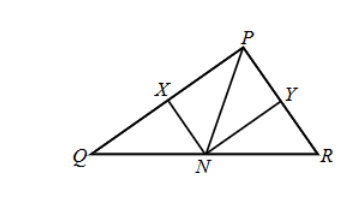
Framework / 解題框架
從 NP=NQ 及 NP=NR 開始。
中文詳解
第一眼訊號：兩條中垂線的交點是外心；外心 N 又在 QR 上，所以 QR 是外接圓直徑。
策略地圖：兩組等距定位外心 → 用 N 在 QR 上得到直徑 → 把 X、Y 視為兩弦中點 → 用半弦與圓心距離證明兩個直角三角形全等。
N 在 PQ 的中垂線上，故
N 又在 PR 的中垂線上，故
因此
所以 N 是 \(\triangle PQR\) 的外心，I 正確。
敘述 II 所說的「三角形的中垂線」並沒有指定被垂直平分的邊；而且題目沒有給 PN 垂直平分任何一邊的條件，所以 II 錯誤。
核對敘述 III。設外接圓半徑為 \(r\)。因 Q、N、R 共線，而 N 是外心，QR 是直徑，所以
又因 X、Y 分別是 PQ、PR 的中點，
在直角三角形 \(\triangle XQN\) 中，
由 \(PQ^2+PR^2=QR^2=4r^2\)，
同理，
而
故
III 正確。因此只有 I、III 正確，選 C。
English Solution
First-Look Signal: The intersection of two perpendicular bisectors is the circumcentre. Since the circumcentre N also lies on QR, QR is a diameter of the circumcircle.
Strategy Map: Use two equal-distance relations to locate the circumcentre -> obtain a diameter from N on QR -> regard X and Y as chord midpoints -> use half-chords and centre-to-chord distances to prove the two right triangles congruent.
Since N lies on the perpendicular bisector of PQ,
Since N also lies on the perpendicular bisector of PR,
Therefore,
so N is the circumcentre of \(\triangle PQR\), and statement I is true.
Statement II refers to a "perpendicular bisector of a triangle" without specifying a side. No condition says that PN perpendicularly bisects any side, so statement II is false.
Now test statement III. Let the circumradius be \(r\). Since Q, N and R are collinear and N is the circumcentre, QR is a diameter. Hence
Also, X and Y are the midpoints of PQ and PR respectively, so
In right triangle \(\triangle XQN\),
Using \(PQ^2+PR^2=QR^2=4r^2\),
Similarly,
Moreover,
Therefore,
Statement III is true. Hence only I and III are true, giving option C.
Final Answer / 最終答案
\(\boxed{\text{C. I and III only}}\)
把內心與外心條件寫成可追蹤的角度等式。
Combine angle-bisector halves with tangent and cyclic theorems.
Name the unknown angle and write every half-angle explicitly.
A source diagram is not drawn to scale; use only marked incidences.
Use this divider as a teaching checkpoint before starting the next question group.
在圖中，ABC 是銳角三角形，AD、BE、CF 交於垂心 H。下列哪項必然正確？
I. \(\triangle AHE\sim\triangle BHD\) II. \(\triangle EHC\cong\triangle DHC\) III. \(\angle HAB=\angle HED\)
A. 只有 I、II B. 只有 I、III C. 只有 II、III D. I、II、III
ABC is acute and AD, BE and CF meet at its orthocentre H. Which statements must be true?
I. \(\triangle AHE\sim\triangle BHD\) II. \(\triangle EHC\cong\triangle DHC\) III. \(\angle HAB=\angle HED\)
A. I and II only B. I and III only C. II and III only D. I, II and III
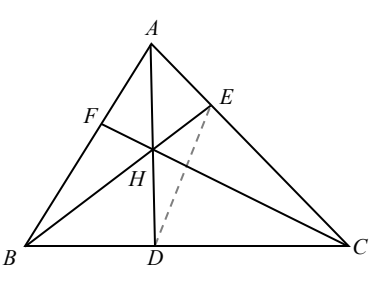
Framework / 解題框架
先在 D、E、F 標直角，再逐項核對相似、全等及角度。
中文詳解
**第一眼訊號 / First-Look Signal：** D、E、F 是高的垂足，所以先標出 \(AE\perp EH\) 及 \(BD\perp DH\) 的直角；兩個待比較三角形在 H 還有對頂角。
**策略地圖 / Strategy Map：**
- 用兩個直角及 H 的對頂角，以 AA 證明 I 的相似關係。
- 檢查 II 是否有足夠的邊長資料；只有一條公用邊不足以證全等。
- 由 \(\angle ADB=\angle AEB=90^\circ\)，判斷 A、B、D、E 共圓，再用同弧 HB 證明 III。
I：\(\angle AEH=\angle BDH=90^\circ\)，且 \(\angle AHE=\angle BHD\)，所以由 AA，\(\triangle AHE\sim\triangle BHD\)。
II：兩個直角三角形雖共用 HC，題目沒有給 \(EH=DH\) 或另一組相等邊，故不能推出全等。
III：A、B、D、E 共圓。由同弧 HB 所對圓周角，\(\angle HAB=\angle HED\)。
因此 I、III 正確。
**陰濕位 / Common Trap：** 兩個直角三角形共用 \(HC\)，並不代表它們全等；必須另有一組對應邊相等或其他全等條件。相似與全等不可混用。
English Solution
**First-Look Signal / 第一眼訊號：** D, E and F are altitude feet. Mark the right angles \(AE\perp EH\) and \(BD\perp DH\) first; the two target triangles also have vertically opposite angles at H.
**Strategy Map / 策略地圖：**
- Use the two right angles and the vertical angles at H to prove I by AA similarity.
- Check whether II has enough side information; one common side alone cannot prove congruence.
- Since \(\angle ADB=\angle AEB=90^\circ\), place A, B, D and E on the circle with diameter AB, then use the same chord HB to prove III.
I is true by AA:
and the angles at H are vertically opposite,
Therefore \(\triangle AHE\sim\triangle BHD\).
For II, both triangles are right-angled and share \(HC\), but the question does not give \(EH=DH\) or another pair of equal sides. Hence \(\triangle EHC\cong\triangle DHC\) is not forced.
For III, the two altitude-foot right angles place A, B, D and E on the circle with diameter AB. The angles \(\angle HAB\) and \(\angle HED\) subtend the same chord HB, so
Thus I and III only are true.
**Common Trap / 陰濕位：** Two right triangles sharing \(HC\) are not automatically congruent. Similarity and congruence require different evidence; here AA proves similarity for I, while II lacks a valid congruence condition.
Final Answer / 最終答案
\(\boxed{\text{B. I and III only}}\)
OGD、OEI、OHF 是 \(\triangle ABC\) 三條中垂線；D、E、F 分別在 AB、BC、AC 上，AIFC 與 BGEHC 是直線。下列哪項必然正確？
I. O 是垂心。 II. \(\triangle OEH\sim\triangle CFH\)。 III. \(BE=CE\)。
A. 只有 I B. 只有 II C. 只有 I、III D. 只有 II、III
OGD, OEI and OHF are the perpendicular bisectors of \(\triangle ABC\), with D, E and F on AB, BC and AC. AIFC and BGEHC are straight lines. Which statements must be true?
I. O is the orthocentre. II. \(\triangle OEH\sim\triangle CFH\). III. \(BE=CE\).
A. I only B. II only C. I and III only D. II and III only
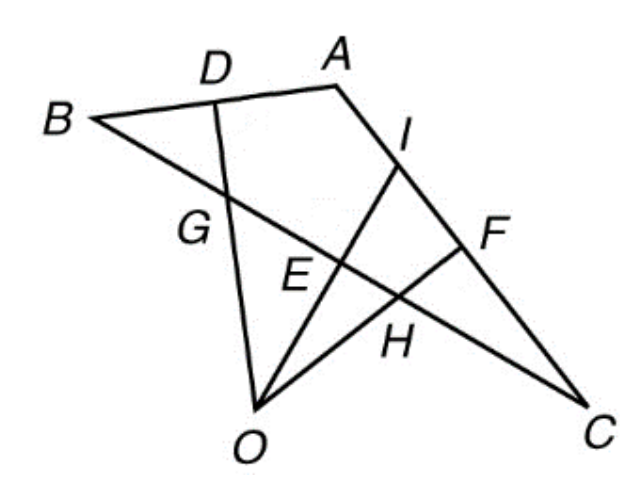
Framework / 解題框架
Read the three perpendicular bisectors -> identify the circumcentre and side midpoints -> use right angles and vertically opposite angles for AAA similarity -> audit the statements.
中文詳解
第一眼訊號：三條中垂線交於 O，所以 O 是外心；不要把中垂線誤認為高線。
策略地圖：辨認外心與三邊中點 → 逐項核對 I → 找兩組角證明相似 → 用中點定義核對 III。
敘述 I：三條中垂線交於 O，所以 O 是外心，不一定是垂心。I 錯誤。
敘述 II：OEI 是 BC 的中垂線，而 B、G、E、H、C 共線，所以
OHF 是 AC 的中垂線，而 C、F、H 在相關直線上，所以
又 O、H、F 共線，因此
此外，\(\angle OHE\) 和 \(\angle CHF\) 是對頂角，所以
因此
II 正確。
敘述 III：OEI 是 BC 的中垂線，所以 E 是 BC 的中點。因此
III 正確。故只有 II、III 正確，選 D。
English Solution
First-Look Signal: The three perpendicular bisectors meet at O, so O is the circumcentre. Do not mistake perpendicular bisectors for altitudes.
Strategy Map: Identify the circumcentre and the three side midpoints -> test statement I -> use two angle pairs to prove similarity -> use the midpoint definition for statement III.
Statement I: the three perpendicular bisectors meet at O, so O is the circumcentre, not necessarily the orthocentre. Statement I is false.
Statement II: OEI is the perpendicular bisector of BC, and B, G, E, H and C are collinear. Therefore,
OHF is the perpendicular bisector of AC, and C, F and H lie on the relevant straight line. Therefore,
Since O, H and F are collinear,
Also, \(\angle OHE\) and \(\angle CHF\) are vertically opposite angles, so
Therefore,
Statement II is true.
Statement III: OEI is the perpendicular bisector of BC, so E is the midpoint of BC. Hence
Statement III is true. Thus only II and III are true, giving option D.
Final Answer / 最終答案
\(\boxed{\text{D. II and III only}}\)
把相近技巧連續教授；若第一步、依賴鏈或考核輸出不同，則保留為相鄰但不同的同型群。
Keep related techniques together while separating questions whose first move, dependency chain or assessed output differs.
use the angle sum
Do not classify a question only by the centre name; follow the complete assessed chain.
Use this divider as a teaching checkpoint before starting the next question group.
若 \(\angle B+\angle C=90^\circ\)，下列哪項正確？G、H、I、J 分別為形心、垂心、內心、外心。
I. I 在三角形外。 II. H、J 都在三角形的邊上。 III. G、H、J 共線。
A. 只有 I、II B. 只有 I、III C. 只有 II、III D. I、II、III
Let G, H, I and J be the centroid, orthocentre, incentre and circumcentre of \(\triangle ABC\). If \(\angle B+\angle C=90^\circ\), which statements are true?
I. I lies outside the triangle. II. Both H and J lie on its sides. III. G, H and J are collinear.
A. I and II only B. I and III only C. II and III only D. I, II and III
Framework / 解題框架
先由內角和找直角，再逐項定位。
中文詳解
由內角和，\(\angle A=90^\circ\)。內心永遠在三角形內，所以 I 錯。H=A，在頂點上；J 是斜邊 BC 中點，也在邊上，所以 II 正確。G、H、J 在 Euler 線上，III 正確。
English Solution
The angle sum gives \(\angle A=90^\circ\). The incentre of every non-degenerate triangle lies inside the triangle, so statement I is false. Since the right angle is at A, the orthocentre is the vertex A itself. The circumcentre is the midpoint of the hypotenuse BC. Hence both H and J lie on sides of the triangle, so statement II is true. The centroid G, orthocentre H and circumcentre J lie on the Euler line, so statement III is also true. Therefore only II and III are true.
Final Answer / 最終答案
\(\boxed{\text{C. II and III only}}\)
G、I、J 分別為 \(\triangle XYZ\) 的形心、內心、外心。若 \(\angle XYZ=36^\circ\)、\(\angle XZY=54^\circ\)，下列哪項正確？
I. X 是垂心。 II. J 是 YZ 中點。 III. G、I、J 共線。
A. 只有 I、II B. 只有 I、III C. 只有 II、III D. I、II、III
G, I and J are the centroid, incentre and circumcentre of \(\triangle XYZ\). If \(\angle XYZ=36^\circ\) and \(\angle XZY=54^\circ\), which statements are true?
I. X is the orthocentre. II. J is the midpoint of YZ. III. G, I and J are collinear.
A. I and II only B. I and III only C. II and III only D. I, II and III
Framework / 解題框架
36°+54° 先鎖定直角，再用定義逐句判斷。
中文詳解
所以垂心在 X，I 正確；外心是斜邊 YZ 中點，II 正確。Euler 線保證 G、垂心、外心共線，不包括內心；一般不會有 G、I、J 共線，III 錯。
English Solution
First calculate the remaining angle:
Therefore the right-angle vertex X is the orthocentre, so statement I is true. Since YZ is the hypotenuse, its midpoint is the circumcentre J, so statement II is true. The Euler line contains the centroid, orthocentre and circumcentre; it does not generally contain the incentre. Hence G, I and J need not be collinear, so statement III is false. Therefore only I and II are true.
Final Answer / 最終答案
\(\boxed{\text{A. I and II only}}\)
設 \(A\)、\(B\)、\(C\) 及 \(D\) 分別為 \(\triangle PQR\) 的內心、外心、形心及垂心。若 \(\angle PQR=37^\circ\) 及 \(\angle PRQ=53^\circ\)，以下哪些敘述正確？
I. \(C\) 位於 \(\triangle PQR\) 內。
II. \(D\) 與 \(P\) 重合。
III. \(A\)、\(B\) 及 \(P\) 共線。
- A. 只有 I 及 II
- B. 只有 I 及 III
- C. 只有 II 及 III
- D. I、II 及 III
Let \(A\), \(B\), \(C\) and \(D\) be the in-centre, circumcentre, centroid and orthocentre of \(\triangle PQR\) respectively. If \(\angle PQR=37^\circ\) and \(\angle PRQ=53^\circ\), which statements are true?
I. \(C\) lies inside \(\triangle PQR\).
II. \(D\) coincides with \(P\).
III. \(A\), \(B\) and \(P\) are collinear.
- A. I and II only
- B. I and III only
- C. II and III only
- D. I, II and III
Framework / 解題框架
Recognise a right angle from the two acute angles, then distinguish the median, angle bisector and Euler line.
中文詳解
先求餘下角：
形心是三條中線的交點，而且每條中線的內分點都在三角形內，所以形心 \(C\) 位於三角形內。敘述 I 正確。
直角三角形的垂心就是直角頂點，因此
敘述 II 正確。
外心 \(B\) 是斜邊 \(QR\) 的中點，所以直線 \(PB\) 是由 \(P\) 出發的中線。內心 \(A\) 位於 \(P\) 的內角平分線上。只有當兩直角邊相等時，該中線才同時是角平分線；但 \(37^\circ\ne53^\circ\)，兩直角邊不相等。因此 \(A\)、\(B\)、\(P\) 不共線，敘述 III 錯誤。
故正確答案是 A。
English Solution
The remaining angle is
The centroid is the intersection of the medians and lies inside the triangle, so statement I is true.
The orthocentre of a right triangle is its right-angle vertex. Hence
Statement II is true.
The circumcentre \(B\) is the midpoint of the hypotenuse \(QR\), so \(PB\) is a median. The in-centre \(A\) lies on the angle bisector from \(P\). This median is also the angle bisector only when the two legs are equal. Since \(37^\circ\ne53^\circ\), the triangle is not isosceles, so statement III is false.
Therefore the correct option is A.
Final Answer / 最終答案
答案 / Answer: A
設 \(G,H,I,J\) 分別為 \(\triangle ABC\) 的形心、垂心、內心及外心。若 \(\angle B+\angle C=90^\circ\)，下列哪些敘述正確？
I. \(H,J\) 均位於 \(\triangle ABC\) 的邊上。
II. \(I\) 位於 \(\triangle ABC\) 外。
III. \(G,H,J\) 共線。
- A. 只有 I、II
- B. 只有 I、III
- C. 只有 II、III
- D. I、II、III
Let \(G,H,I,J\) be the centroid, orthocentre, in-centre and circumcentre of \(\triangle ABC\). If \(\angle B+\angle C=90^\circ\), which statements are true?
I. Both \(H,J\) lie on the sides of the triangle.
II. \(I\) lies outside the triangle.
III. \(G,H,J\) are collinear.
- A. I and II only
- B. I and III only
- C. II and III only
- D. I, II and III
Framework / 解題框架
Convert the angle sum into a right angle, then place the four centres.
中文詳解
由三角形內角和，
因此垂心 \(H\) 是頂點 \(A\)，外心 \(J\) 是斜邊 \(BC\) 的中點，兩者都在三角形的邊上，所以 I 正確。
內心必定位於非退化三角形內，所以 II 錯。
由 \(A\) 到 \(BC\) 中點 \(J\) 的線是中線；形心 \(G\) 位於這條中線上。因此 \(G,H,J\) 共線，III 正確。
English Solution
The triangle angle sum gives
Thus the orthocentre \(H\) is the vertex \(A\), while the circumcentre \(J\) is the midpoint of the hypotenuse \(BC\). Both lie on the sides, so I is true.
The in-centre always lies inside a non-degenerate triangle, so II is false.
The line from \(A\) to the midpoint \(J\) of \(BC\) is a median, and the centroid \(G\) lies on this median. Therefore \(G,H,J\) are collinear, so III is true.
Final Answer / 最終答案
答案 / Answer: B. 只有 / only I and III
把相近技巧連續教授；若第一步、依賴鏈或考核輸出不同，則保留為相鄰但不同的同型群。
Keep related techniques together while separating questions whose first move, dependency chain or assessed output differs.
circumcentre on side
Do not classify a question only by the centre name; follow the complete assessed chain.
Use this divider as a teaching checkpoint before starting the next question group.
G、H、I、J 分別是 \(\triangle PQR\) 的形心、垂心、內心、外心。若 J 在 PR 上，下列哪項正確？
I. \(\angle PQR=90^\circ\)。 II. Q 在 HI 上。 III. G、H、J 共線。
A. 只有 I、II B. 只有 I、III C. 只有 II、III D. I、II、III
G, H, I and J are the centroid, orthocentre, incentre and circumcentre of \(\triangle PQR\). If J lies on PR, which statements are true?
I. \(\angle PQR=90^\circ\). II. Q lies on HI. III. G, H and J are collinear.
A. I and II only B. I and III only C. II and III only D. I, II and III
Framework / 解題框架
J 同時在 PR 上且滿足 JP=JR，故 PR 是直徑。
中文詳解
J 是外心，所以 \(JP=JR\)。J 又在 PR 上，因此 J 是 PR 中點，PR 是外接圓直徑。由半圓所對圓周角，\(\angle PQR=90^\circ\)，I 正確。直角三角形的垂心是直角頂點，所以 H=Q；因此 Q 當然在 HI 上，II 正確。任何非等邊三角形的形心、垂心、外心在 Euler 線上；退化成重合的特殊情況亦不破壞共線性，III 正確。
English Solution
Since J is the circumcentre, \(JP=JR\). As J also lies on PR, it is the midpoint of PR; hence PR is a diameter and \(\angle PQR=90^\circ\). The orthocentre is therefore Q itself, so Q lies on HI. The centroid, orthocentre and circumcentre are collinear on the Euler line. All three statements are true.
Final Answer / 最終答案
\(\boxed{\text{D. I, II and III}}\)
把相近技巧連續教授；若第一步、依賴鏈或考核輸出不同，則保留為相鄰但不同的同型群。
Keep related techniques together while separating questions whose first move, dependency chain or assessed output differs.
derive the triangle type from the given data
Do not classify a question only by the centre name; follow the complete assessed chain.
Use this divider as a teaching checkpoint before starting the next question group.
若 \(\triangle ABC\) 在 \(B\) 處為直角，以下哪些正確？
I. 垂心在 \(AC\) 上。 II. 重心在三角形內。 III. 內心在三角形外。
If \(\triangle ABC\) is right-angled at \(B\), which statements are true?
I. The orthocentre lies on \(AC\). II. The centroid lies inside the triangle. III. The incentre lies outside the triangle.
Framework / 解題框架
Translate the wording into coordinate conditions first, then choose the shortest DSE tool.
中文詳解
直角三角形的垂心是直角頂點 \(B\)，不是斜邊 \(AC\) 上，所以 I 錯。任何非退化三角形的重心都在三角形內，所以 II 對。內心是三條內角平分線的交點，必在三角形內，所以 III 錯。
因此只有 II 正確。
逐項檢查時要分清「在邊上」和「在三角形內」：\(B\) 是三角形的頂點，但不在斜邊 \(AC\) 上；重心把每條中線按 \(2:1\) 分割，必位於內部；內角平分線也在各內角範圍內相交，因此內心不會跑到外面。
English Solution
In a right triangle, the orthocentre is the right-angle vertex \(B\), so it is not on the hypotenuse \(AC\). The centroid of every non-degenerate triangle lies inside the triangle. The incentre is also always inside the triangle. Thus only statement II is true.
Check the precise wording of each statement. The vertex \(B\) belongs to the triangle, but it is not on the opposite side \(AC\). The centroid divides every median in the ratio \(2:1\) and remains inside, while the internal angle bisectors meet at an interior point. Therefore I and III are false rather than merely uncertain.
Final Answer / 最終答案
\(\boxed{\text{B}}\)
\(P=(0,1)\)、\(Q=(12,1)\)、\(R=(0,6)\)。以下哪些陳述正確？
I. \(\triangle PQR\) 的外心在 QR 上。
II. \(\triangle PQR\) 的垂心在三角形外。
III. \(\triangle PQR\) 的內心在三角形內。
A. 只有 I、II
B. 只有 I、III
C. 只有 II、III
D. I、II、III
\(P=(0,1)\), \(Q=(12,1)\), and \(R=(0,6)\). Which statements are true?
I. The circumcentre of \(\triangle PQR\) lies on QR.
II. The orthocentre of \(\triangle PQR\) lies outside the triangle.
III. The incentre of \(\triangle PQR\) lies inside the triangle.
A. I and II only
B. I and III only
C. II and III only
D. I, II and III
Framework / 解題框架
辨認直角 → 外心在斜邊 → 垂心在直角頂點 → 內心恆在內部。
中文詳解
第一眼訊號：PQ 水平而 PR 垂直，故 P 是直角頂點。
策略地圖：直角三角形外心在斜邊中點 → 垂心在直角頂點 → 內心必在內部。
完整詳解 / Complete Worked Solution
I 正確：QR 是斜邊，外心是 QR 的中點。
II 錯誤：垂心就是 P，P 在三角形邊界上，不是在外部。
III 正確：非退化三角形的內心恆在三角形內。
故只有 I、III 正確，選 B。
陰濕位：「在邊界」不等於「在外部」。
English Solution
First-Look Signal: PQ is horizontal and PR is vertical, so P is the right-angle vertex.
Strategy Map: Use the standard centre positions of a right triangle.
Complete Worked Solution / 完整詳解
I is true because the circumcentre is the midpoint of the hypotenuse QR. II is false because the orthocentre is P, which lies on the boundary rather than outside. III is true because the incentre lies inside every non-degenerate triangle. Therefore the answer is B.
Common Trap: A boundary point is not an exterior point.
Final Answer / 最終答案
\(\boxed{\text{B. 只有 I、III / I and III only}}\)
利用內心角定理或 Euler 線坐標關係，把綜合條件化成可解參數方程。
Use the incenter angle theorem or the Euler-line coordinate relation to reduce a complex statement to a solvable parameter equation.
State the centre theorem before substituting coordinates.
A centre-on-axis condition may imply the centroid is on that axis as well.
Use this divider as a teaching checkpoint before starting the next question group.
G、H、I、J 分別是 \(\triangle PQR\) 的形心、垂心、內心、外心。若 \(\angle PQR=90^\circ\)，下列哪項必然正確？
I. J 在 PR 上。 II. Q、I、J 共線。 III. G、H、J 共線。
A. 只有 I、II B. 只有 I、III C. 只有 II、III D. I、II、III
If \(\angle PQR=90^\circ\), which statements about centroid G, orthocentre H, incentre I and circumcentre J must be true?
I. J lies on PR. II. Q, I and J are collinear. III. G, H and J are collinear.
A. I and II only B. I and III only C. II and III only D. I, II and III
Framework / 解題框架
固定 H、J 後，用一般反例檢查內心共線命題。
中文詳解
直角在 Q，所以 H=Q，而 J 是斜邊 PR 的中點；I 正確。Q 到 J 是斜邊中線，但內心在 Q 的角平分線上；一般直角三角形中兩線不重合，故 II 不必成立。G、H、J 在 Euler 線上，III 正確。因此只有 I、III，答案為 B。
English Solution
The orthocentre is Q and the circumcentre is the midpoint of hypotenuse PR, so I is true. QJ is a median, whereas QI is an angle bisector; they coincide only in a special isosceles right triangle, so II is not necessary. G, H and J lie on the Euler line, so III is true. Therefore only I and III are true, giving option B.
Final Answer / 最終答案
\(\boxed{\text{B. I and III only}}\)
把相近技巧連續教授；若第一步、依賴鏈或考核輸出不同，則保留為相鄰但不同的同型群。
Keep related techniques together while separating questions whose first move, dependency chain or assessed output differs.
recognize isosceles right triangle
Do not classify a question only by the centre name; follow the complete assessed chain.
Use this divider as a teaching checkpoint before starting the next question group.
若 \(\angle ABC=\angle BAC=45^\circ\)，下列哪項正確？
I. H 在 C。 II. J 在 AB。 III. \(GI\perp BC\)。
A. 只有 I、II B. 只有 I、III C. 只有 II、III D. I、II、III
Let G, H, I and J be the centroid, orthocentre, incentre and circumcentre. If \(\angle ABC=\angle BAC=45^\circ\), which statements are true?
I. H is at C. II. J lies on AB. III. \(GI\perp BC\).
A. I and II only B. I and III only C. II and III only D. I, II and III
Framework / 解題框架
前兩句用直角性質，第三句用對稱坐標檢查方向。
中文詳解
\(\angle C=90^\circ\)，所以 H=C，I 正確；AB 是斜邊，J 是 AB 中點，II 正確。取對稱坐標 \(A=(-1,0),B=(1,0),C=(0,1)\)，形心與內心都在 y 軸上，所以 GI 是鉛直線；BC 斜率為 \(-1\)，其垂線斜率應為 1，不是鉛直，故 III 錯。
English Solution
\(\angle C=90^\circ\), so the orthocentre H is C and statement I is true. Since AB is the hypotenuse, the circumcentre J is the midpoint of AB, so statement II is true.
To test statement III, take the symmetric coordinates \(A=(-1,0),B=(1,0),C=(0,1)\). Both the centroid G and the incentre I lie on the y-axis, so GI is vertical. However, BC has slope \(-1\), so a line perpendicular to BC should have slope 1, not be vertical. Therefore GI is not perpendicular to BC, statement III is false, and only I and II are true.
Final Answer / 最終答案
\(\boxed{\text{A. I and II only}}\)
把相近技巧連續教授；若第一步、依賴鏈或考核輸出不同，則保留為相鄰但不同的同型群。
Keep related techniques together while separating questions whose first move, dependency chain or assessed output differs.
derive the triangle type from the given data
Do not classify a question only by the centre name; follow the complete assessed chain.
Use this divider as a teaching checkpoint before starting the next question group.
設 \(G,H,I,J\) 分別為 \(\triangle PQR\) 的重心、垂心、內心和外心。若 \(\angle PQR=\angle PRQ=22^\circ\)，以下哪些正確？
I. \(G\) 在三角形內。 II. \(H\) 在三角形外。 III. \(I,J,Q\) 共線。
Let \(G,H,I,J\) be the centroid, orthocentre, incentre and circumcentre of \(\triangle PQR\). If \(\angle PQR=\angle PRQ=22^\circ\), which are true?
I. \(G\) lies inside \(\triangle PQR\). II. \(H\) lies outside \(\triangle PQR\). III. \(I,J,Q\) are collinear.
Framework / 解題框架
Translate the wording into coordinate conditions first, then choose the shortest DSE tool.
中文詳解
因為兩個底角相等，\(PQ=PR\)，而頂角
三角形是鈍角三角形，所以垂心 \(H\) 在三角形外，II 正確。重心永遠在三角形內，I 正確。
注意原題是 \(I,J,Q\) 共線。\(I\) 和 \(J\) 位於等腰三角形的對稱軸，而對稱軸通過頂點 \(P\) 及 \(QR\) 的中點，不一般通過 \(Q\)，所以 III 錯。原官方答案 A（只有 I、II）正確。
English Solution
The equal base angles give \(PQ=PR\), and
The triangle is obtuse, so its orthocentre lies outside; II is true. The centroid of every triangle lies inside; I is true.
Read statement III carefully: the symmetry axis passes through \(P\) and the midpoint of \(QR\), not generally through \(Q\). Hence III is false, so I and II only are correct.
Final Answer / 最終答案
\(\boxed{\text{A}}\)
在直角坐標平面上，\(O(0,0)\)、\(A(-8,6)\)、\(B(-16,0)\) 是 \(\triangle OAB\) 的頂點。下列哪些敘述正確？
I. 形心為 \((-8,2)\)。
II. 垂心在三角形外。
III. 外心為 \((-8,-\frac{7}{3})\)。
- A. I and II only
- B. I and III only
- C. II and III only
- D. I, II and III
In a rectangular coordinate plane, \(O(0,0), A(-8,6)\) and \(B(-16,0)\) are the vertices of \(\triangle O A B\) respectively. Which of the following are true?
I. The coordinates of the centroid of \(\triangle OAB\) are \((-8,2)\).
II. The orthocentre of \(\triangle OAB\) lies outside the triangle.
III. The coordinates of the circumcentre of \(\triangle OAB\) are \(\left(-8,-\frac{7}{3}\right)\).
- A. I and II only
- B. I and III only
- C. II and III only
- D. I, II and III
Framework / 解題框架
Translate the centre definition into a coordinate condition, preserve the key algebraic steps, and compare with the options.
中文詳解
I：形心為
所以 I 正確。
三邊長平方為
因 \(OB^2>OA^2+AB^2\)，所以 \(\angle A\) 是鈍角。鈍角三角形的垂心在三角形外，故 II 正確。
由對稱性，設外心為 \(C=(-8,t)\)。由 \(CO=CA\)，
所以外心是 \(\left(-8,-\frac{7}{3}\right)\)，III 正確。
English Solution
For statement I,
so I is true.
The squared side lengths are
Since \(OB^2>OA^2+AB^2\), angle A is obtuse, and the orthocentre lies outside the triangle. Thus II is true.
By symmetry, let the circumcentre be \(C=(-8,t)\). Since \(CO=CA\),
Therefore the circumcentre is \(\left(-8,-\frac{7}{3}\right)\), so statement III is true.
Final Answer / 最終答案
答案 / Answer: D
在直角坐標平面上，\(O(0,0)\)、\(A(-8,6)\)、\(B(-16,0)\) 是 \(\triangle OAB\) 的頂點。下列哪些敘述正確？
I. 形心為 \((-8,2)\)。
II. 垂心在三角形外。
III. 外心在三角形外。
- A. I and II only
- B. I and III only
- C. II and III only
- D. I, II and III
In a rectangular coordinate plane, \(O(0,0), A(-8,6)\) and \(B(-16,0)\) are the vertices of \(\triangle O A B\) respectively. Which of the following are true?
I. The coordinates of the centroid of \(\triangle OAB\) are \((-8,2)\).
II. The orthocentre of \(\triangle OAB\) lies outside the triangle.
III. The circumcentre of \(\triangle OAB\) lies outside the triangle.
- A. I and II only
- B. I and III only
- C. II and III only
- D. I, II and III
Framework / 解題框架
Translate the centre definition into a coordinate condition, preserve the key algebraic steps, and compare with the options.
中文詳解
形心為
所以 I 正確。
由
及 \(256>100+100\)，可知 \(\angle A\) 是鈍角，所以垂心在三角形外，II 正確。
由對稱性，設外心為 \(C=(-8,t)\)。由 \(CO=CA\)：
得
三個頂點的 y 坐標均不小於 0，整個三角形亦位於 \(y\ge0\) 的半平面；但外心的 y 坐標為負數，因此外心在三角形外。III 正確。
English Solution
The centroid is
so statement I is true.
The squared side lengths are
and \(256>100+100\). Hence angle A is obtuse and the orthocentre lies outside the triangle. Statement II is true.
By symmetry, let the circumcentre be \(C=(-8,t)\). Since \(CO=CA\),
we get
All three vertices have y-coordinates not less than 0, so the whole triangle lies in the half-plane \(y\ge0\). The circumcentre has a negative y-coordinate, so it lies outside the triangle and statement III is true.
Final Answer / 最終答案
答案 / Answer: D
\(A=(-2,-3)\)、\(B=(3,1)\)、\(C=(8,-3)\)。設 \(G,H,I,J\) 分別為 \(\triangle ABC\) 的形心、垂心、內心及外心。下列哪些敘述正確？
I. \(G\) 位於三角形內。
II. \(H\) 位於三角形內。
III. \(I,J,B\) 共線。
- A. 只有 I、II
- B. 只有 I、III
- C. 只有 II、III
- D. I、II、III
\(A=(-2,-3)\), \(B=(3,1)\) and \(C=(8,-3)\). Let \(G,H,I,J\) be the centroid, orthocentre, in-centre and circumcentre. Which statements are true?
I. \(G\) lies inside the triangle.
II. \(H\) lies inside the triangle.
III. \(I,J,B\) are collinear.
- A. I and II only
- B. I and III only
- C. II and III only
- D. I, II and III
Framework / 解題框架
Use symmetry for collinearity and a scalar-product check to identify the obtuse angle.
中文詳解
形心必定位於非退化三角形內，所以 I 正確。
由 \(B\) 指向 \(A,C\) 的坐標變化分別為 \((-5,-4)\) 及 \((5,-4)\)。判斷夾角：
因此 \(\angle ABC>90^\circ\)，三角形是鈍角三角形，垂心在三角形外，所以 II 錯。
\(A,C\) 關於直線 \(x=3\) 對稱，而 \(B\) 位於 \(x=3\)。等腰三角形的內心及外心都在對稱軸上，故 \(I,J,B\) 共線，III 正確。
English Solution
The centroid always lies inside a non-degenerate triangle, so I is true.
From \(B\), the coordinate changes toward \(A\) and \(C\) are \((-5,-4)\) and \((5,-4)\). Their scalar comparison is
Therefore \(\angle ABC>90^\circ\), so the triangle is obtuse. The orthocentre of an obtuse triangle lies outside, so II is false.
Points \(A,C\) are symmetric about \(x=3\), while \(B\) lies on \(x=3\). Both the in-centre and circumcentre lie on this symmetry axis, so \(I,J,B\) are collinear. Statement III is true.
Final Answer / 最終答案
答案 / Answer: B. 只有 / only I and III
把相近技巧連續教授；若第一步、依賴鏈或考核輸出不同，則保留為相鄰但不同的同型群。
Keep related techniques together while separating questions whose first move, dependency chain or assessed output differs.
recognize altitude line
Do not classify a question only by the centre name; follow the complete assessed chain.
Use this divider as a teaching checkpoint before starting the next question group.
圖示鈍角三角形 PQR。S 在 PR 上，且 \(QS\perp PR\)。下列哪項必然正確？
I. \(PS=RS\) II. QS 平分 \(\angle PQR\) III. \(\triangle PQR\) 的垂心在 SQ 的延長線上。
A. 只有 I B. 只有 III C. 只有 I、II D. 只有 II、III
The figure shows an obtuse triangle PQR. S lies on PR and \(QS\perp PR\). Which statements must be true?
I. \(PS=RS\) II. QS bisects \(\angle PQR\). III. The orthocentre lies on SQ produced.
A. I only B. III only C. I and II only D. II and III only
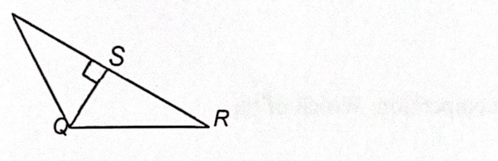
Framework / 解題框架
QS 已是由 Q 作出的高，垂心必在其所在直線上。
中文詳解
QS 只由「垂直 PR」保證是一條高。沒有條件說 S 是中點，所以 I 不一定成立；也沒有等腰條件保證 QS 是角平分線，所以 II 不一定成立。垂心必位於每一條高所在的直線上；鈍角三角形垂心在外部，因此位於 SQ 的適當延長線上。只有 III 正確。
English Solution
QS is an altitude. Nothing makes S the midpoint of PR, so I need not hold; nothing makes QS an angle bisector, so II need not hold. The orthocentre must lie on the line containing every altitude and, for this obtuse triangle, lies on SQ produced. Only III is necessary.
Final Answer / 最終答案
\(\boxed{\text{B. III only}}\)
下列哪一項必定位於一個鈍角三角形內？
I. 內心 II. 中線 III. 垂心
A. 只有 I、II B. 只有 I、III C. 只有 II、III D. I、II、III
Which of the following must lie inside an obtuse-angled triangle?
I. Incentre II. Median III. Orthocentre
A. I and II only B. I and III only C. II and III only D. I, II and III
Framework / 解題框架
逐項使用「內心必在內部、中線是內部線段、鈍角三角形垂心在外」。
中文詳解
第一眼訊號：題目問「必然」，所以每項都要用定義判斷。
策略地圖：內心位置 → 中線線段 → 鈍角三角形垂心位置。
I 正確。內心是三條內角平分線的交點，必在三角形內。
II 正確。中線連接一個頂點與對邊中點；整條中線線段都在三角形內。
III 錯誤。鈍角三角形的兩條高要延長後才相交，所以垂心在三角形外。
陰濕位：中線是一條線段，不是形心的另一個名稱。
English Solution
First-Look Signal: Test each “must” statement from its definition.
Strategy Map: Locate the incentre → interpret a median as a segment → locate the orthocentre of an obtuse triangle.
I is true because the internal angle bisectors meet inside every non-degenerate triangle. II is true because a median joins a vertex to the midpoint of the opposite side and lies inside the triangle. III is false because the orthocentre of an obtuse triangle lies outside it.
Common Trap: A median is a segment; it is not another name for the centroid.
Final Answer / 最終答案
\(\boxed{\text{A. I and II only}}\)
把相近技巧連續教授；若第一步、依賴鏈或考核輸出不同，則保留為相鄰但不同的同型群。
Keep related techniques together while separating questions whose first move, dependency chain or assessed output differs.
derive the triangle type from the given data
Do not classify a question only by the centre name; follow the complete assessed chain.
Use this divider as a teaching checkpoint before starting the next question group.
\(A=(9,-2)\)、\(B=(-5,3)\)，而 \(C\) 位於直線 \(L:28x-10y-51=0\) 上。下列哪些敘述必定正確？
I. \(\triangle ABC\) 的外心位於 \(L\) 上。
II. \(\triangle ABC\) 的垂心位於三角形內。
III. \(\triangle ABC\) 的內心、外心、垂心及形心共線。
- A. 只有 I、II
- B. 只有 I、III
- C. 只有 II、III
- D. I、II、III
The coordinates of \(A,B\) are \((9,-2)\) and \((-5,3)\). Point \(C\) lies on \(L:28x-10y-51=0\). Which statements must be true?
I. The circumcentre of \(\triangle ABC\) lies on \(L\).
II. The orthocentre lies inside \(\triangle ABC\).
III. The in-centre, circumcentre, orthocentre and centroid are collinear.
- A. I and II only
- B. I and III only
- C. II and III only
- D. I, II and III
Framework / 解題框架
Prove the given line is the perpendicular bisector of \(AB\), then use isosceles-triangle symmetry.
中文詳解
\(AB\) 的中點為
而
故 \(AB\) 的中垂線斜率為 \(14/5\)，經 \(M\) 的方程為
乘以 \(10\) 並整理：
這正是 \(L\)。因此 \(CA=CB\)，而 \(L\) 是等腰三角形的對稱軸。外心、內心、垂心及形心都在這條對稱軸上，所以 I、III 必定正確。
但 \(C\) 可沿 \(L\) 移動，三角形可能成為鈍角三角形；此時垂心在三角形外，故 II 不一定正確。
English Solution
The midpoint of \(AB\) is
Also,
Hence the slope of the perpendicular bisector of \(AB\) is \(14/5\). Its equation through \(M\) is
Multiplying by \(10\) and rearranging gives
Thus \(L\) is exactly the perpendicular bisector of \(AB\). Since \(C\) lies on \(L\), \(CA=CB\), and \(L\) is the symmetry axis of the isosceles triangle. The circumcentre, in-centre, orthocentre and centroid all lie on this axis, so I and III must be true.
However, moving \(C\) along \(L\) can make the triangle obtuse, in which case the orthocentre is outside. Statement II need not be true.
Final Answer / 最終答案
答案 / Answer: B. 只有 / only I and III
把相近技巧連續教授；若第一步、依賴鏈或考核輸出不同，則保留為相鄰但不同的同型群。
Keep related techniques together while separating questions whose first move, dependency chain or assessed output differs.
identify centroid
Do not classify a question only by the centre name; follow the complete assessed chain.
Use this divider as a teaching checkpoint before starting the next question group.
在圖中，AM、BN 是 \(\triangle ABC\) 的兩條中線，交於 P。下列哪項必然正確？
I. P 與三邊等距。 II. A、B、M、N 共圓。 III. \(MN\parallel AB\)。 IV. \(\triangle ABC\) 周界 \(>AM+BN\)。
A. 只有 I、II B. 只有 I、III C. 只有 II、III D. 只有 III、IV
In the figure, AM and BN are two medians of \(\triangle ABC\) and meet at P. Which statements must be true?
I. P is equidistant from the three sides. II. A, B, M and N are concyclic. III. \(MN\parallel AB\). IV. Perimeter of \(\triangle ABC>AM+BN\).
A. I and II only B. I and III only C. II and III only D. III and IV only
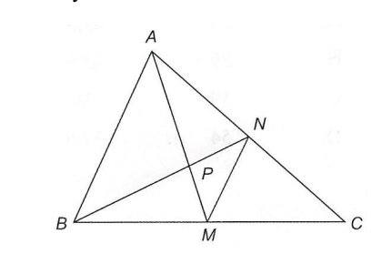
Framework / 解題框架
先確認 M、N 是中點，再逐句判斷。
中文詳解
第一眼訊號：兩條中線交點 P 是形心，而不是內心。
策略地圖：排除 I → 用反例排除 II → 中點定理證 III → 中線長度界證 IV。
I 錯誤：與三邊等距的是內心，形心一般不具此性質。
II 錯誤：一般三角形沒有定理保證四點 A、B、M、N 共圓；畫成特殊形狀不能當證明。
III 正確：M、N 分別是 BC、AC 的中點，所以由中點定理，\(MN\parallel AB\)。
IV 正確。由三角形中線長度界，\(AM<\tfrac{AB+AC}{2}\) 及 \(BN<\tfrac{BA+BC}{2}\)。相加後 \(AM+BN<\tfrac{AB+AC}{2}+\tfrac{BA+BC}{2}=AB+\tfrac{AC+BC}{2} 所以只有 III、IV 正確，答案為 D。
English Solution
First-Look Signal: P is the centroid, not the incentre.
Strategy Map: Reject I → reject unsupported cyclicity → apply the midpoint theorem → bound the two medians.
I is false: equal distances from the sides characterize the incentre. II is not a general theorem. III is true because M and N are side midpoints, hence \(MN\parallel AB\). For IV, the median-length bounds are \(AM<\tfrac{AB+AC}{2}\) and \(BN<\tfrac{BA+BC}{2}\). Adding them carefully gives \(AM+BN<\tfrac{AB+AC}{2}+\tfrac{BA+BC}{2}=AB+\tfrac{AC+BC}{2} Thus only III and IV are correct, so the answer is D. Common Trap: Do not infer concyclicity from the appearance of one sketch.
Final Answer / 最終答案
\(\boxed{\text{D. III and IV only}}\)
把相近技巧連續教授；若第一步、依賴鏈或考核輸出不同，則保留為相鄰但不同的同型群。
Keep related techniques together while separating questions whose first move, dependency chain or assessed output differs.
辨認直角
Do not classify a question only by the centre name; follow the complete assessed chain.
Use this divider as a teaching checkpoint before starting the next question group.
在直角坐標平面上，\(A(18,24)\)、\(B(50,0)\)，而 \(O\) 是原點。求通過 \(\triangle OAB\) 的形心、垂心及外心的直線方程。
- A. \(3 x+y-75=0\)
- B. \(3 x+y-76=0\)
- C. \(24 x+7 y-500=0\)
- D. \(24 x+7 y-600=0\)
\(A(18,24)\) and \(B(50,0)\) are two points on the rectangular coordinate plane. Let \(O\) be the origin. Find the equation of the straight line which passes through the centroid, orthocentre and circumcentre of \(\triangle OAB\).
- A. \(3 x+y-75=0\)
- B. \(3 x+y-76=0\)
- C. \(24 x+7 y-500=0\)
- D. \(24 x+7 y-600=0\)
Framework / 解題框架
Translate the centre definition into a coordinate condition, preserve the key algebraic steps, and compare with the options.
中文詳解
\(OA\) 與 \(AB\) 的斜率分別為
由於兩斜率乘積為 \(-1\)，所以 \(\angle OAB=90^\circ\)。因此垂心就是直角頂點
而外心是斜邊 \(OB\) 的中點
直線 \(HC\) 的斜率為
故
即
形心為 \(G=(68/3,8)\)，代入上式得 \(544+56-600=0\)，確認三心共線。
English Solution
The slopes of \(OA\) and \(AB\) are respectively
Their product is \(-1\), so \(\angle OAB=90^\circ\). Hence the orthocentre is
and the circumcentre is the midpoint of hypotenuse \(OB\):
The slope of the line through \(H\) and \(C\) is
Therefore,
or
The centroid is \(G=(68/3,8)\), and substituting it gives \(544+56-600=0\), confirming that it lies on the same line.
Final Answer / 最終答案
答案 / Answer: D
把相近技巧連續教授；若第一步、依賴鏈或考核輸出不同，則保留為相鄰但不同的同型群。
Keep related techniques together while separating questions whose first move, dependency chain or assessed output differs.
translate the circle or tangent condition
Do not classify a question only by the centre name; follow the complete assessed chain.
Use this divider as a teaching checkpoint before starting the next question group.
O 為原點，直線 L:3x-4y=0。P 在 L 上且 y 坐標為正，Q 在正 x 軸上。若三角形 OPQ 的外接圓半徑為 15，求 PQ。
- A. 9
- B. 12
- C. 18
- D. 24
O is the origin. L:3x-4y=0. P lies on L with positive y-coordinate. Q lies on the positive x-axis. The circumradius of triangle OPQ is 15. Find PQ.
- A. 9
- B. 12
- C. 18
- D. 24
Framework / 解題框架
Translate the centre definition into a coordinate condition, keep the key algebraic steps, and verify the selected option.
中文詳解
由 \(3x-4y=0\)，得
因此直線 \(OP\) 的水平與鉛直方向比為 \(4:3\)。又因 \(P\) 的 \(y\) 坐標為正，所以 \(P\) 位於第一象限；而 \(Q\) 位於正 \(x\) 軸，故 \(\angle POQ\) 是銳角。由 \(3\!:\!4\!:\!5\) 方向三角形，
在 \(\triangle OPQ\) 中，邊 \(PQ\) 對着 \(\angle POQ\)。由延伸正弦定理，
代入 \(R=15\) 及 \(\sin\angle POQ=3/5\)：
核對：\(PQ<2R=30\)，所以所得弦長小於直徑，幾何上合理。
English Solution
From \(3x-4y=0\),
Hence the horizontal-to-vertical direction ratio of \(OP\) is \(4:3\). Since the \(y\)-coordinate of \(P\) is positive, \(P\) lies in the first quadrant; as \(Q\) lies on the positive \(x\)-axis, \(\angle POQ\) is acute. From the \(3\!:\!4\!:\!5\) direction triangle,
In \(\triangle OPQ\), the side \(PQ\) is opposite \(\angle POQ\). By the extended sine rule,
Substitute \(R=15\) and \(\sin\angle POQ=3/5\):
Check: \(PQ<2R=30\), so the chord is shorter than the diameter, as required geometrically.
Final Answer / 最終答案
答案 / Answer: C
把相近技巧連續教授；若第一步、依賴鏈或考核輸出不同，則保留為相鄰但不同的同型群。
Keep related techniques together while separating questions whose first move, dependency chain or assessed output differs.
recognize the circumradius
Do not classify a question only by the centre name; follow the complete assessed chain.
Use this divider as a teaching checkpoint before starting the next question group.
O 是 \(\triangle PQR\) 的外心，其面積為 A。下列哪項必然正確？
I. \(\sin\angle PRQ=\dfrac{PQ}{2OP}\) II. \(A=\dfrac32(OM)(PQ)\) III. \(4A(OP)=(PQ)(QR)(RP)\)
A. 只有 I B. 只有 II C. 只有 I、III D. 只有 II、III
O is the circumcentre of \(\triangle PQR\), whose area is A. Which statements must be true?
I. \(\sin\angle PRQ=\dfrac{PQ}{2OP}\) II. \(A=\dfrac32(OM)(PQ)\) III. \(4A(OP)=(PQ)(QR)(RP)\)
A. I only B. II only C. I and III only D. II and III only
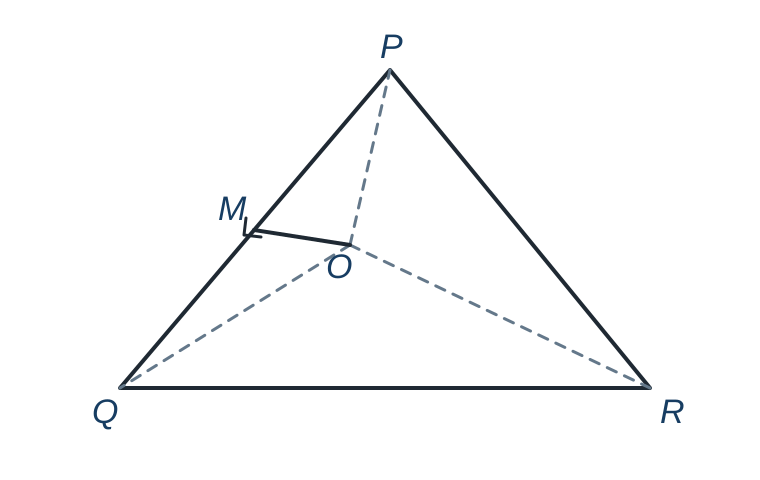
Framework / 解題框架
Recognize OP as the circumradius -> apply the extended sine rule -> disprove a non-general area claim with a coordinate counterexample -> apply the triangle-area circumradius identity.
中文詳解
第一眼訊號：\(OP=R\) 是外接圓半徑。
策略地圖：延伸正弦定理核對 I → 用坐標反例核對 II → 用 \(A=abc/(4R)\) 核對 III。
敘述 I：由延伸正弦定理，
所以
故 I 正確。
敘述 II：這個面積關係並非一般定理。取單位圓圓心
O 到弦 PQ 的垂足是其中點
因此
但三角形面積是
而
所以 II 錯誤。
敘述 III：標準面積公式為
而 \(R=OP\)，所以
故 III 正確。只有 I、III 正確，選 C。
English Solution
First-Look Signal: \(OP=R\) is the circumradius.
Strategy Map: Use the extended sine rule for I -> use a coordinate counterexample for II -> use \(A=abc/(4R)\) for III.
Statement I: by the extended sine rule,
Therefore,
so statement I is true.
Statement II: this area relation is not a general theorem. Take the unit circle with centre
The foot of the perpendicular from O to chord PQ is its midpoint
Hence
but the area of the triangle is
whereas
Therefore statement II is false.
Statement III: the standard area identity is
and \(R=OP\), so
Thus statement III is true. Only I and III are true, giving option C.
Final Answer / 最終答案
\(\boxed{\text{C. I and III only}}\)
把相近技巧連續教授；若第一步、依賴鏈或考核輸出不同，則保留為相鄰但不同的同型群。
Keep related techniques together while separating questions whose first move, dependency chain or assessed output differs.
identify angle-bisector or equal-side-distance conditions
Do not classify a question only by the centre name; follow the complete assessed chain.
Use this divider as a teaching checkpoint before starting the next question group.
設 \(O\) 為原點，\(A=(-10,0)\)、\(B=(0,b)\)，其中 \(b>0\)。\(\triangle OAB\) 的內心 \(G\) 位於直線 \(2x+8y-b=0\) 上。以下哪些敘述正確？
I. \(G=(-4,4)\)。
II. \(12x-5y+120=0\) 是 \(\triangle OAB\) 內切圓的切線。
III. \(b=24\)。
- A. 只有 I 及 II
- B. 只有 I 及 III
- C. 只有 II 及 III
- D. I、II 及 III
Let \(O\) be the origin, \(A=(-10,0)\) and \(B=(0,b)\), where \(b>0\). The in-centre \(G\) of \(\triangle OAB\) lies on \(2x+8y-b=0\). Which statements are true?
I. \(G=(-4,4)\).
II. \(12x-5y+120=0\) is tangent to the incircle of \(\triangle OAB\).
III. \(b=24\).
- A. I and II only
- B. I and III only
- C. II and III only
- D. I, II and III
Framework / 解題框架
Express the in-centre as \((-r,r)\), solve the right-triangle inradius condition, then test tangency by point-to-line distance.
中文詳解
設內切圓半徑為 \(r\)。因內心到兩坐標軸的距離都是 \(r\)，
代入 \(2x+8y-b=0\)：
所以
兩直角邊長為 \(10\) 和 \(b\)，斜邊長為 \(\sqrt{100+b^2}\)。直角三角形的內切圓半徑為
代入 \(r=b/6\)：
兩邊乘 \(2\) 並移項：
因 \(b>0\)，兩邊皆為正，可平方：
整理：
由 \(b>0\)，可除以 \(5b/9\)：
故
因此 I 及 III 正確。
再檢查直線 \(12x-5y+120=0\) 到圓心 \(G\) 的距離：
距離等於半徑 \(r=4\)，所以該直線確為切線，II 也正確。故選 D。
English Solution
Let the inradius be \(r\). Equal distances from the coordinate axes give
Substitute into \(2x+8y-b=0\):
so
The two perpendicular legs have lengths \(10\) and \(b\), and the hypotenuse is \(\sqrt{100+b^2}\). The right-triangle inradius formula is
Using \(r=b/6\),
Multiply both sides by \(2\) and rearrange:
Both sides are positive because \(b>0\), so square both sides:
Hence
Since \(b>0\), divide by \(5b/9\) to obtain
Therefore
Statements I and III are true. The distance from \(G\) to \(12x-5y+120=0\) is
Since the distance equals the inradius \(r=4\),
Therefore the line is tangent to the incircle, so statement II is also true. The answer is D.
Final Answer / 最終答案
答案 / Answer: D
把相近技巧連續教授；若第一步、依賴鏈或考核輸出不同，則保留為相鄰但不同的同型群。
Keep related techniques together while separating questions whose first move, dependency chain or assessed output differs.
identify an easy altitude
Do not classify a question only by the centre name; follow the complete assessed chain.
Use this divider as a teaching checkpoint before starting the next question group.
點 \(A\)、\(B\) 位於圓 \(x^2+y^2-15x-2ky=0\) 上，其中 \(k\) 為常數。已知 \(AB\) 的中點為 \((10,5)\)。設 \(O\) 為原點。若 \(\triangle OAB\) 的垂心為 \((5,2k)\)，求 \(\triangle OAB\) 的面積。
- A. \(65\)
- B. \(68\)
- C. \(72\)
- D. \(75\)
Points \(A\) and \(B\) lie on the circle \(x^2+y^2-15x-2ky=0\), where \(k\) is a constant. The midpoint of \(AB\) is \((10,5)\). Let \(O\) be the origin. If the orthocentre of \(\triangle OAB\) is \((5,2k)\), find the area of \(\triangle OAB\).
- A. \(65\)
- B. \(68\)
- C. \(72\)
- D. \(75\)
Framework / 解題框架
Read the given circle as the circumcircle through the origin, use the triangle-centre relation to find the parameter, then compute chord length and height.
中文詳解
把圓方程配方：
所以外心為
原點、\(A\)、\(B\) 都在同一圓上。對任何三角形，若把外心作為坐標參考，可得垂心坐標關係
本題 \(O=(0,0)\)，而 \(AB\) 中點為 \(M=(10,5)\)，故
因此
題目又給 \(H=(5,2k)\)，比較 \(y\) 坐標：
圓半徑平方為
外心和弦中點之間的距離平方為
外心到弦中點的線段垂直平分弦，所以半弦長滿足
因此
\(JM\) 的斜率是 \(1\)，所以弦 \(AB\) 的斜率是 \(-1\)。弦經過 \((10,5)\)，方程為
即
原點到弦的垂直距離是
所以三角形面積為
故選 D。
English Solution
Rewrite and complete the square:
Thus the circumcentre is
The origin, \(A\) and \(B\) lie on the same circle. Since the constant term is zero, the origin is on the circle, so this circle is the circumcircle of \(\triangle OAB\). For a triangle,
The origin is
The midpoint of \(AB\) is \(M=(10,5)\), so
Therefore,
Compare this with the given \(H=(5,2k)\):
so
The radius squared is
The squared distance from the circumcentre to the chord midpoint is
Since the perpendicular from the centre bisects a chord,
Hence
The slope of \(JM\) is \(1\), so the chord \(AB\), perpendicular to \(JM\), has slope \(-1\). Through the point \((10,5)\),
so its equation is
The perpendicular distance from the origin to \(AB\) is
Therefore
The correct option is D.
Final Answer / 最終答案
答案 / Answer: D
把相近技巧連續教授；若第一步、依賴鏈或考核輸出不同，則保留為相鄰但不同的同型群。
Keep related techniques together while separating questions whose first move, dependency chain or assessed output differs.
use incenter angle theorem
Do not classify a question only by the centre name; follow the complete assessed chain.
Use this divider as a teaching checkpoint before starting the next question group.
T 是 \(\triangle XYZ\) 的內心。若 \(\angle YTZ=180^\circ-\angle TXZ\)，下列哪項必然正確？
I. XYZ 是直角三角形。 II. \(\angle XYZ=45^\circ\)。 III. \(\triangle YTZ\) 是等腰三角形。
A. 只有 I B. 只有 II C. 只有 I、III D. 只有 II、III
T is the incentre of \(\triangle XYZ\). If \(\angle YTZ=180^\circ-\angle TXZ\), which statements must be true?
I. XYZ is right-angled. II. \(\angle XYZ=45^\circ\). III. \(\triangle YTZ\) is isosceles.
A. I only B. II only C. I and III only D. II and III only
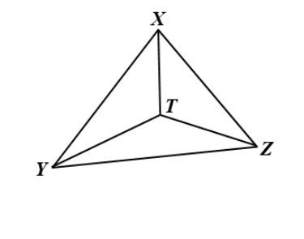
Framework / 解題框架
先把 TXZ 寫成 X/2，再與內心角公式聯立。
中文詳解
**第一眼訊號 / First-Look Signal：** 題目同時出現內心 \(T\) 及 \(\angle YTZ\)。先使用內心角定理，再把題目給出的等式聯立；不要先假設三角形是等腰或等邊。
**策略地圖 / Strategy Map：**
- 設 \(X=\angle YXZ\)，由角平分線得到 \(\angle TXZ=X/2\)。
- 以內心角定理寫出 \(\angle YTZ=90^\circ+X/2\)，再解出 \(X\)。
- 逐項檢查 II、III 是否由已知條件必然推出；「可以成立」不等於「必然成立」。
設 \(X=\angle YXZ\)。因 XT 平分 X，
內心角定理給
由題意
因此 \(\triangle XYZ\) 必為直角三角形，I 正確。設 \(Y=\angle XYZ\)、\(Z=\angle XZY\)，三角形內角和只給
這並不要求 \(Y=Z=45^\circ\)，所以 II 不必成立。又因 TY、TZ 分別平分 Y、Z，\(\triangle YTZ\) 的兩個底角為 \(Y/2\) 及 \(Z/2\)；它們只有在 \(Y=Z\) 時才相等，因此 III 也不必成立。
**反例核對：** 取 \(X=90^\circ\)、\(Y=30^\circ\)、\(Z=60^\circ\)。此時
題目條件確實成立，但 \(Y\ne45^\circ\)，而 \(\triangle YTZ\) 的底角為 \(15^\circ\) 和 \(30^\circ\)，不是等腰三角形。
**陰濕位 / Common Trap：** 由 \(X=90^\circ\) 只能得到 \(Y+Z=90^\circ\)，不能把總和誤當成兩角相等；同樣，內心角定理只決定 T 角，不能直接推出 \(\triangle YTZ\) 等腰。
English Solution
**First-Look Signal / 第一眼訊號：** The presence of the incentre \(T\) and \(\angle YTZ\) signals the incentre angle theorem. Set up that theorem first and then use the given equation; do not assume an isosceles or equilateral triangle.
**Strategy Map / 策略地圖：**
- Let \(X=\angle YXZ\); the angle bisector gives \(\angle TXZ=X/2\).
- Use the incentre angle theorem to write \(\angle YTZ=90^\circ+X/2\), then solve for \(X\).
- Test II and III separately. A statement that can occur is not necessarily forced by the data.
Let \(X=\angle YXZ\). Since XT bisects angle X,
The incentre angle theorem gives
Using the given condition,
Therefore \(\triangle XYZ\) is necessarily right-angled, so I is true. Let \(Y=\angle XYZ\) and \(Z=\angle XZY\). The triangle angle sum gives only
This does not require \(Y=Z=45^\circ\), so II is not necessarily true. Since TY and TZ bisect angles Y and Z, the two base angles of \(\triangle YTZ\) are \(Y/2\) and \(Z/2\). They are equal only when \(Y=Z\), so III is not necessarily true either.
**Counterexample check:** Take \(X=90^\circ\), \(Y=30^\circ\), and \(Z=60^\circ\). Then
Thus the given condition holds, but \(Y\ne45^\circ\), and the base angles of \(\triangle YTZ\) are \(15^\circ\) and \(30^\circ\), so it is not isosceles.
**Common Trap / 陰濕位：** From \(X=90^\circ\) we may conclude only \(Y+Z=90^\circ\), not that the two angles are equal. Likewise, the incentre theorem fixes the angle at T but does not by itself make \(\triangle YTZ\) isosceles.
Final Answer / 最終答案
\(\boxed{\text{A. I only}}\)
先準確取得頂點坐標，再以距離、垂直及中點條件判斷四心。
Turn every transformed graph into coordinates before applying centre definitions.
Complete the square and write the vertex in a separate line.
A valid algebraic root may still make the triangle degenerate or violate an unsquared sign condition.
Use this divider as a teaching checkpoint before starting the next question group.
把相近技巧連續教授；若第一步、依賴鏈或考核輸出不同，則保留為相鄰但不同的同型群。
Keep related techniques together while separating questions whose first move, dependency chain or assessed output differs.
in-centre angle theorem
Do not classify a question only by the centre name; follow the complete assessed chain.
Use this divider as a teaching checkpoint before starting the next question group.
設 \(O\) 為原點，\(A=(-a,0)\) 及 \(B=(-b,-6)\)，其中 \(a,b\) 為正數。設 \(I\) 為 \(\triangle OAB\) 的內心。若
求 \((a-b)^2\)。
- A. \(4\)
- B. \(12\)
- C. \(36\)
- D. \(108\)
Let \(O\) be the origin. The coordinates of \(A\) and \(B\) are \((-a,0)\) and \((-b,-6)\), where \(a,b\) are positive. Let \(I\) be the in-centre of \(\triangle OAB\). If
find \((a-b)^2\).
- A. \(4\)
- B. \(12\)
- C. \(36\)
- D. \(108\)
Framework / 解題框架
Use the in-centre angle theorem first, then translate the resulting vertex angle into a tangent ratio.
中文詳解
設 \(\angle OAB=\theta\)。內心性質給出
代入題設：
因此
由 \(A=(-a,0)\) 望向 \(B=(-b,-6)\)，水平改變為 \(a-b\)，垂直距離為 \(6\)。因 \(AO\) 沿正 \(x\) 方向，而 \(\theta=30^\circ\) 是銳角，所以 \(AB\) 也必須向右，即 \(a-b>0\)。因此
所以
English Solution
Let \(\angle OAB=\theta\). The in-centre angle theorem gives
Hence
Therefore
From \(A=(-a,0)\) to \(B=(-b,-6)\), the horizontal change is \(a-b\), while the vertical distance is \(6\). Since \(AO\) points along the positive \(x\)-axis and \(\theta=30^\circ\) is acute, \(AB\) must also point to the right. Thus \(a-b>0\), and hence
Final Answer / 最終答案
答案 / Answer: D. \(108\)
\(A=(a,0)\)、\(B=(b,9)\)，O 為原點，而 \(a>0\)。I 是 \(\triangle OAB\) 的內心。若
則 \(a-b\) 是：
A. \(9/2\)
B. \(3\sqrt3\)
C. \(9\)
D. \(9\sqrt3\)
\(A=(a,0)\), \(B=(b,9)\), and O is the origin, where \(a>0\). I is the incentre of \(\triangle OAB\). If
then \(a-b\) is:
A. \(9/2\)
B. \(3\sqrt3\)
C. \(9\)
D. \(9\sqrt3\)
Framework / 解題框架
內心角定理 → 解頂角 → 由斜率或正切求水平差。
中文詳解
第一眼訊號：內心角 \(\angle OIB=90^\circ+\frac{1}{2}\angle OAB\)。
策略地圖：設 \(\angle OAB=\theta\) → 解 θ → 用 AB 相對負 x 方向的斜率求 \(a-b\)。
完整詳解 / Complete Worked Solution
設 \(\angle OAB=\theta\)。內心角定理給出
題設為 \(2\theta\)，所以
由 A 指向 O 是向左的水平線，而 B 的高度為 9，因此
故選 B。
陰濕位：內心角公式是 \(90^\circ+\frac{1}{2}\)「第三個頂角」，本題第三個頂角正是 A 角。
English Solution
First-Look Signal: The incenter theorem gives \(\angle OIB=90^\circ+\frac{1}{2}\angle OAB\).
Strategy Map: Let \(\angle OAB=\theta\) → solve the angle → use the vertical rise 9 and horizontal run \(a-b\).
Complete Worked Solution / 完整詳解
Let \(\angle OAB=\theta\). The in-centre angle theorem gives
The question states that this angle equals \(2\theta\), so
From A to B, use the given vertical rise and the horizontal difference in the direction of the leftward ray AO. Therefore
The answer is B.
Common Trap: The in-centre formula is \(90^\circ+\frac{1}{2}\) of the third vertex angle; here that third vertex is A.
Final Answer / 最終答案
\(\boxed{\text{B. }3\sqrt3}\)
把相近技巧連續教授；若第一步、依賴鏈或考核輸出不同，則保留為相鄰但不同的同型群。
Keep related techniques together while separating questions whose first move, dependency chain or assessed output differs.
圓心及半徑
Do not classify a question only by the centre name; follow the complete assessed chain.
Use this divider as a teaching checkpoint before starting the next question group.
直線 \(y=mx\) 與圓 \(x^2+y^2-6x+2y+6=0\) 相交於 \(P,Q\)，其中 \(m<0\)。圓在 \(P,Q\) 的切線互相垂直並相交於 \(R\)。下列哪些敘述正確？
I. \(m=-\frac{1}{7}\)
II. \(R=(1,-3)\)
III. \(\triangle PQR\) 的外心為 \((2,-2)\)
- A. I only
- B. II only
- C. II and III only
- D. I, II and III
The straight line \(y=mx\) and the circle \(x^2+y^2-6x+2y+6=0\) intersect at \(P\) and \(Q\), where \(m<0\). The tangents to the circle at \(P\) and \(Q\) are perpendicular and meet at \(R\). Which of the following statements are true?
I. \(m=-\frac{1}{7}\)
II. The coordinates of \(R\) are \((1,-3)\).
III. The coordinates of the circumcentre of \(\triangle PQR\) are \((2,-2)\).
- A. I only
- B. II only
- C. II and III only
- D. I, II and III
Framework / 解題框架
Translate the centre definition into a coordinate condition, preserve the key algebraic steps, and compare with the options.
中文詳解
圓可寫成
故圓心為 \(C=(3,-1)\)，半徑為 2。因 \(\angle PCQ=90^\circ\)，圓心到弦 \(PQ\) 的距離為 \(2\cos45^\circ=\sqrt2\)。直線 \(mx-y=0\) 到 \(C\) 的距離給出
平方及展開：
由 \(m<0\)，得 \(m=-1\)，所以 I 錯。
把 \(y=-x\) 代入圓：
故可取 \(P=(1,-1)\)、\(Q=(3,-3)\)。在 \(P\) 的半徑水平，切線為 \(x=1\)；在 \(Q\) 的半徑垂直，切線為 \(y=-3\)。因此 \(R=(1,-3)\)，II 正確。
\(\triangle PQR\) 在 \(R\) 為直角，其外心是斜邊 \(PQ\) 的中點：
所以 III 也正確。
English Solution
The circle is
with centre \(C=(3,-1)\) and radius 2. Since \(\angle PCQ=90^\circ\), the distance from \(C\) to chord \(PQ\) is \(2\cos45^\circ=\sqrt2\). The distance from \(C\) to the line \(mx-y=0\) therefore gives
Squaring and expanding:
Since \(m<0\), \(m=-1\), so statement I is false.
Substituting \(y=-x\) into the circle gives
Thus we may take \(P=(1,-1)\) and \(Q=(3,-3)\). At \(P\), the radius is horizontal, so the tangent is \(x=1\); at \(Q\), the radius is vertical, so the tangent is \(y=-3\). Hence \(R=(1,-3)\). Statement II is true.
Triangle \(PQR\) is right-angled at \(R\), so its circumcentre is the midpoint of hypotenuse \(PQ\):
Statement III is also true.
Final Answer / 最終答案
答案 / Answer: C
把相近技巧連續教授；若第一步、依賴鏈或考核輸出不同，則保留為相鄰但不同的同型群。
Keep related techniques together while separating questions whose first move, dependency chain or assessed output differs.
incentre halves exterior-triangle angles
Do not classify a question only by the centre name; follow the complete assessed chain.
Use this divider as a teaching checkpoint before starting the next question group.
在圖中，PQS 是一圓。PQ 延長至 R，RS 是圓在 S 的切線。I 是 \(\triangle QRS\) 的內心。若 \(\angle IRQ=12^\circ\)、\(\angle PSQ=70^\circ\)，求 \(\angle QPS\)。
A. \(24^\circ\) B. \(37^\circ\) C. \(43^\circ\) D. \(62^\circ\)
PQS is a circle. PQ is produced to R and RS is tangent at S. I is the incentre of \(\triangle QRS\). If \(\angle IRQ=12^\circ\) and \(\angle PSQ=70^\circ\), find \(\angle QPS\).
A. \(24^\circ\) B. \(37^\circ\) C. \(43^\circ\) D. \(62^\circ\)
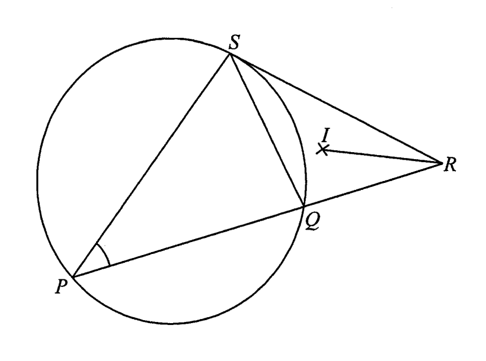
Framework / 解題框架
設 \(x=\angle QPS\)，把三角形 QRS 的三角寫成 x。
中文詳解
**第一眼訊號 / First-Look Signal：** 題目給出內心線段 \(RI\)、切線 \(RS\) 及圓內接角。先把 \(12^\circ\) 還原為 R 角的一半，再用三角形角和及切線弦角定理。
**策略地圖 / Strategy Map：**
- 設 \(x=\angle QPS\)，由內心角平分線求 \(\angle QRS\)。
- 在 \(\triangle PQS\) 求 \(\angle PQS\)，再利用 P、Q、R 共線取得 \(\angle SQR\)。
- 在 \(\triangle QRS\) 求 \(\angle QSR\)，最後用切線弦角定理與 \(x\) 聯立。
設 \(x=\angle QPS\)。I 是內心，所以 RI 平分 \(\angle QRS\)：
在 \(\triangle PQS\) 中，
P、Q、R 共線，故
在 \(\triangle QRS\) 中，
由切線弦角定理，\(\angle QSR=\angle QPS=x\)，所以
**陰濕位 / Common Trap：** \(12^\circ\) 是 \(\angle IRQ\)（R 角的一半），不是整個 \(\angle QRS\)；另外，P、Q、R 共線時要使用補角關係，不能直接把 \(\angle PQS\) 當成 \(\angle SQR\)。
English Solution
**First-Look Signal / 第一眼訊號：** The given \(12^\circ\) is the angle between the incentre segment \(RI\) and \(RQ\), so it is half the angle at R. Then use triangle angle sums and the tangent-chord theorem.
**Strategy Map / 策略地圖：**
- Let \(x=\angle QPS\), and use the angle bisector at R to find \(\angle QRS\).
- Use \(\triangle PQS\) and the collinearity of P, Q and R to find \(\angle SQR\).
- Use the angle sum of \(\triangle QRS\), then equate \(\angle QSR\) to \(x\) by the tangent-chord theorem.
Let \(x=\angle QPS\). Since RI bisects \(\angle QRS\),
The given angle is only half the angle at R, because RI is an angle bisector. Therefore
In \(\triangle PQS\),
As P, Q and R are collinear,
Now use the angle sum in \(\triangle QRS\):
By the tangent-chord theorem,
Therefore
**Common Trap / 陰濕位：** Do not use \(12^\circ\) as the whole angle at R: it is \(\angle IRQ\), the angle between RQ and the angle bisector RI. Also, because P, Q and R are collinear, \(\angle SQR\) is the supplement of \(\angle PQS\), not the same angle.
Final Answer / 最終答案
\(\boxed{\text{C. }43^\circ}\)
ABCD 是一圓，DF 是圓在 D 的切線，A、B、F 共線。G 是 \(\triangle ABC\) 的內心，且 G 在 BD 上。已知 \(\angle ACB=36^\circ\)、\(\angle AFD=44^\circ\)，求 \(\angle CBD\)。
A. \(42^\circ\) B. \(46^\circ\) C. \(50^\circ\) D. \(54^\circ\)
ABCD is a circle, DF is tangent at D, and A, B and F are collinear. G is the incentre of \(\triangle ABC\) and lies on BD. Given \(\angle ACB=36^\circ\) and \(\angle AFD=44^\circ\), find \(\angle CBD\).
A. \(42^\circ\) B. \(46^\circ\) C. \(50^\circ\) D. \(54^\circ\)
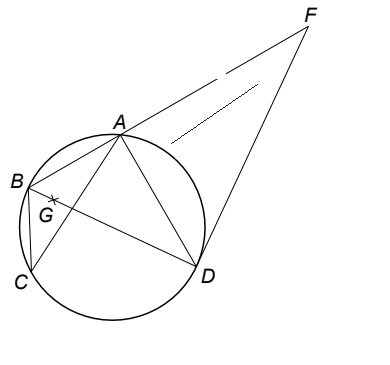
Framework / 解題框架
設 \(x=\angle CBD\)，用 BD 是 B 的角平分線。
中文詳解
設 \(x=\angle CBD\)。因 G 是內心且 B、G、D 共線，BD 平分 \(\angle ABC\)，所以
在 \(\triangle ABC\) 中，
由同弧 CD，\(\angle CAD=\angle CBD=x\)。因此
A、B、F 共線，所以
由切線弦角定理，切線 DF 與弦 DA 的夾角
在 \(\triangle ADF\) 中，
陰濕位：原圖的 A、B、F 共線條件及「G 在 BD」都要使用；忽略其中一項會得到錯誤選項。
English Solution
First-Look Signal: G is the incentre and lies on BD, so BD bisects the angle at B.
Let \(x=\angle CBD\). Since B, G and D are collinear,
In \(\triangle ABC\),
Angles subtending chord CD are equal, so
Thus
Because A, B and F are collinear,
By the tangent-chord theorem,
Now use the angle sum in \(\triangle ADF\):
Common Trap: Both collinearity statements are necessary: A, B, F determine \(\angle FAD\), while B, G, D identifies the angle bisector.
Final Answer / 最終答案
\(\boxed{\text{C. }50^\circ}\)
把相近技巧連續教授；若第一步、依賴鏈或考核輸出不同，則保留為相鄰但不同的同型群。
Keep related techniques together while separating questions whose first move, dependency chain or assessed output differs.
construct two perpendicular bisectors
Do not classify a question only by the centre name; follow the complete assessed chain.
Use this divider as a teaching checkpoint before starting the next question group.
在直角坐標平面上，\(P=(-4,5)\)、\(Q=(4,11)\) 及 \(R\) 為三點。已知線段 \(QR\) 的垂直平分線方程為 \(3x-4y+7=0\)。圓 \(C\) 通過 \(P,Q,R\)，其圓心為 \(G\)。
(a)求 \(G\) 的坐標。
(b)點 \(S\) 在 \(C\) 上，且 \(PQRS\) 為平行四邊形。
(b)(i)求 \(S\) 的坐標。
(b)(ii)\(PQRS\) 是否必定為正方形？解釋你的答案。（7 分）
In a rectangular coordinate plane, \(P=(-4,5)\), \(Q=(4,11)\) and \(R\) are three points. The perpendicular bisector of \(QR\) is \(3x-4y+7=0\). The circle \(C\) passes through \(P,Q,R\), and its centre is \(G\).
(a)Find the coordinates of \(G\).
(b)Point \(S\) lies on \(C\) and \(PQRS\) is a parallelogram.
(b)(i)Find the coordinates of \(S\).
(b)(ii)Must \(PQRS\) be a square? Explain your answer. (7 marks)
Framework / 解題框架
中垂線求外心 → 對角線中點求第四點 → 垂直及等長檢查正方形。 Find the circumcentre → use diagonal midpoints → test perpendicular and equal adjacent sides.
中文詳解
完整詳解 / Complete Worked Solution
（a）\(PQ\) 的中點為 \((0,8)\)，而
故 \(PQ\) 的中垂線斜率為 \(-4/3\)，方程為
聯立 \(4x+3y-24=0\) 及 \(3x-4y+7=0\)，得
第一式乘 4，第二式乘 3，得
相加得 \(25x=75\)，所以 \(x=3\)；代回第一式得 \(y=4\)。因此 \(G=(3,4)\)。
（b）（i）圓內接平行四邊形是矩形，所以其對角線相交點亦為外接圓圓心。故 \(G\) 是 \(QS\) 的中點。設 \(S=(x,y)\)，則
因此 \(S=(2,-3)\)。
（ii）
兩斜率的乘積是 \(-1\)，所以 \(PQ\perp PS\)。此外
故 \(PQ=PS=10\)。平行四邊形有一個直角且相鄰邊等長，因此 \(PQRS\) 必定為正方形。
English Solution
Complete Worked Solution / 完整詳解
(a)The midpoint of \(PQ\) is \((0,8)\), and \(m_{PQ}=3/4\). Hence the perpendicular bisector of \(PQ\) is
Solve it with \(3x-4y+7=0\):
Multiplying the equations by 4 and 3 gives \(16x+12y=96\) and \(9x-12y=-21\). Adding them gives \(25x=75\), so \(x=3\). Substitution gives \(y=4\). Hence \(G=(3,4)\).
(b)(i) A cyclic parallelogram is a rectangle, so the intersection of its diagonals is the circumcentre. Thus \(G\) is the midpoint of \(QS\). If \(S=(x,y)\),
so \(S=(2,-3)\).
(b)(ii)
Their slopes have product \(-1\), so \(PQ\perp PS\). Also,
Thus \(PQ=PS=10\). The parallelogram has a right angle and equal adjacent sides. Therefore it must be a square.
Final Answer / 最終答案
（a）\(G=(3,4)\)。
（b）（i）\(S=(2,-3)\)。（ii）是 / Yes, \(PQRS\) must be a square.
把等距條件轉成直線或拋物線軌跡，再重用於垂心或內心計算。
Convert equal-distance wording into a line or parabola, then reuse the locus in a centre calculation.
Decide whether the equal distances are from two points, two lines, or a point and a line.
The perpendicular bisector and the angle bisector are different loci; identify the two objects being compared.
Use this divider as a teaching checkpoint before starting the next question group.
設 a,b 為正的常數。直線
與 x 軸、y 軸分別相交於 A,B。設 O 為原點，I 為三角形 OAB 的內心。已知 I 在直線
上。
(a)以 a 表示 I 的坐標。
(b)證明
(c)設 P 為 L 上與 I 距離最短的點。已知 P 的 x 坐標是 50。有人聲稱 P 與三角形 OAB 的外心距離大於 45。你是否同意？解釋。
Let a and b be positive constants. The line
cuts the x-axis and y-axis at A and B respectively. O is the origin and I is the incentre of triangle OAB. It is given that I lies on
(a)Express the coordinates of I in terms of a.
(b)Show that
(c)P is the point on L nearest to I. The x-coordinate of P is 50. Someone claims that the distance from P to the circumcentre of triangle OAB is greater than 45. Do you agree? Explain.
Framework / 解題框架
截距 → 直角角平分線 → 到三邊等距 → 垂足分比 → 斜邊中點。
中文詳解
第一眼訊號：直線的截距是
因此 OAB 是直角三角形，OI 是直角的角平分線。
策略地圖：用角平分線求 I → 以內心到三邊等距求 a:b → 以垂足在斜邊的分比求 P → 以斜邊中點找外心。
完整詳解 / Complete Worked Solution
（a）直角的內角平分線為
與已知直線聯立：
故
（b）I 到兩坐標軸的距離均為 2a/5。I 是內心，所以 I 到 L 的距離亦為 2a/5：
約去正數 a/5，並平方：
因 b 為正數，
（c）由（b），
P 是內心到 AB 的垂足。等切線長給出
所以
直角三角形的外心是斜邊 AB 的中點：
我同意該聲稱。
陰濕位：在角平分線上只處理兩條直角邊；第（b）必須再使用內心到 AB 的距離。
English Solution
First-Look Signal: The x-intercept is a and the y-intercept is b. Triangle OAB is right-angled, so its internal bisector at O has equal x- and y-coordinates.
Strategy Map: Find I from the bisector → use equal distances from the three sides → use the foot division on AB → use the midpoint of the hypotenuse.
Complete Worked Solution / 完整詳解
(a)Solving y=x with the given line gives
(b)The distance from I to L equals the distance to either axis:
This gives
Since b is positive,
(c)Equal tangent lengths at the incircle give
Thus
so
The circumcentre is the midpoint of AB:
The claim is correct.
Additional expansion and checking steps:
Final Answer / 最終答案
（a）
（b）
（c）同意；距離為
先由半徑垂直切線入手，再建立等腰三角形。
Use radius-perpendicular-tangent before building the isosceles triangle.
Locate the radius to the stated tangent point.
The original circle centre is not the incentre of the tangent triangle.
Use this divider as a teaching checkpoint before starting the next question group.
把相近技巧連續教授；若第一步、依賴鏈或考核輸出不同，則保留為相鄰但不同的同型群。
Keep related techniques together while separating questions whose first move, dependency chain or assessed output differs.
equal point-line distance
Do not classify a question only by the centre name; follow the complete assessed chain.
Use this divider as a teaching checkpoint before starting the next question group.
點 \(A=(5,-8)\)，直線 \(L\) 的方程為 \(y=8\)。動點 \(P\) 到 \(L\) 的垂直距離等於 \(PA\)，其軌跡記為 \(\Gamma\)。點 \(U\) 在 \(\Gamma\) 上，點 \(B\) 在 \(L\) 上，且 \(UA\perp AB\)。由 \(U\) 向 \(L\) 作垂線，垂足為 \(C\)。
(a)說明 \(UB\) 與 \(\angle ABC\) 的幾何關係。
(b)證明 \(\Gamma\) 的方程為
(c)若 \(B\) 與 \(U\) 的 x 坐標分別為 \(b\) 及 \(u\)，證明
(d)已知 \(B=(-7,8)\)、\(F=(35,8)\)。利用 (c) 求：
(d)(i)\(\angle ABF\) 的內角平分線方程；
(d)(ii)\(\triangle ABF\) 的內心坐標。
The point \(A=(5,-8)\), and the line \(L\) is \(y=8\). A moving point \(P\) is equidistant from \(A\) and \(L\); its locus is \(\Gamma\). Point \(U\) lies on \(\Gamma\), point \(B\) lies on \(L\), and \(UA\perp AB\). The perpendicular from \(U\) to \(L\) meets \(L\) at \(C\).
(a)Describe the geometric relationship between \(UB\) and \(\angle ABC\).
(b)Prove that
(c)The x-coordinates of \(B\) and \(U\) are \(b\) and \(u\) respectively. Prove that
(d)Given \(B=(-7,8)\) and \(F=(35,8)\), use (c) to find:
(d)(i)the internal angle bisector of \(\angle ABF\);
(d)(ii)the incentre of \(\triangle ABF\).
Framework / 解題框架
先用等距建立軌跡，再把 \(UA\perp AB\) 寫成斜率條件；最後選內角平分線。
中文詳解
第一眼訊號：\(P\) 到定點及定直線等距，先寫「距離平方相等」；而角平分線可由「到兩邊等距」辨認。
策略地圖：點線等距 → 軌跡 → 垂直斜率 → 代入軌跡 → 選內角平分線 → 求內心。
- 因 \(U\in\Gamma\)，所以 \(UA=UC\)。又 \(UA\perp AB\)、\(UC\perp BC\)，故直角三角形 \(\triangle UAB\) 與 \(\triangle UCB\) 有共同斜邊 \(UB\) 及相等直角邊 \(UA=UC\)。兩三角形全等，因此
所以 \(UB\) 是 \(\angle ABC\) 的角平分線。
- 設 \(P=(x,y)\)。由題意，
展開兩邊：
消去 \(64\) 及 \(y^2\)：
故
- \(B=(b,8)\)，所以
由 \(UA\perp AB\)，
因此直線 \(AU\) 為
把 \(y=-\frac{1}{32}(x-5)^2\) 及 \(x=u\) 代入：
乘以 32 並移項：
展開：
所以
- 代入 \(b=-7\)：
故 \(u=13\) 或 \(-27\)。當 \(u=13\) 時，\(U=(13,-2)\)，而 \(BU\) 位於 \(\angle ABF\) 內；\(u=-27\) 對應外角平分線，須排除。因此
即
再計算三邊：
用內心的邊長加權公式，
陰濕位：方程的兩個根分別給內、外角平分線，不能兩個都當作內心所在直線。
English Solution
First-Look Signal: Equal distances from a point and a line give the locus equation. Equal perpendicular distances from the two sides of an angle identify an angle bisector.
Strategy Map: Equate distances → derive the parabola → use perpendicular slopes → substitute → select the internal bisector → find the incentre.
(a)Since \(U\in\Gamma\), \(UA=UC\). Also, \(UA\perp AB\) and \(UC\perp BC\). The right triangles \(UAB\) and \(UCB\) have common hypotenuse \(UB\) and equal legs \(UA=UC\), so they are congruent. Hence
and \(UB\) bisects \(\angle ABC\).
(b)For \(P=(x,y)\),
Expanding and cancelling common terms gives
so
(c)Since \(B=(b,8)\), \(m_{AB}=\frac{8-(-8)}{b-5}=\frac{16}{b-5}.\). Therefore \(m_{AU}=\frac{5-b}{16}.\), and
Substituting the locus equation and \(x=u\),
On expanding,
(d)With \(b=-7\),
The root \(u=13\) gives the internal bisector; \(-27\) gives the external one. The corresponding point is \(U=(13,-2)\). Hence
or
Also, \(AB=20,\;\; AF=34,\;\; BF=42.\). Therefore
Additional expansion and checking steps:
\(UA\perp AB\)
\(y=-\frac{1}{32}(x-5)^2\)
\(u=13\)
\(u=-27\)
Final Answer / 最終答案
- (a) \(UB\) is the angle bisector of \(\angle ABC\) / \(UB\) 是 \(\angle ABC\) 的角平分線。
- \(\displaystyle y=-\frac{1}{32}(x-5)^2\).
- \(\displaystyle u^2-2bu+10b-281=0\).
(d)(i) \(\boxed{x+2y-9=0}\); (ii) \(\boxed{I=(7,1)}\).
先用半徑垂直切線的結構，再處理角平分線、內心及外心。
Use radius-perpendicular-tangent relationships before starting coordinate elimination.
Complete the square and mark the centre and radius.
A vertical chord or tangent condition must be copied exactly; changing one letter changes the whole triangle.
Use this divider as a teaching checkpoint before starting the next question group.
點 \(A=(5,-8)\)，直線 \(L\) 為 \(y=8\)。動點 \(P\) 到 \(L\) 的垂直距離等於 \(PA\)，其軌跡記為 \(\Gamma\)。點 \(U\) 在 \(\Gamma\) 上，點 \(B\) 在 \(L\) 上，且 \(UA\perp AB\)。\(C\) 為 \(U\) 到 \(L\) 的垂足。
(a)描述 \(UB\) 與 \(\angle ABC\) 的幾何關係。（1 分）
(b)證明 \(\Gamma\) 的方程為 \(y=-\dfrac1{32}(x-5)^2\)。（2 分）
(c)設 \(B,U\) 的 \(x\) 坐標分別為 \(b,u\)。證明
（3 分）
(d)\(B=(-7,8)\)、\(F=(35,8)\)。利用（c）的結果，求
(d)(i)\(\angle ABF\) 的角平分線方程；
(d)(ii)\(\triangle ABF\) 的內心坐標。（6 分）
Let \(A=(5,-8)\) and let \(L\) be \(y=8\). A moving point \(P\) has equal distance from \(A\) and the line \(L\); its locus is \(\Gamma\). Point \(U\) lies on \(\Gamma\), point \(B\) lies on \(L\), and \(UA\perp AB\). \(C\) is the foot of the perpendicular from \(U\) to \(L\).
(a)Describe the geometric relationship between \(UB\) and \(\angle ABC\). (1 mark)
(b)Prove that \(\Gamma\) is \(y=-\dfrac1{32}(x-5)^2\). (2 marks)
(c)Let the \(x\)-coordinates of \(B,U\) be \(b,u\). Prove that
(3 marks)
(d)The points are \(B=(-7,8)\) and \(F=(35,8)\). Using part (c), find
(d)(i)the equation of the angle bisector of \(\angle ABF\);
(d)(ii)the coordinates of the incentre of \(\triangle ABF\). (6 marks)
Framework / 解題框架
點線等距軌跡 → 角平分線性質 → 參數關係 → 兩條角平分線相交。 Point-line equidistance → angle-bisector property → parameter relation → intersect two angle bisectors.
中文詳解
完整詳解 / Complete Worked Solution
（a）因 \(U\in\Gamma\)，\(UA=UC\)。又 \(UA\perp AB\)、\(UC\perp BC\)，所以 \(U\) 到直線 \(BA,BC\) 的距離相等。由角平分線性質的逆定理，\(UB\) 平分 \(\angle ABC\)。
（b）設 \(P=(x,y)\)。由點到直線距離等於 \(PA\)，
兩邊展開並消去 \(y^2\)：
所以
即 \(y=-\frac1{32}(x-5)^2\)。
（c）\(m_{BA}=16/(b-5)\)，而 \(AU\perp AB\)，故 \(AU\) 的方程為
把 \(U=(u,-(u-5)^2/32)\) 代入，得
兩邊乘 32，然後把所有項移到左邊：
逐項展開：
因此所求關係為
（d）（i）令 \(b=-7\)：
因 \(u^2+14u-351=(u-13)(u+27)\)，得 \(u=13\) 或 \(-27\)。內角平分線位於三角形內部的一支，故取 \(u=13\)。代入拋物線得
所以 \(U=(13,-2)\)，而
即 \(y=-\frac{1}{2}x+\frac{9}{2}\)。
（ii）對頂點 \(F\)，令 \(b=35\)：
內角平分線的一支給 \(u=1\)，且
故這條角平分線通過 \(F=(35,8)\) 及 \(U=(1,-1/2)\)，斜率為
其方程為
聯立兩條內角平分線：
乘 4 得 \(-2x+18=x-3\)，所以 \(x=7\)，再代入得 \(y=1\)。內心為
English Solution
Complete Worked Solution / 完整詳解
(a)Since \(U\in\Gamma\), \(UA=UC\). As \(UA\perp AB\) and \(UC\perp BC\), \(U\) is equidistant from the lines \(BA,BC\). Therefore \(UB\) bisects \(\angle ABC\).
(b)For \(P=(x,y)\),
Expand both sides:
After cancelling \(y^2\),
so \(y=-\frac1{32}(x-5)^2\).
(c)Since \(m_{BA}=16/(b-5)\) and \(AU\perp AB\),
Substituting \(U=(u,-(u-5)^2/32)\) gives
Multiply by 32 and expand:
Therefore
(d)(i) Put \(b=-7\). Then
The internal-bisector point uses \(u=13\), and the parabola gives \(y_U=-2\). Hence \(U=(13,-2)\), and
or \(y=-\frac{1}{2}x+\frac{9}{2}\).
(d)(ii) For the angle at \(F\), put \(b=35\):
The internal branch uses \(u=1\), giving \(U=(1,-1/2)\). The slope from \(F=(35,8)\) to \(U\) is \(1/4\), so
Equating the two angle-bisector equations gives
and multiplying by 4 gives
and then \(y=1\). The two internal angle bisectors intersect at
Final Answer / 最終答案
（a）\(UB\) 平分 \(\angle ABC\) / \(UB\) bisects \(\angle ABC\)。
（b）\(y=-\dfrac1{32}(x-5)^2\)。
（c）\(u^2-2bu+10b-281=0\)。
（d）（i）\(y=-\dfrac12x+\dfrac92\)。（ii）\(I=(7,1)\)。
把相近技巧連續教授；若第一步、依賴鏈或考核輸出不同，則保留為相鄰但不同的同型群。
Keep related techniques together while separating questions whose first move, dependency chain or assessed output differs.
identify and derive the perpendicular-bisector locus
Do not classify a question only by the centre name; follow the complete assessed chain.
Use this divider as a teaching checkpoint before starting the next question group.
點 \(A=(2,8)\) 及 \(B=(10,2)\)。動點 \(P\) 滿足 \(PA=PB\)，其軌跡記為 \(\Gamma\)。
(a)描述 \(\Gamma\) 與 \(AB\) 的幾何關係。（1 分）
(b)求 \(\Gamma\) 的方程。（2 分）
(c)直線 \(L\) 通過 \(A,B\)，並與 \(x\) 軸相交於 \(M\)；\(\Gamma\) 與 \(y\) 軸相交於 \(N\)。求 \(\triangle AMN\) 的垂心坐標。（4 分）
The points are \(A=(2,8)\) and \(B=(10,2)\). A moving point \(P\) satisfies \(PA=PB\), and its locus is denoted by \(\Gamma\).
(a)Describe the geometric relationship between \(\Gamma\) and \(AB\). (1 mark)
(b)Find the equation of \(\Gamma\). (2 marks)
(c)The line \(L\) passes through \(A,B\) and meets the \(x\)-axis at \(M\). The locus \(\Gamma\) meets the \(y\)-axis at \(N\). Find the coordinates of the orthocentre of \(\triangle AMN\). (4 marks)
Framework / 解題框架
等距軌跡 → 截距 → 一條高與軌跡相交求垂心。 Equal-distance locus → intercepts → intersect one altitude with the locus.
中文詳解
完整詳解 / Complete Worked Solution
（a）\(\Gamma\) 是 \(AB\) 的垂直平分線。
（b）\(AB\) 的中點為 \((6,5)\)，且 \(m_{AB}=-3/4\)，所以 \(m_{\Gamma}=4/3\)。
即
（c）直線 \(AB\) 為 \(y-2=-\frac{3}{4}(x-10)\)。令 \(y=0\)，得
令 \(x=0\) 代入 \(\Gamma\)，得 \(N=(0,-3)\)。因 \(\Gamma\perp AM\) 且通過 \(N\)，\(\Gamma\) 就是由 \(N\) 作出的高。
故由 \(A\) 作出的高斜率為 \(-38/9\)。設垂心為
由 \(AH\perp MN\)，
中間化簡如下：
所以 \(x=7/2\)，再代入 \(y=(4x-9)/3\)，得 \(y=5/3\)。
English Solution
Complete Worked Solution / 完整詳解
(a)\(\Gamma\) is the perpendicular bisector of \(AB\).
(b)The midpoint of \(AB\) is \((6,5)\), while \(m_{AB}=-3/4\). Hence
or \(4x-3y-9=0\).
(c)The line \(AB\) gives
Putting \(y=0\) gives
and putting \(x=0\) in \(\Gamma\) gives \(N=(0,-3)\). Since \(\Gamma\perp AM\) and passes through \(N\), it is one altitude of \(\triangle AMN\).
Also \(m_{MN}=9/38\), so the altitude from \(A\) has slope \(-38/9\). Put the orthocentre on \(\Gamma\):
Using \(AH\perp MN\),
Now simplify the equation line by line:
Thus \(x=7/2\). Substitution into \(y=(4x-9)/3\) gives \(y=5/3\).
Final Answer / 最終答案
（a）\(\Gamma\) 是 \(AB\) 的垂直平分線 / the perpendicular bisector of \(AB\)。
（b）\(4x-3y-9=0\)。
（c）垂心 / Orthocentre \(=\left(\frac{7}{2},\frac{5}{3}\right)\)。
把相近技巧連續教授；若第一步、依賴鏈或考核輸出不同，則保留為相鄰但不同的同型群。
Keep related techniques together while separating questions whose first move, dependency chain or assessed output differs.
perpendicular-bisector locus
Do not classify a question only by the centre name; follow the complete assessed chain.
Use this divider as a teaching checkpoint before starting the next question group.
\(U=(-64,-96)\)，\(V=(80,96)\)。動點 P 滿足 \(PU=PV\)，其軌跡記為 \(\Gamma\)。
(a)求 \(\Gamma\) 的方程。
(b)通過 V 的水平線與 \(\Gamma\) 相交於 W。圓 C 通過 U、V、W。
(b)(i)求 C 的方程。
(b)(ii)求 C 的圓心與 \(\triangle UVW\) 的內心之間的距離。
\(U=(-64,-96)\) and \(V=(80,96)\). A moving point P satisfies \(PU=PV\); its locus is \(\Gamma\).
(a)Find the equation of \(\Gamma\).
(b)The horizontal line through V meets \(\Gamma\) at W. The circle C passes through U, V and W.
(b)(i)Find the equation of C.
(b)(ii)Find the distance between the centre of C and the incentre of \(\triangle UVW\).
Framework / 解題框架
PU=PV → UV 中垂線 → 找 W → 兩條中垂線求圓心 → 對稱軸上求內心。
中文詳解
第一眼訊號：到 U、V 等距的軌跡是 UV 的中垂線；UVW 因 \(WU=WV\) 成為等腰三角形。
策略地圖：中點及負倒數 → 找 W → 兩條中垂線 → 內心在對稱軸上 → 用內切圓半徑。
完整詳解 / Complete Worked Solution
（a）UV 中點為
\(m_{UV}=192/144=4/3\)，故中垂線斜率為 \(-3/4\)：
（b）
（i）V 的水平線是 \(y=96\)。代入 \(\Gamma\)：
所以 \(W=(-120,96)\)。VW 水平，故其中垂線為 \(x=-20\)。把 \(x=-20\) 代入 \(\Gamma\)：
C 的圓心是 \(O_C=(-20,21)\)，半徑
故
（ii）設內切圓半徑為 \(\rho\)。因三角形關於 \(\Gamma\) 對稱，內心 I 在 \(\Gamma\) 上；又底邊 VW 是 \(y=96\)，內心在其下方，所以 \(I=(g,96-\rho)\)。代入 \(\Gamma\)：
內切圓與兩腰相切，而 M 是 UV 中點且位於對稱軸上。利用 \(IM=\rho\)：
整理：
\(\rho=240\) 大於三角形高度，必須拒絕，故 \(\rho=60\)，\(I=(-40,36)\)。所求距離為
陰濕位：二次方程產生的半徑必須用三角形大小篩選；\(\rho=240\) 是代數根但不是幾何解。
English Solution
First-Look Signal: A point equidistant from U and V lies on the perpendicular bisector of UV. Since W is on this locus, \(WU=WV\), so \(\triangle UVW\) is isosceles.
Strategy Map: Find the perpendicular bisector → locate W → intersect perpendicular bisectors for the circle centre → place the incentre on the symmetry axis.
(a)The midpoint of UV is
Also \(m_{UV}=192/144=4/3\), so the perpendicular-bisector slope is \(-3/4\):
(b)
(b)The horizontal line through V is \(y=96\). Substituting it into \(\Gamma\),
so \(W=(-120,96)\). Since VW is horizontal, its perpendicular bisector is \(x=-20\). Substituting \(x=-20\) into \(\Gamma\),
Thus the centre of C is \(O_C=(-20,21)\), and its radius is
Therefore
(i)Let the inradius be \(\rho\). By symmetry, the incentre I lies on \(\Gamma\). Since the base VW is \(y=96\) and I lies below it, write \(I=(g,96-\rho)\). Substitution into \(\Gamma\) gives
The midpoint M of UV lies on the symmetry axis and is the contact point on UV, so \(IM=\rho\):
Rearranging,
so
The root \(\rho=240\) is larger than the triangle's height and must be rejected. Hence \(\rho=60\) and \(I=(-40,36)\). The required distance is
Common Trap: The quadratic radius must be checked against the size of the triangle; \(\rho=240\) is an algebraic root but not a geometric solution.
Final Answer / 最終答案
（a）\(3x+4y-24=0\)。 （b）
（i）\((x+20)^2+(y-21)^2=15625\)；
（ii）25。
用半徑垂直切線找交點，再以坐標核對四心聲稱。
Use radius–tangent perpendicularity to locate tangent intersections and audit centre claims.
Write the radius direction at each point of contact.
Equal tangent lengths do not make the tangent intersection a centre of the original triangle.
Use this divider as a teaching checkpoint before starting the next question group.
17. 點 \(Q\) 和 \(R\) 的坐標分別為 \((10,-1)\) 和 \((-4,-9)\)。
(a)動點 \(P\) 滿足 \(PQ=PR\)，其軌跡記為 \(\Gamma\)。
(a)(i)描述 \(\Gamma\) 與 \(QR\) 的幾何關係。
(a)(ii)求 \(\Gamma\) 的方程。
(b)圓 \(C\) 通過 \(Q,R\) 及 \((4,3)\)。
(b)(i)求 \(C\) 的方程。
(b)(ii)點 \(U=(10,4)\) 位於 \(C\) 外。\(UV\) 和 \(UW\) 分別在 \(V\) 和 \(W\) 與 \(C\) 相切。\(\triangle UVW\) 的外接圓面積是否大於 \(100\)？解釋你的答案。（8 分）
17. The coordinates of the points \(Q\) and \(R\) are \((10,-1)\) and \((-4,-9)\) respectively.
(a)Let \(P\) be a moving point in the rectangular coordinate plane such that \(PQ=PR\). Denote the locus of \(P\) by \(\Gamma\).
(a)(i)Describe the geometric relationship between \(\Gamma\) and \(QR\).
(a)(ii)Find the equation of \(\Gamma\).
(b)Let \(C\) be the circle which passes through \(Q\), \(R\) and the point \((4,3)\).
(b)(i)Find the equation of \(C\).
(b)(ii)The coordinates of the point \(U\) are \((10,4)\). It is found that \(U\) lies outside \(C\). \(UV\) and \(UW\) are the tangents to \(C\) at the points \(V\) and \(W\) respectively. Is the area of the circumcircle of \(\triangle UVW\) greater than 100? Explain your answer. (8 marks)
Framework / 解題框架
等距兩點 → 中垂線 → 兩條中垂線求圓心 → 切線直角 → 直徑及面積。 Equal point distances → perpendicular bisector → circle centre → tangent right angles → diameter and area.
中文詳解
完整詳解 / Complete Worked Solution
（a）（i）到 \(Q,R\) 等距的點均在線段 \(QR\) 的垂直平分線上，所以 \(\Gamma\) 是 \(QR\) 的垂直平分線。
（ii）\(QR\) 的中點為
而
故 \(m_\Gamma=-7/4\)。因此
（b）（i）把第三點記為 \(S=(4,3)\)。\(RS\) 的中點為 \((0,-3)\)，且
所以 \(RS\) 的中垂線為
聯立
得圓心 \(G=(3,-5)\)。半徑平方為
故
（ii）半徑垂直切線，所以
因此 \(\angle GVU=\angle GWU=90^\circ\)，點 \(G,V,U,W\) 共圓，而且 \(GU\) 是該圓的直徑。故 \(\triangle UVW\) 的外接圓半徑是 \(GU/2\)。
外接圓面積
所以答案是「是」。
English Solution
Complete Worked Solution / 完整詳解
(a)(i) \(\Gamma\) is the perpendicular bisector of \(QR\).
(a)(ii) The midpoint of \(QR\) is \((3,-5)\), and
Thus \(m_\Gamma=-7/4\), so
(b)(i) Let \(S=(4,3)\). The midpoint of \(RS\) is \((0,-3)\), while \(m_{RS}=3/2\). Its perpendicular bisector is
Solving it with \(7x+4y-1=0\) gives the centre \(G=(3,-5)\). Also,
Hence
(b)(ii) Since \(GV\perp UV\) and \(GW\perp UW\),
Therefore \(G,V,U,W\) are concyclic and \(GU\) is a diameter of the circumcircle of \(\triangle UVW\). Now
Thus its area is
The answer is yes.
Final Answer / 最終答案
（a）（i）\(\Gamma\) 是 \(QR\) 的中垂線；（ii）\(7x+4y-1=0\)。
（b）（i）\((x-3)^2+(y+5)^2=65\)；（ii）是，面積 \(=65\pi/2\approx102.10\)。
把相切化為距離或判別式條件，再重建內切圓或外接圓。
Convert tangency into a distance or discriminant condition, then reconstruct an incircle or circumcircle.
Use centre-to-line distance when the centre is known; use a zero discriminant when substitution is required.
The given circle is not automatically the incircle or circumcircle of the later triangle.
Use this divider as a teaching checkpoint before starting the next question group.
圓 C 通過 \(F=(-1,0)\)、\(G=(-2,-7)\)、\(H=(6,-1)\)。
(a)考慮 \(\angle GFH\)，或用其他方法，求 C 的方程。
(b)\(A=(7,8)\)。P 是正 y 軸上的動點，R 是 C 的圓心，而 Q 是 \(\triangle PAR\) 的外心。當 P 移動時，Q 的軌跡記為 \(\Gamma\)。有人聲稱 \(\Gamma\) 不會與 C 相交。你是否同意？解釋答案。
The circle C passes through \(F=(-1,0)\), \(G=(-2,-7)\) and \(H=(6,-1)\).
(a)By considering \(\angle GFH\), or otherwise, find the equation of C.
(b)\(A=(7,8)\). P moves on the positive y-axis, R is the centre of C, and Q is the circumcentre of \(\triangle PAR\). The locus of Q is denoted by \(\Gamma\). Someone claims that \(\Gamma\) does not intersect C. Do you agree? Explain.
Framework / 解題框架
斜率判直角 → 找圓心半徑 → 固定兩點中垂線 → 比較圓心到直線距離。
中文詳解
第一眼訊號：若 GF 與 FH 垂直，GH 就是直徑；而 Q 作為 \(\triangle PAR\) 的外心，必有 \(QA=QR\)。
策略地圖：斜率乘積 → 直徑求圓 → AR 中垂線 → 圓心到直線距離。
完整詳解 / Complete Worked Solution
（a）
兩斜率乘積為 \(-1\)，所以 \(\angle GFH=90^\circ\)，GH 是直徑。圓心及半徑為
故
（b）因 Q 是 \(\triangle PAR\) 的外心，必有 \(QA=QR\)，所以 \(\Gamma\) 是固定線段 AR 的中垂線；P 的移動不改變這個必要位置。
圓心 R 到 AR 中垂線的距離是 \(AR/2=13/2\)，而 C 的半徑是 5：
所以整條中垂線都在圓 C 之外，不會與 C 相交。我同意該聲稱。
陰濕位：不要因 P 是動點便先設 P 的坐標；Q 到固定 A、R 等距已經完全決定其軌跡直線。
English Solution
First-Look Signal: Perpendicular slopes make GH a diameter. Also, every circumcentre Q of \(\triangle PAR\) satisfies \(QA=QR\).
Strategy Map: Check the right angle → obtain C from its diameter → identify the perpendicular-bisector locus → compare line-to-centre distance with the radius.
(a)
The product of the two slopes is \(-1\), so \(\angle GFH=90^\circ\) and GH is a diameter. The centre and radius are
Therefore
(a)Since \(QA=QR\), the locus \(\Gamma\) is the perpendicular bisector of the fixed segment AR. Now
The distance from R, the centre of C, to the perpendicular bisector of AR is \(AR/2=13/2\), while the radius of C is 5:
Therefore the whole perpendicular bisector lies outside C and cannot intersect it. I agree with the claim.
Common Trap: The moving point P is irrelevant after recognizing that Q is equidistant from the fixed points A and R.
Final Answer / 最終答案
（a）\((x-2)^2+(y+4)^2=25\)。 （b）同意；\(\Gamma\) 與 C 不相交。
在直角坐標平面上，\(A=(-22,108)\)，\(B=(18,12)\)。動點 P 恆與 A、B 等距，其軌跡記為 \(\Gamma\)。
(a)求 \(\Gamma\) 的方程。
(b)\(G=(h,k)\) 是 \(\Gamma\) 上第二象限內一點，而 G 與線段 AB 的距離為 39。
(b)(i)求 G 的坐標。
(b)(ii)以 G 為圓心並通過 A、B 的圓記為 C。L 是 C 在 A 點的切線。
(b)(ii)(1)求 L 的方程。
(b)(ii)(2)C 在 B 點的切線與 L 相交於 X。求 \(\triangle XAB\) 的外心坐標。
In a rectangular coordinate plane, \(A=(-22,108)\) and \(B=(18,12)\). A moving point P is always equidistant from A and B, and its locus is \(\Gamma\).
(a)Find the equation of \(\Gamma\).
(b)\(G=(h,k)\) is a point on \(\Gamma\) in quadrant II, and its distance from the line segment AB is 39.
(b)(i)Find the coordinates of G.
(b)(ii)Circle C has centre G and passes through A and B. L is the tangent to C at A.
(b)(ii)(1)Find the equation of L.
(b)(ii)(2)The tangent to C at B intersects L at X. Find the circumcentre of \(\triangle XAB\).
Framework / 解題框架
等距兩點 → 中垂線 → 象限篩選 → 半徑垂直切線 → 直角所對直徑。
中文詳解
第一眼訊號：到 A、B 等距的軌跡是 AB 的中垂線；而在圓上，切線必垂直於相應半徑。
策略地圖：中點及斜率求 \(\Gamma\) → 沿中垂線距離 39 找 G → 由 \(GA\perp L\) 求切線 → 聯立找 X → 以直角判斷 XG 是外接圓直徑。
完整詳解 / Complete Worked Solution
（a）AB 的中點為
AB 的斜率為
故中垂線斜率為 \(5/12\)：
即
（b）（i）G 在 \(\Gamma\) 上，而 \(GM\perp AB\)。由 G 到 AB 的垂足就是 M，所以 \(GM=39\)。中垂線的方向比可取 \((12,5)\)，長度為 13，因此
兩個候選點為
只有後者在第二象限，故
（ii）（1）GA 的斜率為
切線 L 的斜率為 \(-16/63\)，所以
（2）X 是從同一外點向 C 引兩條切線的交點，所以 X 在 AB 的中垂線 \(\Gamma\) 上。聯立
可得
因切線垂直半徑，\(\angle XAG=\angle XBG=90^\circ\)。所以 X、A、G、B 共圓，而 XG 是該圓的直徑。\(\triangle XAB\) 的外心就是 XG 的中點：
陰濕位：求得兩個距離為 39 的點後，必須使用「第二象限」捨去 \((34,75)\)。
English Solution
First-Look Signal: The locus of points equidistant from A and B is the perpendicular bisector of AB. A tangent is perpendicular to the radius at the point of contact.
Strategy Map: Find the perpendicular bisector → move 39 units from its midpoint → obtain the tangent at A → solve for X → use the right angles to identify XG as a diameter.
Complete Worked Solution / 完整詳解
(a)The midpoint and slope of AB are
Thus
or
(b)(i) A direction pair for the perpendicular bisector is \((12,5)\), whose corresponding length is 13. Since \(GM=39\),
Quadrant II gives
(ii)(1) Since \(m_{GA}=63/16\), the tangent has slope \(-16/63\). Hence
(2) X lies on the perpendicular bisector of AB. Solving its equation together with L gives
The tangent-radius condition gives \(\angle XAG=\angle XBG=90^\circ\). Hence XG is a diameter of the circumcircle through X, A and B. Its centre is
Common Trap: Both points at distance 39 from AB satisfy the equations; the quadrant condition is needed to select G.
Final Answer / 最終答案
（a）\(5x-12y+730=0\)。
（b）（i）\(G=(-38,45)\)；（ii）（1）\(16x+63y-6452=0\)；（2）\(\left(12,\frac{395}{6}\right)\)。
先以配方法及圖像變換鎖定頂點坐標，再使用分點、高線、重心、內切圓或外接圓條件。
Translate completing-square and graph transformations into exact vertex coordinates before applying section, altitude, centroid, incircle or circumcircle conditions.
Complete the square and write every transformed vertex explicitly.
Do not start the centre calculation while a transformed vertex is still implicit.
Use this divider as a teaching checkpoint before starting the next question group.
設 \(m\) 和 \(k\) 為正的常數，\(O\) 為原點，\(F=(0,k)\)，而 \(H\) 是平面上一點。動點 \(P\) 滿足 \(PF=PH\)，其軌跡記為 \(\Gamma\)。已知
(a)(i)描述 \(\Gamma\) 與 \(FH\) 的幾何關係。
(a)(ii)證明 \(OH\) 的斜率為
(b)設 \(k<36\)，且 \(Q=(48,36)\)。圓 \(C\) 通過 \(F\)，並在 \(H\) 與直線 \(OQ\) 相切。
(b)(i)以 \(k\) 表示圓 \(C\) 的方程。
(b)(ii)將 \(OF\) 延長至點 \(R\)，使 \(QR\) 在 \(T\) 點與圓 \(C\) 相切。
(b)(ii)(1)以 \(k\) 表示 \(RF\) 的長度。
(b)(ii)(2)有人聲稱：若 \(\triangle FRT\) 的外心在圓 \(C\) 上，則 \(k\) 有兩個可能值。你是否同意？解釋你的答案。
Let \(m\) and \(k\) be positive constants. Denote the origin by \(O\). The coordinates of \(F\) are \((0,k)\), and \(H\) is another point in the rectangular coordinate plane. A moving point \(P\) satisfies \(PF=PH\). Denote the locus of \(P\) by \(\Gamma\). It is given that
(a)(i)Describe the geometric relationship between \(\Gamma\) and \(FH\).
(a)(ii)Show that the slope of \(OH\) is
(b)Suppose that \(k<36\), and \(Q=(48,36)\). A circle \(C\) passes through \(F\) and touches the line \(OQ\) at \(H\).
(b)(i)Express the equation of \(C\) in terms of \(k\).
(b)(ii)Produce \(OF\) to a point \(R\) such that \(QR\) is tangent to \(C\) at \(T\).
(b)(ii)(1)Express the length \(RF\) in terms of \(k\).
(b)(ii)(2)Someone claims that there are two possible values of \(k\) for which the circumcentre of \(\triangle FRT\) lies on \(C\). Do you agree? Explain your answer.
Framework / 解題框架
等距兩點 → 中垂線 → 半徑垂直切線 → 切線長 → 外心代入原圓。
中文詳解
第一眼訊號：\(PF=PH\) 是到兩個點等距，所以 \(\Gamma\) 是 \(FH\) 的中垂線；切點的半徑必垂直切線。
策略地圖：由中垂線找 \(H\) → 用 \(O,H,Q\) 共線求 \(m\) → 找圓心及半徑 → 用切線長和畢氏定理求 \(RF\) → 把外心代回 \(C\)，再檢查 \(k<36\)。
（a）（i）到兩個點 \(F,H\) 等距的點都在線段 \(FH\) 的中垂線上，故 \(\Gamma\) 是 \(FH\) 的中垂線。
（a）（ii）\(\Gamma\) 的斜率為 \(m\)，所以 \(FH\) 的斜率為 \(-1/m\)。因 \(F=(0,k)\)，
\(\Gamma\) 與 \(FH\) 的交點是 \(FH\) 的中點。代入 \(y=mx\)：
所以中點為
設 \(H=(h_1,h_2)\)。由中點公式，
因此
（b）（i）因 \(O,H,Q\) 共線，
故
因 \(m>0\)，所以 \(m=2\)。
設圓心為 \(G\)。因 \(GF=GH\)，\(G\) 在 \(\Gamma:y=2x\) 上。又 \(GH\perp OQ\)，而 \(GF=GH\)，兩個直角三角形給出 \(GF\perp OF\)，所以 \(GF\) 是水平線。於是 \(y_G=k\)，
故
（b）（ii）（1）設 \(RF=a\)。\(OR\) 是 \(C\) 在 \(F\) 的切線，所以
另有
令 \(V\) 為 \(Q\) 在 \(OR\) 上的垂足，則
在 \(\triangle QVR\) 中使用畢氏定理：
展開並消去 \(a^2\) 後，
（b）（ii）（2）半徑 \(GF\) 和 \(GT\) 分別垂直 \(OR\) 和 \(QR\)，故
所以 \(R,F,G,T\) 共圓，而 \(RG\) 是 \(\triangle FRT\) 外接圓的直徑。其外心 \(N\) 為 \(RG\) 的中點：
若 \(N\) 在 \(C\) 上，
代入 \(a=\frac{12k}{48-k}\)：
因此
但 \(k<36\)，所以 \(48+8\sqrt3\) 必須捨去，只剩
只有一個可行值，所以我不同意該聲稱。
陰濕位：平方後所得的兩個代數根不一定都符合原題限制；結論前必須檢查 \(k<36\)。
English Solution
First-Look Signal: \(PF=PH\) means equal distances from two points, so the locus is a perpendicular bisector. At a point of tangency, the radius is perpendicular to the tangent.
Strategy Map: Use the perpendicular bisector to express \(H\); use \(O,H,Q\) collinear to find \(m\); find the centre and radius; use tangent lengths and Pythagoras for \(RF\); then substitute the circumcentre into \(C\) and enforce \(k<36\).
(a)(i) A point equidistant from \(F\) and \(H\) lies on the perpendicular bisector of \(FH\). Hence \(\Gamma\) is the perpendicular bisector of \(FH\).
(a)(ii) The slope of \(\Gamma\) is \(m\), so the slope of \(FH\) is \(-1/m\). Thus
The intersection of \(FH\) and \(\Gamma\) is the midpoint of \(FH\). Substitution of \(y=mx\) gives
Let \(H=(h_1,h_2)\). The midpoint formula gives
Therefore
(b)(i) Since \(O,H,Q\) are collinear,
Hence
Since \(m>0\), \(m=2\).
Let \(G\) be the centre of \(C\). The equality \(GF=GH\) places \(G\) on \(\Gamma:y=2x\). Tangent-radius perpendicularity gives \(GF\perp OF\), so \(GF\) is horizontal. Therefore
and
(b)(ii)(1) Let \(RF=a\). Equal tangent lengths give
. If \(V\) is the perpendicular foot from \(Q\) to \(OR\), then
Pythagoras gives
After expansion and cancellation,
(b)(ii)(2) The two right angles at \(F\) and \(T\) show that \(R,F,G,T\) are concyclic. Thus \(RG\) is the diameter of the circumcircle of \(\triangle FRT\), and its circumcentre is
For \(N\) to lie on \(C\),
Using \(a=\frac{12k}{48-k}\) gives
The root \(48+8\sqrt3\) violates \(k<36\). Hence the only admissible value is
The claim is incorrect.
Additional expansion and checking steps:
\(F=(0,k)\)
\(GH\perp OQ\)
\(GF=GH\)
\(y_G=k\)
\(k<36\)
Final Answer / 最終答案
(a)(i) \(\Gamma\) is the perpendicular bisector of \(FH\). (a)(ii) \(\boxed{m_{OH}=\frac{m^2-1}{2m}}\). (b)(i) \(\boxed{\left(x-\frac{k}{2}\right)^2+(y-k)^2=\left(\frac{k}{2}\right)^2}\). (b)(ii)(1) \(\boxed{RF=\frac{12k}{48-k}}\). (b)(ii)(2) 不同意／Disagree; \(\boxed{k=48-8\sqrt3}\) is the only admissible value.
直線 \(L:5x+12y+k=0\) 與圓
相交於 \(A,B\)。動點 \(P\) 滿足 \(AP=BP\)，其軌跡為 \(\Gamma\)。
(a)求 \(\Gamma\) 的方程。
(b)把 \(\Gamma\) 關於 \(y=x\) 反射，所得直線為 \(l\)。\(l\) 分別與 \(L,\Gamma\) 相交於 \(Q,R\)。\(M\) 為 \(AB\) 的中點，(I) 為 \(\triangle QMR\) 的內心。
(b)(i)證明 \(R\) 位於 \(C\) 上。
(b)(ii)若 \(\triangle IMR\) 與 \(\triangle IMA\) 面積相等，求 \(k\)。
(b)(iii)利用（ii）的 \(k\)，求 \(\triangle IMR\) 的面積。
The line \(L:5x+12y+k=0\) meets the circle
at \(A,B\). A moving point \(P\) satisfies \(AP=BP\), and its locus is \(\Gamma\).
(a)Find the equation of \(\Gamma\).
(b)The line \(l\) is the reflection of \(\Gamma\) in \(y=x\). It meets \(L\) and \(\Gamma\) at \(Q,R\) respectively. \(M\) is the midpoint of \(AB\), and (I) is the incentre of \(\triangle QMR\).
(b)(i)Prove that \(R\) lies on \(C\).
(b)(ii)Find \(k\) if the areas of \(\triangle IMR\) and \(\triangle IMA\) are equal.
(b)(iii)Using the value of \(k\), find the area of \(\triangle IMR\).
Framework / 解題框架
弦中垂線 → 對 \(y=x\) 反射 → 圓上定點 → 內心等距把面積轉成底邊比較。 Chord perpendicular bisector → reflection → fixed point on circle → use equal in-centre distances to compare bases.
中文詳解
完整詳解 / Complete Worked Solution
（a）圓心為 \((-4,3)\)，而 \(m_L=-5/12\)，故 \(\Gamma\) 的斜率為 \(12/5\)。
即
（b）反射後
（i）聯立 \(l,\Gamma\)，得 \(R=(-9,-9)\)。代入 \(C\)：
故 \(R\) 位於 \(C\) 上。
（ii）\(Q,M,A\) 共線。設 \(\triangle QMR\) 的內切圓半徑為 \(\rho\)，則 (I) 到 \(MR\) 及 \(MA\) 的距離同為 \(\rho\)。面積相等給出
所以 \(MR=MA\)。以下把「\(M\) 必為圓心」寫清楚。設圓心為 \(G=(-4,3)\)，以 \(G\) 為直線 \(\Gamma\) 上的有向坐標原點，並令 \(R\) 的坐標為 \(-13\)，\(M\) 的坐標為 \(t\)。因圓半徑為 13，半弦長滿足
另一方面，
由 \(MR=MA\)：
\(t=-13\) 會令 \(M=R\)，弦退化成一個切點，不合題意；所以 \(t=0\)，即 \(M=G=(-4,3)\)。因此 \(L\) 通過 \((-4,3)\)：
得 \(k=-16\)。
（iii）此時 \(M=(-4,3)\)，而 \(R=(-9,-9)\)，所以
把 \(k=-16\) 代入 \(L\)，再與 \(l\) 聯立：
相加得 \(10x=79\)，所以
由距離公式，
因 \(L\perp\Gamma\)，\(\triangle QMR\) 在 \(M\) 為直角。直角三角形的內切圓半徑為兩直角邊和減斜邊後的一半，故
內心到邊 \(MR\) 的垂直距離就是 \(\rho\)。故
English Solution
Complete Worked Solution / 完整詳解
(a)The circle centre is \((-4,3)\). Since \(m_L=-5/12\),
or \(12x-5y+63=0\).
(b)Reflection in \(y=x\) gives
(i)Solve
This gives \(R=(-9,-9)\). Direct substitution into \(C\) gives
so \(R\) lies on \(C\).
(ii)The points \(Q,M,A\) are collinear. If the inradius of \(\triangle QMR\) is \(\rho\), the perpendicular distances from (I) to \(MR\) and \(MA\) are both \(\rho\). Equal areas therefore give \(MR=MA\).
To justify the next step, let the centre be \(G=(-4,3)\). Use a signed coordinate on \(\Gamma\) with \(G=0\), \(R=-13\), and \(M=t\). Since the radius is 13,
The equality \(MR=MA\) gives
The value \(t=-13\) makes \(M=R\) and degenerates the chord to a tangent point. Hence \(t=0\), so \(M=G=(-4,3)\). Thus \(L\) passes through the centre:
so \(k=-16\).
(iii)Now \(M=(-4,3)\), and the distance formula gives \(MR=13\). Substitute \(k=-16\) into \(L\) and solve it with \(l\):
This gives
The other two side lengths are
Since \(L\perp\Gamma\), the triangle is right-angled at \(M\). Its inradius is therefore
The perpendicular distance from the incentre to \(MR\) equals \(\rho\), so
Final Answer / 最終答案
（a）\(12x-5y+63=0\)。
（b）（i）\(R=(-9,-9)\in C\)。（ii）\(k=-16\)。（iii）\([\triangle IMR]=\dfrac{1183}{48}\) square units / 平方單位。
把內切圓半徑、切線條件或圓心角重用為後段四心結論的橋樑。
Reuse an inradius, tangent condition or central angle as the bridge to a later centre result.
Identify the quantity shared by the early circle work and the final centre condition.
Do not stop after finding a radius or angle; trace how it controls the final result.
Use this divider as a teaching checkpoint before starting the next question group.
設 \(m,k\) 為正常數，\(O\) 為原點，\(F=(0,k)\)。點 \(H\) 為另一點。動點 \(P\) 滿足 \(PF=PH\)，其軌跡 \(\Gamma\) 的方程為 \(y=mx\)。
(a)證明 \(OH\) 的斜率為 \(\dfrac{m^2-1}{2m}\)。（3 分）
(b)設 \(k\lt36\)，\(Q=(48,36)\)。圓 \(C\) 通過 \(F\)，並在 \(H\) 點與 \(OQ\) 相切。
(b)(i)以 \(k\) 表示 \(C\) 的方程。
(b)(ii)延長 \(OF\) 至 \(R\)，使 \(QR\) 在 \(T\) 點與 \(C\) 相切。
(b)(ii)(1)以 \(k\) 表示 \(RF\) 的長度。
(b)(ii)(2)有人聲稱：若 \(\triangle FRT\) 的外心位於 \(C\) 上，則 \(k\) 有兩個可能值。你是否同意？解釋。（6 分）
Let \(m,k\) be positive constants. \(O\) is the origin, \(F=(0,k)\), and \(H\) is another point. A moving point \(P\) satisfies \(PF=PH\). Its locus \(\Gamma\) is \(y=mx\).
(a)Show that the slope of \(OH\) is \(\dfrac{m^2-1}{2m}\). (3 marks)
(b)Suppose \(k\lt36\), and let \(Q=(48,36)\). The circle \(C\) passes through \(F\) and touches \(OQ\) at \(H\).
(b)(i)Express the equation of \(C\) in terms of \(k\).
(b)(ii)\(OF\) is produced to \(R\), and \(QR\) touches \(C\) at \(T\).
(b)(ii)(1)Express \(RF\) in terms of \(k\).
(b)(ii)(2)Someone claims that there are two possible values of \(k\) for which the circumcentre of \(\triangle FRT\) lies on \(C\). Do you agree? Explain. (6 marks)
Framework / 解題框架
中垂線斜率 → 切線圓 → 等切線長 → 直徑定位外心 → 參數限制。 Perpendicular-bisector slope → tangent circle → equal tangents → diameter locates the circumcentre → parameter restriction.
中文詳解
完整詳解 / Complete Worked Solution
（a）因 \(\Gamma\) 是 \(FH\) 的中垂線，\(FH\perp\Gamma\)。故 \(FH\) 可寫成
它與 \(y=mx\) 相交於 \(FH\) 的中點
設此中點為 \(J\)。因 \(J=(F+H)/2\) 及 \(F=(0,k)\)，所以 \(H=2J-F\)。因此
所以
（b）（i）因 \(H\) 在 \(OQ\) 上，
解 \(m\) 的過程是
因 \(m>0\)，只取 \(m=2\)。此時
\(OH\) 是切線。由同一外點的切線長／點的冪，\(OF=OH\) 使 \(OF\) 亦在 \(F\) 點與圓相切。因此 \(GF\perp OF\)，圓心 \(G\) 的 \(y\) 坐標是 \(k\)。又 \(GH\perp OQ\)，而 \(m_{OQ}=3/4\)，故 \(m_{GH}=-4/3\)。由此可得
故
（ii）（1）設 \(RF=RT=a\)。又 \(QH=QT=60-k\)，故 \(QR=a+60-k\)，而 \(R=(0,k+a)\)。由距離公式，
化簡得
詳細化簡可用平方差避免一次展開太多項：
（2）因 \(RF\perp GF\) 及 \(RT\perp GT\)，四點 \(R,F,G,T\) 共圓，而 \(RG\) 是 \(\triangle FRT\) 外接圓的直徑。其外心 \(U\) 是 \(RG\) 的中點：
若 \(U\) 位於 \(C\)，則
因 \(a>0\)，得 \(a=\frac{\sqrt3}{2}k\)。與 \(a=12k/(48-k)\) 聯立，
這個值約為 \(34.14\)，符合 \(0\lt k\lt36\)。由 \(4a^2=3k^2\) 取負號會得到 \(a\lt0\)，不可能是長度；所以只有一個可行值，不同意聲稱。
English Solution
Complete Worked Solution / 完整詳解
(a)Since \(\Gamma\) is the perpendicular bisector of \(FH\), the line \(FH\) is
Its intersection with \(y=mx\) is the midpoint \(J\) of \(FH\). Solving
gives
Since \(J=(F+H)/2\) and \(F=(0,k)\), we have \(H=2J-F\), so
Hence
(b)(i) Since \(H\) lies on \(OQ\),
The equation for \(m\) factors as
Since \(m>0\), \(m=2\). Then \(H=(4k/5,3k/5)\) and \(OH=OF=k\). The radius at \(F\) is perpendicular to the vertical tangent \(OF\), while the radius at \(H\) is perpendicular to \(OQ\). These two perpendicular conditions give
More explicitly, \(GF\perp OF\) gives \(y_G=k\). Since \(m_{OQ}=3/4\), the line \(GH\) has slope \(-4/3\); intersecting that line through \(H\) with \(y=k\) gives \(x_G=k/2\).
Thus
(b)(ii)(1) Let \(RF=RT=a\). Also \(QH=QT=60-k\), so \(QR=a+60-k\) and \(R=(0,k+a)\). Therefore
which gives
For the omitted algebra, subtract the two squares:
(b)(ii)(2) Since \(RF\perp GF\) and \(RT\perp GT\), \(R,F,G,T\) are concyclic and \(RG\) is the diameter of the circumcircle of \(\triangle FRT\). Its centre is
Putting \(U\) on \(C\) gives
Since \(a,k>0\), \(a=\sqrt3k/2\). Combining this with \(a=12k/(48-k)\) gives
It satisfies \(0\lt k\lt36\). The negative square-root choice would make \(a\lt0\), so there is no second length. Therefore only one value is valid, and the claim is false.
Final Answer / 最終答案
（a）\(m_{OH}=\dfrac{m^2-1}{2m}\)。
（b）（i）\(\left(x-\frac{k}{2}\right)^2+(y-k)^2=\left(\frac{k}{2}\right)^2\)。
（ii）（1）\(RF=\dfrac{12k}{48-k}\)。（2）不同意 / Disagree；唯一可行值為 \(k=48-8\sqrt3\)。
把相近技巧連續教授；若第一步、依賴鏈或考核輸出不同，則保留為相鄰但不同的同型群。
Keep related techniques together while separating questions whose first move, dependency chain or assessed output differs.
identify the internal angle-bisector locus
Do not classify a question only by the centre name; follow the complete assessed chain.
Use this divider as a teaching checkpoint before starting the next question group.
直線 \(L_1\) 及 \(L_2\) 的方程分別為 \(y=x\) 及 \(y=-x\)。A、B 分別為 \(L_1\)、\(L_2\) 上的固定點，O 為原點。動點 P 到線段 OA 的垂直距離，恆等於 P 到線段 AB 的垂直距離。以 \(\Gamma\) 表示 P 的軌跡。
(a)描述 \(\Gamma\) 與 \(\angle OAB\) 的幾何關係。
(b)已知 \(\Gamma\) 的 x 截距為 2，而 \(A=(4,4)\)。AB 與 \(\triangle OAB\) 的內切圓相切於 K。求：
(b)(i)\(\triangle OAB\) 的內切圓半徑；
(b)(ii)AB 的方程；
(b)(iii)K 的坐標。
The equations of \(L_1\) and \(L_2\) are \(y=x\) and \(y=-x\) respectively. A and B are fixed points on \(L_1\) and \(L_2\), and O is the origin. A moving point P has equal perpendicular distances from the line segments OA and AB. Its locus is denoted by \(\Gamma\).
(a)Describe the geometric relationship between \(\Gamma\) and \(\angle OAB\).
(b)The x-intercept of \(\Gamma\) is 2 and \(A=(4,4)\). AB touches the incircle of \(\triangle OAB\) at K. Find:
(b)(i)the inradius of \(\triangle OAB\);
(b)(ii)the equation of AB;
(b)(iii)the coordinates of K.
Framework / 解題框架
到兩直線等距 → 角平分線 → 內心及內切圓半徑 → 直角三角形邊長 → 分點。
中文詳解
第一眼訊號：P 到 OA、AB 兩條線的距離相等，所以 \(\Gamma\) 是 \(\angle OAB\) 的角平分線。它與另一條角平分線 \(y=-x\) 的交點就是內心。
策略地圖：辨認角平分線 → 找內心 \(I=(2,0)\) → 求 I 到 OA 的距離 → 用直角三角形及內切圓切線長求 B → 用分點公式求 K。
完整詳解 / Complete Worked Solution
（a）到一個角兩邊距離相等的點位於角平分線上。因此
（b）（i）\(\Gamma\) 通過 \((2,0)\)，而 \((2,0)\) 亦在 \(\angle AOB\) 的角平分線上，故內心為
OA 的方程為 \(x-y=0\)。內切圓半徑就是 I 到 OA 的垂直距離：
（ii）OA 在 \(y=x\) 上，而 OB 在 \(y=-x\) 上，所以 \(OA\perp OB\)。又
設 \(OB=s\)。直角三角形的內切圓半徑滿足
代入 \(r=\sqrt2\) 及 \(AB=\sqrt{(4\sqrt2)^2+s^2}\)：
所以
平方並化簡：
由於 B 在 \(y=-x\) 的第四象限部分，故 \(B=(3,-3)\)。AB 的斜率為
所以
（iii）設內切圓在 OA、OB 上的切點分別為 M、N。由同一外點引圓的兩條切線長相等，
故
因此 \(AK:KB=3:2\)。K 內分 AB：
陰濕位：到兩條線等距會有內、外兩條角平分線；本題的 x 截距及三角形內心位置指定了內角平分線。
English Solution
First-Look Signal: Equal perpendicular distances from OA and AB place P on an angle bisector of \(\angle OAB\). Its intersection with the angle bisector \(y=-x\) is the incentre.
Strategy Map: Identify the angle bisector → locate \(I=(2,0)\) → find its distance from OA → determine B from the right triangle → use tangent lengths and the section formula for K.
Complete Worked Solution / 完整詳解
(a)A point equidistant from the two sides of an angle lies on an angle bisector. Hence
(b)(i) The x-intercept \((2,0)\) also lies on the angle bisector of \(\angle AOB\), so the incentre is \(I=(2,0)\). Since \(OA:x-y=0\),
(b)(i)OA and OB lie on perpendicular lines. Also \(OA=4\sqrt2\). Let \(OB=s\). Using \(r=(OA+OB-AB)/2\),
Therefore
so \(s=3\sqrt2\) and \(B=(3,-3)\). The line through A and B is
(ii)Equal tangents from A and B give
Thus \(AK:KB=3:2\), and
Common Trap: Equal distances from two lines produce two angle bisectors. The given intercept and the location of the triangle select the internal one.
Final Answer / 最終答案
（a）\(\Gamma\) 是 \(\angle OAB\) 的內角平分線。
（b）（i）\(\sqrt2\)；（ii）\(7x-y-24=0\)；（iii）\(K=\left(\frac{17}{5},-\frac{1}{5}\right)\)。
點 \(P\) 和 \(Q\) 的坐標分別為 \((75,60)\) 和 \((-69,0)\)。點 \(A\) 和 \(B\) 均在 \(x\) 軸上。已知直線 \(PA\) 的斜率為 \(0.75\)，而 \(PB\) 是 \(\angle QPA\) 的角平分線。
(a)利用 \(QB:BA=PQ:PA\)，求 \(B\) 的坐標。
(b)\(R=(-105,-75)\) 是 \(PA\) 延長線上一點。\(S\) 是 \(PQ\) 上一點，且 \(\triangle PRS\) 的內心在 \(x\) 軸上。求 \(S\) 的坐標。
The coordinates of \(P\) and \(Q\) are \((75,60)\) and \((-69,0)\) respectively. Points \(A\) and \(B\) lie on the \(x\)-axis. The slope of \(PA\) is \(0.75\), and \(PB\) is the angle bisector of \(\angle QPA\).
(a)Using \(QB:BA=PQ:PA\), find the coordinates of \(B\).
(b)\(R=(-105,-75)\) lies on \(PA\) produced. Point \(S\) lies on \(PQ\), and the incentre of \(\triangle PRS\) lies on the \(x\)-axis. Find the coordinates of \(S\).
Framework / 解題框架
斜率找截距 → 角平分線定理 → 由內心在軸上反推另一角平分線 → 聯立直線。
中文詳解
第一眼訊號：\(PB\) 平分頂角，並碰到對邊 \(QA\)，所以先用角平分線定理；內心在 \(x\) 軸上，表示 \(x\) 軸就是 \(\angle PRS\) 的內角平分線。
策略地圖：先由斜率找 \(A\) → 求 \(PA,PQ\) → 用比例求 \(B\) → 用 \(x\) 軸的角平分線性質找 \(RS\) 的斜率 → 與 \(PQ\) 相交。
（a）設 \(A=(a,0)\)。由 \(PA\) 的斜率為 \(0.75=\frac{3}{4}\)，
交叉相乘：
故 \(A=(-5,0)\)。再用距離公式：
因 \(Q=(-69,0)\)、\(A=(-5,0)\)，所以 \(QA=64\)。設 \(QB=x\)，則 \(BA=64-x\)。角平分線定理給出
由 \(Q\) 向右 39 單位，
（b）因內心在 \(x\) 軸上，\(x\) 軸平分 \(\angle PRS\)。直線 \(RP\) 與 \(PA\) 平行，斜率為 \(\frac{3}{4}\)，所以它與正 \(x\) 軸的夾角 \(\alpha\) 滿足 \(\tan\alpha=\frac{3}{4}\)。
角平分線把兩邊關於 \(x\) 軸對稱，故 \(RS\) 的方向角為 \(90^\circ-\alpha\)，因此
直線 \(RS\) 經 \(R=(-105,-75)\)，故
另一方面，\(PQ\) 經 \((-69,0)\) 和 \((75,60)\)，其斜率為
故
令兩式相等：
乘以 \(12\)：
代回 \(y=\frac{4}{3}x+65\)：
所以
陰濕位：\(QB:BA\) 的次序必須對應 \(PQ:PA\)。倒轉其中一個比例會得到錯誤的 \(B\)，即使代數本身沒有錯。
English Solution
First-Look Signal: Since \(PB\) bisects an angle and meets the opposite side \(QA\), use the angle-bisector theorem. An incentre on the \(x\)-axis means that the \(x\)-axis is an internal angle bisector at \(R\).
Strategy Map: Use the slope to find \(A\); find \(PA\) and \(PQ\); apply the angle-bisector ratio for \(B\); reflect the direction at \(R\) across the \(x\)-axis; then intersect the resulting line with \(PQ\).
(a)Write \(A=(a,0)\). Since the slope of \(PA\) is \(0.75=\frac{3}{4}\),
Thus
so \(A=(-5,0)\). The two required side lengths are
Now \(QA=64\). Let \(QB=x\), so \(BA=64-x\). The angle-bisector theorem gives
Hence
Starting from moving 39 units to the right gives
(b)The \(x\)-axis bisects \(\angle PRS\). Since \(RP\) has the same direction as \(PA\), let its inclination be \(\alpha\), where \(\tan\alpha=\frac{3}{4}\). The other side of the angle has inclination \(90^\circ-\alpha\), so
Through \(R=(-105,-75)\),
Also \(PQ\) has slope \(\frac{60}{75+69}=\frac{5}{12},\). Hence
At \(S\),
Multiplying by 12 gives
Then
Therefore
Additional expansion and checking steps:
\(Q=(-69,0)\)
\(A=(-5,0)\)
\(\frac{3}{4}\)
\((-69,0)\)
\(y=\frac{4}{3}x+65\)
Final Answer / 最終答案
\(\boxed{A=(-5,0), B=(-30,0), S=\left(-\frac{435}{11},\frac{135}{11}\right)}.\)
\(\triangle ABC\) 是銳角三角形。\(D\) 在 \(BC\) 上，且 \(AD\) 平分 \(\angle BAC\)。
(a)考慮 \(\angle ADB\) 和 \(\angle ADC\)，或用其他方法，證明
(b)設 \(A=(90,225)\)、\(B=(-210,0)\)、\(C=(210,0)\)。
(b)(i)求 \(D\) 的坐標。
(b)(ii)求 \(\triangle ABC\) 的內切圓方程。
(b)(iii)\(H\) 是 \(\triangle ABC\) 的垂心。\(BH\) 和 \(CH\) 的延長線分別與 \(AC\) 和 \(AB\) 相交於 \(E\) 和 \(F\)。求圓 \(AEF\) 面積與 \(\triangle ABC\) 內切圓面積的比。
\(\triangle ABC\) is acute-angled. Point \(D\) lies on \(BC\), and \(AD\) bisects \(\angle BAC\).
(a)By considering \(\angle ADB\) and \(\angle ADC\), or otherwise, prove that
(b)Let \(A=(90,225)\), \(B=(-210,0)\) and \(C=(210,0)\).
(b)(i)Find \(D\).
(b)(ii)Find the equation of the incircle of \(\triangle ABC\).
(b)(iii)Let \(H\) be the orthocentre. The lines \(BH\) and \(CH\), produced, meet \(AC\) and \(AB\) at \(E\) and \(F\) respectively. Find the ratio of the area of the circle through \(A,E,F\) to that of the incircle.
Framework / 解題框架
等高三角形面積比 → 角平分線定理 → 三邊比例找內心 → 直角圓與面積比。
中文詳解
第一眼訊號：\(AD\) 是角平分線，而 \(\triangle ABD\) 與 \(\triangle ACD\) 對 \(BC\) 有同一高，所以用面積比最直接。最後 \(E,F\) 是由垂線造成的直角，故 \(A,E,H,F\) 共圓。
策略地圖：同高面積證明 → 算三邊及分點 \(D\) → 利用底邊為 \(x\) 軸找內切圓 → 求垂心 \(H\)，以 \(AH\) 作直徑找圓 \(AEF\) 的半徑。
（a）因 \(D\) 在 \(BC\) 上，\(\triangle ABD\) 與 \(\triangle ACD\) 從 \(A\) 到直線 \(BC\) 的高相同，故
另一方面，\(AD\) 平分 \(\angle BAC\)，所以 \(\angle BAD=\angle DAC\)。以兩三角形面積公式：
兩個面積比相等，故
（b）（i）
所以 \(BD:DC=AB:AC=375:255=25:17\)。\(BC=420\) 對應 \(25+17=42\) 份，故每份為 10：
由 \(B=(-210,0)\) 向右 250 單位，
（ii）三邊比為
設內切圓圓心為 \(I=(x,r)\)，因它與 \(BC\)（即 \(x\) 軸）相切，半徑就是其 \(y\) 坐標。用內心的邊長加權坐標：
三角形面積為
半周界
故內切圓半徑
所以
（iii）\(BH\perp AC\)，所以 \(EH\perp AE\)；同理 \(FH\perp AF\)。因此
即 \(A,E,H,F\) 共圓，且 \(AH\) 是圓 \(AEF\) 的直徑。
\(BC\) 水平，故從 \(A\) 的高為 \(x=90\)。\(AC\) 的斜率為 \(-\frac{15}{8}\)，故從 \(B\) 的高斜率為 \(\frac{8}{15}\)：
令 \(x=90\)：
故
圓 \(AEF\) 的半徑為 \(\frac{65}{2}\)，不是 \(65\)。面積比為
陰濕位：\(AH\) 是直徑，不是半徑。若直接用 \(65\) 作半徑，面積會誤大四倍。
English Solution
First-Look Signal: The two triangles with bases \(BD\) and \(DC\) have the same altitude to \(BC\), while \(AD\) bisects the angle. For the last part, the altitude conditions give two right angles, which is the signal for a circle with diameter \(AH\).
Strategy Map: Prove the angle-bisector ratio by areas; use it to locate \(D\); find the incircle from side lengths and area; find \(H\), then use \(AH\) as the diameter of the circle through \(A,E,F\).
(a)The triangles \(ABD\) and \(ACD\) have the same altitude from \(A\) to \(BC\). Hence
Since \(\angle BAD=\angle DAC\), their area formulae also give
Therefore which is equivalent to
(b)(i) The side lengths are
Thus
The intermediate relations are \(BD:DC=AB:AC=375:255=25:17\).
The 42 equal parts make 420, so one part is 10. Hence \(BD=250,\qquad DC=170.\). Starting from \(B=(-210,0)\),
(b)(i)The area is
and the semiperimeter is
Therefore the inradius is \(r=\frac{[ABC]}s=\frac{47250}{525}=90.\). The incentre has \(x\)-coordinate 60 from the side-length weighted average, and its distance from the \(x\)-axis is 90. Thus
(ii)Since \(EH\perp AE\) and \(FH\perp AF\), \(A,E,H,F\) are concyclic and \(AH\) is the diameter. The altitude from \(A\) is \(x=90\). Since the slope of \(AC\) is \(-\frac{15}{8}\), the altitude through \(B\) is
At \(x=90\), so
and \(AH=225-160=65,\). Hence the radius of the circle through \(A,E,F\) is \(65/2\). Therefore
Thus
Additional expansion and checking steps:
\(BC=420\)
\(25+17=42\)
\(I=(x,r)\)
\(BH\perp AC\)
\(\frac{8}{15}\)
\(\frac{65}{2}\)
Final Answer / 最終答案
\(\boxed{D=(40,0), (x-60)^2+(y-90)^2=8100, 4225:32400}.\)
(a)設 \(a\) 和 \(p\) 分別為 \(\triangle CDE\) 的面積和周界，而 \(r\) 為 \(\triangle CDE\) 的內切圓半徑。證明
(b)點 \(H\) 和 \(K\) 的坐標分別為 \((9,12)\) 和 \((14,0)\)，\(O\) 為原點。動點 \(P\) 到 \(OH\) 的垂直距離等於它到 \(HK\) 的垂直距離，其軌跡記為 \(\Gamma\)。
(b)(i)描述 \(\Gamma\) 與 \(\angle OHK\) 的幾何關係。
(b)(ii)利用（a）求 \(\Gamma\) 的方程。（7 分）
(a)Let \(a\) and \(p\) be the area and the perimeter of \(\triangle CDE\) respectively. Denote the radius of the inscribed circle of \(\triangle CDE\) by \(r\). Prove that
(b)The coordinates of the points \(H\) and \(K\) are \((9,12)\) and \((14,0)\) respectively. Let \(P\) be a moving point in the rectangular coordinate plane such that the perpendicular distance from \(P\) to \(OH\) is equal to the perpendicular distance from \(P\) to \(HK\), where \(O\) is the origin. Denote the locus of \(P\) by \(\Gamma\).
(b)(i)Describe the geometric relationship between \(\Gamma\) and \(\angle OHK\).
(b)(ii)Using (a), find the equation of \(\Gamma\). (7 marks)
Framework / 解題框架
面積拆成三個小三角形 → 證明 \(pr=2a\) → 等距兩邊判斷角平分線 → 用內切圓半徑定位內心。 Split the area → prove \(pr=2a\) → identify the angle bisector → locate the incentre from the inradius.
中文詳解
完整詳解 / Complete Worked Solution
（a）設內切圓分別接觸三邊。由內心到 \(CD,DE,CE\) 的垂直距離均為 \(r\)，所以
而 \(p=CD+DE+CE\)，故
（b）（i）\(P\) 到直線 \(OH\) 和 \(HK\) 的垂直距離相等，因此 \(P\) 在 \(\angle OHK\) 的角平分線上。故 \(\Gamma\) 是 \(\angle OHK\) 的角平分線。
（ii）先看 \(\triangle OHK\)：
以 \(OK\) 為底，高為 \(12\)，所以
由（a），
設內心為 \(I=(h,4)\)。其 \(y\) 坐標是 \(4\)，因為 \(OK\) 就是 \(x\) 軸，而內心到 \(OK\) 的距離為內切圓半徑 \(4\)。
在 13-14-15 三角形中，接觸長公式給出從 \(K\) 到 \(OK\) 上接點的長度
故接點的 \(x\) 坐標為 \(14-6=8\)，而半徑垂直接觸邊，所以 \(I=(8,4)\)。直線 \(HI\) 就是 \(\Gamma\)，其斜率為
因此
即
English Solution
Complete Worked Solution / 完整詳解
(a)The perpendicular distance from the incentre to each side is \(r\). Therefore
Hence \(pr=2a\).
(b)(i) Since \(P\) is equidistant from the lines \(OH\) and \(HK\), \(\Gamma\) is the angle bisector of \(\angle OHK\).
(b)(ii)
Also,
By part (a), \(42r=2(84)\), so \(r=4\). The incentre has \(y\)-coordinate \(4\), since \(OK\) is the \(x\)-axis. The tangent length from \(K\) along \(OK\) is
Thus the point of contact is \(14-6=8\) units from the origin, and the incentre is \(I=(8,4)\). The line \(HI\) has slope
Hence
Final Answer / 最終答案
（a）\(pr=2a\)；（b）（i）\(\Gamma\) 是 \(\angle OHK\) 的角平分線；（ii）\(\boxed{8x-y-60=0}\)。
把相近技巧連續教授；若第一步、依賴鏈或考核輸出不同，則保留為相鄰但不同的同型群。
Keep related techniques together while separating questions whose first move, dependency chain or assessed output differs.
substitute the line into the circle
Do not classify a question only by the centre name; follow the complete assessed chain.
Use this divider as a teaching checkpoint before starting the next question group.
圓 \(C\) 的方程為
直線 \(L:y=mx-4\)，其中 \(m>0\)，與 \(C\) 相交於 \(A,B\)。\(A,B\) 的 \(x\) 坐標分別為 \(a,b\)，且 \(a\lt b\)。
(a)以 \(m\) 表示 \((b-a)^2\)。
(b)已知 \(AB=4\)。
(b)(i)求 \(m\)。
(b)(ii)\(L\) 與 \(x\) 軸交於 \(D\)。設 \(P,Q\) 為兩個相異點，使 \(Q\) 是 \(\triangle BDP\) 的內心，且 \(Q\) 在 \(x\) 軸上。有人聲稱 \(\angle BQP>143^\circ\)。你是否同意？
The circle \(C\) is
The line \(L:y=mx-4\), where \(m>0\), cuts \(C\) at \(A\) and \(B\). Their \(x\)-coordinates are \(a\) and \(b\), respectively, where \(a\lt b\).
(a)Express \((b-a)^2\) in terms of \(m\).
(b)Given \(AB=4\).
(b)(i)Find \(m\).
(b)(ii)Let \(D\) be the \(x\)-intercept of \(L\). Let \(P\) and \(Q\) be two distinct points such that \(Q\) is the incentre of \(\triangle BDP\). It is given that \(Q\) lies on the \(x\)-axis. Someone claims that \(\angle BQP>143^\circ\). Do you agree?
Framework / 解題框架
直線代入圓 → 根與係數 → 坐標差轉弦長 → 角平分線角度關係。
中文詳解
第一眼訊號：兩交點的 \(x\) 坐標是二次方程的兩根，所以不必先把 \(A,B\) 寫出；弦長不是單純 \(b-a\)，還要同時計算 \(y\) 坐標的差。
策略地圖：直線代入圓 → 根與係數求 \((b-a)^2\) → 用斜率把 \(x\) 差轉為真正的 \(AB\) → 用內心的角平分線關係求 \(\angle BQP\)。
（a）代入 \(y=mx-4\)：
根為 \(a,b\)，故
使用 \((b-a)^2=(a+b)^2-4ab\)：
（b）（i）因兩點同在斜率為 \(m\) 的直線上，\(y\) 坐標之差為 \(m(b-a)\)。所以
由 \(AB=4\)，
乘以 \(1+m^2\) 後：
\(m>0\)，故
（ii）\(Q\) 是內心，所以它平分 \(\triangle BDP\) 的三個內角。把 \(\angle BDQ\) 記作 \(\theta\)。由三角形內角和及角平分線關係，可得
而 \(DB\) 在 \(L\) 上，\(DQ\) 在 \(x\) 軸上，故
因此
陰濕位：\(b-a\) 是水平距離；只有當弦水平時才等於 \(AB\)。本題必須乘上 \(\sqrt{1+m^2}\)。
English Solution
First-Look Signal: The two \(x\)-coordinates are roots of one quadratic, so use root relations. The chord length is not merely \(b-a\), because the points have different \(y\)-coordinates.
Strategy Map: Substitute the line into the circle; use sum and product of roots; convert the horizontal difference into chord length; then use the angle-bisector properties of the incentre.
(a)Substitution gives
Therefore
Hence
(b)(i) The difference in the \(y\)-coordinates is \(m(b-a)\). Thus
Since \(AB=4\),
So
As \(m>0\),
(b)(i)Let \(\theta=\angle BDQ\). Because \(Q\) is the incentre, its angle bisectors and the angle sum of \(\triangle BDP\) give
The line \(DB\) has slope \(4/3\), so
Thus
Common Trap: \(b-a\) is only the horizontal separation. The actual chord length is \(\sqrt{1+m^2}\,(b-a)\).
Final Answer / 最終答案
\(\boxed{(b-a)^2=\frac{-176m^2+256m+16}{(1+m^2)^2}, m=\frac{4}{3}, \text{Agree}.}\)
動點 \(P\) 滿足 \(G\) 是 \(\triangle PQR\) 的外心，其中 \(Q=(6,9)\)、\(R=(a,11)\)、\(G=(h,3)\)，\(h>0\)。
(a)證明 \(h=\frac{a^2-8}{2a-12}\)。
(b)已知 \(RG\) 的斜率為 \(\frac{4}{3}\)。外接圓為 \(C\)。直線 \(y=kx\) 與 \(C\) 交於 \(S,T\)，\(M\) 是 \(ST\) 中點，\(k>0\)。
(b)(i)求 \(a\)。
(b)(ii)以 \(k\) 表示 \(M\) 的 \(x\) 坐標。
(b)(iii)已知 \(O\) 到 \(GM\) 的最短距離為 \(2\sqrt{41}\)。當 \(P\) 距 \(M\) 最遠時記為 \(A\)，距 \(y\) 軸最近時記為 \(B\)。\(U\) 在 \(x\) 軸下方，並使通過 \(A,B,U\) 的圓面積最小。四邊形 \(AMBU\) 是否共圓？
A moving point \(P\) is such that \(G\) is the circumcentre of \(\triangle PQR\), where \(Q=(6,9)\), \(R=(a,11)\), \(G=(h,3)\), and \(h>0\).
(a)Show that \(h=\frac{a^2-8}{2a-12}\).
(b)The slope of \(RG\) is \(4/3\). The circumcircle is \(C\). The line \(y=kx\) cuts \(C\) at \(S,T\), and \(M\) is the midpoint of \(ST\), where \(k>0\).
(b)(i)Find \(a\).
(b)(ii)Express the \(x\)-coordinate of \(M\) in terms of \(k\).
(b)(iii)The distance from \(O\) to \(GM\) is \(2\sqrt{41}\). Let \(A\) be the position of \(P\) farthest from \(M\), and \(B\) the position closest to the \(y\)-axis. A point \(U\) below the \(x\)-axis makes the circle through \(A,B,U\) have minimum area. Is \(AMBU\) cyclic?
Framework / 解題框架
垂直平分線找外心 → 斜率條件找參數 → 圓心到弦垂線找中點 → 最小外接圓用直徑檢驗。
中文詳解
第一眼訊號：外心在 \(QR\) 的垂直平分線上；圓心到弦的垂線會平分該弦；固定 \(A,B\) 的最小外接圓以 \(AB\) 為直徑。
策略地圖：先用垂直平分線導出 \(h\) → 聯立斜率求 \(a,h\) 和圓 \(C\) → 用垂線找 \(M\) → 以距離條件求 \(k\) → 以直角／點積檢查 \(M\) 是否在最小圓上。
（a）\(QR\) 的中點為 \(\left(\frac{a+6}{2},10\right)\)。外心 \(G\) 在 \(QR\) 的垂直平分線上，故
整理：
（b）（i）\(m_{RG}=\frac{4}{3}\)，所以
代回（a）：
\(a=4\) 時 \(h=-2\)，違反 \(h>0\)，所以
圓心 \(G=(14,3)\)，而
故
（ii）\(GM\perp ST\)，而 \(ST\) 的斜率是 \(k\)，故 \(GM\) 的斜率為 \(-1/k\)。\(M\) 又在 \(y=kx\)，所以
乘以 \(k\)：
（iii）距離條件代入上式可得正根 \(k=\frac{4}{5}\)。故
由 \(G-M=(4,-5)\)，距 \(M\) 最遠的圓上點為
最接近 \(y\) 軸的點是圓最左端：
固定弦 \(AB\) 的通過三點圓，最小面積發生在 \(AB\) 是直徑時。因此只需檢查 \(\angle AMB\) 是否直角：
所以 \(\angle AMB\ne90^\circ\)，\(M\) 不在以 \(AB\) 為直徑的最小圓上。
陰濕位：圓面積最小並不表示原圓 \(C\)。固定 \(A,B\) 時，要找的是以 \(AB\) 作直徑的最小可能圓。
English Solution
First-Look Signal: A circumcentre lies on the perpendicular bisector of every chord. The perpendicular from a circle centre to a chord bisects it. For a minimum-area circle through fixed \(A,B\), \(AB\) must be its diameter.
Strategy Map: Use the perpendicular bisector to obtain \(h\); combine it with the slope condition; find the chord midpoint; use the distance condition for \(k\); finally use the coordinate right-angle test at \(M\).
(a)The midpoint of \(QR\) is \(\left(\frac{a+6}{2},10\right)\). Perpendicularity of the midpoint-to-centre line and \(QR\) gives
Therefore
(b)(i) Since \(m_{RG}=\frac{4}{3}\),
Substitution gives
The root \(a=4\) gives \(h=-2\), which violates \(h>0\). Hence
Thus \(G=(14,3)\), \(GQ=\sqrt{(-8)^2+6^2}=10,\), and
(b)(i)As \(GM\perp ST\), the slope of \(GM\) is \(-1/k\). With \(M\) on \(y=kx\),
Therefore
(ii)The given distance condition gives the positive value \(k=\frac{4}{5}\), so \(M=(10,8).\). The farthest point is
and the leftmost point is \(B=(4,3).\). The minimum-area circle through \(A,B,U\) has \(AB\) as diameter. Test whether \(M\) lies on it:
Thus \(\angle AMB\) is not a right angle, so \(M\) is not on that circle.
Additional expansion and checking steps:
\(G-M=(4,-5)\)
Final Answer / 最終答案
\(\boxed{a=20,\ h=14,\ C:(x-14)^2+(y-3)^2=100,\ x_M=\frac{14+3k}{1+k^2},\ k=\frac{4}{5},\ \text{Disagree}.}\)
把相近技巧連續教授；若第一步、依賴鏈或考核輸出不同，則保留為相鄰但不同的同型群。
Keep related techniques together while separating questions whose first move, dependency chain or assessed output differs.
construct the perpendicular-bisector locus and first circle
Do not classify a question only by the centre name; follow the complete assessed chain.
Use this divider as a teaching checkpoint before starting the next question group.
點 \(A,B\) 的坐標分別為 \((12,1)\) 及 \((-2,15)\)。動點 \(P\) 到 \(A,B\) 的距離相等，並以 \(\Gamma\) 表示 \(P\) 的軌跡。
(a)求 \(\Gamma\) 的方程。
(b)圓 \(C_1\) 通過 \(A,B\)，圓心為 \(G_1\)，且 \(G_1\) 的 \(x\) 坐標為 4。
(b)(i)求 \(C_1\) 的方程。
(b)(ii)\(L_1,L_2\) 分別是 \(C_1\) 在 \(A,B\) 的切線，並相交於 \(N\)。圓 \(C_2\) 的圓心 \(G_2\) 位於線段 \(G_1N\) 上；\(L_1,L_2\) 都與 \(C_2\) 相切，而且 \(C_1,C_2\) 外切。
(b)(ii)(1)求 \(N\) 的坐標。
(b)(ii)(2)證明 \(C_2\) 的半徑為 \(\dfrac{50\sqrt2-10}{5\sqrt2+1}\) 單位。
(b)(ii)(3)對 \(k=2,3,4,\ldots\)，圓 \(C_k\) 的圓心 \(G_k\) 位於 \(G_{k-1}N\) 上；\(L_1,L_2\) 與 \(C_k\) 相切，而且 \(C_{k-1},C_k\) 外切。有人聲稱所有圓 \(C_1,C_2,C_3,\ldots\) 的總面積超過 \(720\) 平方單位。你是否同意？解釋答案。（12 分）
The points \(A,B\) are \((12,1)\) and \((-2,15)\) respectively. A moving point \(P\) is equidistant from \(A,B\). Denote its locus by \(\Gamma\).
(a)Find the equation of \(\Gamma\).
(b)Circle \(C_1\) passes through \(A,B\), with centre \(G_1\). The \(x\)-coordinate of \(G_1\) is 4.
(b)(i)Find the equation of \(C_1\).
(b)(ii)Lines \(L_1,L_2\) are the tangents to \(C_1\) at \(A,B\) and intersect at \(N\). Circle \(C_2\), with centre \(G_2\) on segment \(G_1N\), is tangent to both \(L_1,L_2\) and touches \(C_1\) externally.
(b)(ii)(1)Find the coordinates of \(N\).
(b)(ii)(2)Show that the radius of \(C_2\) is \(\dfrac{50\sqrt2-10}{5\sqrt2+1}\) units.
(b)(ii)(3)For \(k=2,3,4,\ldots\), circle \(C_k\) has centre \(G_k\) on \(G_{k-1}N\), is tangent to \(L_1,L_2\), and touches \(C_{k-1}\) externally. Someone claims that the total area of \(C_1,C_2,C_3,\ldots\) exceeds \(720\) square units. Do you agree? Explain. (12 marks)
Framework / 解題框架
中垂線軌跡 → 圓心及切線 → 相似三角形求下一圓半徑 → 半徑等比 → 面積等比無限和。 Perpendicular-bisector locus → circle and tangents → similar triangles for the next radius → geometric radii → infinite sum of areas.
中文詳解
完整詳解 / Complete Worked Solution
（a）設 \(P=(x,y)\)。由 \(PA=PB\)，
化簡得
（b）（i）設 \(G_1=(4,k)\)。因圓心在 \(AB\) 的垂直平分線上，
所以 \(G_1=(4,7)\)。半徑 \(G_1A=10\)，故
（b）（ii）（1）\(G_1A\) 的斜率為 \(-3/4\)，故 \(L_1\) 的斜率為 \(4/3\)：
兩切線的交點在對稱軸 \(\Gamma\) 上。聯立 \(L_1\) 與 \(\Gamma\)，得
（2）\(G_1N=50\sqrt2\)。設 \(C_2\) 半徑為 \(r_2\)。兩圓心都在角平分線上，從圓心向 \(L_1\) 作垂線所得直角三角形相似；再用外切關係 \(G_1G_2=10+r_2\)，
解得
（3）相同的相似及外切關係在每一步重複，故半徑形成等比數列，首項 \(10\)，公比
面積首項為 \(100\pi\)，公比為 \(q^2\)。總面積
因 \(723.547\gt 720\)，所以同意該聲稱。
English Solution
Complete Worked Solution / 完整詳解
Part (a) Let \(P=(x,y)\). From \(PA=PB\),
so
Part (b)(i) Put \(G_1=(4,k)\). Since \(G_1\) lies on \(\Gamma\), \(4-k+3=0\), so \(G_1=(4,7)\). Also \(G_1A=10\). Thus
Part (b)(ii)(1) The slope of \(G_1A\) is \(-3/4\), so the tangent at \(A\) is
The intersection of the two tangents lies on the symmetry axis \(\Gamma\). Solving \(L_1\) with \(\Gamma\) gives
Part (b)(ii)(2) We have \(G_1N=50\sqrt2\). Let the radius of \(C_2\) be \(r_2\). Similar right triangles formed by perpendiculars to a tangent, together with \(G_1G_2=10+r_2\), give
Hence
Part (b)(ii)(3) The same geometry repeats. The radii form a geometric sequence with first term \(10\) and ratio
Therefore the areas have first term \(100\pi\) and ratio \(q^2\). Since \(0\lt q^2\lt 1\),
The claim is correct.
Final Answer / 最終答案
（a）\(\Gamma:x-y+3=0\)。
（b）（i）\(C_1:(x-4)^2+(y-7)^2=100\)。
（b）（ii）（1）\(N=(54,57)\)。（2）\(r_2=(50\sqrt2-10)/(5\sqrt2+1)\)。（3）同意；總面積約 \(723.547\gt 720\)。 / Agree.
把二次函數頂點及圖像變換轉成幾何點，再處理四心、圓、軌跡、數列及最值。
Turn vertices and graph transformations into geometric points, then solve centre, circle, locus, sequence and minimum-value conditions.
Complete the square before interpreting any transformed vertex or geometric condition.
A transformed graph changes point coordinates according to the stated order; do not transform the formula and the point using inconsistent rules.
Use this divider as a teaching checkpoint before starting the next question group.
把相近技巧連續教授；若第一步、依賴鏈或考核輸出不同，則保留為相鄰但不同的同型群。
Keep related techniques together while separating questions whose first move, dependency chain or assessed output differs.
complete the square to find the given circle centre
Do not classify a question only by the centre name; follow the complete assessed chain.
Use this divider as a teaching checkpoint before starting the next question group.
直線 \(L:8x+15y-410=0\)，圓 \(C:x^2+y^2-4x-14y+k=0\)，圓心為 \(G\)。已知 \(L\) 在 \(P\) 點與 \(C\) 相切。
(a)求 \(k\) 及 \(P\)。
(b)\(Q=(40,b)\) 在 \(L\) 上。
(b)(i)求 \(\triangle PQG\) 的外接圓方程。
(b)(ii)證明外心、垂心和形心共線。
(b)(iii)有人聲稱連內心也共線。你是否同意？
Let \(L:8x+15y-410=0\) and \(C:x^2+y^2-4x-14y+k=0\), with centre \(G\). The line \(L\) is tangent to \(C\) at \(P\).
(a)Find \(k\) and \(P\).
(b)\(Q=(40,b)\) lies on \(L\).
(b)(i)Find the circumcircle of \(\triangle PQG\).
(b)(ii)Prove that its circumcentre, orthocentre and centroid are collinear.
(b)(iii)Is the incentre also collinear with them?
Framework / 解題框架
圓心配方 → 點到直線距離等半徑 → 切點／直角三角形 → 三心位置與不等腰反證。
中文詳解
第一眼訊號：切線的距離等於半徑；又半徑 \(GP\) 垂直切線 \(PQ\)，所以 \(\triangle PQG\) 是直角三角形。
策略地圖：配方找圓心 → 用點到線距離求 \(k\) → 代回求切點 → 利用直角三角形的外心、垂心及中線 → 檢查是否等腰以判斷內心。
（a）配方：
所以 \(G=(2,7)\)，半徑平方為 \(53-k\)。切線條件給
故 \(53-k=17^2\)，即
把 \(y=\frac{410-8x}{15}\) 代入圓方程，並代 \(k=-236\)：
（b）（i）\(Q\) 在 \(L\)：
故 \(Q=(40,6)\)。因 \(GP\perp PQ\)，\(\angle GPQ=90^\circ\)，所以 \(GQ\) 是外接圓直徑。其圓心為 \(GQ\) 中點
而
故
（ii）令 \(M\) 為 \(GQ\) 中點。直角三角形的外心是斜邊中點 \(M\)，垂心是直角頂點 \(P\)。形心在從 \(P\) 到 \(GQ\) 中點的中線 \(PM\) 上。因此三者共線。
（iii）若內心也在 \(PM\) 上，則 \(PM\) 必是 \(\angle GPQ\) 的角平分線。\(\angle GPQ=90^\circ\)，故三角形必須在 \(P\) 處等腰，即 \(PG=PQ\)。但
兩直角邊不相等，所以 \(PM\) 不是角平分線，內心不在此線上。
陰濕位：歐拉線保證外心、垂心、形心共線，並不自動包含內心。只有特別的等腰條件才可能令內心落在同一直線。
English Solution
First-Look Signal: A tangent is at a distance equal to the radius from the centre, and the radius to the point of contact is perpendicular to the tangent. Thus \(\triangle PQG\) is right-angled at \(P\).
Strategy Map: Complete the square; use distance from a point to a line; find the tangent point; use the standard centres of a right triangle; then test whether the median is also an angle bisector.
(a)Completing the square gives centre \(G=(2,7)\) and \(53-k\). The distance from \(G\) to \(L\) is
Hence \(53-k=17^2\), so
Substituting the line into the circle yields
. Hence
(b)(i) From \(Q\in L\), so \(Q=(40,6)\). Since \(GP\perp PQ\), \(GQ\) is the diameter. Its midpoint is \(\left(\frac{2+40}{2},\frac{7+6}{2}\right)=\left(21,\frac{13}{2}\right),\), and \(GQ^2=38^2+(-1)^2=1445.\). Thus
(b)(i)In a right triangle, the circumcentre is the midpoint \(M\) of the hypotenuse \(GQ\), the orthocentre is the right-angle vertex \(P\), and the centroid lies on the median \(PM\). Therefore they are collinear.
(ii)If the incentre were also on \(PM\), then \(PM\) would bisect the right angle at \(P\), requiring \(PG=PQ\). However the corresponding condition Therefore the triangle is not isosceles at \(P\).
Additional expansion and checking steps:
\(y=\frac{410-8x}{15}\)
\(k=-236\)
\(\angle GPQ=90^\circ\)
\(\angle GPQ=90^\circ\)
Final Answer / 最終答案
\(\boxed{k=-236, P=(10,22), Q=(40,6), (x-21)^2+\left(y-\frac{13}{2}\right)^2=\frac{1445}{4}, \text{Disagree}.}\)
19. 圓 \(C\) 的圓心為 \(G(83,112)\)。點 \(A(158,12)\) 位於 \(C\) 外，\(AP,AQ\) 分別在 \(P,Q\) 與 \(C\) 相切。已知 \(C\) 通過 \((23,67)\)。
(a)求直線 \(AG\) 的方程。
(b)求 \(AG\) 與 \(PQ\) 的交點坐標。
(c)求 \(\triangle APQ\) 的內切圓方程。
(d)有人聲稱 \(\triangle APQ\) 的內切圓面積與外接圓面積之比為 \(1:4\)。你是否同意？解釋你的答案。（12 分）
19. The centre of the circle \(C\) is the point \(G(83,112)\). It is found that the point \(A(158,12)\) lies outside \(C\). \(AP\) and \(AQ\) are the tangents to \(C\) at the points \(P\) and \(Q\) respectively. It is given that \(C\) passes through the point \((23,67)\).
(a)Find the equation of the straight line passing through \(A\) and \(G\).
(b)Find the coordinates of the point of intersection of \(AG\) and \(PQ\).
(c)Find the equation of the inscribed circle of \(\triangle APQ\).
(d)Someone claims that the ratio of the area of the inscribed circle to the area of the circumcircle of \(\triangle APQ\) is \(1:4\). Do you agree? Explain your answer. (12 marks)
Framework / 解題框架
求圓半徑 → 對稱切線及切點弦 → 內心等距條件 → 切線直角導出外接圓直徑。 Find the radius → use tangent symmetry and the chord of contact → solve the incentre by equal distances → obtain the circumcircle diameter from right angles.
中文詳解
完整詳解 / Complete Worked Solution
（a）
故
（b）圓半徑為
因 \(83+75=158\)，\((158,112)\) 是其中一個切點。又由對稱性 \(AG\perp PQ\)，所以 \(m_{PQ}=3/4\)。
聯立 \(AG\) 與 \(PQ\)：
消元得 \(x=110,y=76\)，故交點為 \(\boxed{(110,76)}\)。
（c）設內心沿 \(A\) 到 \(G\) 的方向為
其中 \(0<\lambda<1\)。一條切線是垂直線 \(x=158\)，所以 \(I\) 到它的距離為
另一方面，\(I\) 到 \(PQ:3x-4y-26=0\) 的距離為
內心到三邊等距；對所需的內部位置，\(400-625\lambda>0\)，所以
因此
所求內切圓為
（d）半徑垂直切線，所以 \(\angle APG=\angle AQG=90^\circ\)。因此 \(A,P,G,Q\) 共圓，而 \(AG\) 是 \(\triangle APQ\) 外接圓的直徑。
故面積比為
這不等於 \(1:4\)，所以不同意。
English Solution
Complete Worked Solution / 完整詳解
(a)
(a)The radius of \(C\) is
Thus \((158,112)\) is one tangent point. Since \(AG\perp PQ\),
Solving with \(4x+3y-668=0\) gives \(\boxed{(110,76)}\).
(b)Write
Its distance from the vertical tangent \(x=158\) is \(75\lambda\). Its distance from \(PQ\) is
Equating the two distances,
Hence \(I=(128,52)\) and \(r=30\). The incircle is
(c)Since \(\angle APG=\angle AQG=90^\circ\), \(A,P,G,Q\) are concyclic and \(AG\) is the diameter of the circumcircle of \(\triangle APQ\). Now \(AG=125\), so its radius is \(125/2\). Therefore
The claim is not correct.
Final Answer / 最終答案
（a）\(4x+3y-668=0\)；（b）\((110,76)\)；（c）\((x-128)^2+(y-52)^2=900\)；（d）不同意，正確比為 \(144:625\)。
把圖像變換翻譯成頂點坐標，再把外心條件化為等距或直角條件。
Translate graph transformations into vertex coordinates, then convert circumcentre wording into equal-distance or right-angle conditions.
Complete the square before moving or reflecting the graph.
Transform the vertex coordinates with the graph; do not substitute signs by memory.
Use this divider as a teaching checkpoint before starting the next question group.
直線 \(L\) 為 \(3x-4y-673=0\)。圓 \(C\) 為
其中 \(k>0\)。已知 \(L\) 在 \(P\) 點與 \(C\) 相切。點 \(Q\) 在 \(C\) 上，且 \(PQ\) 為鉛直線。
(a)證明 \(4k^2+1153k-125076=0\)，並求 \(Q\) 的坐標。
(b)圓 \(C\) 在 \(Q\) 點的切線與 \(L\) 相交於 \(R\)。
(b)(i)求 \(\triangle PQR\) 的內切圓半徑及內心坐標。
(b)(ii)求該內心與 \(\triangle PQR\) 外心之間的距離。
The line \(L\) is \(3x-4y-673=0\). The circle \(C\) is
where \(k>0\). The line \(L\) is tangent to \(C\) at \(P\). A point \(Q\) lies on \(C\), and \(PQ\) is vertical.
(a)Prove that \(4k^2+1153k-125076=0\), and hence find \(Q\).
(b)The tangent to \(C\) at \(Q\) meets \(L\) at \(R\).
(b)(i)Find the inradius and incentre of \(\triangle PQR\).
(b)(ii)Find the distance between this incentre and the circumcentre of \(\triangle PQR\).
Framework / 解題框架
用切線判別式求 \(k\)，再利用兩切線等長及對稱軸處理三角形。
中文詳解
第一眼訊號：直線與圓相切，代入後所得二次方程必有重根；\(PQ\) 鉛直會令 \(P,Q\) 關於水平直徑對稱。
策略地圖：直線代入圓 → 判別式為零 → 求切點及對稱點 → 兩切線交點 → 等腰三角形的內心及外心。
- 由 \(L\) 得
代入圓並乘以 16：
相切表示判別式為零：
展開並除以 64：
因
而 \(k>0\)，故 \(k=84\)。代回重根方程：
所以 \(P=(27,-148)\)。圓心為
因 \(PQ\) 鉛直，兩點在同一鉛直弦上；中點的 y 坐標是 \(-56\)。故
- 圓在 \(Q\) 的半徑斜率為 \(4/3\)，故切線斜率是 \(-3/4\)：
與 \(L\) 聯立得
- \(RP=RQ\)（同一外點的兩條切線）。設 \(M=(27,-56)\) 為 \(PQ\) 中點，則
面積及半周界為
故內切圓半徑
內心在對稱軸 \(y=-56\) 上，並距離直線 \(PQ:x=27\) 為 46，因此
- 外心亦在 \(y=-56\) 上。設外心為 \(J=(x,-56)\)。由 \(JP=JR\)：
整理得
所以
陰濕位：不要把鉛直線 \(PQ\) 誤寫成 \(PO\)，而最後的判斷對象是 \(\triangle PQR\)；字母一變，整個幾何關係也會改變。
English Solution
First-Look Signal: Substitution of a tangent line into a circle gives a quadratic with discriminant zero. The vertical chord \(PQ\) makes its endpoints symmetric about the horizontal diameter.
Strategy Map: Substitute → zero discriminant → contact point and symmetric point → second tangent → isosceles-triangle centres.
(a)Substituting \(y=\frac{3}{4}x-\frac{673}{4}.\) into the circle gives
Tangency gives
which simplifies to
Since \(k>0\), \(k=84\). The repeated root is so \(P=(27,-148)\). The centre is \(O=(-42,-56).\), and the vertical chord gives the reflected point
(b)The tangent at \(Q\) is
Its intersection with \(L\) is
(i)The triangle is isosceles, with \(PQ=184,\;\; RM=\frac{368}{3},\), altitude \(368/3\), and equal sides \(460/3\). Hence
The incentre lies on \(y=-56\) and is 46 units from \(PQ:x=27\), so
(ii)Let the circumcentre be \(J=(x,-56)\). From \(JP=JR\),
so \(x=\frac{323}{6}.\). Therefore
Additional expansion and checking steps:
\(-56\)
\(-3/4\)
\(RP=RQ\)
\(M=(27,-56)\)
\(y=-56\)
Final Answer / 最終答案
- (a) \(\boxed{k=84,\ Q=(27,36)}\).
(b)(i) \(\boxed{r=46,\ I=(73,-56)}\); (ii) \(\boxed{115/6}\).
先準確追蹤頂點變換，再以最短四心條件處理參數及判斷。
Preserve the transformation chain, then use the shortest centre condition.
Complete the square once and transform the vertex, not the whole expanded equation.
Reflections change signs in different places; record each transformed vertex before using geometry.
Use this divider as a teaching checkpoint before starting the next question group.
把相近技巧連續教授；若第一步、依賴鏈或考核輸出不同，則保留為相鄰但不同的同型群。
Keep related techniques together while separating questions whose first move, dependency chain or assessed output differs.
solve the circle centre from two points and a radius
Do not classify a question only by the centre name; follow the complete assessed chain.
Use this divider as a teaching checkpoint before starting the next question group.
(a)圓 \(C_1\) 通過 \((10,8)\) 及 \((-6,-4)\)，半徑為 \(25/2\)。以 \(G\) 表示 \(C_1\) 的圓心。已知 \(G\) 的 \(x\) 坐標為負數，求 \(C_1\) 的方程。（3 分）
(b)直線 \(L\) 的方程為 \(2x+2y+39=0\)，且 \(C_1\) 與 \(L\) 不相交。點 \(P\) 在 \(L\) 上，並且是 \(L\) 上最接近 \(G\) 的點。\(PQ\) 及 \(PR\) 分別在 \(Q\) 及 \(R\) 與 \(C_1\) 相切。設 \(C_2\) 為 \(\triangle PQR\) 的內切圓。
(b)(i)以根式表示 \(C_2\) 的半徑。
(b)(ii)以 (I) 表示 \(C_2\) 的圓心。證明 (I) 在 \(C_1\) 上。
(b)(iii)若 \(C_1\) 與 \(C_2\) 相交於 \(S\) 及 \(T\)，判斷 \(\angle SGT\gt 35^\circ\) 是否成立，並解釋答案。（9 分）
(a)Circle \(C_1\) passes through \((10,8)\) and \((-6,-4)\), and its radius is \(25/2\). Denote its centre by \(G\). Given that the \(x\)-coordinate of \(G\) is negative, find the equation of \(C_1\). (3 marks)
(b)The line \(L\) is \(2x+2y+39=0\), and \(C_1\) does not intersect \(L\). Point \(P\) lies on \(L\) and is the point on \(L\) nearest to \(G\). Lines \(PQ\) and \(PR\) are tangents to \(C_1\) at \(Q\) and \(R\) respectively. Let \(C_2\) be the incircle of \(\triangle PQR\).
(b)(i)Find the radius of \(C_2\) in surd form.
(b)(ii)Denote the centre of \(C_2\) by (I). Show that (I) lies on \(C_1\).
(b)(iii)Suppose \(C_1\) and \(C_2\) intersect at \(S\) and \(T\). Is \(\angle SGT\gt 35^\circ\)? Explain your answer. (9 marks)
Framework / 解題框架
兩點及半徑求圓 → 垂足找外點 \(P\) → 切線直角三角形求內切圓 → 兩圓交弦對稱求圓心角。 Find the circle → locate \(P\) as a perpendicular foot → build the tangent right triangle and its incircle → use symmetry of two intersecting circles to audit the central angle.
中文詳解
完整詳解 / Complete Worked Solution
（a）設 \(G=(h,k)\)。由 \(G\) 到兩點距離相等，
得 \(4h+3k=14\)。再用半徑條件
代入 \(k=(14-4h)/3\) 後，
故 \(h=-5/2\) 或 \(13/2\)。取負值，得 \(G=(-5/2,8)\)，所以
（b）（i）\(L\) 的斜率為 \(-1\)，故通過 \(G\) 且垂直 \(L\) 的直線為 \(y-8=x+5/2\)。與 \(L\) 聯立得
由 \(P\) 到 \(G\) 的橫、直距離均為 \(25/2\)，兩條切線分別為水平及鉛直線，因此 \(\triangle PQR\) 是等腰直角三角形，
設 \(C_2\) 半徑為 \(r\)。由面積等於內切圓半徑乘半周界，
（b）（ii）等腰直角三角形的內心由直角頂點向兩軸各移 \(r\)，故
代入 \(C_1\) 左方：
這等於 \(C_1\) 半徑平方，所以 (I) 在 \(C_1\) 上。
（b）（iii）在 \(\triangle IGS\) 中，\(GI=GS=25/2\)，而 \(IS=r\)。由餘弦公式求得
兩圓交點關於連心線 \(GI\) 對稱，故
所以所述不成立。
English Solution
Complete Worked Solution / 完整詳解
Part (a) Let \(G=(h,k)\). Equal distances to the two given points give \(4h+3k=14\). Together with
we obtain \(100h^2-400h-1625=0\). Thus \(h=-5/2\) or \(13/2\). The negative condition gives \(G=(-5/2,8)\), so
Part (b)(i) The perpendicular through \(G\) to \(L\) meets \(L\) at
The horizontal and vertical differences from \(P\) to \(G\) are both \(25/2\). Hence the tangents are horizontal and vertical, so \(\triangle PQR\) is isosceles right with
Using area equals inradius times semiperimeter,
Part (b)(ii) Moving \(r\) from the right-angle vertex along each perpendicular direction gives
Then
which is the radius squared of \(C_1\). Thus (I) lies on \(C_1\).
Part (b)(iii) In \(\triangle IGS\), \(GI=GS=25/2\) and \(IS=r\). The cosine formula gives
The two common points are symmetric about \(GI\), so
Therefore the proposed inequality is false.
Final Answer / 最終答案
（a）\(C_1:(x+5/2)^2+(y-8)^2=(25/2)^2\)。
（b）（i）\(r_{C_2}=(50-25\sqrt2)/4\)。（ii）(I) 在 \(C_1\) 上。 / (I) lies on \(C_1\).
（b）（iii）否；\(\angle SGT\approx33.7^\circ\lt 35^\circ\)。 / No.
直線 \(L\) 的方程為
圓 \(C\) 的方程為
其中 \(a\) 和 \(b\) 為正常數。已知 \(C\) 通過點 \((-10,9)\)，且 \(L\) 是 \(C\) 的切線。
(a)證明方程
有相等實根。由此求 \(a\) 和 \(b\)。（4 分）
(b)點 \(P\) 的坐標為 \((-20,1)\)。設 \(Q\) 為位於 \(L\) 下方的一點，使得 \(PQ\) 與 \(C\) 相切，且 \(PQ=25\)。以 \(I\) 表示 \(C\) 的圓心。
(b)(i)求 \(\cos\angle IPQ\)。
(b)(ii)以根式表示 \(I\) 與 \(Q\) 之間的距離。
(b)(iii)設 \(R\) 為 \(L\) 上的一點，使得 \(C\) 是 \(\triangle PQR\) 的內切圓。以 \(r\) 表示 \(\triangle PQR\) 的外接圓半徑。有人聲稱 \(r>PQ\)。該聲稱是否正確？解釋你的答案。（8 分）
The equation of the straight line \(L\) is
The equation of the circle \(C\) is
where \(a\) and \(b\) are positive constants. It is given that \(C\) passes through the point \((-10,9)\) and \(L\) is a tangent to \(C\).
(a)Prove that the equation
has equal roots. Hence, find \(a\) and \(b\). (4 marks)
(b)The coordinates of the point \(P\) are \((-20,1)\). Let \(Q\) be a point lying below \(L\) such that \(PQ\) is tangent to \(C\) and \(PQ=25\). Denote the centre of \(C\) by \(I\).
(b)(i)Find \(\cos\angle IPQ\).
(b)(ii)Find, in surd form, the distance between \(I\) and \(Q\).
(b)(iii)Let \(R\) be a point lying on \(L\) such that \(C\) is the inscribed circle of \(\triangle PQR\). Denote the radius of the circumcircle of \(\triangle PQR\) by \(r\). Someone claims that \(r>PQ\). Is the claim correct? Explain your answer. (8 marks)
Framework / 解題框架
先以切線的等根條件求圓，再把圓作為三角形內切圓，利用角平分線、第三角和正弦公式完成判斷。 First use the equal-root tangent condition to determine the circle; then use angle bisectors, the third angle, and the sine formula to audit the claim.
中文詳解
完整詳解 / Complete Worked Solution
（a）因為 \((-10,9)\) 在圓 \(C\) 上，代入圓方程得
因此
由直線 \(L\)，
把它代入圓方程：
乘以 \(9\) 並利用 (1) 的 \(b=10a-163\)，整理得
這個二次方程的實根就是直線 \(L\) 與圓 \(C\) 相交點的 \(x\) 坐標。由於 \(L\) 是切線，只有一個接觸點，所以方程有相等實根，即
化簡：
所以
因為 \(a\) 是正常數，\(a=20\)。由 (1)，
（b）把圓方程配方：
因此圓心為 \(I=(-10,1)\)，半徑為 \(8\)。
（b）（i）因為 \(P=(-20,1)\)，所以 \(IP=10\)。設 \(T\) 為 \(PQ\) 與圓的接觸點。半徑垂直切線，故 \(IT\perp PQ\)，而 \(\triangle IPT\) 是直角三角形。
由於 \(P,T,Q\) 共線，
（b）（ii）在 \(\triangle IPQ\) 中使用餘弦公式：
因此
所以
（b）（iii）因為 \(C\) 是 \(\triangle PQR\) 的內切圓，\(I\) 是內心，所以
先在 \(\triangle IPQ\) 中使用正弦公式：
由 \(\cos\angle IPQ=\frac{3}{5}\)，得 \(\sin\angle IPQ=\frac{4}{5}\)。故
因為 \(\angle IQP\) 是三角形內角的一半，取銳角解：
因為 \(I\) 是內心，
所以三角形的第三角為
在 \(\triangle PQR\) 中使用正弦公式與外接圓半徑關係：
因此
故該聲稱正確。
English Solution
Complete Worked Solution / 完整詳解
Part (a) Since \((-10,9)\) lies on \(C\),
Hence
From the equation of \(L\),
Substituting this into the circle equation gives
Multiplying by \(9\) and using \(b=10a-163\) from (1), we obtain
The roots are the \(x\)-coordinates of the intersection points of \(L\) and \(C\). Since \(L\) is tangent to \(C\), there is exactly one point of contact. Thus the quadratic has equal roots:
This simplifies to
Therefore
Since \(a\) is positive, \(a=20\). Using (1),
Part (b) Complete the square:
Hence the centre is \(I=(-10,1)\) and the radius is \(8\).
Part (b)(i) Since \(P=(-20,1)\), \(IP=10\). Let \(T\) be the point where \(PQ\) touches the circle. A radius is perpendicular to a tangent, so \(IT\perp PQ\), and \(\triangle IPT\) is right-angled.
Since \(P,T,Q\) are collinear,
Part (b)(ii) Apply the cosine formula in \(\triangle IPQ\):
Thus
Therefore
Part (b)(iii) Since \(C\) is the incircle of \(\triangle PQR\), \(I\) is the incentre. Hence
Apply the sine formula in \(\triangle IPQ\):
Since \(\cos\angle IPQ=\frac{3}{5}\), we have \(\sin\angle IPQ=\frac{4}{5}\). Therefore
As \(\angle IQP\) is half an interior angle of the triangle, take the acute solution:
Since \(I\) is the incentre,
Hence the third angle of the triangle is
Apply the sine formula and the circumradius relation in \(\triangle PQR\):
Therefore
The claim is correct.
Final Answer / 最終答案
（a）\(a=20\)，\(b=37\)。 / \(a=20\), \(b=37\).
（b）（i）\(\cos\angle IPQ=\frac{3}{5}\).
（b）（ii）\(IQ=5\sqrt{17}\).
（b）（iii）聲稱正確，因為 \(r>PQ\)。 / The claim is correct because \(r>PQ\).
19. 圓 \(C\) 的圓心為 \((8,2)\)，半徑為 \(r\)。直線
與 \(C\) 相切，其中 \(k\) 為常數。
(a)以 \(r\) 表示 \(C\) 的方程，並以 \(k\) 表示 \(r^2\)。
(b)\(L\) 通過 \(D(18,39)\)。
(b)(i)求 \(r\)。
(b)(ii)\(L\) 與 \(y\) 軸相交於 \(E\)。點 \(F\) 使 \(C\) 成為 \(\triangle DEF\) 的內切圓。\(\triangle DEF\) 是否為鈍角三角形？解釋你的答案。（12 分）
19. The coordinates of the centre of the circle \(C\) are \((8,2)\). Denote the radius of \(C\) by \(r\). Let \(L\) be the straight line
where \(k\) is a constant. It is given that \(L\) is a tangent to \(C\).
(a)Find the equation of \(C\) in terms of \(r\). Hence, express \(r^2\) in terms of \(k\).
(b)\(L\) passes through the point \(D(18,39)\).
(b)(i)Find \(r\).
(b)(ii)It is given that \(L\) cuts the \(y\)-axis at the point \(E\). Let \(F\) be a point such that \(C\) is the inscribed circle of \(\triangle DEF\). Is \(\triangle DEF\) an obtuse-angled triangle? Explain your answer. (12 marks)
Framework / 解題框架
直線代入圓 → 判別式為零 → 定出半徑 → 內心角平分線 → 判斷第三角。 Substitute the line into the circle → set the discriminant to zero → find the radius → use incentre angle bisectors → test the third angle.
中文詳解
完整詳解 / Complete Worked Solution
（a）
由 \(L\)，\(y=(kx-21)/5\)。代入圓方程並乘以 \(25\)：
展開得
相切表示判別式為零：
整理後
所以
（b）（i）把 \(D(18,39)\) 代入 \(L\)：
故
而半徑為正，所以 \(\boxed{r=5}\)。
（ii）令 \(x=0\)，得 \(E=(0,-21/5)\)。設圓心為 \(G=(8,2)\)。因 \(G\) 是 \(\triangle DEF\) 的內心，\(DG\) 與 \(EG\) 分別平分 \(\angle D\) 及 \(\angle E\)。
在由半徑形成的直角三角形中，
所以 \(\angle EDG\approx7.496^\circ\)。同理，
故 \(\angle DEG\approx29.604^\circ\)。由角平分線性質，
所以 \(\triangle DEF\) 是鈍角三角形。
English Solution
Complete Worked Solution / 完整詳解
(a)
Substitute \(y=(kx-21)/5\) and multiply by \(25\):
so
Tangency gives
After simplification,
(b)(i)
Therefore
(b)(ii) \(E=(0,-21/5)\). Let \(G=(8,2)\). Since \(G\) is the incentre, \(DG\) and \(EG\) bisect the angles at \(D\) and \(E\).
so \(\angle EDG\approx7.496^\circ\). Also,
so \(\angle DEG\approx29.604^\circ\). Hence
Thus \(\triangle DEF\) is obtuse-angled.
Final Answer / 最終答案
（a）\((x-8)^2+(y-2)^2=r^2\)，\(r^2=(8k-31)^2/(k^2+25)\)；（b）（i）\(r=5\)；（ii）是，\(\angle DFE\approx105.8^\circ\)。
圓 C 的方程為
直線
在坐標為 (14,-9) 的 R 點與 C 相切。k,a 為正數。
(a)利用半徑與切線的性質求 k。
(b)P 在 L 上，且 x 坐標大於 14。由 P 引出的另一條切線在 Q 與 C 相切，PQ=15。設 G 為圓心。
(b)(i)求 sin angle GPQ。
(b)(ii)求 QR。
(b)(iii)I 為三角形 PQR 的內心。有人聲稱三角形 GIR 與三角形 PIQ 的面積比為 5:1。你是否同意？
The circle C is
The line
is tangent to C at the point R whose coordinates are (14,-9). k and a are positive.
(a)Use the radius-tangent property to find k.
(b)P lies on L and has x-coordinate greater than 14. The other tangent from P touches C at Q, and PQ=15. G is the centre.
(b)(i)Find sin angle GPQ.
(b)(ii)Find QR.
(b)(iii)I is the incentre of triangle PQR. Someone claims that the area ratio of triangle GIR to triangle PIQ is 5:1. Do you agree?
Framework / 解題框架
圓心 → 垂直斜率 → 切線長 → 等腰三角形 → 內心面積比較。
中文詳解
第一眼訊號：已知切點 R，必先使用 GR 垂直 L。
策略地圖：由垂直斜率找 k → 找半徑 → 用兩切線等長 → 求等腰三角形的內切圓半徑 → 比較兩個有相同高的三角形。
完整詳解 / Complete Worked Solution
圓心為
L 的斜率為 3/k。由 GR 垂直 L：
因 k 為正數，
所以
（b）（i）同一外點的兩條切線等長：
在直角三角形 GPR：
（ii）GP 平分兩切線的夾角。設 theta=angle GPR，則
以餘弦定理：
（iii）PQR 的高為
面積是 108，半周界是 27，故內切圓半徑為
I 在對稱軸 PG 上：
R 和 Q 到對稱軸的距離相同，所以面積比等於底比：
我不同意 5:1 的聲稱。
陰濕位：G 是原圓圓心；I 是三角形 PQR 的內心。兩點同在對稱軸，但不是同一點。
English Solution
First-Look Signal: The radius to the stated contact point is perpendicular to the tangent.
Strategy Map: Perpendicular slopes give k → tangent lengths give an isosceles triangle → use its inradius and symmetry axis to compare areas.
Complete Worked Solution / 完整詳解
From GR perpendicular to L:
Thus
The two tangents from P have equal length:
Hence
The angle between the two tangents has cosine
Therefore
The isosceles triangle has height 9, area 108 and inradius 4. Thus
Q and R have equal distance from the symmetry axis, so
The claim 5:1 is false.
Additional expansion and checking steps:
Final Answer / 最終答案
先建立中點關係，再計算中心及比例。
Build midpoint geometry before calculating centres and comparing areas.
Mark all midpoints and their parallel lines.
Circumference is proportional to radius; area is proportional to radius squared.
Use this divider as a teaching checkpoint before starting the next question group.
把相近技巧連續教授；若第一步、依賴鏈或考核輸出不同，則保留為相鄰但不同的同型群。
Keep related techniques together while separating questions whose first move, dependency chain or assessed output differs.
circle centre
Do not classify a question only by the centre name; follow the complete assessed chain.
Use this divider as a teaching checkpoint before starting the next question group.
\(P=(25,56)\)，\(Q=(25,32)\)。圓 C 通過 P、Q，圓心為 G，且 G 的 x 坐標是 34。
(a)求 C 的方程。
(b)\(U=(34,u)\) 在 C 上，其中 \(u<40\)。點 T 在 C 外，而 TP、TU 分別是 C 在 P、U 的切線。
(b)(i)求 T 的坐標。
(b)(ii)有人聲稱 \(\triangle TPU\) 的垂心，是 G 與 \(\triangle TPU\) 外心的連線中點。你是否同意？解釋答案。
\(P=(25,56)\) and \(Q=(25,32)\). Circle C passes through P and Q. Its centre G has x-coordinate 34.
(a)Find the equation of C.
(b)\(U=(34,u)\) lies on C, where \(u<40\). T is outside C, and TP and TU are tangents at P and U respectively.
(b)(i)Find T.
(b)(ii)Someone claims that the orthocentre of \(\triangle TPU\) is the midpoint of G and the circumcentre of \(\triangle TPU\). Do you agree? Explain.
Framework / 解題框架
圓心在中垂線 → 找 U → 兩條切線 → 求新三角形外心垂心 → 比較中點。
中文詳解
第一眼訊號：PQ 垂直，故其中垂線水平；切線分別垂直於 GP、GU。
策略地圖：求 G 與半徑 → 找 U → 兩條切線交 T → 求 \(\triangle TPU\) 外心與垂心 → 比較。
完整詳解 / Complete Worked Solution
（a）PQ 中點是 \((25,44)\)，其中垂線是 \(y=44\)。因此 \(G=(34,44)\)，半徑為
所以
（b）
（i）把 \(x=34\) 代入 C：
因 \(u<40\)，\(U=(34,29)\)。GU 垂直，所以 U 點切線是 \(y=29\)。GP 斜率為 \(-4/3\)，P 點切線斜率為 \(3/4\)：
令 \(y=29\)：
故 \(\boxed{T=(-11,29)}\)。
（ii）因 \(\angle GPT=\angle GUT=90^\circ\)，G、P、T、U 共圓，而 GT 是直徑。因此 \(\triangle TPU\) 的外心 O 是 GT 中點：
TU 水平，所以由 P 出發的高是 \(x=25\)。PU 斜率為 \(-3\)，故由 T 出發的高斜率為 \(1/3\)：
當 \(x=25\)，\(y=41\)，所以垂心是 \(H=(25,41)\)。G 與 O 的中點是
並非 \((25,41)\)。我不同意該聲稱。
陰濕位：必須比較完整的兩個坐標；只看兩點都在相近位置不能證明是中點。
English Solution
First-Look Signal: The perpendicular bisector of vertical PQ is horizontal, and each tangent is perpendicular to its radius.
Strategy Map: Find G and C → locate U → intersect two tangents → find the new circumcentre and orthocentre → compare.
(a)The midpoint of PQ is \((25,44)\), so its perpendicular bisector is \(y=44\). Therefore \(G=(34,44)\), and the radius is
Hence
(b)
(b)Substitute \(x=34\) into C:
Since \(u<40\), \(U=(34,29)\). GU is vertical, so the tangent at U is \(y=29\). The slope of GP is \(-4/3\), so the tangent at P has slope \(3/4\):
Set \(y=29\):
Therefore \(\boxed{T=(-11,29)}\).
(i)Since \(\angle GPT=\angle GUT=90^\circ\), G, P, T and U are concyclic, with GT as a diameter. Therefore the circumcentre O of \(\triangle TPU\) is the midpoint of GT:
TU is horizontal, so the altitude from P is \(x=25\). The slope of PU is \(-3\), so the altitude from T has slope \(1/3\):
When \(x=25\), \(y=41\), so the orthocentre is \(H=(25,41)\). However, the midpoint of G and O is
which is not \((25,41)\). I disagree. Common Trap: Similar-looking coordinates do not establish a midpoint relation.
Final Answer / 最終答案
（a）\((x-34)^2+(y-44)^2=225\)。 （b）
（i）\(T=(-11,29)\)；
（ii）不同意。
圓 C 的圓心是 \((7,30)\)，半徑為 r。水平線 \(l:y=h\)，其中 \(h<30\)，與 C 相交於 P、Q，P 在 Q 左方，且 \(PQ=40\)。
(a)
(a)(i)以 r 表示 C 的方程；
(a)(ii)以 h 表示 \(r^2\)。
(b)C 與 y 軸相交於 R、S，其中 R 在 l 下方。RS 與 PQ 相交於 T，且 \(RT:TS=3:13\)。
(b)(i)求 r。
(b)(ii)C 在 Q、S 的切線 \(L_1,L_2\) 相交於 V。\(\triangle SVQ\) 的形心是否位於 C 內？解釋答案。
Circle C has centre \((7,30)\) and radius r. The horizontal line \(l:y=h\), where \(h<30\), meets C at P and Q, with P left of Q and \(PQ=40\).
(a)
(a)(i)Write the equation of C in terms of r.
(a)(ii)Express \(r^2\) in terms of h.
(b)C cuts the y-axis at R and S, with R below l. RS meets PQ at T and \(RT:TS=3:13\).
(b)(i)Find r.
(b)(ii)The tangents at Q and S meet at V. Does the centroid of \(\triangle SVQ\) lie inside C? Explain.
Framework / 解題框架
半弦求 \(r^2\) → 分點找 h → 求 Q、S → 半徑垂直切線 → 形心距離。
中文詳解
第一眼訊號：圓心到水平弦的垂距是 \(30-h\)，半弦長是 20。
策略地圖：半弦定理 → RT:TS 找 h → 圓線交點 → 切線交點 → 形心到圓心距離。
完整詳解 / Complete Worked Solution
（a）
由半弦直角三角形：
（b）
（i）設 \(RT=3d,TS=13d\)。圓心的 y 坐標 30 是 RS 中點的 y 坐標，而 T 的 y 坐標為 h，所以
RS 半長為 \(8d\)，而圓心到 y 軸距離為 7，故
與（a）
（ii）相等：
因 \(h<30\)，\(h=15\)，所以 \(r^2=400+225=625\)，\(\boxed{r=25}\)。
（ii）在 \(y=15\) 上：
故 \(Q=(27,15)\)。在 y 軸上：
故 \(S=(0,54)\)。半徑 OQ 的斜率是 \(-3/4\)，所以 Q 點切線為 \(y=\frac{4}{3}x-21\)。OS 的斜率是 \(-24/7\)，所以 S 點切線為 \(y=\frac{7}{24}x+54\)。聯立得 \(V=(72,75)\)。
形心為
G 到 C 圓心 \((7,30)\) 的距離平方為
所以形心位於 C 外，不在 C 內。
陰濕位：判斷點在圓內外應比較距離平方與 \(r^2\)，不必先開根號取近似值。
English Solution
First-Look Signal: The half-chord is 20 and the perpendicular distance from the centre to the horizontal chord is \(30-h\).
Strategy Map: Use the half-chord triangle → apply the section ratio → find Q and S → construct tangents → test the centroid by squared distance.
(a)
From the right triangle formed by the radius, half-chord and perpendicular distance,
(b)
(a)Let \(RT=3d,TS=13d\). Since the centre's y-coordinate 30 is the midpoint y-coordinate of RS while T has y-coordinate h,
The half-length of RS is \(8d\). Since the perpendicular distance from the centre to the y-axis is 7,
Equate this with the expression from (a)(ii):
Since \(h<30\), \(h=15\). Hence \(r^2=400+225=625\), so \(\boxed{r=25}\).
(b)On \(y=15\),
so \(Q=(27,15)\). On the y-axis,
so \(S=(0,54)\). The slope of OQ is \(-3/4\), so the tangent at Q is
The slope of OS is \(-24/7\), so the tangent at S is
Solving the two tangent equations gives \(V=(72,75)\). The centroid is
Its squared distance from the centre \((7,30)\) is
Therefore the centroid lies outside C. Common Trap: Compare the squared distance directly with \(r^2\); there is no need to take a decimal square root.
Final Answer / 最終答案
（a）
（i）\((x-7)^2+(y-30)^2=r^2\)；
（ii）\(r^2=h^2-60h+1300\)。 （b）
（i）\(r=25\)；
（ii）不在 C 內，形心在 C 外。
圓 \(C\) 為
(a)(i)以 \(k\) 表示 \(r^2\)，並求其最小時的 \(k\)。
(a)(ii)證明此時圓為 \(x^2+y^2-6x=0\)。
(b)記此圓為 \(C_1\)，圓心為 \(A\)，原點為 \(O\)。直線 \(L\) 通過 \(P=(0,h)\)，斜率為 \(m\ne0\)，\(h>0\)，且與 \(C_1\) 相切。
(b)(i)證明 \(m=(9-h^2)/(6h)\)。
(b)(ii)\(L\) 與 \(x\) 軸相交於 \(Q=(q,0)\)。若 \(\triangle OAP\) 的形心在 \(C_1\) 上，有人聲稱 \([\triangle OPQ]<25\)。你是否同意？（8 分）
The circle \(C\) is
(a)(i)Express \(r^2\) in terms of \(k\), and find the value of \(k\) for which it is least.
(a)(ii)Show that the circle is then \(x^2+y^2-6x=0\).
(b)Denote this circle by \(C_1\), its centre by \(A\), and the origin by \(O\). A line \(L\) through \(P=(0,h)\) has slope \(m\ne0\), \(h>0\), and is tangent to \(C_1\).
(b)(i)Prove that \(m=(9-h^2)/(6h)\).
(b)(ii)\(L\) meets the \(x\)-axis at \(Q=(q,0)\). If the centroid of \(\triangle OAP\) lies on \(C_1\), someone claims that \([\triangle OPQ]<25\). Do you agree? (8 marks)
Framework / 解題框架
最小半徑 → 切線重根 → 形心在圓上 → 面積判斷。 Minimise the radius → impose tangency → place the centroid on the circle → audit the area.
中文詳解
完整詳解 / Complete Worked Solution
（a）（i）一般圓 \(x^2+y^2+Dx+Ey+F=0\) 的半徑平方為
本題 \(D=k-4\)、\(E=k+2\)、\(F=-3k-6\)，所以
因 \((k+2)^2\ge0\)，半徑平方最小時 \(k=-2\)，最小值為 9。
（a）（ii）把 \(k=-2\) 代回原圓：
故圓化為
即 \((x-3)^2+y^2=9\)，圓心為 \(A=(3,0)\)，半徑為 3。
（b）（i）直線 \(L\) 通過 \(P=(0,h)\)，所以方程是 \(y=mx+h\)。把它代入 \(C_1\)：
展開並按 \(x\) 的次方整理：
因 \(L\) 與圓相切，這個二次方程只有一個實根，所以判別式為 0：
由 \(h>0\)，可除以 \(6h\)，得到
（b）（ii）三角形 \(OAP\) 的三個頂點是 \(O=(0,0)\)、\(A=(3,0)\)、\(P=(0,h)\)。形心坐標是三個頂點坐標的平均，因此
把 \(G\) 代入 \(C_1:x^2+y^2-6x=0\)：
由 \(h>0\)，取 \(h=3\sqrt5\)。再代入（b）（i）：
點 \(Q=(q,0)\) 在 \(L\) 上，故
\(OP=h=3\sqrt5\)，\(OQ=q=15/2\)，而兩段互相垂直，所以
因此面積不是小於 25，故不同意聲稱。
English Solution
Complete Worked Solution / 完整詳解
(a)(i) For \(x^2+y^2+Dx+Ey+F=0\),
Here \(D=k-4\), \(E=k+2\), and \(F=-3k-6\). Thus
Since \((k+2)^2\ge0\), the minimum occurs at \(k=-2\).
(a)(ii) At \(k=-2\), the coefficients become
Therefore
or \((x-3)^2+y^2=9\). Its centre is \(A=(3,0)\).
(b)(i) Since \(L\) passes through \(P=(0,h)\), write \(L\) as \(y=mx+h\). Substitute this into \(C_1\):
After expansion,
Tangency means that this quadratic has one repeated root. Hence its discriminant is zero:
Since \(h>0\), division by \(6h\) is valid, and
(b)(ii) The vertices of \(\triangle OAP\) are \(O=(0,0)\), \(A=(3,0)\), and \(P=(0,h)\). Therefore its centroid is
Since \(G\) lies on \(C_1\),
The restriction \(h>0\) gives \(h=3\sqrt5\). Hence
Since \(Q=(q,0)\) lies on \(L\),
The base and height of \(\triangle OPQ\) are \(OQ=15/2\) and \(OP=3\sqrt5\). Therefore
The claim is false.
Final Answer / 最終答案
（a）\(r^2=\frac{1}{2}(k+2)^2+9\)，最小時 \(k=-2\)，且 \(C_1:x^2+y^2-6x=0\)。
（b）（i）\(m=\dfrac{9-h^2}{6h}\)。（ii）不同意 / Disagree；面積為 \(\dfrac{45\sqrt5}{4}\approx25.156\)。
追蹤頂點經圖像變換後的位置，再由所得三角形計算四心比例。
Track a vertex through graph transformations, then use the resulting triangle for centre calculations.
Complete the square before applying any transformation.
A horizontal enlargement changes the x-coordinate, while a vertical enlargement changes the y-coordinate.
Use this divider as a teaching checkpoint before starting the next question group.
圓 \(S\) 為
其中 \(k\) 是正常數，半徑為 \(r\)。
(a)(i)以 \(k\) 表示 \(r^2\)。
(a)(ii)若 \(S\) 面積最小，求 \(k\)。（4 分）
(b)原點 \(O\) 在 \(S\) 外。由 \(O\) 作兩條切線，切點為 \(A,B\)。
(b)(i)求 \(k\) 的範圍。
(b)(ii)有人聲稱 \(O\) 可以是 \(\triangle OAB\) 的垂心。你是否同意？解釋。（8 分）
The circle \(S\) is
where \(k\) is a positive constant and its radius is \(r\).
(a)(i)Express \(r^2\) in terms of \(k\).
(a)(ii)If \(S\) has minimum area, find \(k\). (4 marks)
(b)The origin \(O\) lies outside \(S\). Two tangents from \(O\) touch \(S\) at \(A,B\).
(b)(i)Find the range of \(k\).
(b)(ii)Someone claims that \(O\) can be the orthocentre of \(\triangle OAB\). Do you agree? Explain. (8 marks)
Framework / 解題框架
配方求圓心半徑 → 圓外限制參數 → 把垂心條件化成長度條件。 Complete the square → impose the outside-circle restriction → translate the orthocentre claim.
中文詳解
完整詳解 / Complete Worked Solution
（a）（i）先把 \(x\) 項和 \(y\) 項分別配方：
因此圓心是 \(G=(4k+2,3k)\)，而
逐項展開：
（a）（ii）圓面積是 \(\pi r^2\)。因 \((k-1)^2\ge0\)，所以 \(r^2\) 的最小值是 45，並在 \(k=1\) 時取得。
（b）（i）原點在圓外即 \(OG>r\)。兩邊均為正數，所以可平方成 \(OG^2>r^2\)。先算
故
題設 \(k>0\)，所以 \(4k+7>0\)。不等式只可能在 \(k-1>0\) 時成立，即
（b）（ii）半徑與切線垂直，所以 \(GA\perp OA\)、\(GB\perp OB\)。要令三角形 \(OAB\) 的垂心正好是頂點 \(O\)，還需要 \(OA\perp OB\)，即 \(\angle AOB=90^\circ\)。
兩條切線關於 \(OG\) 對稱，因此 \(OG\) 平分 \(\angle AOB\)。若 \(\angle AOB=90^\circ\)，則 \(\angle AOG=45^\circ\)。在直角三角形 \(OGA\) 中，\(\angle OAG=90^\circ\)，所以它是等腰直角三角形，從而
代入 \(OG^2\) 和 \(r^2\)：
用二次公式：
負號所得的根小於 0，不合 \(k>0\)；正號所得
亦符合（b）（i）的圓外限制。因此確實存在一個可行的 \(k\)，所以同意聲稱。
English Solution
Complete Worked Solution / 完整詳解
(a)(i) Complete the square in the \(x\)-terms and the \(y\)-terms:
Hence the centre is \(G=(4k+2,3k)\), and
Now expand rather than skipping the simplification:
(a)(ii) The area is \(\pi r^2\). Since \((k-1)^2\ge0\), the least value occurs at \(k=1\).
(b)(i) The origin is outside the circle precisely when \(OG>r\), or equivalently \(OG^2>r^2\). Also,
Therefore
Because \(k>0\), the factor \(4k+7\) is positive. Thus the restriction is \(k>1\).
(b)(ii) Radius-tangent perpendicularity gives \(GA\perp OA\) and \(GB\perp OB\). For the vertex \(O\) to be the orthocentre of \(\triangle OAB\), the angle at \(O\) must also be a right angle.
The tangents are symmetric about \(OG\), so \(OG\) bisects \(\angle AOB\). Hence \(\angle AOB=90^\circ\) is equivalent to \(\angle AOG=45^\circ\). The right triangle \(OGA\) is then isosceles, and
Substitute the expressions already found:
Thus
The negative root violates \(k>0\). The positive root is
so it also satisfies the outside-circle restriction. Therefore the claim is correct.
Final Answer / 最終答案
（a）（i）\(r^2=k^2-2k+46\)。（ii）\(k=1\)。
（b）（i）\(k>1\)。（ii）同意 / Agree，\(k=\dfrac{-10+2\sqrt{531}}{23}\)。
把相近技巧連續教授；若第一步、依賴鏈或考核輸出不同，則保留為相鄰但不同的同型群。
Keep related techniques together while separating questions whose first move, dependency chain or assessed output differs.
centre collinearity
Do not classify a question only by the centre name; follow the complete assessed chain.
Use this divider as a teaching checkpoint before starting the next question group.
G、H 分別是 \(\triangle PQR\) 的外心及垂心，且 P、G、H 共線。
(a)證明 \(PQ=PR\)。
(b)引入直角坐標系，\(Q=(10,0)\)，\(R=(50,0)\)，外接圓為 \(\Gamma\)，而 G 位於 \(y=x/3\) 上。
(b)(i)求 \(\Gamma\) 的方程。
(b)(ii)由原點引 \(\Gamma\) 的兩條切線 \(L_1,L_2\)，其中 \(L_1\) 斜率較大。有人聲稱 \(L_1\perp L_2\)。你是否同意？
G and H are the circumcentre and orthocentre of \(\triangle PQR\), and P, G and H are collinear.
(a)Prove that \(PQ=PR\).
(b)In a coordinate system, \(Q=(10,0)\), \(R=(50,0)\), the circumcircle is \(\Gamma\), and G lies on \(y=x/3\).
(b)(i)Find the equation of \(\Gamma\).
(b)(ii)Two tangents \(L_1,L_2\) are drawn from the origin, with \(L_1\) having the larger slope. Someone claims \(L_1\perp L_2\). Do you agree?
Framework / 解題框架
垂心高線與外心中垂線重合 → 等腰 → 定圓 → 切線判別式 → 斜率根積。
中文詳解
第一眼訊號：PH 是由 P 出發的高；若 G 也在 PH 上，這條高同時是外心到弦 QR 的垂線。
策略地圖：高線 → 圓心垂直弦平分弦 → 等腰證明 → 找 G 與半徑 → 切線重根 → 根積。
完整詳解 / Complete Worked Solution
（a）設 PGH 與 QR 相交於 D。H 是垂心，所以 \(PH\perp QR\)。P、G、H 共線，故 \(GD\perp QR\)。G 是圓心，所以圓心到弦 QR 的垂線平分弦：
在直角三角形 PQD、PRD 中，PD 公共，且 \(QD=DR\)，所以兩三角形全等，得
（b）
（i）由（a），P、G 都在 QR 的中垂線 \(x=30\) 上。G 又在 \(y=x/3\)，故 \(G=(30,10)\)。半徑平方為
所以
（ii）設過原點的切線為 \(y=mx\)。代入圓：
相切時只有一個交點，所以判別式為 0：
兩個切線斜率的乘積是
所以兩切線互相垂直，我同意聲稱。
陰濕位：判別式的未知量是切線斜率 m；不要誤把 x 的兩個根當成兩條切線。
English Solution
First-Look Signal: PH is an altitude. Since G lies on the same line, it is also the perpendicular from the circle centre to chord QR.
Strategy Map: Bisect the chord → prove equal sides → locate G → impose the tangent discriminant → use the product of slope roots.
(a)Let PGH meet QR at D. Since H is the orthocentre, \(PH\perp QR\). As P, G and H are collinear, \(GD\perp QR\). Since G is the circle centre, the perpendicular from G to chord QR bisects the chord:
In the right triangles PQD and PRD, PD is common and \(QD=DR\). Therefore the two triangles are congruent, giving
(b)
(b)By part (a), both P and G lie on the perpendicular bisector \(x=30\) of QR. Since G also lies on \(y=x/3\), \(G=(30,10)\). The radius squared is
Therefore
(i)Let a tangent through the origin be \(y=mx\). Substituting this into the circle gives
For a tangent, there is exactly one intersection, so the discriminant is zero:
Hence the product of the two tangent slopes is
Therefore the two tangents are perpendicular, so I agree with the claim.
Common Trap: The unknown in the discriminant condition is the tangent slope m. The two values of m, rather than the two x-roots, represent the two tangents.
Final Answer / 最終答案
（a）\(PQ=PR\)。 （b）
（i）\((x-30)^2+(y-10)^2=500\)；
（ii）同意，兩切線互相垂直。
先把圖像轉換變成頂點坐標，再連接高線、中垂線、切線及四心關係。
Translate graph transformations into coordinates, then use altitudes, perpendicular bisectors, tangents or centre relations.
Complete the square once and transform the vertex, rather than expanding every transformed function.
Graph transformations change vertex coordinates in a fixed order; parameter restrictions and degenerate triangles must still be checked.
Use this divider as a teaching checkpoint before starting the next question group.
圓 (C) 的方程為
直線 \(L_1\) 的方程為 \(ax+4y=b\)，其中 \(a,b\) 為正常數。已知 \(L_1\) 通過 \(D(61,-18)\)，且 \(L_1\) 與 (C) 相切。
(a)證明方程
有相等實根。由此求 \(a,b\)。（4 分）
(b)點 \(E\) 位於 \(L_1\) 下方，且 \(DE=43.75\)。直線 \(L_2\) 通過 \(D,E\)，並且也與 (C) 相切。設 \(L_1,L_2\) 分別在 \(P,Q\) 與 (C) 相切。
(b)(i)求 \(EQ\)。
(b)(ii)求 \(\angle PDQ\)，答案準確至 3 位有效數字。
(b)(iii)設 \(F\) 為 \(L_1\) 上一點，使 (C) 與線段 \(EF\) 相切。
(b)(iii)(1)求 \(\triangle DEF\) 的周界。
(b)(iii)(2)有人聲稱 \(DF\) 長於 (C) 的半徑。該聲稱是否正確？解釋你的答案。（8 分）
The circle (C) is
The line \(L_1\) is \(ax+4y=b\), where \(a,b\) are positive constants. It is given that \(L_1\) passes through \(D(61,-18)\) and is tangent to (C).
(a)Prove that
has equal roots. Hence find \(a,b\). (4 marks)
(b)Point \(E\) lies below \(L_1\) and \(DE=43.75\). The line \(L_2\) passes through \(D,E\) and is also tangent to (C). Suppose \(L_1,L_2\) touch (C) at \(P,Q\) respectively.
(b)(i)Find \(EQ\).
(b)(ii)Find \(\angle PDQ\) correct to 3 significant figures.
(b)(iii)Let \(F\) be a point on \(L_1\) such that (C) touches the line segment \(EF\).
(b)(iii)(1)Find the perimeter of \(\triangle DEF\).
(b)(iii)(2)Someone claims that \(DF\) is longer than the radius of \(C\). Is the claim correct? Explain. (8 marks)
Framework / 解題框架
直線代圓及判別式 → 外點切線長 → 兩切線夾角 → 等切線長建立周界不變量 → 餘弦公式檢查聲稱。 Substitute the line and use the discriminant → tangent length → angle between tangents → equal tangent lengths for a perimeter invariant → cosine formula for the claim.
中文詳解
完整詳解 / Complete Worked Solution
（a）由 \(D(61,-18)\) 在 \(L_1\) 上，
故 \(y=(-ax+61a-72)/4\)。代入圓方程並乘以 \(16\)，整理即得題示二次方程。其根代表 \(L_1\) 與圓的交點 \(x\) 坐標；因 \(L_1\) 是切線，方程有相等實根。
令判別式為零並化簡：
由 \(a\gt 0\)，\(a=3\)，因而
（b）配方得圓心 \(I=(6,-8)\)，半徑 \(25\)。
（i）
切線長
因 \(D,E,Q\) 共線且 \(E\) 位於線段 \(DQ\) 上，
（ii）在直角三角形 \(DIQ\) 中，
連心線 \(DI\) 平分兩條切線的夾角，故
，準確至 3 位有效數字。
（iii）（1）設圓與 \(EF\) 接觸於 \(S\)，並設 \(DF=x\)。同一外點的切線長相等：
故 \(EF=6.25+50-x=56.25-x\)，周界為
（iii）（2）在 \(\triangle DEF\) 中使用餘弦公式，並用 \(\angle EDF=\angle PDQ\)：
解得
所以聲稱不正確。
English Solution
Complete Worked Solution / 完整詳解
Part (a) Since \(D(61,-18)\) lies on \(L_1\),
and \(y=(-ax+61a-72)/4\). Substitution into the circle equation, followed by multiplication by \(16\), gives the stated quadratic. Its roots are the \(x\)-coordinates of the intersections. Since the line is tangent, the roots are equal.
Setting the discriminant to zero simplifies to
Since \(a\gt 0\), \(a=3\), and then \(b=111\).
Part (b) Completing the square gives centre \(I=(6,-8)\) and radius \(25\).
Part (b)(i)
Because \(E\) lies on segment \(DQ\),
Part (b)(ii) In right triangle \(DIQ\),
The line joining the centre to (D) bisects the angle between the two tangents. Hence
to 3 significant figures.
Part (b)(iii)(1) Let the contact point on \(EF\) be \(S\), and put \(DF=x\). Equal tangent lengths give
Therefore \(EF=56.25-x\), and the perimeter is
Part (b)(iii)(2) The cosine formula in \(\triangle DEF\) gives
Thus
The claim is incorrect.
Final Answer / 最終答案
（a）\(a=3, b=111\)。
（b）（i）\(EQ=6.25\)。（ii）\(\angle PDQ=53.1^\circ\)。
（b）（iii）（1）周界 \(=100\)。 / Perimeter \(=100\).（2）聲稱不正確，因 \(DF\approx20.833\lt 25\)。 / Incorrect.
圓 \(C\) 的方程為
圓心為 \(G\)，半徑為 51。點 \(A=(h,55)\) 在圓上，且 \(h<0\)；點 \(B=(42,87)\) 在圓外。
(a)寫出 \(G\) 的坐標。
(b)求 \(h\) 及 \(k\)。
(c)證明 \(AB\) 是圓 \(C\) 在 \(A\) 點的切線。
(d)從 \(B\) 作另一切線，切點為 \(D\)。動點 \(P\) 滿足 \(\angle ABP=\angle DBP\)，其軌跡 \(\Gamma\) 與圓 \(C\) 相交於 \(T,U\)，且 \(BT
(d)(i)求 \(T\) 的坐標。
(d)(ii)點 \(V\) 使 \(\triangle VTU\) 的外心位於 \(AU\) 上。求 \(V\) 的坐標。
The circle \(C\) has equation
Its centre is \(G\) and its radius is 51. The point \(A=(h,55)\), where \(h<0\), lies on \(C\), while \(B=(42,87)\) is outside \(C\).
(a)Write down the coordinates of \(G\).
(b)Find \(h\) and \(k\).
(c)Prove that \(AB\) is tangent to \(C\) at \(A\).
(d)The other tangent from \(B\) touches \(C\) at \(D\). A moving point \(P\) satisfies \(\angle ABP=\angle DBP\). Its locus \(\Gamma\) intersects \(C\) at \(T,U\), where \(BT
(d)(i)Find \(T\).
(d)(ii)A point \(V\) is such that the circumcentre of \(\triangle VTU\) lies on \(AU\). Find \(V\).
Framework / 解題框架
先確定圓，再用外點兩切線的角平分線必通過圓心。
中文詳解
第一眼訊號：一般式圓方程先配方；外點兩切線的角平分線通過圓心。
策略地圖：圓心及半徑 → 圓上點 → 半徑垂直切線 → \(B,G,T,U\) 共線 → 中垂線反推 \(V\)。
- 配方得圓心
- 因 \(AG=51\)，
所以 \(h=30\) 或 \(-18\)。由 \(h<0\)，取 \(h=-18\)。又
故
(c)
兩斜率乘積為 \(-1\)，所以 \(AB\perp AG\)。半徑 \(AG\) 垂直於過圓上點 \(A\) 的直線 \(AB\)，故 \(AB\) 是切線。
(d)(i) \(BP\) 是兩切線夾角的角平分線，所以軌跡 \(\Gamma\) 就是直線 \(BG\)。先算
由 \(BT=BG-51=34\)，且 \(BT:TG=34:51=2:3\)，內分公式得
- \(TU\) 是直徑，所以 \(\angle TAU=90^\circ\)，即 \(AT\perp AU\)。若 \(\triangle VTU\) 的外心在 \(AU\) 上，則 \(AU\) 必為 \(VT\) 的中垂線。由於 \(A\in AU\)，\(A\) 是 \(VT\) 的中點。因此
陰濕位：\(BT
English Solution
First-Look Signal: Complete the square first. The bisector of the angle between two tangents from an external point passes through the centre.
Strategy Map: Centre and radius → point on circle → tangent proof → line \(BGTU\) → perpendicular-bisector construction.
(a)The centre is \(G=(6,10).\).
(b)
Since \(h<0\), \(h=-18\). Also,
so \(k=136-2601=-2465.\).
(c)
Their product is \(-1\), hence \(AB\perp AG\). Therefore \(AB\) is tangent to \(C\) at \(A\).
(d)(i) The angle-bisector locus is line \(BG\). Since \(BG=\sqrt{36^2+77^2}=85.\) and the radius is 51, \(BT=BG-51=34\), giving \(BT:TG=34:51=2:3\). Thus
(b)Since \(TU\) is a diameter, \(AT\perp AU\). The circumcentre lying on \(AU\) makes \(AU\) the perpendicular bisector of \(VT\); hence \(A\) is the midpoint of \(VT\). Therefore
Additional expansion and checking steps:
\(AG=51\)
\(h=30\)
\(-18\)
\(\angle TAU=90^\circ\)
\(BT
Final Answer / 最終答案
- (a) \(\boxed{G=(6,10)}\).
- \(\boxed{h=-18,\ k=-2465}\).
- \(AB\) is tangent to \(C\) at \(A\) / \(AB\) 為切線。
(d)(i) \(\boxed{T=(138/5,281/5)}\); (ii) \(\boxed{V=(-318/5,269/5)}\).
\(P=(-3k,21k)\)、\(Q=(5k,29k)\)、\(R=(13k,5k)\)，其中 \(k>0\)。
(a)外心是否在 \(QR\) 上？
(b)(i)求外接圓 \(\Gamma\)。
(b)(ii)直線 \(3x-y-10=0\) 是 \(\Gamma\) 的切線。\(\Gamma\) 面積是否小於 20？
Let \(P=(-3k,21k)\), \(Q=(5k,29k)\), \(R=(13k,5k)\), where \(k>0\).
(a)Does the circumcentre lie on \(QR\)?
(b)(i)Find the circumcircle \(\Gamma\).
(b)(ii)The line \(3x-y-10=0\) is tangent to \(\Gamma\). Is its area less than 20?
Framework / 解題框架
斜率證直角 → 斜邊中點為外心 → 點線距離為半徑 → 正根與面積判斷。
中文詳解
第一眼訊號：兩條邊斜率相乘為 \(-1\)，先找直角；直角三角形的外心就是斜邊中點；切線條件最穩妥是「圓心到直線距離 = 半徑」。
策略地圖：證 \(PQ\perp PR\) → 用 \(QR\) 中點及長度寫圓 → 套點線距離求 \(k\) → 比較 \(\pi r^2\) 與 20。
（a）
故 \(PQ\perp PR\)，\(\angle QPR=90^\circ\)。因此 \(QR\) 是外接圓直徑，外心在 \(QR\) 的中點上。
（b）（i）
（ii）圓心到切線的距離：
因 \(k>0\)，左邊絕對值內 \(10-10k\)；切線的可行解滿足
所以
陰濕位：切線代入圓後的二次式要令判別式為零，而且不能漏掉 \(x\) 的平方項。點線距離是這題很好的獨立核對。
English Solution
First-Look Signal: Perpendicular slopes reveal a right triangle. Its circumcentre is the midpoint of the hypotenuse. Tangency is checked reliably by setting centre-to-line distance equal to the radius.
Strategy Map: Prove the right angle; write the circle from the hypotenuse; apply the distance-to-line formula; then compare the exact area with 20.
(a)the corresponding condition and \(-1\), so \(\angle QPR=90^\circ\). Hence \(QR\) is a diameter of the circumcircle and the circumcentre lies on \(QR\).
(b)(i) The centre is \((9k,17k)\), while
Thus
(b)(i)Tangency gives
The valid positive solution is
Therefore
Additional expansion and checking steps:
\(PQ\perp PR\)
\(PQ\perp PR\)
\(k>0\)
\(10-10k\)
Final Answer / 最終答案
\(\boxed{\text{Yes}; (x-9k)^2+(y-17k)^2=160k^2; k=\frac{1}{5}; \text{area}=\frac{32\pi}{5}>20.}\)
把相近技巧連續教授；若第一步、依賴鏈或考核輸出不同，則保留為相鄰但不同的同型群。
Keep related techniques together while separating questions whose first move, dependency chain or assessed output differs.
complete square
Do not classify a question only by the centre name; follow the complete assessed chain.
Use this divider as a teaching checkpoint before starting the next question group.
設
其中 \(k>0\)。
(a)用配方法求 \(y=g(x)\) 的頂點坐標。
(b)\(D\) 是 \(y=-g(x)-4\) 的頂點，\(E\) 是 \(y=-g(x+6)\) 的頂點，且 \(F=(1,1)\)。若 \(\angle DFE=90^\circ\)，求 \(\triangle DEF\) 的外心。
Let
where \(k>0\).
(a)Using completing the square, find the vertex of \(y=g(x)\).
(b)Let \(D\) and \(E\) be the vertices of \(y=-g(x)-4\) and \(y=-g(x+6)\) respectively, and let \(F=(1,1)\). Given \(\angle DFE=90^\circ\), find the circumcentre of \(\triangle DEF\).
Framework / 解題框架
找出 \(D,E\)，用 \(\angle DFE=90^\circ\) 解 \(k\)，再取斜邊中點。
中文詳解
第一眼訊號：已知一角為直角，外心就是斜邊中點。
策略地圖：配方 → 寫出 \(D,E\) → 垂直斜率解 \(k\) → 取 \(DE\) 中點。
(a)
所以頂點是
(b)
故 \(D=(2,2k-2)\)。又
故 \(E=(-4,2k+2)\)。由 \(FD\perp FE\)：
因此
因 \(k>0\)，取 \(k=2\)。此時 \(DE\) 是斜邊，外心為其中點：
陰濕位：化簡時要特別保留常數項的負號；方程應為 \(4k^2-4k-8=0\)，才會得到 \(k=2,-1\)。
English Solution
First-Look Signal: In a right triangle, the circumcentre is the midpoint of the hypotenuse.
Strategy Map: Complete the square → find \(D,E\) → use perpendicular slopes → take the midpoint of \(DE\).
(a)
so the vertex is \((2,-2-2k)\).
(b)
so \(D=(2,2k-2)\). Also,
so \(E=(-4,2k+2)\). Since \(FD\perp FE\),
Therefore
giving
As \(k>0\), \(k=2\). The circumcentre is the midpoint of hypotenuse \(DE\):
Common Trap: Keep the signs created by the two negative transformations. The correct equation is \(4k^2-4k-8=0\), which gives \(k=2,-1\); the positivity condition selects the valid root.
Final Answer / 最終答案
- (a) \(\boxed{(2,-2-2k)}\).
- \(\boxed{k=2,\ \text{circumcentre}=(-1,4)}\).
18. \(f(x)\) 部分正變於 \(x^2\)，部分正變於 \(x\)。已知 \(f(2)=60\) 及 \(f(3)=99\)。
(a)求 \(f(x)\)。
(b)\(Q,R\) 分別為 \(y=f(x)\) 及 \(y=27-f(x)\) 的頂點。
(b)(i)用配方法求 \(Q\) 的坐標。
(b)(ii)寫出 \(R\) 的坐標。
(b)(iii)\(S=(56,0)\)，\(P\) 是 \(\triangle QRS\) 的外心。描述 \(P,Q,R\) 的幾何關係並解釋。（8 分）
18. It is given that \(f(x)\) partly varies as \(x^2\) and partly varies as \(x\). Suppose that \(f(2)=60\) and \(f(3)=99\).
(a)Find \(f(x)\).
(b)Let \(Q\) be the vertex of the graph of \(y=f(x)\) and \(R\) be the vertex of the graph of \(y=27-f(x)\).
(b)(i)Using the method of completing the square, find the coordinates of \(Q\).
(b)(ii)Write down the coordinates of \(R\).
(b)(iii)The coordinates of the point \(S\) are \((56,0)\). Let \(P\) be the circumcentre of \(\triangle QRS\). Describe the geometric relationship between \(P\), \(Q\) and \(R\). Explain your answer. (8 marks)
Framework / 解題框架
建立二次函數 → 配方 → 反向圖像頂點 → 垂直斜率判定直徑。 Build the quadratic → complete the square → transform the vertex → use perpendicular slopes to identify a diameter.
中文詳解
完整詳解 / Complete Worked Solution
（a）設 \(f(x)=ax^2+bx\)。則
第一式除以 2 得 \(2a+b=30\)，第二式除以 3 得 \(3a+b=33\)。相減得 \(a=3\)，再代入得 \(b=24\)。
（b）（i）
所以 \(Q=\boxed{(-4,-48)}\)。
（ii）\(y=27-f(x)=-3(x+4)^2+75\)，故 \(R=\boxed{(-4,75)}\)。
（iii）
兩斜率乘積為 \(-1\)，所以 \(QS\perp RS\)，即 \(\angle QSR=90^\circ\)。因此 \(QR\) 是外接圓直徑；外心 \(P\) 是 \(QR\) 的中點，故 \(P,Q,R\) 共線。
English Solution
Complete Worked Solution / 完整詳解
(a)Let \(f(x)=ax^2+bx\). The two given values give
Dividing the first equation by 2 gives \(2a+b=30\), while dividing the second equation by 3 gives \(3a+b=33\). Subtracting gives \(a=3\), and substitution then gives \(b=24\). Hence
(b)(i) Complete the square:
Therefore \(Q=\boxed{(-4,-48)}\).
(b)(ii)
Therefore \(R=\boxed{(-4,75)}\).
(b)(iii) Calculate the two slopes from \(S\):
Their product is \(-1\), so \(QS\perp RS\), that is, \(\angle QSR=90^\circ\). Hence \(QR\) is a diameter of the circumcircle. The circumcentre \(P\) is therefore the midpoint of \(QR\), and so \(P,Q,R\) are collinear.
Final Answer / 最終答案
（a）\(f(x)=3x^2+24x\)；（b）（i）\(Q=(-4,-48)\)；（ii）\(R=(-4,75)\)；（iii）\(P\) 是 \(QR\) 的中點。
設
其中 \(k>0\)。Q、R 分別是 \(y=f(x)\)、\(y=f(2x-22)-14\) 的頂點。
(a)以 k 表示 Q；
(b)以 k 表示 R。
(c)\(S=(4k-2,-k-4)\)，G 是 \(\triangle QRS\) 的外心。
(c)(i)以 k 表示 QS 的中垂線；
(c)(ii)以 k 表示 G；
(c)(iii)A 在外接圓外，AQ、AS 是切線。AQGS 有可能是正方形嗎？
Let
where \(k>0\). Q and R are the vertices of \(y=f(x)\) and \(y=f(2x-22)-14\).
(a)Express Q in terms of k.
(b)Express R in terms of k.
(c)\(S=(4k-2,-k-4)\), and G is the circumcentre of \(\triangle QRS\).
(c)(i)Find the perpendicular bisector of QS.
(c)(ii)Express G in terms of k.
(c)(iii)A is outside the circumcircle and AQ, AS are tangents. Can AQGS be a square?
Framework / 解題框架
配方求 Q、R → QS 中垂線 → RS 水平求 G → \(GQ\perp GS\) 解 k → 切線角驗證正方形。
中文詳解
第一眼訊號：先把 f 配成頂點式；R、S 有相同 y 坐標，故其中垂線是垂直線。
策略地圖：配方及圖像伸縮 → QS 中點斜率 → 交兩條中垂線 → 正方形要求相鄰半徑垂直 → 篩 k。
完整詳解 / Complete Worked Solution
（a）
故
（b）
所以
（c）
（i）QS 中點為 \((4k,-k+3)\)，QS 斜率為 \(7/2\)，故中垂線為
即
（ii）RS 水平，所以 G 的 x 坐標是 RS 中點的 x 坐標：
代入中垂線：
故
（iii）若 AQGS 是正方形，則在 G 的兩條相鄰邊 GQ、GS 必須垂直。由兩條斜率的乘積可得
逐步整理：
所以 \(k=12\) 或 \(-2\)。由 \(k>0\)，只取 \(k=12\)。此時 \(GQ\perp GS\)，而 GQ、GS 是半徑，故切線 AQ、AS 分別垂直於 GQ、GS；四個角都是直角。又 \(GQ=GS\)，切線對稱亦給 \(AQ=AS\)，所以 AQGS 確可成正方形。
陰濕位：只證明一個直角不夠；還要利用兩半徑相等及切線垂直半徑完成正方形判斷。
English Solution
First-Look Signal: Complete the square once. R and S share a y-coordinate, so one perpendicular bisector is vertical.
Strategy Map: Obtain Q and R → find the two perpendicular bisectors → express G → impose the perpendicular-radius condition → verify the tangent quadrilateral.
(a)
Therefore
(b)
so
(c)
(a)The midpoint of QS is \((4k,-k+3)\), and its slope is \(7/2\). Therefore the perpendicular bisector is
(b)Since RS is horizontal, its perpendicular bisector gives
Substitute this into the first perpendicular bisector:
Hence
(c)If AQGS is a square, the adjacent radii at G must be perpendicular:
Therefore
Thus \(k=12\) or \(-2\). Since \(k>0\),
At this value, \(GQ\perp GS\) and \(GQ=GS\). Since AQ and AS are tangents, each is perpendicular to its corresponding radius. Thus all four angles of AQGS are right angles, and the equal radii together with tangent symmetry give \(AQ=AS\). Therefore AQGS can indeed be a square.
Common Trap: A single right angle is not enough; use equal radii and radius–tangent perpendicularity to complete the square test.
Final Answer / 最終答案
（a）\(Q=(4k+2,-k+10)\)。 （b）\(R=(2k+12,-k-4)\)。 （c）
（i）\(2x+7y-k-21=0\)；
（ii）\(G=\left(3k+5,\frac{11-5k}{7}\right)\)；
（iii）可以，\(k=12\)。
設 \(f(x)=2x^2+2x+4-2k(x+3)\)，其中 k 為實數。
(a)用配方法，以 k 表示 \(y=f(x)\) 的頂點。
(b)圖像與 x 軸相交於 \(A=(\alpha,0)\)、\(B=(\beta,0)\)，其中 \(\alpha<0<\beta\)，且 \(AB=7\)。
(b)(i)有人聲稱 k 有兩個不同值。你是否同意？
(b)(ii)P 是 \(y=f(x-h)-3/2\) 的頂點，Q 是 \(y=-\frac{6}{49}f\!\left(\frac{3x}{4h}\right)\) 的頂點，其中 \(h>0\)。\(R=(2,0)\) 是直角三角形 \(\triangle PQR\) 的垂心。求其外心。
Let \(f(x)=2x^2+2x+4-2k(x+3)\), where k is real.
(a)Complete the square to express the vertex of \(y=f(x)\) in terms of k.
(b)The graph cuts the x-axis at \(A=(\alpha,0)\), \(B=(\beta,0)\), where \(\alpha<0<\beta\), and \(AB=7\).
(b)(i)Someone claims there are two distinct values of k. Do you agree?
(b)(ii)P is the vertex of \(y=f(x-h)-3/2\), and Q is the vertex of \(y=-\frac{6}{49}f\!\left(\frac{3x}{4h}\right)\), where \(h>0\). \(R=(2,0)\) is the orthocentre of the right triangle \(\triangle PQR\). Find its circumcentre.
Framework / 解題框架
配方 → 根差平方 → 符號篩 k → 變換 P、Q → R 為直角垂心 → 求 h → 斜邊中點。
中文詳解
第一眼訊號：AB 是兩根的距離，可用「根差平方 = 根和平方 - 4 根積」；直角三角形的垂心就是直角頂點 R。
策略地圖：配方 → 根與係數 → 根的正負篩 k → 變換頂點 → RP、RQ 斜率乘積 → 斜邊 PQ 中點。
完整詳解 / Complete Worked Solution
（a）
故頂點為
（b）
（i）由根與係數：
又 \(\beta-\alpha=7\)，所以
但 \(\alpha<0<\beta\) 要求 \(\alpha\beta<0\)。\(k=4\) 時 \(\alpha\beta=-10<0\)；\(k=-14\) 時 \(\alpha\beta=44>0\)，不合要求。因此只有 \(\boxed{k=4}\)，我不同意「有兩個值」。
（ii）當 \(k=4\)，f 的頂點是 \((3/2,-49/2)\)。因此
R 是直角三角形的垂心，所以 R 是直角頂點，\(RP\perp RQ\)：
整理：
由 \(h>0\)，\(h=7\)。所以
PQ 是斜邊，外心是 PQ 中點：
陰濕位：\(k=-14\) 雖符合根距 7，卻令兩根同號；題目的 \(\alpha<0<\beta\) 是必要篩選。
English Solution
First-Look Signal: The distance \(AB\) is the separation of the two roots, so use the squared root-difference identity. In the later right triangle, its orthocentre is the right-angle vertex R.
Strategy Map: Complete the square → use root sum and product → apply the sign restriction → transform the vertex → impose perpendicular slopes at R → take the midpoint of the hypotenuse.
Complete Worked Solution / 完整詳解
(a)First rewrite and complete the square carefully:
Hence the vertex is
(b)(i) By the sum and product of roots,
The given root separation is
Therefore
so
and
However, \(\alpha<0<\beta\) requires
For \(k=4\),
For \(k=-14\),
Thus the latter value is inadmissible and
So the claim that there are two valid values is false.
(b)(ii) For \(k=4\), the original vertex is
After the stated transformations,
R is the orthocentre of a right triangle, so it is its right-angle vertex. Hence
Using the product of their slopes gives
Simplifying,
then
and
Since \(h>0\),
Therefore
PQ is the hypotenuse, so the circumcentre is its midpoint:
Common Trap: A root separation of 7 alone does not enforce one negative and one positive root; the rejected candidate \(k=-14\) must still be tested against \(\alpha<0<\beta\).
Final Answer / 最終答案
（a）頂點 \(\left(\frac{k-1}{2},-\frac{k^2}{2}-5k+\frac{7}{2}\right)\)。 （b）
（i）不同意，唯一合格值是 \(k=4\)；
（ii）外心 \(\left(\frac{45}{4},-\frac{23}{2}\right)\)。
設
其中 k 是整數且 \(6\le k\le8\)。R 是 \(y=f(x)\) 的頂點。
(a)以 k 表示 R。
(b)\(y=g(x)\) 由 \(y=f(x)\) 關於 y 軸反射，再向右平移 5，S 是其頂點。求 S。
(c)\(h(x)=-2f(x-3)\)，T 是其頂點。已知 \(G=(g,-3)\) 是 \(\triangle RST\) 的外心，求 k。
(d)P 使 \(\triangle PRT\) 的垂心位於 T，且 S、R、T、P 共圓。有人聲稱 P 在負 y 軸上。你是否同意？
Let
where k is an integer and \(6\le k\le8\). R is the vertex of \(y=f(x)\).
(a)Express R in terms of k.
(b)\(y=g(x)\) is obtained by reflecting \(y=f(x)\) in the y-axis and translating it right by 5. Find its vertex S.
(c)\(h(x)=-2f(x-3)\), and T is its vertex. \(G=(g,-3)\) is the circumcentre of \(\triangle RST\). Find k.
(d)The orthocentre of \(\triangle PRT\) is T, and S, R, T, P are concyclic. Someone claims P lies on the negative y-axis. Do you agree?
Framework / 解題框架
求 R、S、T → RS 水平定外心 x → 枚舉 k → T 為垂心即直角 → PR 直徑 → 對徑點 P。
中文詳解
第一眼訊號：k 只有 6、7、8 三個候選；RS 同高使外心 x 坐標立即固定。
策略地圖：配方 → 變換頂點 → RS 中垂線定 g → 逐個 k 比較距離 → T 是垂心即直角頂點 → 對徑點。
完整詳解 / Complete Worked Solution
（a）
所以
（b）反射後 x 坐標變成 \(-(k-2)\)，再右移 5：
（c）\(x-3=k-2\) 時 \(x=k+1\)，而 y 值乘以 \(-2\)，故
RS 水平，其中點 x 坐標恆為
所以 \(G=(5/2,-3)\)。逐個檢查 \(GR^2=GT^2\)：
只有
此時
（d）T 是 \(\triangle PRT\) 的垂心，所以 T 是直角頂點，PR 是其外接圓直徑。S、R、T、P 共圓，而同一圓的圓心就是 G，因此 G 是 PR 中點：
P 確在負 y 軸上，所以我同意。
陰濕位：題目已給 k 是 6 至 8 的整數，直接精確枚舉比展開高次參數方程更穩定。
English Solution
First-Look Signal: k has only three possible integer values. Since R and S share a y-coordinate, the x-coordinate of the circumcentre is immediate.
Strategy Map: Complete the square → transform R into S and T → fix g from RS → test the three k-values → use T as a right-angle orthocentre → find the diametrically opposite point P.
(a)
Hence
(a)Reflection in the y-axis changes the x-coordinate to \(-(k-2)\), and the subsequent translation moves it 5 units right:
(b)When \(x-3=k-2\), \(x=k+1\), while the y-coordinate is multiplied by \(-2\). Therefore
RS is horizontal, and the x-coordinate of its midpoint is always
Thus \(G=(5/2,-3)\). Check \(GR^2=GT^2\) for the three allowed values:
Only
For this value,
(c)Since T is the orthocentre of \(\triangle PRT\), T is the right-angle vertex and PR is the diameter of its circumcircle. As S, R, T and P are concyclic, that circle has the same centre G. Therefore G is the midpoint of PR:
I agree: P lies on the negative y-axis. Common Trap: Use the stated integer range instead of introducing avoidable algebra.
Final Answer / 最終答案
（a）\(R=(k-2,k^2-4k-19)\)。 （b）\(S=(7-k,k^2-4k-19)\)。 （c）\(k=7\)。 （d）同意，\(P=(0,-8)\)。
設
其中 \(m\) 為正數。R 是圖像 \(y=g(x)\) 的頂點。
(a)用配方法以 \(m\) 表示 R 的坐標。
(b)Q 是圖像 \(y=g(-x-8)-4\) 的頂點。
(b)(i)以 \(m\) 表示 Q 的坐標。
(b)(ii)S 在 QR 上，且 \(QS:SR=1:3\)。
(b)(ii)(1)以 \(m\) 表示 S 的坐標。
(b)(ii)(2)另有 \(T=(8,8)\)。若 \(SR\perp TR\)，求 \(\triangle RST\) 的外心坐標。
Let
where \(m\) is positive. R is the vertex of \(y=g(x)\).
(a)Using completing the square, express R in terms of \(m\).
(b)Q is the vertex of \(y=g(-x-8)-4\).
(b)(i)Express Q in terms of \(m\).
(b)(ii)S lies on QR and \(QS:SR=1:3\).
(b)(ii)(1)Express S in terms of \(m\).
(b)(ii)(2)Another point is \(T=(8,8)\). If \(SR\perp TR\), find the circumcentre of \(\triangle RST\).
Framework / 解題框架
配方法 → 變換後頂點 → 內分坐標 → 垂直條件 → 直角三角形外心。
中文詳解
第一眼訊號：最後的垂直條件會令 \(\triangle RST\) 在 R 成直角，所以只要先求出 S、T，外心便是 ST 的中點。
策略地圖：配方法求 R → 反射及平移求 Q → 內分公式求 S → 以兩線斜率乘積為 \(-1\) 解 m → 取斜邊 ST 中點。
完整詳解 / Complete Worked Solution
（a）
故
（b）（i）在 \(g(-x-8)\) 的頂點，輸入值滿足
所以 \(x=-m-6\)。再把 y 坐標向下移 4：
（ii）（1）因 \(QS:SR=1:3\)，
因此
（2）SR 的斜率為
TR 的斜率為
由 \(SR\perp TR\)：
交叉相乘並展開：
因 \(m>0\)，捨去 \(m=-10/3\)，故 \(m=6\)。此時
\(\angle SRT=90^\circ\)，所以外心是斜邊 ST 的中點：
陰濕位：解得兩個 m 值後必須使用 \(m>0\)；而直角在 R，不可誤取 RS 或 RT 的中點。
English Solution
First-Look Signal: The perpendicular condition makes \(\triangle RST\) right-angled at R. Its circumcentre is therefore the midpoint of ST once S is known.
Strategy Map: Complete the square for R → transform the vertex to Q → divide QR internally → solve the perpendicular-slope equation → take the midpoint of ST.
Complete Worked Solution / 完整詳解
(a)
so
(b)(i) The transformed input satisfies \(-x-8=m-2,\), and the output is lowered by 4. Hence
(ii)(1)
(2) The slopes of SR and TR are the corresponding condition and \(\frac{2}{m+2}\cdot\frac{m^2-20}{m-10}=-1.\). Thus
Since \(m>0\), \(m=6\), so \(S=(-8,21).\). The right angle is at R, and the circumcentre is
Additional expansion and checking steps:
\(-1\)
\(g(-x-8)\)
\(x=-m-6\)
\(QS:SR=1:3\)
\(SR\perp TR\)
\(m=-10/3\)
\(\angle SRT=90^\circ\)
\(m>0\)
Final Answer / 最終答案
（a）\(R=(m-2,m^2-12)\)。
（b）（i）\(Q=(-m-6,m^2-16)\)；（ii）（1）\(S=\left(-\frac{m+10}{2},m^2-15\right)\)；（2）外心為 \(\left(0,\frac{29}{2}\right)\)。
設 \(f(x)=3x^2-12kx+15k^2+2\)，其中 k 為實數。
(a)用配方法，以 k 表示 \(y=f(x)\) 的頂點。
(b)S、T 分別在 \(y=f(x)\)、\(y=1-f(x)\) 上移動，O 為原點。有人聲稱當 S、T 距離最短時，\(\triangle OST\) 的外心位於 x 軸上。聲稱是否正確？
Let \(f(x)=3x^2-12kx+15k^2+2\), where k is real.
(a)Complete the square to express the vertex of \(y=f(x)\) in terms of k.
(b)S and T move on \(y=f(x)\) and \(y=1-f(x)\), and O is the origin. Someone claims that when S and T are nearest, the circumcentre of \(\triangle OST\) lies on the x-axis. Is the claim correct?
Framework / 解題框架
配方求上下對稱頂點 → 最近距離 → ST 垂直 → 外心 y 坐標 → 檢查 \(k=0\) 退化。
中文詳解
第一眼訊號：兩圖像關於水平線 \(y=1/2\) 上下對稱，最近點在共同對稱軸 x 坐標處。
策略地圖：配方 → 寫兩頂點 → ST 中點 → 外心必在 ST 中垂線 → 判斷 y 坐標及退化。
完整詳解 / Complete Worked Solution
（a）
所以頂點是
（b）\(y=1-f(x)\) 的頂點是 \((2k,-3k^2-1)\)。兩圖像有相同對稱軸，且上方圖像恆在下方圖像之上，故最近的 S、T 正是
ST 垂直，其中點 y 坐標為
因此 ST 的中垂線是 \(y=1/2\)，\(\triangle OST\) 的外心若存在，必在這條線上，不在 x 軸上。
特別地，當 \(k=0\) 時 O、S、T 全在 y 軸上，三角形退化，外心根本不存在，也不能支持該聲稱。故對所有非退化情況，聲稱均不正確。
陰濕位：不要在 \(k=0\) 時仍談三角形外心；三點共線時沒有唯一外接圓。
English Solution
First-Look Signal: The two graphs are symmetric about \(y=1/2\), and their nearest points occur on their common axis.
Strategy Map: Complete the square → identify the two nearest vertices → find the perpendicular bisector of ST → check the degenerate case.
(a)
Therefore the vertex is
(a)The vertex of \(y=1-f(x)\) is \((2k,-3k^2-1)\). The two graphs have the same axis of symmetry, and the upper graph is always above the lower graph. Hence their nearest points are
ST is vertical, and the y-coordinate of its midpoint is
Therefore the perpendicular bisector of ST is \(y=1/2\). If the circumcentre of \(\triangle OST\) exists, it must lie on this line rather than on the x-axis.
In the special case \(k=0\), O, S and T all lie on the y-axis. The triangle is degenerate and has no circumcentre, so this case cannot support the claim. Thus the claim is incorrect in every non-degenerate case.
Common Trap: Do not discuss a triangle circumcentre when \(k=0\); three collinear points do not have a unique circumcircle.
Final Answer / 最終答案
（a）頂點 \((2k,3k^2+2)\)。 （b）聲稱不正確；非退化時外心 y 坐標為 \(1/2\)，而 \(k=0\) 時三角形退化。
18. 設 \(f(x)=2x^2-4kx+3k^2+5\)，其中 \(k\) 為實數。
(a)\(y=f(x)\) 的圖像是否與 \(x\) 軸相交？解釋你的答案。
(b)用配方法以 \(k\) 表示圖像頂點坐標。
(c)在同一坐標系中，動點 \(S,T\) 分別在 \(y=f(x)\) 與 \(y=2-f(x)\) 上，\(O\) 為原點。有人聲稱當 \(S,T\) 距離最近時，\(\triangle OST\) 的外心在 \(x\) 軸上。此聲稱是否正確？解釋你的答案。（9 分）
18. Let \(f(x)=2x^2-4kx+3k^2+5\), where \(k\) is a real constant.
(a)Does the graph of \(y=f(x)\) cut the \(x\)-axis? Explain your answer.
(b)Using the method of completing the square, express, in terms of \(k\), the coordinates of the vertex of the graph of \(y=f(x)\).
(c)In the same rectangular coordinate system, let \(S\) and \(T\) be moving points on the graph \(y=f(x)\) and the graph of \(y=2-f(x)\) respectively. Denote the origin by \(O\). Someone claims that when \(S\) and \(T\) are nearest to each other, the circumcentre of \(\triangle OST\) lies on the \(x\)-axis. Is the claim correct? Explain your answer. (9 marks)
Framework / 解題框架
判別式 → 配方找頂點 → 對稱圖像最近點 → 弦中垂線判斷外心。 Discriminant → vertex → nearest reflected points → perpendicular bisector.
中文詳解
完整詳解 / Complete Worked Solution
（a）若與 \(x\) 軸相交，方程 \(2x^2-4kx+3k^2+5=0\) 必有實根。其判別式為
故圖像不與 \(x\) 軸相交。
（b）
頂點為 \(\boxed{(k,k^2+5)}\)。
（c）第二幅圖是第一幅圖關於 \(y=1\) 的反射。最近點在共同對稱軸 \(x=k\) 上，即
\(ST\) 是垂直線，其中心的 \(y\) 坐標為
所以 \(ST\) 的中垂線是 \(y=1\)。\(\triangle OST\) 的外心必在此中垂線上，不可能在 \(y=0\) 的 \(x\) 軸上。聲稱不正確。
English Solution
Complete Worked Solution / 完整詳解
(a)If the graph cut the \(x\)-axis, the equation \(2x^2-4kx+3k^2+5=0\) would have a real root. Its discriminant is
Therefore the graph does not cut the \(x\)-axis.
(b)Complete the square carefully:
Hence the vertex is \(\boxed{(k,k^2+5)}\).
(c)The second graph is the reflection of the first graph in \(y=1\). The nearest points lie on their common axis of symmetry \(x=k\). Therefore
The line \(ST\) is vertical. Its midpoint has \(y\)-coordinate
Thus the perpendicular bisector of \(ST\) is \(y=1\). The circumcentre of \(\triangle OST\) must lie on this perpendicular bisector, so it cannot lie on the \(x\)-axis \(y=0\). The claim is incorrect: the circumcentre lies on \(y=1\).
Final Answer / 最終答案
（a）不相交；（b）\((k,k^2+5)\)；（c）聲稱不正確，外心位於 \(y=1\)。
設 \(f(x)=-x^2+6kx-3k^2+6\)，其中 \(k\) 為非零常數。
(a)圖像 \(y=f(x)\) 是否與 x 軸相交？解釋。
(b)用配方法以 \(k\) 表示 \(y=f(x)\) 的頂點坐標。
(c)O 為原點。A、B 分別為 \(y=f(x)\) 及 \(y=2f(x)-14\) 的頂點。有人聲稱：\(\triangle OAB\) 的外心必在 x 軸上方。你是否同意？解釋。
Let \(f(x)=-x^2+6kx-3k^2+6\), where \(k\) is a non-zero constant.
(a)Does \(y=f(x)\) cut the x-axis? Explain.
(b)Using completing the square, express the vertex of \(y=f(x)\) in terms of \(k\).
(c)O is the origin. A and B are respectively the vertices of \(y=f(x)\) and \(y=2f(x)-14\). Someone claims that the circumcentre of \(\triangle OAB\) must lie above the x-axis. Do you agree? Explain.
Framework / 解題框架
判別式 → 配方法 → 縱向頂點邊 → 中垂線 → 正值判斷。
中文詳解
第一眼訊號：A、B 的 x 坐標相同，AB 是垂直線。外心在 AB 的中垂線上，所以外心的 y 坐標就是 A、B 的 y 坐標平均。
策略地圖：先以判別式確認交點 → 配方法找 A → 作縱向伸縮求 B → 用 AB 的中垂線直接判斷外心高度。
完整詳解 / Complete Worked Solution
（a）對 \(f(x)=0\)，判別式為
所以圖像與 x 軸相交。
（b）
故
（c）把 y 值作 \(2y-14\) 變換，故
AB 垂直，其中垂線為水平線。外心在此線上，因此其 y 坐標為
所以我同意該聲稱：外心必在 x 軸上方。
陰濕位：外心不是 A、B 的中點；只可由「到 A、B 等距」先確定它在 AB 的中垂線上。
English Solution
First-Look Signal: A and B have the same x-coordinate. Thus AB is vertical, and the circumcentre lies on its horizontal perpendicular bisector.
Strategy Map: Use the discriminant → complete the square for A → transform the vertex to B → take the average y-coordinate of A and B.
Complete Worked Solution / 完整詳解
(a)
Hence the graph cuts the x-axis.
(b)
so
(a)The vertex of \(2y-14\) is
Since AB is vertical, its perpendicular bisector is horizontal. The circumcentre therefore has y-coordinate
The claim is correct: the circumcentre is above the x-axis.
Additional expansion and checking steps:
\(f(x)=0\)
Final Answer / 最終答案
（a）相交 / Yes.
（b）\(\displaystyle A=(3k,6k^2+6)\)。
（c）同意 / Agree；外心的 y 坐標為 \(9k^2+2>0\)。
把相近技巧連續教授；若第一步、依賴鏈或考核輸出不同，則保留為相鄰但不同的同型群。
Keep related techniques together while separating questions whose first move, dependency chain or assessed output differs.
completing square
Do not classify a question only by the centre name; follow the complete assessed chain.
Use this divider as a teaching checkpoint before starting the next question group.
設 \(f(x)=x^2-4ax+3a^2-1\)，其中 \(a>0\)。P、Q 分別是 \(y=f(x-1)-1\) 及 \(y=1-f(x-1)\) 的頂點。
(a)
(a)(i)用配方法，以 a 表示 \(y=f(x)\) 的頂點；
(a)(ii)以 a 表示 P、Q。
(b)已知 \(PQ=12\)，\(R=(-4,0)\)，S 是 \(\triangle PQR\) 的垂心。
(b)(i)求 S。
(b)(ii)圓 C 以 S 為圓心並通過 P。L 是 C 在 P 的切線，與 x 軸相交於 T。PQ 是否為 \(\angle RPT\) 的角平分線？解釋答案。
Let \(f(x)=x^2-4ax+3a^2-1\), where \(a>0\). P and Q are the vertices of \(y=f(x-1)-1\) and \(y=1-f(x-1)\) respectively.
(a)
(a)(i)Complete the square to express the vertex of \(y=f(x)\) in terms of a.
(a)(ii)Express P and Q in terms of a.
(b)\(PQ=12\), \(R=(-4,0)\), and S is the orthocentre of \(\triangle PQR\).
(b)(i)Find S.
(b)(ii)Circle C has centre S and passes through P. Its tangent at P meets the x-axis at T. Is PQ the angle bisector of \(\angle RPT\)? Explain.
Framework / 解題框架
配方求 P、Q → PQ 長度解 a → 高線求 S → 切線平行關係 → 角平分線。
中文詳解
第一眼訊號：兩個圖像互為上下反射，P、Q 有相同 x 坐標；SP 同時是三角形的高及圓的半徑。
策略地圖：配方 → 變換頂點 → PQ 解 a → 求垂心 → 利用兩次垂直得到平行線 → 等腰三角形角。
完整詳解 / Complete Worked Solution
（a）
（i）
所以頂點是 \(\boxed{(2a,-a^2-1)}\)。
（ii）\(f(x-1)\) 把圖像向右移 1；再向下移 1 得
\(y=1-f(x-1)\) 是先上下反射再向上移 1，所以
（b）
（i）PQ 垂直，且
由 \(a>0\)，\(a=2\)，所以 \(P=(5,-6)\)，\(Q=(5,6)\)。PQ 垂直而 R 在 x 軸上，故由 R 出發的高是 x 軸，S 的 y 坐標為 0。設 \(S=(s,0)\)。QR 斜率為
所以 SP 斜率為 \(-3/2\)：
故 \(\boxed{S=(1,0)}\)。
（ii）PR 與 QR 長度相等：
所以 \(\angle QPR=\angle PQR\)。又 S 是垂心，故 \(SP\perp QR\)；SP 亦是圓 C 在 P 的半徑，故 \(SP\perp PT\)。因此 \(QR\parallel PT\)，所以
故 PQ 確是 \(\angle RPT\) 的角平分線。
陰濕位：切線垂直的是半徑 SP；正因 SP 也是一條高，才可推出 (PT\parallel QR)。
English Solution
First-Look Signal: The two transformed vertices share one x-coordinate. Also, SP is both an altitude and a radius to the tangent point.
Strategy Map: Complete the square → transform the vertex → use PQ to find a → find S → use double perpendicularity and isosceles base angles.
(a)
Therefore the original vertex is
(a)The transformation \(f(x-1)\) shifts the graph 1 unit right, and the further downward shift gives
The graph \(y=1-f(x-1)\) is reflected vertically and then shifted upward, so
(b)
(i)
Since \(a>0\), \(a=2\), so \(P=(5,-6)\) and \(Q=(5,6)\). The altitude from R is the x-axis. Let \(S=(s,0)\). The slope of QR is
Therefore the slope of SP is \(-3/2\), and
Hence \(\boxed{S=(1,0)}\).
(ii)The two side lengths satisfy
Hence \(\angle QPR=\angle PQR\). Also \(SP\perp QR\) because S is the orthocentre, and \(SP\perp PT\) because PT is tangent to the circle with radius SP. Hence \(QR\parallel PT\), giving
Therefore PQ is the angle bisector. Common Trap: The parallel-line conclusion requires recognizing SP in both roles.
Final Answer / 最終答案
（a）
（i）\((2a,-a^2-1)\)；
（ii）\(P=(2a+1,-a^2-2)\)，\(Q=(2a+1,a^2+2)\)。 （b）
（i）\(S=(1,0)\)；
（ii）是，PQ 為角平分線。
設
其中 \(m\) 是正整數，\(U\) 是圖像 \(y=f(x)\) 的頂點。
(a)用配方法以 \(m\) 表示 \(U\)。
(b)把 \(y=f(x)\) 關於 x 軸反射，再向下平移，所得圖像 \(y=g(x)\) 通過原點，頂點為 \(V\)。
(b)(i)以 \(m\) 表示 \(V\)。
(b)(ii)\(G=(m/4,0)\) 是 \(\triangle TUV\) 的垂心。若 \(\triangle TUV\) 是銳角三角形，求 \(m\) 的可能值數目。
Let
where \(m\) is a positive integer, and let \(U\) be the vertex of \(y=f(x)\).
(a)Use completing the square to express \(U\) in terms of \(m\).
(b)The graph is reflected in the x-axis and then translated downwards to form \(y=g(x)\), which passes through the origin. Its vertex is \(V\).
(b)(i)Express \(V\) in terms of \(m\).
(b)(ii)The point \(G=(m/4,0)\) is the orthocentre of \(\triangle TUV\). If \(\triangle TUV\) is acute, find the number of possible values of \(m\).
Framework / 解題框架
先由垂心求第三頂點；銳角三角形的垂心必須在三角形內。
中文詳解
第一眼訊號：\(UV\) 鉛直，因此由 \(G\) 出發的高線水平；銳角三角形的垂心在內部。
策略地圖：配方 → 找 \(U,V\) → 設 \(T=(a,0)\) → 用第二條高 → 垂心內部限制。
(a)
故
(b)(i) 反射後頂點為 \((-m,m+6)\)。要令圖像通過原點，須再向下平移 6 單位，所以
- 因 \(UV\) 鉛直，\(GT\perp UV\)，所以 \(GT\) 水平。\(G\) 的 y 坐標是 0，設
再用 \(VT\perp UG\)：
即
所以
三角形為銳角時，垂心 \(G\) 在三角形內；在水平線 \(GT\) 上必有 \(a>m/4\)：
乘以 20：
因 \(m\) 是正整數，\(m=1,2,\ldots,10\)，共 10 個。
陰濕位：不能只由 \(T\) 在 x 軸上便計數；必須使用「銳角三角形的垂心在內部」形成嚴格不等式。
English Solution
First-Look Signal: Since \(UV\) is vertical, the altitude through \(G\) is horizontal. An acute triangle has its orthocentre strictly inside.
Strategy Map: Complete the square → find \(U,V\) → write \(T=(a,0)\) → use another altitude → impose the interior condition.
(a)
so \(U=(-m,-m-6)\).
(b)(i) After reflection, the vertex is \((-m,m+6)\). To make the graph pass through the origin, translate it down by 6 units. Hence
(a)Since \(UV\) is vertical, \(GT\perp UV\), so GT is horizontal. Write
Using \(VT\perp UG\),
That is,
so
For the orthocentre to lie inside the acute triangle, \(a>m/4\). Thus
Multiplying by 20 gives
and hence
The possible positive integers are \(m=1,2,\ldots,10\), giving 10 values.
Common Trap: The inequality is strict. Equality would put the orthocentre on the boundary and the triangle would be right-angled, not acute.
Final Answer / 最終答案
- (a) \(\boxed{U=(-m,-m-6)}\).
(b)(i) \(\boxed{V=(-m,m)}\); (ii) \(\boxed{10\text{ values}}\).
設
其中 \(k\) 為常數。以 \(M\) 表示 \(y=f(x)\) 的圖像頂點。
(a)以配方法用 \(k\) 表示 \(M\) 的坐標。
(b)以 \(N\) 表示 \(y=-f(x-6)\) 的圖像頂點。
(b)(i)以 \(k\) 表示 \(N\) 的坐標。
(b)(ii)動點 \(P\) 是 \(\triangle PMN\) 的垂心，以 \(\Gamma\) 表示 \(P\) 的軌跡。以 \(k\) 表示 \(\Gamma\) 的方程。
(b)(iii)若 \(MUNV\) 為正方形，以 \(k\) 表示直線 \(UV\) 的方程。
(b)(iv)正方形 \(MUNV\) 的面積可否少於 \(18\) 平方單位？解釋答案。（10 分）
Let
where \(k\) is a constant. Let \(M\) be the vertex of \(y=f(x)\).
(a)By completing the square, express the coordinates of \(M\) in terms of \(k\).
(b)Let \(N\) be the vertex of \(y=-f(x-6)\).
(b)(i)Express the coordinates of \(N\) in terms of \(k\).
(b)(ii)A moving point \(P\) is the orthocentre of \(\triangle PMN\). Denote its locus by \(\Gamma\). Express the equation of \(\Gamma\) in terms of \(k\).
(b)(iii)If \(MUNV\) is a square, express the equation of \(UV\) in terms of \(k\).
(b)(iv)Can the area of square \(MUNV\) be less than \(18\) square units? Explain. (10 marks)
Framework / 解題框架
配方求 \(M\) → 平移反射求 \(N\) → 垂心在頂點等價於直角 → 以 \(MN\) 為直徑的圓軌跡 → 正方形兩對角線互相垂直平分 → 配平方求面積下界。 Complete the square → transform to \(N\) → convert a vertex orthocentre into a right angle → diameter-circle locus → perpendicular diagonals of a square → complete the square for the area bound.
中文詳解
完整詳解 / Complete Worked Solution
（a）
故
（b）（i）
所以
（ii）若 \(P\) 是 \(\triangle PMN\) 的垂心，三角形必須在 \(P\) 為直角，即 \(\angle MPN=90^\circ\)。因此 \(\Gamma\) 是以 \(MN\) 為直徑的圓。
\(MN\) 中點為
半徑平方為 \(MN^2/4\)：
故
並排除 \(P=M,N\) 的退化位置。
（iii）在正方形 \(MUNV\) 中，\(MN\) 與 \(UV\) 是兩條對角線，互相垂直平分。\(MN\) 的斜率為
所以通過中點 \((4k+6,0)\) 的 \(UV\) 為
此一般式在 \(k=-2\) 時仍有效。
（iv）設上述圓半徑為 \(\rho\)，則 \(MN=2\rho\) 正是正方形對角線。正方形面積
而
故面積不少於 \(18\)，不能少於 \(18\) 平方單位；當 \(k=-2\) 時恰等於 \(18\)。
English Solution
Complete Worked Solution / 完整詳解
Part (a)
so \(M=(4k+3,-2k-4)\).
Part (b)(i)
so \(N=(4k+9,2k+4)\).
Part (b)(ii) Since \(P\) is both a vertex and the orthocentre, \(\angle MPN=90^\circ\). Hence the locus is the circle with diameter \(MN\). Its centre is \((4k+6,0)\), and its radius squared is
Therefore
excluding the degenerate positions \(P=M,N\).
Part (b)(iii) In square \(MUNV\), \(MN\) and \(UV\) are perpendicular bisecting diagonals. The slope of \(MN\) is \((2k+4)/3\), and the midpoint is \((4k+6,0)\). Thus
The general form remains valid when \(k=-2\).
Part (b)(iv) Let the radius of the locus circle be \(\rho\). Since the square diagonal \(MN=2\rho\), its area is \(2\rho^2\). But
Thus the square area is at least \(18\), with equality at \(k=-2\), and cannot be less than \(18\).
Final Answer / 最終答案
（a）\(M=(4k+3,-2k-4)\)。
（b）（i）\(N=(4k+9,2k+4)\)。（ii）\(\Gamma:(x-4k-6)^2+y^2=4k^2+16k+25\)。（iii）\(UV:3x+(2k+4)y-12k-18=0\)。（iv）不能；最小面積為 \(18\)。 / No; the minimum area is \(18\).
設
其中 \(k\) 為正數常數。以 \(R\) 表示圖像 \(y=g(x)\) 的頂點。
(a): 利用配方法，以 \(k\) 表示 \(R\) 的坐標。
(b): 圖像 \(y=h(x)\) 是由圖像 \(y=g(x)\) 向右平移 \(6\) 單位，再向下平移 \(10\) 單位而得。以 \(S\) 表示圖像 \(y=h(x)\) 的頂點。設 \(T\) 為一點，使原點為 \(\triangle RST\) 的垂心。
(b)(i): 以 \(k\) 表示 \(T\) 的坐標。
(b)(ii): 點 \(U\) 的坐標為 \((-5,5)\)。設 \(V\) 為 \(RS\) 上一點，使 \(TV\) 垂直於 \(RS\)。已知 \(S,T,U,V\) 共圓。求 \(k\)。
（9 分）
Let
where \(k\) is a positive constant. Denote the vertex of the graph of \(y=g(x)\) by \(R\).
(a): Using the method of completing the square, express the coordinates of \(R\) in terms of \(k\).
(b): The graph of \(y=h(x)\) is obtained by translating the graph of \(y=g(x)\) rightwards by 6 units and then downwards by 10 units. Denote the vertex of the graph of \(y=h(x)\) by \(S\). Let \(T\) be a point such that the orthocentre of \(\triangle RST\) is the origin.
(b)(i): Express the coordinates of \(T\) in terms of \(k\).
(b)(ii): The coordinates of the point \(U\) are \((-5,5)\). Let \(V\) be a point lying on \(RS\) such that \(TV\) is perpendicular to \(RS\). It is given that \(S,T,U,V\) are concyclic. Find \(k\).
(9 marks)
Framework / 解題框架
Transform the vertex, express orthocentre conditions as perpendicular directions, then use the cyclic right-angle condition to determine the parameter.
中文詳解
Part (a): 配方求頂點
在括號內加上再減去 \((k-4)^2\)：
因此
Part (b)(i): 利用垂心條件求 \(T\)
把頂點向右平移 \(6\) 單位、向下平移 \(10\) 單位：
直線 \(RS\) 的斜率為
原點 \(O\) 是 \(\triangle RST\) 的垂心，所以 \(OT\perp RS\)，即 \(OT\) 的斜率為 \(3/5\)。因 \(OT\) 通過原點，故可設
同理，從垂心 \(O\) 至 \(S\) 的直線 \(OS\) 必垂直於對邊 \(RT\)。由於
而 \(k>0\)，故 \(k+2\ne0\)。所以 \(RT\) 的斜率為 \((k+2)/3\)。利用 \(R=(k-4,7)\) 及 \(T=(5\lambda,3\lambda)\)：
保留展開過程：
因 \(k>0\)，所以 \(5k+1>0\)，即 \(5k+1\ne0\)。故
從而
Part (b)(ii): 利用共圓條件求 \(k\)
因 \(V\) 在 \(RS\) 上且 \(TV\perp RS\)，所以
又因 \(S,T,U,V\) 共圓，共圓四邊形的一對對角互補，所以
因此 \(SU\perp TU\)。先求 \(SU\) 的斜率：
由於 \(k>0\)，\(k+7\ne0\)。再由 \(T=(5\lambda,3\lambda)\)：
若 \(5k^2+15k-140=0\)，則 \(TU\) 為垂直線；但 \(m_{SU}=-8/(k+7)\ne0\)，所以 \(SU\) 不是水平線，兩者不可能垂直。因此在有效情況下分母不為 \(0\)，可使用垂直斜率乘積：
交叉相乘並逐步展開：
二次因式的判別式為
而其首項係數為正，所以 \(5k^2+31k+244\) 沒有實數零點。故唯一實數解為 \(k=1\)，亦符合 \(k>0\)。
English Solution
Part (a): Complete the square
Add and subtract \((k-4)^2\) inside the braces:
Therefore
Part (b)(i): Use the orthocentre conditions
Translating the vertex rightwards by \(6\) units and downwards by \(10\) units gives
The slope of \(RS\) is
Since the origin \(O\) is the orthocentre, \(OT\perp RS\), so the slope of \(OT\) is \(3/5\). As \(OT\) passes through the origin, write
Also, the line \(OS\) is perpendicular to the side \(RT\). Since
and \(k>0\), so \(k+2\ne0\). The slope of \(RT\) is \((k+2)/3\). Using \(R=(k-4,7)\) and \(T=(5\lambda,3\lambda)\),
Expanding carefully,
Since \(k>0\), \(5k+1>0\), so \(5k+1\ne0\). Hence
and
Part (b)(ii): Use the cyclic condition
Since \(V\) lies on \(RS\) and \(TV\perp RS\),
The points \(S,T,U,V\) are concyclic, so opposite angles are supplementary. Thus
which means \(SU\perp TU\).
The slope of \(SU\) is
Since \(k>0\), \(k+7\ne0\). Using \(T=(5\lambda,3\lambda)\),
If \(5k^2+15k-140=0\), then \(TU\) is vertical. However, \(m_{SU}=-8/(k+7)\ne0\), so \(SU\) is not horizontal. This exceptional case therefore cannot give perpendicular lines. In the valid case the denominator is not \(0\), so we may use the product of perpendicular slopes:
Cross-multiplying and expanding,
For the quadratic factor,
Since the leading coefficient of \(5k^2+31k+244\) is positive, it has no real root. Therefore the only real solution is \(k=1\), which satisfies \(k>0\).
Final Answer / 最終答案
Part (a): \(R=(k-4,7)\)
Part (b)(i): \(T=\left(\dfrac{5(k^2-2k-29)}{5k+1},\dfrac{3(k^2-2k-29)}{5k+1}\right)\)
Part (b)(ii): \(k=1\)
設 \(f(x)=x^2-4kx+2\)，其中 \(k>0\)。函數 \(y=f(x)\) 及 \(y=5-2f(x)\) 的頂點分別為 U、V。
(a)以 \(k\) 表示 U 的坐標。
(b)以 \(k\) 表示 V 的坐標。
(c)S 位於第二象限。若 \(\triangle SUV\) 的垂心為 \((0,2)\)，求 \(k\) 的可能值範圍。
Let \(f(x)=x^2-4kx+2\), where \(k>0\). U and V are respectively the vertices of \(y=f(x)\) and \(y=5-2f(x)\).
(a)Express the coordinates of U in terms of \(k\).
(b)Express the coordinates of V in terms of \(k\).
(c)S is in quadrant II. If the orthocentre of \(\triangle SUV\) is \((0,2)\), find the range of possible values of \(k\).
Framework / 解題框架
配方法 → 變換後頂點 → 垂直邊的高 → 垂直斜率 → 第二象限篩選。
中文詳解
第一眼訊號：U、V 最後有相同 x 坐標，所以 UV 是垂直邊。垂心在 \((0,2)\) 意味著由 S 引出的高為水平線，故 \(y_S=2\)。
策略地圖：配方法求 U → 對 y 值作 \(5-2f\) 變換求 V → 以垂心寫 S → 用兩條垂直邊的斜率求 \(x_S\) → 用第二象限及 \(k>0\) 篩選。
完整詳解 / Complete Worked Solution
（a）
所以
（b）\(y=5-2f(x)\) 不改變頂點的 x 坐標。把 \(f\) 的頂點 y 值代入：
故
（c）U、V 的 x 坐標相同，所以 UV 垂直。S 引至 UV 的高是水平線，並通過垂心 \((0,2)\)，故設
垂心亦在 U 引出的高上，因此 \(UH\perp SV\)，其中 \(H=(0,2)\)。兩斜率的乘積為 \(-1\)：
整理：
S 在第二象限，故 \(a<0\)。又 \(k>0\)，所以
陰濕位：\(k=\frac{1}{2}\) 會令 \(a=0\)，點 S 在 y 軸上，不屬於第二象限，不能保留。
English Solution
First-Look Signal: U and V have the same x-coordinate, so UV is vertical. The altitude from S is horizontal; since the orthocentre is \((0,2)\), the y-coordinate of S is 2.
Strategy Map: Complete the square for U → transform its y-coordinate for V → write S from the horizontal altitude → use the perpendicular altitude through U → apply the quadrant-II restriction.
Complete Worked Solution / 完整詳解
(a)
Hence
(a)The transformation \(y=5-2f(x)\) keeps the vertex x-coordinate. Its y-coordinate is
Thus
(b)Let \(S=(a,2).\). Since the orthocentre \(H=(0,2)\) lies on the altitude through U. Therefore
This gives
Quadrant II requires \(a<0\). Since \(k>0\),
so
Additional expansion and checking steps:
\(y_S=2\)
\(5-2f\)
\(k>0\)
\(UH\perp SV\)
\(-1\)
\(k=\frac{1}{2}\)
\(a=0\)
Final Answer / 最終答案
（a）\(U=(2k,2-4k^2)\)。
（b）\(V=(2k,8k^2+1)\)。
（c）\(\boxed{k>\frac{1}{2}}\)。
設
其中 \(k>0\)。R 是 \(y=g(x)\) 的頂點。
(a)用配方法以 \(k\) 表示 R 的坐標。
(b)\(y=h(x)\) 的圖像由 \(y=g(x)\) 向右平移 8 單位，再向下平移 15 單位而得，S 是其頂點。T 是一點，使原點為 \(\triangle RST\) 的垂心。
(b)(i)以 \(k\) 表示 T 的坐標。
(b)(ii)\(U=(16.5,17.5)\)。V 在 RS 上，且 \(TV\perp RS\)。已知 S、T、U、V 共圓，求 k。
Let
where \(k>0\). R is the vertex of \(y=g(x)\).
(a)Using completing the square, express R in terms of \(k\).
(b)The graph of \(y=h(x)\) is obtained by translating \(y=g(x)\) 8 units right and 15 units down, and S is its vertex. T is a point such that the origin is the orthocentre of \(\triangle RST\).
(b)(i)Express T in terms of \(k\).
(b)(ii)\(U=(16.5,17.5)\). V lies on RS and \(TV\perp RS\). Given that S, T, U and V are concyclic, find k.
Framework / 解題框架
配方法 → 平移頂點 → 兩條高 → 直角所對直徑 → 因式分解及捨根。
中文詳解
第一眼訊號：原點是垂心，故 OT、OS 分別垂直於 RS、RT；而 \(TV\perp RS\) 令 \(\angle SVT=90^\circ\)，所以共圓後 \(\angle SUT\) 亦為直角。
策略地圖：配方法求 R → 平移求 S → 用兩條高求 T → 用 \(SU\perp TU\) 建參數方程 → 因式分解及檢查實根。
完整詳解 / Complete Worked Solution
（a）
故
（b）（i）平移後
RS 的斜率為 \(-15/8\)，故 OT 的斜率為 \(8/15\)。設
因 OS 是另一條高，\(OS\perp RT\)：
交叉相乘：
所以
因此
（ii）因 V 在 RS 上而 \(TV\perp RS\)，\(\angle SVT=90^\circ\)。S、T、U、V 共圓，所以 ST 是該圓直徑，從而 \(\angle SUT=90^\circ\)，即 \(SU\perp TU\)。
SU 的斜率為
而把 T 的坐標代入並化簡後，TU 的斜率為
兩斜率乘積為 \(-1\)：
整理並保留關鍵展開：
二次因式的判別式為
沒有實根。又 \(k>0\)，故
陰濕位：不能由「四點共圓」直接寫斜率條件；要先由 V 的直角推出 ST 是直徑，再推出 U 點的直角。
English Solution
First-Look Signal: Since the origin is the orthocentre, OT and OS are altitudes. Also \(TV\perp RS\) gives a right angle at V; cyclicity then gives a right angle at U.
Strategy Map: Complete the square → translate R to S → use two altitudes for T → impose \(SU\perp TU\) → factorise and reject non-real roots.
Complete Worked Solution / 完整詳解
(a)
so \(\boxed{R=(k-4,25)}.\).
(b)(i) We have \(S=(k+4,10).\). Since OT has slope \(8/15\), let \(T=(15t,8t).\). The condition \(OS\perp RT\) gives
so
Hence
(a)\(\angle SVT=90^\circ\), so ST is a diameter of the circle through S, T, U and V. Thus \(SU\perp TU\). Using their slopes gives
The quadratic factor has discriminant \((-62)^2-4(2)(711)=-1844<0,\). Therefore the only positive real solution is
Additional expansion and checking steps:
\(\angle SVT=90^\circ\)
\(-15/8\)
\(TV\perp RS\)
\(\angle SUT=90^\circ\)
\(-1\)
\(k>0\)
Final Answer / 最終答案
（a）\(R=(k-4,25)\)。
（b）（i）\(T=\left(\frac{3(k^2+234)}{3k+28},\frac{8(k^2+234)}{15k+140}\right)\)；（ii）\(k=2\)。
設
其中 \(k<-10\)。P 是 \(y=f(x)\) 的頂點。
(a)用配方法以 k 表示 P。
(b)描述由 \(f(x)\) 變成 \(f(2x)-4\) 的幾何變換。
(c)Q 是 \(y=f(2x)-4\) 的頂點，寫出 Q。
(d)R 在 x 軸且與 Q 有相同 x 坐標；O 是原點，OQPR 共圓。
(d)(i)證明 P 是 \(\triangle OPQ\) 的垂心。
(d)(ii)求四邊形 OQPR 的面積。 (6 分)
Let
where \(k<-10\). P is the vertex of \(y=f(x)\).
(a)Complete the square to express P.
(b)Describe the geometric transformation from \(f(x)\) to \(f(2x)-4\).
(c)Write the vertex Q of \(y=f(2x)-4\).
(d)R lies on the x-axis and has the same x-coordinate as Q; O is the origin and OQPR is cyclic.
(d)(i)Prove that P is the orthocentre of \(\triangle OPQ\).
(d)(ii)Find the area of OQPR. (6 marks)
Framework / 解題框架
先取得 P、Q、R；用圓內接四邊形把 R 的直角轉到 P。
中文詳解
第一眼訊號：R 與 Q 鉛直、R 與 O 水平，所以 \(\angle ORQ=90^\circ\)。
策略地圖：配方求 P → 水平壓縮及下移求 Q → 共圓對角找直角 → 垂直條件解 k → 依頂點次序用鞋帶公式求面積。
- 分子配方：
所以
- \(f(2x)\) 把所有 x 坐標除以 2，即沿 x 方向以因子 \(1/2\) 壓縮；再減 4，即向下平移 4。
(c)
因此
(d)(i) 因 OR 水平而 RQ 鉛直，\(\angle ORQ=90^\circ\)。OQPR 是圓內接四邊形，對角互補：
所以 \(OP\perp PQ\)，\(\triangle OPQ\) 在 P 是直角三角形；直角頂點 P 就是垂心。
- 用 \(OP\perp PQ\) 比較兩條直線的斜率。由 \(k<-10\)，以下分母均不為零：
由 \(m_{OP}m_{PQ}=-1\)，故
乘 2 並展開：
由 \(k<-10\)，取 \(k=-21\)。因此
按 O、Q、P、R 次序用鞋帶公式：
陰濕位：共圓只把 R 的直角轉移到 P；仍要把垂直條件寫成斜率積，再用 k 的範圍捨去不合適的根。鞋帶公式必須依四邊形邊界順序排列頂點。
English Solution
First-Look Signal: RQ is vertical and RO is horizontal, so \(\angle ORQ=90^\circ\).
Strategy Map: Complete the square for P → compress and translate for Q → transfer the cyclic right angle → solve k from perpendicularity → apply the shoelace formula in boundary order.
(a)Complete the square in the numerator:
Hence
and
(b)The transformation from \(f(2x)\) divides every x-coordinate by 2, so it is a horizontal compression with factor \(1/2\). Subtracting 4 then translates the graph down by 4 units.
(c)
Therefore
(d)(i) Since OR is horizontal while RQ is vertical,
OQPR is cyclic, so its opposite angles are supplementary:
Thus \(OP\perp PQ\). Triangle OPQ is right-angled at P, so P is its orthocentre.
(c)Using \(OP\perp PQ\), compare the two slopes. Since \(k<-10\), neither denominator is zero:
Therefore \(m_{OP}m_{PQ}=-1\), so
Multiply by 2 and expand:
Since \(k<-10\), we take \(k=-21\). Hence
Use the boundary order O, Q, P, R in the shoelace formula:
Common Trap: Cyclicity only transfers the right angle from R to P. The perpendicular condition must still be converted into a slope product, and the range of k must be used to reject the invalid root. Keep the vertices in boundary order when using the shoelace formula.
Final Answer / 最終答案
- (a) \(\boxed{P=(k+9,k+3)}\) (b) \(\boxed{\text{horizontal scale }1/2\text{, then down }4}\) (c) \(\boxed{Q=((k+9)/2,k-1)}\) (d)(ii) \(\boxed{132}\)
先證結構，再算半徑、切點、四心及平行四邊形條件。
Keep proof logic separate from coordinate computation while preserving the dependency chain.
Convert every diameter, midpoint and perpendicular fact into a named theorem.
In a claim question, one failed necessary condition is enough to reject the claim, but it must be shown explicitly.
Use this divider as a teaching checkpoint before starting the next question group.
設 \(k>0\)，
頂點為 \(R\)。
(a)用配方法以 \(k\) 表示 \(R\)。
(b)把圖像向右平移 8 單位，再向下平移 15 單位，所得頂點為 \(S\)。點 \(T\) 使原點成為 \(\triangle RST\) 的垂心。
(b)(i)以 \(k\) 表示 \(T\)。
(b)(ii)\(U=(16.5,17.5)\)。點 \(V\) 在 \(RS\) 上，且 \(TV\perp RS\)。已知 \(S,T,U,V\) 共圓，求 \(k\)。
Let \(k>0\),
with vertex \(R\).
(a)Use completing the square to express \(R\) in terms of \(k\).
(b)Translate the graph 8 units right and 15 units down; the new vertex is \(S\). A point \(T\) is such that the origin is the orthocentre of \(\triangle RST\).
(b)(i)Express \(T\) in terms of \(k\).
(b)(ii)Let \(U=(16.5,17.5)\). A point \(V\) lies on \(RS\), with \(TV\perp RS\). Given that \(S,T,U,V\) are concyclic, find \(k\).
Framework / 解題框架
原點是垂心，故 \(OR\perp ST\) 及 \(OS\perp RT\)。
中文詳解
第一眼訊號：已知原點是垂心，使用過原點的高線與對邊垂直；共圓部分利用兩個直角。
策略地圖：配方 → 平移 → 兩個垂直方程解 \(T\) → \(\angle SVT=90^\circ\) → 共圓推出 \(\angle SUT=90^\circ\)。
(a)
所以
- \(S=(k+4,10)\)。設 \(T=(x,y)\)。由原點為垂心：
消元後得
- 因 \(SV\) 在 \(RS\) 上且 \(TV\perp RS\)，\(\angle SVT=90^\circ\)。四點共圓，所以對角 \(\angle SUT\) 亦為 \(90^\circ\)。設兩線斜率為 \(m_{SU},m_{TU}\)，則
把
及 (i) 的 \(T\) 代入，通分後得到
二次因子的判別式為
沒有實根；而 \(k>0\)，故
陰濕位：\(S,T,U,V\) 共圓不是直接比較四點距離；先利用 \(V\) 的直角，便可把條件轉成 \(SU\perp TU\)。
English Solution
First-Look Signal: With the origin as orthocentre, each altitude through the origin is perpendicular to the opposite side. For cyclicity, transfer the right angle at \(V\) to \(U\).
Strategy Map: Complete the square → translate → solve two perpendicular equations → cyclic right angle → parameter factorisation.
(a)
so \(R=(k-4,25).\).
(b)(i) \(S=(k+4,10)\). Writing \(T=(x,y)\), the conditions \(OR\perp ST:\; (k-4)[x-(k+4)]+25(y-10)=0,\) and \(OS\perp RT:\; (k+4)[x-(k-4)]+10(y-25)=0.\) give
(a)Since \(\angle SVT=90^\circ\) and the four points are cyclic, Substitution in \(m_{SU}m_{TU}=-1.\) gives
The quadratic factor has negative discriminant, so \(k=2.\).
Additional expansion and checking steps:
\(\angle SVT=90^\circ\)
\(\angle SUT=90^\circ\)
\(TV\perp RS\)
\(k>0\)
\(SU\perp TU\)
Final Answer / 最終答案
- (a) \(\boxed{R=(k-4,25)}\).
(b)(i) \(\boxed{T=(3(k^2+234)/(3k+28),\ 8(k^2+234)/(15k+140))}\); (ii) \(\boxed{k=2}\).
設 \(f(x)=ax^2-6kx+4k^2+2\)，其中 \(k>1/3\)。P 是 \(y=f(x)\) 的頂點，而圖像通過 \(R=(2k,4k^2+2)\)。
(a)
(a)(i)求 a；
(a)(ii)以 k 表示 P。
(b)Q 是 \(y=f(x-k)+k\) 的頂點。有人聲稱對某個 k，\(\triangle PQR\) 的垂心可位於 x 軸上。聲稱是否正確？
Let \(f(x)=ax^2-6kx+4k^2+2\), where \(k>1/3\). P is the vertex of \(y=f(x)\), and the graph passes through \(R=(2k,4k^2+2)\).
(a)
(a)(i)Find a.
(a)(ii)Express P in terms of k.
(b)Q is the vertex of \(y=f(x-k)+k\). Someone claims that for some k, the orthocentre of \(\triangle PQR\) can lie on the x-axis. Is the claim correct?
Framework / 解題框架
用已知點求 a → 配方求 P → 平移求 Q → QR 垂直 → 垂心水平高。
中文詳解
第一眼訊號：把 R 的 x 坐標代入 f 可直接比較係數；Q、R 有相同 x 坐標，所以其中一條高水平。
策略地圖：\(f(2k)\) 求 a → 配方求 P → 頂點平移求 Q → 用垂直 QR 定垂心 y 坐標。
完整詳解 / Complete Worked Solution
（a）
（i）
所以
由 \(k>1/3\)，\(k\ne0\)，故 \(\boxed{a=3}\)。
（ii）
因此
（b）\(f(x-k)+k\) 向右移 k、向上移 k，所以
而 \(R=(2k,4k^2+2)\)，故 QR 垂直。由 P 出發且垂直 QR 的高是水平線
垂心必在此高上，所以其 y 坐標是 \(k^2+2>0\)，不可能在 x 軸上。聲稱不正確。
陰濕位：不用求完整垂心；一條高已足以證明其 y 坐標永不為 0。
English Solution
First-Look Signal: Substitution at R determines the quadratic coefficient before any vertex work. Then Q and R have the same x-coordinate, so QR is vertical and the altitude through P is horizontal.
Strategy Map: Use \(f(2k)\) to determine \(a\) → complete the square for P → translate the vertex to get Q → use vertical QR to fix the y-coordinate of the orthocentre.
Complete Worked Solution / 完整詳解
(a)(i) Since the graph passes through R, substitute its x-coordinate into the function:
Cancel the same constant term and collect the remaining terms:
Since \(k>1/3\), \(k\ne0\), so division is valid. Therefore
(a)(ii) Substitute the obtained coefficient and complete the square:
The squared term is zero at the vertex. Hence
(a)(i)The graph \(f(x-k)+k\) shifts the original vertex rightwards and upwards by k units. Therefore its vertex is
The point \(R=(2k,4k^2+2)\) has the same x-coordinate as Q, so QR is vertical. The altitude from P must be perpendicular to QR, and is therefore the horizontal line
The orthocentre lies on every altitude, so its y-coordinate is \(k^2+2>0\). It can never lie on the x-axis. The claim is incorrect.
Common Trap: It is unnecessary to calculate the full orthocentre. One decisive altitude already proves that its y-coordinate cannot be zero.
Final Answer / 最終答案
（a）
（i）\(a=3\)；
（ii）\(P=(k,k^2+2)\)。 （b）聲稱不正確；垂心 y 坐標恆為 \(k^2+2>0\)。
設
其中 \(k>0\)，D 是 \(y=g(x)\) 的頂點。
(a)以 k 表示 D。
(b)\(h(x)=\frac{1}{2}g(x+3k)\)，E 是其頂點。F 使 \(\triangle DEF\) 的垂心是 \((6,0)\)。
(b)(i)以 k 表示 F；
(b)(ii)有人聲稱其外心在三角形外。你是否同意？
(b)(iii)內切圓半徑為 r、外接圓半徑為 R。有人聲稱 \(R>3r\)。你是否同意？
Let
where \(k>0\), and D is the vertex of \(y=g(x)\).
(a)Express D in terms of k.
(b)\(h(x)=\frac{1}{2}g(x+3k)\), and E is its vertex. F is chosen so that the orthocentre of \(\triangle DEF\) is \((6,0)\).
(b)(i)Express F in terms of k.
(b)(ii)Someone claims the circumcentre lies outside the triangle. Do you agree?
(b)(iii)The inradius and circumradius are r and R. Someone claims \(R>3r\). Do you agree?
Framework / 解題框架
配方求 D、E → 高線方向求 F → 邊長平方判鈍角 → 三邊與面積求 r、R → 比較。
中文詳解
第一眼訊號：E 與垂心有相同 x 坐標，所以由 E 出發的高垂直，DF 必水平；三邊長都含共同因子 k，半徑比與 k 無關。
策略地圖：配方求 D → 圖像平移縮放求 E → 兩條高反求 F → 邊長平方判鈍角 → 三邊、面積、半周長 → 比較 R、3r。
完整詳解 / Complete Worked Solution
（a）
所以
（b）\(x+3k=3k+6\) 時 \(x=6\)，而 y 值乘以 \(1/2\)，故
（i）設垂心為 \(H=(6,0)\)。EH 垂直，所以 DF 水平，F 的 y 坐標是 \(-6k\)。設 \(F=(a,-6k)\)。DH 斜率為
因此 EF 斜率要是 \(1/2\)：
故
（ii）先比較三邊平方：
因 \(DF^2>DE^2+EF^2\)，由勾股定理逆定理，\(\angle DEF>90^\circ\)。所以三角形是鈍角三角形；鈍角三角形的外心在三角形外。我同意。
（iii）三邊長為
以 DF 為底，高為 \(3k\)，面積
半周長
所以內切圓半徑
外接圓半徑公式 \(R=abc/(4\Delta)\)：
比較：
由 \(k>0\)，\(R>3r\)。我同意。
陰濕位：最後比較不能把共同正因子 k 約去前忘記 \(k>0\)；正因為 k 正，才不會改變不等號方向。
English Solution
First-Look Signal: E and the orthocentre have the same x-coordinate, so the altitude from E is vertical and DF is horizontal. Every side length contains the common positive factor k.
Strategy Map: Complete the square → transform D into E → use two altitudes to recover F → compare squared side lengths for obtuseness → calculate r and R from side lengths and area.
(a)
Therefore
(a)When \(x+3k=3k+6\), \(x=6\), and the y-coordinate is multiplied by \(1/2\). Hence
(b)Let the orthocentre be \(H=(6,0)\). Since EH is vertical, DF must be horizontal. Thus F has y-coordinate \(-6k\); write \(F=(a,-6k)\). The slope of DH is
Therefore the slope of EF must be \(1/2\):
Hence
(i)First compare the squares of the three side lengths:
Since \(DF^2>DE^2+EF^2\), the converse of the Pythagorean theorem gives \(\angle DEF>90^\circ\). Thus the triangle is obtuse, and the circumcentre of an obtuse triangle lies outside it. I agree.
(ii)The side lengths are
Taking DF as the base and \(3k\) as the height, the area is
The semiperimeter is
Therefore the inradius is
Using \(R=abc/(4\Delta)\), the circumradius is
Now compare:
Since \(k>0\), \(R>3r\). I agree.
Common Trap: The restriction \(k>0\) justifies cancelling the common factor k without reversing the inequality.
Final Answer / 最終答案
（a）\(D=(3k+6,-6k)\)。 （b）
（i）\(F=(6-6k,-6k)\)；
（ii）同意，外心在三角形外；
（iii）同意，\(R>3r\)。
先以同一參數寫外心及垂心，再用共線、相似或面積條件完成判斷。
Express circumcentre and orthocentre coordinates in one parameter, then use alignment to determine the triangle.
Use a horizontal side to place one perpendicular bisector and one altitude immediately.
Length ratio and area ratio differ by a square for similar triangles.
Use this divider as a teaching checkpoint before starting the next question group.
設 \(a>0\)，
\(P,Q\) 分別是 \(y=f(x-1)-1\) 及 \(y=1-f(x-1)\) 的頂點。
(a)用配方法求 \(y=f(x)\) 的頂點。
(b)已知 \(PQ=12\)，另 \(R=(-4,0)\)，\(S\) 是 \(\triangle PQR\) 的垂心。
(b)(i)求 \(S\)。
(b)(ii)以 \(S\) 為圓心作通過 \(P\) 的圓，在 \(P\) 的切線 \(L\) 與 x 軸相交於 \(T\)。\(PQ\) 是否為 \(\angle RPT\) 的角平分線？解釋。
Let \(a>0\),
Let \(P,Q\) be the vertices of \(y=f(x-1)-1\) and \(y=1-f(x-1)\) respectively.
(a)Use completing the square to find the vertex of \(y=f(x)\).
(b)Given \(PQ=12\), let \(R=(-4,0)\), and let \(S\) be the orthocentre of \(\triangle PQR\).
(b)(i)Find \(S\).
(b)(ii)A circle centred at \(S\) passes through \(P\). Its tangent at \(P\) meets the x-axis at \(T\). Is \(PQ\) the angle bisector of \(\angle RPT\)? Explain.
Framework / 解題框架
先以 \(PQ=12\) 定參數，再利用 \(PQ\) 鉛直及切線平行關係判斷角平分線。
中文詳解
第一眼訊號：兩個頂點關於 x 軸對稱；切線 \(PT\perp SP\)，而垂心給出 \(SP\perp QR\)。
策略地圖：配方 → 頂點距離求 \(a\) → 垂直斜率求 \(S\) → 平行線及等腰三角形比較角。
(a)
頂點為 \((2a,-a^2-1)\)。
- 變換後
因此
由 \(a>0\)，\(a=2\)，所以
- \(PQ\) 鉛直，故從 \(R\) 作出的高線是 x 軸，設 \(S=(s,0)\)。由 \(SP\perp QR\)：
得 \(s=1\)。故 \(S=(1,0)\)。
- 因 \(SP\perp PT\) 及 \(SP\perp QR\)，所以 \(PT\parallel QR\)。又
故 \(\triangle PQR\) 是等腰三角形，
由平行線，
所以 \(\angle QPT=\angle QPR\)，\(PQ\) 的確平分 \(\angle RPT\)。
陰濕位：須同時使用「切線垂直半徑」及「垂心的高線」才可推出 \(PT\parallel QR\)。
English Solution
First-Look Signal: The transformed vertices are symmetric about the x-axis. Also \(PT\perp SP\) and \(SP\perp QR\).
Strategy Map: Complete the square → use \(PQ\) for \(a\) → locate the orthocentre → use parallel lines and an isosceles triangle.
(a)
so the vertex is
(a)After the graph transformations,
Therefore
Since \(a>0\), \(a=2\), so
(b)Since PQ is vertical, the altitude from R is the x-axis. Write
Using \(SP\perp QR\),
which gives \(s=1\). Hence
(i)Since the tangent is perpendicular to the radius and the radius is SP,
Together with \(SP\perp QR\), this gives
Also
so the triangle is isosceles and
Because PT is parallel to QR,
Therefore
and PQ is the angle bisector of \(\angle RPT\).
Common Trap: Tangency alone does not prove the angle equality; the orthocentre relationship supplies the required parallel line \(PT\parallel QR\).
Final Answer / 最終答案
- (a) \(\boxed{(2a,-a^2-1)}\); (b)(i) \(\boxed{S=(1,0)}\); (ii) \(\boxed{\text{Yes / 是}}\).
設
\(M\) 是 \(y=f(x)\) 的頂點。
(a)用配方法以 \(k\) 表示 \(M\)。
(b)\(N\) 是 \(y=-f(x-6)\) 的頂點。
(b)(i)以 \(k\) 表示 \(N\)。
(b)(ii)動點 \(P\) 是 \(\triangle PMN\) 的垂心，其軌跡為 \(\Gamma\)。求 \(\Gamma\) 的方程。
(b)(iii)若 \(MUNV\) 是正方形，求直線 \(UV\) 的方程。
(b)(iv)有人聲稱正方形 \(MUNV\) 的面積不可能小於 18。你是否同意？
Let
and let \(M\) be the vertex of \(y=f(x)\).
(a)Use completing the square to express \(M\) in terms of \(k\).
(b)Let \(N\) be the vertex of \(y=-f(x-6)\).
(b)(i)Express \(N\) in terms of \(k\).
(b)(ii)A moving point \(P\) is the orthocentre of \(\triangle PMN\). Find the equation of its locus \(\Gamma\).
(b)(iii)If \(MUNV\) is a square, find the equation of \(UV\).
(b)(iv)Someone claims that the area of the square cannot be less than 18. Do you agree?
Framework / 解題框架
「\(P\) 是 \(\triangle PMN\) 的垂心」等價於 \(\angle MPN=90^\circ\)。
中文詳解
第一眼訊號：三角形其中一個頂點同時是垂心，該頂點是直角；正方形的兩條對角線互相垂直平分。
策略地圖：配方 → 變換頂點 → 直徑圓軌跡 → 對角線中垂線 → 完全平方找最小值。
(a)
故
(b)(i)
所以
- \(P\) 是 \(\triangle PMN\) 的垂心，所以 \(PM\perp PN\)，即 \(\angle MPN=90^\circ\)。因此 \(P\) 的軌跡是以 \(MN\) 為直徑的圓。\(MN\) 中點為
而
故
- 在正方形 \(MUNV\) 中，\(MN\) 與 \(UV\) 是兩條對角線。故 \(UV\) 通過 \(K=(4k+6,0)\)，並垂直於 \(MN\)。
若 \(k\ne-2\)，
當 \(k=-2\) 時 \(MN\) 水平，所以 \(UV\) 為 \(x=-2\)，與上式的垂直線特例一致。
- 正方形的邊長平方等於對角線平方的一半：
故同意；當 \(k=-2\) 時面積恰為 18。
陰濕位：軌跡圓的半徑是 \(MN/2\)，而正方形面積是 \(MN^2/2\)，兩個「除以 2」的原因不同。
English Solution
First-Look Signal: A vertex that is also the orthocentre is a right-angle vertex. The diagonals of a square bisect each other at right angles.
Strategy Map: Complete the square → transform the vertex → diameter-circle locus → perpendicular diagonal → complete a square for the minimum.
(a)
so \(M=(4k+3,-2k-4)\).
(b)(i)
so \(N=(4k+9,2k+4)\).
(a)Since P is the orthocentre at a vertex, \(PM\perp PN\), so \(\angle MPN=90^\circ\). Thus P lies on the circle with diameter MN. Its centre is
and
Therefore
(b)(i)The other diagonal UV passes through \(K=(4k+6,0)\) and is perpendicular to MN. Also,
If \(k\ne-2\),
When \(k=-2\), MN is horizontal, so UV is \(x=-2\), which is the vertical-line special case.
(iv)
Therefore the claim is correct, with equality when \(k=-2\).
Common Trap: The locus radius is \(MN/2\), while the square area is \(MN^2/2\). The two divisions by 2 come from different geometric facts.
Final Answer / 最終答案
- (a) \(\boxed{M=(4k+3,-2k-4)}\).
(b)(i) \(\boxed{N=(4k+9,2k+4)}\); (ii) \(\boxed{(x-4k-6)^2+y^2=4k^2+16k+25}\); (iii) as above; (iv) \(\boxed{\text{Agree / 同意}}\).
把相近技巧連續教授；若第一步、依賴鏈或考核輸出不同，則保留為相鄰但不同的同型群。
Keep related techniques together while separating questions whose first move, dependency chain or assessed output differs.
complete the square to find the first vertex
Do not classify a question only by the centre name; follow the complete assessed chain.
Use this divider as a teaching checkpoint before starting the next question group.
設
其中 \(k>0\)。P、Q 分別為圖像 \(y=f(x)\) 及 \(y=f(34-x)\) 的頂點。
(a)用配方法以 \(k\) 表示 P 的坐標。
(b)以 \(k\) 表示 Q 的坐標。
(c)已知 \(R=(17,18k)\)。
(c)(i)以 \(k\) 表示直線 PR 的方程；
(c)(ii)以 \(k\) 表示 \(\triangle PQR\) 的內切圓方程；
(c)(iii)有人聲稱內切圓面積與外接圓面積之比為 \(1:4\)。你是否同意？解釋答案。
Let
where \(k>0\). P and Q are the vertices of \(y=f(x)\) and \(y=f(34-x)\) respectively.
(a)Using completing the square, express P in terms of \(k\).
(b)Express Q in terms of \(k\).
(c)It is given that \(R=(17,18k)\).
(c)(i)Express the equation of PR in terms of \(k\).
(c)(ii)Express the equation of the incircle of \(\triangle PQR\) in terms of \(k\).
(c)(iii)Someone claims that the ratio of the incircle area to the circumcircle area is \(1:4\). Do you agree? Explain.
Framework / 解題框架
配方法 → 關於直線反射 → 3-4-5 等腰結構 → 內切圓 → 外接圓 → 聲稱判斷。
中文詳解
第一眼訊號：P、Q 關於 \(x=17\) 對稱，而 R 也在 \(x=17\) 上；三角形是等腰三角形，半底、高及腰形成 \(12k:16k:20k\)。
策略地圖：配方法求 P → 反射求 Q → 求 PR → 由面積及半周界求內切圓 → 由三邊及面積求外接圓半徑 → 比較面積比。
完整詳解 / Complete Worked Solution
（a）
所以
（b）\(f(34-x)\) 把圖像關於 \(x=17\) 反射，故
（c）（i）PR 的斜率為
因此
（ii）PQ 長為 \(24k\)，由 R 到 PQ 的高為 \(16k\)，而
三角形面積為
半周界為
內切圓半徑
由對稱性，內心在 \(x=17\) 上，並在底邊 \(y=2k\) 上方 \(6k\)，所以內心為 \((17,8k)\)。內切圓方程是
（iii）外接圓半徑 \(R_c\) 滿足 \(\Delta=abc/(4R_c)\)：
故面積比為
所以不同意該聲稱。
陰濕位：\(k>0\) 保證所有邊長及半徑為正；不可把直徑或半徑混入面積比。
English Solution
First-Look Signal: P and Q are symmetric about \(x=17\), and R lies on that line. Half the base, the height and each equal side have lengths \(12k,16k,20k\).
Strategy Map: Complete the square → reflect the vertex → find PR → use area and semiperimeter for the incircle → find the circumradius → compare the two areas.
Complete Worked Solution / 完整詳解
(a)
so
(a)Reflection in \(x=17\) gives
(c)(i)
so
(b)The side lengths are \(20k,20k,24k\), and the area is \(192k^2\). Thus
The incentre is Hence
(iii)
Therefore
The claim is incorrect.
Additional expansion and checking steps:
\(x=17\)
\(f(34-x)\)
\(x=17\)
\(y=2k\)
\(\Delta=abc/(4R_c)\)
\(k>0\)
Final Answer / 最終答案
（a）\(P=(17-12k,2k)\)。
（b）\(Q=(17+12k,2k)\)。
（c）（i）\(4x-3y+54k-68=0\)；（ii）\((x-17)^2+(y-8k)^2=36k^2\)；（iii）不同意，實際比為 \(144:625\)。
設
其中 \(k\ne0\)。V、W 分別是 \(y=f(x)\)、\(y=124-f(x)\) 的頂點。
(a)
(a)(i)以 k 表示 V；
(a)(ii)以 k 表示 W。
(b)\(X=(53+24k,62+7k)\)，\(A=(128,162)\)。圓 C 通過 V、W、X，圓心為 G。由 A 引 C 的兩條切線 \(L_1,L_2\)，切點為 P、Q，而 \(L_1\) 是垂直線。
(b)(i)求 C；
(b)(ii)求 AG 與 PQ 的交點；
(b)(iii)I 是 \(\triangle APQ\) 的內心。有人聲稱 IGVQ 是梯形。你是否同意？
Let
where \(k\ne0\). V and W are the vertices of \(y=f(x)\) and \(y=124-f(x)\).
(a)
(a)(i)Express V in terms of k.
(a)(ii)Express W in terms of k.
(b)\(X=(53+24k,62+7k)\), \(A=(128,162)\). Circle C passes through V, W and X and has centre G. Two tangents from A touch C at P and Q, and one tangent is vertical.
(b)(i)Find C.
(b)(ii)Find the intersection of AG and PQ.
(b)(iii)I is the incentre of \(\triangle APQ\). Someone claims IGVQ is a trapezium. Do you agree?
Framework / 解題框架
配方找 V、W → 直角定直徑 → 垂直切線定半徑 → 接觸弦 → 內心 → 兩組斜率。
中文詳解
第一眼訊號：V、W 同 x 坐標，V、X 同 y 坐標，所以 \(\angle WVX=90^\circ\)，WX 是直徑。
策略地圖：配方 → 直徑中點 G → 垂直切線半徑 → 接觸弦及其對稱 → 內心 → 對兩個 k 分支檢查平行。
完整詳解 / Complete Worked Solution
（a）
故
（b）
（i）WX 是直徑，所以
垂直切線通過 A，方程為 \(x=128\)，所以半徑是 G 到此線的距離：
（ii）垂直切點是 \(P=(128,62)\)。
設 \(D=AG\text{ intersect } PQ\)。接觸弦 PQ 垂直於 AG，且由直角三角形相似：
所以 \(AD:DG=80:45=16:9\)，由分點公式
（iii）D 是 PQ 中點，故
\(DP=60\)，所以 \(PQ=120\)，而 \(AP=AQ=100\)。\(\triangle APQ\) 面積是 \(120\times80/2=4800\)，半周長是 160，內切圓半徑是 30。由 D 沿 DA 的單位方向 \((3/5,4/5)\) 前進 30：
又 V 在半徑 75 的圓上：
故 \(k=3\) 或 \(-3\)。這是原題 \(k\ne0\) 下必須保留的兩個分支。
若 \(k=3\)，\(V=(-19,83)\)：
若 \(k=-3\)，\(V=(125,41)\)：
兩個分支都沒有一組對邊平行，所以 IGVQ 不是梯形。我不同意。
陰濕位：題目只給 \(k\ne0\)，因此由 \(k^2=9\) 不能私自只取 \(k=3\)；幸好兩個分支的判斷一致。
English Solution
First-Look Signal: V and W have the same x-coordinate, while V and X have the same y-coordinate, so \(\angle WVX=90^\circ\) and WX is a diameter.
Strategy Map: Complete the square → use the diameter midpoint → use the vertical tangent to fix the radius → construct the contact chord → find the incentre → test both k-branches.
(a)
so
(b)
(a)Since WX is a diameter, its midpoint is
The vertical tangent through A has equation \(x=128\), so the radius is
(b)The vertical contact point is
Also
Let \(D=AG\text{ intersect } PQ\). The contact chord is perpendicular to AG, and right-triangle similarity gives
Thus \(AD:DG=80:45=16:9\). By the section formula,
(i)Since D is the midpoint of PQ,
Moreover \(DP=60\), so \(PQ=120\), and the tangent lengths give \(AP=AQ=100\). The area of \(\triangle APQ\) is
and its semiperimeter is 160. The inradius is therefore 30. The unit direction from D towards A is \((3/5,4/5)\), so
Since V lies on the circle of radius 75,
Therefore \(k=3\) or \(-3\). The original condition is \(k\ne0\), so both branches must be retained.
For \(k=3\), \(V=(-19,83)\), and the relevant slopes are
For \(k=-3\), \(V=(125,41)\), and the relevant slopes are
No opposite pair is parallel in either branch, so IGVQ is not a trapezium. I disagree.
Common Trap: The condition \(k\ne0\) does not justify discarding the negative root. From \(k^2=9\), one must not simply take \(k=3\) before the final parallelism test.
Final Answer / 最終答案
（a）\(V=(53-24k,62+7k)\)，\(W=(53-24k,62-7k)\)。 （b）
（i）\((x-53)^2+(y-62)^2=5625\)；
（ii）\((80,98)\)；
（iii）不同意，兩個合格分支下都不是梯形。
把相近技巧連續教授；若第一步、依賴鏈或考核輸出不同，則保留為相鄰但不同的同型群。
Keep related techniques together while separating questions whose first move, dependency chain or assessed output differs.
complete the square and transform both vertices
Do not classify a question only by the centre name; follow the complete assessed chain.
Use this divider as a teaching checkpoint before starting the next question group.
設
其中 \(k\) 為正整數。在同一直角坐標系中，以 \(A,B\) 分別表示 \(y=f(x)\) 及 \(y=-f(x/4)\) 的圖像頂點。
(a)(i)以配方法用 \(k\) 表示 (A) 的坐標。
(a)(ii)寫出 (B) 的坐標。（3 分）
(b)設 (C) 為 \(\triangle ABD\) 的外接圓，其中 \(\angle ADB\) 是銳角，圓心為 \(G\)。圓外三點 \(P,Q,R\) 使 \(QR,PR\) 分別在 \(A,B\) 與 (C) 相切。已知 \(R=(96,-27)\)。
(b)(i)求 \(k\)。
(b)(ii)求 \(G\) 的坐標。
(b)(iii)求 \(\cos\angle ADB\)。
(b)(iv)若 \(AB=BD\)，設 \(E\) 為 \(\triangle ABD\) 的內切圓。求 \(E\) 與 (C) 的面積比。（9 分）
Let
where \(k\) is a positive integer. On the same coordinate plane, let \(A,B\) be the vertices of \(y=f(x)\) and \(y=-f(x/4)\) respectively.
(a)(i)By completing the square, express the coordinates of (A) in terms of \(k\).
(a)(ii)Write down the coordinates of (B). (3 marks)
(b)Let (C) be the circumcircle of \(\triangle ABD\), where \(\angle ADB\) is acute, with centre \(G\). Points \(P,Q,R\) lie outside (C), and \(QR,PR\) touch (C) at \(A,B\) respectively. The point \(R\) is \((96,-27)\).
(b)(i)Find \(k\).
(b)(ii)Find the coordinates of \(G\).
(b)(iii)Find \(\cos\angle ADB\).
(b)(iv)Suppose \(AB=BD\). Let \(E\) be the incircle of \(\triangle ABD\). Find the ratio of the area of \(E\) to that of (C). (9 marks)
Framework / 解題框架
配方求兩頂點 → 同一外點等切線長求整數參數 → 半徑垂直切線求圓心 → 同弦圓周角 → Heron 公式及內切圓半徑求兩圓面積比。 Complete the square → equal tangent lengths → perpendicular radii → inscribed angle from a common chord → Heron's formula and inradius for the area ratio.
中文詳解
完整詳解 / Complete Worked Solution
（a）（i）
所以
（ii）由 \(y=-f(x/4)\)，\(x\) 坐標伸延 4 倍而 \(y\) 坐標反號，故
（b）（i）同一外點 \(R\) 的切線長相等，故 \(RA^2=RB^2\)：
解得 \(k=48\) 或 \(156/5\)。因 \(k\) 是正整數，
此時 \(A=(24,-48)\)，\(B=(96,48)\)。
（ii）\(BR\) 鉛直，所以半徑 \(GB\) 水平，設 \(G=(x,48)\)。\(AR\) 的斜率為 \(7/24\)，故 \(GA\) 的斜率為 \(-24/7\)。因此
解得
（iii）外接圓半徑 \(GB=100\)，而
設 \(F\) 為與 (B) 對徑的點，則 \(F=(-104,48)\)、\(FB=200\)、\(AF=160\)。\(\angle ADB\) 為銳角，故取與 \(\angle AFB\) 相同的圓周角：
（iv）\(AB=BD=120\)。由等腰三角形，
半周界 \(s=216\)。Heron 公式給出
設內切圓半徑為 \(r\)。由 \([\triangle ABD]=rs\)，
因此
English Solution
Complete Worked Solution / 完整詳解
Part (a)
Hence \(A=(k-24,-k)\), and the transformation \(y=-f(x/4)\) gives
Part (b)(i) Equal tangent lengths from \(R\) give
Thus \(k=48\) or \(156/5\). The positive-integer restriction gives \(k=48\), so \(A=(24,-48)\), \(B=(96,48)\).
Part (b)(ii) Since \(BR\) is vertical, \(GB\) is horizontal. Put \(G=(x,48)\). The slope of \(AR\) is \(7/24\), so that of \(GA\) is \(-24/7\). Hence
and \(G=(-4,48)\).
Part (b)(iii) The radius is \(GB=100\), and \(AB=120\). Let \(F\) be diametrically opposite (B). Then \(FB=200\), \(AF=160\). The acute-angle condition selects the same-segment angle, so
Part (b)(iv) Now \(AB=BD=120\), and
The semiperimeter is \(216\). Heron's formula gives area \(6912\), so the inradius is \(6912/216=32\). Therefore
Final Answer / 最終答案
（a）\(A=(k-24,-k)\)，\(B=(4k-96,k)\)。
（b）（i）\(k=48\)。（ii）\(G=(-4,48)\)。（iii）\(\cos\angle ADB=4/5\)。（iv）\([E]:[C]=64:625\)。
設
其中 \(k\) 為正整數，\(y=f(x)\) 的頂點為 \(A\)。
(a)用配方法以 \(k\) 表示 \(A\)。（2 分）
(b)描述由 \(f(x)\) 變換至 \(10f(2x/5)\) 的幾何意義。（2 分）
(c)\(y=10f(2x/5)\) 的頂點為 \(B\)。把 \(B\) 繞原點 \(O\) 順時針旋轉 \(90^\circ\) 得 \(C\)。已知 \(A,B,C,O\) 共圓。
(c)(i)求 \(k\)。
(c)(ii)有人聲稱 \(\triangle ABC\) 的內切圓與外接圓面積比為 \(4:25\)。你是否同意？解釋。（8 分）
Let
where \(k\) is a positive integer. The vertex of \(y=f(x)\) is \(A\).
(a)By completing the square, express \(A\) in terms of \(k\). (2 marks)
(b)Describe the geometrical meaning of the transformation from \(f(x)\) to \(10f(2x/5)\). (2 marks)
(c)The vertex of \(y=10f(2x/5)\) is \(B\). The point \(B\) is rotated clockwise through \(90^\circ\) about the origin \(O\) to \(C\). It is given that \(A,B,C,O\) are concyclic.
(c)(i)Find \(k\).
(c)(ii)Someone claims that the ratio of the area of the incircle to that of the circumcircle of \(\triangle ABC\) is \(4:25\). Do you agree? Explain. (8 marks)
Framework / 解題框架
配方求頂點 → 追蹤伸縮及旋轉 → 共圓求參數 → 直角三角形求兩圓半徑。 Complete the square → track transformations → use cyclicity → find the two radii.
中文詳解
完整詳解 / Complete Worked Solution
（a）先把分子中含 \(x\) 的部分配方：
因此
因 \(k+2>0\)，頂點為 \(A=(-2k-2,2k)\)。
（b）在 \(f(2x/5)\) 中，新頂點滿足
外面的 10 把頂點的 \(y\) 坐標 \(2k\) 乘 10。因此變換是水平方向伸大 \(5/2\) 倍、鉛直方向伸大 10 倍，且
順時針旋轉 \(90^\circ\) 把 \((x,y)\) 變成 \((y,-x)\)，故
（c）（i）因 \(\angle BOC=90^\circ\) 且四點共圓，\(BC\) 是該圓的直徑，所以 \(\angle BAC=90^\circ\)，即 \(AB\perp AC\)。兩條直線的斜率為
因此 \(m_{AB}m_{AC}=-1\)：
\(k=1\) 或 \(1/2\)，但 \(k\) 是正整數，故 \(k=1\)。此時
（ii）用距離公式逐段計算：
因三角形在 \(A\) 為直角，外接圓半徑等於斜邊的一半：
直角三角形的內切圓半徑為兩直角邊和減斜邊後的一半，故
兩圓面積比 \(r^2:R^2=4:25\)，所以同意。
English Solution
Complete Worked Solution / 完整詳解
(a)Complete the square in the numerator:
Thus
so \(A=(-2k-2,2k)\).
(b)In \(f(2x/5)\), the new vertex satisfies \(2x/5=-2k-2\), so its x-coordinate is \(-5k-5\). The outer factor 10 changes the y-coordinate from \(2k\) to \(20k\). Hence the horizontal enlargement factor is \(5/2\), the vertical factor is 10, and
Because \(A,B,C,O\) are cyclic and \(\angle BOC=90^\circ\), \(BC\) is a diameter, so \(AB\perp AC\). The slopes are
Their product is \(-1\), giving
The positive-integer restriction leaves \(k=1\). Then \(A=(-4,2)\), \(B=(-10,20)\), and \(C=(20,10)\). The distance formula gives
Since the triangle is right-angled at \(A\), \(R=BC/2=5\sqrt{10}\). Its inradius is
Therefore the area ratio is \(r^2:R^2=4:25\). The claim is correct.
Final Answer / 最終答案
（a）\(A=(-2k-2,2k)\)。（b）水平伸大 \(5/2\) 倍，鉛直伸大 10 倍。
（c）（i）\(k=1\)。（ii）同意 / Agree；面積比為 \(4:25\)。
在同一條直角三角形解題鏈中串連內切圓、外心及垂心。
Link incircle, circumcentre and orthocentre facts in one right-triangle chain.
Use the diameter to identify the right angle before locating the centres.
In a right triangle the orthocentre is the right-angle vertex, not the circle centre.
Use this divider as a teaching checkpoint before starting the next question group.
設
其中 \(k\) 為正常數。設 \(A=(-1,-12)\)，並以 \(U\) 表示 \(y=f(x)\) 的圖像頂點。
(a)證明 (A) 在 \(y=f(x)\) 的圖像上。（1 分）
(b)以配方法用 \(k\) 表示 \(U\) 的坐標。（2 分）
(c)把 \(y=f(x)\) 的圖像向左平移 2 單位，再關於 \(x\) 軸反射，所得函數為 \(g(x)\)。以 \(V\) 表示 \(y=g(x)\) 的圖像頂點，以 \(O\) 表示原點。
(c)(i)以 \(k\) 表示 (V) 的坐標。
(c)(ii)求 \(k\)，使通過 \(A,O,V\) 的圓面積最小。
(c)(iii)對任何正常數 \(k\)，\(y=g(x)\) 的圖像都通過同一點 (B)。若 \(A,U,V\) 共線，判斷 \(O,U,V,B\) 是否共圓，並解釋答案。（8 分）
Let
where \(k\gt 0\). Let \(A=(-1,-12)\), and let \(U\) be the vertex of \(y=f(x)\).
(a)Prove that (A) lies on the graph of \(y=f(x)\). (1 mark)
(b)By completing the square, express the coordinates of \(U\) in terms of \(k\). (2 marks)
(c)The graph of \(y=g(x)\) is obtained by translating \(y=f(x)\) left by 2 units and then reflecting it in the \(x\)-axis. Let \(V\) be the vertex of \(y=g(x)\), and let \(O\) be the origin.
(c)(i)Express the coordinates of (V) in terms of \(k\).
(c)(ii)Find \(k\) such that the area of the circle through \(A,O,V\) is least.
(c)(iii)For every \(k\gt 0\), the graph of \(y=g(x)\) passes through the same point (B). If \(A,U,V\) are collinear, are \(O,U,V,B\) concyclic? Explain. (8 marks)
Framework / 解題框架
固定點驗證 → 配方求 \(U\) → 平移反射求 (V) → 固定弦圓的最小半徑 → 共線求特定參數 → 直徑圓方程測試固定點 (B)。 Verify a fixed point → complete the square → transform the vertex → minimize a circle through a fixed chord → use collinearity → test (B) against the diameter circle.
中文詳解
完整詳解 / Complete Worked Solution
（a）
故 (A) 在圖像上。
（b）
所以
（c）（i）向左平移 2 單位後 \(x\) 坐標減 2，再反射使 \(y\) 坐標反號，故
（ii）任何通過 \(A,O\) 的圓半徑都不少於 \(AO/2\)，等號成立時 \(AO\) 是直徑。因此要求 \(\angle AVO=90^\circ\)。用斜率乘積：
化簡得
所以
兩者皆為正常數，並都使固定下界達到，故都是答案。
（iii）由 \(A,U,V\) 共線，
解得 \(k=3/2\)。此時
又
所以 \(\angle OVU=90^\circ\)，\(OU\) 是通過 \(O,U,V\) 的圓直徑。圓心為 \((3,1)\)，半徑為 \(\sqrt{10}\)。
由 \(A=(-1,-12)\) 經向左平移及反射，\(g\) 對所有 \(k\) 都通過
但 (B) 到圓心的距離為
故 (B) 不在該圓上，四點不共圓。
English Solution
Complete Worked Solution / 完整詳解
Part (a)
so (A) lies on the graph.
Part (b)
so \(U=(2k+3,4k-4)\).
Part (c)(i) Translating left by 2 and then reflecting in the \(x\)-axis gives
Part (c)(ii) The least possible radius through fixed \(A,O\) occurs when \(AO\) is a diameter. Thus \(VA\perp VO\), giving
Hence
so
Hence \(k=11/5\) or \(3/2\). Both are positive and attain the same lower bound.
Part (c)(iii) Collinearity of \(A,U,V\) gives
so \(k=3/2\), hence
Since \(m_{OV}m_{UV}=(-1/2)(2)=-1\), \(OU\) is a diameter of the circle through \(O,U,V\). Its centre is \((3,1)\) and radius is \(\sqrt{10}\).
The fixed point on every transformed graph is \(B=(-3,12)\). Its distance from \((3,1)\) is
which is not \(\sqrt{10}\). Therefore the four points are not concyclic.
Final Answer / 最終答案
（a）(A) 在圖像上。 / (A) lies on the graph.（b）\(U=(2k+3,4k-4)\)。
（c）（i）\(V=(2k+1,-4k+4)\)。（ii）\(k=11/5\) 或 \(3/2\)。（iii）不共圓。 / Not concyclic.
19. 設
其中 \(k>0\)，並令 \(F=(4,33)\)。\(y=g(x)\) 是先把 \(y=f(x)\) 關於 \(y\) 軸反射，再向上平移 4 個單位所得的圖像。令 \(U\) 為 \(g\) 的頂點，\(O\) 為原點。
(a)證明圖像 \(y=f(x)\) 通過 \(F\)。
(b)(i)用配方法以 \(k\) 表示 \(U\) 的坐標。
(b)(ii)求使通過 \(F,O,U\) 的圓面積最小的 \(k\)。
(b)(iii)對所有正數 \(k\)，圖像 \(y=g(x)\) 通過同一點 \(G\)。令 \(V\) 為（ii）所得的頂點。\(F,G,O,V\) 是否共圓？解釋。（12 分）
19. Let
where \(k\) is a positive constant. Denote \((4,33)\) by \(F\). The graph of \(y=g(x)\) is obtained by reflecting \(y=f(x)\) in the \(y\)-axis and then translating it upwards by 4 units. Let \(U\) be its vertex and let \(O\) be the origin.
(a)Prove that \(y=f(x)\) passes through \(F\).
(b)(i)Using completing the square, express \(U\) in terms of \(k\).
(b)(ii)Find \(k\) such that the circle through \(F,O,U\) has least area.
(b)(iii)For every positive \(k\), \(y=g(x)\) passes through the same point \(G\). Let \(V\) be the vertex for the value in (ii). Are \(F,G,O,V\) concyclic? Explain. (12 marks)
Framework / 解題框架
驗證固定點 → 完全平方 → 兩固定點最小圓 → 垂直斜率 → 代入圓方程。 Verify a fixed point → complete the square → minimum circle through two fixed points → perpendicular slopes → substitute into the circle.
中文詳解
完整詳解 / Complete Worked Solution
（a）
所以圖像通過 \(F=(4,33)\)。
（b）（i）反射後 \(g(x)=f(-x)+4\)。配方：
故
（ii）固定弦 \(FO\) 的圓半徑最小，當且僅當 \(FO\) 是直徑。因此需 \(\angle FUO=90^\circ\)。使用距離公式及勾股定理，可同時處理鉛直線情況。
而
直角條件 \(FU^2+UO^2=FO^2\) 給
所以 \(k=3\) 或 \(k=-\frac{1}{2}\)。因 \(k>0\)，捨去 \(k=-\frac{1}{2}\)，故 \(\boxed{k=3}\)。
（iii）代入 \(x=-4\)：
故固定點 \(G=(-4,37)\)。當 \(k=3\)，
最小圓是以 \(FO\) 為直徑的圓：
代入 \(G=(-4,37)\)：
所以 \(G\) 不在該圓上，\(F,G,O,V\) 不共圓。
English Solution
Complete Worked Solution / 完整詳解
(a)
Therefore the graph passes through \(F=(4,33)\).
(b)(i) After reflection in the \(y\)-axis and translation upwards by 4 units, \(g(x)=f(-x)+4\). Completing the square gives
Thus \(U=(3k-1,28-9k)\).
(b)(ii) A circle through the fixed points \(F,O\) has least radius if and only if \(FO\) is a diameter. Hence \(\angle FUO=90^\circ\). Use the distance formula and Pythagoras so that vertical-line cases are also covered:
and
The right-angle condition \(FU^2+UO^2=FO^2\) gives
Thus \(k=3\) or \(k=-\frac{1}{2}\). Since \(k>0\), reject \(k=-\frac{1}{2}\). Therefore \(\boxed{k=3}\).
(b)(iii) Substitute \(x=-4\):
Therefore the fixed point is \(G=(-4,37)\). When \(k=3\), \(V=(8,1)\).
The minimum circle is the circle with diameter \(FO\), whose equation is
Substituting \(G=(-4,37)\) into the left-hand side gives
Hence \(G\) does not lie on the circle, so \(F,G,O,V\) are not concyclic.
Final Answer / 最終答案
（a）已證；（b）（i）\(U=(3k-1,28-9k)\)；（ii）\(k=3\)；（iii）不共圓。
分清各中心定義，對每個中心使用最短的坐標條件。
Keep the centre definitions separate and use the shortest coordinate condition for each one.
Translate “centre” into a precise test: angle bisector, perpendicular bisector, or altitude.
Collinearity with a centre is not itself an equality of sides; prove the needed congruence or equal-distance fact.
Use this divider as a teaching checkpoint before starting the next question group.
設
其中 \(k>0\)，\(R\) 是 \(y=g(x)\) 的頂點。
(a)用配方法以 \(k\) 表示 \(R\)。
(b)把圖像向左平移 23 單位，再向下平移 7 單位，所得頂點為 \(P\)。
(b)(i)以 \(k\) 表示 \(P\)。
(b)(ii)原點為 \(O\)。已知 \(\triangle POR\) 的垂心是 \(P\)，求 \(k\)。
(b)(iii)有人聲稱 \(P,O,R\) 的外接圓面積大於 900 平方單位。你是否同意？解釋答案。
Let
where \(k>0\), and let \(R\) be the vertex of \(y=g(x)\).
(a)Use completing the square to express \(R\) in terms of \(k\).
(b)The graph is translated 23 units left and 7 units down; the new vertex is \(P\).
(b)(i)Express \(P\) in terms of \(k\).
(b)(ii)The origin is \(O\). Given that \(P\) is the orthocentre of \(\triangle POR\), find \(k\).
(b)(iii)Someone claims that the circumcircle through \(P,O,R\) has area greater than 900 square units. Do you agree? Explain.
Framework / 解題框架
垂心等於頂點表示該頂點是直角；外接圓半徑是斜邊一半。
中文詳解
第一眼訊號：垂心等於三角形的一個頂點，該頂點必為直角頂點。
策略地圖：配方 → 平移 → \(PO\perp PR\) → 篩選正根 → 斜邊一半求半徑。
(a)
所以
(b)(i)
- \(P\) 為垂心，故 \(PO\perp PR\)。兩線斜率為
因此
交叉相乘：
由 \(k>0\)，取 \(k=4\)。
- 當 \(k=4\)，
因 \(\angle OPR=90^\circ\)，\(OR\) 是外接圓直徑：
所以半徑 \(r=17\)，面積
故同意該聲稱。
陰濕位：求外接圓時應使用斜邊 \(OR\)，不是任取 \(OP\) 或 \(PR\) 作直徑。
English Solution
First-Look Signal: If a vertex is the orthocentre, that vertex is the right-angle vertex.
Strategy Map: Complete the square → translate → impose \(PO\perp PR\) → reject the negative root → use half the hypotenuse.
(a)
so \(R=(4k,2k^2-2)\).
(b)(i)
(a)Since \(P\) is the orthocentre, \(PO\perp PR\). The two slopes are
Hence
so cross-multiplication gives
As \(k>0\), \(k=4\).
(b)(i)When \(k=4\),
Since \(\angle OPR=90^\circ\), OR is the diameter of the circumcircle:
Hence \(r=17\), and the area is
The claim is correct.
Common Trap: The diameter is the hypotenuse \(OR\), opposite the right angle at \(P\).
Final Answer / 最終答案
- (a) \(\boxed{R=(4k,2k^2-2)}\).
(b)(i) \(\boxed{P=(4k-23,2k^2-9)}\); (ii) \(\boxed{k=4}\); (iii) \(\boxed{\text{Agree / 同意}}\), area \(=289\pi>900\).
把相近技巧連續教授；若第一步、依賴鏈或考核輸出不同，則保留為相鄰但不同的同型群。
Keep related techniques together while separating questions whose first move, dependency chain or assessed output differs.
complete square
Do not classify a question only by the centre name; follow the complete assessed chain.
Use this divider as a teaching checkpoint before starting the next question group.
設 \(k>0\)，
\(P,Q\) 分別是 \(y=f(x)\) 及 \(y=8-f(12-x)\) 的頂點。\(R\) 的 x 坐標大於 6，且原點 \(O\)、\(\triangle PQR\) 的形心 \(G\)、\(R\) 共線。
(a)求 \(P\)。 (b) 求 \(Q\)。 (c) 求直線 \(GR\)。
(d)中線 \(PG,RG\) 延長與 \(QR,PQ\) 交於 \(A,B\)。已知 \(3OB=OG\)，且 \([GAR]=[GBP]\)。
(d)(i)求 \(R\)。 (ii) 垂心 \(H\) 的 y 坐標為 \(-26\)。判斷 \(H\) 是否在通過 \(P,Q,G\) 的圓外。
Let \(k>0\),
Let \(P,Q\) be the vertices of \(y=f(x)\) and \(y=8-f(12-x)\). A point \(R\) has x-coordinate greater than 6, and the origin \(O\), centroid \(G\) of \(\triangle PQR\), and \(R\) are collinear.
(a)Find \(P\). (b) Find \(Q\). (c) Find line \(GR\).
(d)The produced medians \(PG,RG\) meet \(QR,PQ\) at \(A,B\). Given \(3OB=OG\) and \([GAR]=[GBP]\):
(d)(i)find \(R\); (ii) the orthocentre \(H\) has y-coordinate \(-26\). Is \(H\) outside the circle through \(P,Q,G\)?
Framework / 解題框架
相似題先放較早 Mock；先把形心條件全部轉成中線分點比。
中文詳解
第一眼訊號：形心把每條中線按頂點至形心 \(2:1\) 分割；\(P,Q\) 同高令垂心與 \(R\) 同 x 坐標。
策略地圖：配方及變換 → 中點在 \(OGR\) → 面積比求 \(G,R\) → 高線解 \(k\) → 圓心半徑比較。
(a)
故 \(P=(16+k,4)\)。
(b)
- \(PQ\) 中點為 \(B=(6,4)\)。因 \(B,G,R\) 在同一中線，而 \(O,G,R\) 共線，該直線通過 \(O,B\)：
(d)(i) \(3OB=OG\) 給 \(G=3B=(18,12)\)。由兩個中線所分面積及題給 \([GAR]=[GBP]\)，可得 \(BG:GR=1:2\)。因此
- 因 \(PQ\) 水平，\(RH\) 鉛直，故 \(H=(42,-26)\)。用 \(PH\perp QR\)：
整理：
由 \(k>0\)，\(k=14\)。所以 \(P=(30,4)\)、\(Q=(-18,4)\)、\(G=(18,12)\)。通過三點的圓心在 \(x=6\) 上，設為 \(D=(6,d)\)。由 \(DP=DG\) 得 \(d=-19\)。
因 \(DH^2>DP^2\)，\(H\) 在圓外。
陰濕位：比較圓內外要使用同一圓心的距離平方；只說 \(H\) 在三角形外並不足夠。
English Solution
First-Look Signal: The centroid divides every median in the ratio \(2:1\), measured from the vertex. Since P and Q have the same height, the orthocentre has the same x-coordinate as R.
Strategy Map: Complete the square and transform the vertex → use the midpoint to obtain the centroid line → use the area condition to find G and R → use an altitude to find k → compare squared distances from the circle centre.
Complete Worked Solution / 完整詳解
(a)Complete the square:
Thus
(b)
(b)The midpoint of PQ is
Because B, G and R lie on the same median and O, G and R are collinear, this line passes through O and B. Hence
(d)(i) The condition \(3OB=OG\) gives
The areas split by the two medians, together with \([GAR]=[GBP]\), give
Therefore
(d)(ii) Since PQ is horizontal, RH is vertical. Thus
Use \(PH\perp QR\):
Simplifying gives
Since \(k>0\),
Hence
The centre of the circle through these three points has x-coordinate
Write it as \(D=(6,d)\). From
we obtain
Therefore
whereas
Since \(DH^2>DP^2\), H lies outside the circle.
Common Trap: Being outside the triangle does not automatically mean being outside its related circle. Compare squared distances from the same circle centre.
Final Answer / 最終答案
- (a) \(\boxed{P=(16+k,4)}\); (b) \(\boxed{Q=(-4-k,4)}\); (c) \(\boxed{2x-3y=0}\); (d)(i) \(\boxed{R=(42,28)}\); (ii) \(\boxed{H\text{ lies outside / 在圓外}}\).
設 \(k>0\)，
\(P,Q\) 分別是 \(y=f(x)\)、\(y=8-f(12-x)\) 的頂點。點 \(R\) 的 x 坐標大於 6，形心 \(G\) 滿足 \(O,G,R\) 共線。
(a)(i)求 \(P\)。 (ii) 求 \(Q\)。 (b) 求 \(GR\) 方程。
(c)中線與 \(PQ\) 交於 \(B\)，且 \([BOP]:[GOP]=1:4\)。
(c)(i)求 \(R\)。 (ii) 垂心 \(H\) 的 y 坐標是 \(4-k\)。判斷 \(H,P,G,Q\) 是否共圓。
Let \(k>0\),
Let \(P,Q\) be the vertices of \(y=f(x)\), \(y=8-f(12-x)\). A point \(R\) has x-coordinate greater than 6, and the centroid \(G\) satisfies that \(O,G,R\) are collinear.
(a)(i)Find \(P\). (ii) Find \(Q\). (b) Find line \(GR\).
(c)A median meets \(PQ\) at \(B\), and \([BOP]:[GOP]=1:4\).
(c)(i)Find \(R\). (ii) The orthocentre \(H\) has y-coordinate \(4-k\). Are \(H,P,G,Q\) concyclic?
Framework / 解題框架
與 Q235 同組，保留相同起步，再比較不同的面積條件和共圓結論。
中文詳解
第一眼訊號：Q235 的相似技巧鏈；先沿用頂點及直線結構，再只替換面積條件。
策略地圖：配方 → 中點直線 → 同底面積比轉線段比 → 形心分點 → 高線 → 圓方程代入。
(a)
故
- \(PQ\) 中點 \(B=(6,4)\)，故
(c)(i) 兩三角形共享從 \(P\) 到直線 \(OG\) 的高，所以面積比為 \(OB:OG=1:4\)。故 \(OB:BG=1:3\)。又形心給 \(BG:GR=1:2\)，所以 \(OB:BR=1:9\)。由 \(B=(6,4)\)：
- \(PQ\) 水平，所以 \(H=(60,4-k)\)。使用 \(RH\perp PQ\) 及另一條高 \(QH\perp PR\)：
整理：
由 \(k>0\)，\(k=32\)。所以
通過 \(P,Q,G\) 的圓心在 \(x=6\) 上。設 \(D=(6,d)\)，由 \(DP=DG\) 得 \(d=-50\)。其圓為
代入 \(H\)：
所以四點不共圓。
陰濕位：共圓判斷要比較同一圓方程兩邊；不能只看四點似乎形成對稱形。
English Solution
First-Look Signal: This is the close variant of Q235. Keep the same transformed-vertex and median structure, but translate its new area condition into a different segment ratio before testing the circle claim.
Strategy Map: Complete the square → find the midpoint line → convert the area ratio to a segment ratio → use the centroid ratio → use an altitude to solve k → substitute into the circle equation.
Complete Worked Solution / 完整詳解
(a)Complete the square:
Thus
(b)The midpoint of PQ is
Therefore
(c)(i) The two relevant triangles share the same altitude from P to line OG, so the area condition gives
Hence
The centroid condition gives
Thus
Using \(B=(6,4)\),
(c)(ii) Since PQ is horizontal, RH is vertical. Hence
Use \(RH\perp PQ\) and the other altitude \(QH\perp PR\):
Simplifying,
Since \(k>0\),
Therefore
The centre of the circle through P, Q and G has x-coordinate
Let it be \(D=(6,d)\). From
we obtain
Thus the circle is
At H,
Therefore H, P, G and Q are not concyclic.
Common Trap: Similar diagrams do not imply the same final circle result. The changed area condition changes R, k and the final circle test.
Final Answer / 最終答案
- (a) \(\boxed{P=(k+16,4),\ Q=(-k-4,4)}\); (b) \(\boxed{2x-3y=0}\); (c)(i) \(\boxed{R=(60,40)}\); (ii) \(\boxed{\text{Not concyclic / 不共圓}}\).
先辨認全圖對稱軸，以證明取代不必要的內心坐標運算。
Recognise when an entire centre calculation can be replaced by a symmetry proof.
Compare the two transformed vertices with the origin.
A neighbouring answer-key page is not evidence for this question; prove the claim from the statement.
Use this divider as a teaching checkpoint before starting the next question group.
把相近技巧連續教授；若第一步、依賴鏈或考核輸出不同，則保留為相鄰但不同的同型群。
Keep related techniques together while separating questions whose first move, dependency chain or assessed output differs.
complete square
Do not classify a question only by the centre name; follow the complete assessed chain.
Use this divider as a teaching checkpoint before starting the next question group.
設 \(k>1\)，
\(P,Q\) 分別是 \(y=f(x)\) 及 \(y=-f(x+14)\) 的頂點。
(a)(i)求 \(P\)。 (ii) 求 \(Q\)。
(b)\(I,J\) 是 \(\triangle PQR\) 的內心及外心，且 \(I,J,R\) 共線，\(I=(31,-14/3)\)。
(b)(i)求 \(k\)。 (ii) 求 \(R\)。
(b)(iii)\(QI,PI\) 延長與外接圓再交於 \(S,T\)。\(G_1,G_2\) 分別是 \(\triangle ISR\)、\(\triangle ITR\) 的形心。求 \([IG_1G_2]:[PIQ]\)。
Let \(k>1\),
Let \(P,Q\) be the vertices of \(y=f(x)\) and \(y=-f(x+14)\).
(a)(i)Find \(P\). (ii) Find \(Q\).
(b)The incentre and circumcentre of \(\triangle PQR\) are \(I,J\), with \(I,J,R\) collinear and \(I=(31,-14/3)\).
(b)(i)Find \(k\). (ii) Find \(R\).
(b)(iii)The produced lines \(QI,PI\) meet the circumcircle again at \(S,T\). Let \(G_1,G_2\) be the centroids of \(\triangle ISR\), \(\triangle ITR\). Find \([IG_1G_2]:[PIQ]\).
Framework / 解題框架
\(I,J,R\) 共線令三角形成等腰對稱，再用內切圓切線長重建 \(R\)。
中文詳解
第一眼訊號：內心、外心及頂點 \(R\) 共線，是等腰三角形的對稱軸訊號。
策略地圖：配方 → 對稱軸及中點 → 內心到邊垂直求 \(k\) → 相似三角形求 \(R\) → 形心面積縮放。
(a)
故
(b)(i) \(PQ\) 中點為 \(M=(3k-6,0)\)。等腰對稱軸為 \(MI\)，故 \(MI\perp PQ\)：
約簡後得 \(k=7\)。因此
- 內切圓半徑為
由 \(P\) 向 \(PR\) 的切點為 \(Z\)，切線長 \(PM=PZ=25\)。利用直角三角形 \(RZI\sim RMP\)，設 \(RZ=x\)：
逐步平方整理得
排除 \(x=0\)，取 \(x=40\)，從而 \(IR=130/3\)，且 \(MI:IR=5:13\)。以內分／外分公式沿直線 \(MIR\) 得
- 由圓周角及角平分線性質可得 \(ISRT\) 是菱形。設 \(N\) 是 \(IR\) 中點，則相似三角形給
形心把中線按 \(2:1\) 分割，所以
因此
題目要求前者比後者，故答案為 \(169:300\)。
陰濕位：來源評分稿把「所求比」以相反方向記成 \(300:169\)；按題目明確的 \([IG_1G_2]:[PIQ]\) 應為 \(169:300\)。
English Solution
First-Look Signal: Collinearity of \(I,J,R\) indicates the symmetry axis of an isosceles triangle.
Strategy Map: Complete the square → symmetry midpoint → perpendicular line for \(k\) → similar triangles for \(R\) → centroid area scaling.
(a)
(b)(i) With \(M=(3k-6,0)\), the condition \(MI\perp PQ\) gives \(k=7\).
(a)Then the corresponding condition and the tangent length from \(P\) is 25. Similar right triangles give \(x=40\), \(IR=130/3\), and \(MI:IR=5:13\). The section formula gives
(b)(i)The angle-bisector and cyclic relationships make \(ISRT\) a rhombus. If \(N\) is the midpoint of \(IR\),
The centroid construction gives \([IG_1G_2]=\frac{1}{3}[IST].\). Hence
Additional expansion and checking steps:
\(PM=PZ=25\)
\(RZ=x\)
\(x=0\)
Final Answer / 最終答案
- (a) \(\boxed{P=(3k+1,3k+3),\ Q=(3k-13,-3k-3)}\); (b)(i) \(\boxed{k=7}\); (ii) \(\boxed{R=(363/5,-84/5)}\); (iii) \(\boxed{169:300}\).
把相近技巧連續教授；若第一步、依賴鏈或考核輸出不同，則保留為相鄰但不同的同型群。
Keep related techniques together while separating questions whose first move, dependency chain or assessed output differs.
read transformed vertices
Do not classify a question only by the centre name; follow the complete assessed chain.
Use this divider as a teaching checkpoint before starting the next question group.
設 \(k>0\)，
\(Q,R\) 分別是 \(y=f(x)\) 及 \(y=f(x-14k)\) 的頂點；\(S=(6k,13k)\)，\(H\) 是 \(\triangle QRS\) 的垂心。
(a)求 \(Q,R\)。 (b) 求 \(H\)。
(c)內切圓圓心為 \(U\)，半徑為 \(r\)。
(c)(i)求 \(r\)。 (ii) 求 \(U\)。 (iii) 求 \(H\) 到內切圓圓周的最短距離。
Let \(k>0\),
Let \(Q,R\) be the vertices of \(y=f(x)\) and \(y=f(x-14k)\). Let \(S=(6k,13k)\), and let \(H\) be the orthocentre of \(\triangle QRS\).
(a)Find \(Q,R\). (b) Find \(H\).
(c)The incircle has centre \(U\) and radius \(r\).
(c)(i)Find \(r\). (ii) Find \(U\). (iii) Find the minimum distance from \(H\) to the circumference.
Framework / 解題框架
先找 \(H,U,r\)，最後比較 \(HU\) 與 \(r\) 決定使用 \(r-HU\)。
中文詳解
第一眼訊號：\(QR\) 水平，所以從 \(S\) 作出的高線是鉛直線 \(x=6k\)。
策略地圖：頂點 → 兩條高 → 三邊及面積 → 內切半徑 → 切線長定位內心 → 點圓距離。
(a)
故
- \(x_H=6k\)。\(QS\) 的斜率為
所以從 \(R\) 作出的高線為
代入 \(x=6k\)：
故
(c)(i)
而
因此
- 內切圓與水平邊 \(QR:y=k\) 相切，所以 \(y_U=k+r=5k\)。由 \(Q\) 出發在 \(QR\) 上的切線長為
故 \(x_U=k+6k=7k\)，所以
(iii)
因 \(HU 陰濕位：點在圓內時最短距離是 \(r-HU\)，不是 \(HU-r\) 或 \(HU+r\)。
English Solution
First-Look Signal: \(QR\) is horizontal, so the altitude from \(S\) is \(x=6k\).
Strategy Map: Vertices → two altitudes → side lengths and area → inradius → tangency length → point-to-circle distance.
(a)\(Q=(k,k),\;\; R=(15k,k).\).
(b)The altitude from \(R\) is
At \(x=6k\), this gives \(H=\left(6k,\frac{19k}{4}\right).\).
(c)(i) The sides are \(13k,14k,15k\), the area is \(84k^2\), and the semiperimeter is \(21k\). Hence \(QR:y=k\).
(c)(i)The tangency length from \(Q\) along \(QR\) is 6k, so \(U=(7k,5k).\).
(iii)
Thus \(H\) is inside the incircle and the minimum distance is
Additional expansion and checking steps:
\(x_H=6k\)
\(y_U=k+r=5k\)
\(x_U=k+6k=7k\)
\(HU \(r-HU\) \(HU-r\) \(HU+r\)
Final Answer / 最終答案
- (a) \(\boxed{Q=(k,k),\ R=(15k,k)}\); (b) \(\boxed{H=(6k,19k/4)}\); (c)(i) \(\boxed{r=4k}\); (ii) \(\boxed{U=(7k,5k)}\); (iii) \(\boxed{(16-\sqrt{17})k/4}\).
設 \(k>0\)，
頂點為 \(U\)。
(a)用配方法以 \(k\) 表示 \(U\)。
(b)圖像依次關於 x 軸反射、關於 y 軸反射，再向右平移 2 單位，所得頂點為 \(V\)。另 \(W=(-k-4,3k+21)\)。\(\triangle UVW\) 的垂心 \(H\) 在 \(5x-5y-36=0\) 上。
(b)(i)求 \(k\)。
(b)(ii)若內心為 \(I\)，求 \(IU:UH\)。
Let \(k>0\),
with vertex \(U\).
(a)Use completing the square to express \(U\) in terms of \(k\).
(b)Reflect the graph in the x-axis, then in the y-axis, and finally translate it 2 units right; the new vertex is \(V\). Also \(W=(-k-4,3k+21)\). The orthocentre \(H\) of \(\triangle UVW\) lies on \(5x-5y-36=0\).
(b)(i)Find \(k\).
(b)(ii)If \(I\) is the incentre, find \(IU:UH\).
Framework / 解題框架
利用 \(VW\) 鉛直先鎖定垂心 y 坐標，再用另一條高。
中文詳解
第一眼訊號：\(V,W\) 有相同 x 坐標，所以從 \(U\) 作出的高線水平。
策略地圖：配方 → 逐步變換頂點 → 直線條件找 \(H\) → 垂直斜率解 \(k\) → 邊長及面積求內心。
(a)
所以
- 三步變換後
由 \(VW\) 鉛直，\(UH\) 水平，故 \(y_H=k+7\)。代入 \(5x-5y-36=0\)：
再用 \(VH\perp UW\)。保留展開：
整理得
故
- 此時
且
設內切圓半徑為 \(r\)。以面積的兩種表示比較：
所以
三角形關於 \(y=42\) 對稱，故
又
因此
故
陰濕位：斜率式含多層分母，先保留完整分數再約分；不要跳到一個看似較簡單但不等價的展開。
English Solution
First-Look Signal: \(V\) and \(W\) have the same x-coordinate, so the altitude through \(U\) is horizontal.
Strategy Map: Complete the square → transform the vertex → locate \(H\) on the given line → use another altitude → find the incentre from symmetry and area.
(a)\(f(x)=[x-(k+6)]^2+k+7,\), so \(U=(k+6,k+7).\).
(b)(i) The transformed vertex is \(V=(-k-4,-k-7).\). Since \(UH\) is horizontal and \(H\) is on the given line,
Using \(VH\perp UW\) and simplifying without dropping denominators gives
so \(k=35.\).
(ii)
and \(UV=UW=116,\;\; VW=168.\), From
By symmetry,
Thus
Additional expansion and checking steps:
\(y_H=k+7\)
\(5x-5y-36=0\)
\(y=42\)
Final Answer / 最終答案
- (a) \(\boxed{U=(k+6,k+7)}\); (b)(i) \(\boxed{k=35}\); (ii) \(\boxed{IU:UH=232:41}\).
設
\(P\) 是 \(y=f(x)\) 的頂點。
(a)用配方法以 \(k\) 表示 \(P\)。
(b)\(O\) 是原點，\(Q\) 是 \(y=-f(x)\) 的頂點。有人聲稱：若 \(\triangle OPQ\) 的垂心 x 坐標為 \(-160\)，則其內心 x 坐標大於 10。你是否同意？
Let
and let \(P\) be the vertex of \(y=f(x)\).
(a)Use completing the square to express \(P\) in terms of \(k\).
(b)Let \(O\) be the origin and \(Q\) the vertex of \(y=-f(x)\). Someone claims that if the orthocentre of \(\triangle OPQ\) has x-coordinate \(-160\), then the x-coordinate of its incentre is greater than 10. Do you agree?
Framework / 解題框架
\(P,Q\) 同 x 坐標，故由 \(O\) 出發的高線水平。
中文詳解
第一眼訊號：\(P,Q\) 關於 x 軸對稱，三角形的垂心及內心都在水平對稱軸上。
策略地圖：配方 → 對稱頂點 → 以高線解 \(k\) → 用等距兩邊求內心 x 坐標。
(a)
故
- \(Q=(k,3k)\)。因 \(PQ\) 鉛直，由 \(O\) 出發的高線是 x 軸，所以垂心 \(H=(-160,0)\)。使用 \(QH\perp OP\)：
故
所以 \(P=(20,-60)\)、\(Q=(20,60)\)。設內心 \(I=(a,0)\)。它到鉛直邊 \(PQ\) 的距離是 \(20-a\)。直線 \(OQ\) 為 \(3x-y=0\)，故 \(I\) 到 \(OQ\) 的距離是
等距條件給
所以
故同意。
陰濕位：內心到的是三條邊的直線距離；不能把 \(OI\) 當作內切圓半徑。
English Solution
First-Look Signal: The vertices \(P,Q\) are reflections in the x-axis, so both relevant centres lie on that symmetry axis.
Strategy Map: Complete the square → reflected vertex → altitude equation for \(k\) → equal distances from the incentre to two sides.
(a)
so \(P=(k,-3k).\).
(a)\(Q=(k,3k)\), and the orthocentre is \(H=(-160,0)\). From \(QH\perp OP\),
so \(k=20.\). Let \(I=(a,0)\). Its distances from \(20-a\) and \(3x-y=0\) are equal:
Hence
The claim is correct.
Additional expansion and checking steps:
\(P=(20,-60)\)
\(Q=(20,60)\)
Final Answer / 最終答案
- (a) \(\boxed{P=(k,-3k)}\).
- \(\boxed{k=20,\ x_I=20(10-3\sqrt{10})\approx10.2633>10}\); \(\boxed{\text{Agree / 同意}}\).
圖像 \(y=f(x)\) 及 \(y=-f(3x)\) 的頂點分別為 \(Q,R\)，\(O\) 為原點。
(a)用配方法求 \(Q\)。
(b)求 \(R\)。
(c)求 \(OR\) 方程。
(d)已知 \(\triangle QRO\) 的外心是 \(\left(\frac{4k^2}{3},0\right)\)。
(d)(i)求 \(k\)。
(d)(ii)求其內切圓 \(C\) 的方程。
The vertices of \(y=f(x)\) and \(y=-f(3x)\) are \(Q\) and \(R\). Let \(O\) be the origin.
(a)Use completing the square to find \(Q\).
(b)Find \(R\).
(c)Find the equation of \(OR\).
(d)The circumcentre of \(\triangle QRO\) is \(\left(\frac{4k^2}{3},0\right)\).
(d)(i)Find \(k\).
(d)(ii)Find the equation of its incircle \(C\).
Framework / 解題框架
配方法取頂點 → 代入變換取頂點 → 已知外心反推直角 → 直角三角形內切圓。
中文詳解
第一眼訊號：頂點先用配方法，\(-f(3x)\) 必須同時處理橫向 \(3x\) 與整體負號；給出的外心正好是 \(QR\) 中點，這表示 \(QR\) 是直徑。
策略地圖：完成平方 → 寫兩頂點 → 用外心中點推出 \(OQ\perp OR\) → 用正參數取 \(k\) → 直角三角形半周界求內切圓半徑。
（a）
所以
（b）
頂點發生於 \(3x-2k^2=0\)，故
（c）
故
（d）（i）\(QR\) 中點為
它就是給定外心，所以 \(QR\) 是外接圓直徑，\(\angle QOR=90^\circ\)。
垂直給
\(k>0\)，所以
（ii）此時
三邊為
直角三角形內切圓半徑
以三邊長作權重，內心為
因此
陰濕位：\(-f(3x)\) 的 \(x\) 坐標不是 \(2k^2\)，要先解 \(3x=2k^2\)。
English Solution
First-Look Signal: Complete the square for a vertex. In \(-f(3x)\), both the horizontal factor 3 and the negative sign matter. The given circumcentre is the midpoint of \(QR\), signalling a diameter and a right angle at \(O\).
Strategy Map: Find both vertices; use the diameter condition for perpendicular slopes; keep then use the inradius formula for a right triangle.
(a)
(a)The vertex of \(y=-\left[(3x-2k^2)^2+2k\right].\) occurs at \(3x-2k^2=0\). Hence
(b)The gradient of \(OR\) is so
(d)(i) The midpoint of \(QR\) is the given circumcentre. Hence \(QR\) is a diameter Thus
Since \(k>0\),
(c)Then \(Q=(6,2\sqrt3),\qquad R=(2,-2\sqrt3).\), \(OQ=4\sqrt3,\qquad OR=4,\qquad QR=8.\). The inradius is
Using the side-length weighted coordinate formula,
Therefore
Additional expansion and checking steps:
\(OQ\perp OR\)
\(\angle QOR=90^\circ\)
\(-f(3x)\)
\(3x=2k^2\)
Final Answer / 最終答案
\(\boxed{Q=(2k^2,2k), R=\left(\frac{2k^2}{3},-2k\right), 3x+ky=0, k=\sqrt3, (x-2)^2+(y+4-2\sqrt3)^2=16-8\sqrt3}.\)
設 \(k>0\)，
頂點為 \(V\)，圖像與 x 軸交於 \(A,B\)，且 \(x_A (a)求 \(V\)。 (b)求 \(H,I\)。 (c)\(C\) 是 \(\triangle VAB\) 的外接圓，且 \(g(x)=9-f(x-k)\)。 (c)(i)求 \(C\) 的方程。 (c)(ii)說明由 \(f\) 的圖像變成 \(g\) 的圖像的幾何變換。 (c)(iii)\(H'\) 是 \(H\) 關於 x 軸的反射點，\(V'\) 是 \(g\) 的頂點。若 \(A,V,H',V'\) 共圓，判斷 \(V'H<2IH\) 是否成立。
Let \(k>0\),
Let \(V\) be the vertex, and let the x-intercepts be \(A,B\), where \(x_A (a)Find \(V\). (b)Find \(H,I\). (c)Let \(C\) be the circumcircle of \(\triangle VAB\), and let \(g(x)=9-f(x-k)\). (c)(i)Find the equation of \(C\). (c)(ii)Describe the transformation from the graph of \(f\) to the graph of \(g\). (c)(iii)Let \(H'\) be the reflection of \(H\) in the x-axis and \(V'\) the vertex of \(g\). If \(A,V,H',V'\) are concyclic, determine whether \(V'H<2IH\).
Framework / 解題框架
對稱軸令垂心、內心及外心都在 \(x=k\) 上。
中文詳解
第一眼訊號：配方後圖像關於 \(x=k\) 對稱，所有中心先放在這條直線上。
策略地圖：配方及根 → 高線求垂心 → 面積求內切半徑 → 等距求外心 → 共圓解 \(k\) → 距離比較。
(a)
故 \(V=(k,9)\)。
- 令 \(f(x)=0\)：
所以 \(A=(k-12,0)\)、\(B=(k+12,0)\)。垂心在 \(x=k\) 上。\(VA\) 斜率為 \(3/4\)，故從 \(B\) 的高線斜率為 \(-4/3\)，在 \(x=k\) 時 \(y=16\)。因此
三角形的高為 9，半底為 12，斜邊為 15。設內切圓半徑為 \(r\)：
所以
(c)(i) 設外心為 \(J=(k,t)\)。由 \(JV=JA\)：
得 \(t=-7/2\)，半徑 \(25/2\)。故
- 可描述為：先向右平移 \(k\) 單位，再關於 x 軸反射，再向上平移 9 單位。
(iii)
代入圓 \(C\) 可驗證 \(H'\) 在圓上。題設共圓遂要求 \(V'\) 也在 \(C\)：
因 \(k>0\)，\(k=12\)。此時
所以 \(20<24=2IH\)，聲稱成立。
陰濕位：\(H'\) 已自動在外接圓上；仍須把 \(V'\) 代入，才能由共圓條件求 \(k\)。
English Solution
First-Look Signal: The completed-square form is symmetric about \(x=k\), so all three centres lie on that line.
Strategy Map: Roots → orthocentre → inradius → circumcircle → cyclic parameter → compare exact lengths.
(a)\(f(x)=-\frac{1}{16}(x-k)^2+9,\), so \(V=(k,9)\).
(b)The roots are \(k\pm12\), giving \(A=(k-12,0)\), \(B=(k+12,0)\). An altitude calculation gives \(H=(k,16).\). The sides are 15,15,24 and the area is 108, so hence \(I=(k,4).\).
(c)(i) Equating distances from \((k,t)\) to \(V\) and \(A\) gives \(t=-7/2\). Thus
(c)(i)Translate \(k\) units right, reflect in the x-axis, then translate 9 units up.
(ii)\(H'=(k,-16),\;\; V'=(2k,0).\) already lies on the circle, while Substitution gives \(k^2=144.\), so \(k=12\). Then the corresponding condition and \(20<24=2IH\). Therefore the inequality is true.
Additional expansion and checking steps:
\(f(x)=0\)
\(x=k\)
\(-4/3\)
\(x=k\)
\(y=16\)
\(J=(k,t)\)
\(JV=JA\)
\(k>0\)
Final Answer / 最終答案
- (a) \(\boxed{V=(k,9)}\); (b) \(\boxed{H=(k,16),\ I=(k,4)}\); (c)(i) as above; (ii) as above; (iii) \(\boxed{\text{True / 成立}}\).
設 \(m\) 是正整數，
(a)用配方法求 \(y=f(x)\) 的頂點。
(b)\(A,B\) 分別是 \(y=f(x)\) 及 \(y=-f(8-x)+24\) 的頂點，\(C=(4-32m,12-24m)\)。\(U,V\) 分別是 \(\triangle ABC\) 的內心及外心。
(b)(i)求 \(U\)。 (ii) 求 \(V\)。
(b)(iii)\(S=(-5-6m,12-14m)\)。是否存在一點 \(P\)，使 \(VUSP\) 是正方形？解釋。
Let \(m\) be a positive integer and
(a)Use completing the square to find the vertex of \(y=f(x)\).
(b)Let \(A,B\) be the vertices of \(y=f(x)\) and \(y=-f(8-x)+24\), and let \(C=(4-32m,12-24m)\). Let \(U,V\) be the incentre and circumcentre of \(\triangle ABC\).
(b)(i)Find \(U\). (ii) Find \(V\).
(b)(iii)Let \(S=(-5-6m,12-14m)\). Can a point \(P\) be chosen so that \(VUSP\) is a square? Explain.
Framework / 解題框架
先由三邊長加權求內心，再以中垂線求外心；最後同時檢查等長及垂直。
中文詳解
第一眼訊號：來源答案只剩 (iii)，所以先獨立重建三個頂點及兩個中心。
策略地圖：配方 → 變換頂點 → 三邊長 → 內心加權 → 兩條中垂線 → 相鄰邊等長垂直。
- 完全平方後
故
- 由變換
而題給 \(C=(4-32m,12-24m)\)。三邊長為
- 用內心的邊長加權公式：
代入並約去 \(10m\)：
- \(BC\) 水平，其中垂線給
設 \(V=(4-7m,v)\)。由 \(VA=VB\)：
使用平方差展開：
故
所以
- 若 \(VUSP\) 是正方形，從 \(U\) 出發的相鄰邊 \(UV,US\) 必須垂直且等長。先檢查垂直。由
兩線斜率乘積須為 \(-1\)：
交叉相乘：
所以 \(m=4\)。此時
而
故可取第四個頂點 \(P=V+S-U\)，正方形確實存在。
陰濕位：只證明垂直不足以成為正方形；還要檢查兩條相鄰邊等長。
English Solution
First-Look Signal: Since the stored solution contains only part (iii), rebuild the vertices and both centres independently.
Strategy Map: Complete the square → transformed vertex → side lengths → weighted incentre → perpendicular bisectors → equal perpendicular adjacent sides.
(a)
so \(A=(4-18m,12+24m).\).
(a)\(B=(4+18m,12-24m),\) and \(C=(4-32m,12-24m)\). The side lengths are \(AB=60m,\;\; AC=50m,\;\; BC=50m.\).
(i)
(b)The perpendicular bisector of \(BC\) gives \(V=(4-7m,v)\). Equating \(VA\) and \(VB\) gives
(i)The slopes of \(UV\) and \(US\) are \(3/4\) and
. Perpendicularity gives
so \(m=4\). Then \(UV=US=25,\;\; UV\perp US.\) so a fourth vertex \(P\) exists and the square can be formed.
Additional expansion and checking steps:
\(VA=VB\)
\(-1\)
\(P=V+S-U\)
Final Answer / 最終答案
- (a) \(\boxed{A=(4-18m,12+24m)}\); (b)(i) \(\boxed{U=(4-12m,12-9m)}\); (ii) \(\boxed{V=(4-7m,12-21m/4)}\); (iii) \(\boxed{\text{Yes, when }m=4 / 是，m=4}\).
設 \(k>0\)，
頂點為 \(R\)。實數 \(0<\alpha<\beta\)，\(\alpha,p,\beta\) 成等差數列，\(\alpha,20,\beta\) 成等比數列，且 \(f(\alpha)=f(\beta)=0\)。把 \(f\) 的圖像向左平移 \(\alpha\)，再向上平移 \(\beta\)，頂點為 \(S\)。另 \(T=(25k+21,21-12p)\)。
(a)求 \(R\)。
(b)(i)求 \(S,T\)。 (ii) 說明 \(RS,ST\) 的關係。 (iii) 若 \(H,I\) 是 \(\triangle RST\) 的外心及內心，判斷 \(HI
Let \(k>0\),
with vertex \(R\). Let \(0<\alpha<\beta\), where \(\alpha,p,\beta\) is arithmetic, \(\alpha,20,\beta\) is geometric, and \(f(\alpha)=f(\beta)=0\). Translate the graph left by \(\alpha\) and up by \(\beta\); the new vertex is \(S\). Also \(T=(25k+21,21-12p)\).
(a)Find \(R\).
(b)(i)Find \(S,T\). (ii) Describe the relationship between \(RS,ST\). (iii) If \(H,I\) are the circumcentre and incentre of \(\triangle RST\), determine whether \(HI
Framework / 解題框架
根的積先由等比中項決定 \(k\)，再由根的和求兩根。
中文詳解
第一眼訊號：\(\alpha,\beta\) 是二次方程兩根，使用根的積配合等比條件最短。
策略地圖：配方 → 根積求 \(k\) → 因式分解求根及 \(p\) → 頂點 → 直角三角形四心距離。
(a)
故 \(R=(2k-3,-441)\)。
(b)(i) 由根的積及等比中項：
所以
由 \(k>0\)，\(k=16\)。此時
故 \(\alpha=8,\beta=50\)，而 \(p=(8+50)/2=29\)。因此
(ii)
乘積為 \(-1\)，所以 \(RS\perp ST\)。
- 因 \(S\) 是直角頂點，外心 \(H\) 是 \(RT\) 中點。三邊長為
直角三角形內切圓半徑
以內心到斜邊垂足及外心的直角三角形計算，可得
所以 \(HI 陰濕位：最後比較使用的是 \(ST/2\)，不是外接圓半徑 \(RT/2\)。
English Solution
First-Look Signal: \(\alpha,\beta\) are roots, and the geometric mean gives their product immediately.
Strategy Map: Complete the square → use root product → factor for roots → transform vertex → right-triangle centres.
(a)\(R=(2k-3,-441)\).
(b)(i) Since \(\alpha\beta=20^2=400=4k^2-12k-432.\),
so \(k=16\). Then \(\alpha=8,\beta=50\), \(p=(8+50)/2=29\), giving
(b)(i)The slopes are the corresponding condition and \(4/25\), so \(RS\perp ST\).
(ii)The side lengths are \(RS=\sqrt{2564},\; ST=\sqrt{164096},\; RT=\sqrt{166660}.\). Thus
Locating the circumcentre at the midpoint of \(RT\) and the incentre by its equal side distances gives
The claim is correct.
Additional expansion and checking steps:
\(k>0\)
\(-1\)
\(HI
Final Answer / 最終答案
- (a) \(\boxed{R=(2k-3,-441)}\); (b)(i) \(\boxed{S=(21,-391),\ T=(421,-327)}\); (ii) \(\boxed{RS\perp ST}\); (iii) \(\boxed{\text{Agree / 同意}}\).
設 \(f(x)=x^2+2(k-1)x+2k^2-2k+2\)，k 為實數；U 是 \(y=f(x)\) 的頂點。
(a)圖像是否與 x 軸相交？解釋答案。 (2 分)
(b)用配方法以 k 表示 U。 (2 分)
(c)先把 \(y=f(x)\) 關於 y 軸反射，再向右移 2、向上移 10，得到 \(y=g(x)\)，頂點為 V，O 是原點。
(c)(i)有人聲稱 O 可以是 \(\triangle OUV\) 的垂心。是否正確？
(c)(ii)假設 \(\triangle OUV\) 的內心在 y 軸上。有人聲稱其外心在 OV 上。是否正確？解釋答案。 (8 分)
Let \(f(x)=x^2+2(k-1)x+2k^2-2k+2\), where k is real, and let U be the vertex of \(y=f(x)\).
(a)Does the graph meet the x-axis? Explain. (2 marks)
(b)Complete the square to express U. (2 marks)
(c)Reflect \(y=f(x)\) in the y-axis, then translate it 2 units right and 10 units up to obtain \(y=g(x)\), with vertex V. O is the origin.
(c)(i)Can O be the orthocentre of \(\triangle OUV\)?
(c)(ii)Suppose the incentre of \(\triangle OUV\) lies on the y-axis. Can its circumcentre lie on OV? Explain. (8 marks)
Framework / 解題框架
每個 claim 都轉成一條必要而可計算的條件。
中文詳解
第一眼訊號：垂心 claim 用垂直；外心在邊上則該邊必是直徑。
策略地圖：判別式 → 配方 → 轉換頂點 → 垂直必要條件 → 內心加權坐標 → 直角必要條件。
- 方程 \(f(x)=0\) 的判別式為
故對任何實數 k，圖像都不與 x 軸相交。
(b)
所以
- 反射把 x 坐標變號，然後右移 2、上移 10：
- 若 O 是 \(\triangle OUV\) 的垂心，OU 必垂直 OV。兩方向的乘積和為
逐步展開：
它永不等於 0，所以 OU 不垂直 OV，claim 錯誤。
- 先找「內心在 y 軸」容許的 k。設 \(OU=a\)、\(OV=b\)。內心 x 坐標為
由 \(x_I=0\)：
右方要非負，故先有 \(k>1\)。此外
平方原式並移項：
展開並因式分解得
因 \(k>1\)，而 \(k^3+6k-5\) 在 \(k>1\) 為正，所以只剩
若外心在邊 OV 上，O、V 必為外接圓一直徑，故 \(\angle OUV=90^\circ\)。檢查
代入 k=2 或 3 都不等於 0，所以 \(\angle OUV\ne90^\circ\)。外心不在 OV 上，第二個 claim 也錯誤。
陰濕位：平方內心條件之前要保存 \(k>1\) 的符號限制，否則會多收一個假根。
English Solution
First-Look Signal: a claim that O is the orthocentre must be tested with perpendicular lines; a circumcentre on side OV would force OV to be a diameter.
Strategy Map: discriminant, then completing the square, then transform the vertex, then use coordinate-product tests for perpendicularity, then use the weighted-coordinate condition for the incentre, then test the required right angle.
(a)The x-intercepts would be the real solutions of \(f(x)=0\). Its discriminant is
For every real \(k\), the quadratic therefore has no real root, so the graph does not meet the x-axis.
(b)Complete the square, including the constant adjustment:
The squared term is zero at giving
(c)Reflection in the y-axis changes the corresponding condition to Moving 2 units right and 10 units up then gives
(i)If O were the orthocentre, the sides \(OU\) and \(OV\) would have to be perpendicular. Using U and V themselves as direction vectors,
This can never be zero, so \(OU\) is not perpendicular to \(OV\). The first claim is false.
(ii)Let \(OU=a\) and \(OV=b\). The x-coordinate of the incentre is
Putting \(x_I=0\) gives \(a(k+1)=b(k-1).\). we must first keep the sign restriction \(k>1\). Further,
Squaring the signed equation and moving terms gives
Expanding and factorising this expression yields
For \(k>1\), \(k^3+6k-5\), so the admissible values are \(k>1\) and \(k=2\text{ or }3.\). If the circumcentre lay on \(OV\), then \(OV\) would be a diameter, and the angle opposite it would satisfy \(\angle OUV=90^\circ\). Test this necessary condition:
It is non-zero for both the corresponding condition and \(k>1\), so the angle is not right-angled. The circumcentre cannot lie on \(OV\), and the second claim is false.
Additional expansion and checking steps:
Final Answer / 最終答案
- (a) \(\boxed{\text{No x-intercept}}\) (b) \(\boxed{U=(1-k,k^2+1)}\) (c) \(\boxed{\text{Both claims are false}}\)
設
其中 \(k\) 為常數，而 P 是 \(y=f(x)\) 的頂點。
(a)用配方法以 \(k\) 表示 P 的坐標。
(b)O 為原點，Q 是 \(y=-f(x)\) 的頂點。有人聲稱：若 \(\triangle OPQ\) 的垂心 x 坐標為 \(-160\)，則該三角形的內心 x 坐標大於 10。你是否同意？解釋答案。
Let
where \(k\) is a constant, and let P be the vertex of \(y=f(x)\).
(a)Using completing the square, express P in terms of \(k\).
(b)O is the origin and Q is the vertex of \(y=-f(x)\). Someone claims that if the x-coordinate of the orthocentre of \(\triangle OPQ\) is \(-160\), then the x-coordinate of its incentre is greater than 10. Do you agree? Explain.
Framework / 解題框架
配方法 → 上下對稱頂點 → 垂心斜率 → 參數 → 內心等距。
中文詳解
第一眼訊號：P、Q 的 x 坐標相同而 y 坐標相反，所以 PQ 垂直；由 O 引出的高是 x 軸，垂心必在 x 軸上。
策略地圖：配方法求 P、Q → 寫垂心 H → 用 \(OP\perp QH\) 解 k → 利用對稱性把內心設在 x 軸 → 比較其 x 坐標與 10。
完整詳解 / Complete Worked Solution
（a）原式要求 \(k\ne-2\)。配方法：
故
（b）\(Q=(k,3k)\)。PQ 垂直，因此由 O 引出的高是 y=0。已知垂心 x 坐標為 \(-160\)，故
OP 的斜率為 \(-3\)，而 QH 的斜率為
由 \(OP\perp QH\)：
因此 \(P=(20,-60)\)，\(Q=(20,60)\)。三角形關於 x 軸對稱，設內心為 \(I=(a,0)\)。I 到直線 PQ 的距離為 \(20-a\)。OQ 的方程為 \(3x-y=0\)，所以 I 到 OQ 的距離為
內心到三邊距離相等，故
解得
因 \(a>10\)，所以同意該聲稱。
陰濕位：函數本身要求 \(k\ne-2\)；內心是到三邊等距，不是頂點坐標的平均。
English Solution
First-Look Signal: P and Q have the same x-coordinate and opposite y-coordinates, so PQ is vertical. The altitude from O is the x-axis.
Strategy Map: Complete the square → write P and Q → use the given orthocentre → solve the perpendicular-slope equation → place the incentre on the symmetry axis and equate distances to sides.
Complete Worked Solution / 完整詳解
(a), with \(k\ne-2\),
so
(a)We have \(Q=(k,3k)\) and \(H=(-160,0).\). Since \(OP\perp QH\),
which gives \(k=20.\). Thus \(P=(20,-60)\) and \(Q=(20,60)\).
By symmetry let the incentre be \(I=(a,0)\). Its distances from PQ and OQ are \(20-a\) and \(\frac{|3a|}{\sqrt{3^2+(-1)^2}}=\frac{3a}{\sqrt{10}}.\). Hence
Therefore the claim is correct.
Additional expansion and checking steps:
\(OP\perp QH\)
\(-160\)
\(-3\)
\(3x-y=0\)
\(a>10\)
\(k\ne-2\)
Final Answer / 最終答案
（a）\(P=(k,-3k)\)。
（b）同意；\(k=20\)，內心 x 坐標為 \(200-60\sqrt{10}\approx10.263>10\)。
設 \(k>0\)，
頂點為 \(P\)。\(g\) 是 \(f\) 關於 x 軸的反射，\(h\) 是 \(f\) 向左平移 \(2k\)；其頂點為 \(Q,R\)。
(a)求 \(P\)。 (b)(i) 求 \(Q,R\)。
(a)(ii)\(M\) 是 \(\triangle PQR\) 的外心，\(I\) 是 \(\triangle MPR\) 的內心，\(N\) 是 \(PR\) 中點。已知 \(MI:IN=17:8\)。判斷 \(\triangle MPR\) 面積是否大於 180。
Let \(k>0\),
with vertex \(P\). The graphs \(g,h\) are obtained by reflection in the x-axis and translation \(2k\) units left; their vertices are \(Q,R\).
(a)Find \(P\). (b)(i) Find \(Q,R\).
(a)(ii)Let \(M\) be the circumcentre of \(\triangle PQR\), \(I\) the incentre of \(\triangle MPR\), and \(N\) the midpoint of \(PR\). Given \(MI:IN=17:8\), determine whether the area of \(\triangle MPR\) is greater than 180.
Framework / 解題框架
\(P,Q,R\) 形成直角三角形，先把外心固定為斜邊中點。
中文詳解
第一眼訊號：三個頂點使 \(PQ\) 鉛直、\(PR\) 水平，故 \(P\) 是直角。
策略地圖：配方及頂點變換 → 斜邊中點外心 → 等腰三角形內心比 → 解 \(k\) → 精確面積。
(a)
故 \(P=(k+1,k^2-79)\)。
(b)(i)
- \(\angle QPR=90^\circ\)，所以外心是斜邊 \(QR\) 中點：
而 \(N=(1,k^2-79)\)。\(\triangle MPR\) 是等腰三角形，\(M,I,N\) 共線。由 \(MI:IN=17:8\) 及內切圓切線形成的直角三角形，可得
另一方面，
故
即
由 \(k>0\)，\(k=79/8\)。面積為
故同意。
陰濕位：面積高度是 \(MN=k^2-79\)，不是頂點的 y 坐標絕對值在未確認正負前直接使用。
English Solution
First-Look Signal: \(PQ\) is vertical and \(PR\) horizontal, so \(P\) is the right-angle vertex.
Strategy Map: Transform vertices → midpoint circumcentre → isosceles incentre ratio → solve \(k\) → exact area.
(a)\(f(x)=[x-(k+1)]^2+k^2-79,\).
(b)(i) \(P=(k+1,k^2-79)\),
.
(b)(i)The circumcentre is \(M=(1,0).\), and \(N=(1,k^2-79)\). The given incentre division yields \(\tan\angle MRP=\frac{15}{8}.\), so
Thus \(8k^2-15k-632=0=(8k-79)(k+8).\), and \(k=79/8\). Therefore
The claim is correct.
Additional expansion and checking steps:
\(\angle QPR=90^\circ\)
\(MI:IN=17:8\)
\(k>0\)
\(MN=k^2-79\)
Final Answer / 最終答案
- (a) \(\boxed{P=(k+1,k^2-79)}\); (b)(i) as above; (ii) \(\boxed{k=79/8,\ \text{Agree / 同意}}\).
設 \(k>1\)，
\(A,B\) 分別是 \(y=f(x)\) 及 \(y=f(6-x)\) 的頂點。
(a)求 \(A\)。 (b) 求 \(B\)。
(c)\(C=(-k-8,k^2+5)\)。\(G,H\) 分別是 \(\triangle ABC\) 的外心及垂心，且 \(A,H,G\) 共線。
(c)(i)求 \(k\)。 (ii) 證明 \(G\) 在三角形外。 (iii) \(\triangle BCG\) 的內切圓面積是否大於 70？
Let \(k>1\),
Let \(A,B\) be the vertices of \(y=f(x)\) and \(y=f(6-x)\).
(a)Find \(A\). (b) Find \(B\).
(c)Let \(C=(-k-8,k^2+5)\). The circumcentre and orthocentre of \(\triangle ABC\) are \(G,H\), and \(A,H,G\) are collinear.
(c)(i)Find \(k\). (ii) Prove that \(G\) is outside the triangle. (iii) Is the incircle area of \(\triangle BCG\) greater than 70?
Framework / 解題框架
外心與垂心連線是 Euler 線；若它通過頂點 \(A\)，對稱性迫使 \(AB=AC\)。
中文詳解
第一眼訊號：\(A,G,H\) 同在 Euler 線上；在本構形中這是由 \(A\) 出發的對稱軸，故 \(AB=AC\)。
策略地圖：配方及反射頂點 → 等腰條件解 \(k\) → 鈍角判斷外心 → 求外心及內切半徑。
(a)
所以 \(A=(-k,k^2-1)\)。
- 由水平反射 \(x\mapsto6-x\)，
(c)(i) 由對稱關係 \(AB=AC\)：
因 \(k>1\)，\(2k+6=10\)，故 \(k=2\)。
- \(A=(-2,3)\)、\(B=(8,3)\)、\(C=(-10,9)\)。
由餘弦定理，
所以 \(\angle BAC>90^\circ\)，鈍角三角形的外心在三角形外。
- \(AB\) 的中垂線為 \(x=3\)。設 \(G=(3,g)\)，與 \(BC\) 的中垂線聯立得 \(g=18\)，故 \(G=(3,18)\)。在等腰三角形 \(BCG\) 中，\(BC\) 中點為 \(M=(-1,6)\)，
半角關係給內切半徑
所以內切圓面積
故同意。
陰濕位：外心在外是由三角形鈍角推出，不是因外心某一坐標看來較大。
English Solution
First-Look Signal: The line through \(A,G,H\) is the symmetry line of this configuration, forcing \(AB=AC\).
Strategy Map: Complete the square → isosceles condition → obtuse-angle test → locate the circumcentre → compute the inradius.
(a)\(A=(-k,k^2-1)\). (b) \(B=(k+6,k^2-1).\).
(c)(i) \((2k+6)^2=(-8)^2+6^2=100.\). Since \(k>1\), \(k=2\).
(c)(i)Then \(C=(-10,9)\) and
. Thus
so the triangle is obtuse and its circumcentre lies outside.
(ii)The perpendicular bisectors give \(G=(3,18)\). For \(M=(-1,6)\), the midpoint of \(BC\), the half-angle calculation gives \(r=\frac{1}{2}\sqrt{90}.\). Hence the incircle area is
The claim is correct.
Additional expansion and checking steps:
\(x\mapsto6-x\)
\(AB=AC\)
\(2k+6=10\)
\(A=(-2,3)\)
\(B=(8,3)\)
\(\angle BAC>90^\circ\)
\(x=3\)
\(G=(3,g)\)
\(g=18\)
Final Answer / 最終答案
- (a) \(\boxed{A=(-k,k^2-1)}\); (b) \(\boxed{B=(k+6,k^2-1)}\); (c)(i) \(\boxed{k=2}\); (ii) \(G\) outside; (iii) \(\boxed{\text{Agree / 同意}}\).
把相近技巧連續教授；若第一步、依賴鏈或考核輸出不同，則保留為相鄰但不同的同型群。
Keep related techniques together while separating questions whose first move, dependency chain or assessed output differs.
complete_square_for_vertex
Do not classify a question only by the centre name; follow the complete assessed chain.
Use this divider as a teaching checkpoint before starting the next question group.
17. 設 \(g(x)=x^2-2kx+2k^2+4\)，其中 \(k\) 為實數。
(a)用配方法以 \(k\) 表示 \(y=g(x)\) 的頂點坐標。
(b)\(D,E\) 分別為 \(y=g(x+2)\) 及 \(y=-g(x-2)\) 的頂點。坐標平面上是否存在一點 \(F\)，使 \(\triangle DEF\) 的外心為 \((0,3)\)？解釋你的答案。（6 分）
17. Let \(g(x)=x^2-2kx+2k^2+4\), where \(k\) is a real constant.
(a)Using the method of completing the square, express, in terms of \(k\), the coordinates of the vertex of the graph of \(y=g(x)\).
(b)On the same rectangular coordinate system, let \(D\) and \(E\) be the vertex of the graph of \(y=g(x+2)\) and the vertex of the graph of \(y=-g(x-2)\) respectively. Is there a point \(F\) on this rectangular coordinate system such that the coordinates of the circumcentre of \(\triangle DEF\) are \((0,3)\)? Explain your answer. (6 marks)
Framework / 解題框架
配方 → 變換頂點 → 指定外心到兩點等距 → 判別式判斷可行性。 Complete the square → transform the vertices → impose equal distances from the proposed circumcentre → test feasibility.
中文詳解
完整詳解 / Complete Worked Solution
（a）
頂點為 \(\boxed{(k,k^2+4)}\)。
（b）\(g(x+2)\) 向左移 2，所以 \(D=(k-2,k^2+4)\)。\(-g(x-2)\) 先向右移 2，再關於 \(x\) 軸反射，所以 \(E=(k+2,-k^2-4)\)。
把指定外心記為 \(C=(0,3)\)。必要條件是 \(CD=CE\)：
令兩者相等並消去 \(k^4\)：
其判別式
沒有實數 \(k\) 能令 \(C\) 到 \(D,E\) 等距，所以不存在所述的 \(F\)。
English Solution
Complete Worked Solution / 完整詳解
(a)Complete the square:
so the vertex is \(\boxed{(k,k^2+4)}\).
(b)The graph of \(g(x+2)\) is translated 2 units to the left, so \(D=(k-2,k^2+4)\). The graph of \(-g(x-2)\) is first translated 2 units to the right and then reflected in the \(x\)-axis, so \(E=(k+2,-k^2-4)\).
Let the proposed circumcentre be \(C=(0,3)\). A necessary condition is \(CD=CE\). Now
Equating them and cancelling \(k^4\),
Its discriminant is
Therefore no real \(k\) makes the proposed centre equidistant from the two vertices. Hence no such point \(F\) exists.
Final Answer / 最終答案
（a）\((k,k^2+4)\)；（b）不存在這樣的 \(F\)。
設
其中 \(k\) 為負常數。以 (V) 表示 \(y=f(x)\) 的圖像頂點，並設 \(A=(3,0)\)。
(a)證明 \(y=f(x)\) 的圖像通過 (A)。（1 分）
(b)以配方法用 \(k\) 表示 (V) 的坐標。（2 分）
(c)\(h\) 為正常數。把 \(y=f(x)\) 的圖像向左平移 2 單位，再沿 \(x\) 軸方向放大至原來的 \(h\) 倍，得到 \(y=g(x)\)。對任何負常數 \(k\)，\(y=g(x)\) 的圖像與 \(x\) 軸相交於 \(A,B\)。以 \(H\) 表示 \(\triangle VAB\) 的垂心。
(c)(i)求 \(h\)。
(c)(ii)以 \(k\) 表示 \(H\) 的坐標。
(c)(iii)設 \(P\) 為一點，使 \(PH\) 是 \(\triangle HVB\) 外接圓的直徑。若點 \(Q\) 使 \(PBQH\) 為平行四邊形，\(Q\) 是否可能在 \(y=g(x)\) 的圖像上？解釋答案。（9 分）
Let
where \(k\) is a negative constant. Let (V) be the vertex of \(y=f(x)\), and let \(A=(3,0)\).
(a)Prove that the graph of \(y=f(x)\) passes through (A). (1 mark)
(b)By completing the square, express the coordinates of (V) in terms of \(k\). (2 marks)
(c)Let \(h\) be positive. The graph of \(y=g(x)\) is obtained by translating \(y=f(x)\) left by 2 units and then enlarging it \(h\) times along the \(x\)-axis. For every negative \(k\), the graph of \(y=g(x)\) meets the \(x\)-axis at \(A,B\). Denote the orthocentre of \(\triangle VAB\) by \(H\).
(c)(i)Find \(h\).
(c)(ii)Express the coordinates of \(H\) in terms of \(k\).
(c)(iii)Let \(P\) be a point such that \(PH\) is a diameter of the circumcircle of \(\triangle HVB\). If \(Q\) is a point such that \(PBQH\) is a parallelogram, can \(Q\) lie on the graph of \(y=g(x)\)? Explain. (9 marks)
Framework / 解題框架
驗證固定截點 → 配方求頂點 → 追蹤水平變換求另一截點 → 高線求垂心 → 直徑直角及平行四邊形求 \(Q\) 高度 → 與拋物線最大值比較。 Verify a fixed intercept → complete the square → track the horizontal transformation → find the orthocentre → use a diameter and parallelogram → compare with the parabola's maximum.
中文詳解
完整詳解 / Complete Worked Solution
（a）
故圖像通過 \(A=(3,0)\)。
（b）
所以
（c）（i）原圖上的 \(x=3\) 經向左平移 2 單位後變成 \(1\)，再沿 \(x\) 軸放大 \(h\) 倍後變成 \(h\)。變換後同一截點仍是 \(A\) 的 \(x=3\)，故 \(h=3\)。
（ii）另一個原圖截點由根的和求得為 (2k-5)。經變換後，其 \(x\) 坐標為
所以 \(B=(6k-21,0)\)。因 \(AB\) 水平，從 (V) 作出的高線鉛直，故設 \(H=(k-1,q)\)。再由 \(VA\perp HB\)：
解得 \(q=20-5k\)，故
（iii）因 \(PH\) 是外接圓直徑，圓周上的 (V) 滿足 \(\angle PVH=90^\circ\)。而 \(VH\) 鉛直，所以 \(PV\) 水平，\(y_P=4-k\)。
由 \(PBQH\) 為平行四邊形，\(P+Q=B+H\)，因此
因 \(k\lt 0\)，
同時 \(1/(k-4)\lt 0\)，所以 \(y=g(x)\) 是開口向下的拋物線，最大值就是頂點高度 (4-k)。\(Q\) 的高度高於此最大值，故不可能在圖像上。
English Solution
Complete Worked Solution / 完整詳解
Part (a)
so the graph passes through \(A=(3,0)\).
Part (b)
Thus \(V=(k-1,4-k)\).
Part (c)(i) The original \(x=3\) becomes \(3-2=1\) after the translation and then becomes \(h\) after the horizontal enlargement. It is still the intercept (A) with \(x=3\), so \(h=3\).
Part (c)(ii) The other original root is (2k-5). After the transformation, it becomes \(3[(2k-5)-2]=6k-21\), so \(B=(6k-21,0)\). Since \(AB\) is horizontal, the altitude from (V) is vertical. Put \(H=(k-1,q)\). From \(VA\perp HB\),
which gives
Part (c)(iii) Since \(PH\) is a diameter and (V) lies on the circle, \(\angle PVH=90^\circ\). As \(VH\) is vertical, \(PV\) is horizontal, so \(y_P=4-k\).
For parallelogram \(PBQH\), \(P+Q=B+H\). Hence
Since \(k\lt 0\), \(16-4k\gt 4-k\). Also \(1/(k-4)\lt 0\), so \(g\) opens downward and its maximum value is the vertex height (4-k). Thus \(Q\) is above the maximum and cannot lie on the graph.
Final Answer / 最終答案
（a）圖像通過 \(A=(3,0)\)。 / The graph passes through (A).
（b）\(V=(k-1,4-k)\)。
（c）（i）\(h=3\)。（ii）\(H=(k-1,20-5k)\)。（iii）不可能；\(y_Q=16-4k\) 高於圖像最大值 (4-k)。 / Not possible.
設
其中 k 是實常數。
(a)用配方法以 k 表示 \(y=g(x)\) 圖像的頂點坐標。 (2 分)
(b)在同一坐標平面，U、V 分別是 \(y=g(x)\) 及 \(y=-2g(x-4)\) 的頂點。是否存在 y 軸上的點 P，使 \(G=(20,-4)\) 是 \(\triangle PUV\) 的外心？解釋答案。 (5 分)
Let
where k is real.
(a)By completing the square, express the vertex of \(y=g(x)\) in terms of k. (2 marks)
(b)On the same coordinate plane, let U and V be the vertices of \(y=g(x)\) and \(y=-2g(x-4)\). Is there a point P on the y-axis such that \(G=(20,-4)\) is the circumcentre of \(\triangle PUV\)? Explain. (5 marks)
Framework / 解題框架
先由 GU=GV 決定 k，再檢查 y 軸上的 P 是否與 U 重合。
中文詳解
第一眼訊號：外心表示 \(GP=GU=GV\)；先用不涉及 P 的 \(GU=GV\) 鎖定 k。
策略地圖：完整配方 → 寫 U、V → 比較 GU、GV → 求 k → 再解 P → 排除退化。
- 先把 x 項合併：
加減 \((k-2)^2\)：
所以
- 由 \(g(x-4)\) 可知圖像向右移 4；乘以 \(-2\) 令 y 坐標乘 \(-2\)。因此
若 G 是外心，必須先有 \(GU=GV\)。比較距離平方：
令兩者相等：
展開：
於是 \(U=(0,-4)\)，而
設 y 軸上的 \(P=(0,p)\)。由 \(GP=20\)：
所以唯一候選是 \(P=(0,-4)=U\)。P 與 U 重合，\(\triangle PUV\) 退化，不能有通常意義下的外心。因此不存在合適的 P。
陰濕位：代數上找到 P 不等於找到有效三角形；最後一定要檢查三點是否相異且不共線。
English Solution
First-Look Signal: A circumcentre requires \(GP=GU=GV\); use \(GU=GV\) first because it does not involve P.
Strategy Map: complete the square to locate U → transform the graph to locate V → compare \(GU^2\) and \(GV^2\) → test the y-axis candidate P for degeneracy.
Part (a). Combine the \(x\)-terms and complete the square:
Hence \(U=(k-2,-4)\).
Part (b). Replacing \(x\) by \(x-4\) translates the graph 4 units to the right. Multiplication by \(-2\) changes the vertex y-coordinate from \(-4\) to \(8\). Thus
If G is the circumcentre, \(GU=GV\), so compare squared distances:
Expanding both sides,
Thus \(U=(0,-4)\) and \(GU=20\). Since \(P\) is on the y-axis, write \(P=(0,p)\). The condition \(GP=GU\) gives
so \((p+4)^2=0\), hence \(p=-4\) and \(P=(0,-4)=U\). Two vertices coincide, so \(\triangle PUV\) is degenerate. Therefore no valid point P exists.
Common Trap: Always reject a root that makes two triangle vertices coincide.
Final Answer / 最終答案
- (a) \(\boxed{(k-2,-4)}\) (b) \(\boxed{\text{No valid point }P}\)
設
其中 k 為整數，且函數有定義。\(A=(3,1)\)。
(a)證明 \(y=f(x)\) 通過 A。
(b)\(y=g(x)\) 由 \(y=f(x)\) 關於 y 軸反射，再向下平移 2 單位所得。M 是其頂點，\(N=(5,-9)\)。
(b)(i)以 k 表示 M；
(b)(ii)求使 \(\triangle ANM\) 的外心位於 AN 上的 k；
(b)(iii)所有整數 k 的 \(y=g(x)\) 都通過同一點 P。S 是（ii）中的外心。有人聲稱 P、M、S 共線。你是否同意？
Let
where k is an integer and the function is defined. \(A=(3,1)\).
(a)Prove that \(y=f(x)\) passes through A.
(b)\(y=g(x)\) is obtained by reflecting \(y=f(x)\) in the y-axis and translating it downward by 2 units. M is its vertex and \(N=(5,-9)\).
(b)(i)Express M in terms of k.
(b)(ii)Find k such that the circumcentre of \(\triangle ANM\) lies on AN.
(b)(iii)Every graph in the family \(y=g(x)\) passes through one fixed point P. S is the circumcentre in (ii). Someone claims P, M and S are collinear. Do you agree?
Framework / 解題框架
直接代入 A → 配方求 M → 外心在 AN 即為中點 → 距離方程及退化篩選 → 找全族固定點。
中文詳解
第一眼訊號：外心若在 AN 上，又必在 AN 的中垂線上，所以只能是 AN 中點；之後要排除 M=N 的退化根。
策略地圖：代入 A → 寫 \(g(x)=f(-x)-2\) → 配方 → 中點外心等距 → 篩退化 → 比較斜率。
完整詳解 / Complete Worked Solution
（a）
因此圖像通過 \(A=(3,1)\)。
（b）
（i）
所以
（ii）AN 中點為
若 S 是外心，則 \(SM=SA\)。
所以
代數上 \(k=0\) 或 6；但 \(k=6\) 時 \(M=(5,-9)=N\)，三角形退化，沒有外心。故唯一合格解是
（iii）把 g 寫成按 k 分組的形式：
固定點的 y 值同時滿足
代入得
所以 \(P=(-3,-1)\)。
兩斜率不同，所以 P、M、S 不共線。我不同意。
陰濕位：\(k=6\) 通過距離方程，卻令 M 與 N 重合；「三角形外心」要求非退化三角形。
English Solution
First-Look Signal: A circumcentre lying on AN must also lie on its perpendicular bisector, so it must be the midpoint of AN. A coincident-vertex root must then be rejected.
Strategy Map: Substitute A → form \(g(x)=f(-x)-2\) → complete the square → impose equal distances from the midpoint → reject degeneration → find the fixed point and compare slopes.
(a)
Therefore the graph passes through \(A=(3,1)\).
(b)
(i)
Thus
(a)The midpoint of AN is
If S is the circumcentre, then \(SM=SA\). First,
while
Therefore
The algebraic roots include \(k=0\); the other root is tested next. However, at \(k=6\),
so the triangle is degenerate and has no circumcentre. The valid result is
(b)Separating the coefficient of k gives the fixed-point conditions
For a point common to every member of the family, the numerator must vanish for both the constant and k parts:
Substitution gives
Hence \(P=(-3,-1)\). Finally,
The slopes are different, so P, M and S are not collinear. I disagree.
Common Trap: The root \(k=6\) satisfies the distance equation but makes M coincide with N; equal-distance algebra does not by itself guarantee a non-degenerate triangle.
Final Answer / 最終答案
（a）\(f(3)=1\)。 （b）
（i）\(M=(k-1,-k-3)\)；
（ii）\(k=0\)；
（iii）不同意，\(P=(-3,-1)\)、\(M=(-1,-3)\)、\(S=(4,-4)\) 不共線。
設
其中 k 為常數。A、B 分別為 \(y=f(x)\) 及 \(y=f(x-22)+4\) 的頂點。
(a)用配方法以 k 表示 A 的坐標。
(b)描述由 \(f(x)\) 變為 \(f(x-22)+4\) 的幾何變換，並寫出 B 的坐標。
(c)P 在 \(y=f(x)\) 上，且 P 的 x 坐標為 \(k-2\)。Q 是 \(\triangle ABP\) 的外心。
(c)(i)求 AP 的中垂線方程；
(c)(ii)求 Q 的坐標；
(c)(iii)R 在 \(\triangle ABP\) 的外接圓上，使 \(\triangle BPR\) 面積最大。\(S=\left(t-\frac{11}{2},t-28\right)\)。PQRS 有沒有可能是平行四邊形？解釋答案。
Let
where k is a constant. A and B are the vertices of \(y=f(x)\) and \(y=f(x-22)+4\) respectively.
(a)Using completing the square, express A in terms of k.
(b)Describe the transformation from \(f(x)\) to \(f(x-22)+4\), and write the coordinates of B.
(c)P lies on \(y=f(x)\) and its x-coordinate is \(k-2\). Q is the circumcentre of \(\triangle ABP\).
(c)(i)Find the equation of the perpendicular bisector of AP.
(c)(ii)Find the coordinates of Q.
(c)(iii)R lies on the circumcircle of \(\triangle ABP\) so that the area of \(\triangle BPR\) is greatest. \(S=\left(t-\frac{11}{2},t-28\right)\). Is it possible for PQRS to be a parallelogram? Explain.
Framework / 解題框架
配方法 → 平移 → 兩條中垂線 → 圓上最遠點 → 對角線互相平分。
中文詳解
第一眼訊號：BP 是水平弦；固定底 BP 的三角形面積最大時，R 要取圓上離直線 BP 最遠的一點。
策略地圖：配方法求 A → 平移求 B → 代入求 P → 兩條中垂線求 Q → 找圓的最低點 R → 用平行四邊形坐標關係求 t。
完整詳解 / Complete Worked Solution
（a）
故 \(\boxed{A=(k-4,k-16)}\)。
（b）圖像向右平移 22 單位，再向上平移 4 單位。因此
（c）把 \(x=k-2\) 代入已配方的式子：
故 \(P=(k-2,k-12)\)。
（i）AP 的斜率為 2，中點為 \((k-3,k-14)\)。所以中垂線為
（ii）BP 水平，故其中垂線為
代入上一式：
（iii）外接圓半徑為
BP 在 \(y=k-12\) 上，而圓心 Q 在其下方。要令以 BP 為底的面積最大，R 應取圓的最低點：
若 PQRS 依次為平行四邊形，則
與題設 S 比較 x 坐標：
此時 y 坐標亦為
完全一致。因此 PQRS 有可能是平行四邊形。
陰濕位：最大面積不是取最高點；必須比較圓心和底邊的位置，選擇離 BP 較遠的最低點。
English Solution
First-Look Signal: BP is a horizontal chord. With BP fixed as the base, the area is greatest when R is the point of the circle farthest from the line BP.
Strategy Map: Complete the square → translate the vertex → find P → intersect two perpendicular bisectors → select the lowest point of the circle → use the parallelogram coordinate relation.
Complete Worked Solution / 完整詳解
(a)
so \(\boxed{A=(k-4,k-16)}\).
(a)The graph moves 22 units right and 4 units up. Thus \(\boxed{B=(k+18,k-12)}.\).
(b)Substitution gives \(P=(k-2,k-12)\).
(c)AP has slope 2 and midpoint \((k-3,k-14)\), so its perpendicular bisector is
(i)The perpendicular bisector of horizontal BP is \(x=\frac{(k+18)+(k-2)}2=k+8.\). Hence
(ii)The radius is
The lowest point gives the greatest distance from BP, so \(R=\left(k+8,k-\frac{39}{2}-\frac{25}{2}\right)=(k+8,k-32).\). For a parallelogram,
The given form agrees when \(t=k+\frac{7}{2}.\). Therefore it is possible.
Additional expansion and checking steps:
\(x=k-2\)
\(y=k-12\)
Final Answer / 最終答案
（a）\(A=(k-4,k-16)\)。
（b）右移 22、上移 4；\(B=(k+18,k-12)\)。
（c）（i）\(x+2y-3k+31=0\)；（ii）\(Q=\left(k+8,k-\frac{39}{2}\right)\)；（iii）有可能，\(t=k+\frac{7}{2}\)。
先連接「垂心在頂點」、外接圓半徑、周界、面積及內切圓半徑，再由切點定位內心。
Connect orthocentre-at-a-vertex, circumradius, perimeter, area and inradius before locating an incentre from a contact point.
Recognise that a vertex which is the orthocentre is a right-angle vertex.
The normal through the contact point gives two algebraic candidates; keep every geometrically possible orientation unless another condition removes one.
Use this divider as a teaching checkpoint before starting the next question group.
設
其中 \(k\) 為正常數。直線 \(L:2kx-y+30=0\) 與 \(x\) 軸相交於 \(P\)。
(a)證明 \(y=f(x)\) 與 \(L\) 有兩個不同的交點。（4 分）
(b)把 \(y=f(x)\) 的圖像關於 \(x\) 軸反射，再向上平移 2 單位，所得函數為 \(g(x)\)。已知 \(y=g(x)\) 與 \(L\) 相切於 \(Q\)。
(b)(i)求 \(k\)。
(b)(ii)動點 \(R=(x,y)\)。以 \(J\) 表示 \(\triangle PQR\) 的外心。已知 \(J\) 恆在鉛直線 \(x=-4\) 上，求 \(R\) 的軌跡方程。（8 分）
Let
where \(k\gt 0\). The line \(L:2kx-y+30=0\) meets the \(x\)-axis at \(P\).
(a)Prove that \(y=f(x)\) intersects \(L\) at two distinct points. (4 marks)
(b)The graph of \(y=f(x)\) is reflected in the \(x\)-axis and then translated upward by 2 units, giving \(y=g(x)\). It is given that \(y=g(x)\) touches \(L\) at \(Q\).
(b)(i)Find \(k\).
(b)(ii)Let \(R=(x,y)\) be a moving point, and let \(J\) be the circumcentre of \(\triangle PQR\). Given that \(J\) always lies on \(x=-4\), find the equation of the locus of \(R\). (8 marks)
Framework / 解題框架
聯立直線與二次函數並證判別式正 → 反射及平移建立 \(g\) → 相切等根求 \(k\) → 固定外心在中垂線交點 → 直角三角形的斜邊圓軌跡。 Prove two intersections → transform to \(g\) → use tangency for \(k\) → fix the circumcentre → use the circle with a fixed diameter as the locus.
中文詳解
完整詳解 / Complete Worked Solution
（a）交點的 \(x\) 坐標滿足
判別式
配平方：
故有兩個不同實根，即兩個不同交點。
（b）（i）
令 \(g(x)=2kx+30\)，得
相切即判別式為零：
所以 \(100k^2+96k-592=0\)。解得 \(k=2\) 或 \(-74/25\)，由 \(k\gt 0\)，取 \(k=2\)。
（ii）此時 \(L:y=4x+30\)，故
相切方程化為 \(-4x^2-4x-1=0\)，所以
\(PQ\) 中點為 \((-4,14)\)。外心 \(J\) 必在 \(PQ\) 的垂直平分線上，又題設 \(x_J=-4\)，故兩線交於
這正是 \(PQ\) 中點。要使它同時是 \(\triangle PQR\) 的外心，必須 \(JP=JQ=JR\)，所以 \(R\) 在以 \(PQ\) 為直徑的圓上；等價地 \(\angle PRQ=90^\circ\)。半徑平方為
故軌跡為
其中 \(R\ne P,Q\)，以保持三角形不退化。
English Solution
Complete Worked Solution / 完整詳解
Part (a) The intersection equation is
Its discriminant is
Therefore there are two distinct intersections.
Part (b)(i)
Tangency to \(L\) gives equal roots in
Thus \(100k^2+96k-592=0\), giving \(k=2\) or \(-74/25\). Since \(k\gt 0\), \(k=2\).
Part (b)(ii) Now \(L:y=4x+30\), so
The midpoint of \(PQ\) is \((-4,14)\). Since a circumcentre lies on the perpendicular bisector of \(PQ\) and also on \(x=-4\), it is fixed at
Thus \(R\) must satisfy \(JR=JP=JQ\). The locus is the circle with diameter \(PQ\):
excluding \(P,Q\) when a non-degenerate triangle is required.
Final Answer / 最終答案
（a）\(\Delta=164(k-4/41)^2+13712/41\gt 0\)，故有兩個不同交點。 / Two distinct intersections.
（b）（i）\(k=2\)。（ii）\((x+4)^2+(y-14)^2=833/4\)，並排除退化位置 \(P,Q\)。
設
其中 \(m\) 為實常數。以 \(P\) 表示 \(y=f(x)\) 的圖像頂點。
(a)以配方法用 \(m\) 表示 \(P\) 的坐標。（2 分）
(b)描述由 \(f(x)\) 變為 \(f(-x/4)\) 所代表的幾何變換。（1 分）
(c)以 \(Q\) 表示 \(y=f(-x/4)\) 的圖像頂點。設 \(P=(a_1,b_1)\)、\(Q=(a_2,b_2)\)。已知 \(a_1,a_2,b_1+a_1\) 組成等比數列，求 \(P,Q\) 的坐標。（3 分）
(d)\(A=(t,96)\)、\(B=(t^2+16,0)\)，其中 \(t\gt 0\)。已知 \(P\) 是 \(\triangle QAB\) 的內心。
(d)(i)求 \(t\)。
(d)(ii)以 \(r,R\) 分別表示 \(\triangle QAB\) 的內切圓及外接圓半徑。曾先生聲稱 \(R\gt 4r\)。該聲稱是否正確？解釋答案。（5 分）
Let
where \(m\) is real. Let \(P\) be the vertex of \(y=f(x)\).
(a)By completing the square, express the coordinates of \(P\) in terms of \(m\). (2 marks)
(b)Describe the geometric transformation represented by changing \(f(x)\) to \(f(-x/4)\). (1 mark)
(c)Let \(Q\) be the vertex of \(y=f(-x/4)\). Put \(P=(a_1,b_1)\), \(Q=(a_2,b_2)\). Given that \(a_1,a_2,b_1+a_1\) form a geometric sequence, find \(P,Q\). (3 marks)
(d)\(A=(t,96)\), \(B=(t^2+16,0)\), where \(t\gt 0\). It is given that \(P\) is the incentre of \(\triangle QAB\).
(d)(i)Find \(t\).
(d)(ii)Let \(r,R\) be the inradius and circumradius of \(\triangle QAB\). Mr Tsang claims that \(R\gt 4r\). Is the claim correct? Explain. (5 marks)
Framework / 解題框架
配方找 \(P\) → 水平反射及伸延找 \(Q\) → 等比條件求參數 → 內心角平分線求 \(t\) → 內切及外接半徑判斷。 Complete the square → transform the vertex → apply the geometric-sequence condition → use the incentre angle bisector → compare inradius and circumradius.
中文詳解
完整詳解 / Complete Worked Solution
（a）
故
（b）圖像先關於 \(y\) 軸反射，再沿 \(x\) 軸方向伸延至原來的 4 倍。
（c）
由等比數列的中項平方等於前後項乘積，
化簡得
所以 \(m=4\) 或 \(m=3/2\)。當 \(m=3/2\) 時，數列為 \(0,0,25\)，不存在固定公比，故排除。於是
（d）（i）因 \(P\) 是內心且 \(PQ\) 水平，
兩半角相等，故
解得 \(t=8\) 或 \(-31/7\)。由 \(t\gt 0\)，取 \(t=8\)。
（d）（ii）此時
所以 \(\sin\angle AQP=3/5\)。又 \(PQ=25\)，從內心向邊作垂線得
當 \(t=8\)，可由斜率或距離驗證 \(\triangle QAB\) 在 (A) 為直角；其斜邊
故 \(R=QB/2=62.5\)。因
聲稱正確。
English Solution
Complete Worked Solution / 完整詳解
Part (a)
so \(P=(2m-3,20m-5)\).
Part (b) Reflect the graph in the \(y\)-axis, then stretch it horizontally by factor 4.
Part (c)
The geometric-sequence condition gives
so \(m=4\) or \(3/2\). For \(m=3/2\), the three terms are \(0,0,25\), which have no common ratio. Rejecting this case gives
Part (d)(i) Since \(P\) is the incentre and \(PQ\) is horizontal,
Thus \(t=8\) or \(-31/7\). Since \(t\gt 0\), \(t=8\).
Part (d)(ii) Now \(\tan\angle AQP=3/4\), so \(\sin\angle AQP=3/5\). Since \(PQ=25\),
The triangle is right-angled at (A), and
Hence \(R=62.5\). Since \(62.5\gt 4(15)=60\), the claim is correct.
Final Answer / 最終答案
（a）\(P=(2m-3,20m-5)\)。（b）關於 \(y\) 軸反射，再沿 \(x\) 軸伸延 4 倍。 / Reflect in the \(y\)-axis, then stretch horizontally by factor 4.
（c）\(P=(5,75), Q=(-20,75)\)。
（d）（i）\(t=8\)。（ii）\(r=15, R=62.5\)，聲稱正確。 / The claim is correct.
設 \(a>0\)，
(a)用配方法求 \(y=f(x)\) 的頂點。
(b)設 \(g(x)=4f(x-5a)\)。
(b)(i)說明由 \(y=f(x)\) 變成 \(y=g(x)\) 的兩個變換。
(b)(ii)寫出 \(y=g(x)\) 的頂點。
(b)(iii)當圖像上的點 \(P,Q\) 分別最接近 x 軸時，求 \(\triangle OPQ\) 的垂心，其中 \(O\) 是原點。
Let \(a>0\) and
(a)Use completing the square to find the vertex of \(y=f(x)\).
(b)Let \(g(x)=4f(x-5a)\).
(b)(i)Describe the two transformations from \(y=f(x)\) to \(y=g(x)\).
(b)(ii)Write down the vertex of \(y=g(x)\).
(b)(iii)When points \(P,Q\) on the two graphs are closest to the x-axis, find the orthocentre of \(\triangle OPQ\), where \(O\) is the origin.
Framework / 解題框架
最接近 x 軸的點就是開口向上拋物線的頂點。
中文詳解
第一眼訊號：\(a>0\)，兩圖像開口向上，最接近 x 軸的位置就是頂點。
策略地圖：配方 → 變換頂點 → 比較 \(OP,OQ\) 斜率 → 判斷直角頂點。
(a)
頂點為
(b)(i) 先向右平移 \(5a\) 單位，再沿 y 方向放大至 4 倍。
- 頂點先變成 \((a,a)\)，再把 y 坐標乘 4：
- 因此 \(P=(-4a,a)\)、\(Q=(a,4a)\)。
乘積為 \(-1\)，故 \(OP\perp OQ\)，\(O\) 是直角頂點。直角三角形的垂心就是直角頂點，所以垂心為 \((0,0)\)。
陰濕位：\(4f(x-5a)\) 的 4 只放大 y 坐標，不會把頂點的 x 坐標也乘 4。
English Solution
First-Look Signal: Since \(a>0\), both parabolas open upwards, so their closest points to the x-axis are their vertices.
Strategy Map: Complete the square → transform the vertex → compare the slopes of OP and OQ → identify the right-angle vertex.
Complete Worked Solution / 完整詳解
(a)
Hence the vertex is
(b)(i) First translate rightwards by \(5a\) units, then enlarge vertically by a factor of 4.
(b)(ii) The vertex first becomes \((a,a)\). Its y-coordinate is then multiplied by 4:
(b)(iii) Therefore
Their slopes from O are
Their product is
so \(OP\perp OQ\). Thus O is the right-angle vertex. The orthocentre of a right triangle is its right-angle vertex, hence it is
The outside factor \(4f(x-5a)\) affects only the y-coordinate after the horizontal translation.
Common Trap: The outside factor 4 scales only y-coordinates; it does not multiply the vertex x-coordinate by 4.
Final Answer / 最終答案
- (a) \(\boxed{(-4a,a)}\).
(b)(i) right \(5a\), then vertical scale factor 4; (ii) \(\boxed{(a,4a)}\); (iii) \(\boxed{(0,0)}\).
把相近技巧連續教授；若第一步、依賴鏈或考核輸出不同，則保留為相鄰但不同的同型群。
Keep related techniques together while separating questions whose first move, dependency chain or assessed output differs.
completing square
Do not classify a question only by the centre name; follow the complete assessed chain.
Use this divider as a teaching checkpoint before starting the next question group.
\(y=f(x)\) 由 \(y=2x^2+8kx+8k^2\) 向上平移 \(2k-1\) 單位所得，其中 \(k>1/2\)。
(a)以 k 表示 \(f(x)\)。
(b)用配方法，以 k 表示 \(y=f(x)\) 的頂點。
(c)\(y=g(x)\) 由 \(y=f(x)\) 先關於 x 軸反射，再向右平移 \(4k\) 單位所得。O 是原點，P、Q 分別是 f、g 的頂點。R 是第一象限一點，G 是 \(\triangle PQR\) 的形心。有人聲稱 OR 通過 G。你是否同意？
The graph \(y=f(x)\) is obtained by translating \(y=2x^2+8kx+8k^2\) upward by \(2k-1\), where \(k>1/2\).
(a)Express \(f(x)\) in terms of k.
(b)Complete the square to express its vertex in terms of k.
(c)The graph \(y=g(x)\) is obtained by reflecting \(y=f(x)\) in the x-axis and translating it right by \(4k\). O is the origin, and P and Q are the vertices of f and g. R lies in quadrant I, and G is the centroid of \(\triangle PQR\). Someone claims OR passes through G. Do you agree?
Framework / 解題框架
寫 f → 配方求 P → 反射及右移求 Q → 中點判斷 → 中線性質。
中文詳解
第一眼訊號：反射會改變頂點 y 坐標正負；右移 \(4k\) 剛好令新舊頂點關於原點對稱。
策略地圖：加入垂直平移 → 配方 → 變換頂點 → 求 PQ 中點 → 中線經形心。
完整詳解 / Complete Worked Solution
（a）
（b）
所以
（c）關於 x 軸反射後，頂點成 \((-2k,1-2k)\)；再右移 \(4k\)：
PQ 中點為
因此 OR 是由 R 出發、連到 PQ 中點的中線；三角形三條中線都通過形心 G，所以 OR 必通過 G。我同意。
陰濕位：形心不是任意一條過原點直線上的點；關鍵是先證明 O 是 PQ 的中點。
English Solution
First-Look Signal: Reflection changes the sign of the vertex height, and the \(4k\) horizontal shift makes the two vertices symmetric about the origin.
Strategy Map: Add the vertical translation → complete the square → transform the vertex → find the midpoint of PQ → use the centroid theorem.
(a)
(b)
Therefore
(a)Reflection in the x-axis changes the vertex to \((-2k,1-2k)\), and the translation by \(4k\) gives
The midpoint of PQ is
Thus OR joins R to the midpoint of PQ and is a median of \(\triangle PQR\). Every median passes through the centroid G, so I agree.
Common Trap: Establish that O is the midpoint of PQ before invoking the median property.
Final Answer / 最終答案
（a）\(f(x)=2x^2+8kx+8k^2+2k-1\)。 （b）頂點 \(P=(-2k,2k-1)\)。 （c）同意，O 是 PQ 中點，故 OR 是中線並通過 G。
設
其中 \(k\ne0\)。
(a)用配方法，以 \(k\) 表示圖像 \(y=f(x)\) 的頂點 A。
(b)B 是圖像 \(y=f(-x)+33\) 的頂點，\(C=(k,0)\)，而 G 是 \(\triangle ABC\) 的重心。O 為原點。O、B、G 有沒有可能共線？解釋答案。
Let
where \(k\ne0\).
(a)Using completing the square, express the vertex A of \(y=f(x)\) in terms of \(k\).
(b)B is the vertex of \(y=f(-x)+33\), \(C=(k,0)\), and G is the centroid of \(\triangle ABC\). O is the origin. Is it possible for O, B and G to be collinear? Explain.
Framework / 解題框架
配方法 → 反射及上移 → 三頂點平均 → 斜率共線 → 參數存在性。
中文詳解
第一眼訊號：重心可直接由三個頂點坐標取平均；「是否可能」必須解出實數 k 並檢查 \(k\ne0\)。
策略地圖：配方法求 A → 反射及上移求 B → 平均求 G → 令 OB、OG 斜率相同 → 檢查限制。
完整詳解 / Complete Worked Solution
（a）
所以
（b）反射 \(x\mapsto -x\) 再向上移 33，得到
重心為
因 \(k\ne0\)，OB、OG 都不是垂直線。若 O、B、G 共線，
化簡：
兩個值都是非零實數，所以確實可能共線。
陰濕位：只寫「有可能」不夠；必須展示至少一個符合原限制的實數參數值。
English Solution
First-Look Signal: The centroid is the coordinate average of the three vertices. A possibility claim requires a real parameter satisfying the original restriction.
Strategy Map: Complete the square for A → reflect and shift for B → average the vertices for G → equate the slopes from O → check \(k\ne0\).
Complete Worked Solution / 完整詳解
(a)
so
(b)
Collinearity with O requires
Since \(k\ne0\), this simplifies to
Both values are real and non-zero. Therefore the collinearity is possible.
Additional expansion and checking steps:
\(x\mapsto -x\)
Final Answer / 最終答案
（a）\(A=(k,-3k^2-12)\)。
（b）有可能；\(k=\pm\sqrt{10/3}\)。
設
其中 \(m\) 及 \(n\) 為實常數，且 \(mn<0\)。以 \(P\) 表示圖像 \(y=f(x)\) 的頂點。
(a): 利用配方法，以 \(m\) 及 \(n\) 表示 \(P\) 的坐標。
(b): 描述把 \(f(x)\) 變換為
所代表的幾何意義。
(c): 以 \(Q\) 表示圖像
的頂點。設 \(P\) 及 \(Q\) 的坐標分別為 \((a_1,b_1)\) 及 \((a_2,b_2)\)。已知 \(a_1,1+n,a_2\) 為等差數列，而 \(b_1,4-m,b_2\) 為等比數列。
(c)(i): 求 \(P\) 及 \(Q\) 的坐標。
(c)(ii): 點 \(R\) 及 \(S\) 的坐標分別為 \((3t+27,t)\) 及 \((3t+3,2t-3)\)，其中 \(t\) 為實數。\(PQRS\) 是否可能為菱形？解釋你的答案。
（12 分）
Let
where \(m\) and \(n\) are real constants such that \(mn<0\). Denote the vertex of the graph of \(y=f(x)\) by \(P\).
(a): Using the method of completing the square, express the coordinates of \(P\) in terms of \(m\) and \(n\).
(b): Describe the geometric meaning represented by transforming \(f(x)\) to
(c): Denote the vertex of the graph of
by \(Q\). Let \((a_1,b_1)\) and \((a_2,b_2)\) be the coordinates of \(P\) and \(Q\) respectively. It is given that \(a_1,1+n,a_2\) is an arithmetic sequence and \(b_1,4-m,b_2\) is a geometric sequence.
(c)(i): Find the coordinates of \(P\) and \(Q\).
(c)(ii): The coordinates of the points \(R\) and \(S\) are \((3t+27,t)\) and \((3t+3,2t-3)\) respectively, where \(t\) is a real number. Is it possible that \(PQRS\) is a rhombus? Explain your answer.
(12 marks)
Framework / 解題框架
Complete the square, transform the vertex, translate sequence conditions into equations, then test every side of the proposed rhombus.
中文詳解
Part (a): 配方求頂點
先把含 \(x\) 的部分提出係數 (2)：
在括號內加上再減去 \((m+2)^2\)：
因此當 \(x=-m-2\) 時，\(y=n-8\)，所以
Part (b): 圖像變換
把 \(x\) 換成 \(x/5\)，代表圖像沿 \(x\) 軸方向放大至原來的 \(5\) 倍；再加 \(7\)，代表整幅圖像向上平移 \(7\) 單位。
Part (c)(i): 利用數列條件求 \(P,Q\)
水平坐標乘 \(5\)，垂直坐標再加 \(7\)，所以
由 \(a_1,1+n,a_2\) 為等差數列，中項的兩倍等於首末兩項之和：
由 \(b_1,4-m,b_2\) 為等比數列，中項平方等於首末兩項之積：
把 \(n=-3m-7\) 代入 (2)：
因此
若 \(m=-8\)，由 (1) 得 \(n=17\)，而 \(mn=-136<0\)，符合題設。
若 \(m=-13/8\)，由 (1) 得 \(n=-17/8\)，而 \(mn=221/64>0\)，不符合 \(mn<0\)，必須捨去。
故
並且
Part (c)(ii): 判斷能否成為菱形
先求已知邊 \(PQ\)：
若 \(PQRS\) 是依次連接的菱形，必須有 \(QR=PQ=25\)。由 \(R=(3t+27,t)\)：
所以候選值為 \(t=9\) 或 \(t=-4\)。兩個候選值都要檢查，不能只因 \(QR=PQ\) 便立即下結論。
當 \(t=9\) 時，
但
所以 \(RS\ne25\)，此情況不是菱形。
當 \(t=-4\) 時，
逐邊檢查：
連同 \(PQ^2=625\)，四邊長全部為 \(25\)。此外，兩條對角線 \(PR\) 及 \(QS\) 的中點分別為
兩條對角線互相平分，故四點按 \(P,Q,R,S\) 的次序組成平行四邊形，而四邊又相等。因此當 \(t=-4\) 時，\(PQRS\) 確實是菱形，答案是「可能」。
English Solution
Part (a): Complete the square
First factor (2) from the terms involving \(x\):
Add and subtract \((m+2)^2\) inside the braces:
Hence the vertex occurs at \(x=-m-2\), with \(y=n-8\). Therefore
Part (b): Interpret the transformation
Replacing \(x\) by \(x/5\) enlarges the graph by a factor of \(5\) in the \(x\)-direction. Adding \(7\) then translates the graph upwards by \(7\) units.
Part (c)(i): Use the sequence conditions
The horizontal coordinate is multiplied by \(5\), and the vertical coordinate is increased by \(7\). Thus
Since \(a_1,1+n,a_2\) is arithmetic, twice the middle term equals the sum of the other two terms:
Since \(b_1,4-m,b_2\) is geometric, the square of the middle term equals the product of the other two terms:
Substitute \(n=-3m-7\) into (2):
Therefore
If \(m=-8\), then \(n=17\), and
so this candidate satisfies the given condition. If \(m=-13/8\), then \(n=-17/8\), and
which violates \(mn<0\). Hence
and
Part (c)(ii): Test the rhombus
First find the known side:
If \(PQRS\) is a rhombus in the stated order, then \(QR=PQ=25\). With \(R=(3t+27,t)\), therefore
Thus \(t=9\) or \(t=-4\). Both candidates must be checked; \(QR=PQ\) alone is not enough.
For \(t=9\),
But
Hence \(RS\ne25\), so this candidate does not form a rhombus.
For \(t=-4\),
Check each remaining side:
Together with \(PQ^2=625\), all four sides have length \(25\). The midpoints of diagonals \(PR\) and \(QS\) are
Thus the diagonals bisect each other, so the quadrilateral is a parallelogram with four equal sides. Hence \(PQRS\) is a rhombus when \(t=-4\), so it is possible.
Final Answer / 最終答案
Part (a): \(P=(-m-2,n-8)\)
Part (b): 沿 \(x\) 軸方向放大 \(5\) 倍，再向上平移 \(7\) 單位。 / Enlarge by factor \(5\) in the \(x\)-direction, then translate upwards by \(7\) units.
Part (c)(i): \(P=(6,9),\ Q=(30,16)\)
Part (c)(ii): 可以 / Yes. 當 / when \(t=-4\), \(PQRS\) is a rhombus.
把相近技巧連續教授；若第一步、依賴鏈或考核輸出不同，則保留為相鄰但不同的同型群。
Keep related techniques together while separating questions whose first move, dependency chain or assessed output differs.
construct_vertex_from_median
Do not classify a question only by the centre name; follow the complete assessed chain.
Use this divider as a teaching checkpoint before starting the next question group.
19. \(P=(50,0),Q=(32,t)\)，其中 \(t>0\)，\(O\) 為原點。\(OQ\) 是 \(\triangle OPR\) 的中線，\(G,H\) 分別為外心及垂心。
(a)以 \(t\) 表示 \(G,H\) 的坐標。
(b)\(S\) 在 \(OP\) 上且 \(QS\perp OP\)，並且 \(\angle PQS=\angle POQ\)。
(b)(i)利用 \(\tan\angle PQS\) 證明 \(t=24\)。
(b)(ii)\(O,G,Q\) 是否共線？解釋。
(b)(iii)若 \(I\) 是 \(\triangle OPR\) 的內心，求 \([GHR]:[IPQ]\)。（12 分）
19. The coordinates of \(P,Q\) are \((50,0)\) and \((32,t)\), where \(t>0\). Let \(O\) be the origin. Let \(R\) be such that \(OQ\) is a median of \(\triangle OPR\), and let \(G,H\) be its circumcentre and orthocentre.
(a)Express the coordinates of \(G,H\) in terms of \(t\).
(b)Let \(S\) lie on \(OP\) with \(QS\perp OP\). It is given that \(\angle PQS=\angle POQ\).
(b)(i)Using \(\tan\angle PQS\), prove \(t=24\).
(b)(ii)Are \(O,G,Q\) collinear? Explain.
(b)(iii)Let \(I\) be the incentre of \(\triangle OPR\). Find \([GHR]:[IPQ]\). (12 marks)
Framework / 解題框架
中點條件 → 垂直平分線及高 → 正切求參數 → 內心 → 同高面積比。 Midpoint condition → perpendicular bisector and altitude → tangent parameter → incentre → common-altitude area ratio.
中文詳解
第一眼訊號：(OQ) 是中線，所以先由中點公式重建 (R)；外心及垂心再分別用中垂線和高線求出。
策略地圖：中點重建 (R) → 中垂線求 (G) → 高線求 (H) → 正切條件求 (t) → 內切半徑及同高面積比。
完整詳解 / Complete Worked Solution
（a）因 \(Q\) 是 \(PR\) 中點，
\(OP\) 的中垂線為 \(x=25\)，而 \(PR\) 斜率為 \(-t/18\)，故其垂直平分線斜率為 \(18/t\)：
代入 \(x=25\)：
從 \(O\) 出發且垂直 \(PR\) 的高為 \(y=18x/t\)，與 \(x=14\) 相交，所以
（b）（i）
角相等，故
因 \(t>0\)，\(\boxed{t=24}\)。
（ii）
所以 \(O,G,Q\) 共線。
（iii）此時 \(OP=OR=50,PR=60,OQ=40,PQ=30\)。三角形面積為 \(\frac{1}{2}(60)(40)=1200\)，半周界為 \(80\)，故內半徑 \(r=15\)。由對稱性內心在 \(OQ\) 上，且距 \(OP\) 為 15：
又 \(H=(14,21/2),G=(25,75/4)\)，且 \(O,H,I,G,Q\) 共線。因 \(Q\) 是 \(PR\) 中點，\(PQ=QR\)。兩三角形以同一直線為方向的底邊，對應高相同，故
沿同一直線用 \(x\) 坐標比例：
所以 \(\boxed{[GHR]:[IPQ]=11:12}\)。
English Solution
First-Look Signal: \(OQ\) is a median, so it determines R from the midpoint relation. The later parts reuse the same symmetry to connect the circumcentre, orthocentre and incentre.
Strategy Map: use the midpoint to find R → intersect a perpendicular bisector and an altitude → use the two tangents to determine \(t\) → verify collinearity by slopes → use the inradius and a common-altitude area ratio.
Part (a). Since Q is the midpoint of PR,
The perpendicular bisector of \(OP\) is \(x=25\). The slope of PR is
so its perpendicular bisector has slope \(18/t\):
Putting \(x=25\) gives
The altitude from O has slope \(18/t\), while the altitude from P is \(x=14\). Hence
Part (b)(i).
The angles are equal, so
The restriction \(t>0\) gives \(\boxed{t=24}\).
Part (b)(ii). Substitute the corresponding condition:
Then
Therefore \(O,G,Q\) are collinear.
Part (b)(iii). Now \(OP=OR=50,PR=60,OQ=40,PQ=30\), the corresponding condition Thus The intermediate relations are \(\frac{1}{2}(60)(40)=1200\). Hence The intermediate relations are \(r=15\). By symmetry the incentre lies on \(OQ\), and its distance from OP is 15:
Also The intermediate relations are \(H=(14,21/2),G=(25,75/4)\). Since Q is the midpoint of PR, \(PQ=QR\). The triangles GHR and IPQ have the same corresponding altitude, so
All four points lie on one line; therefore
Hence \(\boxed{[GHR]:[IPQ]=11:12}\).
Additional expansion and checking steps:
\(-t/18\)
\(y=18x/t\)
Final Answer / 最終答案
（a）\(G=(25,(t^2-126)/t),H=(14,252/t)\)；（b）（i）\(t=24\)；（ii）共線；（iii）\(11:12\)。
O 為原點，\(P=(120,0)\)。\(Q=(3t,t)\) 在 PR 上，且 OQ 是 \(\triangle OPR\) 的中線，其中 \(t>0\)。E、H 分別為外心和垂心。
(a)以 t 表示 E、H。
(b)S 在 OP 上且 \(QS\perp OP\)，又 \(\angle PQS=\angle POQ\)。
(b)(i)利用正切證明 \(t=36\)；
(b)(ii)有人聲稱 E、H 都在 OQ 上。你是否同意？
(b)(iii)G 是形心，求 \(\triangle GHR\) 與 \(\triangle EPQ\) 的面積比。
O is the origin and \(P=(120,0)\). \(Q=(3t,t)\) lies on PR and OQ is a median of \(\triangle OPR\), where \(t>0\). E and H are the circumcentre and orthocentre.
(a)Express E and H in terms of t.
(b)S lies on OP and \(QS\perp OP\), while \(\angle PQS=\angle POQ\).
(b)(i)Prove \(t=36\) using tangents of the angles.
(b)(ii)Someone claims E and H both lie on OQ. Do you agree?
(b)(iii)G is the centroid. Find the area ratio of \(\triangle GHR\) to \(\triangle EPQ\).
Framework / 解題框架
Q 是 PR 中點 → 寫 R → 中垂線與高線 → 正切相等解 t → 代入中心 → 同高面積比。
中文詳解
第一眼訊號：OQ 是中線，所以 Q 是 PR 中點，可先反求 R；OP 水平令中垂線及高線簡化。
策略地圖：中點公式 → 外心及垂心參數式 → 兩直角三角形正切 → t=36 → 代入檢查共線 → 同高面積比。
完整詳解 / Complete Worked Solution
（a）由 Q 是 PR 中點：
OP 中垂線是 \(x=60\)。PR 斜率為 \(t/(3t-120)\)，所以其中垂線經 Q 且斜率為 \(-(3t-120)/t\)。當 \(x=60\)：
由 R 出發的高是 \(x=6t-120\)。由 O 出發的高為
所以
（b）
（i）\(S=(3t,0)\)，故
而
兩角相等：
（ii）此時
OQ 方程是 \(y=x/3\)。E、H 都滿足其方程，所以我同意。
（iii）
G、H、E、Q 都在 OQ 上。又 Q 是 PR 中點，所以 P、R 到 OQ 的垂距相等。因此兩三角形的面積比等於其在 OQ 上的底長比：
故面積比為 \(\boxed{1:2}\)。
陰濕位：使用底長比前要說明兩個三角形對 OQ 的高相等；這由 P、R 關於中點 Q 的對稱位置得到。
English Solution
First-Look Signal: Since OQ is a median, Q is the midpoint of PR. The horizontal side OP simplifies one perpendicular bisector and one altitude.
Strategy Map: Recover R → derive E and H → equate angle tangents → substitute the parameter → check collinearity → compare equal-height areas.
(a)
The perpendicular bisector of OP is \(x=60\). The slope of PR is \(t/(3t-120)\), so its perpendicular bisector through Q has slope \(-(3t-120)/t\). At \(x=60\),
Therefore
The altitude from R is \(x=6t-120\), while the altitude from O is
Hence
(b)
(i)
Since \(S=(3t,0)\),
while
Equating the two tangents gives
(a)At this value,
Both E and H satisfy \(y=x/3\), the equation of OQ. I agree.
(iii)
G, H, E and Q all lie on OQ. Since Q is the midpoint of PR, P and R have equal perpendicular distances from OQ. Therefore
Also,
Thus the area ratio is
Common Trap: State why the two perpendicular heights are equal before replacing an area ratio by a base ratio.
Final Answer / 最終答案
（a）\(E=\left(60,\frac{10t^2-540t+7200}{t}\right)\)，\(H=\left(6t-120,-\frac{18(t-40)(t-20)}{t}\right)\)。 （b）
（i）\(t=36\)；
（ii）同意；
（iii）\(1:2\)。
設 p 為大於 0 且小於 12 的常數，且
O 為原點，R 滿足 O 為 QR 的中點。C 為三角形 PQR 的外心。
(a)以 p 表示 C。
(b)M,N 分別是 PQ,PR 的中點。MC 延長後與 ON 交於 H。I 為三角形 MNO 的內心，且 I 在 2x-3y=0 上，I 的 x 坐標是 p+2。
(b)(i)寫出 OM 的方程。
(b)(ii)MH 是否垂直 ON？
(b)(iii)以 tan angle MOH 和 tan angle ION 求 p 及 I。
(b)(iv)求 PQR 的外接圓周長與 MNO 的內切圓周長之比。
Let p be positive and less than 12, and
O is the origin. O is the midpoint of QR, and C is the circumcentre of triangle PQR.
(a)Express C in terms of p.
(b)M,N are the midpoints of PQ,PR. MC, produced, meets ON at H. I is the incentre of triangle MNO. I lies on 2x-3y=0 and has x-coordinate p+2.
(b)(i)Write down OM.
(b)(ii)Is MH perpendicular to ON?
(b)(iii)Use tan angle MOH and tan angle ION to find p and I.
(b)(iv)Find the circumference ratio of the circumcircle of PQR to the incircle of MNO.
Framework / 解題框架
中點 → 中垂線 → 中位線 → 角平分線 → 倍角正切 → 半徑比。
中文詳解
第一眼訊號：O 是 QR 中點，故 CO 垂直 QR；PQ 是水平線，故其垂直平分線立即給 C 的 x 坐標。
策略地圖：用兩中垂線找 C → 用中位線確認垂直 → 用內心的角平分線及倍角正切找 p → 比半徑。
完整詳解 / Complete Worked Solution
（a）設 C 的坐標為 (p,q)。CO 垂直 OQ：
（b）（i）
（ii）MC 是 PQ 的中垂線，所以 MH 垂直 PQ。O,N 是 QR,PR 的中點，所以 ON 平行 PQ。因此
（iii）由直線及 x 坐標：
OI 平分 angle MOH，因此
但由 OM：
（iv）
I 到 ON 的距離，即 MNO 的內切圓半徑，是 14/3。因此
陰濕位：本題問圓周長，所以只比較半徑；問圓面積才需要把半徑比平方。
English Solution
First-Look Signal: O is the midpoint of QR, and PQ is horizontal. The two perpendicular-bisector conditions locate C.
Strategy Map: Find C → use the midpoint theorem → use the incentre angle bisector and the double-angle tangent formula → compare radii.
Complete Worked Solution / 完整詳解
MC is perpendicular to PQ. ON joins the midpoints of QR and PR, so ON is parallel to PQ. Hence
Since tan angle MOH is 12/p,
The circumradius is 65/3 and the inradius is 14/3. Hence the circumference ratio is
Additional expansion and checking steps:
Final Answer / 最終答案
設 \(O(0,0)\)、\(P(0,60)\) 及 \(Q(t,45)\) 為三點，其中 \(t\gt 0\)。選取點 \(R\)，使 \(OQ\) 是 \(\triangle OPR\) 的一條中線。以 \(G\) 及 \(H\) 分別表示 \(\triangle OPR\) 的外心及垂心。
(a)(i)以 \(t\) 表示 \(R\) 的坐標。
(a)(ii)以 \(t\) 表示 \(G\) 及 \(H\) 的坐標。（5 分）
(b)設 \(S\) 為從 \(Q\) 向直線 \(OP\) 所作垂線的垂足。已知 \(\triangle PQS\) 的周界為 \(60\)。
(b)(i)求 \(t\) 的值。
(b)(ii)設 \(r\) 為 \(\triangle OPR\) 的內切圓半徑，求 \(r\)。
(b)(iii)求 \(\triangle OPR\) 的內切圓與外接圓之間的最短距離。（6 分）
Let \(O(0,0)\), \(P(0,60)\) and \(Q(t,45)\) be three points, where \(t\gt 0\). Point \(R\) is chosen so that \(OQ\) is a median of \(\triangle OPR\). Denote the circumcentre and orthocentre of \(\triangle OPR\) by \(G\) and \(H\) respectively.
(a)(i)Express the coordinates of \(R\) in terms of \(t\).
(a)(ii)Express the coordinates of \(G\) and \(H\) in terms of \(t\). (5 marks)
(b)Let \(S\) be the foot of the perpendicular from \(Q\) to the line \(OP\). It is given that the perimeter of \(\triangle PQS\) is \(60\).
(b)(i)Find \(t\).
(b)(ii)Let \(r\) be the radius of the incircle of \(\triangle OPR\). Find \(r\).
(b)(iii)Find the shortest distance between the incircle and the circumcircle of \(\triangle OPR\). (6 marks)
Framework / 解題框架
中點建構 \(R\) → 中垂線及高線求 \(G,H\) → 周界求 \(t\) → 面積求內切圓半徑 → 圓心距離扣除兩半徑。 Construct \(R\) by midpoint → find \(G,H\) → use the perimeter to find \(t\) → use area for the inradius → subtract both radii from the centre distance.
中文詳解
完整詳解 / Complete Worked Solution
（a）（i）因為 \(Q\) 是 \(PR\) 的中點，設 \(R=(x_R,y_R)\)，則
因此
（a）（ii）\(OP\) 的垂直平分線為 \(y=30\)。設 \(H=(h,30)\)。由 \(PH\perp OR\)，
所以 \(h=450/t\)，即
設 \(G=(g,30)\)。因為 \(Q\) 是 \(PR\) 的中點，外心所在的 \(PR\) 垂直平分線通過 \(Q\)。由 \(GQ\perp PR\)，
故 \(g=t-225/t\)，所以
（b）（i）垂足 \(S=(0,45)\)，故 \(PS=15\)、\(QS=t\)，且
由周界為 \(60\)，
因 \(t\gt 0\)，右方 (45-t) 必須為正。平方後得
所以 \(t=20\)。
（b）（ii）此時 \(R=(40,30)\)，而
三角形面積為 \(\frac{1}{2}(60)(40)=1200\)，半周界為 \(80\)。由面積等於內切圓半徑乘半周界，
故 \(r=15\)。
（b）（iii）外心
外接圓半徑
由等腰三角形的對稱性，內心為 \(I=(15,30)\)，故 \(GI=6.25\)。內切圓完全在外接圓內且兩圓不相切，所以兩圓最短距離為
English Solution
Complete Worked Solution / 完整詳解
Part (a)(i) Let \(R=(x_R,y_R)\). Since \(Q\) is the midpoint of \(PR\),
so \(R=(2t,30)\).
Part (a)(ii) The perpendicular bisector of \(OP\) is \(y=30\). Put \(H=(h,30)\). Since \(PH\perp OR\),
giving \(h=450/t\). Thus
Put \(G=(g,30)\). The perpendicular bisector of \(PR\) passes through its midpoint \(Q\), and \(GQ\perp PR\). Hence
so
Part (b)(i) The foot is \(S=(0,45)\). Therefore \(PS=15\), \(QS=t\), and \(PQ=\sqrt{t^2+225}\). The perimeter condition gives
Since \(t\gt 0\), squaring \(\sqrt{t^2+225}=45-t\) gives \(t=20\).
Part (b)(ii) Now \(R=(40,30)\), \(OP=60\), and \(OR=PR=50\). The area is \(1200\) and the semiperimeter is \(80\). Hence
so \(r=15\).
Part (b)(iii)
By symmetry, the incentre is \(I=(15,30)\), so \(GI=6.25\). The incircle lies inside the circumcircle. Therefore their shortest distance is
Final Answer / 最終答案
（a）（i）\(R=(2t,30)\)。
（a）（ii）\(G=(t-225/t,30)\)，\(H=(450/t,30)\)。
（b）（i）\(t=20\)。（ii）\(r=15\)。（iii）最短距離為 \(10\) 單位。 / The shortest distance is \(10\) units.
把切線條件轉化為直角三角形、角平分線、圓心關係及可驗證的數值判斷。
Convert tangent conditions into right triangles, angle bisectors, circle centres and justified numerical claims.
Identify the radius perpendicular to each tangent, then decide whether the next reusable object is a right triangle, an angle bisector or a similarity ratio.
A point on a tangent line is not necessarily the point of contact; name the contact point before using a perpendicular radius.
Use this divider as a teaching checkpoint before starting the next question group.
R 在 PQ 上，且 AR 是三角形 APQ 的中線。
(a)求 AR。
(b)證明 APQ 是等腰三角形。
(c)I 為 APQ 的內心。
(c)(i)求內切圓半徑及 I。
(c)(ii)I 是否為形心？
(c)(iii)S,T 在 AQ 上，PS 和 IT 均垂直 AQ。H 為 APQ 的垂心。有人聲稱四邊形 ITSH 的面積大於三角形 AIT 面積的一半。你是否同意？
R lies on PQ and AR is a median of triangle APQ.
(a)Find AR.
(b)Prove that APQ is isosceles.
(c)I is the incentre.
(c)(i)Find the inradius and I.
(c)(ii)Is I the centroid?
(c)(iii)S,T lie on AQ, with PS and IT perpendicular to AQ. H is the orthocentre. Is the area of ITSH greater than half the area of AIT?
Framework / 解題框架
中點 → 等腰 → 對稱軸 → 內心與垂心 → 面積比。
中文詳解
第一眼訊號：R 是 PQ 中點。若 AP=AQ，AR 同時是中線、對稱軸、角平分線及高線。
策略地圖：先求中線 → 證明等腰 → 沿對稱軸找內心 → 由高線找垂心 → 利用相似三角形作面積比。
完整詳解 / Complete Worked Solution
故 APQ 是等腰三角形。
設內切圓半徑為 r。由等切線長，從 A 到 AP 上的切點長為 30；又 AI=60-r：
I 在 AR 上，且到直線 x=-20 的距離為 45/2：
（ii）AQ 中點為
兩斜率不同，故 I 不在 P 的中線上：
（iii）H 在 AR 上。QH 垂直 AP，而 AP 垂直，所以 yH=21：
三角形 AHS 與 AIT 相似：
所以我同意該聲稱。
陰濕位：內心及形心均在等腰三角形的對稱軸上，卻通常不是同一點。
English Solution
First-Look Signal: The median gives the midpoint. Once AP=AQ, the same line AR is the symmetry axis, angle bisector and altitude.
Strategy Map: Find the midpoint and the median → prove isosceles → locate I on the symmetry axis → locate H by perpendicularity → compare areas through similar triangles.
Complete Worked Solution / 完整詳解
so
The midpoint of AQ is
Therefore I is not the centroid.
The claim is correct.
Additional expansion and checking steps:
Final Answer / 最終答案
I is not the centroid. The claim is correct, since the ratio is
\(A=(0,50)\)、\(B=(t,45)\)，\(t>0\)，\(O\) 是原點。\(C\) 使 \(OB\) 是 \(\triangle OAC\) 的中線。\(G,X\) 分別為 \(\triangle OAC\) 的形心及外心。
(a)以 \(t\) 表示 \(G,X\)。
(b)已知 \(OB\perp AC\)，\(I\) 是內心。
(b)(i)求 \(t\)。
(b)(ii)\(G,X,I\) 是否共線？
(b)(iii)學生聲稱 \(G\) 是 \(XI\) 中點。是否正確？
Let \(A=(0,50)\), \(B=(t,45)\), \(t>0\), and \(O\) be the origin. Point \(C\) is such that \(OB\) is a median of \(\triangle OAC\). Let \(G,X\) be its centroid and circumcentre.
(a)Express \(G,X\) in terms of \(t\).
(b)Given \(OB\perp AC\), let \(I\) be the incentre.
(b)(i)Find \(t\).
(b)(ii)Are \(G,X,I\) collinear?
(b)(iii)Is \(G\) the midpoint of \(XI\)?
Framework / 解題框架
中線比例找形心 → 垂直平分線找外心 → 垂直條件求參數 → 等腰三角形三心共線 → 精確中點檢驗。
中文詳解
第一眼訊號：形心把中線按 \(2:1\) 分；外心同時在 \(OA\) 與 \(AC\) 的垂直平分線上。\(OB\) 既是中線又垂直底邊時，先檢查等腰三角形。
策略地圖：用中線比例找 \(G\) → 用垂直平分線找 \(X\) → 用垂直斜率求 \(t\) → 寫出 \(C\) 並證等腰 → 求內心坐標，再直接驗證中點。
（a）形心在中線 \(OB\) 上，且 \(OG:GB=2:1\)，所以
\(OA\) 是垂直線，故其垂直平分線是 \(y=25\)，所以設 \(X=(x,25)\)。\(AC\) 的中點是 \(B=(t,45)\)，且 \(AB\) 與 \(AC\) 同一直線，斜率為 \(-\frac{5}{t}\)。故 \(AC\) 的垂直平分線斜率為 \(\frac t5\)：
（b）（i）\(OB\) 的斜率為 \(\frac{45}{t}\)，\(AC\) 的斜率為 \(-\frac{5}{t}\)。垂直條件：
\(t>0\)，
（ii）\(B\) 是 \(AC\) 中點，故
所以 \(\triangle OAC\) 是頂點在 \(O\) 的等腰三角形。\(OB\) 是底 \(AC\) 的中線兼高，亦是角平分線與垂直平分線。因此形心 \(G\)、外心 \(X\)、內心 \(I\) 全在 \(OB\) 上：
（iii）\(OB:y=3x\)，設 \(I=(r,3r)\)。內心到兩邊距離相等。它到 \(y\) 軸的距離為 \(r\)，到 \(AC\) 的最近距離為 \(IB\)。因此
\(t=15\) 時
若 \(G\) 是 \(XI\) 中點，其 \(x\) 坐標必為
這不等於 10（例如兩邊乘以 \(6(\sqrt{10}+1)\) 後分別為 \(50\sqrt{10}+50+45\sqrt{10}\) 和 \(60\sqrt{10}+60\)）。因此
陰濕位：三心共線不代表其中一個是另外兩個的中點。共線只是位置條件，仍要用中點公式作精確檢驗。
English Solution
First-Look Signal: The centroid divides every median in the ratio \(2:1\). The circumcentre lies on perpendicular bisectors. Once a median is also an altitude in this triangle, look for an isosceles symmetry axis.
Strategy Map: Use the median ratio for \(G\); perpendicular bisectors for \(X\); perpendicular slopes for \(t\); use symmetry for collinearity; then calculate the incentre exactly before testing the midpoint claim.
(a)Since \(OG:GB=2:1\),
The perpendicular bisector of \(OA\) is \(y=25\). The perpendicular-bisector calculation for \(AC\) gives
(b)(i) The slopes of \(OB\) and \(AC\) are \(45/t\) and \(-\frac{5}{t}\). Thus
As \(t>0\),
(b)(i)Because \(B\) is the midpoint of \(AC\), \(C=2B-A=(30,40).\). Now
, so \(\triangle OAC\) is isosceles. Its median \(OB\) is also its altitude, angle bisector and perpendicular bisector. Hence
(ii)On \(OB:y=3x\), write \(I=(r,3r)\). Equal distances to the sides give
Therefore
With the corresponding condition and \(G=(10,30),\qquad X=\left(\frac{25}{3},25\right).\), the \(x\)-coordinate of the midpoint of \(XI\) is
Thus
Additional expansion and checking steps:
\(X=(x,25)\)
\(B=(t,45)\)
\(-\frac{5}{t}\)
\(\frac t5\)
\(\frac{45}{t}\)
\(t=15\)
\(6(\sqrt{10}+1)\)
\(50\sqrt{10}+50+45\sqrt{10}\)
\(60\sqrt{10}+60\)
Final Answer / 最終答案
\(\boxed{G=\left(\frac{2t}{3},30\right), X=\left(\frac{t^2-100}{t},25\right), t=15, G,X,I\text{ collinear}, G\text{ is not midpoint of }XI.}\)
把相近技巧連續教授；若第一步、依賴鏈或考核輸出不同，則保留為相鄰但不同的同型群。
Keep related techniques together while separating questions whose first move, dependency chain or assessed output differs.
right triangle
Do not classify a question only by the centre name; follow the complete assessed chain.
Use this divider as a teaching checkpoint before starting the next question group.
\(A=(m,2)\)、\(B=(m,n)\)、\(C=(-11,n)\)，其中 \(m>-11,n<2\)。圓 \(\Gamma\) 通過 A、B、C。
(a)以 \(m,n\) 表示 \(\Gamma\) 的圓心。
I、J、K、H 分別是 \(\triangle ABC\) 的內心、外心、形心及垂心。已知 \(\Gamma\) 的直徑是 10。
(b)以 \(m,n\) 表示 I、K。
已知 IK 水平。
(c)
(c)(i)求 \(m,n\)；
(c)(ii)\(S=(t,t+5)\) 在內切圓上，且 IJSH 是梯形。有人聲稱其面積超過 3。你是否同意？
\(A=(m,2)\), \(B=(m,n)\), \(C=(-11,n)\), where \(m>-11,n<2\). Circle \(\Gamma\) passes through A, B and C.
(a)Express the centre of \(\Gamma\) in terms of \(m,n\).
I, J, K and H are the incentre, circumcentre, centroid and orthocentre of \(\triangle ABC\). The diameter of \(\Gamma\) is 10.
(b)Express I and K in terms of \(m,n\).
IK is horizontal.
(c)
(c)(i)Find \(m,n\).
(c)(ii)\(S=(t,t+5)\) lies on the incircle and IJSH is a trapezium. Someone claims that its area exceeds 3. Do you agree?
Framework / 解題框架
直角三角形斜邊中點 → 內切圓切距 → IK 水平 → 聯立直徑 → 圓上點及梯形面積。
中文詳解
第一眼訊號：AB 垂直、BC 水平，所以 B 是直角頂點，AC 是直徑，H=B。
策略地圖：斜邊中點求 J → 切線長求 I → 平均求 K → IK 水平及 AC=10 → 內切圓找 S → 面積。
完整詳解 / Complete Worked Solution
（a）外心是斜邊 AC 中點：
（b）設內切圓半徑為 r。由 B 的兩條直角邊，
直角三角形有 \(2r=AB+BC-AC\)。因 \(AC=10\)：
故
形心為
（c）
（i）IK 水平，所以 y 坐標相等：
又 \(AC=10\)：
代入（1）：
若 \(m=-1\)，則 \(n=2\)，違反 \(n<2\)。所以
（ii）此時
內切圓為
代入 \(S=(t,t+5)\)：
\(t=-5\) 時所得四邊形沒有一組所需對邊平行；\(t=-7\) 時 \(S=(-7,-2)\)，且
所以 IJSH 是梯形。以坐標分成兩個直角三角形：
總面積是 \(1+2=3\)，並沒有超過 3，所以不同意。
陰濕位：先用「確實是梯形」篩選 S，再計算面積；不能把內切圓上的兩個代數解都當成合格。
English Solution
First-Look Signal: AB is vertical and BC is horizontal, so B is the right-angle vertex and AC is the diameter. The orthocentre is therefore B.
Strategy Map: Use the hypotenuse midpoint for J → use the right-triangle inradius for I → average vertices for K → impose horizontal IK and AC=10 → locate S and test the area.
Complete Worked Solution / 完整詳解
(a)The circumcentre is the midpoint of the hypotenuse AC:
(b)Let the incircle radius be r. Since the triangle lies to the left of AB and above BC,
For a right triangle,
Since \(AC=10\),
Hence
The centroid is the average of the three vertices:
(c)(i)Since IK is horizontal, their y-coordinates are equal:
Also \(AC=10\), so
Substitute (1) into (2):
If \(m=-1\), then \(n=2\), which contradicts \(n<2\). Therefore
(ii)At these values,
Therefore the incircle is
Substitute \(S=(t,t+5)\):
For \(t=-5\), neither pair of opposite sides is parallel, so the quadrilateral is not the required trapezium. For \(t=-7\), we have \(S=(-7,-2)\), and
Thus IJSH is a trapezium. Split it along IS into two right triangles:
Its total area is \(1+2=3\), so it does not exceed 3. I disagree.
Common Trap: First use the trapezium condition to select the valid point S. Do not accept both algebraic roots merely because both lie on the incircle.
Final Answer / 最終答案
（a）\(J=\left(\frac{m-11}{2},\frac{n+2}{2}\right)\)。 （b）\(I=\left(\frac{m+n-3}{2},\frac{m+n+3}{2}\right)\)，\(K=\left(\frac{2m-11}{3},\frac{2n+2}{3}\right)\)。 （c）
（i）\(m=-3,n=-4\)；
（ii）不同意，面積恰為 3。
設 \(\triangle ABC\) 為直角三角形，\(\angle ABC=90^\circ\)。I 及 r 分別為 \(\triangle ABC\) 的內心及內切圓半徑。已知
(a)證明
A、B、C 的坐標分別為 \((m,10),(m,n)\) 及 \((1,n)\)，其中 \(m>1\) 且 \(n<10\)。設 J、K、H 分別為 \(\triangle ABC\) 的外心、形心及垂心。通過 A、B、C 的圓記為 \(C_1\)。已知 IK 為水平線，且 \(C_1\) 的直徑為 10。
(b)(i)以 \(m,n\) 表示 I 及 K 的坐標。
(b)(ii)求 \(m\) 及 \(n\) 的值。
(b)(iii)點 \(S=(t,t+1)\) 在 \(\triangle ABC\) 的內切圓上，並使四邊形 IJSH 為梯形。有人聲稱：若 \(t>3\)，此梯形的面積大於 3 平方單位。你是否同意？解釋答案。
Let \(\triangle ABC\) be right-angled at B. I and r are respectively the incentre and the inradius of \(\triangle ABC\). It is given that
(a)Prove that
The coordinates of A, B and C are \((m,10),(m,n)\) and \((1,n)\) respectively, where \(m>1\) and \(n<10\). J, K and H are respectively the circumcentre, centroid and orthocentre of \(\triangle ABC\). Let \(C_1\) be the circle through A, B and C. It is given that IK is horizontal and the diameter of \(C_1\) is 10.
(b)(i)Express the coordinates of I and K in terms of \(m\) and \(n\).
(b)(ii)Find the values of \(m\) and \(n\).
(b)(iii)\(S=(t,t+1)\) lies on the incircle of \(\triangle ABC\) and makes IJSH a trapezium. Someone claims that the area of this trapezium exceeds 3 square units if \(t>3\). Do you agree? Explain your answer.
Framework / 解題框架
內切圓半徑 → 內心與形心 → 水平條件及斜邊長 → 圓與直線 → 平行邊與面積。
中文詳解
第一眼訊號：B 是直角，故 AC 是外接圓直徑。IK 水平時，先比較 I、K 的 y 坐標。
策略地圖：等切線長求 r → 寫 I、K → 用 IK 水平及 \(AC=10\) 定出 \(m,n\) → 圓上候選點再檢查平行邊。
完整詳解 / Complete Worked Solution
（a）設內切圓在 AB、BC、AC 的切點為 D、E、F。相等切線長給出
因 \(\triangle ABC\) 在 B 處直角，
故
（b）（i）\(AB=10-n,BC=m-1\)，而 \(AC=10\)。由（a），
內心從 B 向左 r、向上 r；形心取三頂點平均：
（b）（ii）IK 水平，故
又
代入並保留展開：
\(m=11\) 時 \(n=10\)，違反 \(n<10\)，所以
（b）（iii）此時
代入 \(S=(t,t+1)\)：
候選為 \(S=(5,6)\) 或 \(S=(7,8)\)。後者有
故不是梯形。對 \(S=(5,6)\)，
所以 \(IJ\parallel SH\)。
兩平行線為 \(x+2y=19\)、\(x+2y=17\)，高為 \(\frac{2}{\sqrt{5}}\)。因此
有效的 \(t=5>3\)，但面積等於 3，故我不同意該聲稱。
陰濕位：\(t=7\) 雖在內切圓上，卻沒有任何一組對邊平行，必須剔除。
English Solution
First-Look Signal: B is the right angle. Hence AB and BC are the perpendicular legs, while AC is the diameter of the circumcircle. In part (b), use the y-coordinates of I and K for the horizontal condition before solving for the parameters.
Strategy Map: Prove the inradius identity by equal tangent lengths → write I and K → use IK horizontal and AC=10 → substitute the moving point into the incircle → test which candidate actually has a pair of parallel opposite sides.
Complete Worked Solution / 完整詳解
(a)Let the incircle touch AB, BC and AC at D, E and F respectively. Equal tangent lengths from the same external point give
Therefore
Since the triangle is right-angled at B,
Thus
(b)(i) The legs have lengths
The intermediate relations are \(AB=10-n,BC=m-1\).
The hypotenuse AC is the diameter of \(C_1\), so \(AC=10\). Using part (a),
Starting from B, the incentre moves r units left and r units upward. Hence
The centroid is the average of the three vertices:
(b)(ii) Since IK is horizontal,
Therefore
Also so
Substituting
The root \(m=11\) gives \(n=10\), which violates \(n<10\). Thus
(b)(iii) Now
and the incircle is
Substituting \(S=(t,t+1)\) gives
Hence the two points on the incircle are \(S=(5,6)\) and \(S=(7,8)\). For neither pair of opposite sides is parallel, so it does not form the required trapezium.
For \(S=(5,6)\),
so \(IJ\parallel SH\). Moreover,
Their equations are \(x+2y=19\) and \(x+2y=17\), so the height is
The intermediate relations are \(\frac{2}{\sqrt{5}}\).
Therefore the area is
The valid value is \(t=5>3\), but the area equals 3 rather than exceeding it. The claim is incorrect.
Additional expansion and checking steps:
\(AC=10\)
\(t=7\)
Final Answer / 最終答案
（a）\(\displaystyle r=\frac{a+b-\sqrt{a^2+b^2}}{2}\)。
（b）（i）\(\displaystyle I=\left(\frac{m+n+1}{2},\frac{m+n-1}{2}\right)\)，\(\displaystyle K=\left(\frac{2m+1}{3},\frac{2n+10}{3}\right)\)。
（b）（ii）\(\displaystyle m=9,n=4\)。
（b）（iii）不同意 / Disagree。唯一有效的 \(S=(5,6)\)，\(t=5>3\)，但梯形面積為 \(3\) 平方單位。
將形心條件先轉為中點結論，再由圓周角直角把幾何關係變成坐標方程。
Turn the centroid condition into a midpoint statement, then use a right angle on a circle to obtain one coordinate equation.
The centroid lies on the median from Q, so find what this says about P on RS.
Do not use the tangent-radius theorem here; the needed right angle comes from a diameter of the circle through P, Q and S.
Use this divider as a teaching checkpoint before starting the next question group.
(a)\(\triangle ABC\) 在 \(B\) 為直角，\(AC=a\)，周界為 \(b\)，內切圓半徑為 \(r\)。證明 \(b=2(a+r)\)。
(b)圓 \(G\) 為
其圓心為 \(P\)，而 \(Q=(240,-204)\) 在圓上。延長 \(QP\) 與圓再相交於 \(R\)。另有圓上點 \(S\) 滿足 \(SQ:SR=17:7\)。
(b)(i)求 \(k\) 及 \(\triangle QRS\) 的外心。
(b)(ii)以根式表示內切圓半徑。
(b)(iii)有人聲稱內心與垂心距離超過 68。你是否同意？解釋。（10 分）
(a)\(\triangle ABC\) is right-angled at \(B\). Let \(AC=a\), its perimeter be \(b\), and its inradius be \(r\). Prove that \(b=2(a+r)\).
(b)The circle \(G\) is
Its centre is \(P\), and \(Q=(240,-204)\) lies on the circle. \(QP\) is produced to meet the circle again at \(R\). Another point \(S\) on the circle satisfies \(SQ:SR=17:7\).
(b)(i)Find \(k\) and the circumcentre of \(\triangle QRS\).
(b)(ii)Express its inradius in surd form.
(b)(iii)Someone claims that the distance between its incentre and orthocentre exceeds 68. Do you agree? Explain. (10 marks)
Framework / 解題框架
證明直角三角形內切圓公式 → 求圓及直徑 → 求內切圓半徑 → 比較內心與垂心距離。 Prove the inradius identity → find the diameter → find the inradius → compare the two centres.
中文詳解
完整詳解 / Complete Worked Solution
（a）設內切圓在兩直角邊上、靠近 \(B\) 的切線段均為 \(r\)。另外兩段切線總和為斜邊 \(a\)，所以兩直角邊和為 \(a+2r\)。因此
（b）代入 \(Q=(240,-204)\)：
先合併常數項和 \(k\) 項：
故 \(k=-192\)。把它代回圓方程並配方：
所以圓心
半徑為 \(156\)。因 \(QP\) 延長後在 \(R\) 再交圓，\(QR\) 通過圓心，故 \(QR\) 是直徑，長 \(312\)，而 \(\angle QSR=90^\circ\)。設 \(SQ=17t,SR=7t\)，由畢氏定理
由（a），
因 \(\triangle QRS\) 在 \(S\) 為直角，垂心就是 \(S\)。內心 \(I\) 位於 \(90^\circ\) 角的角平分線上，所以 \(\angle QSI=45^\circ\)。從 \(I\) 向 \(SQ\) 作垂線，其長度是內切圓半徑 \(r\)。在所得直角三角形中，
所以不同意。
English Solution
Complete Worked Solution / 完整詳解
(a)The two tangent segments adjacent to the right-angle vertex each have length \(r\). The remaining tangent segments together form the hypotenuse \(a\). Thus the sum of the legs is \(a+2r\), and
(b)Substitute \(Q=(240,-204)\):
Hence \(40512+211k=0\), so \(k=-192\). Completing the square gives
so
The radius is 156 and \(QR=312\). Since \(QR\) is a diameter, the triangle is right-angled at \(S\). Put \(SQ=17t\), \(SR=7t\). Then
Using part (a),
The orthocentre is \(S\). The incentre lies on the bisector of the right angle, so \(\angle QSI=45^\circ\). The perpendicular distance from \(I\) to \(SQ\) is \(r\). Therefore
Therefore the claim is false.
Final Answer / 最終答案
（a）\(b=2(a+r)\)。
（b）（i）\(k=-192\)，外心為 \((96,-144)\)。（ii）\(r=144\sqrt2-156\)。（iii）不同意 / Disagree；距離約為 \(67.383\)。
由座標資料重建三角形，再串連外接圓、內切圓與接觸三角形。
Reconstruct a triangle from coordinate data, then connect its circumcircle, incircle and contact triangle.
Recover the missing vertex coordinates before using any centre or area formula.
Keep the original triangle area and the contact-triangle area separate throughout the comparison.
Use this divider as a teaching checkpoint before starting the next question group.
把相近技巧連續教授；若第一步、依賴鏈或考核輸出不同，則保留為相鄰但不同的同型群。
Keep related techniques together while separating questions whose first move, dependency chain or assessed output differs.
construct the circumcentre from perpendicular bisectors
Do not classify a question only by the centre name; follow the complete assessed chain.
Use this divider as a teaching checkpoint before starting the next question group.
\(P=(60,0)\)、\(Q=(36,t)\)，\(t>0\)，\(O\) 是原點。\(C,H\) 分別是 \(\triangle OPQ\) 的外心和垂心。
(a)以 \(t\) 表示 \(C,H\)。
(b)已知 \(O,C,H\) 共線。
(b)(i)證 \(t=48\)。
(b)(ii)\(R\) 在 \(OP\) 上且 \(CR\perp OP\)，\(G\) 是形心。有人聲稱 \([GHQ]:[GCR]=2:1\)。你是否同意？
Let \(P=(60,0)\), \(Q=(36,t)\), \(t>0\), and \(O\) be the origin. Let \(C,H\) be the circumcentre and orthocentre of \(\triangle OPQ\).
(a)Express \(C,H\) in terms of \(t\).
(b)Given \(O,C,H\) are collinear.
(b)(i)Prove \(t=48\).
(b)(ii)Let \(R\in OP\) with \(CR\perp OP\), and let \(G\) be the centroid. Is the claim \([GHQ]:[GCR]=2:1\) correct?
Framework / 解題框架
垂直平分線找外心 → 垂線找垂心 → 共線求參數 → 形心與相似三角形面積平方比。
中文詳解
第一眼訊號：\(OP\) 水平，外心的 \(x\) 坐標先固定為 30；垂心由兩條高的交點求。最後相似三角形的面積比是邊比的平方。
策略地圖：垂直平分線找 \(C\) → 垂線找 \(H\) → 共線求 \(t\) → 代數找 \(R,G\) → 以相似三角形的平方比核對 claim。
（a）設 \(C=(30,c)\)。\(PQ\) 中點為 \(\left(48,\frac t2\right)\)。\(PQ\) 斜率為 \(-\frac{t}{24}\)，垂直平分線斜率為 \(\frac{24}{t}\)。所以
從 \(Q\) 向 \(OP\) 的高為 \(x=36\)。\(PQ\) 的高經 \(O\)，其斜率是 \(\frac{24}{t}\)，故
（b）（i）共線表示
化簡得 \(t^2=2304\)。因 \(t>0\)，
（ii）代入：
\(\triangle GHQ\) 與 \(\triangle GCR\) 相似，且
所以相似比為 \(30:15=2:1\)，面積比要平方：
故
陰濕位：相似三角形的邊比 \(2:1\) 不是面積比 \(2:1\)，面積必須平方。
English Solution
First-Look Signal: Since \(OP\) is horizontal, the circumcentre has \(C=(30,c)\). The final claim concerns similar triangles, so remember that areas use the square of a side ratio.
Strategy Map: Use perpendicular bisectors for \(C\), altitudes for \(H\), collinearity for \(t\), then calculate \(R,G\) and square the similarity ratio.
(a)The perpendicular-bisector calculation gives
The intermediate relations are \(\frac{24}{t}\).
The altitude from \(Q\) is \(x=36\), and the altitude through \(O\) has slope \(24/t\). Hence
The intermediate relations are \(\frac{24}{t}\).
(b)(i) Collinearity gives equal slopes from \(O\):
Thus \(t^2=2304\). Since \(t>0\),
(b)(i)Then and
The two triangles are similar and \(30:15=2:1\). Therefore their areas have ratio
not \(2:1\). Thus
Additional expansion and checking steps:
\(\left(48,\frac t2\right)\)
\(-\frac{t}{24}\)
Final Answer / 最終答案
\(\boxed{C=\left(30,\frac{t^2-864}{2t}\right), H=\left(36,\frac{864}{t}\right), t=48, [GHQ]:[GCR]=4:1, \text{Disagree}.}\)
\(P=(60,0)\)，\(Q=(36,t)\)，其中 \(t>0\)，O 為原點。C、H 分別是 \(\triangle OPQ\) 的外心和垂心。
(a)以 t 表示 C、H 的坐標。
(b)O、C、H 共線。
(b)(i)證明 \(t=48\)。
(b)(ii)R 在 OP 上且 \(CR\perp OP\)。G 是 \(\triangle OPQ\) 的形心。有人聲稱 \(\triangle GHQ\) 與 \(\triangle GCR\) 的面積比是 \(2:1\)。你是否同意？解釋答案。
\(P=(60,0)\), \(Q=(36,t)\), where \(t>0\), and O is the origin. C and H are the circumcentre and orthocentre of \(\triangle OPQ\).
(a)Express C and H in terms of t.
(b)O, C and H are collinear.
(b)(i)Prove that \(t=48\).
(b)(ii)R lies on OP and \(CR\perp OP\). G is the centroid of \(\triangle OPQ\). Someone claims that the area ratio of \(\triangle GHQ\) to \(\triangle GCR\) is \(2:1\). Do you agree? Explain.
Framework / 解題框架
水平 OP → 寫 C、H → 斜率共線解 t → 找 G、R → 相似面積比。
中文詳解
第一眼訊號：OP 水平，所以 OP 的中垂線是 \(x=30\)，由 Q 出發的高是 \(x=36\)。
策略地圖：中垂線求 C → 高線求 H → OC、OH 斜率相等 → 代入 t → 相似三角形面積比。
完整詳解 / Complete Worked Solution
（a）設 \(C=(30,c)\)。PQ 中點是 \((48,t/2)\)，PQ 斜率為 \(-t/24\)，所以其中垂線斜率為 \(24/t\)：
因此
設 \(H=(36,h)\)。OH 垂直於 PQ：
故
（b）
（i）O、C、H 共線，所以
乘以 \(60t\)：
由 \(t>0\)，\(\boxed{t=48}\)。
（ii）此時
由坐標可見 \(G,H\) 在 OH 上，而 \(G,C\) 也在同一直線；同時 QR 與這些線形成相應角，所以 \(\triangle GHQ\sim\triangle GCR\)。相應邊
線性比為 \(2:1\)，面積比要平方：
所以不同意聲稱。
陰濕位：相似三角形的面積比是相應邊比的平方，不是直接用邊比。
English Solution
First-Look Signal: OP is horizontal, so the perpendicular bisector of OP is \(x=30\), and the altitude through Q is \(x=36\).
Strategy Map: Find C from perpendicular bisectors → find H from altitudes → impose collinearity → compare similar-triangle areas.
(a)Let \(C=(30,c)\). The midpoint of PQ is \((48,t/2)\). The slope of PQ is \(-t/24\), so the perpendicular-bisector slope is \(24/t\):
Therefore
Let \(H=(36,h)\). Since OH is perpendicular to PQ,
Hence
(b)
(b)Since O, C and H are collinear,
Multiplying by \(60t\),
Since \(t>0\),
(i)Then
The two triangles are similar. Their corresponding lengths are
The corresponding side ratio is
The area ratio is the square of the side ratio:
I disagree with the claim. Common Trap: Square the scale factor when comparing areas of similar triangles; do not use the linear side ratio directly as the area ratio.
Final Answer / 最終答案
（a）\(C=\left(30,\frac{t^2-864}{2t}\right)\)，\(H=\left(36,\frac{864}{t}\right)\)。 （b）
（i）\(t=48\)；
（ii）不同意，正確面積比是 \(4:1\)。
20. \(\triangle OPQ\) 為鈍角三角形，\(I,J\) 分別為其內心及外心，且 \(P,I,J\) 共線。
(a)證明 \(OP=PQ\)。
(b)設 \(O=(0,0),Q=(40,30)\)，而 \(P\) 的 \(y\) 坐標為 19。圓 \(C\) 通過 \(O,P,Q\)。
(b)(i)求 \(C\) 的方程。
(b)(ii)斜率為 \(3/4\) 的兩條切線為 \(L_1,L_2\)，且 \(L_1\) 的 \(y\) 截距較大。\(L_1\) 與 \(x\) 軸、\(y\) 軸分別交於 \(S,T\)，而 \(L_2\) 分別交於 \(U,V\)。有人聲稱梯形 \(STUV\) 面積大於 17000。判斷並解釋。（12 分）
20. \(\triangle OPQ\) is obtuse-angled. Denote its incentre and circumcentre by \(I,J\) respectively, and suppose \(P,I,J\) are collinear.
(a)Prove that \(OP=PQ\).
(b)Let \(O=(0,0),Q=(40,30)\), and let the \(y\)-coordinate of \(P\) be 19. Let \(C\) pass through \(O,P,Q\).
(b)(i)Find the equation of \(C\).
(b)(ii)Two tangents \(L_1,L_2\) to \(C\) have slope \(3/4\), and the \(y\)-intercept of \(L_1\) is greater than that of \(L_2\). \(L_1\) cuts the \(x\)-axis and the \(y\)-axis at \(S,T\) respectively, while \(L_2\) cuts them at \(U,V\) respectively. Someone claims that trapezium \(STUV\) has area exceeding 17000. Decide and explain. (12 marks)
Framework / 解題框架
AAS 全等證明 → 坐標求點及圓 → 切線判別式 → 截距及梯形面積。 AAS congruence → coordinates and circle → tangent discriminant → intercepts and trapezium area.
中文詳解
完整詳解 / Complete Worked Solution
（a）因 \(I\) 是內心，\(PI\) 平分 \(\angle OPQ\)：
又因 \(P,I,J\) 共線，\(\angle JPO=\angle JPQ\)。外心性質給 \(JO=JP=JQ\)，所以
因此 \(\angle JOP=\angle JQP\)，而 \(JP\) 是公共邊，故
對應邊相等，得 \(\boxed{OP=PQ}\)。
（b）（i）設 \(P=(h,19)\)。由（a）
展開：
設 \(C:x^2+y^2+Dx+Ey+F=0\)。因通過原點，\(F=0\)。代入 \(P,Q\)：
解得 \(D=-112,E=66\)，故
（ii）設切線為 \(y=\frac{3}{4}x+c\)。代入圓方程並乘以 16：
整理後判別式為零，得
所以 \(c=25/4\) 或 \(-625/4\)。因此
截點為
用鞋帶公式（或平行邊面積公式）得
所以聲稱正確。
English Solution
First-Look Signal: the incentre gives an angle-bisector condition, while the circumcentre gives equal radii. Use those facts to compare two triangles before introducing coordinates.
Strategy Map: AAS congruence -> determine P -> circle equation -> set a general tangent \(y=3x/4+c\) -> impose discriminant zero -> find intercepts and the trapezium area.
(a)Since \(PI\) bisects the angle at \(P\), \(\angle IPO=\angle IPQ.\). Because P, I and J are collinear, \(\angle JPO=\angle JPQ\). The circumcentre satisfies \(JO=JP=JQ\), so
Thus \(\angle JOP=\angle JQP\). With common side JP,
and corresponding sides give \(\boxed{OP=PQ}\).
(b)(i) Let \(P=(h,19)\). From
Expanding,
So Write the circle as
The intermediate relations are \(C:x^2+y^2+Dx+Ey+F=0\).
Since O is the origin, \(F=0\). Substitution of \(P,Q\) gives
Solving gives \(D=-112,E=66\) hence
(b)(ii) A line of slope \(3/4\) has equation \(y=\frac{3}{4}x+c\). Substitution and collection of powers of x give
For tangency, this quadratic in x must have a repeated root, so its discriminant is zero:
Thus \(c=25/4\) or \(-625/4\). Since \(L_1\) has the larger y-intercept,
The intercepts are
Using the shoelace formula in the order \(S,T,V,U\), the area is
Therefore the claim is correct.
Additional expansion and checking steps:
Final Answer / 最終答案
（a）\(OP=PQ\)；（b）（i）\(x^2+y^2-112x+66y=0\)；（ii）正確，面積 \(105625/6\)。
設 \(k>1/2\)。把 \(y=4x^2+16kx+20k^2-2\) 沿 y 方向縮小至原來的 \(1/2\)，得到 \(y=f(x)\)。
(a)寫出 \(f(x)\)。
(b)用配方法求其頂點。
(c)\(O\) 是原點，\(P\) 是 \(y=f(x)\) 的頂點，\(Q\) 是 \(y=-f(x-4k)\) 的頂點。點 \(R\) 滿足 \(RP=RQ\)，且 \(P,R,Q\) 不共線。\(G\) 是 \(\triangle PQR\) 的內心。有人聲稱直線 \(OR\) 通過 \(G\)。你是否同意？
Let \(k>1/2\). The graph \(y=4x^2+16kx+20k^2-2\) is reduced vertically to one half to form \(y=f(x)\).
(a)Write \(f(x)\).
(b)Use completing the square to find its vertex.
(c)Let \(O\) be the origin, \(P\) the vertex of \(y=f(x)\), and \(Q\) the vertex of \(y=-f(x-4k)\). A point \(R\) satisfies \(RP=RQ\), and \(P,R,Q\) are not collinear. The incentre of \(\triangle PQR\) is \(G\). Someone claims that \(OR\) passes through \(G\). Do you agree?
Framework / 解題框架
\(P,Q\) 關於原點對稱，故 \(PQ\) 的中垂線通過原點；\(RP=RQ\) 令 \(R\) 也在其上。
中文詳解
第一眼訊號：兩個變換後頂點互為相反數，因此原點是 \(PQ\) 中點。
策略地圖：垂直縮放 → 配方 → 找 \(P,Q\) → 中垂線 → 等腰三角形對稱軸 → 內心。
(a)
(b)
所以
- 對 \(-f(x-4k)\)，令 \(x-4k=-2k\)，得頂點
因此 \(O=(0,0)\) 是 \(PQ\) 中點。又 \(RP=RQ\)，所以 \(R\) 在 \(PQ\) 的中垂線上；該中垂線正是 \(OR\)。\(\triangle PQR\) 是以 \(RP=RQ\) 為腰的等腰三角形，其頂角平分線、中線及中垂線重合。內心 \(G\) 必在頂角平分線 \(OR\) 上。
因題設三點不共線，三角形不退化，以上內心存在。因此同意聲稱。
陰濕位：來源的答案區屬於鄰近 MCQ，不能使用；本題結論完全由 \(Q=-P\) 及 \(RP=RQ\) 證明。
English Solution
First-Look Signal: The transformed vertices are negatives of each other, so the origin is the midpoint of \(PQ\).
Strategy Map: Vertical scaling → complete the square → find \(P,Q\) → perpendicular bisector → isosceles symmetry → incentre.
(a)\(f(x)=2x^2+8kx+10k^2-1.\).
(b)\(f(x)=2(x+2k)^2+2k^2-1,\), so \(P=(-2k,2k^2-1).\).
(c)The second vertex is
Thus \(O\) is the midpoint of \(PQ\). Since \(RP=RQ\), \(R\) lies on the perpendicular bisector of \(PQ\), which is line \(OR\). In the isosceles triangle, this line is also the angle bisector at \(R\), so the incentre \(G\) lies on it. The claim is correct.
Additional expansion and checking steps:
\(-f(x-4k)\)
\(x-4k=-2k\)
\(O=(0,0)\)
\(RP=RQ\)
\(RP=RQ\)
\(Q=-P\)
Final Answer / 最終答案
- (a) \(\boxed{f(x)=2x^2+8kx+10k^2-1}\); (b) \(\boxed{P=(-2k,2k^2-1)}\); (c) \(\boxed{\text{Agree / 同意}}\).
先完成切線與圓周角證明，再用坐標精確檢查四心聲稱。
Keep the synthetic proof and coordinate audit as one coherent chain.
Mark the two tangent radii and the equal base angles.
The diagram is exact source evidence, but apparent visual perpendicularity is not proof.
Use this divider as a teaching checkpoint before starting the next question group.
把相近技巧連續教授；若第一步、依賴鏈或考核輸出不同，則保留為相鄰但不同的同型群。
Keep related techniques together while separating questions whose first move, dependency chain or assessed output differs.
use the fixed coordinates to obtain side lengths and area
Do not classify a question only by the centre name; follow the complete assessed chain.
Use this divider as a teaching checkpoint before starting the next question group.
T,U,V 分別是三角形 PQR 的外心、內心及垂心。
(a)求 PQR 的面積。
(b)(i)求 TV。
(b)(ii)求 PQR 的內切圓面積與以 TV 為直徑的圓面積之比。
(b)(iii)過 U 的垂直線與 QR,PR 分別相交於 X,Y。求四邊形 XYQP 與三角形 RXY 的面積比。
T,U,V are respectively the circumcentre, incentre and orthocentre of triangle PQR.
(a)Find the area of PQR.
(b)(i)Find TV.
(b)(ii)Find the ratio of the incircle area to the area of the circle with TV as diameter.
(b)(iii)The vertical line through U meets QR and PR at X,Y. Find the area ratio of XYQP to RXY.
Framework / 解題框架
面積 → 外心與垂心 → 內切圓 → 圓面積 → 相似三角形。
中文詳解
第一眼訊號：PQ 是長 56 的垂直底邊，R 到它的水平距離是 30。
策略地圖：先求面積與三邊 → 用中垂線找 T、用高線找 V → 以面積除半周界找內切圓半徑 → 以相似三角形作最後面積比。
完整詳解 / Complete Worked Solution
（b）（i）PQ 的中垂線是 y=0。令 T 的坐標為 (t,0)：
QR 的斜率為 4/3，因此從 P 引出的高線為
另一條高線是 y=-12，所以
（ii）半周界：
內切圓面積為 144pi。另一圓半徑是 sqrt(433)/2，面積為 433pi/4：
（iii）以對邊長作權重：
過 U 的垂直線為 x=-12。由 R 到 X 及 Y 的邊長比例相同：
所以 RXY 與 RPQ 相似，面積比為
陰濕位：直徑為 TV 的圓，其半徑是 TV/2；因題目問面積，才需要平方。
English Solution
First-Look Signal: PQ is a vertical base of length 56, and R is 30 units from it horizontally.
Strategy Map: Find the area and side lengths → locate T and V → obtain the inradius from area over semiperimeter → use similar triangles for the final area ratio.
Complete Worked Solution / 完整詳解
Let the coordinates of T be (t,0). Equating TQ and TR gives
The two altitudes give
Hence
The vertical line x=-12 cuts each side from R in the fraction 3/5. Thus
and
Additional expansion and checking steps:
Final Answer / 最終答案
(a)\(p\)、\(a\) 分別為 \(\triangle ABC\) 的周界及面積，而 B 是該三角形的垂心。外接圓半徑為 r。證明
(b)\(U=(22-24t,-7t-7)\)，\(W=(22+24t,7t-7)\)，其中 \(t>0\)。V 是 \(\triangle UVW\) 的垂心。已知三角形面積為 2400 平方單位、外接圓半徑為 50，而內切圓在 UW 上的切點為
求 \(\triangle UVW\) 的內心坐標。
(a)Let p and a be the perimeter and area of \(\triangle ABC\). B is the orthocentre, and the circumradius is r. Prove that
(b)\(U=(22-24t,-7t-7)\) and \(W=(22+24t,7t-7)\), where \(t>0\). V is the orthocentre of \(\triangle UVW\). The area is 2400 square units, the circumradius is 50, and the incircle touches UW at
Find the coordinates of the incentre of \(\triangle UVW\).
Framework / 解題框架
垂心在頂點 → 直角三角形 → 周界恆等式 → 面積與內切圓半徑 → 切點法線兩方向。
中文詳解
第一眼訊號：B 同時是三角形頂點及垂心，故 \(AB\perp BC\)。在（b）同理，V 是直角頂點，而 UW 是直徑。
策略地圖：以兩直角邊證恆等式 → 代入面積及外接圓半徑求周界 → 求內切圓半徑 → 由 UW 斜率寫切點法線 → 沿法線前後各取 20 單位。
完整詳解 / Complete Worked Solution
（a）設 \(AB=m\)、\(BC=n\)。因 B 是垂心，\(AB\perp BC\)，所以
又
因此
由畢氏定理 \((2r)^2=m^2+n^2\)，故
命題得證。
（b）把 \(a=2400\)、\(r=50\) 代入（a）：
周界為正，故 \(p=240\)。設內切圓半徑為 \(\rho\)，由 \(a=\frac{1}{2}p\rho\)：
UW 的斜率為
因此過切點 T 的半徑斜率為 \(-24/7\)。其方向可取 \((7,-24)\)，長度為 25。由 T 沿法線前後移動 20 單位，即移動
所以兩個幾何上可能的內心為
或
題目沒有指定 V 位於 UW 的哪一側；兩個互為 UW 反射方向的直角三角形都符合資料，所以兩個答案均須保留。
陰濕位：距離方程與法線會產生兩個方向。若題目沒有額外象限或圖示限制，不可擅自刪去其中一個。
English Solution
First-Look Signal: If a vertex B is also the orthocentre, then \(AB\perp BC\). Similarly, V is the right-angle vertex in part (b), so UW is a diameter.
Strategy Map: Prove the right-triangle identity → find the perimeter → find the inradius → construct the normal at the contact point → move 20 units in both normal directions.
Complete Worked Solution / 完整詳解
(a)Let \(AB=m\) and \(BC=n\). Then
Therefore
(b)
Thus \(p=240\). If the inradius is \(\rho\),
so \(\rho=20.\).
The slope of UW is \(7/24\), so a normal direction is \((7,-24)\), of length 25. From the contact point, the centre is displaced by
Hence the possible incentres are
Both orientations are possible because the statement does not specify which side of UW contains V.
Additional expansion and checking steps:
\(AB\perp BC\)
\((2r)^2=m^2+n^2\)
\(a=2400\)
\(r=50\)
\(a=\frac{1}{2}p\rho\)
\(-24/7\)
Final Answer / 最終答案
（a）已證 \(4a=p^2-4pr\)。
（b）內心為 \(\left(\frac{186}{5},-\frac{117}{5}\right)\) 或 \((26,15)\)。
先熟練坐標平均及等距方程，再進入參數綜合。
Use coordinate averages and equal-distance equations before moving to parameter chains.
Name the defining coordinate condition of the requested centre.
A centroid is an average; a circumcentre is an equal-distance point.
Use this divider as a teaching checkpoint before starting the next question group.
把相近技巧連續教授；若第一步、依賴鏈或考核輸出不同，則保留為相鄰但不同的同型群。
Keep related techniques together while separating questions whose first move, dependency chain or assessed output differs.
diameter right angles
Do not classify a question only by the centre name; follow the complete assessed chain.
Use this divider as a teaching checkpoint before starting the next question group.
G、H 分別是 \(\triangle ABC\) 的外心、垂心。AH 延長交 BC 於 O；由 G 向 BC 作垂線，垂足為 R。BS 是通過 A、B、C 的圓的直徑。
(a)(i)證明 AHCS 是平行四邊形。
(a)(ii)證明 \(AH=2GR\)。
(b)以 O 為原點，\(A=(0,44),B=(-22,0),C=(8,0)\)。
(b)(i)求通過 A、B、C 的圓方程。
(b)(ii)\(X=(-32,70)\)。Y、Z 使圓 ABC 成為 \(\triangle XYZ\) 的內切圓，且 \(YZ\parallel BC\)。P、Q 分別是 \(\triangle XYZ\) 的垂心、外心。有人聲稱 GPHQ 是平行四邊形。你同意嗎？解釋。
G and H are the circumcentre and orthocentre of \(\triangle ABC\). AH produced meets BC at O. The perpendicular from G to BC meets it at R. BS is a diameter of the circle through A, B and C.
(a)(i)Prove that AHCS is a parallelogram.
(a)(ii)Prove that \(AH=2GR\).
(b)With O as origin, \(A=(0,44),B=(-22,0),C=(8,0)\).
(b)(i)Find the equation of the circle through A, B and C.
(b)(ii)\(X=(-32,70)\). Points Y and Z make circle ABC the incircle of \(\triangle XYZ\), and \(YZ\parallel BC\). P and Q are the orthocentre and circumcentre of \(\triangle XYZ\). Someone claims that GPHQ is a parallelogram. Do you agree? Explain.
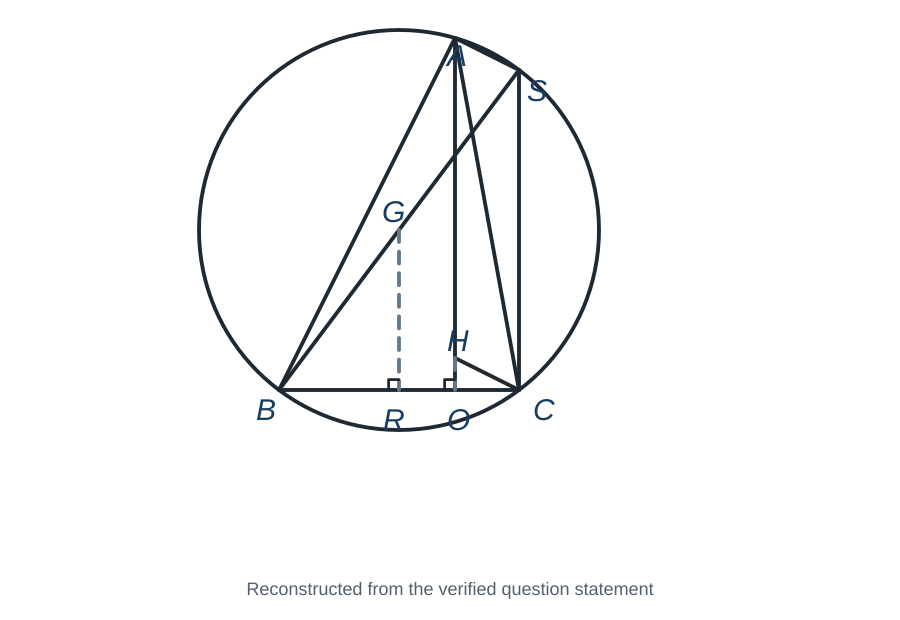
Framework / 解題框架
- 用垂直線轉成平行；(b) 先求內切圓，再由 X 作兩切線還原三角形 XYZ。
中文詳解
第一眼訊號：直徑 BS 產生 A、C 兩個直角；兩組同垂直可證平行。
策略地圖：直徑圓周角 → 兩組平行線 → 中點定理 → 圓方程 → 由 X 作兩條切線 → 新直角三角形的垂心及外心 → 對角線中點判斷平行四邊形。
(a)(i) BS 是直徑，所以半圓所對圓周角為直角：
因此 \(AS\perp AB\)、\(CS\perp BC\)。H 是垂心，所以 \(CH\perp AB\)、\(AH\perp BC\)。故
兩組對邊分別平行，所以 AHCS 是平行四邊形。
- 由 (i)，\(AH=CS\)。G 是圓心，故是直徑 BS 的中點；R 是 G 到弦 BC 的垂足，所以 R 是 BC 中點。在 \(\triangle BSC\) 中，GR 連接 BS、BC 的中點，故由中點定理
因此
(b)(i) 設圓為
代入 B、C：
相減得 \(420-30D=0\)，所以 \(D=14\)，再得 \(F=-176\)。代入 A：
故圓方程為
亦即
所以 \(G=(-7,20)\)，半徑為 25。
- 先找由 X 向此圓的兩條切線。直線 \(x=-32\) 與圓心水平距離為 25，因此是一條切線。設另一條過 X 的切線斜率為 m：
寫成 \(mx-y+70+32m=0\)。圓心到此線距離等於 25：
平方並約去 625：
YZ 與 BC 平行，所以 YZ 水平。圓的兩條水平切線是 \(y=45\) 及 \(y=-5\)；為形成包含圓的三角形，取 \(YZ:y=-5\)。
與 \(x=-32\) 相交得
另一切線與 \(y=-5\) 相交：
故
XY 鉛直而 YZ 水平，所以 \(\triangle XYZ\) 在 Y 是直角；因此
外心 Q 是斜邊 XZ 的中點：
再求原三角形的 H。BC 水平，所以 AH 是 \(x=0\)。AC 斜率為 \(-44/8=-11/2\)，故由 B 作的高斜率為 \(2/11\)：
令 \(x=0\)，得 \(H=(0,4)\)。
若 GPHQ 依次是平行四邊形，對角線 GH 與 PQ 必有相同中點。但
兩者不同，所以 GPHQ 不是平行四邊形，不同意 claim。
陰濕位：展示圖依題幹重建，只用來表達已知關係；所有結論仍須由直徑、垂直、斜率及距離逐步證明。
English Solution
First-Look Signal: a diameter creates right angles, and equal perpendicular directions prove the parallelogram. For the coordinate claim, construct the circle first, then the two tangents and finally compare diagonal midpoints.
Strategy Map: diameter angles, then parallel sides, then the midpoint theorem, then circle coefficients, then tangent equations, then centres of the new right triangle, then the diagonal-midpoint test.
(a)(i) Since BS is a diameter, the angles subtended by BS are right angles:
Thus \(AS\perp AB\) and \(CS\perp BC\). Because H is the orthocentre of \(\triangle ABC\), \(CH\perp AB\) and \(AH\perp BC\). Lines perpendicular to the same line are parallel, so
Both pairs of opposite sides of AHCS are parallel; hence AHCS is a parallelogram.
(a)(i)From the parallelogram, \(AH=CS\). G is the centre of the circumcircle and therefore the midpoint of diameter BS. The perpendicular from the centre to chord BC bisects BC, so R is the midpoint of BC. In \(\triangle BSC\), GR joins the midpoints of BS and BC; the midpoint theorem gives
Therefore
(b)(i) Let the circle be
Substitution of B and C gives
Subtracting gives \(420-30D=0\), so \(D=14\), and then \(F=-176\). Substituting A:
Hence
Equivalently,
so the circumcentre is \(G=(-7,20)\) and the radius is 25.
(ii)First find the two tangents from X. The vertical line
is tangent. For the other tangent, write
or \(mx-y+70+32m=0\). Tangency means the distance from G to this line equals 25:
Squaring and simplifying:
Since YZ is parallel to BC, it is horizontal. The two horizontal tangents are \(y=45\) and \(y=-5\). To enclose the circle, take
Its intersection with \(x=-32\) is
Intersecting the other tangent with \(y=-5\):
so
XY is vertical and YZ is horizontal, so \(\triangle XYZ\) is right-angled at Y. Therefore its orthocentre is
and its circumcentre is the midpoint of hypotenuse XZ:
For \(\triangle ABC\), BC is horizontal, so the altitude from A is \(x=0\). Since \(AC\) has slope \(-44/8=-11/2\), the altitude from B has slope \(2/11\):
At \(x=0\), this gives \(H=(0,4)\). Finally, a parallelogram GPHQ would have equal diagonal midpoints:
They are different, so GPHQ is not a parallelogram. I disagree with the claim.
Common Trap: A tangent from X is not determined by its slope alone; the distance from the centre to the line must equal the radius, and both diagonal midpoints must be checked for the final parallelogram claim.
Final Answer / 最終答案
- (a) \(\boxed{AHCS\text{ is a parallelogram and }AH=2GR}\) (b)(i) \(\boxed{(x+7)^2+(y-20)^2=625}\) (ii) \(\boxed{\text{Disagree; GPHQ is not a parallelogram}}\)
下圖中，\(\triangle ABC\) 的外接圓同時是 \(\triangle OPQ\) 的內切圓。\(A,B,C\) 分別在 \(OQ,OP,PQ\) 上，且 \(AB=AC\)。
(a)證明 \(\angle POQ=\angle BAC\)。
(b)設 \(O=(0,0)\)，\(A,Q\) 在 x 軸上，\(y_B=y_C=18\)，且 \(BC=12\)。求 \(\triangle OPQ\) 的內心 \(S\)，並判斷 \(S\) 是否為 \(\triangle ABC\) 的垂心。
In the figure, the circumcircle of \(\triangle ABC\) is also the incircle of \(\triangle OPQ\). The points \(A,B,C\) lie on \(OQ,OP,PQ\) respectively, and \(AB=AC\).
(a)Prove that \(\angle POQ=\angle BAC\).
(b)Let \(O=(0,0)\), with \(A,Q\) on the x-axis, \(y_B=y_C=18\), and \(BC=12\). Find the incentre \(S\) of \(\triangle OPQ\), and determine whether \(S\) is the orthocentre of \(\triangle ABC\).
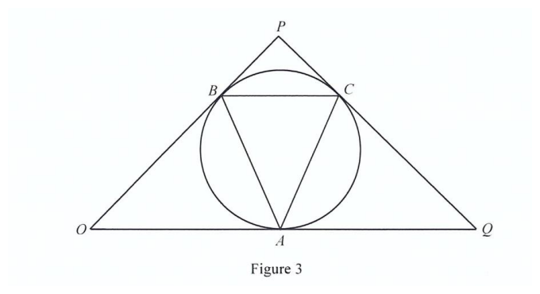
Framework / 解題框架
圖證部分用切線及 alternate segment theorem；坐標部分只信斜率及距離。
中文詳解
第一眼訊號：\(OQ,OP,PQ\) 都是內切圓切線；切線與弦的角可轉成圓周角。
策略地圖：切線弦定理 → 等腰底角 → 證兩角相等 → 半弦直角三角形求半徑 → 切線垂直半徑求坐標 → 斜率檢查垂心。
- 因 \(OQ\) 在 \(A\) 與圓相切，切線弦定理給
同理，\(OP\) 在 \(B\) 與圓相切，
又 \(AB=AC\)，所以
設這些相等的角為 \(\theta\)。在 \(\triangle OAB\) 中，
在 \(\triangle ABC\) 中，
故 \(\angle POQ=\angle BAC\)。
- 因 \(AB=AC\) 且 \(BC\) 水平，\(A\) 在 \(BC\) 的中垂線上。設 \(A=(t,0)\)，則
內切圓與 x 軸在 \(A\) 相切，所以圓心 \(S=(t,r)\)。由 \(SB=r\)：
展開：
故 \(36r=360\)，\(r=10\)。
又 \(SB\perp OB\)。
所以 \(m_{OB}=3/4\)。但
因此
故
要檢查 \(S\) 是否為 \(\triangle ABC\) 的垂心，雖然 \(AS\perp BC\)，仍須檢查另一條高：
乘積為 \(-4\ne-1\)，所以 \(BS\not\perp AC\)。因此 \(S\) 不是垂心。
陰濕位：圖中兩線看似垂直不算證明；垂心必須同時在至少兩條高線上。
English Solution
First-Look Signal: The three sides of (OPQ) are tangents to the same circle, so tangent-chord angles become inscribed angles.
Strategy Map: tangent-chord theorem → equal base angles → angle equality → half-chord radius equation → tangent-radius perpendicularity → slope audit.
Complete Worked Solution / 完整詳解
(a)Since (OQ) is tangent at (A),
Similarly, since \(OP\) is tangent at \(B\),
The given \(AB=AC\) gives
Let the common angle be \(\theta\). In \(\triangle OAB\),
In \(\triangle ABC\),
Therefore
(b)Since \(AB=AC\) and \(BC\) is horizontal, write \(A=(t,0)\), so
The incircle touches the x-axis at \(A\), so its centre is \(S=(t,r)\). Because \(SB=r\),
Expanding,
Hence \(36r=360\), so \(r=10\).
Also \(SB\perp OB\), so
and \(m_{OB}=3/4\). But
Hence
Thus
Although \(AS\perp BC\), a second altitude is required to test the orthocentre claim:
Their product is
so
Therefore \(S\) is not the orthocentre.
Common Trap: A visually plausible perpendicular line is not a proof; verify a second altitude algebraically.
Final Answer / 最終答案
- (a) \(\boxed{\angle POQ=\angle BAC}\).
- \(\boxed{S=(30,10)}\); \(\boxed{S\text{ is not the orthocentre / }S\text{ 不是垂心}}\).
Q 是圓 C 的圓心。R 及 S 是圓 C 上兩點。P 是 RS 上一點，使 \(\triangle QRS\) 的形心位於 PQ 上。
(a)證明 \(\triangle QPR\cong\triangle QPS\)。
(b)引入直角坐標系，使 Q 及 S 的坐標分別為 \((44,33)\) 及 \((-12,66)\)。T 是直線
上的一點，且 P、Q、S、T 共圓。求 T 的坐標。
Q is the centre of a circle C. R and S are points on C. P is a point on RS such that the centroid of \(\triangle QRS\) lies on PQ.
(a)Prove that \(\triangle QPR\cong\triangle QPS\).
(b)A rectangular coordinate system is introduced such that \(Q=(44,33)\) and \(S=(-12,66)\). T lies on
and P, Q, S and T are concyclic. Find the coordinates of T.
Framework / 解題框架
形心在中線 → P 為 RS 中點 → SSS 全等 → 直角圓周角 → 直線代入及垂直斜率。
中文詳解
第一眼訊號：三角形的形心在由頂點 Q 引出的中線上。PQ 又通過形心且 P 在 RS 上，所以 P 必是 RS 的中點；這正好把半徑相等轉成 SSS 全等。
策略地圖：先證 P 為中點 → 利用半徑得 \(QR=QS\) → 由全等取得 P 處直角 → QS 成為共圓四邊形的直徑 → 用 \(QT\perp ST\) 和已知直線求 T。
完整詳解 / Complete Worked Solution
（a）設 G 為 \(\triangle QRS\) 的形心。G 在由 Q 引至 RS 中點的中線上。題設又指 G 在 PQ 上，而 P 本身在 RS 上，因此 PQ 就是這條中線，故 P 是 RS 的中點：
此外，Q 是圓 C 的圓心，故 R、S 到 Q 的距離相等：
又 \(QP\) 是公邊。因此
由 SSS 全等成立。
（b）由（a）的全等，
但 R、P、S 共線，因此這兩個鄰角的和是 \(180^\circ\)。兩角相等，所以
故 QS 是通過 P、Q、S 的圓的直徑。T 也在此圓上，所以同樣截 QS 的圓周角為直角：
即
設 \(T=(x,y)\)。因 T 在已知直線上，
由 \(QT\perp ST\)，兩斜率的乘積是 \(-1\)：
代入 \(y=\frac{50-4x}{3}\)：
整理為
展開左右兩邊：
所以
代回直線：
因此
陰濕位：不能只因 Q 是原來圓 C 的圓心，便直接使用半徑垂直切線。第（b）要用的是 \(\angle QPS=90^\circ\) 所導出的「QS 是新圓的直徑」。
English Solution
First-Look Signal: The centroid lies on the median from Q. Since P is also on RS and PQ passes through the centroid, P must be the midpoint of RS. This turns the equal radii into an SSS congruence proof.
Strategy Map: Establish P as the midpoint → use \(QR=QS\) → obtain the right angle at P → use QS as a diameter of the circle through P, Q and S → combine \(QT\perp ST\) with the given line.
Complete Worked Solution / 完整詳解
(a)Let G be the centroid of \(\triangle QRS\). The centroid lies on the median from Q to RS. As G lies on PQ and P lies on RS, PQ is that median. Hence P is the midpoint of RS and
Since Q is the centre of C,
Also, QP is common to both triangles. Therefore
by SSS.
(b)From the congruence,
R, P and S are collinear, so these equal adjacent angles have total \(180^\circ\). Thus
Consequently, QS is a diameter of the circle through P, Q and S. Since T is on the same circle,
so \(QT\perp ST\).
Let \(T=(x,y)\). The given line gives
From \(QT\perp ST\), the slopes of QT and ST must have product \(-1\):
After substituting \(y=\frac{50-4x}{3}\),
Thus
Expanding before collecting terms gives
Therefore \(x=-10\). Substitution into the line gives
Hence
Common Trap: The required perpendicularity is not a tangent-radius fact from the original circle C. It comes from \(\angle QPS=90^\circ\), the right angle subtended by diameter QS in the derived circle through P, Q, S and T.
Final Answer / 最終答案
（a）\(\triangle QPR\cong\triangle QPS\)。
（b）\(\boxed{T=(-10,30)}\)。
設 \(G,R\) 分別為 \(\triangle OBA\) 的外心及外接圓半徑。
(a)證明
(b)在直角坐標平面上，\(O=(0,0)\)、\(B=(1352,0)\)，\(\triangle OBA\) 的垂心的 \(x\) 坐標為 792，而 \(A\) 在第一象限。已知 \(\sin\angle AOB=56/65\)。
(b)(i)求 \(\triangle OBA\) 的外接圓方程。
(b)(ii)\(I\) 是內心，內切圓分別與 \(OA,AB,OB\) 相切於 \(X,Y,Z\)。有人聲稱 \([\triangle OBA]\) 至少是 \([\triangle XYZ]\) 的 5 倍。你是否同意？解釋。
Let \(G\) and \(R\) be the circumcentre and circumradius of \(\triangle OBA\).
(a)Prove that
(b)In a rectangular coordinate system, \(O=(0,0)\), \(B=(1352,0)\), and the x-coordinate of the orthocentre of \(\triangle OBA\) is 792. The point \(A\) lies in the first quadrant, and \(\sin\angle AOB=56/65\).
(b)(i)Find the equation of the circumcircle of \(\triangle OBA\).
(b)(ii)\(I\) is the incentre, and the incircle touches \(OA,AB,OB\) at \(X,Y,Z\) respectively. Someone claims that \([\triangle OBA]\) is at least five times \([\triangle XYZ]\). Do you agree? Explain.
Framework / 解題框架
證明擴充正弦公式 → 由垂心資料重建三角形 → 求外接圓及內切圓 → 比較接觸三角形面積。 Prove the extended sine relation → reconstruct the triangle → find both circles → compare areas.
中文詳解
完整詳解 / Complete Worked Solution
（a）在外接圓中作通過 \(O\) 的直徑 \(OC\)。則 \(\angle OBC=90^\circ\)。\(\angle OCB\) 與 \(\angle OAB\) 都對着弦 \(OB\)：兩角視乎頂點位置相等或互補，但兩者的正弦必定相等。因此
所求得證。
（b）（i）因 \(OB\) 水平，所以由 \(A\) 向 \(OB\) 作出的高是鉛直線。垂心在這條高上，而其 \(x\) 坐標為 792，故 \(x_A=792\)。
題設 \(A\) 在第一象限，\(\sin\angle AOB=56/65\)，所以餘弦取正值：
由 \(x_A=OA\cos\angle AOB\)，
所以 \(A=(792,1344)\)。\(OB\) 的中點是 \((676,0)\)，故其中垂線為 \(x=676\)。設外心 \(G=(676,g)\)。由 \(GO=GA\)：
半徑平方為
因此外接圓為
（ii）先求其餘邊和原三角形面積：
三邊為 \(1352,1456,1560=104(13,14,15)\)，所以半周界
利用 \(\text{面積}=rs\)，內切圓半徑為
接觸點 \(X,Y,Z\) 都在半徑為 \(r\) 的內切圓上。三個小三角形 \(IXY,IYZ,IZX\) 的夾角分別是 \(180^\circ-A\)、\(180^\circ-B\)、\(180^\circ-O\)，而 \(\sin(180^\circ-\theta)=\sin\theta\)。
由三角形面積公式，
因此
更直接地，兩面積之比是
所以原三角形不足接觸三角形的 5 倍，不同意聲稱。
English Solution
Complete Worked Solution / 完整詳解
Draw a diameter \(OC\) of the circumcircle. Then \(\angle OBC=90^\circ\). Both \(\angle OCB\) and \(\angle OAB\) subtend chord \(OB\). Depending on which segment contains the vertices, the angles are equal or supplementary, but their sines are equal. Hence
which proves part (a).
Since \(OB\) is horizontal, the altitude from \(A\) is vertical. Hence the orthocentre's x-coordinate gives \(x_A=792\). Since \(A\) is in the first quadrant,
Therefore
Thus \(A=(792,1344)\).
The perpendicular bisector of \(OB\) is \(x=676\). Put \(G=(676,g)\). Equal distances from \(G\) to \(O\) and \(A\) give
Also
Thus the circumcircle is
Next,
The semiperimeter is
Using \([\triangle OBA]=rs\), the inradius is
For the contact triangle, the points \(X,Y,Z\) lie on the incircle centred at \(I\). The angles \(\angle XIY\), \(\angle YIZ\), and \(\angle ZIX\) are respectively \(180^\circ-A\), \(180^\circ-B\), and \(180^\circ-O\). Since \(\sin(180^\circ-\theta)=\sin\theta\),
Adding the areas of \(\triangle IXY\), \(\triangle IYZ\), and \(\triangle IZX\) therefore gives
Finally,
The original triangle is not at least five times as large. The claim is false.
Final Answer / 最終答案
（a）\(OB/\sin\angle OAB=2R\)。
（b）（i）\((x-676)^2+(y-507)^2=714025\)。（ii）不同意 / Disagree。
(a)PQR 是鈍角三角形，S、T 分別在 PQ、PR 上。G、H 分別是 \(\triangle PST\) 的外心及 \(\triangle PQR\) 的垂心。U 在 QR 上，G、H、P、U 共線，且 \(UT\perp PR\)。證明 QR 是通過 S、U、T 的圓在 U 的切線。
(b)引入直角坐標，\(G=(48,k)\)，k 是整數。C 是通過 S、U、T 的圓。已知 \(QR:31x+40y=9370\)、\(UT:PT=3:2\)、\(PR=26\sqrt{197}\)。
(b)(i)求 k。
(b)(ii)求 P。
(b)(iii)\(RH:y=-37\)。Steven 聲稱存在一點 I，使 I 及 \(\triangle IQR\) 的內心都在 PU 上。你同意嗎？解釋。
(a)PQR is obtuse. S and T lie on PQ and PR. G and H are the circumcentre of \(\triangle PST\) and the orthocentre of \(\triangle PQR\). U lies on QR; G, H, P and U are collinear, and \(UT\perp PR\). Prove that QR is tangent at U to the circle through S, U and T.
(b)Introduce rectangular coordinates with \(G=(48,k)\), where k is an integer. C is the circle through S, U and T. Given \(QR:31x+40y=9370\), \(UT:PT=3:2\) and \(PR=26\sqrt{197}\):
(b)(i)Find k.
(b)(ii)Find P.
(b)(iii)\(RH:y=-37\). Steven claims that there is a point I such that both I and the incentre of \(\triangle IQR\) lie on PU. Do you agree? Explain.
Framework / 解題框架
- 先證 G 是 PU 中點；(b) 用相似及點線距離還原所有坐標。
中文詳解
第一眼訊號：G 是 PST 外心，所以在 PT 的中垂線上；UT 也垂直 PT。
策略地圖：先證 G 是 PU 中點 → 辨認 G 也是圓 C 的圓心 → 以半徑垂直切線完成證明 → 用相似直角三角形求半徑 → 用點線距離及垂足公式求坐標 → 用角平分線定理反證聲稱。
- 設 M 是 PT 中點。因 G 是 \(\triangle PST\) 外心，
又 \(UT\perp PT\)，所以 \(GM\parallel UT\)。在 \(\triangle PUT\) 中，M 是 PT 中點；由中點定理逆定理，G 是 PU 中點。
因此
而 G 原本是 \(\triangle PST\) 外心，\(GP=GS=GT\)，故
所以 G 也是通過 S、U、T 的圓心。H 是 \(\triangle PQR\) 的垂心，故 \(PH\perp QR\)。P、H、G、U 共線，所以 \(GU\perp QR\)。半徑 GU 垂直 QR，因此 QR 是圓在 U 的切線。
- 設 \(PT=2t\)、\(UT=3t\)。直角三角形 PUT 給
由題中相似直角三角形所給的投影關係，
代入：
因 t 為正數，所以
G 是 PU 中點，亦是圓 C 的圓心；圓半徑
- QR 與圓相切，所以 G 到 QR 的距離等於 r：
因 \(31^2+40^2=2561\)，平方前可約成
故
得 \(k=325.1\) 或 \(k=69\)。k 是整數，所以
- 切點 U 是 G 到 QR 的垂足。把 G 代入直線左方得
垂足公式給
G 是 PU 中點，所以
- PU 斜率為
而 QR 斜率為 \(-31/40\)，故 \(PU\perp QR\)。由 \(RH:y=-37\)，RH 水平；H 是垂心，所以 PQ 垂直，\(x_Q=x_P=-14\)。代入 QR：
同時 R 在 \(y=-37\) 及 QR 上：
故
明顯地
所以 \(QU\ne UR\)。
若 \(\triangle IQR\) 的內心在 PU 上，PU 必是 I 角的角平分線，並在 U 交 QR。角平分線定理要求
但因 \(IU\perp QR\)，設 \(IU=d>0\)，則
把角平分線比例平方並交叉相乘，得到
非退化時 \(d>0\)，故必須 \(UR=QU\)，與上面矛盾。因此不同意 Steven 的 claim。
陰濕位：I 在 PU 上並不代表 PU 必然是 \(\triangle IQR\) 的角平分線；必須同時套用角平分線定理，並保留 \(IU=d>0\) 的非退化條件。
English Solution
First-Look Signal: because G is the circumcentre of PST, it lies on a perpendicular bisector; the given UT perpendicular to PT supplies a parallel line. This points to a midpoint-theorem proof before any coordinates are used.
Strategy Map: prove G is the midpoint of PU, then identify G as the circle centre, then use radius-perpendicular-to-tangent, then use the similar right-triangle relation, then use the point-to-line distance and foot formula, then test the angle-bisector claim.
(a)Let M be the midpoint of PT. Because G is the circumcentre of \(\triangle PST\),
The question also gives
Therefore
Since M is the midpoint of PT, the converse of the midpoint theorem gives G as the midpoint of PU. Hence
Because G is the circumcentre of \(\triangle PST\),
Therefore
so G is the centre of the circle through S, U and T. H is the orthocentre of \(\triangle PQR\), hence
As P, H, G and U are collinear,
Thus the radius GU is perpendicular to QR at U, proving that QR is tangent at U.
(b)Put \(PT=2t\) and \(UT=3t\). Since \(\triangle PUT\) is right-angled at T,
The given similar-right-triangle relation is
Substitution gives
Because \(t\) is positive, divide by that positive factor:
G is the midpoint of PU and the centre of circle C, so
(i)Since QR is tangent to C, the distance from the given centre to the given line equals r:
Since
this becomes
Thus
giving \(k=325.1\) or \(k=69\). Since k is an integer,
(ii)Substituting G into the line gives
The perpendicular-foot formula therefore gives
As G is the midpoint of PU,
(iii)The slope of PU is
whereas QR has slope \(-31/40\), so \(PU\perp QR\). Since \(RH:y=-37\) is horizontal and H is an orthocentre, \(PQ\) is vertical, giving \(x_Q=x_P=-14\). Substitution in QR gives
Also R lies on \(y=-37\) and QR:
Thus
Also,
so \(QU\ne UR\). If the incentre of \(\triangle IQR\) lay on PU, then PU would be the angle bisector through U, and the angle-bisector theorem would require
Because \(IU\perp QR\), write \(IU=d>0\). Then
Squaring the ratio and cross-multiplying gives
Since \(d>0\) in a non-degenerate triangle, this would force \(UR=QU\), a contradiction. Therefore I do not agree with Steven's claim.
Common Trap: A point on PU is not automatically an incentre. The angle-bisector theorem must be applied at U, and the non-degenerate condition \(IU=d>0\) must be retained.
Final Answer / 最終答案
- (a) \(\boxed{QR\text{ is tangent at }U}\) (b)(i) \(\boxed{k=69}\) (ii) \(\boxed{P=(-14,-11)}\) (iii) \(\boxed{\text{Disagree}}\)